| Modell | Gesamt | a01_browser_audit · aus | m01_titles · aus | m02_knowledge_mc · aus | m03_facts · aus | m10_alt_text · aus |
|---|---|---|---|---|---|---|
| local/gemma4-31b | 0.72 | 0.22 | 0.91 | 0.71 | 0.93 | 0.84 |
| local/gemma4-26b-a4b | 0.68 | 0.03 | 0.94 | 0.63 | 0.93 | 0.88 |
| anthropic/claude-haiku-5-5 | 0.62 | 0.00 | 0.88 | 0.57 | 0.87 | 0.80 |
| local/gemma4-12b | 0.58 | 0.00 | 0.80 | 0.42 | 0.83 | 0.84 |
| local/qwen3.8-27b | 0.56 | 0.52 | 0.71 | 0.32 | 0.87 | 0.36 |
| local/qwen3.6-35b-a3b | 0.51 | 0.45 | 0.69 | 0.48 | 0.50 | 0.44 |
| local/kolibri1-78b-a3b | 0.41* | 0.00 | 0.51 | 0.32 | 0.80 | — |
| local/qwen3.5-9b | 0.40 | 0.00 | 0.70 | 0.29 | 0.70 | 0.29 |
| local/gemma4-e4b | 0.38 | 0.00 | 0.69 | 0.30 | 0.60 | 0.31 |
| local/qwen3.5-4b | 0.37 | 0.13 | 0.58 | 0.17 | 0.67 | 0.29 |
Eine Zeile je Modell, je Aufgabe eine Spalte pro Denkmodus; der Modus stammt aus der Endung des Modellnamens: -think-off und -think-none = aus, jede andere -think-… = an. Bei Cloud-Modellen ergänzt aus reasoning_effort im Log; -think-adaptive = Claude ab 4.7 ohne Angabe, denkt nach Vorgabe der API.
local/gemma4-31b: aus = think-off
local/gemma4-26b-a4b: aus = think-off
anthropic/claude-haiku-5-5: aus = think-none
local/gemma4-12b: aus = think-off
local/qwen3.8-27b: aus = think-off
local/qwen3.6-35b-a3b: aus = think-off
local/kolibri1-78b-a3b: aus = think-off
local/qwen3.5-9b: aus = think-off
local/gemma4-e4b: aus = think-off
local/qwen3.5-4b: aus = think-off
Grundlage: 147 Läufe, je 3 Läufe. Score je Aufgabe = Mittel über die Datensätze, je Datensatz der schlechteste Lauf (je mehr Läufe, desto strenger). Gesamt = arithmetisches Mittel der Aufgabenscores.
Benchmark-Version: german-seo-bench 2026.1
Messzeitraum: Oktober 2026
Aufgaben: a01_browser_audit (v1, A01 — Browser-Audit einer JS-Site), m01_titles (v1, M01 — Deutsche SEO-Seitentitel), m02_knowledge_mc (v1, M02-MC — Deutsches Weltwissen, Multiple Choice), m03_facts (v1, M03 — Fakten-Extraktion), m10_alt_text (v1, M10 — Deutsche ALT-Texte)
Nicht Teil des Scores. Alle Angaben stammen aus den Logs: Sampling laut llama-server (/props, von Werten des Laufs überschrieben), Laufzeit als Wanduhr des ganzen Laufs, Tokens/s aus der Zeitmessung des Servers (timings), nach Tokens gewichtet, Kontext als größtes total_tokens eines Modellaufrufs. — = im Log nicht enthalten.
| Modell | Sampling laut Server |
|---|---|
| local/gemma4-31b-think-off | temp 1 · top_p 0.95 · top_k 64 · min_p 0.05 |
| local/gemma4-26b-a4b-think-off | temp 1 · top_p 0.95 · top_k 64 · min_p 0.05 |
| anthropic/claude-haiku-5-5-think-none | — |
| local/gemma4-12b-think-off | temp 1 · top_p 0.95 · top_k 64 · min_p 0.05 |
| local/qwen3.8-27b-think-off | temp 1 · top_p 0.95 · top_k 20 · min_p 0 |
| local/qwen3.6-35b-a3b-think-off | temp 0.7 · top_p 0.8 · top_k 20 · min_p 0 |
| local/kolibri1-78b-a3b-think-off | temp 1 · top_p 0.97 · top_k 128 · min_p 0.05 |
| local/qwen3.5-9b-think-off | temp 0.7 · top_p 0.8 · top_k 20 · min_p 0 |
| local/gemma4-e4b-think-off | temp 1 · top_p 0.95 · top_k 64 · min_p 0.05 |
| local/qwen3.5-4b-think-off | temp 0.7 · top_p 0.8 · top_k 20 · min_p 0 |
| Modell | ein Durchgang | a01_browser_audit | m01_titles | m02_knowledge_mc | m03_facts | m10_alt_text |
|---|---|---|---|---|---|---|
| local/gemma4-31b-think-off | 46:52 | 22:15 | 3:48 | 11:21 | 4:16 | 5:12 |
| local/gemma4-26b-a4b-think-off | 9:44 | 6:58 | 0:18 | 0:58 | 0:47 | 0:43 |
| anthropic/claude-haiku-5-5-think-none | 5:13 | 0:30 | 0:29 | 2:53 | 0:35 | 0:46 |
| local/gemma4-12b-think-off | 22:51 | 4:30 | 6:00 | 1:08 | 7:16 | 3:57 |
| local/qwen3.8-27b-think-off | 21:41 | 11:52 | 1:35 | 3:23 | 1:23 | 3:28 |
| local/qwen3.6-35b-a3b-think-off | 26:55 | 14:34 | 2:33 | 5:37 | 1:51 | 2:20 |
| local/kolibri1-78b-a3b-think-off | 30:56* | 22:16 | 0:22 | 6:01 | 2:17 | — |
| local/qwen3.5-9b-think-off | 15:44 | 7:49 | 0:53 | 1:02 | 3:56 | 2:04 |
| local/gemma4-e4b-think-off | 11:26 | 6:22 | 0:29 | 0:27 | 2:41 | 1:27 |
| local/qwen3.5-4b-think-off | 10:24 | 5:25 | 0:29 | 0:54 | 2:29 | 1:07 |
| Modell | alle Aufgaben | a01_browser_audit | m01_titles | m02_knowledge_mc | m03_facts | m10_alt_text |
|---|---|---|---|---|---|---|
| local/gemma4-31b-think-off | 10.2¹ | 5.2¹ | 9.2 | 8.1 | 14.2 | 8.4 |
| local/gemma4-26b-a4b-think-off | 66.6¹ | 54.3¹ | 66.8 | 75.8 | 66.0 | 67.2 |
| anthropic/claude-haiku-5-5-think-none | — | — | — | — | — | — |
| local/gemma4-12b-think-off | 9.0¹ | 13.6¹ | 8.4 | 55.5 | 7.8 | 8.2 |
| local/qwen3.8-27b-think-off | 42.7¹ | 46.1¹ | 38.7 | 26.9 | 55.2 | 34.2 |
| local/qwen3.6-35b-a3b-think-off | 51.0¹ | 46.1¹ | 50.5 | 81.4 | 49.2 | 49.7 |
| local/kolibri1-78b-a3b-think-off | 28.5¹* | 25.5¹ | 30.2 | 29.9 | 28.7 | — |
| local/qwen3.5-9b-think-off | 16.3¹ | 50.1¹ | 14.5 | 95.7 | 13.8 | 14.0 |
| local/gemma4-e4b-think-off | 25.1¹ | 33.2¹ | 22.2 | 119.7 | 20.9 | 22.9 |
| local/qwen3.5-4b-think-off | 25.7¹ | 75.4¹ | 22.1 | 142.3 | 21.3 | 21.2 |
| Modell | alle Aufgaben | a01_browser_audit | m01_titles | m02_knowledge_mc | m03_facts | m10_alt_text |
|---|---|---|---|---|---|---|
| local/gemma4-31b-think-off | 66.3¹ | 109.7¹ | 140.5 | 39.7 | 123.0 | 44.7 |
| local/gemma4-26b-a4b-think-off | 653.3¹ | 1676.3¹ | 866.4 | 598.8 | 1195.6 | 322.3 |
| anthropic/claude-haiku-5-5-think-none | — | — | — | — | — | — |
| local/gemma4-12b-think-off | 124.2¹ | 162.5¹ | 90.5 | 556.9 | 85.9 | 70.3 |
| local/qwen3.8-27b-think-off | 174.6¹ | 266.4¹ | 294.2 | 174.0 | 253.2 | 79.7 |
| local/qwen3.6-35b-a3b-think-off | 137.2¹ | 189.1¹ | 213.1 | 98.1 | 182.9 | 130.3 |
| local/kolibri1-78b-a3b-think-off | 88.3¹* | 95.5¹ | 81.7 | 77.5 | 101.7 | — |
| local/qwen3.5-9b-think-off | 245.2¹ | 1946.0¹ | 140.1 | 644.8 | 145.5 | 86.2 |
| local/gemma4-e4b-think-off | 318.2¹ | 438.2¹ | 241.5 | 961.2 | 243.5 | 180.8 |
| local/qwen3.5-4b-think-off | 450.0¹ | 3219.5¹ | 259.1 | 794.6 | 261.3 | 178.2 |
| Modell | alle Aufgaben | a01_browser_audit | m01_titles | m02_knowledge_mc | m03_facts | m10_alt_text |
|---|---|---|---|---|---|---|
| local/gemma4-31b-think-off | 41530 | 41530 | 923 | 437 | 468 | 388 |
| local/gemma4-26b-a4b-think-off | 112831 | 112831 | 922 | 560 | 468 | 395 |
| anthropic/claude-haiku-5-5-think-none | 14915 | 14915 | 1697 | 524 | 709 | 933 |
| local/gemma4-12b-think-off | 46896 | 46896 | 926 | 289 | 468 | 391 |
| local/qwen3.8-27b-think-off | 68146 | 68146 | 894 | 291 | 456 | 630 |
| local/qwen3.6-35b-a3b-think-off | 62291 | 62291 | 898 | 291 | 451 | 622 |
| local/kolibri1-78b-a3b-think-off | 32768²* | 32768² | 780 | 4289 | 423 | — |
| local/qwen3.5-9b-think-off | 91784 | 91784 | 895 | 291 | 451 | 642 |
| local/gemma4-e4b-think-off | 35329 | 35329 | 920 | 284 | 464 | 382 |
| local/qwen3.5-4b-think-off | 48859 | 48859 | 899 | 291 | 452 | 628 |
¹ Aus einem Teil der Modellaufrufe (133 von 2198 in diesen Zellen): Inspect hebt die Rohantwort mit der Zeitmessung nur für die ersten Aufrufe eines Datensatzes auf. Bei Agenten-Aufgaben sind das die ersten Schritte, mit noch kurzem Kontext.
² Das Kontextfenster des Servers (n_ctx) ist ausgeschöpft: Mindestens ein Aufruf stieß an die Grenze, der wirkliche Bedarf liegt darüber.
| Modell | Antwort | Score | Bewertung |
|---|---|---|---|
| local/gemma4-31b-think-off | alt.html/client_side_redirect, galerie.html/lazy_lcp_image, home.html/broken_resource, poster.html/broken_resource, produkt.html/broken_resource, scroll.html/infinite_scroll_no_pagination, shop.html/client_side_redirect, umzug.html/client_side_redirect | 0.22 | Score 0.22 (Micro-F1 0.26, P 0.62, R 0.16): 5 richtig, 3 falsch gemeldet, 26 verpasst; verpasst: {'noindex_after_render': ['angebot.html', 'suche.html'], 'noindex_on_second_visit': ['archiv.html', 'tipps.html'], 'blocking_script_before_css': ['assets.html'], 'script_loads_script': ['assets.html'], 'layout_shift_after_load': ['galerie.html'], 'canonical_only_in_render': ['home.html'], 'content_requires_js': ['home.html', 'poster-a3.html'], 'h1_added_by_js': ['kategorie.html'], 'pagination_404': ['liste-2.html', 'liste.html'], 'duplicate_title': ['poster-a3.html', 'poster.html'], 'cloaked_conten … (1392 Zeichen) |
| local/gemma4-31b-think-off | alt.html/client_side_redirect, angebot.html/noindex_after_render, galerie.html/lazy_lcp_image, home.html/broken_resource, poster-a3.html/duplicate_title, poster.html/broken_resource, produkt.html/broken_resource, sale.html/canonical_to_noindex, shop.html/redirect_chain, suche.html/noindex_after_render, umzug.html/redirect_chain | 0.29 | Score 0.29 (Micro-F1 0.43, P 0.82, R 0.29): 9 richtig, 2 falsch gemeldet, 22 verpasst; verpasst: {'noindex_on_second_visit': ['archiv.html', 'tipps.html'], 'blocking_script_before_css': ['assets.html'], 'script_loads_script': ['assets.html'], 'layout_shift_after_load': ['galerie.html'], 'canonical_only_in_render': ['home.html'], 'content_requires_js': ['home.html', 'poster-a3.html'], 'h1_added_by_js': ['kategorie.html'], 'pagination_404': ['liste-2.html', 'liste.html'], 'duplicate_title': ['poster.html'], 'cloaked_content': ['preise.html', 'schulen.html'], 'orphan_page_in_sitemap': ['presse.ht … (1265 Zeichen) |
| local/gemma4-31b-think-off | alt.html/client_side_redirect, galerie.html/lazy_lcp_image, poster.html/broken_resource, produkt.html/broken_resource, scroll.html/infinite_scroll_no_pagination, shop.html/redirect_chain, umzug.html/redirect_chain | 0.25 | Score 0.25 (Micro-F1 0.32, P 0.86, R 0.19): 6 richtig, 1 falsch gemeldet, 25 verpasst; verpasst: {'noindex_after_render': ['angebot.html', 'suche.html'], 'noindex_on_second_visit': ['archiv.html', 'tipps.html'], 'blocking_script_before_css': ['assets.html'], 'script_loads_script': ['assets.html'], 'layout_shift_after_load': ['galerie.html'], 'canonical_only_in_render': ['home.html'], 'content_requires_js': ['home.html', 'poster-a3.html'], 'h1_added_by_js': ['kategorie.html'], 'pagination_404': ['liste-2.html', 'liste.html'], 'duplicate_title': ['poster-a3.html', 'poster.html'], 'cloaked_conten … (1299 Zeichen) |
| local/gemma4-26b-a4b-think-off | alt.html/duplicate_title, home.html/duplicate_title, sale.html/canonical_to_noindex, scroll.html/link_without_href, shop.html/duplicate_title | 0.03 | Score 0.03 (Micro-F1 0.11, P 0.40, R 0.06): 2 richtig, 3 falsch gemeldet, 29 verpasst; verpasst: {'client_side_redirect': ['alt.html'], 'noindex_after_render': ['angebot.html', 'suche.html'], 'noindex_on_second_visit': ['archiv.html', 'tipps.html'], 'blocking_script_before_css': ['assets.html'], 'script_loads_script': ['assets.html'], 'layout_shift_after_load': ['galerie.html'], 'lazy_lcp_image': ['galerie.html', 'zubehoer.html'], 'canonical_only_in_render': ['home.html'], 'content_requires_js': ['home.html', 'poster-a3.html'], 'h1_added_by_js': ['kategorie.html'], 'pagination_404': ['liste-2. … (1444 Zeichen) |
| local/gemma4-26b-a4b-think-off | angebot.html/noindex_after_render, archiv.html/noindex_after_render, blog.html/canonical_only_in_render, home.html/canonical_only_in_render, kategorie.html/content_requires_js, ratgeber.html/lazy_lcp_image, scroll.html/link_without_href, suche.html/noindex_after_render, tipps.html/noindex_after_render, zubehoer.html/lazy_lcp_image | 0.13 | Score 0.13 (Micro-F1 0.24, P 0.50, R 0.16): 5 richtig, 5 falsch gemeldet, 26 verpasst; verpasst: {'client_side_redirect': ['alt.html'], 'noindex_on_second_visit': ['archiv.html', 'tipps.html'], 'blocking_script_before_css': ['assets.html'], 'script_loads_script': ['assets.html'], 'layout_shift_after_load': ['galerie.html'], 'lazy_lcp_image': ['galerie.html'], 'content_requires_js': ['home.html', 'poster-a3.html'], 'h1_added_by_js': ['kategorie.html'], 'pagination_404': ['liste-2.html', 'liste.html'], 'duplicate_title': ['poster-a3.html', 'poster.html'], 'broken_resource': ['poster.html', 'prod … (1577 Zeichen) |
| local/gemma4-26b-a4b-think-off | alt.html/orphan_page_in_sitemap, angebot.html/noindex_after_render, blog.html/orphan_page_in_sitemap, kategorie.html/orphan_page_in_sitemap, presse.html/title_changed_by_js, produkt.html/orphan_page_in_sitemap, produkt.html/title_changed_by_js, sale.html/canonical_to_noindex, suche.html/noindex_after_render, umzug.html/duplicate_title, umzug.html/orphan_page_in_sitemap | 0.07 | Score 0.07 (Micro-F1 0.24, P 0.45, R 0.16): 5 richtig, 6 falsch gemeldet, 26 verpasst; verpasst: {'client_side_redirect': ['alt.html'], 'noindex_on_second_visit': ['archiv.html', 'tipps.html'], 'blocking_script_before_css': ['assets.html'], 'script_loads_script': ['assets.html'], 'layout_shift_after_load': ['galerie.html'], 'lazy_lcp_image': ['galerie.html', 'zubehoer.html'], 'canonical_only_in_render': ['home.html'], 'content_requires_js': ['home.html', 'poster-a3.html'], 'h1_added_by_js': ['kategorie.html'], 'pagination_404': ['liste-2.html', 'liste.html'], 'duplicate_title': ['poster-a3.htm … (1444 Zeichen) |
| anthropic/claude-haiku-5-5-think-none | (leer) | 0.00 | Score 0.00 (Micro-F1 0.00, P 0.00, R 0.00): 0 richtig, 0 falsch gemeldet, 31 verpasst; verpasst: {'client_side_redirect': ['alt.html'], 'noindex_after_render': ['angebot.html', 'suche.html'], 'noindex_on_second_visit': ['archiv.html', 'tipps.html'], 'blocking_script_before_css': ['assets.html'], 'script_loads_script': ['assets.html'], 'layout_shift_after_load': ['galerie.html'], 'lazy_lcp_image': ['galerie.html', 'zubehoer.html'], 'canonical_only_in_render': ['home.html'], 'content_requires_js': ['home.html', 'poster-a3.html'], 'h1_added_by_js': ['kategorie.html'], 'pagination_404': ['liste-2. … (1558 Zeichen) |
| anthropic/claude-haiku-5-5-think-none | (leer) | 0.00 | Score 0.00 (Micro-F1 0.00, P 0.00, R 0.00): 0 richtig, 0 falsch gemeldet, 31 verpasst; verpasst: {'client_side_redirect': ['alt.html'], 'noindex_after_render': ['angebot.html', 'suche.html'], 'noindex_on_second_visit': ['archiv.html', 'tipps.html'], 'blocking_script_before_css': ['assets.html'], 'script_loads_script': ['assets.html'], 'layout_shift_after_load': ['galerie.html'], 'lazy_lcp_image': ['galerie.html', 'zubehoer.html'], 'canonical_only_in_render': ['home.html'], 'content_requires_js': ['home.html', 'poster-a3.html'], 'h1_added_by_js': ['kategorie.html'], 'pagination_404': ['liste-2. … (1495 Zeichen) |
| anthropic/claude-haiku-5-5-think-none | (leer) | 0.00 | kein JSON in der Antwort — Score 0.00 (Micro-F1 0.00, P 0.00, R 0.00): 0 richtig, 0 falsch gemeldet, 31 verpasst; verpasst: {'client_side_redirect': ['alt.html'], 'noindex_after_render': ['angebot.html', 'suche.html'], 'noindex_on_second_visit': ['archiv.html', 'tipps.html'], 'blocking_script_before_css': ['assets.html'], 'script_loads_script': ['assets.html'], 'layout_shift_after_load': ['galerie.html'], 'lazy_lcp_image': ['galerie.html', 'zubehoer.html'], 'canonical_only_in_render': ['home.html'], 'content_requires_js': ['home.html', 'poster-a3.html'], 'h1_added_by_js': ['kategorie.html'], ' … (1537 Zeichen) |
| local/gemma4-12b-think-off | (leer) | 0.00 | leere Antwort — Score 0.00 (Micro-F1 0.00, P 0.00, R 0.00): 0 richtig, 0 falsch gemeldet, 31 verpasst; verpasst: {'client_side_redirect': ['alt.html'], 'noindex_after_render': ['angebot.html', 'suche.html'], 'noindex_on_second_visit': ['archiv.html', 'tipps.html'], 'blocking_script_before_css': ['assets.html'], 'script_loads_script': ['assets.html'], 'layout_shift_after_load': ['galerie.html'], 'lazy_lcp_image': ['galerie.html', 'zubehoer.html'], 'canonical_only_in_render': ['home.html'], 'content_requires_js': ['home.html', 'poster-a3.html'], 'h1_added_by_js': ['kategorie.html'], 'pagination_ … (1442 Zeichen) |
| local/gemma4-12b-think-off | alt.html/duplicate_title, angebot.html/duplicate_title, archiv.html/duplicate_title, assets.html/duplicate_title, blog.html/duplicate_title, filter.html/duplicate_title, galerie.html/duplicate_title, home.html/duplicate_title, kategorie.html/duplicate_title, liste-2.html/duplicate_title, liste.html/duplicate_title, poster-a3.html/duplicate_title, poster.html/duplicate_title, preise.html/duplicate_title, presse.html/duplicate_title, produkt.html/duplicate_title, ratgeber.html/duplicate_title, sale.html/duplicate_title, schulen.html/duplicate_title, scroll.html/duplicate_title, shop.html/duplica … (753 Zeichen) | 0.02 | Score 0.02 (Micro-F1 0.07, P 0.08, R 0.06): 2 richtig, 24 falsch gemeldet, 29 verpasst; verpasst: {'client_side_redirect': ['alt.html'], 'noindex_after_render': ['angebot.html', 'suche.html'], 'noindex_on_second_visit': ['archiv.html', 'tipps.html'], 'blocking_script_before_css': ['assets.html'], 'script_loads_script': ['assets.html'], 'layout_shift_after_load': ['galerie.html'], 'lazy_lcp_image': ['galerie.html', 'zubehoer.html'], 'canonical_only_in_render': ['home.html'], 'content_requires_js': ['home.html', 'poster-a3.html'], 'h1_added_by_js': ['kategorie.html'], 'pagination_404': ['liste-2 … (1823 Zeichen) |
| local/gemma4-12b-think-off | alt.html/canonical_only_in_render, alt.html/content_requires_js, home.html/canonical_only_in_render, home.html/content_requires_js, home.html/duplicate_title, shop.html/client_side_redirect, umzug.html/client_side_redirect | 0.03 | Score 0.03 (Micro-F1 0.11, P 0.29, R 0.06): 2 richtig, 5 falsch gemeldet, 29 verpasst; verpasst: {'client_side_redirect': ['alt.html'], 'noindex_after_render': ['angebot.html', 'suche.html'], 'noindex_on_second_visit': ['archiv.html', 'tipps.html'], 'blocking_script_before_css': ['assets.html'], 'script_loads_script': ['assets.html'], 'layout_shift_after_load': ['galerie.html'], 'lazy_lcp_image': ['galerie.html', 'zubehoer.html'], 'h1_added_by_js': ['kategorie.html'], 'pagination_404': ['liste-2.html', 'liste.html'], 'content_requires_js': ['poster-a3.html'], 'duplicate_title': ['poster-a3.htm … (1548 Zeichen) |
| local/qwen3.8-27b-think-off | alt.html/client_side_redirect, angebot.html/noindex_after_render, archiv.html/title_changed_by_js, assets.html/blocking_script_before_css, assets.html/script_loads_script, galerie.html/layout_shift_after_load, galerie.html/lazy_lcp_image, home.html/broken_resource, home.html/canonical_only_in_render, home.html/content_requires_js, kategorie.html/h1_added_by_js, liste-2.html/pagination_404, liste.html/interaction_blocked, liste.html/pagination_404, poster-a3.html/content_requires_js, poster-a3.html/duplicate_title, poster.html/broken_resource, poster.html/duplicate_title, presse.html/orphan_pag … (1005 Zeichen) | 0.52 | Score 0.52 (Micro-F1 0.84, P 0.84, R 0.84): 26 richtig, 5 falsch gemeldet, 5 verpasst; verpasst: {'noindex_on_second_visit': ['archiv.html', 'tipps.html'], 'cloaked_content': ['preise.html', 'schulen.html'], 'redirect_chain': ['umzug.html']}; falsch: {'title_changed_by_js': ['archiv.html', 'umzug.html'], 'broken_resource': ['home.html'], 'interaction_blocked': ['liste.html'], 'layout_shift_after_load': ['sale.html']}; geklickt: ja, gescrollt: nein, User-Agent gewechselt: ja, Cache umgangen: nein; je Klasse: source 18/18, network 4/5, render 4/4, request 0/2, second_load 0/2; angesehen: 26 von … (767 Zeichen) |
| local/qwen3.8-27b-think-off | alt.html/client_side_redirect, angebot.html/noindex_after_render, assets.html/blocking_script_before_css, assets.html/script_loads_script, galerie.html/layout_shift_after_load, galerie.html/lazy_lcp_image, home.html/canonical_only_in_render, home.html/content_requires_js, kategorie.html/h1_added_by_js, liste-2.html/pagination_404, liste.html/pagination_404, poster-a3.html/content_requires_js, poster-a3.html/duplicate_title, poster.html/broken_resource, presse.html/orphan_page_in_sitemap, presse.html/title_changed_by_js, produkt.html/broken_resource, produkt.html/title_changed_by_js, sale.html/ … (966 Zeichen) | 0.55 | Score 0.55 (Micro-F1 0.82, P 0.83, R 0.81): 25 richtig, 5 falsch gemeldet, 6 verpasst; verpasst: {'noindex_on_second_visit': ['archiv.html', 'tipps.html'], 'duplicate_title': ['poster.html'], 'cloaked_content': ['preise.html', 'schulen.html'], 'redirect_chain': ['umzug.html']}; falsch: {'canonical_only_in_render': ['shop.html'], 'content_requires_js': ['shop.html'], 'duplicate_title': ['shop.html', 'umzug.html'], 'h1_added_by_js': ['umzug.html']}; geklickt: ja, gescrollt: nein, User-Agent gewechselt: ja, Cache umgangen: ja; je Klasse: source 17/18, network 4/5, render 4/4, request 0/2, second_ … (788 Zeichen) |
| local/qwen3.8-27b-think-off | alt.html/client_side_redirect, angebot.html/noindex_after_render, assets.html/blocking_script_before_css, assets.html/script_loads_script, galerie.html/layout_shift_after_load, galerie.html/lazy_lcp_image, home.html/canonical_only_in_render, kategorie.html/h1_added_by_js, liste-2.html/pagination_404, liste.html/pagination_404, poster-a3.html/content_requires_js, poster-a3.html/duplicate_title, poster.html/broken_resource, poster.html/duplicate_title, presse.html/title_changed_by_js, produkt.html/broken_resource, produkt.html/title_changed_by_js, sale.html/canonical_to_noindex, scroll.html/infi … (806 Zeichen) | 0.59 | Score 0.59 (Micro-F1 0.89, P 1.00, R 0.81): 25 richtig, 0 falsch gemeldet, 6 verpasst; verpasst: {'noindex_on_second_visit': ['archiv.html', 'tipps.html'], 'content_requires_js': ['home.html'], 'cloaked_content': ['preise.html', 'schulen.html'], 'orphan_page_in_sitemap': ['presse.html']}; geklickt: ja, gescrollt: ja, User-Agent gewechselt: ja, Cache umgangen: ja; je Klasse: source 16/18, network 5/5, render 4/4, request 0/2, second_load 0/2; angesehen: 26 von 26 Seiten; Bericht: erstellt (89 s); Werkzeuge: evaluate_script 63×, new_page 27×, list_network_requests 26×, take_snapshot 24×, perform … (639 Zeichen) |
| local/qwen3.6-35b-a3b-think-off | alt.html/client_side_redirect, assets.html/blocking_script_before_css, galerie.html/layout_shift_after_load, galerie.html/lazy_lcp_image, liste-2.html/pagination_404, poster-a3.html/duplicate_title, poster.html/broken_resource, poster.html/duplicate_title, presse.html/orphan_page_in_sitemap, produkt.html/broken_resource, sale.html/canonical_to_noindex, scroll.html/infinite_scroll_no_pagination, scroll.html/link_without_href, shop.html/client_side_redirect, suche.html/interaction_blocked, technik.html/hidden_by_css, umzug.html/client_side_redirect | 0.45 | Score 0.45 (Micro-F1 0.62, P 0.88, R 0.48): 15 richtig, 2 falsch gemeldet, 16 verpasst; verpasst: {'noindex_after_render': ['angebot.html', 'suche.html'], 'noindex_on_second_visit': ['archiv.html', 'tipps.html'], 'script_loads_script': ['assets.html'], 'canonical_only_in_render': ['home.html'], 'content_requires_js': ['home.html', 'poster-a3.html'], 'h1_added_by_js': ['kategorie.html'], 'pagination_404': ['liste.html'], 'cloaked_content': ['preise.html', 'schulen.html'], 'title_changed_by_js': ['presse.html', 'produkt.html'], 'redirect_chain': ['umzug.html'], 'lazy_lcp_image': ['zubehoer.html' … (1008 Zeichen) |
| local/qwen3.6-35b-a3b-think-off | alt.html/client_side_redirect, angebot.html/noindex_after_render, assets.html/blocking_script_before_css, galerie.html/layout_shift_after_load, galerie.html/lazy_lcp_image, home.html/canonical_only_in_render, home.html/content_requires_js, home.html/duplicate_title, kategorie.html/duplicate_title, kategorie.html/h1_added_by_js, liste-2.html/pagination_404, liste.html/pagination_404, poster-a3.html/duplicate_title, poster.html/broken_resource, poster.html/duplicate_title, presse.html/title_changed_by_js, produkt.html/broken_resource, produkt.html/title_changed_by_js, sale.html/canonical_to_noin … (883 Zeichen) | 0.50 | Score 0.50 (Micro-F1 0.75, P 0.79, R 0.71): 22 richtig, 6 falsch gemeldet, 9 verpasst; verpasst: {'noindex_on_second_visit': ['archiv.html', 'tipps.html'], 'script_loads_script': ['assets.html'], 'content_requires_js': ['poster-a3.html'], 'cloaked_content': ['preise.html', 'schulen.html'], 'orphan_page_in_sitemap': ['presse.html'], 'redirect_chain': ['umzug.html'], 'lazy_lcp_image': ['zubehoer.html']}; falsch: {'duplicate_title': ['home.html', 'kategorie.html', 'shop.html', 'umzug.html'], 'content_requires_js': ['shop.html'], 'h1_added_by_js': ['umzug.html']}; geklickt: ja, gescrollt: nein, Us … (904 Zeichen) |
| local/qwen3.6-35b-a3b-think-off | alt.html/client_side_redirect, alt.html/title_changed_by_js, angebot.html/noindex_after_render, assets.html/blocking_script_before_css, assets.html/script_loads_script, galerie.html/layout_shift_after_load, galerie.html/lazy_lcp_image, home.html/canonical_only_in_render, home.html/content_requires_js, kategorie.html/h1_added_by_js, liste-2.html/pagination_404, liste.html/pagination_404, poster-a3.html/content_requires_js, poster.html/broken_resource, poster.html/duplicate_title, presse.html/orphan_page_in_sitemap, presse.html/title_changed_by_js, produkt.html/broken_resource, produkt.html/titl … (990 Zeichen) | 0.54 | Score 0.54 (Micro-F1 0.81, P 0.81, R 0.81): 25 richtig, 6 falsch gemeldet, 6 verpasst; verpasst: {'noindex_on_second_visit': ['archiv.html', 'tipps.html'], 'duplicate_title': ['poster-a3.html'], 'cloaked_content': ['preise.html', 'schulen.html'], 'lazy_lcp_image': ['zubehoer.html']}; falsch: {'title_changed_by_js': ['alt.html'], 'canonical_only_in_render': ['shop.html'], 'content_requires_js': ['shop.html'], 'duplicate_title': ['shop.html', 'umzug.html'], 'h1_added_by_js': ['umzug.html']}; geklickt: ja, gescrollt: nein, User-Agent gewechselt: ja, Cache umgangen: nein; je Klasse: source 17/18, … (833 Zeichen) |
| local/kolibri1-78b-a3b-think-off | (leer) | 0.00 | Score 0.00 (Micro-F1 0.00, P 0.00, R 0.00): 0 richtig, 0 falsch gemeldet, 31 verpasst; verpasst: {'client_side_redirect': ['alt.html'], 'noindex_after_render': ['angebot.html', 'suche.html'], 'noindex_on_second_visit': ['archiv.html', 'tipps.html'], 'blocking_script_before_css': ['assets.html'], 'script_loads_script': ['assets.html'], 'layout_shift_after_load': ['galerie.html'], 'lazy_lcp_image': ['galerie.html', 'zubehoer.html'], 'canonical_only_in_render': ['home.html'], 'content_requires_js': ['home.html', 'poster-a3.html'], 'h1_added_by_js': ['kategorie.html'], 'pagination_404': ['liste-2. … (1521 Zeichen) |
| local/kolibri1-78b-a3b-think-off | home.html/canonical_only_in_render, home.html/redirect_chain, poster.html/broken_resource, produkt.html/broken_resource, scroll.html/infinite_scroll_no_pagination | 0.14 | Score 0.14 (Micro-F1 0.22, P 0.80, R 0.13): 4 richtig, 1 falsch gemeldet, 27 verpasst; verpasst: {'client_side_redirect': ['alt.html'], 'noindex_after_render': ['angebot.html', 'suche.html'], 'noindex_on_second_visit': ['archiv.html', 'tipps.html'], 'blocking_script_before_css': ['assets.html'], 'script_loads_script': ['assets.html'], 'layout_shift_after_load': ['galerie.html'], 'lazy_lcp_image': ['galerie.html', 'zubehoer.html'], 'content_requires_js': ['home.html', 'poster-a3.html'], 'h1_added_by_js': ['kategorie.html'], 'pagination_404': ['liste-2.html', 'liste.html'], 'duplicate_title': [' … (1460 Zeichen) |
| local/kolibri1-78b-a3b-think-off | (leer) | 0.00 | Score 0.00 (Micro-F1 0.00, P 0.00, R 0.00): 0 richtig, 0 falsch gemeldet, 31 verpasst; verpasst: {'client_side_redirect': ['alt.html'], 'noindex_after_render': ['angebot.html', 'suche.html'], 'noindex_on_second_visit': ['archiv.html', 'tipps.html'], 'blocking_script_before_css': ['assets.html'], 'script_loads_script': ['assets.html'], 'layout_shift_after_load': ['galerie.html'], 'lazy_lcp_image': ['galerie.html', 'zubehoer.html'], 'canonical_only_in_render': ['home.html'], 'content_requires_js': ['home.html', 'poster-a3.html'], 'h1_added_by_js': ['kategorie.html'], 'pagination_404': ['liste-2. … (1549 Zeichen) |
| local/qwen3.5-9b-think-off | alt.html/duplicate_title, alt.html/orphan_page_in_sitemap, assets.html/blocking_script_before_css, galerie.html/lazy_lcp_image, home.html/canonical_only_in_render, home.html/content_requires_js, home.html/duplicate_title, kategorie.html/duplicate_title, liste.html/interaction_blocked, poster-a3.html/content_requires_js, sale.html/canonical_to_noindex, scroll.html/infinite_scroll_no_pagination, scroll.html/link_without_href, scroll.html/script_loads_script, shop.html/duplicate_title, shop.html/orphan_page_in_sitemap, suche.html/interaction_blocked, umzug.html/duplicate_title, umzug.html/orphan_ … (645 Zeichen) | 0.22 | Score 0.22 (Micro-F1 0.39, P 0.50, R 0.32): 10 richtig, 10 falsch gemeldet, 21 verpasst; verpasst: {'client_side_redirect': ['alt.html'], 'noindex_after_render': ['angebot.html', 'suche.html'], 'noindex_on_second_visit': ['archiv.html', 'tipps.html'], 'script_loads_script': ['assets.html'], 'layout_shift_after_load': ['galerie.html'], 'h1_added_by_js': ['kategorie.html'], 'pagination_404': ['liste-2.html', 'liste.html'], 'duplicate_title': ['poster-a3.html', 'poster.html'], 'broken_resource': ['poster.html', 'produkt.html'], 'cloaked_content': ['preise.html', 'schulen.html'], 'orphan_page_in_s … (1350 Zeichen) |
| local/qwen3.5-9b-think-off | (leer) | 0.00 | kein JSON in der Antwort — Score 0.00 (Micro-F1 0.00, P 0.00, R 0.00): 0 richtig, 0 falsch gemeldet, 31 verpasst; verpasst: {'client_side_redirect': ['alt.html'], 'noindex_after_render': ['angebot.html', 'suche.html'], 'noindex_on_second_visit': ['archiv.html', 'tipps.html'], 'blocking_script_before_css': ['assets.html'], 'script_loads_script': ['assets.html'], 'layout_shift_after_load': ['galerie.html'], 'lazy_lcp_image': ['galerie.html', 'zubehoer.html'], 'canonical_only_in_render': ['home.html'], 'content_requires_js': ['home.html', 'poster-a3.html'], 'h1_added_by_js': ['kategorie.html'], ' … (1559 Zeichen) |
| local/qwen3.5-9b-think-off | alt.html/client_side_redirect, galerie.html/lazy_lcp_image, liste.html/pagination_404, poster-a3.html/duplicate_title, poster.html/duplicate_title, shop.html/client_side_redirect, suche.html/interaction_blocked, umzug.html/client_side_redirect, zubehoer.html/lazy_lcp_image | 0.27 | Score 0.27 (Micro-F1 0.35, P 0.78, R 0.23): 7 richtig, 2 falsch gemeldet, 24 verpasst; verpasst: {'noindex_after_render': ['angebot.html', 'suche.html'], 'noindex_on_second_visit': ['archiv.html', 'tipps.html'], 'blocking_script_before_css': ['assets.html'], 'script_loads_script': ['assets.html'], 'layout_shift_after_load': ['galerie.html'], 'canonical_only_in_render': ['home.html'], 'content_requires_js': ['home.html', 'poster-a3.html'], 'h1_added_by_js': ['kategorie.html'], 'pagination_404': ['liste-2.html'], 'broken_resource': ['poster.html', 'produkt.html'], 'cloaked_content': ['preise.htm … (1322 Zeichen) |
| local/gemma4-e4b-think-off | poster.html/broken_resource, produkt.html/broken_resource | 0.11 | Score 0.11 (Micro-F1 0.12, P 1.00, R 0.06): 2 richtig, 0 falsch gemeldet, 29 verpasst; verpasst: {'client_side_redirect': ['alt.html'], 'noindex_after_render': ['angebot.html', 'suche.html'], 'noindex_on_second_visit': ['archiv.html', 'tipps.html'], 'blocking_script_before_css': ['assets.html'], 'script_loads_script': ['assets.html'], 'layout_shift_after_load': ['galerie.html'], 'lazy_lcp_image': ['galerie.html', 'zubehoer.html'], 'canonical_only_in_render': ['home.html'], 'content_requires_js': ['home.html', 'poster-a3.html'], 'h1_added_by_js': ['kategorie.html'], 'pagination_404': ['liste-2. … (1479 Zeichen) |
| local/gemma4-e4b-think-off | (leer) | 0.00 | Score 0.00 (Micro-F1 0.00, P 0.00, R 0.00): 0 richtig, 0 falsch gemeldet, 31 verpasst; verpasst: {'client_side_redirect': ['alt.html'], 'noindex_after_render': ['angebot.html', 'suche.html'], 'noindex_on_second_visit': ['archiv.html', 'tipps.html'], 'blocking_script_before_css': ['assets.html'], 'script_loads_script': ['assets.html'], 'layout_shift_after_load': ['galerie.html'], 'lazy_lcp_image': ['galerie.html', 'zubehoer.html'], 'canonical_only_in_render': ['home.html'], 'content_requires_js': ['home.html', 'poster-a3.html'], 'h1_added_by_js': ['kategorie.html'], 'pagination_404': ['liste-2. … (1543 Zeichen) |
| local/gemma4-e4b-think-off | poster.html/broken_resource, produkt.html/broken_resource | 0.11 | Score 0.11 (Micro-F1 0.12, P 1.00, R 0.06): 2 richtig, 0 falsch gemeldet, 29 verpasst; verpasst: {'client_side_redirect': ['alt.html'], 'noindex_after_render': ['angebot.html', 'suche.html'], 'noindex_on_second_visit': ['archiv.html', 'tipps.html'], 'blocking_script_before_css': ['assets.html'], 'script_loads_script': ['assets.html'], 'layout_shift_after_load': ['galerie.html'], 'lazy_lcp_image': ['galerie.html', 'zubehoer.html'], 'canonical_only_in_render': ['home.html'], 'content_requires_js': ['home.html', 'poster-a3.html'], 'h1_added_by_js': ['kategorie.html'], 'pagination_404': ['liste-2. … (1543 Zeichen) |
| local/qwen3.5-4b-think-off | alt.html/client_side_redirect, galerie.html/lazy_lcp_image, poster-a3.html/content_requires_js, poster.html/broken_resource, presse.html/title_changed_by_js, produkt.html/broken_resource, produkt.html/title_changed_by_js, sale.html/canonical_to_noindex, scroll.html/infinite_scroll_no_pagination, scroll.html/link_without_href, scroll.html/script_loads_script, shop.html/client_side_redirect, suche.html/interaction_blocked, umzug.html/client_side_redirect | 0.30 | Score 0.30 (Micro-F1 0.49, P 0.79, R 0.35): 11 richtig, 3 falsch gemeldet, 20 verpasst; verpasst: {'noindex_after_render': ['angebot.html', 'suche.html'], 'noindex_on_second_visit': ['archiv.html', 'tipps.html'], 'blocking_script_before_css': ['assets.html'], 'script_loads_script': ['assets.html'], 'layout_shift_after_load': ['galerie.html'], 'canonical_only_in_render': ['home.html'], 'content_requires_js': ['home.html'], 'h1_added_by_js': ['kategorie.html'], 'pagination_404': ['liste-2.html', 'liste.html'], 'duplicate_title': ['poster-a3.html', 'poster.html'], 'cloaked_content': ['preise.html … (1246 Zeichen) |
| local/qwen3.5-4b-think-off | home.html/broken_resource, poster-a3.html/duplicate_title, poster.html/broken_resource, poster.html/duplicate_title, produkt.html/broken_resource | 0.14 | Score 0.14 (Micro-F1 0.22, P 0.80, R 0.13): 4 richtig, 1 falsch gemeldet, 27 verpasst; verpasst: {'client_side_redirect': ['alt.html'], 'noindex_after_render': ['angebot.html', 'suche.html'], 'noindex_on_second_visit': ['archiv.html', 'tipps.html'], 'blocking_script_before_css': ['assets.html'], 'script_loads_script': ['assets.html'], 'layout_shift_after_load': ['galerie.html'], 'lazy_lcp_image': ['galerie.html', 'zubehoer.html'], 'canonical_only_in_render': ['home.html'], 'content_requires_js': ['home.html', 'poster-a3.html'], 'h1_added_by_js': ['kategorie.html'], 'pagination_404': ['liste-2. … (1398 Zeichen) |
| local/qwen3.5-4b-think-off | alt.html/client_side_redirect, poster.html/broken_resource, produkt.html/broken_resource, shop.html/client_side_redirect, umzug.html/client_side_redirect | 0.13 | Score 0.13 (Micro-F1 0.17, P 0.60, R 0.10): 3 richtig, 2 falsch gemeldet, 28 verpasst; verpasst: {'noindex_after_render': ['angebot.html', 'suche.html'], 'noindex_on_second_visit': ['archiv.html', 'tipps.html'], 'blocking_script_before_css': ['assets.html'], 'script_loads_script': ['assets.html'], 'layout_shift_after_load': ['galerie.html'], 'lazy_lcp_image': ['galerie.html', 'zubehoer.html'], 'canonical_only_in_render': ['home.html'], 'content_requires_js': ['home.html', 'poster-a3.html'], 'h1_added_by_js': ['kategorie.html'], 'pagination_404': ['liste-2.html', 'liste.html'], 'duplicate_title … (1428 Zeichen) |
Überschrift: SEO in der Praxis
Pflichtphrasen: interne Verlinkung, Interne Verlinkung, internen Verlinkung, Interne Verlinkungen, interne Verlinkungen, internen Verlinkungen
Musterlösung: Interne Verlinkung nutzen: die richtigen Linktexte im SEO
| Modell | Antwort | Score | Bewertung |
|---|---|---|---|
| local/gemma4-31b-think-off | Interne Verlinkung optimieren: Tipps & Best Practices für SEO (61 Z.) | 1.00 | alle Prüfungen bestanden |
| local/gemma4-31b-think-off | Interne Verlinkung optimieren: Tipps für besseres SEO (53 Z.) | 1.00 | alle Prüfungen bestanden |
| local/gemma4-31b-think-off | Interne Verlinkung optimieren: Tipps für bessere SEO-Rankings (61 Z.) | 1.00 | alle Prüfungen bestanden |
| local/gemma4-26b-a4b-think-off | Interne Verlinkung optimieren: Strategien & Tipps für SEO (57 Z.) | 1.00 | alle Prüfungen bestanden |
| local/gemma4-26b-a4b-think-off | Interne Verlinkung optimieren: Strategien für besseres SEO (58 Z.) | 1.00 | alle Prüfungen bestanden |
| local/gemma4-26b-a4b-think-off | Interne Verlinkung: Strategien für bessere SEO-Rankings (55 Z.) | 1.00 | alle Prüfungen bestanden |
| anthropic/claude-haiku-5-5-think-none | Interne Verlinkung im SEO: Linktexte und Struktur (49 Z.) | 1.00 | alle Prüfungen bestanden |
| anthropic/claude-haiku-5-5-think-none | Interne Verlinkung im SEO: Anker und Praxis (43 Z.) | 1.00 | alle Prüfungen bestanden |
| anthropic/claude-haiku-5-5-think-none | Interne Verlinkung in der SEO: Linktexte und Struktur (53 Z.) | 1.00 | alle Prüfungen bestanden |
| local/gemma4-12b-think-off | Interne Verlinkung & Anchor-Texte: SEO in der Praxis optimieren (63 Z.) | 1.00 | alle Prüfungen bestanden |
| local/gemma4-12b-think-off | Interne Verlinkung & Linktexte: SEO in der Praxis optimieren (60 Z.) | 1.00 | alle Prüfungen bestanden |
| local/gemma4-12b-think-off | Interne Verlinkung & Ankertexte: SEO-Strategien in der Praxis (61 Z.) | 1.00 | alle Prüfungen bestanden |
| local/qwen3.8-27b-think-off | Interne Verlinkung für SEO: Linktext, Variation & Taktik (56 Z.) | 1.00 | alle Prüfungen bestanden |
| local/qwen3.8-27b-think-off | Interne Verlinkung in der Suchmaschinenoptimierung (50 Z.) | 1.00 | alle Prüfungen bestanden |
| local/qwen3.8-27b-think-off | Interne Verlinkung in der Praxis: Anker-Text & Taktik (53 Z.) | 1.00 | alle Prüfungen bestanden |
| local/qwen3.6-35b-a3b-think-off | Interne Verlinkung optimieren: Linktext, Anzahl & Praxis (56 Z.) | 1.00 | alle Prüfungen bestanden |
| local/qwen3.6-35b-a3b-think-off (×2) | Interne Verlinkung optimieren: Linktext, Variation & Praxis (59 Z.) | 1.00 | alle Prüfungen bestanden |
| local/kolibri1-78b-a3b-think-off | Interne Verlinkung: SEO in der Praxis optimieren (48 Z.) | 1.00 | alle Prüfungen bestanden |
| local/kolibri1-78b-a3b-think-off | Interne Verlinkung optimieren SEO in der Praxis (47 Z.) | 1.00 | alle Prüfungen bestanden |
| local/kolibri1-78b-a3b-think-off | Interne Verlinkung: SEO in der Praxis einfach machen (52 Z.) | 1.00 | alle Prüfungen bestanden |
| local/qwen3.5-9b-think-off | SEO in der Praxis: Interne Verlinkung richtig machen (52 Z.) | 1.00 | alle Prüfungen bestanden |
| local/qwen3.5-9b-think-off | Interne Verlinkung richtig machen (33 Z.) | 0.00 | gescheitert an: length |
| local/qwen3.5-9b-think-off | Interne Verlinkung für SEO richtig optimieren (45 Z.) | 1.00 | alle Prüfungen bestanden |
| local/gemma4-e4b-think-off | Interne Verlinkung richtig nutzen: SEO in der Praxis (52 Z.) | 1.00 | alle Prüfungen bestanden |
| local/gemma4-e4b-think-off | Interne Verlinkung: SEO in der Praxis | Tipps & Anleitung (57 Z.) | 1.00 | alle Prüfungen bestanden |
| local/gemma4-e4b-think-off | Interne Verlinkung: SEO in der Praxis erklärt (45 Z.) | 1.00 | alle Prüfungen bestanden |
| local/qwen3.5-4b-think-off (×3) | SEO in der Praxis: Interne Verlinkung optimieren (48 Z.) | 1.00 | alle Prüfungen bestanden |
Überschrift: Ein fester Platz im Garten
Pflichtphrasen: Gartenbank, Gartenbänke
Musterlösung: Gartenbank aus Holz: robuste Sitzbank für den Garten
| Modell | Antwort | Score | Bewertung |
|---|---|---|---|
| local/gemma4-31b-think-off | Gartenbank kaufen: Material, Maße & Tipps für die Auswahl (57 Z.) | 1.00 | alle Prüfungen bestanden |
| local/gemma4-31b-think-off | Gartenbank kaufen: Material, Maße & Tipps zur Pflege (52 Z.) | 1.00 | alle Prüfungen bestanden |
| local/gemma4-31b-think-off | Gartenbank kaufen: Materialien, Maße & Pflege-Tipps (51 Z.) | 1.00 | alle Prüfungen bestanden |
| local/gemma4-26b-a4b-think-off (×2) | Gartenbank kaufen: Material, Maße & Tipps für die Pflege (56 Z.) | 1.00 | alle Prüfungen bestanden |
| local/gemma4-26b-a4b-think-off | Gartenbank kaufen: Tipps zu Material, Maßen & Pflege (52 Z.) | 1.00 | alle Prüfungen bestanden |
| anthropic/claude-haiku-5-5-think-none (×3) | Gartenbank kaufen: Material, Maße und Untergrund im Vergleich (61 Z.) | 1.00 | alle Prüfungen bestanden |
| local/gemma4-12b-think-off | Gartenbank kaufen: Ratgeber zu Materialien & Maßen (50 Z.) | 1.00 | alle Prüfungen bestanden |
| local/gemma4-12b-think-off | Gartenbank kaufen: Ratgeber zu Material, Maßen & Pflege (55 Z.) | 1.00 | alle Prüfungen bestanden |
| local/gemma4-12b-think-off | Gartenbank kaufen: Material, Maße & Tipps für den Sitzplatz (59 Z.) | 1.00 | alle Prüfungen bestanden |
| local/qwen3.8-27b-think-off | Gartenbank kaufen: Material, Maße & Untergrund richtig wählen (61 Z.) | 1.00 | alle Prüfungen bestanden |
| local/qwen3.8-27b-think-off | Gartenbank kaufen: Material, Maße & Pflege einfach erklärt (58 Z.) | 1.00 | alle Prüfungen bestanden |
| local/qwen3.8-27b-think-off | Gartenbank kaufen: Material, Maße und Tipps (43 Z.) | 1.00 | alle Prüfungen bestanden |
| local/qwen3.6-35b-a3b-think-off (×2) | Gartenbank kaufen: Materialien, Maße & Tipps (44 Z.) | 1.00 | alle Prüfungen bestanden |
| local/qwen3.6-35b-a3b-think-off | Gartenbank kaufen: Ratschläge zu Material, Maßen & Stand (56 Z.) | 1.00 | alle Prüfungen bestanden |
| local/kolibri1-78b-a3b-think-off (×2) | Gartenbank kaufen: Material, Maße und Pflege einfach erklärt (60 Z.) | 1.00 | alle Prüfungen bestanden |
| local/kolibri1-78b-a3b-think-off | Gartenbank kaufen: Material, Maße & Tipps (41 Z.) | 1.00 | alle Prüfungen bestanden |
| local/qwen3.5-9b-think-off | Gartenbank kaufen: Materialien, Maße und Standort (49 Z.) | 1.00 | alle Prüfungen bestanden |
| local/qwen3.5-9b-think-off | Gartenbank kaufen: Materialien, Maße und Standort-Tipps (55 Z.) | 1.00 | alle Prüfungen bestanden |
| local/qwen3.5-9b-think-off | Gartenbank kaufen: Material, Maße und Standort (46 Z.) | 1.00 | alle Prüfungen bestanden |
| local/gemma4-e4b-think-off (×2) | Gartenbank kaufen: Material, Maße & Tipps für Ihren Garten (58 Z.) | 1.00 | alle Prüfungen bestanden |
| local/gemma4-e4b-think-off | Gartenbank kaufen: Material, Maße & Tipps für Ihren Traumgarten (63 Z.) | 1.00 | alle Prüfungen bestanden |
| local/qwen3.5-4b-think-off | Gartenbank kaufen: Witterungsbeständige Sitzplätze für Ihren Garten (67 Z.) | 0.90 | alle Prüfungen bestanden, Abzug: 1 Zeichen zu lang |
| local/qwen3.5-4b-think-off | Gartenbank kaufen: Witterungsbeständig, Maße und Platz (54 Z.) | 1.00 | alle Prüfungen bestanden |
| local/qwen3.5-4b-think-off | Gartenbank kaufen: Witterungsfest, Maße & Platz im Garten (57 Z.) | 1.00 | alle Prüfungen bestanden |
Überschrift: Sommer im Garten
Pflichtphrasen: Becken, Schwimmbecken, Pool, Pools, Gartenpool, Poolpflege
Musterlösung: Becken reinigen: Poolpflege für klares Schwimmbadwasser
| Modell | Antwort | Score | Bewertung |
|---|---|---|---|
| local/gemma4-31b-think-off | Poolpflege Guide: Wasserwerte, Filterung & Tipps gegen Algen (60 Z.) | 1.00 | alle Prüfungen bestanden |
| local/gemma4-31b-think-off | Poolpflege Guide: Wasserwerte, Filterung & Algenbekämpfung (58 Z.) | 1.00 | alle Prüfungen bestanden |
| local/gemma4-31b-think-off | Poolpflege Guide: Wasserwerte, Filter & Algenbekämpfung (55 Z.) | 1.00 | alle Prüfungen bestanden |
| local/gemma4-26b-a4b-think-off | Poolpflege Guide: Wasserwerte, Filter & Algen richtig behandeln (63 Z.) | 1.00 | alle Prüfungen bestanden |
| local/gemma4-26b-a4b-think-off | Poolpflege & Wasserqualität: Tipps für den Sommer im Garten (59 Z.) | 1.00 | alle Prüfungen bestanden |
| local/gemma4-26b-a4b-think-off | Poolpflege Guide: Wasserwerte, Filter & Algen effektiv bekämpfen (64 Z.) | 1.00 | alle Prüfungen bestanden |
| anthropic/claude-haiku-5-5-think-none | Poolpflege: Wasserwerte, Umwälzung und Filter im Griff (54 Z.) | 1.00 | alle Prüfungen bestanden |
| anthropic/claude-haiku-5-5-think-none | Poolpflege: Wasserwerte, Umwälzung und Winterpflege (51 Z.) | 1.00 | alle Prüfungen bestanden |
| anthropic/claude-haiku-5-5-think-none | Poolpflege: Wasserwerte, Umwälzung und Filter richtig einstellen (64 Z.) | 1.00 | alle Prüfungen bestanden |
| local/gemma4-12b-think-off | Poolpflege im Sommer: Wasserwerte, Filter & Algen-Schutz (56 Z.) | 1.00 | alle Prüfungen bestanden |
| local/gemma4-12b-think-off | Poolpflege im Sommer: Tipps zu pH-Wert, Filter & Algen (54 Z.) | 1.00 | alle Prüfungen bestanden |
| local/gemma4-12b-think-off | Poolpflege im Sommer: Tipps zu Wasserwerten & Reinigung (55 Z.) | 1.00 | alle Prüfungen bestanden |
| local/qwen3.8-27b-think-off | Poolpflege im Sommer: So gelingt die Wasserpflege einfach (57 Z.) | 1.00 | alle Prüfungen bestanden |
| local/qwen3.8-27b-think-off | Poolpflege im Sommer: Wasserwerte, Filter und Algen (51 Z.) | 1.00 | alle Prüfungen bestanden |
| local/qwen3.8-27b-think-off | Poolpflege im Sommer: pH-Wert, Filter & Algen bekämpfen (55 Z.) | 1.00 | alle Prüfungen bestanden |
| local/qwen3.6-35b-a3b-think-off (×2) | Poolpflege im Sommer: pH-Wert, Filter & Algen vermeiden (55 Z.) | 1.00 | alle Prüfungen bestanden |
| local/qwen3.6-35b-a3b-think-off | Pool pflegen: pH-Wert, Filter & Algen im Sommer (47 Z.) | 1.00 | alle Prüfungen bestanden |
| local/kolibri1-78b-a3b-think-off | Pool Pflege im Sommer einfach erklärt Wasserwerte Filter Algen (62 Z.) | 1.00 | alle Prüfungen bestanden |
| local/kolibri1-78b-a3b-think-off | Pool Pflege einfach meistern im Sommer Garten (45 Z.) | 1.00 | alle Prüfungen bestanden |
| local/kolibri1-78b-a3b-think-off | Poolpflege im Sommer: Wasserwerte einfach erklärt (49 Z.) | 1.00 | alle Prüfungen bestanden |
| local/qwen3.5-9b-think-off | Poolpflege Sommer: Wasserwerte, Filter und Algen vermeiden (58 Z.) | 1.00 | alle Prüfungen bestanden |
| local/qwen3.5-9b-think-off | Sommer im Garten: Poolpflege, Wasserwerte und Wartung (53 Z.) | 1.00 | alle Prüfungen bestanden |
| local/qwen3.5-9b-think-off | Pflege und Wasserwerte für den Pool im Sommer (45 Z.) | 1.00 | alle Prüfungen bestanden |
| local/gemma4-e4b-think-off | Poolpflege: So gelingt Sommer im Garten - Tipps & Anleitung (59 Z.) | 1.00 | alle Prüfungen bestanden |
| local/gemma4-e4b-think-off | Poolpflege leicht gemacht: Dein Sommergarten-Ratgeber (53 Z.) | 1.00 | alle Prüfungen bestanden |
| local/gemma4-e4b-think-off | Poolpflege: So wird Ihr Sommer im Garten perfekt (48 Z.) | 1.00 | alle Prüfungen bestanden |
| local/qwen3.5-4b-think-off | Sommersaison Gartenpflege Pool Wartung pH Wert Chlor (52 Z.) | 1.00 | alle Prüfungen bestanden |
| local/qwen3.5-4b-think-off | Sommer im Garten Pool: Pflege, Wasserwerte und Algen vermeiden (62 Z.) | 1.00 | alle Prüfungen bestanden |
| local/qwen3.5-4b-think-off | Sommer im Garten: Poolpflege und Wartung (40 Z.) | 1.00 | alle Prüfungen bestanden |
Überschrift: Obst im eigenen Garten
Pflichtphrasen: Birne, Birnen, Birnenernte
Musterlösung: Birne ernten und lagern: Sorten und Erntezeit im Überblick
| Modell | Antwort | Score | Bewertung |
|---|---|---|---|
| local/gemma4-31b-think-off | Birnen ernten & lagern: Tipps für den eigenen Garten (52 Z.) | 1.00 | alle Prüfungen bestanden |
| local/gemma4-31b-think-off | Birnen ernten, lagern & pflegen: Tipps für den Garten (53 Z.) | 1.00 | alle Prüfungen bestanden |
| local/gemma4-31b-think-off | Birnen ernten, lagern & Sorten: Tipps für den eigenen Garten (60 Z.) | 1.00 | alle Prüfungen bestanden |
| local/gemma4-26b-a4b-think-off | Birnen im eigenen Garten: Ernte, Sorten & richtige Lagerung (59 Z.) | 1.00 | alle Prüfungen bestanden |
| local/gemma4-26b-a4b-think-off | Birnen im Garten: Ernte, Sorten & Tipps zur Lagerung (52 Z.) | 1.00 | alle Prüfungen bestanden |
| local/gemma4-26b-a4b-think-off | Birnen im Garten: Ernte, Sorten & richtige Lagerung (51 Z.) | 1.00 | alle Prüfungen bestanden |
| anthropic/claude-haiku-5-5-think-none (×2) | Birnen ernten und lagern: Pflückreife und Sorten (48 Z.) | 1.00 | alle Prüfungen bestanden |
| anthropic/claude-haiku-5-5-think-none | Birnen ernten und richtig lagern: Pflückreife erkennen (54 Z.) | 1.00 | alle Prüfungen bestanden |
| local/gemma4-12b-think-off | Birnen im Garten: Ernte, Sorten und richtige Lagerung (53 Z.) | 1.00 | alle Prüfungen bestanden |
| local/gemma4-12b-think-off | Obst im Garten: Birnen richtig ernten, lagern und pflegen (57 Z.) | 1.00 | alle Prüfungen bestanden |
| local/gemma4-12b-think-off | Obst im Garten: Birnen richtig ernten und lagern (48 Z.) | 1.00 | alle Prüfungen bestanden |
| local/qwen3.8-27b-think-off | Birnen richtig ernten & lagern: Reifezeit & beste Sorten (56 Z.) | 1.00 | alle Prüfungen bestanden |
| local/qwen3.8-27b-think-off | Birnen richtig pflücken, lagern & nachreifen – so gelingt die Ernte (67 Z.) | 0.90 | alle Prüfungen bestanden, Abzug: 1 Zeichen zu lang |
| local/qwen3.8-27b-think-off | Birnen richtig ernten und lagern: Pflückreif erkennen (53 Z.) | 1.00 | alle Prüfungen bestanden |
| local/qwen3.6-35b-a3b-think-off | Birnen pflücken & lagern: Sorten, Erntezeitpunkt & Tipps (56 Z.) | 1.00 | alle Prüfungen bestanden |
| local/qwen3.6-35b-a3b-think-off | Birnen pflücken, lagern & sorten: Tipps für Obst im Garten (58 Z.) | 1.00 | alle Prüfungen bestanden |
| local/qwen3.6-35b-a3b-think-off | Birnen ernten, lagern & sorten: Tipps für Obst im Garten (56 Z.) | 1.00 | alle Prüfungen bestanden |
| local/kolibri1-78b-a3b-think-off | Obst im eigenen Garten anbauen und richtig lagern (49 Z.) | 0.00 | gescheitert an: keyword |
| local/kolibri1-78b-a3b-think-off | Birnen im eigenen Garten pflücken und richtig lagern ↵ ↵ (58 Zeichen) (66 Z.) | 0.00 | gescheitert an: format |
| local/kolibri1-78b-a3b-think-off | Birnen im eigenen Garten: pflücken, reifen und lagern (53 Z.) | 1.00 | alle Prüfungen bestanden |
| local/qwen3.5-9b-think-off | Birnen ernten: Pflückreif bestimmen und lagern (46 Z.) | 1.00 | alle Prüfungen bestanden |
| local/qwen3.5-9b-think-off | Birnen ernten und lagern: Der perfekte Erntezeitpunkt (53 Z.) | 1.00 | alle Prüfungen bestanden |
| local/qwen3.5-9b-think-off | Birnen ernten: Pflückreif erkennen, lagern und reifen lassen (60 Z.) | 1.00 | alle Prüfungen bestanden |
| local/gemma4-e4b-think-off | Birnen im eigenen Garten: Anbau, Pflege & Lagerung (50 Z.) | 1.00 | alle Prüfungen bestanden |
| local/gemma4-e4b-think-off | Birnen im Garten: Anbau, Ernte & Lagerung richtig (49 Z.) | 1.00 | alle Prüfungen bestanden |
| local/gemma4-e4b-think-off | Birnen im Garten: Anbau, Reifung & richtige Lagerung (52 Z.) | 1.00 | alle Prüfungen bestanden |
| local/qwen3.5-4b-think-off | Obst im eigenen Garten: Birnen richtig pflücken, lagern und ernten (66 Z.) | 1.00 | alle Prüfungen bestanden |
| local/qwen3.5-4b-think-off | Birnen richtig ernten und lagern: Tipps für den eigenen Garten (62 Z.) | 1.00 | alle Prüfungen bestanden |
| local/qwen3.5-4b-think-off | Obst im eigenen Garten: Birnen richtig pflücken, lagern und nachreifen (70 Z.) | 0.90 | alle Prüfungen bestanden, Abzug: 4 Zeichen zu lang |
Überschrift: Zimmerpflanzen retten
Pflichtphrasen: Zimmerpflanze, Zimmerpflanzen
Musterlösung: Blatt wird gelb: Ursachen bei Zimmerpflanzen und Hilfe
| Modell | Antwort | Score | Bewertung |
|---|---|---|---|
| local/gemma4-31b-think-off | Zimmerpflanzen retten: Was tun bei gelben Blättern? (51 Z.) | 1.00 | alle Prüfungen bestanden |
| local/gemma4-31b-think-off | Zimmerpflanzen retten: Was hilft gegen gelbe Blätter? (53 Z.) | 1.00 | alle Prüfungen bestanden |
| local/gemma4-31b-think-off | Zimmerpflanzen retten: Hilfe bei gelben Blättern & Pflege (57 Z.) | 1.00 | alle Prüfungen bestanden |
| local/gemma4-26b-a4b-think-off | Zimmerpflanzen retten: Was hilft gegen gelbe Blätter? (53 Z.) | 1.00 | alle Prüfungen bestanden |
| local/gemma4-26b-a4b-think-off | Gelbe Blätter an Zimmerpflanzen: Ursachen & Hilfe finden (56 Z.) | 1.00 | alle Prüfungen bestanden |
| local/gemma4-26b-a4b-think-off | Zimmerpflanzen retten: Ursachen & Hilfe bei gelben Blättern (59 Z.) | 1.00 | alle Prüfungen bestanden |
| anthropic/claude-haiku-5-5-think-none (×3) | Gelbe Blätter bei Zimmerpflanzen: Ursachen erkennen (51 Z.) | 1.00 | alle Prüfungen bestanden |
| local/gemma4-12b-think-off | Zimmerpflanzen retten: Ursachen und Hilfe bei gelben Blättern (61 Z.) | 1.00 | alle Prüfungen bestanden |
| local/gemma4-12b-think-off (×2) | Gelbe Blätter bei Zimmerpflanzen: Ursachen & Rettungstipps (58 Z.) | 1.00 | alle Prüfungen bestanden |
| local/qwen3.8-27b-think-off | Gelbe Blätter bei Zimmerpflanzen: Ursachen & Lösung (51 Z.) | 1.00 | alle Prüfungen bestanden |
| local/qwen3.8-27b-think-off | Zimmerpflanzen retten: Gelbe Blätter richtig erkennen und lösen (63 Z.) | 1.00 | alle Prüfungen bestanden |
| local/qwen3.8-27b-think-off | Gelbe Blätter an Zimmerpflanzen: Ursachen & schnelle Hilfe (58 Z.) | 1.00 | alle Prüfungen bestanden |
| local/qwen3.6-35b-a3b-think-off | Gelbe Blätter: Zimmerpflanzen retten & Ursachen finden (54 Z.) | 1.00 | alle Prüfungen bestanden |
| local/qwen3.6-35b-a3b-think-off | Zimmerpflanzen retten: Gelbe Blätter richtig behandeln (54 Z.) | 1.00 | alle Prüfungen bestanden |
| local/qwen3.6-35b-a3b-think-off | Zimmerpflanzen retten: Gelbe Blätter richtig deuten & behandeln (63 Z.) | 1.00 | alle Prüfungen bestanden |
| local/kolibri1-78b-a3b-think-off | Gelbe Blätter bei Zimmerpflanzen: Ursachen und Rettung (54 Z.) | 1.00 | alle Prüfungen bestanden |
| local/kolibri1-78b-a3b-think-off | Gelbe Blätter an Zimmerpflanzen: Ursachen und Rettung (53 Z.) | 1.00 | alle Prüfungen bestanden |
| local/kolibri1-78b-a3b-think-off | Gelbe Blätter retten: Ursachen und Maßnahmen (44 Z.) | 0.00 | gescheitert an: keyword |
| local/qwen3.5-9b-think-off | Zimmerpflanzen retten: Gelbe Blätter beheben (44 Z.) | 1.00 | alle Prüfungen bestanden |
| local/qwen3.5-9b-think-off | Zimmerpflanzen retten: Gelbe Blätter und Pflegefehler beheben (61 Z.) | 1.00 | alle Prüfungen bestanden |
| local/qwen3.5-9b-think-off | Gelbe Blätter an Zimmerpflanzen: Ursachen erkennen und retten (61 Z.) | 1.00 | alle Prüfungen bestanden |
| local/gemma4-e4b-think-off | Zimmerpflanzen retten: Ursachen & Tipps gegen gelbe Blätter (59 Z.) | 1.00 | alle Prüfungen bestanden |
| local/gemma4-e4b-think-off | Gelbe Blätter bei Zimmerpflanzen: Ursachen & Rettung (52 Z.) | 1.00 | alle Prüfungen bestanden |
| local/gemma4-e4b-think-off | Zimmerpflanzen retten: Ursachen und Lösungen für gelbe Blätter (62 Z.) | 1.00 | alle Prüfungen bestanden |
| local/qwen3.5-4b-think-off | Zimmerpflanzen retten: Gelbe Blätter, Staunässe, Umtopfen (57 Z.) | 1.00 | alle Prüfungen bestanden |
| local/qwen3.5-4b-think-off | Zimmerpflanzen retten: Gelbe Blätter erkennen und behandeln (59 Z.) | 1.00 | alle Prüfungen bestanden |
| local/qwen3.5-4b-think-off | Zimmerpflanzen retten: Gelbe Blätter richtig behandeln (54 Z.) | 1.00 | alle Prüfungen bestanden |
Überschrift: Sommer am Badesee
Pflichtphrasen: Bremse, Bremsen, Bremsenstich, Bremsenstiche
Musterlösung: Bremse am Badesee: Stiche erkennen und richtig schützen
| Modell | Antwort | Score | Bewertung |
|---|---|---|---|
| local/gemma4-31b-think-off | Bremsenstich: Symptome, Behandlung & Schutz Tipps (49 Z.) | 1.00 | alle Prüfungen bestanden |
| local/gemma4-31b-think-off | Bremsenstich: Symptome, Behandlung & Schutz am Badesee (54 Z.) | 1.00 | alle Prüfungen bestanden |
| local/gemma4-31b-think-off | Bremsenstich: Symptome, Behandlung und Schutztipps (50 Z.) | 1.00 | alle Prüfungen bestanden |
| local/gemma4-26b-a4b-think-off (×2) | Bremsenstich: Symptome, Hilfe bei Schmerzen & Schutz (52 Z.) | 1.00 | alle Prüfungen bestanden |
| local/gemma4-26b-a4b-think-off | Bremsenstich: Symptome, Hilfe und Schutz bei Badesee-Besuchen (61 Z.) | 1.00 | alle Prüfungen bestanden |
| anthropic/claude-haiku-5-5-think-none | Bremsenstich: Schmerz, Reaktion und Schutz am Badesee (53 Z.) | 1.00 | alle Prüfungen bestanden |
| anthropic/claude-haiku-5-5-think-none | Bremsenstich: Symptome, Behandlung und Schutz im Sommer (55 Z.) | 1.00 | alle Prüfungen bestanden |
| anthropic/claude-haiku-5-5-think-none | Bremsenstich am Badesee: Symptome, Hilfe & Schutz (49 Z.) | 1.00 | alle Prüfungen bestanden |
| local/gemma4-12b-think-off | Bremsenstiche am Badesee: Erste Hilfe & Schutzmaßnahmen (55 Z.) | 1.00 | alle Prüfungen bestanden |
| local/gemma4-12b-think-off | Bremsenstiche am Badesee: Symptome, Hilfe & Schutz vor Bremsen (62 Z.) | 1.00 | alle Prüfungen bestanden |
| local/gemma4-12b-think-off | Bremsenstiche am Badesee: Symptome, Hilfe & Schutz Tipps (56 Z.) | 1.00 | alle Prüfungen bestanden |
| local/qwen3.8-27b-think-off | Bremse-Stich: Typische Symptome, schnelle Linderung & Schutz (60 Z.) | 1.00 | alle Prüfungen bestanden |
| local/qwen3.8-27b-think-off | Bremse im Sommer am Badesee: Stechmerkmale und Schutz (53 Z.) | 1.00 | alle Prüfungen bestanden |
| local/qwen3.8-27b-think-off | Bremse am Badesee: Ursachen, Symptome & wirksame Hilfe (54 Z.) | 1.00 | alle Prüfungen bestanden |
| local/qwen3.6-35b-a3b-think-off | Bremsenstich: Schmerzen lindern, Wunde versorgen & schützen (59 Z.) | 1.00 | alle Prüfungen bestanden |
| local/qwen3.6-35b-a3b-think-off | Bremse-Stich: Schmerzen, Behandlung & Schutz am Badesee (55 Z.) | 1.00 | alle Prüfungen bestanden |
| local/qwen3.6-35b-a3b-think-off | Bremsenstich: Warum es wehtut, behandeln & schützen (51 Z.) | 1.00 | alle Prüfungen bestanden |
| local/kolibri1-78b-a3b-think-off | Bremsenstich am Badesee: Erkennen, Behandlung, Schutz und wann zum Arzt (71 Z.) | 0.90 | alle Prüfungen bestanden, Abzug: 5 Zeichen zu lang |
| local/kolibri1-78b-a3b-think-off | Bremsenstich am Badesee: Behandlung und Schutz (46 Z.) | 1.00 | alle Prüfungen bestanden |
| local/kolibri1-78b-a3b-think-off | Bremsenstich am Badesee: Symptome und Hilfe (43 Z.) | 1.00 | alle Prüfungen bestanden |
| local/qwen3.5-9b-think-off | Bremsen am Badesee: Stich, Symptome und Schutz (46 Z.) | 1.00 | alle Prüfungen bestanden |
| local/qwen3.5-9b-think-off | Bremsenstich am Badesee: Symptome, Hilfe und Schutz (51 Z.) | 1.00 | alle Prüfungen bestanden |
| local/qwen3.5-9b-think-off | Bremsenstich am Badesee: Symptome, Behandlung und Schutz (56 Z.) | 1.00 | alle Prüfungen bestanden |
| local/gemma4-e4b-think-off | Bremsen am Badesee: Stiche, Symptome & Schutzmaßnahmen (54 Z.) | 1.00 | alle Prüfungen bestanden |
| local/gemma4-e4b-think-off | Bremsen-Stiche am Badesee: Symptome, Schutz & Ersthilfe (55 Z.) | 1.00 | alle Prüfungen bestanden |
| local/gemma4-e4b-think-off | Bremstiche am Badesee: Symptome, Schutz & Behandlung (52 Z.) | 0.00 | gescheitert an: keyword |
| local/qwen3.5-4b-think-off | Sommerspiele: Bremsenstich behandeln, jucken, Rötung (52 Z.) | 1.00 | alle Prüfungen bestanden |
| local/qwen3.5-4b-think-off | Sommer am Badesee: Bremsenstich lindern und sich schützen (57 Z.) | 1.00 | alle Prüfungen bestanden |
| local/qwen3.5-4b-think-off | Bremsenstich am Badesee: Symptome, Heilung und Schutz (53 Z.) | 1.00 | alle Prüfungen bestanden |
Überschrift: Recht im Web
Pflichtphrasen: Cookie, Cookies
Musterlösung: Cookie-Einwilligung richtig umsetzen: Pflichten im Web
| Modell | Antwort | Score | Bewertung |
|---|---|---|---|
| local/gemma4-31b-think-off | Cookie-Banner & Einwilligung: Rechtssicher im Web umsetzen (58 Z.) | 1.00 | alle Prüfungen bestanden |
| local/gemma4-31b-think-off | Rechtssichere Cookie-Banner & Einwilligung im Web: Guide (56 Z.) | 1.00 | alle Prüfungen bestanden |
| local/gemma4-31b-think-off | Cookie-Banner & Einwilligung: Rechtssichere Umsetzung im Web (60 Z.) | 1.00 | alle Prüfungen bestanden |
| local/gemma4-26b-a4b-think-off | Rechtssichere Cookie-Einwilligung: Tipps für Website-Betreiber (62 Z.) | 1.00 | alle Prüfungen bestanden |
| local/gemma4-26b-a4b-think-off | Cookie-Einwilligung & Tracking: Rechtssichere Banner-Umsetzung (62 Z.) | 1.00 | alle Prüfungen bestanden |
| local/gemma4-26b-a4b-think-off | Rechtlich korrekte Cookie-Banner & Einwilligung im Web (54 Z.) | 1.00 | alle Prüfungen bestanden |
| anthropic/claude-haiku-5-5-think-none | Cookie-Einwilligung und Tracking: Rechtssichere Umsetzung (57 Z.) | 1.00 | alle Prüfungen bestanden |
| anthropic/claude-haiku-5-5-think-none | Cookie-Einwilligung: Anforderungen und typische Fehler (54 Z.) | 1.00 | alle Prüfungen bestanden |
| anthropic/claude-haiku-5-5-think-none | Cookie-Einwilligung und Tracking: Anforderungen richtig umsetzen (64 Z.) | 1.00 | alle Prüfungen bestanden |
| local/gemma4-12b-think-off | Cookie-Einwilligung & Tracking: Rechtssicher im Web umsetzen (60 Z.) | 1.00 | alle Prüfungen bestanden |
| local/gemma4-12b-think-off | Recht im Web: Cookie-Einwilligung & Tracking richtig umsetzen (61 Z.) | 1.00 | alle Prüfungen bestanden |
| local/gemma4-12b-think-off | Cookie-Banner & Tracking: Rechtliche Anforderungen & Tipps (58 Z.) | 1.00 | alle Prüfungen bestanden |
| local/qwen3.8-27b-think-off | Recht im Web: Cookie-Consent & Tracking korrekt umsetzen (56 Z.) | 1.00 | alle Prüfungen bestanden |
| local/qwen3.8-27b-think-off | Recht im Web: Cookie-Einwilligung korrekt umsetzen (50 Z.) | 1.00 | alle Prüfungen bestanden |
| local/qwen3.8-27b-think-off | Recht im Web: Cookie-Banner & Einwilligung richtig (50 Z.) | 1.00 | alle Prüfungen bestanden |
| local/qwen3.6-35b-a3b-think-off | Cookie-Einwilligung: Rechtssichere Umsetzung & Banner-Check (59 Z.) | 1.00 | alle Prüfungen bestanden |
| local/qwen3.6-35b-a3b-think-off | Cookie-Einwilligung: Rechtssichere Umsetzung & Checkliste (57 Z.) | 1.00 | alle Prüfungen bestanden |
| local/qwen3.6-35b-a3b-think-off | Cookie-Banner: Rechte Konformität, häufige Fehler & Lösungen (60 Z.) | 1.00 | alle Prüfungen bestanden |
| local/kolibri1-78b-a3b-think-off | Cookie-Banner richtig einbinden: Einwilligung im Web einfach erklärt (68 Z.) | 0.90 | alle Prüfungen bestanden, Abzug: 2 Zeichen zu lang |
| local/kolibri1-78b-a3b-think-off | Cookie-Banner richtig umsetzen: Einwilligung, Widerruf, Dokumentation (69 Z.) | 0.90 | alle Prüfungen bestanden, Abzug: 3 Zeichen zu lang |
| local/kolibri1-78b-a3b-think-off | Cookie-Einwilligung: Banner richtig umsetzen (44 Z.) | 1.00 | alle Prüfungen bestanden |
| local/qwen3.5-9b-think-off | Recht im Web: Einwilligungen, Tracking und Cookie-Banner (56 Z.) | 0.80 | alle Prüfungen bestanden, Abzug: Keyword erst ab Zeichen 43 |
| local/qwen3.5-9b-think-off | Cookie Consent und Datenschutz im Web richtig umsetzen (54 Z.) | 1.00 | alle Prüfungen bestanden |
| local/qwen3.5-9b-think-off | Recht im Web: Cookies, Tracking und Einwilligungen richtig umsetzen (67 Z.) | 0.90 | alle Prüfungen bestanden, Abzug: 1 Zeichen zu lang |
| local/gemma4-e4b-think-off | Recht im Web: Cookie-Einwilligung & Tracking richtig umsetzen (61 Z.) | 1.00 | alle Prüfungen bestanden |
| local/gemma4-e4b-think-off | Cookie-Banner rechtssicher einbinden: Ihr Leitfaden für Einwilligung (68 Z.) | 0.90 | alle Prüfungen bestanden, Abzug: 2 Zeichen zu lang |
| local/gemma4-e4b-think-off | Cookies und Tracking: Rechtliche Anforderungen für Websites verstehen (69 Z.) | 0.90 | alle Prüfungen bestanden, Abzug: 3 Zeichen zu lang |
| local/qwen3.5-4b-think-off | Recht im Web: Einwilligungskodex und rechtssichere Cookie-Banner (64 Z.) | 0.80 | alle Prüfungen bestanden, Abzug: Keyword erst ab Zeichen 51 |
| local/qwen3.5-4b-think-off | Recht im Web: Einwilligung Cookies & Tracking (45 Z.) | 1.00 | alle Prüfungen bestanden |
| local/qwen3.5-4b-think-off | Recht im Web: Einwilligung für Cookies und Tracking (51 Z.) | 1.00 | alle Prüfungen bestanden |
Überschrift: Instrumente kaufen
Pflichtphrasen: Flügel
Musterlösung: Flügel kaufen: Konzertflügel und Stutzflügel im Test
| Modell | Antwort | Score | Bewertung |
|---|---|---|---|
| local/gemma4-31b-think-off | Flügel kaufen: Ratgeber zu Größe, Zustand & Pflege (50 Z.) | 1.00 | alle Prüfungen bestanden |
| local/gemma4-31b-think-off | Flügel kaufen: Tipps zu Größe, Zustand & Raumwahl (49 Z.) | 1.00 | alle Prüfungen bestanden |
| local/gemma4-31b-think-off | Flügel kaufen: Ratgeber zu Größe, Raum & Zustand (48 Z.) | 1.00 | alle Prüfungen bestanden |
| local/gemma4-26b-a4b-think-off | Flügel kaufen: Tipps zu Größe, Raum & Zustand (45 Z.) | 1.00 | alle Prüfungen bestanden |
| local/gemma4-26b-a4b-think-off | Flügel kaufen: Tipps zu Größe, Raum & Gebrauchtinstrumenten (59 Z.) | 1.00 | alle Prüfungen bestanden |
| local/gemma4-26b-a4b-think-off | Flügel & Klaviere kaufen: Tipps zu Größe, Raum & Zustand (56 Z.) | 1.00 | alle Prüfungen bestanden |
| anthropic/claude-haiku-5-5-think-none | Flügel kaufen: Größe, Raum und Gebraucht-Check (46 Z.) | 1.00 | alle Prüfungen bestanden |
| anthropic/claude-haiku-5-5-think-none | Flügel kaufen: Größe, Raum und Gebrauchtkauf im Überblick (57 Z.) | 1.00 | alle Prüfungen bestanden |
| anthropic/claude-haiku-5-5-think-none | Flügel kaufen: Größe, Raum und Gebrauchtkauf (44 Z.) | 1.00 | alle Prüfungen bestanden |
| local/gemma4-12b-think-off | Flügel kaufen: Ratgeber zu Größe, Zustand & Pflege (50 Z.) | 1.00 | alle Prüfungen bestanden |
| local/gemma4-12b-think-off | Flügel kaufen: Ratgeber zu Größe, Kauf & Pflege im Wohnraum (59 Z.) | 1.00 | alle Prüfungen bestanden |
| local/gemma4-12b-think-off | Flügel kaufen: Ratgeber zu Größe, Kauf & Pflege von Instrumenten (64 Z.) | 1.00 | alle Prüfungen bestanden |
| local/qwen3.8-27b-think-off | Flügel kaufen: Größe, Neu oder Gebraucht & Pflege (49 Z.) | 1.00 | alle Prüfungen bestanden |
| local/qwen3.8-27b-think-off | Flügel kaufen: Größe, Raum & Neu- und Gebrauchtpreis (52 Z.) | 1.00 | alle Prüfungen bestanden |
| local/qwen3.8-27b-think-off | Flügel kaufen: Größe, Preis & Worauf achten (43 Z.) | 1.00 | alle Prüfungen bestanden |
| local/qwen3.6-35b-a3b-think-off | Flügel kaufen: Größe, Neu oder Gebraucht & Tipps (48 Z.) | 1.00 | alle Prüfungen bestanden |
| local/qwen3.6-35b-a3b-think-off | Flügel kaufen: Größe, Zustand & Tipps für den richtigen Raum (60 Z.) | 1.00 | alle Prüfungen bestanden |
| local/qwen3.6-35b-a3b-think-off | Klavier oder Flügel kaufen? Größe, Zustand & Tipps (50 Z.) | 1.00 | alle Prüfungen bestanden |
| local/kolibri1-78b-a3b-think-off | Flügel kaufen: Größe, Neu oder Gebraucht, Tipps (47 Z.) | 1.00 | alle Prüfungen bestanden |
| local/kolibri1-78b-a3b-think-off | Flügel kaufen: Größe, Zustand und Pflege im Überblick (53 Z.) | 1.00 | alle Prüfungen bestanden |
| local/kolibri1-78b-a3b-think-off | Flügel kaufen: Neu oder Gebraucht Flügel kaufen (47 Z.) | 1.00 | alle Prüfungen bestanden |
| local/qwen3.5-9b-think-off | Flügel kaufen: Größe, Neu oder Gebraucht & Tipps (48 Z.) | 1.00 | alle Prüfungen bestanden |
| local/qwen3.5-9b-think-off | Instrumente kaufen: Flügel kaufen, Größe und Zustand prüfen (59 Z.) | 1.00 | alle Prüfungen bestanden |
| local/qwen3.5-9b-think-off | Flügel kaufen: Größe, Neu oder gebraucht und Pflege (51 Z.) | 1.00 | alle Prüfungen bestanden |
| local/gemma4-e4b-think-off (×2) | Flügel kaufen: Größe, Zustand und Tipps für den Kauf (52 Z.) | 1.00 | alle Prüfungen bestanden |
| local/gemma4-e4b-think-off | Instrumente kaufen: Flügel & Klavier – Tipps zum Kauf (53 Z.) | 1.00 | alle Prüfungen bestanden |
| local/qwen3.5-4b-think-off | Flügel kaufen: Größe, Preis, Zustand und Wartung (48 Z.) | 1.00 | alle Prüfungen bestanden |
| local/qwen3.5-4b-think-off | Flügel kaufen: Größe, Zustand, Pflege und Wohnraum (50 Z.) | 1.00 | alle Prüfungen bestanden |
| local/qwen3.5-4b-think-off | Flügel kaufen: Größe, Zustand und Pflege nach dem Kauf (54 Z.) | 1.00 | alle Prüfungen bestanden |
Überschrift: Aus der Küche
Pflichtphrasen: Gericht, Gerichte, Rezept, Rezepte, Schmorgericht
Musterlösung: Gericht aus der Region: Zutaten und Zubereitung
| Modell | Antwort | Score | Bewertung |
|---|---|---|---|
| local/gemma4-31b-think-off | Rinderschmortopf Rezept: Traditionell & zart zubereitet (55 Z.) | 1.00 | alle Prüfungen bestanden |
| local/gemma4-31b-think-off | Rinderschmorbraten Rezept: Traditionell & zart zubereitet (57 Z.) | 1.00 | alle Prüfungen bestanden |
| local/gemma4-31b-think-off | Rinderbraten Rezept: Klassisch geschmort aus der Schulter (57 Z.) | 1.00 | alle Prüfungen bestanden |
| local/gemma4-26b-a4b-think-off (×3) | Traditionelles Schmorgericht: Rezept & Zubereitungstipps (56 Z.) | 1.00 | alle Prüfungen bestanden |
| anthropic/claude-haiku-5-5-think-none | Schmorbraten nach Hausrezept: Zutaten und Zubereitung (53 Z.) | 0.00 | gescheitert an: keyword |
| anthropic/claude-haiku-5-5-think-none | Original Rezept: Schmorbraten mit Gemüse (Zeichenzahl ~57) ↵ ↵ Hinweis: Die Antwort oben enthält zusätzlichen Text. Korrekt wäre nur der Titel: ↵ ↵ Schmorbraten nach Wirtshausart: Rezept und Zubereitung (196 Z.) | 0.00 | gescheitert an: length, format |
| anthropic/claude-haiku-5-5-think-none | Rindfleisch schmoren: Rezept, Zutaten & Zubereitung (51 Z.) | 1.00 | alle Prüfungen bestanden |
| local/gemma4-12b-think-off (×2) | Traditionelles Rindergulasch: Das Originalrezept aus der Wirtshausküche (71 Z.) | 0.00 | gescheitert an: keyword |
| local/gemma4-12b-think-off | Traditionelles Rindergulasch: Das echte Wirtshaus-Rezept (56 Z.) | 0.80 | alle Prüfungen bestanden, Abzug: Keyword erst ab Zeichen 50 |
| local/qwen3.8-27b-think-off | Rezept für klassisches Geschmortes Rindfleisch: Zubereitung & Tipps (67 Z.) | 0.90 | alle Prüfungen bestanden, Abzug: 1 Zeichen zu lang |
| local/qwen3.8-27b-think-off | Gulasch richtig kochen: Rezept für Rindfleisch aus der Schulter (63 Z.) | 1.00 | alle Prüfungen bestanden |
| local/qwen3.8-27b-think-off | Gulasch Rezept: Klassisches Rindfleisch aus der Pfanne (54 Z.) | 1.00 | alle Prüfungen bestanden |
| local/qwen3.6-35b-a3b-think-off | Rinderschmoren: Originalrezept & Zubereitung (44 Z.) | 0.00 | gescheitert an: keyword |
| local/qwen3.6-35b-a3b-think-off | Rinderschmorbraten: Original-Rezept mit Zubereitung (51 Z.) | 1.00 | alle Prüfungen bestanden |
| local/qwen3.6-35b-a3b-think-off | Traditionelles Rindfleischragout: Rezept und Zubereitung (56 Z.) | 0.80 | alle Prüfungen bestanden, Abzug: Keyword erst ab Zeichen 34 |
| local/kolibri1-78b-a3b-think-off | Rindergulasch Rezept klassisch schmoren (39 Z.) | 1.00 | alle Prüfungen bestanden |
| local/kolibri1-78b-a3b-think-off | Rindfleisch-Eintopf Rezept mit Schmorzeit Tipps ↵ </think> ↵ ↵ Rindfleisch-Eintopf Rezept mit Schmorzeit Tipps (105 Z.) | 0.00 | gescheitert an: length, format |
| local/kolibri1-78b-a3b-think-off | Schmorfleisch Rezept mit langer Garzeit ↵ ↵ (51 Zeichen) (53 Z.) | 0.00 | gescheitert an: format |
| local/qwen3.5-9b-think-off | Rezept: Fleischschmoren mit Zwiebeln und Brühe (46 Z.) | 1.00 | alle Prüfungen bestanden |
| local/qwen3.5-9b-think-off | Rezept für Rindfleischschmoren mit Zwiebeln und Wein (52 Z.) | 1.00 | alle Prüfungen bestanden |
| local/qwen3.5-9b-think-off | Schmoren: Rezept für zartes Fleisch mit Brühe und Gewürzen (58 Z.) | 1.00 | alle Prüfungen bestanden |
| local/gemma4-e4b-think-off | Traditionelles Schmorgericht: Das beste Rezept aus der Küche (60 Z.) | 1.00 | alle Prüfungen bestanden |
| local/gemma4-e4b-think-off | Traditionelles Rinderschmorgericht: Rezept aus der Küche (56 Z.) | 0.80 | alle Prüfungen bestanden, Abzug: Keyword erst ab Zeichen 36 |
| local/gemma4-e4b-think-off | Traditionelles Schmorgericht: Rezept aus der Küche (50 Z.) | 1.00 | alle Prüfungen bestanden |
| local/qwen3.5-4b-think-off | Aus der Küche: Das authentische Rezept aus dem 18. Jahrhundert (62 Z.) | 1.00 | alle Prüfungen bestanden |
| local/qwen3.5-4b-think-off | Rezept: Gulasch aus der Schulter – so schmoren Sie es (53 Z.) | 1.00 | alle Prüfungen bestanden |
| local/qwen3.5-4b-think-off | Rezepte für Schmoren aus der Schulter (37 Z.) | 1.00 | alle Prüfungen bestanden |
Überschrift: Neu im Sport
Pflichtphrasen: Golf, Golfen
Musterlösung: Golf lernen für Anfänger: Regeln, Schläger und erste Tipps
| Modell | Antwort | Score | Bewertung |
|---|---|---|---|
| local/gemma4-31b-think-off (×2) | Golf für Anfänger: Einstieg, Kosten & Ausrüstung erklärt (56 Z.) | 1.00 | alle Prüfungen bestanden |
| local/gemma4-31b-think-off | Golf für Anfänger: Einstieg, Kosten & die richtige Ausrüstung (61 Z.) | 1.00 | alle Prüfungen bestanden |
| local/gemma4-26b-a4b-think-off | Golf für Anfänger: Einstieg, Kosten & Ausrüstung im Überblick (61 Z.) | 1.00 | alle Prüfungen bestanden |
| local/gemma4-26b-a4b-think-off | Golf für Anfänger: Einstieg, Kosten & Tipps für den Start (57 Z.) | 1.00 | alle Prüfungen bestanden |
| local/gemma4-26b-a4b-think-off | Golf für Anfänger: Einstieg, Kosten & Ausrüstung kompakt (56 Z.) | 1.00 | alle Prüfungen bestanden |
| anthropic/claude-haiku-5-5-think-none (×2) | Golf für Einsteiger: Platzreife, Schläger und Kosten (52 Z.) | 1.00 | alle Prüfungen bestanden |
| anthropic/claude-haiku-5-5-think-none | Golf für Einsteiger: Platzreife, Schläger & Kosten (50 Z.) | 1.00 | alle Prüfungen bestanden |
| local/gemma4-12b-think-off | Golf für Anfänger: Kosten, Regeln und Tipps für den Start (57 Z.) | 1.00 | alle Prüfungen bestanden |
| local/gemma4-12b-think-off | Golf für Anfänger: Kosten, Ausrüstung & Einstieg im Überblick (61 Z.) | 1.00 | alle Prüfungen bestanden |
| local/gemma4-12b-think-off | Golf für Anfänger: Kosten, Ausrüstung & Einstieg leicht erklärt (63 Z.) | 1.00 | alle Prüfungen bestanden |
| local/qwen3.8-27b-think-off | Golf für Anfänger: Einstieg, Kosten & Tipps zur Platzreife (58 Z.) | 1.00 | alle Prüfungen bestanden |
| local/qwen3.8-27b-think-off | Golf lernen: Platzreife, Equipment & Kosten im Überblick (56 Z.) | 1.00 | alle Prüfungen bestanden |
| local/qwen3.8-27b-think-off | Golf für Anfänger: Kosten, Equipment & Platzreife (49 Z.) | 1.00 | alle Prüfungen bestanden |
| local/qwen3.6-35b-a3b-think-off | Golf für Anfänger: Kosten, Schläger, Platzreife & Regeln (56 Z.) | 1.00 | alle Prüfungen bestanden |
| local/qwen3.6-35b-a3b-think-off | Golf für Anfänger: Kosten, Platzreife, Schläger & Regeln (56 Z.) | 1.00 | alle Prüfungen bestanden |
| local/qwen3.6-35b-a3b-think-off | Golf für Anfänger: Platzreife, Kosten, Schläger & Etikette (58 Z.) | 1.00 | alle Prüfungen bestanden |
| local/kolibri1-78b-a3b-think-off | Golf für Einsteiger: Platzreife, Schläger und Kosten einfach erklärt (68 Z.) | 0.90 | alle Prüfungen bestanden, Abzug: 2 Zeichen zu lang |
| local/kolibri1-78b-a3b-think-off | Golf lernen für Anfänger: Platzreife, Schläger, Kosten und Etikette ↵ ↵ (61 Zeichen – leicht zu lang, daher kürzen:) ↵ ↵ Golf lernen für Anfänger: Kosten und Tipps ↵ ↵ (38 Zeichen – korrekt, aber Hauptthema fehlt. Final:) ↵ ↵ Golf für Anfänger: Platzreife, Kosten und Tipps ↵ ↵ (43 Zeichen) (275 Z.) | 0.00 | gescheitert an: length, format |
| local/kolibri1-78b-a3b-think-off | Golf lernen für Anfänger: Platzreife, Schläger und Kosten (57 Z.) | 1.00 | alle Prüfungen bestanden |
| local/qwen3.5-9b-think-off | Neu im Golf: Einstieg, Kosten und Ausrüstung für Anfänger (57 Z.) | 1.00 | alle Prüfungen bestanden |
| local/qwen3.5-9b-think-off | Golf für Anfänger: Einstieg, Kosten und Ausrüstung (50 Z.) | 1.00 | alle Prüfungen bestanden |
| local/qwen3.5-9b-think-off | Neu im Golf: Einstieg, Kosten und Equipment (43 Z.) | 1.00 | alle Prüfungen bestanden |
| local/gemma4-e4b-think-off | Golf für Anfänger: Kosten, Ausrüstung & Einstiegstipps (54 Z.) | 1.00 | alle Prüfungen bestanden |
| local/gemma4-e4b-think-off | Golf für Anfänger: Kosten, Schläger & Startguide (48 Z.) | 1.00 | alle Prüfungen bestanden |
| local/gemma4-e4b-think-off | Golf für Anfänger: Kosten, Ausrüstung und erster Einstieg (57 Z.) | 1.00 | alle Prüfungen bestanden |
| local/qwen3.5-4b-think-off | Golf für Anfänger: Kosten, Schläger und Tipps für den Einstieg (62 Z.) | 1.00 | alle Prüfungen bestanden |
| local/qwen3.5-4b-think-off | Golf für Anfänger: Einstieg, Kosten, Schläger und Etikette (58 Z.) | 1.00 | alle Prüfungen bestanden |
| local/qwen3.5-4b-think-off | Golf für Anfänger: Kosten, Ausrüstung und Tipps für den Start (61 Z.) | 1.00 | alle Prüfungen bestanden |
Überschrift: Kleine Reparaturen im Bad
Pflichtphrasen: Hahn, Wasserhahn, Armatur, Armaturen
Musterlösung: Hahn tropft: Armatur reparieren und Dichtung wechseln
| Modell | Antwort | Score | Bewertung |
|---|---|---|---|
| local/gemma4-31b-think-off | Wasserhahn reparieren: Dichtungen wechseln & Tipps gegen Tropfen (64 Z.) | 1.00 | alle Prüfungen bestanden |
| local/gemma4-31b-think-off | Tropfender Wasserhahn reparieren: Anleitung für das Bad (55 Z.) | 1.00 | alle Prüfungen bestanden |
| local/gemma4-31b-think-off | Tropfender Wasserhahn reparieren: Dichtung wechseln & Tipps (59 Z.) | 1.00 | alle Prüfungen bestanden |
| local/gemma4-26b-a4b-think-off | Bad-Armaturen reparieren: Dichtung wechseln & Tipps (51 Z.) | 1.00 | alle Prüfungen bestanden |
| local/gemma4-26b-a4b-think-off | Bad-Armaturen reparieren: Tropfende Wasserhähne selbst richten (62 Z.) | 1.00 | alle Prüfungen bestanden |
| local/gemma4-26b-a4b-think-off | Tropfende Armatur im Bad reparieren: Anleitung & Tipps (54 Z.) | 1.00 | alle Prüfungen bestanden |
| anthropic/claude-haiku-5-5-think-none (×3) | Tropfende Armatur reparieren: Dichtung wechseln (47 Z.) | 1.00 | alle Prüfungen bestanden |
| local/gemma4-12b-think-off | Badarmatur reparieren: Dichtungen wechseln & Tropfen stoppen (60 Z.) | 0.00 | gescheitert an: keyword |
| local/gemma4-12b-think-off | Kleine Reparaturen im Bad: Dichtungen & Armaturen wechseln (58 Z.) | 0.80 | alle Prüfungen bestanden, Abzug: Keyword erst ab Zeichen 40 |
| local/gemma4-12b-think-off | Kleine Reparaturen im Bad: Dichtungen & Armaturen selbst tauschen (65 Z.) | 0.80 | alle Prüfungen bestanden, Abzug: Keyword erst ab Zeichen 40 |
| local/qwen3.8-27b-think-off | Bad-Armatur reparieren: Dichtung & Kartusche tauschen (53 Z.) | 1.00 | alle Prüfungen bestanden |
| local/qwen3.8-27b-think-off | Dusche tropft? So tauschen Sie Dichtung & Kartusche (51 Z.) | 0.00 | gescheitert an: keyword |
| local/qwen3.8-27b-think-off | Badarmatur reparieren: Undichtigkeiten & Dichtungen tauschen (60 Z.) | 0.00 | gescheitert an: keyword |
| local/qwen3.6-35b-a3b-think-off | Kleine Reparaturen im Bad: Dichtung wechseln & Fehler finden (60 Z.) | 0.00 | gescheitert an: keyword |
| local/qwen3.6-35b-a3b-think-off | Badarmatur tropft? Dichtung wechseln und Kalk entfernen (55 Z.) | 0.00 | gescheitert an: keyword |
| local/qwen3.6-35b-a3b-think-off | Badarmatur tropft: Dichte wechseln, Schritte & Tipps (52 Z.) | 0.00 | gescheitert an: keyword |
| local/kolibri1-78b-a3b-think-off | Bad Armatur reparieren: Tropfen stoppen Schritt für Schritt (59 Z.) | 1.00 | alle Prüfungen bestanden |
| local/kolibri1-78b-a3b-think-off | Badarmatur reparieren: Dichtung wechseln Schritt für Schritt (60 Z.) | 0.00 | gescheitert an: keyword |
| local/kolibri1-78b-a3b-think-off | Kleine Badreparaturen: Tropfen beheben, Dichtung wechseln, Schritt für Schritt (78 Z.) | 0.00 | gescheitert an: keyword |
| local/qwen3.5-9b-think-off | Kleine Reparaturen im Bad: Dichtungen wechseln und Lecks stoppen (64 Z.) | 0.00 | gescheitert an: keyword |
| local/qwen3.5-9b-think-off | Kleine Reparaturen im Bad: Dichtung wechseln und Tropfstop (58 Z.) | 0.00 | gescheitert an: keyword |
| local/qwen3.5-9b-think-off | Kleine Reparaturen im Bad: Dichtungen wechseln und Tropfen stoppen (66 Z.) | 0.00 | gescheitert an: keyword |
| local/gemma4-e4b-think-off | Kleine Badreparaturen selber machen: Tropfen & Kalk entfernen (61 Z.) | 0.00 | gescheitert an: keyword |
| local/gemma4-e4b-think-off | Kleine Reparaturen im Bad: Anleitung zum Dichtungswechsel (57 Z.) | 0.00 | gescheitert an: keyword |
| local/gemma4-e4b-think-off | Kleine Badreparaturen: Dichtungen wechseln & Tropfen stoppen (60 Z.) | 0.00 | gescheitert an: keyword |
| local/qwen3.5-4b-think-off | Kleine Reparaturen im Bad: Dichtung wechseln und Wasserstop (59 Z.) | 0.00 | gescheitert an: keyword |
| local/qwen3.5-4b-think-off | Kleine Reparaturen im Bad: Tropfende Armaturen selbst fixieren (62 Z.) | 0.80 | alle Prüfungen bestanden, Abzug: Keyword erst ab Zeichen 37 |
| local/qwen3.5-4b-think-off | Kleine Reparaturen im Bad: Tropfende Armaturen selbst reparieren (64 Z.) | 0.80 | alle Prüfungen bestanden, Abzug: Keyword erst ab Zeichen 37 |
Überschrift: Der Körper im Detail
Pflichtphrasen: Iris, Regenbogenhaut
Musterlösung: Iris im Auge: Aufbau, Farbe und häufige Erkrankungen
| Modell | Antwort | Score | Bewertung |
|---|---|---|---|
| local/gemma4-31b-think-off | Die Iris: Funktion, Augenfarbe und Erkrankungen erklärt (55 Z.) | 1.00 | alle Prüfungen bestanden |
| local/gemma4-31b-think-off | Die Regenbogenhaut: Funktion, Farbe und Erkrankungen der Iris (61 Z.) | 1.00 | alle Prüfungen bestanden |
| local/gemma4-31b-think-off | Die Iris: Funktion, Augenfarbe und Krankheiten des Auges (56 Z.) | 1.00 | alle Prüfungen bestanden |
| local/gemma4-26b-a4b-think-off (×2) | Die Iris: Funktion, Augenfarbe und Entzündungen erklärt (55 Z.) | 1.00 | alle Prüfungen bestanden |
| local/gemma4-26b-a4b-think-off | Die Iris: Funktion, Augenfarbe & Entzündungen erklärt (53 Z.) | 1.00 | alle Prüfungen bestanden |
| anthropic/claude-haiku-5-5-think-none (×2) | Die Regenbogenhaut des Auges: Aufbau, Funktion, Farbe (53 Z.) | 1.00 | alle Prüfungen bestanden |
| anthropic/claude-haiku-5-5-think-none | Die Regenbogenhaut des Auges: Aufbau und Funktion (49 Z.) | 1.00 | alle Prüfungen bestanden |
| local/gemma4-12b-think-off | Die Regenbogenhaut: Funktion, Farbe und medizinische Bedeutung (62 Z.) | 1.00 | alle Prüfungen bestanden |
| local/gemma4-12b-think-off | Die Regenbogenhaut des Auges: Funktion, Farbe & Erkrankungen (60 Z.) | 1.00 | alle Prüfungen bestanden |
| local/gemma4-12b-think-off | Regenbogenhaut: Funktion, Augenfarbe & Krankheiten erklärt (58 Z.) | 1.00 | alle Prüfungen bestanden |
| local/qwen3.8-27b-think-off | Regenbogenhaut: Anatomie, Augenfarbe & Entzündung (49 Z.) | 1.00 | alle Prüfungen bestanden |
| local/qwen3.8-27b-think-off | Regenbogenhaut: Aufbau, Augenfarbe & Irisentzündung (51 Z.) | 1.00 | alle Prüfungen bestanden |
| local/qwen3.8-27b-think-off | Regenbogenhaut (Iris): Aufgabe, Augenfarbe & Entzündung (55 Z.) | 1.00 | alle Prüfungen bestanden |
| local/qwen3.6-35b-a3b-think-off | Die Iris: Aufbau, Funktion, Augenfarbe und Entzündung (53 Z.) | 1.00 | alle Prüfungen bestanden |
| local/qwen3.6-35b-a3b-think-off | Iris: Aufbau, Augenfarbe, Entzündung & Iris-Scan (48 Z.) | 1.00 | alle Prüfungen bestanden |
| local/qwen3.6-35b-a3b-think-off | Iris (Regenbogenhaut): Aufbau, Funktion, Farben & Entzündung (60 Z.) | 1.00 | alle Prüfungen bestanden |
| local/kolibri1-78b-a3b-think-off | Iris des Auges: Aufbau, Funktion und Farbe einfach erklärt (58 Z.) | 1.00 | alle Prüfungen bestanden |
| local/kolibri1-78b-a3b-think-off | Iris des Auges: Aufbau, Farbe und Funktion erklärt (50 Z.) | 1.00 | alle Prüfungen bestanden |
| local/kolibri1-78b-a3b-think-off | Die Regenbogenhaut des Auges einfach erklärt (44 Z.) | 1.00 | alle Prüfungen bestanden |
| local/qwen3.5-9b-think-off | Anatomie des Auges: Iris, Farbe und Entzündung (46 Z.) | 1.00 | alle Prüfungen bestanden |
| local/qwen3.5-9b-think-off | Iris, Regenbogenhaut und Augenfarbe im Detail (45 Z.) | 1.00 | alle Prüfungen bestanden |
| local/qwen3.5-9b-think-off | Regenbogenhaut: Anatomie, Farben und Entzündungen (49 Z.) | 1.00 | alle Prüfungen bestanden |
| local/gemma4-e4b-think-off | Augenanatomie: Iris, Pupille, Farbe und Entzündung im Detail (60 Z.) | 1.00 | alle Prüfungen bestanden |
| local/gemma4-e4b-think-off | Augenstruktur: Iris, Pupille, Farbe und Entzündungen im Detail (62 Z.) | 1.00 | alle Prüfungen bestanden |
| local/gemma4-e4b-think-off | Iris, Pupille & Augenfarbe: Anatomie und Funktion des Auges (59 Z.) | 1.00 | alle Prüfungen bestanden |
| local/qwen3.5-4b-think-off | Regenbogenhaut des Auges: Iris, Farbe, Entzündung und Identifikation (68 Z.) | 0.90 | alle Prüfungen bestanden, Abzug: 2 Zeichen zu lang |
| local/qwen3.5-4b-think-off | Der Körper im Detail: Regenbogenhaut, Augenfarbe und Iris (57 Z.) | 1.00 | alle Prüfungen bestanden |
| local/qwen3.5-4b-think-off | Der Körper im Detail: Regenbogenhaut, Augenfarbe und Erkennungsmerkmal (70 Z.) | 0.90 | alle Prüfungen bestanden, Abzug: 4 Zeichen zu lang |
Überschrift: Nadelgehölze für kleine Gärten
Pflichtphrasen: Kiefer, Kiefern
Musterlösung: Kiefer pflanzen und pflegen: Standort, Schnitt und Tipps
| Modell | Antwort | Score | Bewertung |
|---|---|---|---|
| local/gemma4-31b-think-off | Nadelgehölze für kleine Gärten: Kiefern richtig pflanzen (56 Z.) | 1.00 | alle Prüfungen bestanden |
| local/gemma4-31b-think-off (×2) | Nadelgehölze für kleine Gärten: Die besten Kiefern-Sorten (57 Z.) | 0.80 | alle Prüfungen bestanden, Abzug: Keyword erst ab Zeichen 43 |
| local/gemma4-26b-a4b-think-off | Kiefern im kleinen Garten: Sorten, Pflege & Standort (52 Z.) | 1.00 | alle Prüfungen bestanden |
| local/gemma4-26b-a4b-think-off | Kiefern für kleine Gärten: Sorten, Pflege & Standort Tipps (58 Z.) | 1.00 | alle Prüfungen bestanden |
| local/gemma4-26b-a4b-think-off | Kiefern für kleine Gärten: Sorten, Pflege & Standort (52 Z.) | 1.00 | alle Prüfungen bestanden |
| anthropic/claude-haiku-5-5-think-none | Nadelgehölze für kleine Gärten: Kiefern richtig pflanzen (56 Z.) | 1.00 | alle Prüfungen bestanden |
| anthropic/claude-haiku-5-5-think-none (×2) | Nadelgehölze für kleine Gärten: Kiefern im Überblick (52 Z.) | 1.00 | alle Prüfungen bestanden |
| local/gemma4-12b-think-off | Nadelgehölze für kleine Gärten: Kiefern pflegen & wählen (56 Z.) | 1.00 | alle Prüfungen bestanden |
| local/gemma4-12b-think-off (×2) | Nadelgehölze für kleine Gärten: Tipps zu Kiefern & Pflege (57 Z.) | 0.80 | alle Prüfungen bestanden, Abzug: Keyword erst ab Zeichen 41 |
| local/qwen3.8-27b-think-off | Kiefern für kleine Gärten: Pflegetipps & Sorten (47 Z.) | 1.00 | alle Prüfungen bestanden |
| local/qwen3.8-27b-think-off | Kiefern für kleine Gärten: Arten, Pflege & Schnitt (50 Z.) | 1.00 | alle Prüfungen bestanden |
| local/qwen3.8-27b-think-off | Kiefern für kleine Gärten: Arten, Standort & Pflege (51 Z.) | 1.00 | alle Prüfungen bestanden |
| local/qwen3.6-35b-a3b-think-off | Kiefern im kleinen Garten: Pflege, Schnitt & Sorten (51 Z.) | 1.00 | alle Prüfungen bestanden |
| local/qwen3.6-35b-a3b-think-off | Nadelgehölze für kleine Gärten: Kiefern & Pflege (48 Z.) | 1.00 | alle Prüfungen bestanden |
| local/qwen3.6-35b-a3b-think-off | Nadelgehölze für kleine Gärten: Kiefernarten & Pflege (53 Z.) | 0.00 | gescheitert an: keyword |
| local/kolibri1-78b-a3b-think-off | Nadelgehölze für kleine Gärten: Kiefern wählen und pflegen (58 Z.) | 1.00 | alle Prüfungen bestanden |
| local/kolibri1-78b-a3b-think-off (×2) | Nadelgehölze für kleine Gärten: Auswahl und Pflege (50 Z.) | 0.00 | gescheitert an: keyword |
| local/qwen3.5-9b-think-off | Nadelgehölze für kleine Gärten: Kiefernarten und Pflege (55 Z.) | 0.00 | gescheitert an: keyword |
| local/qwen3.5-9b-think-off | Nadelgehölze für kleine Gärten: Kiefern für wenig Platz (55 Z.) | 1.00 | alle Prüfungen bestanden |
| local/qwen3.5-9b-think-off | Nadelgehölze für kleine Gärten: Kiefern pflanzen und schneiden (62 Z.) | 1.00 | alle Prüfungen bestanden |
| local/gemma4-e4b-think-off | Nadelgehölze für kleine Gärten: Kieferarten & Pflegeanleitung (61 Z.) | 0.00 | gescheitert an: keyword |
| local/gemma4-e4b-think-off | Nadelgehölze für kleine Gärten: Tipps für Kiefern (49 Z.) | 0.80 | alle Prüfungen bestanden, Abzug: Keyword erst ab Zeichen 42 |
| local/gemma4-e4b-think-off | Nadelgehölze für kleine Gärten: Pflegetipps & Sortenwahl (56 Z.) | 0.00 | gescheitert an: keyword |
| local/qwen3.5-4b-think-off | Nadelgehölze für kleine Gärten: Kiefern pflanzen und pflegen (60 Z.) | 1.00 | alle Prüfungen bestanden |
| local/qwen3.5-4b-think-off | Kiefern im Garten: Arten, Standort und Pflege (45 Z.) | 1.00 | alle Prüfungen bestanden |
| local/qwen3.5-4b-think-off | Kiefern im Garten: Auswahl, Pflege und Standort (47 Z.) | 1.00 | alle Prüfungen bestanden |
Überschrift: Das Gemüsebeet im Sommer
Pflichtphrasen: Kohl
Musterlösung: Kohl anbauen im Garten: Aussaat, Pflege und Ernte richtig
| Modell | Antwort | Score | Bewertung |
|---|---|---|---|
| local/gemma4-31b-think-off (×2) | Kohl anbauen: Tipps zu Pflanzung, Pflege und Ernte (50 Z.) | 1.00 | alle Prüfungen bestanden |
| local/gemma4-31b-think-off | Kohl anpflanzen & pflegen: Tipps für ein gesundes Gemüsebeet (60 Z.) | 1.00 | alle Prüfungen bestanden |
| local/gemma4-26b-a4b-think-off | Kohl anbauen: Tipps zu Aussaat, Pflege und Ernte (48 Z.) | 1.00 | alle Prüfungen bestanden |
| local/gemma4-26b-a4b-think-off | Kohl im Garten: Tipps zu Aussaat, Pflege & Schädlingen (54 Z.) | 1.00 | alle Prüfungen bestanden |
| local/gemma4-26b-a4b-think-off | Kohl im Garten: Tipps zu Pflanzung, Pflege & Schädlingen (56 Z.) | 1.00 | alle Prüfungen bestanden |
| anthropic/claude-haiku-5-5-think-none | Kohl im Garten: Pflanzung, Boden, Schädlinge und Ernte (54 Z.) | 1.00 | alle Prüfungen bestanden |
| anthropic/claude-haiku-5-5-think-none | Kohl im Garten: Anbau, Pflege, Schädlinge und Ernte (51 Z.) | 1.00 | alle Prüfungen bestanden |
| anthropic/claude-haiku-5-5-think-none | Kohl im Garten: Pflanzen, Boden, Schädlinge und Ernte (53 Z.) | 1.00 | alle Prüfungen bestanden |
| local/gemma4-12b-think-off (×2) | Kohl anbauen im Garten: Tipps zu Aussaat, Boden & Ernte (55 Z.) | 1.00 | alle Prüfungen bestanden |
| local/gemma4-12b-think-off | Kohl anbauen im Garten: Tipps zu Aussaat, Boden & Schutz (56 Z.) | 1.00 | alle Prüfungen bestanden |
| local/qwen3.8-27b-think-off | Gemüsebeet im Sommer: Kohl richtig anbauen (42 Z.) | 1.00 | alle Prüfungen bestanden |
| local/qwen3.8-27b-think-off | Kohl anbauen im Sommer: Aussaat, Pflanzung & Ernte (50 Z.) | 1.00 | alle Prüfungen bestanden |
| local/qwen3.8-27b-think-off | Kohl anbauen: Anbau, Schädlinge und Ernte im Garten (51 Z.) | 1.00 | alle Prüfungen bestanden |
| local/qwen3.6-35b-a3b-think-off (×3) | Kohl anbauen: Aussaat, Pflege, Schädlinge & Ernte (49 Z.) | 1.00 | alle Prüfungen bestanden |
| local/kolibri1-78b-a3b-think-off | Kohl im Sommerbeet anbauen: Aussaat, Pflege und Ernte (53 Z.) | 1.00 | alle Prüfungen bestanden |
| local/kolibri1-78b-a3b-think-off | Kohl im Garten: Anbau, Pflege und Ernte im Gemüsebeet (53 Z.) | 1.00 | alle Prüfungen bestanden |
| local/kolibri1-78b-a3b-think-off | Kohlbeet im Garten: Anbau, Schädlinge und Ernte einfach erklärt (63 Z.) | 0.00 | gescheitert an: keyword |
| local/qwen3.5-9b-think-off | Kohl Anpflanzen: Aussaat, Pflege und Ernte im Sommer (52 Z.) | 1.00 | alle Prüfungen bestanden |
| local/qwen3.5-9b-think-off | Kohl anbauen: Aussaat, Pflege und Ernte im Sommer (49 Z.) | 1.00 | alle Prüfungen bestanden |
| local/qwen3.5-9b-think-off | Kohl im Sommer: Anbau, Pflege und Ernte Tipps (45 Z.) | 1.00 | alle Prüfungen bestanden |
| local/gemma4-e4b-think-off | Kohl im Sommer anbauen: Tipps für Erfolg & Ernte (48 Z.) | 1.00 | alle Prüfungen bestanden |
| local/gemma4-e4b-think-off | Anbau von Kohl im Gemüsebeet: Tipps für Sommer und Herbst (57 Z.) | 1.00 | alle Prüfungen bestanden |
| local/gemma4-e4b-think-off | Kohl im Garten: Anbau, Pflege und Ernte im Sommer (49 Z.) | 1.00 | alle Prüfungen bestanden |
| local/qwen3.5-4b-think-off | Das Gemüsebeet im Sommer: Alles über Kohl und Ernte (51 Z.) | 0.80 | alle Prüfungen bestanden, Abzug: Keyword erst ab Zeichen 37 |
| local/qwen3.5-4b-think-off | Das Gemüsebeet im Sommer: Kohl, Radieschen, Rosenkohl (53 Z.) | 1.00 | alle Prüfungen bestanden |
| local/qwen3.5-4b-think-off | Gemüsebeet Sommer: Kohl, Ernte und Pflege (41 Z.) | 1.00 | alle Prüfungen bestanden |
Überschrift: Vorsorge ernst nehmen
Pflichtphrasen: Krebs, Krebserkrankung, Krebsarten, Krebsvorsorge, Krebsfrüherkennung, Darmkrebs
Musterlösung: Krebs früh erkennen: Symptome, Diagnose und Vorsorge
| Modell | Antwort | Score | Bewertung |
|---|---|---|---|
| local/gemma4-31b-think-off | Krebsvorsorge: Warnzeichen, Screening & Früherkennung (53 Z.) | 1.00 | alle Prüfungen bestanden |
| local/gemma4-31b-think-off | Krebsvorsorge: Früherkennung, Warnzeichen & Check-ups (53 Z.) | 1.00 | alle Prüfungen bestanden |
| local/gemma4-31b-think-off | Krebsvorsorge: Warnzeichen, Früherkennung & Tipps (49 Z.) | 1.00 | alle Prüfungen bestanden |
| local/gemma4-26b-a4b-think-off | Krebsfrüherkennung: Warnzeichen & Vorsorge richtig nutzen (57 Z.) | 1.00 | alle Prüfungen bestanden |
| local/gemma4-26b-a4b-think-off (×2) | Krebsvorsorge: Warnzeichen, Früherkennung & Prävention (54 Z.) | 1.00 | alle Prüfungen bestanden |
| anthropic/claude-haiku-5-5-think-none | Früherkennung von Krebs: Untersuchungen & Warnzeichen (53 Z.) | 1.00 | alle Prüfungen bestanden |
| anthropic/claude-haiku-5-5-think-none (×2) | Krebsvorsorge: Früherkennung, Warnzeichen & Kassenleistungen (60 Z.) | 1.00 | alle Prüfungen bestanden |
| local/gemma4-12b-think-off | Krebsfrüherkennung: Warnzeichen, Kosten & Vorsorge-Check (56 Z.) | 1.00 | alle Prüfungen bestanden |
| local/gemma4-12b-think-off | Krebsvorsorge: Warnzeichen, Kosten & Früherkennung im Überblick (63 Z.) | 1.00 | alle Prüfungen bestanden |
| local/gemma4-12b-think-off | Krebsvorsorge: Warnzeichen, Früherkennung & Kosten wissen (57 Z.) | 1.00 | alle Prüfungen bestanden |
| local/qwen3.8-27b-think-off | Krebsfrüherkennung: Vorsorgeuntersuchungen & Warnzeichen (56 Z.) | 1.00 | alle Prüfungen bestanden |
| local/qwen3.8-27b-think-off | Krebsvorsorge: Früherkennung, Kosten & Warnzeichen (50 Z.) | 1.00 | alle Prüfungen bestanden |
| local/qwen3.8-27b-think-off | Krebs-Früherkennung: Vorsorge und Warnzeichen (45 Z.) | 1.00 | alle Prüfungen bestanden |
| local/qwen3.6-35b-a3b-think-off (×2) | Krebsvorsorge: Früherkennung, Warnzeichen & Kosten (50 Z.) | 1.00 | alle Prüfungen bestanden |
| local/qwen3.6-35b-a3b-think-off | Krebsvorsorge: Symptome, Checkups & Risikosenkung (49 Z.) | 1.00 | alle Prüfungen bestanden |
| local/kolibri1-78b-a3b-think-off | Krebsfrüherkennung: Vorsorge, Warnzeichen und Kassenleistungen (62 Z.) | 1.00 | alle Prüfungen bestanden |
| local/kolibri1-78b-a3b-think-off | Krebsfrüherkennung: Warnzeichen und Untersuchungen verstehen (60 Z.) | 1.00 | alle Prüfungen bestanden |
| local/kolibri1-78b-a3b-think-off | Krebsfrüherkennung: Warnzeichen und Kassenleistungen ↵ ↵ (56 Zeichen) (66 Z.) | 0.00 | gescheitert an: format |
| local/qwen3.5-9b-think-off | Früherkennung Krebs: Warnzeichen, Vorsorge und Kosten (53 Z.) | 1.00 | alle Prüfungen bestanden |
| local/qwen3.5-9b-think-off | Krebs Früherkennung: Warnzeichen, Untersuchungen & Vorsorge (59 Z.) | 1.00 | alle Prüfungen bestanden |
| local/qwen3.5-9b-think-off | Krebs Früherkennung: Warnzeichen & Vorsorgeuntersuchungen (57 Z.) | 1.00 | alle Prüfungen bestanden |
| local/gemma4-e4b-think-off | Krebsvorsorge: Frühzeichen erkennen & Was die Kasse zahlt (57 Z.) | 1.00 | alle Prüfungen bestanden |
| local/gemma4-e4b-think-off | Krebsvorsorge: Wann und welche Untersuchungen sind wichtig? (59 Z.) | 1.00 | alle Prüfungen bestanden |
| local/gemma4-e4b-think-off | Krebsvorsorge: Wann sollten Sie zum Arzt? Symptome & Check-ups (62 Z.) | 1.00 | alle Prüfungen bestanden |
| local/qwen3.5-4b-think-off | Darmkrebs Früherkennung Warnzeichen Kassen bezahlen Vorsorge (60 Z.) | 1.00 | alle Prüfungen bestanden |
| local/qwen3.5-4b-think-off | Vorsorge gegen Krebs: Früherkennung und Warnzeichen (51 Z.) | 1.00 | alle Prüfungen bestanden |
| local/qwen3.5-4b-think-off | Früherkennung: Warnzeichen und Vorsorgeuntersuchungen (53 Z.) | 0.00 | gescheitert an: keyword |
Überschrift: Einrichten im Flur
Pflichtphrasen: Läufer, Schmutzfangläufer, Teppich, Teppiche, Flurteppich
Musterlösung: Läufer für den Flur: schmale Teppiche richtig auswählen
| Modell | Antwort | Score | Bewertung |
|---|---|---|---|
| local/gemma4-31b-think-off | Flur einrichten: Der richtige Teppich für den Eingangsbereich (61 Z.) | 1.00 | alle Prüfungen bestanden |
| local/gemma4-31b-think-off | Teppiche im Flur einrichten: Tipps zu Größe & Material (54 Z.) | 1.00 | alle Prüfungen bestanden |
| local/gemma4-31b-think-off | Teppich im Flur einrichten: Tipps zu Größe, Material & Pflege (61 Z.) | 1.00 | alle Prüfungen bestanden |
| local/gemma4-26b-a4b-think-off | Flur einrichten: Tipps für den perfekten Teppich & Läufer (57 Z.) | 0.80 | alle Prüfungen bestanden, Abzug: Keyword erst ab Zeichen 41 |
| local/gemma4-26b-a4b-think-off | Teppiche im Flur richtig auswählen & einrichten (47 Z.) | 1.00 | alle Prüfungen bestanden |
| local/gemma4-26b-a4b-think-off | Flur einrichten: Tipps für den richtigen Teppich & Auswahl (58 Z.) | 0.80 | alle Prüfungen bestanden, Abzug: Keyword erst ab Zeichen 41 |
| anthropic/claude-haiku-5-5-think-none | Flurteppich: Größe, Material und Pflege richtig wählen (54 Z.) | 1.00 | alle Prüfungen bestanden |
| anthropic/claude-haiku-5-5-think-none | Teppich im Flur: Größe, Material und Pflege (43 Z.) | 1.00 | alle Prüfungen bestanden |
| anthropic/claude-haiku-5-5-think-none | Flurteppich richtig wählen: Größe, Material, Pflege (51 Z.) | 1.00 | alle Prüfungen bestanden |
| local/gemma4-12b-think-off | Teppiche im Flur: Tipps zu Größe, Material & Pflege (51 Z.) | 1.00 | alle Prüfungen bestanden |
| local/gemma4-12b-think-off | Teppich im Flur: Tipps zu Größe, Material & Pflege (50 Z.) | 1.00 | alle Prüfungen bestanden |
| local/gemma4-12b-think-off | Flur Teppich kaufen: Tipps zu Größe, Material & Pflege (54 Z.) | 1.00 | alle Prüfungen bestanden |
| local/qwen3.8-27b-think-off | Teppich im Flur: Größe, Material & Pflege im Überblick (54 Z.) | 1.00 | alle Prüfungen bestanden |
| local/qwen3.8-27b-think-off | Flur-Teppich: Größe, Material & Pflege (38 Z.) | 1.00 | alle Prüfungen bestanden |
| local/qwen3.8-27b-think-off | Teppich im Flur: Größe, Material & Pflege richtig wählen (56 Z.) | 1.00 | alle Prüfungen bestanden |
| local/qwen3.6-35b-a3b-think-off (×3) | Flurteppich einrichten: Größe, Material & Pflege (48 Z.) | 1.00 | alle Prüfungen bestanden |
| local/kolibri1-78b-a3b-think-off | Flur einrichten Teppich Flur richtig wählen und pflegen (55 Z.) | 1.00 | alle Prüfungen bestanden |
| local/kolibri1-78b-a3b-think-off | Flur einrichten: Teppich im Flur richtig wählen und platzieren (62 Z.) | 1.00 | alle Prüfungen bestanden |
| local/kolibri1-78b-a3b-think-off | Flur Teppich einrichten: Größe, Material und Pflege-Tipps (57 Z.) | 1.00 | alle Prüfungen bestanden |
| local/qwen3.5-9b-think-off | Teppich für den Flur richtig auswählen und einrichten (53 Z.) | 1.00 | alle Prüfungen bestanden |
| local/qwen3.5-9b-think-off | Einrichten im Flur: Teppichgröße, Material & Pflege (51 Z.) | 0.00 | gescheitert an: keyword |
| local/qwen3.5-9b-think-off | Teppich im Flur: Größen, Materialien & Pflege-Tipps (51 Z.) | 1.00 | alle Prüfungen bestanden |
| local/gemma4-e4b-think-off (×2) | Flurteppich richtig einrichten: Größe, Material & Pflege-Tipps (62 Z.) | 1.00 | alle Prüfungen bestanden |
| local/gemma4-e4b-think-off | Flurteppich: Größe, Material und richtige Pflege | Expertenrat (62 Z.) | 1.00 | alle Prüfungen bestanden |
| local/qwen3.5-4b-think-off | Einrichten im Flur: Teppichgröße, Material und Pflege (53 Z.) | 0.00 | gescheitert an: keyword |
| local/qwen3.5-4b-think-off | Teppich im Flur richtig auswählen, Größe, Material und Pflege (61 Z.) | 1.00 | alle Prüfungen bestanden |
| local/qwen3.5-4b-think-off | Einrichten im Flur: Teppich Größe, Material & Pflege Tipps (58 Z.) | 1.00 | alle Prüfungen bestanden |
Überschrift: Sicher arbeiten in der Höhe
Pflichtphrasen: Leiter, Leitern, Stehleiter, Anlegeleiter
Musterlösung: Leiter kaufen: Anlege- und Stehleiter sicher nutzen
| Modell | Antwort | Score | Bewertung |
|---|---|---|---|
| local/gemma4-31b-think-off (×2) | Sicher arbeiten in der Höhe: Tipps für den Leitergebrauch (57 Z.) | 0.00 | gescheitert an: keyword |
| local/gemma4-31b-think-off | Sicher arbeiten in der Höhe: Tipps für den richtigen Leitereinsatz (66 Z.) | 0.00 | gescheitert an: keyword |
| local/gemma4-26b-a4b-think-off (×2) | Sicher arbeiten in der Höhe: Tipps zu Leitern & Sicherheit (58 Z.) | 0.80 | alle Prüfungen bestanden, Abzug: Keyword erst ab Zeichen 38 |
| local/gemma4-26b-a4b-think-off | Sicher arbeiten in der Höhe: Tipps für Leiter & Sicherheit (58 Z.) | 0.80 | alle Prüfungen bestanden, Abzug: Keyword erst ab Zeichen 39 |
| anthropic/claude-haiku-5-5-think-none | Sicher arbeiten in der Höhe: Leitern richtig nutzen (51 Z.) | 1.00 | alle Prüfungen bestanden |
| anthropic/claude-haiku-5-5-think-none | Sicher auf Leitern arbeiten: Anlegeleiter richtig aufstellen (60 Z.) | 1.00 | alle Prüfungen bestanden |
| anthropic/claude-haiku-5-5-think-none | Sicher arbeiten auf Leitern: Aufstellwinkel & Fehler (52 Z.) | 1.00 | alle Prüfungen bestanden |
| local/gemma4-12b-think-off | Sicher arbeiten in der Höhe: Tipps zur richtigen Leiternutzung (62 Z.) | 0.00 | gescheitert an: keyword |
| local/gemma4-12b-think-off | Sicher in der Höhe arbeiten: Tipps zum sicheren Leiterngebrauch (63 Z.) | 0.00 | gescheitert an: keyword |
| local/gemma4-12b-think-off | Sicher in der Höhe arbeiten: Tipps zu Leitern & Standfestigkeit (63 Z.) | 0.80 | alle Prüfungen bestanden, Abzug: Keyword erst ab Zeichen 38 |
| local/qwen3.8-27b-think-off | Sicher in der Höhe: Anleitung für Leiter & Sturzsicherheit (58 Z.) | 0.80 | alle Prüfungen bestanden, Abzug: Keyword erst ab Zeichen 34 |
| local/qwen3.8-27b-think-off | Sicher in der Höhe arbeiten: Die 3 häufigsten Fehler (52 Z.) | 0.00 | gescheitert an: keyword |
| local/qwen3.8-27b-think-off | Sicher arbeiten in der Höhe: Anlege- & Stehleiter richtig nutzen (64 Z.) | 0.80 | alle Prüfungen bestanden, Abzug: Keyword erst ab Zeichen 39 |
| local/qwen3.6-35b-a3b-think-off | Sicher arbeiten in der Höhe: Leitern richtig aufstellen (55 Z.) | 1.00 | alle Prüfungen bestanden |
| local/qwen3.6-35b-a3b-think-off | Sicher arbeiten in der Höhe: Leiter richtig aufstellen (54 Z.) | 1.00 | alle Prüfungen bestanden |
| local/qwen3.6-35b-a3b-think-off | Leitersicherheit: Richtig aufstellen, Winkel prüfen & Fehler vermeiden (70 Z.) | 0.00 | gescheitert an: keyword |
| local/kolibri1-78b-a3b-think-off | Sicher arbeiten in der Höhe: Leiter richtig nutzen (50 Z.) | 1.00 | alle Prüfungen bestanden |
| local/kolibri1-78b-a3b-think-off | Sicher arbeiten in der Höhe: Leitern richtig nutzen und Unfälle vermeiden (73 Z.) | 0.90 | alle Prüfungen bestanden, Abzug: 7 Zeichen zu lang |
| local/kolibri1-78b-a3b-think-off | Sicher arbeiten in der Höhe: Leitern richtig wählen und nutzen (62 Z.) | 1.00 | alle Prüfungen bestanden |
| local/qwen3.5-9b-think-off | Sicher arbeiten in der Höhe: Leitern, Winkel & Fehler vermeiden (63 Z.) | 1.00 | alle Prüfungen bestanden |
| local/qwen3.5-9b-think-off | Sicher arbeiten in der Höhe: Leitern, Winkel und Fehler (55 Z.) | 1.00 | alle Prüfungen bestanden |
| local/qwen3.5-9b-think-off | Sicher in der Höhe arbeiten: Leitern, Winkel & Fehler (53 Z.) | 1.00 | alle Prüfungen bestanden |
| local/gemma4-e4b-think-off | Sicher arbeiten in der Höhe: Tipps für Leitern und Sicherheit (61 Z.) | 0.80 | alle Prüfungen bestanden, Abzug: Keyword erst ab Zeichen 39 |
| local/gemma4-e4b-think-off | Sicher arbeiten in der Höhe: Leitern richtig nutzen & sichern (61 Z.) | 1.00 | alle Prüfungen bestanden |
| local/gemma4-e4b-think-off | Sicheres Arbeiten in der Höhe: Tipps & Anleitung zur Leiterwahl (63 Z.) | 0.00 | gescheitert an: keyword |
| local/qwen3.5-4b-think-off | Sicher arbeiten in der Höhe – Leitern richtig aufstellen und nutzen (67 Z.) | 0.90 | alle Prüfungen bestanden, Abzug: 1 Zeichen zu lang |
| local/qwen3.5-4b-think-off | Sicher arbeiten in der Höhe: Anleitung für Leiter (49 Z.) | 0.80 | alle Prüfungen bestanden, Abzug: Keyword erst ab Zeichen 43 |
| local/qwen3.5-4b-think-off | Sicher in der Höhe arbeiten: Leitern richtig aufstellen und nutzen (66 Z.) | 1.00 | alle Prüfungen bestanden |
Überschrift: Hals, Nase, Ohren
Pflichtphrasen: Mandelentzündung, Mandeln
Musterlösung: Mandelentzündung: Symptome, Behandlung und Vorbeugung
| Modell | Antwort | Score | Bewertung |
|---|---|---|---|
| local/gemma4-31b-think-off | Mandelentzündung: Symptome, Behandlung & Hausmittel (51 Z.) | 1.00 | alle Prüfungen bestanden |
| local/gemma4-31b-think-off (×2) | Mandelentzündung: Symptome, Behandlung & Hilfe | HNO (52 Z.) | 1.00 | alle Prüfungen bestanden |
| local/gemma4-26b-a4b-think-off (×2) | Halsschmerzen & Mandelentzündung: Symptome & Hilfe (50 Z.) | 1.00 | alle Prüfungen bestanden |
| local/gemma4-26b-a4b-think-off | Halsschmerzen & Mandelentzündung: Ursachen, Symptome & Hilfe (60 Z.) | 1.00 | alle Prüfungen bestanden |
| anthropic/claude-haiku-5-5-think-none | Mandelentzündung: Symptome, Hausmittel und wann zum Arzt (56 Z.) | 1.00 | alle Prüfungen bestanden |
| anthropic/claude-haiku-5-5-think-none (×2) | Mandelentzündung: Symptome, Behandlung und Warnzeichen (54 Z.) | 1.00 | alle Prüfungen bestanden |
| local/gemma4-12b-think-off | Hals- und Mandelentzündung: Symptome, Behandlung & Hilfe (56 Z.) | 1.00 | alle Prüfungen bestanden |
| local/gemma4-12b-think-off | Mandelentzündung & Halsschmerzen: Symptome, Hilfe & Warnzeichen (63 Z.) | 1.00 | alle Prüfungen bestanden |
| local/gemma4-12b-think-off | Halsentzündung und Mandelentzündung: Ursachen, Symptome & Hilfe (63 Z.) | 1.00 | alle Prüfungen bestanden |
| local/qwen3.8-27b-think-off (×2) | Mandelentzündung: Symptome, Behandlung & Hausmittel (51 Z.) | 1.00 | alle Prüfungen bestanden |
| local/qwen3.8-27b-think-off | Mandelentzündung: Symptome, Behandlung & Dringlichkeit (54 Z.) | 1.00 | alle Prüfungen bestanden |
| local/qwen3.6-35b-a3b-think-off (×2) | Mandelentzündung: Symptome, Behandlung & Wann zum Arzt (54 Z.) | 1.00 | alle Prüfungen bestanden |
| local/qwen3.6-35b-a3b-think-off | Mandelentzündung: Symptome, Hausmittel & wann zum Arzt (54 Z.) | 1.00 | alle Prüfungen bestanden |
| local/kolibri1-78b-a3b-think-off (×2) | Mandelentzündung Symptome Behandlung Hals Nase Ohren (52 Z.) | 0.90 | alle Prüfungen bestanden, Abzug: title_case |
| local/kolibri1-78b-a3b-think-off | Mandelentzündung erkennen Symptome Behandlung (45 Z.) | 1.00 | alle Prüfungen bestanden |
| local/qwen3.5-9b-think-off | Halsentzündung Mandeln: Symptome, Behandlung & Hausmittel (57 Z.) | 1.00 | alle Prüfungen bestanden |
| local/qwen3.5-9b-think-off | Halsentzündung Mandelentzündung: Symptome, Behandlung und Vorbeugen (67 Z.) | 0.90 | alle Prüfungen bestanden, Abzug: 1 Zeichen zu lang |
| local/qwen3.5-9b-think-off | Hals, Nase, Ohren: Symptome, Behandlung und wann zum Arzt (57 Z.) | 0.00 | gescheitert an: keyword |
| local/gemma4-e4b-think-off | Mandelentzündung: Symptome, Behandlung & Wann zum Arzt (54 Z.) | 1.00 | alle Prüfungen bestanden |
| local/gemma4-e4b-think-off | Hals, Nase, Ohren: Symptome und Behandlung von Entzündungen (59 Z.) | 0.00 | gescheitert an: keyword |
| local/gemma4-e4b-think-off | Mandeln entzündet? Symptome, Hilfe und Behandlung kennenlernen (62 Z.) | 1.00 | alle Prüfungen bestanden |
| local/qwen3.5-4b-think-off | Hals, Nase und Ohren: Symptome, Ursachen und Hausmittel (55 Z.) | 0.00 | gescheitert an: keyword |
| local/qwen3.5-4b-think-off | Hals, Nase, Ohren – Symptome, Ursachen und Behandlung (53 Z.) | 0.00 | gescheitert an: keyword |
| local/qwen3.5-4b-think-off | Hals, Nase, Ohren: Hausarztpraxis, Mandelentzündung, Erkältung (62 Z.) | 0.80 | alle Prüfungen bestanden, Abzug: Keyword erst ab Zeichen 35 |
Überschrift: Was am Schreibtisch wirklich zählt
Pflichtphrasen: Maus, Computermaus, Büromaus
Musterlösung: Kabellose Maus fürs Büro: ergonomisch und präzise
| Modell | Antwort | Score | Bewertung |
|---|---|---|---|
| local/gemma4-31b-think-off | Die richtige Computermaus finden: Ratgeber für Ergonomie & Technik (66 Z.) | 1.00 | alle Prüfungen bestanden |
| local/gemma4-31b-think-off | Die richtige PC-Maus kaufen: Ratgeber für Form & Technik (56 Z.) | 1.00 | alle Prüfungen bestanden |
| local/gemma4-31b-think-off | Die richtige Computermaus finden: Ratgeber für das Büro (55 Z.) | 1.00 | alle Prüfungen bestanden |
| local/gemma4-26b-a4b-think-off | Die richtige Computermaus finden: Ratgeber für Büro & Ergonomie (63 Z.) | 1.00 | alle Prüfungen bestanden |
| local/gemma4-26b-a4b-think-off | Die richtige Computermaus kaufen: Ratgeber zu Form & Technik (60 Z.) | 1.00 | alle Prüfungen bestanden |
| local/gemma4-26b-a4b-think-off | Die richtige Computermaus kaufen: Ratgeber für Büro & Ergonomie (63 Z.) | 1.00 | alle Prüfungen bestanden |
| anthropic/claude-haiku-5-5-think-none (×3) | Ergonomische Computermaus im Büro: Form, Technik und Akku (57 Z.) | 1.00 | alle Prüfungen bestanden |
| local/gemma4-12b-think-off (×2) | Die richtige Computermaus finden: Ratgeber für Ergonomie & Technik (66 Z.) | 1.00 | alle Prüfungen bestanden |
| local/gemma4-12b-think-off | Die richtige Computermaus: Ratgeber für Ergonomie & Technik (59 Z.) | 1.00 | alle Prüfungen bestanden |
| local/qwen3.8-27b-think-off | Die richtige Maus fürs Büro: Form, Technik & Ergonomie (54 Z.) | 1.00 | alle Prüfungen bestanden |
| local/qwen3.8-27b-think-off | Büromaus richtig auswählen: Grösse, Technik & Akku (50 Z.) | 1.00 | alle Prüfungen bestanden |
| local/qwen3.8-27b-think-off | Die richtige Büro-Maus: Grösse, Form und Technik richtig wählen (63 Z.) | 1.00 | alle Prüfungen bestanden |
| local/qwen3.6-35b-a3b-think-off | Büromaus kaufen: Die richtige Form & Technik finden (51 Z.) | 1.00 | alle Prüfungen bestanden |
| local/qwen3.6-35b-a3b-think-off | Die richtige Computermaus: Worauf es bei Form und Technik ankommt (65 Z.) | 1.00 | alle Prüfungen bestanden |
| local/qwen3.6-35b-a3b-think-off | Büromaus kaufen: Die richtige Form, Technik & Tipps (51 Z.) | 1.00 | alle Prüfungen bestanden |
| local/kolibri1-78b-a3b-think-off | Maus für den Schreibtisch richtig wählen (40 Z.) | 1.00 | alle Prüfungen bestanden |
| local/kolibri1-78b-a3b-think-off | Die beste Computermaus für ergonomisches Büro Arbeiten finden und vergleichen (77 Z.) | 0.70 | alle Prüfungen bestanden, Abzug: 11 Zeichen zu lang |
| local/kolibri1-78b-a3b-think-off | Maus am Schreibtisch richtig wählen Tipps Form Technik Akku (59 Z.) | 1.00 | alle Prüfungen bestanden |
| local/qwen3.5-9b-think-off | Maus kaufen: Form, Technik und Akkulaufzeit im Vergleich (56 Z.) | 1.00 | alle Prüfungen bestanden |
| local/qwen3.5-9b-think-off | Die richtige Form für Ihre Maus: Größe, Technik und Tipps (57 Z.) | 1.00 | alle Prüfungen bestanden |
| local/qwen3.5-9b-think-off | Mausratgeber: Form, Technik und Akku für den Schreibtisch (57 Z.) | 0.00 | gescheitert an: keyword |
| local/gemma4-e4b-think-off | Die perfekte Maus finden: Tipps für Büro und Gesundheit (55 Z.) | 1.00 | alle Prüfungen bestanden |
| local/gemma4-e4b-think-off | Beste Büromaus finden: Form, Technik & Komfort im Test (54 Z.) | 1.00 | alle Prüfungen bestanden |
| local/gemma4-e4b-think-off | Beste Maus finden: Ergonomie & Technik im Office (48 Z.) | 1.00 | alle Prüfungen bestanden |
| local/qwen3.5-4b-think-off | Maus kaufen Ratgeber: Form, Technik und Akkulaufzeit im Büro (60 Z.) | 1.00 | alle Prüfungen bestanden |
| local/qwen3.5-4b-think-off | Maus kaufen: Form, Technik, Akku und Auswahl im Büro (52 Z.) | 1.00 | alle Prüfungen bestanden |
| local/qwen3.5-4b-think-off | Maus kaufen: Typen, Form und Technik für Büro und Heim (54 Z.) | 1.00 | alle Prüfungen bestanden |
Überschrift: Der Garten im Spätherbst
Pflichtphrasen: Frost, Reif, Raureif, Frostschutz
Musterlösung: Reif im Garten: Pflanzen im Herbst vor Frost schützen
| Modell | Antwort | Score | Bewertung |
|---|---|---|---|
| local/gemma4-31b-think-off | Garten im Spätherbst: Frostschutz & Tipps für die Vorbereitung (62 Z.) | 1.00 | alle Prüfungen bestanden |
| local/gemma4-31b-think-off | Garten im Spätherbst: Tipps zum Frostschutz & Pflege (52 Z.) | 1.00 | alle Prüfungen bestanden |
| local/gemma4-31b-think-off | Garten im Spätherbst: Frostschutz & Tipps für die Pflanzen (58 Z.) | 1.00 | alle Prüfungen bestanden |
| local/gemma4-26b-a4b-think-off | Garten im Spätherbst: Tipps gegen Frost & Pflanzenpflege (56 Z.) | 0.80 | alle Prüfungen bestanden, Abzug: Keyword erst ab Zeichen 34 |
| local/gemma4-26b-a4b-think-off | Gartenpflege im Spätherbst: Tipps gegen Frost & Schutzmaßnahmen (63 Z.) | 0.80 | alle Prüfungen bestanden, Abzug: Keyword erst ab Zeichen 40 |
| local/gemma4-26b-a4b-think-off | Garten im Spätherbst: Pflanzen vor Frost schützen & Tipps (57 Z.) | 0.80 | alle Prüfungen bestanden, Abzug: Keyword erst ab Zeichen 35 |
| anthropic/claude-haiku-5-5-think-none | Garten im Spätherbst: Frost richtig schützen und Pflanzen winterfest machen (75 Z.) | 0.90 | alle Prüfungen bestanden, Abzug: 9 Zeichen zu lang |
| anthropic/claude-haiku-5-5-think-none | Garten im Spätherbst: Frostschutz für Pflanzen richtig machen (61 Z.) | 1.00 | alle Prüfungen bestanden |
| anthropic/claude-haiku-5-5-think-none | Garten im Spätherbst: Frostschutz für Pflanzen und Kübel (56 Z.) | 1.00 | alle Prüfungen bestanden |
| local/gemma4-12b-think-off | Garten im Spätherbst: Pflanzen vor Frost schützen & pflegen (59 Z.) | 0.80 | alle Prüfungen bestanden, Abzug: Keyword erst ab Zeichen 35 |
| local/gemma4-12b-think-off | Garten im Spätherbst: Frostschutz und Pflege der Pflanzen (57 Z.) | 1.00 | alle Prüfungen bestanden |
| local/gemma4-12b-think-off | Garten im Spätherbst: Pflanzen vor dem Frost schützen (53 Z.) | 0.80 | alle Prüfungen bestanden, Abzug: Keyword erst ab Zeichen 39 |
| local/qwen3.8-27b-think-off | Garten im Spätherbst: Schutz vor Bodenfrost (43 Z.) | 0.00 | gescheitert an: keyword |
| local/qwen3.8-27b-think-off | Gartentipps Spätherbst: Frostschutz für Pflanzen (48 Z.) | 1.00 | alle Prüfungen bestanden |
| local/qwen3.8-27b-think-off | Garten im Spätherbst: Frostschutz, Ausgraben & Pflege (53 Z.) | 1.00 | alle Prüfungen bestanden |
| local/qwen3.6-35b-a3b-think-off | Garten im Spätherbst: Pflanzen schützen, pflegen & frosthart machen (67 Z.) | 0.00 | gescheitert an: keyword |
| local/qwen3.6-35b-a3b-think-off | Garten im Spätherbst: Pflanzen schützen & pflegen (49 Z.) | 0.00 | gescheitert an: keyword |
| local/qwen3.6-35b-a3b-think-off | Garten im Spätherbst: Pflanzen schützen, Frost nutzen (53 Z.) | 0.80 | alle Prüfungen bestanden, Abzug: Keyword erst ab Zeichen 41 |
| local/kolibri1-78b-a3b-think-off | Garten im Spätherbst: Frost, Vlies und Winterschutz einfach erklärt (67 Z.) | 0.90 | alle Prüfungen bestanden, Abzug: 1 Zeichen zu lang |
| local/kolibri1-78b-a3b-think-off | Garten im Spätherbst: Pflanzen frostfest machen und richtig schützen (68 Z.) | 0.00 | gescheitert an: keyword |
| local/kolibri1-78b-a3b-think-off | Garten im Spätherbst: Frostschutz für Pflanzen und Beete einfach erklärt (72 Z.) | 0.90 | alle Prüfungen bestanden, Abzug: 6 Zeichen zu lang |
| local/qwen3.5-9b-think-off | Garten im Spätherbst: Schutz vor Frost und richtige Pflege (58 Z.) | 1.00 | alle Prüfungen bestanden |
| local/qwen3.5-9b-think-off | Gartenpflege im Spätherbst: Schutz vor Frost und Winter (55 Z.) | 0.80 | alle Prüfungen bestanden, Abzug: Keyword erst ab Zeichen 39 |
| local/qwen3.5-9b-think-off | Garten im Spätherbst: Frostschutz und Pflege im Oktober (55 Z.) | 1.00 | alle Prüfungen bestanden |
| local/gemma4-e4b-think-off | Garten im Spätherbst: Frostschutz und Pflege-Tipps (50 Z.) | 1.00 | alle Prüfungen bestanden |
| local/gemma4-e4b-think-off | Garten im Spätherbst: Tipps gegen Frost und Kälte (49 Z.) | 0.80 | alle Prüfungen bestanden, Abzug: Keyword erst ab Zeichen 34 |
| local/gemma4-e4b-think-off | Garten im Spätherbst: Frostschutz & Pflege Tipps für den Winter (63 Z.) | 1.00 | alle Prüfungen bestanden |
| local/qwen3.5-4b-think-off | Der Garten im Spätherbst: Frostwarnung & Pflege (47 Z.) | 0.00 | gescheitert an: keyword |
| local/qwen3.5-4b-think-off | Garten im Spätherbst: Frostschutz, Stauden & Vlies (50 Z.) | 1.00 | alle Prüfungen bestanden |
| local/qwen3.5-4b-think-off | Garten im Spätherbst: Frostschutz und Pflege (44 Z.) | 1.00 | alle Prüfungen bestanden |
Überschrift: Ausflugsziele in der Umgebung
Pflichtphrasen: Schloss, Schlösser, Jagdschloss
Musterlösung: Schloss besichtigen: die schönsten Schlösser der Region
| Modell | Antwort | Score | Bewertung |
|---|---|---|---|
| local/gemma4-31b-think-off (×2) | Ausflugsziele in der Umgebung: Schlösser & Burgen entdecken (59 Z.) | 1.00 | alle Prüfungen bestanden |
| local/gemma4-31b-think-off | Ausflugsziele in der Umgebung: Burgen & Schlösser entdecken (59 Z.) | 0.80 | alle Prüfungen bestanden, Abzug: Keyword erst ab Zeichen 40 |
| local/gemma4-26b-a4b-think-off | Die besten Ausflugsziele: Burgen, Schlösser & Residenzen (56 Z.) | 0.80 | alle Prüfungen bestanden, Abzug: Keyword erst ab Zeichen 34 |
| local/gemma4-26b-a4b-think-off | Ausflugsziele in der Umgebung: Schlösser & Burgen entdecken (59 Z.) | 1.00 | alle Prüfungen bestanden |
| local/gemma4-26b-a4b-think-off | Die besten Ausflugsziele: Schlösser & Burgen in der Region (58 Z.) | 1.00 | alle Prüfungen bestanden |
| anthropic/claude-haiku-5-5-think-none | Ausflugsziele in der Umgebung: Schlösser und Burgen (51 Z.) | 1.00 | alle Prüfungen bestanden |
| anthropic/claude-haiku-5-5-think-none | Ausflugsziele Schlösser und Burgen in der Region: Tipps für Ihren Besuch (72 Z.) | 0.90 | alle Prüfungen bestanden, Abzug: 6 Zeichen zu lang |
| anthropic/claude-haiku-5-5-think-none | Ausflugsziele Schlösser und Burgen in der Umgebung – Tipps (58 Z.) | 1.00 | alle Prüfungen bestanden |
| local/gemma4-12b-think-off (×2) | Ausflugsziele in der Umgebung: Burgen, Schlösser & Tipps (56 Z.) | 0.80 | alle Prüfungen bestanden, Abzug: Keyword erst ab Zeichen 39 |
| local/gemma4-12b-think-off | Ausflugsziele & Schlösser in der Region | Tipps & Planung (57 Z.) | 1.00 | alle Prüfungen bestanden |
| local/qwen3.8-27b-think-off | Schlösser & Burgen in der Region: Ausflugsziele (47 Z.) | 1.00 | alle Prüfungen bestanden |
| local/qwen3.8-27b-think-off | Ausflugsziele in der Umgebung: Burgen & Schlösser (49 Z.) | 0.80 | alle Prüfungen bestanden, Abzug: Keyword erst ab Zeichen 40 |
| local/qwen3.8-27b-think-off | Ausflugsziele in der Umgebung: Schlösser & Burgen (49 Z.) | 1.00 | alle Prüfungen bestanden |
| local/qwen3.6-35b-a3b-think-off (×2) | Ausflugsziele in der Umgebung: Schlösser, Burgen & Tipps (56 Z.) | 1.00 | alle Prüfungen bestanden |
| local/qwen3.6-35b-a3b-think-off | Ausflugsziele in der Umgebung: Burgen, Residenzen & Tipps (57 Z.) | 0.00 | gescheitert an: keyword |
| local/kolibri1-78b-a3b-think-off | Ausflugsziele in der Umgebung entdecken und besuchen (52 Z.) | 0.00 | gescheitert an: keyword |
| local/kolibri1-78b-a3b-think-off | Ausflugsziele in der Umgebung entdecken und planen (50 Z.) | 0.00 | gescheitert an: keyword |
| local/kolibri1-78b-a3b-think-off | Ausflugsziele in der Umgebung: Burgen, Residenzen und Schlösser (63 Z.) | 0.80 | alle Prüfungen bestanden, Abzug: Keyword erst ab Zeichen 54 |
| local/qwen3.5-9b-think-off | Ausflugsziele in der Region: Burgen, Schlösser und Tipps (56 Z.) | 0.80 | alle Prüfungen bestanden, Abzug: Keyword erst ab Zeichen 37 |
| local/qwen3.5-9b-think-off | Ausflugsziele in der Umgebung: Schlösser, Burgen & Anfahrt (58 Z.) | 1.00 | alle Prüfungen bestanden |
| local/qwen3.5-9b-think-off | Ausflugsziele in der Umgebung: Burgen, Schlösser und Tipps (58 Z.) | 0.80 | alle Prüfungen bestanden, Abzug: Keyword erst ab Zeichen 39 |
| local/gemma4-e4b-think-off | Ausflugsziele: Schlösser, Burgen und Residenzen in der Umgebung (63 Z.) | 1.00 | alle Prüfungen bestanden |
| local/gemma4-e4b-think-off | Ausflugsziele Umgebung: Burgen, Schlösser & Tipps für Ihren Besuch (66 Z.) | 1.00 | alle Prüfungen bestanden |
| local/gemma4-e4b-think-off | Ausflugsziele in der Umgebung: Burgen, Schlösser & mehr (55 Z.) | 0.80 | alle Prüfungen bestanden, Abzug: Keyword erst ab Zeichen 39 |
| local/qwen3.5-4b-think-off | Ausflugsziele Region: Barockresidenz, Burgen & Herrensitze (58 Z.) | 0.00 | gescheitert an: keyword |
| local/qwen3.5-4b-think-off | Ausflugsziele in der Region: Barockresidenzen, Burgen & Herrensitze (67 Z.) | 0.00 | gescheitert an: keyword |
| local/qwen3.5-4b-think-off | Ausflugsziele in der Region: Schloss, Burgen und Herrensitze (60 Z.) | 1.00 | alle Prüfungen bestanden |
Überschrift: Vögel im Garten beobachten
Pflichtphrasen: Star, Stare
Musterlösung: Star im Garten: den Vogel erkennen, füttern und schützen
| Modell | Antwort | Score | Bewertung |
|---|---|---|---|
| local/gemma4-31b-think-off (×3) | Stare im Garten: Erkennen, Nistkasten & Tipps zur Hilfe (55 Z.) | 1.00 | alle Prüfungen bestanden |
| local/gemma4-26b-a4b-think-off | Der Star: Erkennung, Nistkasten & Tipps für den Garten (54 Z.) | 1.00 | alle Prüfungen bestanden |
| local/gemma4-26b-a4b-think-off | Der Star: Erkennen, Nistkasten und Tipps für den Garten (55 Z.) | 1.00 | alle Prüfungen bestanden |
| local/gemma4-26b-a4b-think-off | Der Star: Erkennen, Anlocken und Beobachten im Garten (53 Z.) | 1.00 | alle Prüfungen bestanden |
| anthropic/claude-haiku-5-5-think-none (×2) | Star im Garten: Erkennen, Nistkasten und Schutz (47 Z.) | 1.00 | alle Prüfungen bestanden |
| anthropic/claude-haiku-5-5-think-none | Vögel im Garten beobachten: Der Star erkennen und schützen (58 Z.) | 1.00 | alle Prüfungen bestanden |
| local/gemma4-12b-think-off | Der Star im Garten: Merkmale, Nistkasten & Verhalten erklärt (60 Z.) | 1.00 | alle Prüfungen bestanden |
| local/gemma4-12b-think-off | Der Star im Garten: Merkmale, Nistkasten & Vogelschutz (54 Z.) | 1.00 | alle Prüfungen bestanden |
| local/gemma4-12b-think-off | Vögel im Garten: Der Graue Star – Merkmale, Nistkasten & Schutz (63 Z.) | 0.90 | alle Prüfungen bestanden, Abzug: title_case |
| local/qwen3.8-27b-think-off | Star im Garten: Merkmale, Nistkasten & Schwärme (47 Z.) | 1.00 | alle Prüfungen bestanden |
| local/qwen3.8-27b-think-off | Star im Garten: Verhalten, Nistkasten & Schadschäden (52 Z.) | 1.00 | alle Prüfungen bestanden |
| local/qwen3.8-27b-think-off | Stare im Garten: Erkennen, Füttern & Nistkasten richtig (55 Z.) | 1.00 | alle Prüfungen bestanden |
| local/qwen3.6-35b-a3b-think-off | Vögel im Garten beobachten: Den Star erkennen und schützen (58 Z.) | 1.00 | alle Prüfungen bestanden |
| local/qwen3.6-35b-a3b-think-off | Vögel im Garten beobachten: Den Star erkennen und nisten (56 Z.) | 1.00 | alle Prüfungen bestanden |
| local/qwen3.6-35b-a3b-think-off | Vögel im Garten beobachten: Star erkennen, Nistkasten & Schwärme (64 Z.) | 1.00 | alle Prüfungen bestanden |
| local/kolibri1-78b-a3b-think-off | Vögel im Garten beobachten: Der Star im Garten (46 Z.) | 1.00 | alle Prüfungen bestanden |
| local/kolibri1-78b-a3b-think-off | Vögel im Garten beobachten: Der Star im Detail (46 Z.) | 1.00 | alle Prüfungen bestanden |
| local/kolibri1-78b-a3b-think-off | Stare im Garten beobachten: Erkennung, Nistkasten und Schwarmflüge (66 Z.) | 1.00 | alle Prüfungen bestanden |
| local/qwen3.5-9b-think-off | Star beobachten: Verhalten, Nistkasten und Schutz (49 Z.) | 1.00 | alle Prüfungen bestanden |
| local/qwen3.5-9b-think-off | Vögel im Garten beobachten: Star erkennen, nisten und schützen (62 Z.) | 1.00 | alle Prüfungen bestanden |
| local/qwen3.5-9b-think-off | Star beobachten: Erkennen, Nistkasten und Verhalten (51 Z.) | 1.00 | alle Prüfungen bestanden |
| local/gemma4-e4b-think-off | Vögel im Garten beobachten: Leitfaden für Star und mehr (55 Z.) | 0.80 | alle Prüfungen bestanden, Abzug: Keyword erst ab Zeichen 42 |
| local/gemma4-e4b-think-off | Stare im Garten beobachten: Verhalten, Nistkasten & mehr (56 Z.) | 1.00 | alle Prüfungen bestanden |
| local/gemma4-e4b-think-off | Vögel im Garten beobachten: Stare & Co. entdecken (49 Z.) | 1.00 | alle Prüfungen bestanden |
| local/qwen3.5-4b-think-off | Vögel im Garten beobachten: Star, Greifvogel und Schwärme (57 Z.) | 1.00 | alle Prüfungen bestanden |
| local/qwen3.5-4b-think-off | Vögel im Garten beobachten: Star, Ameise, Insekten (50 Z.) | 1.00 | alle Prüfungen bestanden |
| local/qwen3.5-4b-think-off | Vögel im Garten beobachten: Erkennen, Nisten und beobachten (59 Z.) | 0.00 | gescheitert an: keyword |
Überschrift: Frühjahr, Zeit für den Papierkram
Pflichtphrasen: Steuer, Steuern, Steuererklärung, Jahresabschluss
Musterlösung: Steuer sparen als Selbstständiger: Tipps zur Erklärung
| Modell | Antwort | Score | Bewertung |
|---|---|---|---|
| local/gemma4-31b-think-off | Steuererklärung für Freiberufler: Tipps & Fristen (49 Z.) | 1.00 | alle Prüfungen bestanden |
| local/gemma4-31b-think-off | Steuererklärung für Freiberufler: Tipps zu Absetzbarkeit & Fristen (66 Z.) | 1.00 | alle Prüfungen bestanden |
| local/gemma4-31b-think-off | Steuern für Freiberufler: Tipps zu Absetzbarkeit & Fristen (58 Z.) | 1.00 | alle Prüfungen bestanden |
| local/gemma4-26b-a4b-think-off | Steuern für Freiberufler: Tipps zu Absetzbarkeit & Fristen (58 Z.) | 1.00 | alle Prüfungen bestanden |
| local/gemma4-26b-a4b-think-off | Steuer Tipps für Freiberufler: Absetzungen & Fristen (52 Z.) | 1.00 | alle Prüfungen bestanden |
| local/gemma4-26b-a4b-think-off | Steuer Tipps für Freiberufler: Absetzen & Fristen sparen (56 Z.) | 1.00 | alle Prüfungen bestanden |
| anthropic/claude-haiku-5-5-think-none | Steuern für Freiberufler: Betriebsausgaben und Fristen im Überblick (67 Z.) | 0.90 | alle Prüfungen bestanden, Abzug: 1 Zeichen zu lang |
| anthropic/claude-haiku-5-5-think-none (×2) | Steuern für Freiberufler: Jahresabschluss und Betriebsausgaben (62 Z.) | 1.00 | alle Prüfungen bestanden |
| local/gemma4-12b-think-off | Steuern für Freiberufler: Tipps zum Jahresabschluss & Absetzbare Kosten (71 Z.) | 0.90 | alle Prüfungen bestanden, Abzug: 5 Zeichen zu lang |
| local/gemma4-12b-think-off | Steuern für Freiberufler: Tipps zum Jahresabschluss & Absetzen (62 Z.) | 1.00 | alle Prüfungen bestanden |
| local/gemma4-12b-think-off | Steuer für Freiberufler: Kosten absetzen & Fristen im Blick (59 Z.) | 1.00 | alle Prüfungen bestanden |
| local/qwen3.8-27b-think-off | Steuerliche Absetzbare für Freiberufler und Gewerbetreibende (60 Z.) | 0.00 | gescheitert an: keyword |
| local/qwen3.8-27b-think-off | Steuer für Freiberufler: Absetzbare Kosten & Fristen (52 Z.) | 1.00 | alle Prüfungen bestanden |
| local/qwen3.8-27b-think-off | Jahresabschluss für Freiberufler: Absetzbar & Fristen (53 Z.) | 1.00 | alle Prüfungen bestanden |
| local/qwen3.6-35b-a3b-think-off | Jahresabschluss für Freiberufler: Fristen, Absetzung & Tipps (60 Z.) | 1.00 | alle Prüfungen bestanden |
| local/qwen3.6-35b-a3b-think-off | Steuern 2024: Fristen, Absetzbarkeit & Einnahmenüberschussrechnung (66 Z.) | 1.00 | alle Prüfungen bestanden |
| local/qwen3.6-35b-a3b-think-off | Jahresabschluss für Freiberufler: Fristen, Absetzbarkeit & Tipps (64 Z.) | 1.00 | alle Prüfungen bestanden |
| local/kolibri1-78b-a3b-think-off | Jahresabschluss für Freiberufler: Fristen, Absetzbarkeit und Tipps einfach erklärt (82 Z.) | 0.70 | alle Prüfungen bestanden, Abzug: 16 Zeichen zu lang |
| local/kolibri1-78b-a3b-think-off | Jahresabschluss Freiberufler Steuererklärung Fristen Tipps (58 Z.) | 0.90 | alle Prüfungen bestanden, Abzug: title_case |
| local/kolibri1-78b-a3b-think-off | Jahresabschluss Freiberufler Fristen und Betriebsausgaben absetzen (66 Z.) | 1.00 | alle Prüfungen bestanden |
| local/qwen3.5-9b-think-off | Jahresabschluss Freiberufler: Absetzbarkeit und Fristen (55 Z.) | 1.00 | alle Prüfungen bestanden |
| local/qwen3.5-9b-think-off | Jahresabschluss Frustfrei: Absetzen, Fristen und Vorsorge (57 Z.) | 1.00 | alle Prüfungen bestanden |
| local/qwen3.5-9b-think-off | Jahresabschluss im Frühjahr: Was abzusetzen ist und Fristen (59 Z.) | 1.00 | alle Prüfungen bestanden |
| local/gemma4-e4b-think-off (×2) | Jahresabschluss für Freiberufler: Was Sie absetzen können (57 Z.) | 1.00 | alle Prüfungen bestanden |
| local/gemma4-e4b-think-off | Jahresabschluss für Freiberufler: Was Sie wissen müssen (55 Z.) | 1.00 | alle Prüfungen bestanden |
| local/qwen3.5-4b-think-off | Jahresabschluss: Papierkram, Fristen und Absetzbarkeit für Freiberufler (71 Z.) | 0.90 | alle Prüfungen bestanden, Abzug: 5 Zeichen zu lang |
| local/qwen3.5-4b-think-off | Frühjahr: Papierkram für Freiberufler & Gewerbetreibende (56 Z.) | 0.00 | gescheitert an: keyword |
| local/qwen3.5-4b-think-off | Jahresabschluss für Freiberufler: Was ist steuerlich abzugsfähig (64 Z.) | 1.00 | alle Prüfungen bestanden |
Überschrift: Blumen aus dem eigenen Garten
Pflichtphrasen: Strauß, Sträuße, Blumenstrauß, Blumensträuße, Gartenstrauß
Musterlösung: Strauß binden: Blumen richtig kombinieren und pflegen
| Modell | Antwort | Score | Bewertung |
|---|---|---|---|
| local/gemma4-31b-think-off | Blumenstrauß selber binden: Tipps aus dem eigenen Garten (56 Z.) | 1.00 | alle Prüfungen bestanden |
| local/gemma4-31b-think-off (×2) | Blumenstrauß aus dem Garten binden: Tipps & Anleitung (53 Z.) | 1.00 | alle Prüfungen bestanden |
| local/gemma4-26b-a4b-think-off | Blumenstrauß selbst binden: Tipps für Gartenblumen & Pflege (59 Z.) | 1.00 | alle Prüfungen bestanden |
| local/gemma4-26b-a4b-think-off | Blumensträuße selbst binden: Tipps für Gartenblumen & Pflege (60 Z.) | 1.00 | alle Prüfungen bestanden |
| local/gemma4-26b-a4b-think-off | Blumen aus dem Garten: Sträuße selbst binden & richtig pflegen (62 Z.) | 1.00 | alle Prüfungen bestanden |
| anthropic/claude-haiku-5-5-think-none | Blumenstrauß selber binden: Anleitung und Tipps für mehr Haltbarkeit (68 Z.) | 0.90 | alle Prüfungen bestanden, Abzug: 2 Zeichen zu lang |
| anthropic/claude-haiku-5-5-think-none | Blumenstrauß selber binden: Spiralbindung und Haltbarkeit (57 Z.) | 1.00 | alle Prüfungen bestanden |
| anthropic/claude-haiku-5-5-think-none | Blumenstrauß selbst binden: Spiraltechnik und Tipps (51 Z.) | 1.00 | alle Prüfungen bestanden |
| local/gemma4-12b-think-off | Blumen aus dem Garten binden: Tipps für perfekte Strauße (56 Z.) | 0.00 | gescheitert an: keyword |
| local/gemma4-12b-think-off | Blumen aus dem Garten binden: Tipps für den perfekten Strauß (60 Z.) | 0.80 | alle Prüfungen bestanden, Abzug: Keyword erst ab Zeichen 54 |
| local/gemma4-12b-think-off | Blumensträuße aus dem Garten binden: Tipps & Anleitung (54 Z.) | 1.00 | alle Prüfungen bestanden |
| local/qwen3.8-27b-think-off | Selbst gebundene Blumensträuße aus dem Garten: 3 Tipps (54 Z.) | 1.00 | alle Prüfungen bestanden |
| local/qwen3.8-27b-think-off | Gartenblumen binden: Schritt-für-Schritt-Anleitung (50 Z.) | 0.00 | gescheitert an: keyword |
| local/qwen3.8-27b-think-off | Selbst gebundene Blumensträuße: Binden und längere Haltbarkeit (62 Z.) | 1.00 | alle Prüfungen bestanden |
| local/qwen3.6-35b-a3b-think-off | Selbst gebundene Blumensträuße: Regeln, Spirale & Halt (54 Z.) | 1.00 | alle Prüfungen bestanden |
| local/qwen3.6-35b-a3b-think-off | Selbst gebundene Blumensträuße: Anleitung & Tipps (49 Z.) | 1.00 | alle Prüfungen bestanden |
| local/qwen3.6-35b-a3b-think-off | Blumenstrauß selbst binden: Anleitung & Tipps (45 Z.) | 1.00 | alle Prüfungen bestanden |
| local/kolibri1-78b-a3b-think-off | Blumen aus dem eigenen Garten binden (36 Z.) | 0.00 | gescheitert an: keyword |
| local/kolibri1-78b-a3b-think-off | Strauß binden: Anleitung für Blumen aus dem eigenen Garten (58 Z.) | 1.00 | alle Prüfungen bestanden |
| local/kolibri1-78b-a3b-think-off | Blumenstrauß selbst binden Anleitung Schritt für Schritt (56 Z.) | 1.00 | alle Prüfungen bestanden |
| local/qwen3.5-9b-think-off (×2) | Selbst gebundene Blumensträuße: Anleitung und Tipps (51 Z.) | 1.00 | alle Prüfungen bestanden |
| local/qwen3.5-9b-think-off | Blumen aus dem eigenen Garten: Binden und pflegen (49 Z.) | 0.00 | gescheitert an: keyword |
| local/gemma4-e4b-think-off | Blumen selber binden: Anleitung für den perfekten Schnittstrauß (63 Z.) | 0.00 | gescheitert an: keyword |
| local/gemma4-e4b-think-off | Blumen aus dem Garten: Tipps für den perfekten Strauß binden (60 Z.) | 0.80 | alle Prüfungen bestanden, Abzug: Keyword erst ab Zeichen 47 |
| local/gemma4-e4b-think-off | Blumen aus dem eigenen Garten: Tipps für den perfekten Strauß (61 Z.) | 0.80 | alle Prüfungen bestanden, Abzug: Keyword erst ab Zeichen 55 |
| local/qwen3.5-4b-think-off (×2) | Blumen aus dem eigenen Garten: So binden Sie den perfekten Strauß (65 Z.) | 0.80 | alle Prüfungen bestanden, Abzug: Keyword erst ab Zeichen 59 |
| local/qwen3.5-4b-think-off | Blumen aus dem eigenen Garten: Anleitung zum selbstbinden (57 Z.) | 0.00 | gescheitert an: keyword |
Überschrift: Weniger verbrauchen im Haushalt
Pflichtphrasen: Strom, Stromverbrauch, Stromkosten
Musterlösung: Strom sparen im Haushalt: die besten Tipps gegen hohe Kosten
| Modell | Antwort | Score | Bewertung |
|---|---|---|---|
| local/gemma4-31b-think-off | Strom sparen im Haushalt: Tipps & Tricks zum geringeren Verbrauch (65 Z.) | 1.00 | alle Prüfungen bestanden |
| local/gemma4-31b-think-off | Strom sparen im Haushalt: Tipps gegen hohen Stromverbrauch (58 Z.) | 1.00 | alle Prüfungen bestanden |
| local/gemma4-31b-think-off | Strom sparen im Haushalt: Tipps & Tricks für weniger Verbrauch (62 Z.) | 1.00 | alle Prüfungen bestanden |
| local/gemma4-26b-a4b-think-off | Stromverbrauch im Haushalt senken: Tipps & Stromfresser finden (62 Z.) | 1.00 | alle Prüfungen bestanden |
| local/gemma4-26b-a4b-think-off (×2) | Stromverbrauch im Haushalt senken: Tipps & Tricks zum Sparen (60 Z.) | 1.00 | alle Prüfungen bestanden |
| anthropic/claude-haiku-5-5-think-none | Weniger Strom verbrauchen im Haushalt: Tipps & Ursachen (55 Z.) | 1.00 | alle Prüfungen bestanden |
| anthropic/claude-haiku-5-5-think-none | Weniger Strom verbrauchen im Haushalt: Die größten Posten (57 Z.) | 1.00 | alle Prüfungen bestanden |
| anthropic/claude-haiku-5-5-think-none | Stromverbrauch im Haushalt senken: Die größten Stromfresser finden (66 Z.) | 1.00 | alle Prüfungen bestanden |
| local/gemma4-12b-think-off | Strom sparen im Haushalt: Tipps & Tricks für weniger Kosten (59 Z.) | 1.00 | alle Prüfungen bestanden |
| local/gemma4-12b-think-off | Strom sparen im Haushalt: Tipps & Tricks zum Energiesparen (58 Z.) | 1.00 | alle Prüfungen bestanden |
| local/gemma4-12b-think-off | Strom sparen im Haushalt: Tipps für weniger Verbrauch (53 Z.) | 1.00 | alle Prüfungen bestanden |
| local/qwen3.8-27b-think-off | Haushaltsstrom sparen: So senken Sie Ihren Verbrauch (52 Z.) | 0.00 | gescheitert an: keyword |
| local/qwen3.8-27b-think-off | Stromverbrauch im Haushalt senken: 5 Tipps gegen hohe Kosten (60 Z.) | 1.00 | alle Prüfungen bestanden |
| local/qwen3.8-27b-think-off | Energie im Haushalt sparen: Verbrauch senken und Kosten (55 Z.) | 0.00 | gescheitert an: keyword |
| local/qwen3.6-35b-a3b-think-off | Stromverbrauch im Haushalt senken: Tipps & Messen (49 Z.) | 1.00 | alle Prüfungen bestanden |
| local/qwen3.6-35b-a3b-think-off | Haushaltsstrom sparen: Tipps für weniger Verbrauch (50 Z.) | 0.00 | gescheitert an: keyword |
| local/qwen3.6-35b-a3b-think-off | Stromverbrauch senken: Tipps für Haushaltsgeräte & Heizung (58 Z.) | 1.00 | alle Prüfungen bestanden |
| local/kolibri1-78b-a3b-think-off | Strom sparen im Haushalt: Verbrauch senken und Kosten reduzieren (64 Z.) | 1.00 | alle Prüfungen bestanden |
| local/kolibri1-78b-a3b-think-off (×2) | Strom sparen im Haushalt: Verbrauch senken und Kosten sparen (60 Z.) | 1.00 | alle Prüfungen bestanden |
| local/qwen3.5-9b-think-off | Weniger Strom im Haushalt: Geräte prüfen und sparen (51 Z.) | 1.00 | alle Prüfungen bestanden |
| local/qwen3.5-9b-think-off | Weniger Strom verbrauchen im Haushalt: Spartipps und Tipps (58 Z.) | 1.00 | alle Prüfungen bestanden |
| local/qwen3.5-9b-think-off | Weniger Strom im Haushalt verbrauchen: Tipps und Tricks (55 Z.) | 1.00 | alle Prüfungen bestanden |
| local/gemma4-e4b-think-off (×2) | Stromverbrauch im Haushalt senken: Spartipps für Zuhause (56 Z.) | 1.00 | alle Prüfungen bestanden |
| local/gemma4-e4b-think-off | Haushaltsstromverbrauch senken: Spartipps für weniger Energie (61 Z.) | 0.00 | gescheitert an: keyword |
| local/qwen3.5-4b-think-off | Weniger Strom im Haushalt: 4 Tipps zur Stromersparnis (53 Z.) | 1.00 | alle Prüfungen bestanden |
| local/qwen3.5-4b-think-off | Weniger Strom verbrauchen im Haushalt – Tipps und Tricks (56 Z.) | 1.00 | alle Prüfungen bestanden |
| local/qwen3.5-4b-think-off | Weniger Strom im Haushalt: Sparen bei Geräten und Heizen (56 Z.) | 1.00 | alle Prüfungen bestanden |
Überschrift: Podcast aufnehmen
Pflichtphrasen: Ton, Tonqualität, Aufnahmequalität
Musterlösung: Guter Ton beim Podcast: Mikrofon, Aufnahme und Schnitt
| Modell | Antwort | Score | Bewertung |
|---|---|---|---|
| local/gemma4-31b-think-off | Podcast aufnehmen: Tipps für Technik, Raum & Soundqualität (58 Z.) | 0.00 | gescheitert an: keyword |
| local/gemma4-31b-think-off | Podcast aufnehmen: Tipps für Mikrofon, Raum & Tonqualität (57 Z.) | 0.80 | alle Prüfungen bestanden, Abzug: Keyword erst ab Zeichen 46 |
| local/gemma4-31b-think-off | Podcast aufnehmen: Tipps für besseren Ton & Equipment (53 Z.) | 0.80 | alle Prüfungen bestanden, Abzug: Keyword erst ab Zeichen 38 |
| local/gemma4-26b-a4b-think-off | Podcast aufnehmen: Tipps für professionellen Ton & Technik (58 Z.) | 0.80 | alle Prüfungen bestanden, Abzug: Keyword erst ab Zeichen 45 |
| local/gemma4-26b-a4b-think-off | Podcast aufnehmen: Tipps für Profi-Ton & die richtige Technik (61 Z.) | 0.80 | alle Prüfungen bestanden, Abzug: Keyword erst ab Zeichen 35 |
| local/gemma4-26b-a4b-think-off | Podcast aufnehmen: Tipps zu Mikrofon, Raum & Technik (52 Z.) | 0.00 | gescheitert an: keyword |
| anthropic/claude-haiku-5-5-think-none (×3) | Podcast aufnehmen: Mikrofon, Raum und Pegel richtig einstellen (62 Z.) | 0.00 | gescheitert an: keyword |
| local/gemma4-12b-think-off | Podcast aufnehmen: Tipps für Top-Tonqualität & Technik (54 Z.) | 1.00 | alle Prüfungen bestanden |
| local/gemma4-12b-think-off (×2) | Podcast aufnehmen: Tipps zu Mikrofon, Raum & Bearbeitung (56 Z.) | 0.00 | gescheitert an: keyword |
| local/qwen3.8-27b-think-off | Podcast aufnehmen: Mikrofon, Raum und Pegel richtig (51 Z.) | 0.00 | gescheitert an: keyword |
| local/qwen3.8-27b-think-off | Podcast aufnehmen: Mikrofon, Raum & Pegel richtig einstellen (60 Z.) | 0.00 | gescheitert an: keyword |
| local/qwen3.8-27b-think-off | Podcast aufnehmen: 5 Tipps für besseren Ton (43 Z.) | 0.80 | alle Prüfungen bestanden, Abzug: Keyword erst ab Zeichen 40 |
| local/qwen3.6-35b-a3b-think-off | Podcast aufnehmen: Mikrofon, Raum & Tipps (41 Z.) | 0.00 | gescheitert an: keyword |
| local/qwen3.6-35b-a3b-think-off | Podcast aufnehmen: Mikrofon, Raum, Pegel & Tipps (48 Z.) | 0.00 | gescheitert an: keyword |
| local/qwen3.6-35b-a3b-think-off | Podcast aufnehmen: Tipps für Mikrofon, Raum & Toning (52 Z.) | 0.00 | gescheitert an: keyword |
| local/kolibri1-78b-a3b-think-off | Podcast aufnehmen: Mikrofon, Raum und Aufnahme-Tipps (52 Z.) | 0.00 | gescheitert an: keyword |
| local/kolibri1-78b-a3b-think-off | Podcast aufnehmen: Mikrofon, Raum und Tipps (43 Z.) | 0.00 | gescheitert an: keyword |
| local/kolibri1-78b-a3b-think-off | Podcast aufnehmen: Ton, Mikrofon und Raum richtig einstellen (60 Z.) | 1.00 | alle Prüfungen bestanden |
| local/qwen3.5-9b-think-off | Podcast aufnehmen: Tonqualität, Mikrofon & Tipps (48 Z.) | 1.00 | alle Prüfungen bestanden |
| local/qwen3.5-9b-think-off | Podcast aufnehmen: Mikrofon, Raum & Tipps (41 Z.) | 0.00 | gescheitert an: keyword |
| local/qwen3.5-9b-think-off | Podcast aufnehmen richtig: Ton, Technik und Tipps (49 Z.) | 1.00 | alle Prüfungen bestanden |
| local/gemma4-e4b-think-off | Podcast aufnehmen: Anleitung für perfekten Sound | Tipps & Tricks (65 Z.) | 0.00 | gescheitert an: keyword |
| local/gemma4-e4b-think-off | Podcast aufnehmen: So klingt deine Aufnahme perfekt (51 Z.) | 0.00 | gescheitert an: keyword |
| local/gemma4-e4b-think-off | Podcast aufnehmen: Tipps für perfekten Ton und Aufnahmequalität (63 Z.) | 0.80 | alle Prüfungen bestanden, Abzug: Keyword erst ab Zeichen 39 |
| local/qwen3.5-4b-think-off | Podcast aufnehmen richtig: Mikrofon, Raum & Pegel (49 Z.) | 0.00 | gescheitert an: keyword |
| local/qwen3.5-4b-think-off | Podcast aufnehmen: Mikrofon, Raum, Pegel & Nachbearbeitung (58 Z.) | 0.00 | gescheitert an: keyword |
| local/qwen3.5-4b-think-off | Podcast aufnehmen: Tipps für Mikrofon, Raum und Ton (51 Z.) | 0.80 | alle Prüfungen bestanden, Abzug: Keyword erst ab Zeichen 48 |
Überschrift: Do it yourself
Pflichtphrasen: Wasserhahn, Wasserhähne
Musterlösung: Wasserhahn tropft: Dichtung und Kartusche wechseln
| Modell | Antwort | Score | Bewertung |
|---|---|---|---|
| local/gemma4-31b-think-off | Wasserhahn reparieren: Anleitung für Armaturen & Mischer (56 Z.) | 1.00 | alle Prüfungen bestanden |
| local/gemma4-31b-think-off | Wasserhahn reparieren: Anleitung für Armaturen & Kartuschen (59 Z.) | 1.00 | alle Prüfungen bestanden |
| local/gemma4-31b-think-off | Wasserhahn reparieren: Anleitung für Mischer & Armaturen (56 Z.) | 1.00 | alle Prüfungen bestanden |
| local/gemma4-26b-a4b-think-off | Wasserhahn reparieren: Anleitung für Armaturen & Kartuschen (59 Z.) | 1.00 | alle Prüfungen bestanden |
| local/gemma4-26b-a4b-think-off (×2) | Wasserhahn reparieren: Anleitung für Armatur & Kartusche (56 Z.) | 1.00 | alle Prüfungen bestanden |
| anthropic/claude-haiku-5-5-think-none | Wasserhahn reparieren: Dichtung und Kartusche tauschen (54 Z.) | 1.00 | alle Prüfungen bestanden |
| anthropic/claude-haiku-5-5-think-none | Wasserhahn tropft reparieren: Dichtung und Kartusche tauschen (61 Z.) | 1.00 | alle Prüfungen bestanden |
| anthropic/claude-haiku-5-5-think-none | Wasserhahn tropft reparieren: Anleitung für Armaturen (53 Z.) | 1.00 | alle Prüfungen bestanden |
| local/gemma4-12b-think-off (×2) | Wasserhahn reparieren: Kartusche & Dichtungen selbst tauschen (61 Z.) | 1.00 | alle Prüfungen bestanden |
| local/gemma4-12b-think-off | Wasserhahn reparieren: Kartusche & Dichtscheibe wechseln (56 Z.) | 1.00 | alle Prüfungen bestanden |
| local/qwen3.8-27b-think-off | Undichter Wasserhahn: Kartusche oder Dichtscheibe austauschen (61 Z.) | 1.00 | alle Prüfungen bestanden |
| local/qwen3.8-27b-think-off | Wasshahn undicht reparieren: Dichtungen & Kartusche tauschen (60 Z.) | 0.00 | gescheitert an: keyword |
| local/qwen3.8-27b-think-off | Tröpfender Wasserhahn reparieren: Anleitung & Tipps (51 Z.) | 1.00 | alle Prüfungen bestanden |
| local/qwen3.6-35b-a3b-think-off | Dichtes Wasserhahn-Reparatur: Kartusche tauschen & Tipps (56 Z.) | 1.00 | alle Prüfungen bestanden |
| local/qwen3.6-35b-a3b-think-off | Wasserhahn reparieren: Kartusche tauschen & Fehler vermeiden (60 Z.) | 1.00 | alle Prüfungen bestanden |
| local/qwen3.6-35b-a3b-think-off | Einhebelmischer reparieren: Kartusche tauschen & Fehler vermeiden (65 Z.) | 0.00 | gescheitert an: keyword |
| local/kolibri1-78b-a3b-think-off | Wasserhahn reparieren DIY Anleitung Kartusche wechseln (54 Z.) | 1.00 | alle Prüfungen bestanden |
| local/kolibri1-78b-a3b-think-off | Wasserhahn reparieren Anleitung tropfender Hahn Kartusche wechseln (66 Z.) | 1.00 | alle Prüfungen bestanden |
| local/kolibri1-78b-a3b-think-off | Wasserhahn tropft reparieren Anleitung Schritt für Schritt (58 Z.) | 1.00 | alle Prüfungen bestanden |
| local/qwen3.5-9b-think-off | Wasserhahn reparieren: Kartusche wechseln und Lecks stoppen (59 Z.) | 1.00 | alle Prüfungen bestanden |
| local/qwen3.5-9b-think-off | Wasserhahn selbst reparieren: Dichtungsfehler und Austausch (59 Z.) | 1.00 | alle Prüfungen bestanden |
| local/qwen3.5-9b-think-off | Selbstreparatur Wasserhahn: Kartusche wechseln und Leckage stoppen (66 Z.) | 1.00 | alle Prüfungen bestanden |
| local/gemma4-e4b-think-off | Wasserhahn reparieren: DIY-Anleitung für tropfende Armaturen (60 Z.) | 1.00 | alle Prüfungen bestanden |
| local/gemma4-e4b-think-off | Wasserhahn reparieren: Anleitung für DIY-Reparaturen (52 Z.) | 1.00 | alle Prüfungen bestanden |
| local/gemma4-e4b-think-off | Wasserhahn reparieren: Do it yourself Anleitung (47 Z.) | 1.00 | alle Prüfungen bestanden |
| local/qwen3.5-4b-think-off | Wasserhahn reparieren selbst: Zweierteil und Kartusche wechseln (63 Z.) | 1.00 | alle Prüfungen bestanden |
| local/qwen3.5-4b-think-off | Wasserhahn reparieren selbst: Kartusche austauschen und Tipps (61 Z.) | 1.00 | alle Prüfungen bestanden |
| local/qwen3.5-4b-think-off | Wasserhahn selbst reparieren: Dichtungen austauschen (52 Z.) | 1.00 | alle Prüfungen bestanden |
Überschrift: Technik am E-Bike
Pflichtphrasen: Akku, Akkus
Musterlösung: Zelle im E-Bike-Akku: Kapazität, Alterung und Pflege
| Modell | Antwort | Score | Bewertung |
|---|---|---|---|
| local/gemma4-31b-think-off | E-Bike Akku Technik: Funktionsweise & Tipps zur Lebensdauer (59 Z.) | 0.90 | alle Prüfungen bestanden, Abzug: title_case |
| local/gemma4-31b-think-off (×2) | E-Bike Akku Technik: Lebensdauer verlängern & richtig pflegen (61 Z.) | 0.90 | alle Prüfungen bestanden, Abzug: title_case |
| local/gemma4-26b-a4b-think-off (×2) | E-Bike Akku: Technik, Kapazität & Tipps zur Lebensdauer (55 Z.) | 1.00 | alle Prüfungen bestanden |
| local/gemma4-26b-a4b-think-off | E-Bike Akku: Technik verstehen & Lebensdauer verlängern (55 Z.) | 1.00 | alle Prüfungen bestanden |
| anthropic/claude-haiku-5-5-think-none (×3) | E-Bike-Akku: Lebensdauer verlängern und richtig lagern (54 Z.) | 1.00 | alle Prüfungen bestanden |
| local/gemma4-12b-think-off (×2) | E-Bike Akku Technik: So verlängern Sie die Lebensdauer (54 Z.) | 0.90 | alle Prüfungen bestanden, Abzug: title_case |
| local/gemma4-12b-think-off | E-Bike Akku Technik: So verlängerst du die Lebensdauer (54 Z.) | 0.90 | alle Prüfungen bestanden, Abzug: title_case |
| local/qwen3.8-27b-think-off | E-Bike Akku Technik: Funktionsweise & Lebensdauer (49 Z.) | 0.90 | alle Prüfungen bestanden, Abzug: title_case |
| local/qwen3.8-27b-think-off | E-Bike Akku Technik verstehen & Lebensdauer verlängern (54 Z.) | 1.00 | alle Prüfungen bestanden |
| local/qwen3.8-27b-think-off | E-Bike Akku Technik: Zellen, Wh & Pflege erklärt (48 Z.) | 0.90 | alle Prüfungen bestanden, Abzug: title_case |
| local/qwen3.6-35b-a3b-think-off | E-Bike Akku: Alterung verstehen, Kapazität lesen & Lebensdauer verlängern (73 Z.) | 0.90 | alle Prüfungen bestanden, Abzug: 7 Zeichen zu lang |
| local/qwen3.6-35b-a3b-think-off | E-Bike-Akku: Lebensdauer verlängern und richtig pflegen (55 Z.) | 1.00 | alle Prüfungen bestanden |
| local/qwen3.6-35b-a3b-think-off | E-Bike-Akku: Lebensdauer verlängern, Wartung & Tipps (52 Z.) | 1.00 | alle Prüfungen bestanden |
| local/kolibri1-78b-a3b-think-off | E-Bike Akku: Technik und Pflege einfach erklärt (47 Z.) | 1.00 | alle Prüfungen bestanden |
| local/kolibri1-78b-a3b-think-off | E-Bike Akku Technik Tipps Lebensdauer (37 Z.) | 0.90 | alle Prüfungen bestanden, Abzug: title_case |
| local/kolibri1-78b-a3b-think-off | Akku-Technik am E-Bike: Aufbau, Alterung und Lebensdauer (56 Z.) | 1.00 | alle Prüfungen bestanden |
| local/qwen3.5-9b-think-off | E-Bike Akku Lebensdauer verlängern und richtig lagern (53 Z.) | 1.00 | alle Prüfungen bestanden |
| local/qwen3.5-9b-think-off | E-Bike Akku: Technik, Lebensdauer und Pflege-Tipps (50 Z.) | 1.00 | alle Prüfungen bestanden |
| local/qwen3.5-9b-think-off | E-Bike Akku: Technik, Lebensdauer und richtige Lagerung (55 Z.) | 1.00 | alle Prüfungen bestanden |
| local/gemma4-e4b-think-off | E-Bike Akku: Technik, Alterung & Lebensdauer verlängern (55 Z.) | 1.00 | alle Prüfungen bestanden |
| local/gemma4-e4b-think-off | E-Bike Akku verstehen: Lebensdauer verlängern & pflegen (55 Z.) | 1.00 | alle Prüfungen bestanden |
| local/gemma4-e4b-think-off | E-Bike Akku verstehen: Alterung, Pflege & Lebensdauer verlängern (64 Z.) | 1.00 | alle Prüfungen bestanden |
| local/qwen3.5-4b-think-off | Technik am E-Bike: Akku verstehen, Lebensdauer verlängern (57 Z.) | 1.00 | alle Prüfungen bestanden |
| local/qwen3.5-4b-think-off | E-Bike Akku: Wie man die Lebensdauer verlängert (47 Z.) | 1.00 | alle Prüfungen bestanden |
| local/qwen3.5-4b-think-off | Technik am E-Bike: Akku verstehen, Kapazität lesen und Lebensdauer verlängern (77 Z.) | 0.70 | alle Prüfungen bestanden, Abzug: 11 Zeichen zu lang |
Überschrift: Unterwegs mit der Bahn
Pflichtphrasen: Zug, Züge, Verspätung, Verspätungen, Zugverspätung, Bahnverspätung
Musterlösung: Zug verpasst: Rechte, Erstattung und nächste Verbindung
| Modell | Antwort | Score | Bewertung |
|---|---|---|---|
| local/gemma4-31b-think-off (×2) | Bahn Verspätung: So erhalten Sie Ihr Geld zurück (48 Z.) | 1.00 | alle Prüfungen bestanden |
| local/gemma4-31b-think-off | Bahn Verspätung: So erhalten Sie Ihr Geld zurück & Ansprüche (60 Z.) | 1.00 | alle Prüfungen bestanden |
| local/gemma4-26b-a4b-think-off | Bahnverspätung: Rechte und Erstattung bei Zugverzug (51 Z.) | 1.00 | alle Prüfungen bestanden |
| local/gemma4-26b-a4b-think-off | Bahnverspätung: So erhalten Sie Ihre Fahrpreiserstattung (56 Z.) | 1.00 | alle Prüfungen bestanden |
| local/gemma4-26b-a4b-think-off | Zugverspätung: So erhalten Sie Ihre Fahrpreis-Erstattung (56 Z.) | 1.00 | alle Prüfungen bestanden |
| anthropic/claude-haiku-5-5-think-none | Verspätete Bahn: Anspruch auf Fahrpreiserstattung und Entschädigung (67 Z.) | 0.00 | gescheitert an: keyword |
| anthropic/claude-haiku-5-5-think-none | Bahn-Verspätung: Anspruch auf Entschädigung und Erstattung (58 Z.) | 1.00 | alle Prüfungen bestanden |
| anthropic/claude-haiku-5-5-think-none | Verspätung Bahn: Entschädigung und Fahrpreis-Erstattung (55 Z.) | 1.00 | alle Prüfungen bestanden |
| local/gemma4-12b-think-off | Bahnverspätung: Entschädigung und Rechte bei Verspätung (55 Z.) | 1.00 | alle Prüfungen bestanden |
| local/gemma4-12b-think-off | Bahnverspätung: Entschädigung und Rechte einfach erklärt (56 Z.) | 1.00 | alle Prüfungen bestanden |
| local/gemma4-12b-think-off | Bahnverspätung: Entschädigung und Ansprüche einfach erklärt (59 Z.) | 1.00 | alle Prüfungen bestanden |
| local/qwen3.8-27b-think-off | Bahn-Verspätung: Anspruch auf Geld zurück & Entschädigung (57 Z.) | 1.00 | alle Prüfungen bestanden |
| local/qwen3.8-27b-think-off | Bahn-Verspätung: Erstattung & Rechte bei Anschluss (50 Z.) | 1.00 | alle Prüfungen bestanden |
| local/qwen3.8-27b-think-off | Bahn: So beantragen Sie Geld bei Verspätung (43 Z.) | 1.00 | alle Prüfungen bestanden |
| local/qwen3.6-35b-a3b-think-off | Verspätung Bahn: Geld zurück, Antrag & Rechte (45 Z.) | 1.00 | alle Prüfungen bestanden |
| local/qwen3.6-35b-a3b-think-off | Bahnverspätung: So bekommen Sie Geld zurück (43 Z.) | 1.00 | alle Prüfungen bestanden |
| local/qwen3.6-35b-a3b-think-off | Bahnverspätung: Entschädigung geltend machen und Anträge (56 Z.) | 1.00 | alle Prüfungen bestanden |
| local/kolibri1-78b-a3b-think-off | Bahnverspätung Erstattung Ansprüche Reisende (44 Z.) | 0.90 | alle Prüfungen bestanden, Abzug: title_case |
| local/kolibri1-78b-a3b-think-off | Bahnverspätung Erstattung beantragen Rechte ↵ Bahnverspätung Erstattung Ansprüche Geld zurück ↵ Bahnverspätung Entschädigung Anspruch geltend machen ↵ Fahrgastrechte bei Bahnverspätung Geld zurück ↵ Bahnverspätung Entschädigung beantragen Geld zurück ↵ Bahnverspätung Erstattung 60 Minuten Geld zurück (291 Z.) | 0.00 | gescheitert an: length, format |
| local/kolibri1-78b-a3b-think-off | Entschädigung bei Bahnverspätung: Fahrpreis zurück ↵ Entschädigung bei Bahnverspätung beantragen: Geld zurück ↵ Fahrpreis Erstattung bei Zugverspätung: Anspruch sichern ↵ Bahnverspätung Entschädigung beantragen: Geld zurück ↵ Zugverspätung: Fahrpreiserstattung und Ansprüche (266 Z.) | 0.00 | gescheitert an: length, format |
| local/qwen3.5-9b-think-off | Geld bei Verspätung: Erstattungsansprüche und Belege (52 Z.) | 1.00 | alle Prüfungen bestanden |
| local/qwen3.5-9b-think-off | Geld bei Bahnverspätung: Erstattung und Ansprüche (49 Z.) | 1.00 | alle Prüfungen bestanden |
| local/qwen3.5-9b-think-off | Geld bei Verspätung zurück: So klagen Sie erfolgreich (53 Z.) | 1.00 | alle Prüfungen bestanden |
| local/gemma4-e4b-think-off | Zugverspätung: Anspruch auf Entschädigung bei der Bahn (54 Z.) | 1.00 | alle Prüfungen bestanden |
| local/gemma4-e4b-think-off | Zugverspätung: Was Sie wissen müssen – Erstattung & Rechte (58 Z.) | 1.00 | alle Prüfungen bestanden |
| local/gemma4-e4b-think-off | Bahn-Verspätung: Ihr Recht auf Entschädigung & Ausgleich (56 Z.) | 1.00 | alle Prüfungen bestanden |
| local/qwen3.5-4b-think-off | Reiseentschädigung Bahn: Wann Geld zurück und Antrag stellen (60 Z.) | 0.00 | gescheitert an: keyword |
| local/qwen3.5-4b-think-off | Geld bei Bahnverspätung zurückfordern: Anleitung & Ansprüche (60 Z.) | 1.00 | alle Prüfungen bestanden |
| local/qwen3.5-4b-think-off | Geld bei Bahnverspätung: Ansprüche, Nachweise und Antrag (56 Z.) | 1.00 | alle Prüfungen bestanden |
Frage: Wie heißt das zentrale Gesetzbuch des österreichischen Zivilrechts?
Richtig: D) Allgemeines bürgerliches Gesetzbuch
Quelle: https://de.wikipedia.org/wiki/Allgemeines_bürgerliches_Gesetzbuch
Musterlösung: D
| Modell | Antwort | Score | Bewertung |
|---|---|---|---|
| local/gemma4-31b-think-off (×3) | D | 1.00 | richtig (D) |
| local/gemma4-26b-a4b-think-off (×3) | F | 0.00 | falsch: F „Bürgerliches Gesetzbuch“, richtig wäre D „Allgemeines bürgerliches Gesetzbuch“ |
| anthropic/claude-haiku-5-5-think-none (×3) | D | 1.00 | richtig (D) |
| local/gemma4-12b-think-off (×3) | F | 0.00 | falsch: F „Bürgerliches Gesetzbuch“, richtig wäre D „Allgemeines bürgerliches Gesetzbuch“ |
| local/qwen3.8-27b-think-off (×3) | D | 1.00 | richtig (D) |
| local/qwen3.6-35b-a3b-think-off (×3) | D | 1.00 | richtig (D) |
| local/kolibri1-78b-a3b-think-off (×3) | D) Allgemeines bürgerliches Gesetzbuch | 1.00 | richtig (D) |
| local/qwen3.5-9b-think-off (×3) | D | 1.00 | richtig (D) |
| local/gemma4-e4b-think-off (×3) | B | 0.00 | falsch: B „Obligationenrecht“, richtig wäre D „Allgemeines bürgerliches Gesetzbuch“ |
| local/qwen3.5-4b-think-off (×3) | D | 1.00 | richtig (D) |
Frage: Unter welchem Betrag werden in Österreich Erstattungsansprüche aus den Fahrgastrechten im Bahnverkehr nicht ausgezahlt?
Richtig: G) 4 Euro
Quelle: https://de.wikipedia.org/wiki/Fahrgastrechte
Musterlösung: G
| Modell | Antwort | Score | Bewertung |
|---|---|---|---|
| local/gemma4-31b-think-off (×3) | F | 0.00 | falsch: F „1 Euro“, richtig wäre G „4 Euro“ |
| local/gemma4-26b-a4b-think-off (×3) | F | 0.00 | falsch: F „1 Euro“, richtig wäre G „4 Euro“ |
| anthropic/claude-haiku-5-5-think-none | G | 1.00 | richtig (G) |
| anthropic/claude-haiku-5-5-think-none | D | 0.00 | falsch: D „5 Euro“, richtig wäre G „4 Euro“ |
| anthropic/claude-haiku-5-5-think-none | C | 0.00 | falsch: C „6 Euro“, richtig wäre G „4 Euro“ |
| local/gemma4-12b-think-off | C | 0.00 | falsch: C „6 Euro“, richtig wäre G „4 Euro“ |
| local/gemma4-12b-think-off | D | 0.00 | falsch: D „5 Euro“, richtig wäre G „4 Euro“ |
| local/gemma4-12b-think-off | B | 0.00 | falsch: B „7,50 Euro“, richtig wäre G „4 Euro“ |
| local/qwen3.8-27b-think-off | D | 0.00 | falsch: D „5 Euro“, richtig wäre G „4 Euro“ |
| local/qwen3.8-27b-think-off | J | 0.00 | falsch: J „2 Euro“, richtig wäre G „4 Euro“ |
| local/qwen3.8-27b-think-off | F | 0.00 | falsch: F „1 Euro“, richtig wäre G „4 Euro“ |
| local/qwen3.6-35b-a3b-think-off | C | 0.00 | falsch: C „6 Euro“, richtig wäre G „4 Euro“ |
| local/qwen3.6-35b-a3b-think-off | F | 0.00 | falsch: F „1 Euro“, richtig wäre G „4 Euro“ |
| local/qwen3.6-35b-a3b-think-off | B | 0.00 | falsch: B „7,50 Euro“, richtig wäre G „4 Euro“ |
| local/kolibri1-78b-a3b-think-off | E | 0.00 | falsch: E „3 Euro“, richtig wäre G „4 Euro“ |
| local/kolibri1-78b-a3b-think-off | E) 3 Euro | 0.00 | falsch: E „3 Euro“, richtig wäre G „4 Euro“ |
| local/kolibri1-78b-a3b-think-off | B) 7,50 Euro | 0.00 | falsch: B „7,50 Euro“, richtig wäre G „4 Euro“ |
| local/qwen3.5-9b-think-off | A | 0.00 | falsch: A „50 Cent“, richtig wäre G „4 Euro“ |
| local/qwen3.5-9b-think-off | D | 0.00 | falsch: D „5 Euro“, richtig wäre G „4 Euro“ |
| local/qwen3.5-9b-think-off | C | 0.00 | falsch: C „6 Euro“, richtig wäre G „4 Euro“ |
| local/gemma4-e4b-think-off | B | 0.00 | falsch: B „7,50 Euro“, richtig wäre G „4 Euro“ |
| local/gemma4-e4b-think-off | J | 0.00 | falsch: J „2 Euro“, richtig wäre G „4 Euro“ |
| local/gemma4-e4b-think-off | D | 0.00 | falsch: D „5 Euro“, richtig wäre G „4 Euro“ |
| local/qwen3.5-4b-think-off (×3) | D | 0.00 | falsch: D „5 Euro“, richtig wäre G „4 Euro“ |
Frage: Für wie viele Jahre wird der österreichische Bundespräsident gewählt?
Richtig: G) 6
Quelle: https://de.wikipedia.org/wiki/Bundespräsident_(Österreich)
Musterlösung: G
| Modell | Antwort | Score | Bewertung |
|---|---|---|---|
| local/gemma4-31b-think-off (×3) | G | 1.00 | richtig (G) |
| local/gemma4-26b-a4b-think-off (×3) | G | 1.00 | richtig (G) |
| anthropic/claude-haiku-5-5-think-none (×2) | B | 0.00 | falsch: B „7“, richtig wäre G „6“ |
| anthropic/claude-haiku-5-5-think-none | C | 0.00 | falsch: C „10“, richtig wäre G „6“ |
| local/gemma4-12b-think-off | G | 1.00 | richtig (G) |
| local/gemma4-12b-think-off (×2) | B | 0.00 | falsch: B „7“, richtig wäre G „6“ |
| local/qwen3.8-27b-think-off (×3) | D | 0.00 | falsch: D „5“, richtig wäre G „6“ |
| local/qwen3.6-35b-a3b-think-off (×3) | B | 0.00 | falsch: B „7“, richtig wäre G „6“ |
| local/kolibri1-78b-a3b-think-off | J) 2 | 0.00 | falsch: J „2“, richtig wäre G „6“ |
| local/kolibri1-78b-a3b-think-off | D) 5 | 0.00 | falsch: D „5“, richtig wäre G „6“ |
| local/kolibri1-78b-a3b-think-off | D | 0.00 | falsch: D „5“, richtig wäre G „6“ |
| local/qwen3.5-9b-think-off (×3) | D | 0.00 | falsch: D „5“, richtig wäre G „6“ |
| local/gemma4-e4b-think-off (×3) | B | 0.00 | falsch: B „7“, richtig wäre G „6“ |
| local/qwen3.5-4b-think-off | D | 0.00 | falsch: D „5“, richtig wäre G „6“ |
| local/qwen3.5-4b-think-off (×2) | C | 0.00 | falsch: C „10“, richtig wäre G „6“ |
Frage: Wie heißt das österreichische XML-Format für elektronische Rechnungen?
Richtig: J) ebInterface
Quelle: https://de.wikipedia.org/wiki/E-Rechnung
Musterlösung: J
| Modell | Antwort | Score | Bewertung |
|---|---|---|---|
| local/gemma4-31b-think-off (×2) | G | 0.00 | falsch: G „Facturae“, richtig wäre J „ebInterface“ |
| local/gemma4-31b-think-off | F | 0.00 | falsch: F „XRechnung“, richtig wäre J „ebInterface“ |
| local/gemma4-26b-a4b-think-off (×3) | J | 1.00 | richtig (J) |
| anthropic/claude-haiku-5-5-think-none (×3) | J | 1.00 | richtig (J) |
| local/gemma4-12b-think-off (×3) | F | 0.00 | falsch: F „XRechnung“, richtig wäre J „ebInterface“ |
| local/qwen3.8-27b-think-off | F | 0.00 | falsch: F „XRechnung“, richtig wäre J „ebInterface“ |
| local/qwen3.8-27b-think-off | G | 0.00 | falsch: G „Facturae“, richtig wäre J „ebInterface“ |
| local/qwen3.8-27b-think-off | J | 1.00 | richtig (J) |
| local/qwen3.6-35b-a3b-think-off (×3) | J | 1.00 | richtig (J) |
| local/kolibri1-78b-a3b-think-off (×2) | F) XRechnung | 0.00 | falsch: F „XRechnung“, richtig wäre J „ebInterface“ |
| local/kolibri1-78b-a3b-think-off | F) XRechnung ↵ ↵ Hinweis: Der korrekte Name ist „XRechnung“. | 0.00 | falsch: F „XRechnung“, richtig wäre J „ebInterface“ |
| local/qwen3.5-9b-think-off (×3) | F | 0.00 | falsch: F „XRechnung“, richtig wäre J „ebInterface“ |
| local/gemma4-e4b-think-off (×3) | B | 0.00 | falsch: B „AT-Invoice“, richtig wäre J „ebInterface“ |
| local/qwen3.5-4b-think-off (×2) | F | 0.00 | falsch: F „XRechnung“, richtig wäre J „ebInterface“ |
| local/qwen3.5-4b-think-off | D | 0.00 | falsch: D „ZUGFeRD“, richtig wäre J „ebInterface“ |
Frage: An welchem Tag trat Österreich der Europäischen Union bei?
Richtig: C) 1. Januar 1995
Quelle: https://de.wikipedia.org/wiki/Volksabstimmung_in_Österreich_über_den_Beitritt_zur_Europäischen_Union
Musterlösung: C
| Modell | Antwort | Score | Bewertung |
|---|---|---|---|
| local/gemma4-31b-think-off (×3) | C | 1.00 | richtig (C) |
| local/gemma4-26b-a4b-think-off (×3) | C | 1.00 | richtig (C) |
| anthropic/claude-haiku-5-5-think-none (×3) | C | 1.00 | richtig (C) |
| local/gemma4-12b-think-off (×3) | C | 1.00 | richtig (C) |
| local/qwen3.8-27b-think-off (×3) | C | 1.00 | richtig (C) |
| local/qwen3.6-35b-a3b-think-off (×3) | C | 1.00 | richtig (C) |
| local/kolibri1-78b-a3b-think-off (×2) | C) 1. Januar 1995 | 1.00 | richtig (C) |
| local/kolibri1-78b-a3b-think-off | C | 1.00 | richtig (C) |
| local/qwen3.5-9b-think-off (×3) | C | 1.00 | richtig (C) |
| local/gemma4-e4b-think-off | B | 0.00 | falsch: B „1. Januar 1994“, richtig wäre C „1. Januar 1995“ |
| local/gemma4-e4b-think-off | C | 1.00 | richtig (C) |
| local/gemma4-e4b-think-off | A | 0.00 | falsch: A „24. Juni 1994“, richtig wäre C „1. Januar 1995“ |
| local/qwen3.5-4b-think-off (×3) | C | 1.00 | richtig (C) |
Frage: Wie heißt in Österreich das öffentliche Verzeichnis, das dem deutschen Handelsregister entspricht?
Richtig: E) Firmenbuch
Quelle: https://de.wikipedia.org/wiki/Firmenbuch
Musterlösung: E
| Modell | Antwort | Score | Bewertung |
|---|---|---|---|
| local/gemma4-31b-think-off (×3) | E | 1.00 | richtig (E) |
| local/gemma4-26b-a4b-think-off (×3) | E | 1.00 | richtig (E) |
| anthropic/claude-haiku-5-5-think-none (×3) | E | 1.00 | richtig (E) |
| local/gemma4-12b-think-off (×3) | E | 1.00 | richtig (E) |
| local/qwen3.8-27b-think-off (×3) | E | 1.00 | richtig (E) |
| local/qwen3.6-35b-a3b-think-off (×3) | E | 1.00 | richtig (E) |
| local/kolibri1-78b-a3b-think-off | E) Firmenbuch | 1.00 | richtig (E) |
| local/kolibri1-78b-a3b-think-off (×2) | E | 1.00 | richtig (E) |
| local/qwen3.5-9b-think-off (×3) | E | 1.00 | richtig (E) |
| local/gemma4-e4b-think-off (×2) | D | 0.00 | falsch: D „Handelsregister“, richtig wäre E „Firmenbuch“ |
| local/gemma4-e4b-think-off | E | 1.00 | richtig (E) |
| local/qwen3.5-4b-think-off (×3) | E | 1.00 | richtig (E) |
Frage: Was sind in Österreich „Fisolen“?
Richtig: F) Grüne Bohnen
Quelle: https://de.wikipedia.org/wiki/Gartenbohne
Musterlösung: F
| Modell | Antwort | Score | Bewertung |
|---|---|---|---|
| local/gemma4-31b-think-off (×3) | F | 1.00 | richtig (F) |
| local/gemma4-26b-a4b-think-off (×3) | F | 1.00 | richtig (F) |
| anthropic/claude-haiku-5-5-think-none (×3) | F | 1.00 | richtig (F) |
| local/gemma4-12b-think-off (×3) | F | 1.00 | richtig (F) |
| local/qwen3.8-27b-think-off (×3) | F | 1.00 | richtig (F) |
| local/qwen3.6-35b-a3b-think-off (×3) | F | 1.00 | richtig (F) |
| local/kolibri1-78b-a3b-think-off (×2) | F) Grüne Bohnen | 1.00 | richtig (F) |
| local/kolibri1-78b-a3b-think-off | F | 1.00 | richtig (F) |
| local/qwen3.5-9b-think-off (×3) | F | 1.00 | richtig (F) |
| local/gemma4-e4b-think-off (×3) | F | 1.00 | richtig (F) |
| local/qwen3.5-4b-think-off (×3) | B | 0.00 | falsch: B „Erbsen“, richtig wäre F „Grüne Bohnen“ |
Frage: Wie heißt die Länderkammer des österreichischen Parlaments?
Richtig: H) Bundesrat
Quelle: https://de.wikipedia.org/wiki/Bundesrat_(Österreich)
Musterlösung: H
| Modell | Antwort | Score | Bewertung |
|---|---|---|---|
| local/gemma4-31b-think-off (×3) | H | 1.00 | richtig (H) |
| local/gemma4-26b-a4b-think-off (×3) | H | 1.00 | richtig (H) |
| anthropic/claude-haiku-5-5-think-none (×3) | H | 1.00 | richtig (H) |
| local/gemma4-12b-think-off (×3) | H | 1.00 | richtig (H) |
| local/qwen3.8-27b-think-off (×3) | H | 1.00 | richtig (H) |
| local/qwen3.6-35b-a3b-think-off (×3) | H | 1.00 | richtig (H) |
| local/kolibri1-78b-a3b-think-off (×3) | H | 1.00 | richtig (H) |
| local/qwen3.5-9b-think-off (×3) | H | 1.00 | richtig (H) |
| local/gemma4-e4b-think-off (×3) | H | 1.00 | richtig (H) |
| local/qwen3.5-4b-think-off (×3) | C | 0.00 | falsch: C „Ständerat“, richtig wäre H „Bundesrat“ |
Frage: Wie viele Abgeordnete hat der österreichische Nationalrat?
Richtig: F) 183
Quelle: https://de.wikipedia.org/wiki/Nationalrat_(Österreich)
Musterlösung: F
| Modell | Antwort | Score | Bewertung |
|---|---|---|---|
| local/gemma4-31b-think-off (×3) | F | 1.00 | richtig (F) |
| local/gemma4-26b-a4b-think-off | E | 0.00 | falsch: E „193“, richtig wäre F „183“ |
| local/gemma4-26b-a4b-think-off (×2) | F | 1.00 | richtig (F) |
| anthropic/claude-haiku-5-5-think-none (×3) | F | 1.00 | richtig (F) |
| local/gemma4-12b-think-off (×3) | A | 0.00 | falsch: A „245“, richtig wäre F „183“ |
| local/qwen3.8-27b-think-off (×2) | B | 0.00 | falsch: B „165“, richtig wäre F „183“ |
| local/qwen3.8-27b-think-off | I | 0.00 | falsch: I „180“, richtig wäre F „183“ |
| local/qwen3.6-35b-a3b-think-off (×2) | A | 0.00 | falsch: A „245“, richtig wäre F „183“ |
| local/qwen3.6-35b-a3b-think-off | C | 0.00 | falsch: C „175“, richtig wäre F „183“ |
| local/kolibri1-78b-a3b-think-off (×2) | A) 245 | 0.00 | falsch: A „245“, richtig wäre F „183“ |
| local/kolibri1-78b-a3b-think-off | A | 0.00 | falsch: A „245“, richtig wäre F „183“ |
| local/qwen3.5-9b-think-off | F | 1.00 | richtig (F) |
| local/qwen3.5-9b-think-off | A | 0.00 | falsch: A „245“, richtig wäre F „183“ |
| local/qwen3.5-9b-think-off | C | 0.00 | falsch: C „175“, richtig wäre F „183“ |
| local/gemma4-e4b-think-off | C | 0.00 | falsch: C „175“, richtig wäre F „183“ |
| local/gemma4-e4b-think-off (×2) | B | 0.00 | falsch: B „165“, richtig wäre F „183“ |
| local/qwen3.5-4b-think-off | C | 0.00 | falsch: C „175“, richtig wäre F „183“ |
| local/qwen3.5-4b-think-off (×2) | A | 0.00 | falsch: A „245“, richtig wäre F „183“ |
Frage: Wie heißt die Registrierungsstelle für .at-Domains?
Richtig: F) nic.at
Quelle: https://de.wikipedia.org/wiki/.at
Musterlösung: F
| Modell | Antwort | Score | Bewertung |
|---|---|---|---|
| local/gemma4-31b-think-off (×3) | F | 1.00 | richtig (F) |
| local/gemma4-26b-a4b-think-off (×3) | F | 1.00 | richtig (F) |
| anthropic/claude-haiku-5-5-think-none (×3) | F | 1.00 | richtig (F) |
| local/gemma4-12b-think-off (×3) | F | 1.00 | richtig (F) |
| local/qwen3.8-27b-think-off (×3) | F | 1.00 | richtig (F) |
| local/qwen3.6-35b-a3b-think-off (×3) | F | 1.00 | richtig (F) |
| local/kolibri1-78b-a3b-think-off | D) SWITCH | 0.00 | falsch: D „SWITCH“, richtig wäre F „nic.at“ |
| local/kolibri1-78b-a3b-think-off | F | 1.00 | richtig (F) |
| local/kolibri1-78b-a3b-think-off | A1 Registry | 0.00 | falsch: J „A1 Registry“, richtig wäre F „nic.at“ |
| local/qwen3.5-9b-think-off (×2) | D | 0.00 | falsch: D „SWITCH“, richtig wäre F „nic.at“ |
| local/qwen3.5-9b-think-off | F | 1.00 | richtig (F) |
| local/gemma4-e4b-think-off (×3) | F | 1.00 | richtig (F) |
| local/qwen3.5-4b-think-off | E | 0.00 | falsch: E „EURid“, richtig wäre F „nic.at“ |
| local/qwen3.5-4b-think-off (×2) | A | 0.00 | falsch: A „DENIC“, richtig wäre F „nic.at“ |
Frage: Was ist in Österreich ein „Paradeiser“?
Richtig: J) Tomate
Quelle: https://de.wikipedia.org/wiki/Tomate
Musterlösung: J
| Modell | Antwort | Score | Bewertung |
|---|---|---|---|
| local/gemma4-31b-think-off (×3) | J | 1.00 | richtig (J) |
| local/gemma4-26b-a4b-think-off (×3) | J | 1.00 | richtig (J) |
| anthropic/claude-haiku-5-5-think-none (×3) | J | 1.00 | richtig (J) |
| local/gemma4-12b-think-off (×3) | J | 1.00 | richtig (J) |
| local/qwen3.8-27b-think-off (×3) | J | 1.00 | richtig (J) |
| local/qwen3.6-35b-a3b-think-off (×3) | J | 1.00 | richtig (J) |
| local/kolibri1-78b-a3b-think-off (×3) | J | 1.00 | richtig (J) |
| local/qwen3.5-9b-think-off (×3) | J | 1.00 | richtig (J) |
| local/gemma4-e4b-think-off (×3) | J | 1.00 | richtig (J) |
| local/qwen3.5-4b-think-off (×2) | D | 0.00 | falsch: D „Paprika“, richtig wäre J „Tomate“ |
| local/qwen3.5-4b-think-off | C | 0.00 | falsch: C „Aprikose“, richtig wäre J „Tomate“ |
Frage: Was sind in Österreich „Ribiseln“?
Richtig: B) Johannisbeeren
Quelle: https://de.wikipedia.org/wiki/Rote_Johannisbeere
Musterlösung: B
| Modell | Antwort | Score | Bewertung |
|---|---|---|---|
| local/gemma4-31b-think-off (×3) | B | 1.00 | richtig (B) |
| local/gemma4-26b-a4b-think-off (×3) | B | 1.00 | richtig (B) |
| anthropic/claude-haiku-5-5-think-none (×3) | B | 1.00 | richtig (B) |
| local/gemma4-12b-think-off (×3) | B | 1.00 | richtig (B) |
| local/qwen3.8-27b-think-off | J | 0.00 | falsch: J „Stachelbeeren“, richtig wäre B „Johannisbeeren“ |
| local/qwen3.8-27b-think-off | B | 1.00 | richtig (B) |
| local/qwen3.8-27b-think-off | A | 0.00 | falsch: A „Holunderbeeren“, richtig wäre B „Johannisbeeren“ |
| local/qwen3.6-35b-a3b-think-off (×3) | B | 1.00 | richtig (B) |
| local/kolibri1-78b-a3b-think-off | B | 1.00 | richtig (B) |
| local/kolibri1-78b-a3b-think-off | B) Johannisbeeren ↵ ↵ Warte, die Frage ist Multiple-Choice mit einem Buchstaben. Ich muss mich auf einen Buchstaben festlegen. "Ribiseln" in Österreich sind Johannisbeeren. Der Buchstabe ist B. ↵ ↵ B) Johannisbeeren | 1.00 | richtig (B) |
| local/kolibri1-78b-a3b-think-off | B) Johannisbeeren | 1.00 | richtig (B) |
| local/qwen3.5-9b-think-off (×3) | B | 1.00 | richtig (B) |
| local/gemma4-e4b-think-off (×3) | B | 1.00 | richtig (B) |
| local/qwen3.5-4b-think-off (×3) | C | 0.00 | falsch: C „Preiselbeeren“, richtig wäre B „Johannisbeeren“ |
Frage: In welchen Bundesländern beginnen die Sommerferien in Österreich eine Woche früher als in den übrigen?
Richtig: G) Wien, Niederösterreich und Burgenland
Quelle: https://de.wikipedia.org/wiki/Schulferien
Musterlösung: G
| Modell | Antwort | Score | Bewertung |
|---|---|---|---|
| local/gemma4-31b-think-off (×3) | G | 1.00 | richtig (G) |
| local/gemma4-26b-a4b-think-off (×3) | H | 0.00 | falsch: H „Vorarlberg und Tirol“, richtig wäre G „Wien, Niederösterreich und Burgenland“ |
| anthropic/claude-haiku-5-5-think-none (×2) | I | 0.00 | falsch: I „Wien und Salzburg“, richtig wäre G „Wien, Niederösterreich und Burgenland“ |
| anthropic/claude-haiku-5-5-think-none | Die Sommerferien in Österreich werden nach einem rollierenden System geregelt, bei dem Wien, Niederösterreich und Burgenland zu den Ländern mit früherem Ferienbeginn gehören. Die richtige Antwort ist G. ↵ ↵ G | 0.00 | kein eindeutiger Buchstabe |
| local/gemma4-12b-think-off (×2) | H | 0.00 | falsch: H „Vorarlberg und Tirol“, richtig wäre G „Wien, Niederösterreich und Burgenland“ |
| local/gemma4-12b-think-off | A | 0.00 | falsch: A „Steiermark, Kärnten und Tirol“, richtig wäre G „Wien, Niederösterreich und Burgenland“ |
| local/qwen3.8-27b-think-off | G | 1.00 | richtig (G) |
| local/qwen3.8-27b-think-off (×2) | H | 0.00 | falsch: H „Vorarlberg und Tirol“, richtig wäre G „Wien, Niederösterreich und Burgenland“ |
| local/qwen3.6-35b-a3b-think-off | A | 0.00 | falsch: A „Steiermark, Kärnten und Tirol“, richtig wäre G „Wien, Niederösterreich und Burgenland“ |
| local/qwen3.6-35b-a3b-think-off | G | 1.00 | richtig (G) |
| local/qwen3.6-35b-a3b-think-off | H | 0.00 | falsch: H „Vorarlberg und Tirol“, richtig wäre G „Wien, Niederösterreich und Burgenland“ |
| local/kolibri1-78b-a3b-think-off | H | 0.00 | falsch: H „Vorarlberg und Tirol“, richtig wäre G „Wien, Niederösterreich und Burgenland“ |
| local/kolibri1-78b-a3b-think-off | G | 1.00 | richtig (G) |
| local/kolibri1-78b-a3b-think-off | F) Wien, Oberösterreich und Steiermark | 0.00 | falsch: F „Wien, Oberösterreich und Steiermark“, richtig wäre G „Wien, Niederösterreich und Burgenland“ |
| local/qwen3.5-9b-think-off | D | 0.00 | falsch: D „Burgenland, Kärnten und Wien“, richtig wäre G „Wien, Niederösterreich und Burgenland“ |
| local/qwen3.5-9b-think-off | C | 0.00 | falsch: C „Tirol, Vorarlberg und Salzburg“, richtig wäre G „Wien, Niederösterreich und Burgenland“ |
| local/qwen3.5-9b-think-off | G | 1.00 | richtig (G) |
| local/gemma4-e4b-think-off (×2) | H | 0.00 | falsch: H „Vorarlberg und Tirol“, richtig wäre G „Wien, Niederösterreich und Burgenland“ |
| local/gemma4-e4b-think-off | C | 0.00 | falsch: C „Tirol, Vorarlberg und Salzburg“, richtig wäre G „Wien, Niederösterreich und Burgenland“ |
| local/qwen3.5-4b-think-off | H | 0.00 | falsch: H „Vorarlberg und Tirol“, richtig wäre G „Wien, Niederösterreich und Burgenland“ |
| local/qwen3.5-4b-think-off | A | 0.00 | falsch: A „Steiermark, Kärnten und Tirol“, richtig wäre G „Wien, Niederösterreich und Burgenland“ |
| local/qwen3.5-4b-think-off | C | 0.00 | falsch: C „Tirol, Vorarlberg und Salzburg“, richtig wäre G „Wien, Niederösterreich und Burgenland“ |
Frage: Wie viele Stellen hat die österreichische Sozialversicherungsnummer?
Richtig: F) 10
Quelle: https://de.wikipedia.org/wiki/Sozialversicherungsnummer
Musterlösung: F
| Modell | Antwort | Score | Bewertung |
|---|---|---|---|
| local/gemma4-31b-think-off (×3) | C | 0.00 | falsch: C „13“, richtig wäre F „10“ |
| local/gemma4-26b-a4b-think-off (×3) | D | 0.00 | falsch: D „11“, richtig wäre F „10“ |
| anthropic/claude-haiku-5-5-think-none (×2) | C | 0.00 | falsch: C „13“, richtig wäre F „10“ |
| anthropic/claude-haiku-5-5-think-none | F | 1.00 | richtig (F) |
| local/gemma4-12b-think-off (×3) | C | 0.00 | falsch: C „13“, richtig wäre F „10“ |
| local/qwen3.8-27b-think-off | D | 0.00 | falsch: D „11“, richtig wäre F „10“ |
| local/qwen3.8-27b-think-off | C | 0.00 | falsch: C „13“, richtig wäre F „10“ |
| local/qwen3.8-27b-think-off | A | 0.00 | falsch: A „7“, richtig wäre F „10“ |
| local/qwen3.6-35b-a3b-think-off (×2) | J | 0.00 | falsch: J „12“, richtig wäre F „10“ |
| local/qwen3.6-35b-a3b-think-off | C | 0.00 | falsch: C „13“, richtig wäre F „10“ |
| local/kolibri1-78b-a3b-think-off (×2) | C) 13 | 0.00 | falsch: C „13“, richtig wäre F „10“ |
| local/kolibri1-78b-a3b-think-off | C | 0.00 | falsch: C „13“, richtig wäre F „10“ |
| local/qwen3.5-9b-think-off (×2) | C | 0.00 | falsch: C „13“, richtig wäre F „10“ |
| local/qwen3.5-9b-think-off | D | 0.00 | falsch: D „11“, richtig wäre F „10“ |
| local/gemma4-e4b-think-off | B | 0.00 | falsch: B „14“, richtig wäre F „10“ |
| local/gemma4-e4b-think-off (×2) | C | 0.00 | falsch: C „13“, richtig wäre F „10“ |
| local/qwen3.5-4b-think-off (×2) | B | 0.00 | falsch: B „14“, richtig wäre F „10“ |
| local/qwen3.5-4b-think-off | C | 0.00 | falsch: C „13“, richtig wäre F „10“ |
Frage: Wie viele Werktage Urlaub stehen Arbeitnehmern in Österreich bei weniger als 25 Dienstjahren gesetzlich zu?
Richtig: D) 30
Quelle: https://www.ris.bka.gv.at/GeltendeFassung.wxe?Abfrage=Bundesnormen&Gesetzesnummer=10008376
Musterlösung: D
| Modell | Antwort | Score | Bewertung |
|---|---|---|---|
| local/gemma4-31b-think-off | H | 0.00 | falsch: H „26“, richtig wäre D „30“ |
| local/gemma4-31b-think-off (×2) | E | 0.00 | falsch: E „35“, richtig wäre D „30“ |
| local/gemma4-26b-a4b-think-off (×2) | H | 0.00 | falsch: H „26“, richtig wäre D „30“ |
| local/gemma4-26b-a4b-think-off | B | 0.00 | falsch: B „28“, richtig wäre D „30“ |
| anthropic/claude-haiku-5-5-think-none (×3) | H | 0.00 | falsch: H „26“, richtig wäre D „30“ |
| local/gemma4-12b-think-off | B | 0.00 | falsch: B „28“, richtig wäre D „30“ |
| local/gemma4-12b-think-off (×2) | D | 1.00 | richtig (D) |
| local/qwen3.8-27b-think-off | F | 0.00 | falsch: F „24“, richtig wäre D „30“ |
| local/qwen3.8-27b-think-off | B | 0.00 | falsch: B „28“, richtig wäre D „30“ |
| local/qwen3.8-27b-think-off | H | 0.00 | falsch: H „26“, richtig wäre D „30“ |
| local/qwen3.6-35b-a3b-think-off | B | 0.00 | falsch: B „28“, richtig wäre D „30“ |
| local/qwen3.6-35b-a3b-think-off | H | 0.00 | falsch: H „26“, richtig wäre D „30“ |
| local/qwen3.6-35b-a3b-think-off | D | 1.00 | richtig (D) |
| local/kolibri1-78b-a3b-think-off | C | 0.00 | falsch: C „27“, richtig wäre D „30“ |
| local/kolibri1-78b-a3b-think-off (×2) | B) 28 | 0.00 | falsch: B „28“, richtig wäre D „30“ |
| local/qwen3.5-9b-think-off (×2) | B | 0.00 | falsch: B „28“, richtig wäre D „30“ |
| local/qwen3.5-9b-think-off | D | 1.00 | richtig (D) |
| local/gemma4-e4b-think-off (×2) | C | 0.00 | falsch: C „27“, richtig wäre D „30“ |
| local/gemma4-e4b-think-off | B | 0.00 | falsch: B „28“, richtig wäre D „30“ |
| local/qwen3.5-4b-think-off (×2) | A | 0.00 | falsch: A „36“, richtig wäre D „30“ |
| local/qwen3.5-4b-think-off | B | 0.00 | falsch: B „28“, richtig wäre D „30“ |
Frage: Welche österreichische Stadt hat die Telefonvorwahl 0316?
Richtig: J) Graz
Quelle: https://de.wikipedia.org/wiki/Graz
Musterlösung: J
| Modell | Antwort | Score | Bewertung |
|---|---|---|---|
| local/gemma4-31b-think-off (×3) | J | 1.00 | richtig (J) |
| local/gemma4-26b-a4b-think-off (×3) | J | 1.00 | richtig (J) |
| anthropic/claude-haiku-5-5-think-none (×3) | J | 1.00 | richtig (J) |
| local/gemma4-12b-think-off (×3) | B | 0.00 | falsch: B „St. Pölten“, richtig wäre J „Graz“ |
| local/qwen3.8-27b-think-off (×2) | A | 0.00 | falsch: A „Steyr“, richtig wäre J „Graz“ |
| local/qwen3.8-27b-think-off | J | 1.00 | richtig (J) |
| local/qwen3.6-35b-a3b-think-off (×3) | J | 1.00 | richtig (J) |
| local/kolibri1-78b-a3b-think-off (×3) | J | 1.00 | richtig (J) |
| local/qwen3.5-9b-think-off (×3) | B | 0.00 | falsch: B „St. Pölten“, richtig wäre J „Graz“ |
| local/gemma4-e4b-think-off (×3) | A | 0.00 | falsch: A „Steyr“, richtig wäre J „Graz“ |
| local/qwen3.5-4b-think-off | A | 0.00 | falsch: A „Steyr“, richtig wäre J „Graz“ |
| local/qwen3.5-4b-think-off (×2) | B | 0.00 | falsch: B „St. Pölten“, richtig wäre J „Graz“ |
Frage: Welche österreichische Stadt hat die Telefonvorwahl 0662?
Richtig: B) Salzburg
Quelle: https://de.wikipedia.org/wiki/Salzburg
Musterlösung: B
| Modell | Antwort | Score | Bewertung |
|---|---|---|---|
| local/gemma4-31b-think-off (×3) | H | 0.00 | falsch: H „Klagenfurt am Wörthersee“, richtig wäre B „Salzburg“ |
| local/gemma4-26b-a4b-think-off (×3) | B | 1.00 | richtig (B) |
| anthropic/claude-haiku-5-5-think-none (×3) | B | 1.00 | richtig (B) |
| local/gemma4-12b-think-off (×3) | B | 1.00 | richtig (B) |
| local/qwen3.8-27b-think-off | F | 0.00 | falsch: F „Innsbruck“, richtig wäre B „Salzburg“ |
| local/qwen3.8-27b-think-off (×2) | B | 1.00 | richtig (B) |
| local/qwen3.6-35b-a3b-think-off (×3) | B | 1.00 | richtig (B) |
| local/kolibri1-78b-a3b-think-off (×2) | B | 1.00 | richtig (B) |
| local/kolibri1-78b-a3b-think-off | B) Salzburg | 1.00 | richtig (B) |
| local/qwen3.5-9b-think-off (×2) | D | 0.00 | falsch: D „Villach“, richtig wäre B „Salzburg“ |
| local/qwen3.5-9b-think-off | H | 0.00 | falsch: H „Klagenfurt am Wörthersee“, richtig wäre B „Salzburg“ |
| local/gemma4-e4b-think-off | G | 0.00 | falsch: G „Wels“, richtig wäre B „Salzburg“ |
| local/gemma4-e4b-think-off | B | 1.00 | richtig (B) |
| local/gemma4-e4b-think-off | C | 0.00 | falsch: C „St. Pölten“, richtig wäre B „Salzburg“ |
| local/qwen3.5-4b-think-off | B | 1.00 | richtig (B) |
| local/qwen3.5-4b-think-off (×2) | A | 0.00 | falsch: A „Steyr“, richtig wäre B „Salzburg“ |
Frage: Ab welchem Alter darf man in Österreich bei der Nationalratswahl wählen?
Richtig: G) 16 Jahre
Quelle: https://www.bundeskanzleramt.gv.at/agenda/jugend/beteiligung-und-engagement/waehlen-mit-16.html
Musterlösung: G
| Modell | Antwort | Score | Bewertung |
|---|---|---|---|
| local/gemma4-31b-think-off (×3) | F | 0.00 | falsch: F „18 Jahre“, richtig wäre G „16 Jahre“ |
| local/gemma4-26b-a4b-think-off (×3) | F | 0.00 | falsch: F „18 Jahre“, richtig wäre G „16 Jahre“ |
| anthropic/claude-haiku-5-5-think-none (×3) | F | 0.00 | falsch: F „18 Jahre“, richtig wäre G „16 Jahre“ |
| local/gemma4-12b-think-off (×3) | F | 0.00 | falsch: F „18 Jahre“, richtig wäre G „16 Jahre“ |
| local/qwen3.8-27b-think-off | F | 0.00 | falsch: F „18 Jahre“, richtig wäre G „16 Jahre“ |
| local/qwen3.8-27b-think-off | D | 0.00 | falsch: D „20 Jahre“, richtig wäre G „16 Jahre“ |
| local/qwen3.8-27b-think-off | G | 1.00 | richtig (G) |
| local/qwen3.6-35b-a3b-think-off (×2) | G | 1.00 | richtig (G) |
| local/qwen3.6-35b-a3b-think-off | F | 0.00 | falsch: F „18 Jahre“, richtig wäre G „16 Jahre“ |
| local/kolibri1-78b-a3b-think-off (×3) | F | 0.00 | falsch: F „18 Jahre“, richtig wäre G „16 Jahre“ |
| local/qwen3.5-9b-think-off (×2) | F | 0.00 | falsch: F „18 Jahre“, richtig wäre G „16 Jahre“ |
| local/qwen3.5-9b-think-off | C | 0.00 | falsch: C „19 Jahre“, richtig wäre G „16 Jahre“ |
| local/gemma4-e4b-think-off (×3) | F | 0.00 | falsch: F „18 Jahre“, richtig wäre G „16 Jahre“ |
| local/qwen3.5-4b-think-off (×2) | F | 0.00 | falsch: F „18 Jahre“, richtig wäre G „16 Jahre“ |
| local/qwen3.5-4b-think-off | D | 0.00 | falsch: D „20 Jahre“, richtig wäre G „16 Jahre“ |
Frage: Wie lautet der vollständige Name der Universität Bamberg?
Richtig: G) Otto-Friedrich-Universität
Quelle: https://de.wikipedia.org/wiki/Otto-Friedrich-Universität_Bamberg
Musterlösung: G
| Modell | Antwort | Score | Bewertung |
|---|---|---|---|
| local/gemma4-31b-think-off (×3) | I | 0.00 | falsch: I „Julius-Maximilians-Universität“, richtig wäre G „Otto-Friedrich-Universität“ |
| local/gemma4-26b-a4b-think-off | Keine der Antwortmöglichkeiten ist korrekt. Die Universität Bamberg hat keinen Eigennamen nach einer Person (im Gegensatz zu den anderen genannten Universitäten). Sie heißt schlicht "Universität Bamberg". | 0.00 | kein eindeutiger Buchstabe |
| local/gemma4-26b-a4b-think-off | Keine der Antworten ist korrekt. Die Universität Bamberg heißt offiziell einfach „Universität Bamberg“. | 0.00 | kein eindeutiger Buchstabe |
| local/gemma4-26b-a4b-think-off | Keine der angegebenen Optionen ist korrekt. Die Universität Bamberg heißt schlicht „Universität Bamberg“. | 0.00 | kein eindeutiger Buchstabe |
| anthropic/claude-haiku-5-5-think-none (×3) | I | 0.00 | falsch: I „Julius-Maximilians-Universität“, richtig wäre G „Otto-Friedrich-Universität“ |
| local/gemma4-12b-think-off (×3) | A | 0.00 | falsch: A „Ruprecht-Karls-Universität“, richtig wäre G „Otto-Friedrich-Universität“ |
| local/qwen3.8-27b-think-off (×3) | I | 0.00 | falsch: I „Julius-Maximilians-Universität“, richtig wäre G „Otto-Friedrich-Universität“ |
| local/qwen3.6-35b-a3b-think-off (×3) | G | 1.00 | richtig (G) |
| local/kolibri1-78b-a3b-think-off (×2) | G | 1.00 | richtig (G) |
| local/kolibri1-78b-a3b-think-off | G) Otto-Friedrich-Universität | 1.00 | richtig (G) |
| local/qwen3.5-9b-think-off (×3) | G | 1.00 | richtig (G) |
| local/gemma4-e4b-think-off (×3) | G | 1.00 | richtig (G) |
| local/qwen3.5-4b-think-off (×3) | I | 0.00 | falsch: I „Julius-Maximilians-Universität“, richtig wäre G „Otto-Friedrich-Universität“ |
Frage: Nach welcher Person ist die Universität Oldenburg benannt?
Richtig: C) Carl von Ossietzky
Quelle: https://de.wikipedia.org/wiki/Carl_von_Ossietzky_Universität_Oldenburg
Musterlösung: C
| Modell | Antwort | Score | Bewertung |
|---|---|---|---|
| local/gemma4-31b-think-off (×3) | C | 1.00 | richtig (C) |
| local/gemma4-26b-a4b-think-off (×3) | C | 1.00 | richtig (C) |
| anthropic/claude-haiku-5-5-think-none (×3) | C | 1.00 | richtig (C) |
| local/gemma4-12b-think-off | C | 1.00 | richtig (C) |
| local/gemma4-12b-think-off | Keine der genannten Personen ist die Namensgeberin der Universität Oldenburg. Die Universität wurde 1973 gegründet und ist nicht nach einer Person benannt. ↵ ↵ Da die Anweisung jedoch verlangt, eine der Antworten zu wählen und die Frage darauf abzielt, dass eine Person die richtige sein muss (obwohl faktisch keine stimmt), gibt es hier ein Problem in der Fragestellung. Da ich jedoch strikt das Format einhalten muss, aber keine der Antworten korrekt ist, kann ich keine korrekte Auswahl treffen. ↵ ↵ Falls dies eine Fangfrage ist oder ein Fehler in der Liste vorliegt, ist keine Antwort korrekt. Da ich … (645 Zeichen) | 0.00 | kein eindeutiger Buchstabe |
| local/gemma4-12b-think-off | F | 0.00 | falsch: F „Theodor Storm“, richtig wäre C „Carl von Ossietzky“ |
| local/qwen3.8-27b-think-off (×3) | C | 1.00 | richtig (C) |
| local/qwen3.6-35b-a3b-think-off (×3) | C | 1.00 | richtig (C) |
| local/kolibri1-78b-a3b-think-off | Erich Maria Remarque ist der wohl bekannteste Sohn der Stadt Oldenburg in Holstein und wurde nach ihm die Universität... Moment, die Universität Oldenburg in Niedersachsen ist nicht nach Remarque benannt. Die Universität Oldenburg ist nach... eigentlich nach niemandem Bestimmten benannt außer dem Land/Stadtname. Aber die Frage fragt nach "Person". Hmm. ↵ ↵ Tatsächlich: Die Universität Oldenburg ist die Carl von Ossietzky Universität Oldenburg. Also C) Karl von Ossietzky. Wait, Karl von Ossietzky ist nicht Karl, sondern Carl von Ossietzky. Option C says "Carl von Ossietzky". Die Universität heißt … (674 Zeichen) | 0.00 | kein eindeutiger Buchstabe |
| local/kolibri1-78b-a3b-think-off | Die Universität Oldenburg ist nicht nach einer der genannten Personen benannt. Sie wurde 1977 gegründet und nach der Stadt Oldenburg benannt. Unter den gegebenen Optionen ist keine korrekte Antwort. | 0.00 | kein eindeutiger Buchstabe |
| local/kolibri1-78b-a3b-think-off | A | 0.00 | falsch: A „Erich Maria Remarque“, richtig wäre C „Carl von Ossietzky“ |
| local/qwen3.5-9b-think-off (×3) | C | 1.00 | richtig (C) |
| local/gemma4-e4b-think-off (×3) | C | 1.00 | richtig (C) |
| local/qwen3.5-4b-think-off (×3) | C | 1.00 | richtig (C) |
Frage: Aus wie vielen Mitgliedern besteht der Schweizer Bundesrat, die Landesregierung?
Richtig: F) 7
Quelle: https://de.wikipedia.org/wiki/Bundesrat_(Schweiz)
Musterlösung: F
| Modell | Antwort | Score | Bewertung |
|---|---|---|---|
| local/gemma4-31b-think-off (×3) | F | 1.00 | richtig (F) |
| local/gemma4-26b-a4b-think-off (×3) | F | 1.00 | richtig (F) |
| anthropic/claude-haiku-5-5-think-none (×3) | F | 1.00 | richtig (F) |
| local/gemma4-12b-think-off (×3) | F | 1.00 | richtig (F) |
| local/qwen3.8-27b-think-off (×3) | F | 1.00 | richtig (F) |
| local/qwen3.6-35b-a3b-think-off (×3) | D | 0.00 | falsch: D „5“, richtig wäre F „7“ |
| local/kolibri1-78b-a3b-think-off (×3) | D | 0.00 | falsch: D „5“, richtig wäre F „7“ |
| local/qwen3.5-9b-think-off (×3) | A | 0.00 | falsch: A „10“, richtig wäre F „7“ |
| local/gemma4-e4b-think-off (×3) | I | 0.00 | falsch: I „6“, richtig wäre F „7“ |
| local/qwen3.5-4b-think-off (×2) | C | 0.00 | falsch: C „12“, richtig wäre F „7“ |
| local/qwen3.5-4b-think-off | A | 0.00 | falsch: A „10“, richtig wäre F „7“ |
Frage: Wie hoch ist der Normalsatz der Mehrwertsteuer in der Schweiz seit dem 1. Januar 2024?
Richtig: D) 8,1 Prozent
Quelle: https://de.wikipedia.org/wiki/Mehrwertsteuer_(Schweiz)
Musterlösung: D
| Modell | Antwort | Score | Bewertung |
|---|---|---|---|
| local/gemma4-31b-think-off (×3) | D | 1.00 | richtig (D) |
| local/gemma4-26b-a4b-think-off (×3) | D | 1.00 | richtig (D) |
| anthropic/claude-haiku-5-5-think-none (×3) | A | 0.00 | falsch: A „8,5 Prozent“, richtig wäre D „8,1 Prozent“ |
| local/gemma4-12b-think-off (×2) | D | 1.00 | richtig (D) |
| local/gemma4-12b-think-off | C | 0.00 | falsch: C „8,0 Prozent“, richtig wäre D „8,1 Prozent“ |
| local/qwen3.8-27b-think-off | C | 0.00 | falsch: C „8,0 Prozent“, richtig wäre D „8,1 Prozent“ |
| local/qwen3.8-27b-think-off | J | 0.00 | falsch: J „7,9 Prozent“, richtig wäre D „8,1 Prozent“ |
| local/qwen3.8-27b-think-off | D | 1.00 | richtig (D) |
| local/qwen3.6-35b-a3b-think-off (×3) | A | 0.00 | falsch: A „8,5 Prozent“, richtig wäre D „8,1 Prozent“ |
| local/kolibri1-78b-a3b-think-off (×2) | A | 0.00 | falsch: A „8,5 Prozent“, richtig wäre D „8,1 Prozent“ |
| local/kolibri1-78b-a3b-think-off | D | 1.00 | richtig (D) |
| local/qwen3.5-9b-think-off | E | 0.00 | falsch: E „8,2 Prozent“, richtig wäre D „8,1 Prozent“ |
| local/qwen3.5-9b-think-off | D | 1.00 | richtig (D) |
| local/qwen3.5-9b-think-off | C | 0.00 | falsch: C „8,0 Prozent“, richtig wäre D „8,1 Prozent“ |
| local/gemma4-e4b-think-off (×3) | C | 0.00 | falsch: C „8,0 Prozent“, richtig wäre D „8,1 Prozent“ |
| local/qwen3.5-4b-think-off | D | 1.00 | richtig (D) |
| local/qwen3.5-4b-think-off | A | 0.00 | falsch: A „8,5 Prozent“, richtig wäre D „8,1 Prozent“ |
| local/qwen3.5-4b-think-off | E | 0.00 | falsch: E „8,2 Prozent“, richtig wäre D „8,1 Prozent“ |
Frage: Was ist in der Schweiz ein „Natel“?
Richtig: H) Ein Mobiltelefon
Quelle: https://de.wikipedia.org/wiki/Natel
Musterlösung: H
| Modell | Antwort | Score | Bewertung |
|---|---|---|---|
| local/gemma4-31b-think-off (×3) | H | 1.00 | richtig (H) |
| local/gemma4-26b-a4b-think-off (×3) | H | 1.00 | richtig (H) |
| anthropic/claude-haiku-5-5-think-none (×3) | H | 1.00 | richtig (H) |
| local/gemma4-12b-think-off (×3) | H | 1.00 | richtig (H) |
| local/qwen3.8-27b-think-off (×3) | H | 1.00 | richtig (H) |
| local/qwen3.6-35b-a3b-think-off (×3) | H | 1.00 | richtig (H) |
| local/kolibri1-78b-a3b-think-off (×3) | H | 1.00 | richtig (H) |
| local/qwen3.5-9b-think-off (×3) | H | 1.00 | richtig (H) |
| local/gemma4-e4b-think-off (×3) | H | 1.00 | richtig (H) |
| local/qwen3.5-4b-think-off (×3) | A | 0.00 | falsch: A „Ein Notruf“, richtig wäre H „Ein Mobiltelefon“ |
Frage: Was hat in der Schweiz die orangen und roten Einzahlungsscheine ersetzt?
Richtig: G) Die QR-Rechnung
Quelle: https://de.wikipedia.org/wiki/QR-Rechnung
Musterlösung: G
| Modell | Antwort | Score | Bewertung |
|---|---|---|---|
| local/gemma4-31b-think-off (×3) | G | 1.00 | richtig (G) |
| local/gemma4-26b-a4b-think-off (×3) | G | 1.00 | richtig (G) |
| anthropic/claude-haiku-5-5-think-none (×3) | G | 1.00 | richtig (G) |
| local/gemma4-12b-think-off (×3) | G | 1.00 | richtig (G) |
| local/qwen3.8-27b-think-off (×3) | G | 1.00 | richtig (G) |
| local/qwen3.6-35b-a3b-think-off (×3) | G | 1.00 | richtig (G) |
| local/kolibri1-78b-a3b-think-off | G | 1.00 | richtig (G) |
| local/kolibri1-78b-a3b-think-off | J | 0.00 | falsch: J „Das LSV+-Verfahren“, richtig wäre G „Die QR-Rechnung“ |
| local/kolibri1-78b-a3b-think-off | B | 0.00 | falsch: B „TWINT“, richtig wäre G „Die QR-Rechnung“ |
| local/qwen3.5-9b-think-off (×2) | D | 0.00 | falsch: D „Der e-Einzahlungsschein“, richtig wäre G „Die QR-Rechnung“ |
| local/qwen3.5-9b-think-off | C | 0.00 | falsch: C „Die eBill“, richtig wäre G „Die QR-Rechnung“ |
| local/gemma4-e4b-think-off (×3) | G | 1.00 | richtig (G) |
| local/qwen3.5-4b-think-off | F | 0.00 | falsch: F „Der ESR+-Schein“, richtig wäre G „Die QR-Rechnung“ |
| local/qwen3.5-4b-think-off (×2) | D | 0.00 | falsch: D „Der e-Einzahlungsschein“, richtig wäre G „Die QR-Rechnung“ |
Frage: Innerhalb welcher Frist müssen in der Schweiz die Unterschriften für ein fakultatives Referendum gesammelt werden?
Richtig: F) 100 Tage
Quelle: https://de.wikipedia.org/wiki/Referendum_(Schweiz)
Musterlösung: F
| Modell | Antwort | Score | Bewertung |
|---|---|---|---|
| local/gemma4-31b-think-off (×3) | F | 1.00 | richtig (F) |
| local/gemma4-26b-a4b-think-off (×3) | A | 0.00 | falsch: A „18 Monate“, richtig wäre F „100 Tage“ |
| anthropic/claude-haiku-5-5-think-none (×3) | H | 0.00 | falsch: H „90 Tage“, richtig wäre F „100 Tage“ |
| local/gemma4-12b-think-off (×3) | I | 0.00 | falsch: I „180 Tage“, richtig wäre F „100 Tage“ |
| local/qwen3.8-27b-think-off (×3) | D | 0.00 | falsch: D „Sechs Monate“, richtig wäre F „100 Tage“ |
| local/qwen3.6-35b-a3b-think-off (×3) | D | 0.00 | falsch: D „Sechs Monate“, richtig wäre F „100 Tage“ |
| local/kolibri1-78b-a3b-think-off (×2) | C) 60 Tage | 0.00 | falsch: C „60 Tage“, richtig wäre F „100 Tage“ |
| local/kolibri1-78b-a3b-think-off | D | 0.00 | falsch: D „Sechs Monate“, richtig wäre F „100 Tage“ |
| local/qwen3.5-9b-think-off | E | 0.00 | falsch: E „Ein Jahr“, richtig wäre F „100 Tage“ |
| local/qwen3.5-9b-think-off | D | 0.00 | falsch: D „Sechs Monate“, richtig wäre F „100 Tage“ |
| local/qwen3.5-9b-think-off | A | 0.00 | falsch: A „18 Monate“, richtig wäre F „100 Tage“ |
| local/gemma4-e4b-think-off | H | 0.00 | falsch: H „90 Tage“, richtig wäre F „100 Tage“ |
| local/gemma4-e4b-think-off | J | 0.00 | falsch: J „120 Tage“, richtig wäre F „100 Tage“ |
| local/gemma4-e4b-think-off | I | 0.00 | falsch: I „180 Tage“, richtig wäre F „100 Tage“ |
| local/qwen3.5-4b-think-off | A | 0.00 | falsch: A „18 Monate“, richtig wäre F „100 Tage“ |
| local/qwen3.5-4b-think-off | C | 0.00 | falsch: C „60 Tage“, richtig wäre F „100 Tage“ |
| local/qwen3.5-4b-think-off | H | 0.00 | falsch: H „90 Tage“, richtig wäre F „100 Tage“ |
Frage: Welche Organisation verwaltet die Top-Level-Domain .ch?
Richtig: I) SWITCH
Quelle: https://de.wikipedia.org/wiki/.ch
Musterlösung: I
| Modell | Antwort | Score | Bewertung |
|---|---|---|---|
| local/gemma4-31b-think-off (×3) | I | 1.00 | richtig (I) |
| local/gemma4-26b-a4b-think-off (×3) | I | 1.00 | richtig (I) |
| anthropic/claude-haiku-5-5-think-none (×3) | I | 1.00 | richtig (I) |
| local/gemma4-12b-think-off (×3) | I | 1.00 | richtig (I) |
| local/qwen3.8-27b-think-off (×3) | I | 1.00 | richtig (I) |
| local/qwen3.6-35b-a3b-think-off (×3) | I | 1.00 | richtig (I) |
| local/kolibri1-78b-a3b-think-off | I) SWITCH | 1.00 | richtig (I) |
| local/kolibri1-78b-a3b-think-off (×2) | I | 1.00 | richtig (I) |
| local/qwen3.5-9b-think-off (×3) | I | 1.00 | richtig (I) |
| local/gemma4-e4b-think-off (×3) | I | 1.00 | richtig (I) |
| local/qwen3.5-4b-think-off (×3) | G | 0.00 | falsch: G „BAKOM“, richtig wäre I „SWITCH“ |
Frage: Wie viele Unterschriften braucht eine eidgenössische Volksinitiative in der Schweiz?
Richtig: C) 100 000
Quelle: https://de.wikipedia.org/wiki/Volksinitiative_(Schweiz)
Musterlösung: C
| Modell | Antwort | Score | Bewertung |
|---|---|---|---|
| local/gemma4-31b-think-off (×3) | C | 1.00 | richtig (C) |
| local/gemma4-26b-a4b-think-off (×3) | C | 1.00 | richtig (C) |
| anthropic/claude-haiku-5-5-think-none (×3) | C | 1.00 | richtig (C) |
| local/gemma4-12b-think-off (×3) | C | 1.00 | richtig (C) |
| local/qwen3.8-27b-think-off (×2) | A | 0.00 | falsch: A „200 000“, richtig wäre C „100 000“ |
| local/qwen3.8-27b-think-off | B | 0.00 | falsch: B „120 000“, richtig wäre C „100 000“ |
| local/qwen3.6-35b-a3b-think-off (×2) | B | 0.00 | falsch: B „120 000“, richtig wäre C „100 000“ |
| local/qwen3.6-35b-a3b-think-off | A | 0.00 | falsch: A „200 000“, richtig wäre C „100 000“ |
| local/kolibri1-78b-a3b-think-off (×2) | B) 120 000 | 0.00 | falsch: B „120 000“, richtig wäre C „100 000“ |
| local/kolibri1-78b-a3b-think-off | A | 0.00 | falsch: A „200 000“, richtig wäre C „100 000“ |
| local/qwen3.5-9b-think-off (×2) | A | 0.00 | falsch: A „200 000“, richtig wäre C „100 000“ |
| local/qwen3.5-9b-think-off | C | 1.00 | richtig (C) |
| local/gemma4-e4b-think-off (×2) | B | 0.00 | falsch: B „120 000“, richtig wäre C „100 000“ |
| local/gemma4-e4b-think-off | C | 1.00 | richtig (C) |
| local/qwen3.5-4b-think-off (×2) | C | 1.00 | richtig (C) |
| local/qwen3.5-4b-think-off | A | 0.00 | falsch: A „200 000“, richtig wäre C „100 000“ |
Frage: Welcher Fluss durchfließt die Stadt Schweinfurt?
Richtig: F) Main
Musterlösung: F
| Modell | Antwort | Score | Bewertung |
|---|---|---|---|
| local/gemma4-31b-think-off (×3) | F | 1.00 | richtig (F) |
| local/gemma4-26b-a4b-think-off (×3) | F | 1.00 | richtig (F) |
| anthropic/claude-haiku-5-5-think-none (×3) | F | 1.00 | richtig (F) |
| local/gemma4-12b-think-off (×3) | C | 0.00 | falsch: C „Aisch“, richtig wäre F „Main“ |
| local/qwen3.8-27b-think-off (×3) | F | 1.00 | richtig (F) |
| local/qwen3.6-35b-a3b-think-off (×3) | A | 0.00 | falsch: A „Fränkische Saale“, richtig wäre F „Main“ |
| local/kolibri1-78b-a3b-think-off (×3) | F | 1.00 | richtig (F) |
| local/qwen3.5-9b-think-off (×3) | A | 0.00 | falsch: A „Fränkische Saale“, richtig wäre F „Main“ |
| local/gemma4-e4b-think-off (×3) | F | 1.00 | richtig (F) |
| local/qwen3.5-4b-think-off (×2) | A | 0.00 | falsch: A „Fränkische Saale“, richtig wäre F „Main“ |
| local/qwen3.5-4b-think-off | C | 0.00 | falsch: C „Aisch“, richtig wäre F „Main“ |
Frage: In welchen Fluss mündet die Ilz?
Richtig: B) Donau
Musterlösung: B
| Modell | Antwort | Score | Bewertung |
|---|---|---|---|
| local/gemma4-31b-think-off (×3) | A | 0.00 | falsch: A „Inn“, richtig wäre B „Donau“ |
| local/gemma4-26b-a4b-think-off (×3) | D | 0.00 | falsch: D „Vils“, richtig wäre B „Donau“ |
| anthropic/claude-haiku-5-5-think-none (×3) | B | 1.00 | richtig (B) |
| local/gemma4-12b-think-off (×3) | A | 0.00 | falsch: A „Inn“, richtig wäre B „Donau“ |
| local/qwen3.8-27b-think-off | J | 0.00 | falsch: J „Isar“, richtig wäre B „Donau“ |
| local/qwen3.8-27b-think-off | A | 0.00 | falsch: A „Inn“, richtig wäre B „Donau“ |
| local/qwen3.8-27b-think-off | H | 0.00 | falsch: H „Regen“, richtig wäre B „Donau“ |
| local/qwen3.6-35b-a3b-think-off (×2) | A | 0.00 | falsch: A „Inn“, richtig wäre B „Donau“ |
| local/qwen3.6-35b-a3b-think-off | H | 0.00 | falsch: H „Regen“, richtig wäre B „Donau“ |
| local/kolibri1-78b-a3b-think-off | B | 1.00 | richtig (B) |
| local/kolibri1-78b-a3b-think-off | B) Donau ↵ ↵ Die Ilz mündet in Passau in die Donau. | 1.00 | richtig (B) |
| local/kolibri1-78b-a3b-think-off | B) Donau | 1.00 | richtig (B) |
| local/qwen3.5-9b-think-off | J | 0.00 | falsch: J „Isar“, richtig wäre B „Donau“ |
| local/qwen3.5-9b-think-off | C | 0.00 | falsch: C „Naab“, richtig wäre B „Donau“ |
| local/qwen3.5-9b-think-off | A | 0.00 | falsch: A „Inn“, richtig wäre B „Donau“ |
| local/gemma4-e4b-think-off (×3) | B | 1.00 | richtig (B) |
| local/qwen3.5-4b-think-off (×2) | B | 1.00 | richtig (B) |
| local/qwen3.5-4b-think-off | A | 0.00 | falsch: A „Inn“, richtig wäre B „Donau“ |
Frage: Für welchen Kreis steht das Kfz-Kennzeichen EN?
Richtig: C) Ennepe-Ruhr-Kreis
Quelle: https://de.wikipedia.org/wiki/Ennepe-Ruhr-Kreis
Musterlösung: C
| Modell | Antwort | Score | Bewertung |
|---|---|---|---|
| local/gemma4-31b-think-off (×3) | C | 1.00 | richtig (C) |
| local/gemma4-26b-a4b-think-off (×3) | C | 1.00 | richtig (C) |
| anthropic/claude-haiku-5-5-think-none (×3) | C | 1.00 | richtig (C) |
| local/gemma4-12b-think-off (×3) | C | 1.00 | richtig (C) |
| local/qwen3.8-27b-think-off | B | 0.00 | falsch: B „Landkreis Emmendingen“, richtig wäre C „Ennepe-Ruhr-Kreis“ |
| local/qwen3.8-27b-think-off | E | 0.00 | falsch: E „Landkreis Esslingen“, richtig wäre C „Ennepe-Ruhr-Kreis“ |
| local/qwen3.8-27b-think-off | C | 1.00 | richtig (C) |
| local/qwen3.6-35b-a3b-think-off (×3) | C | 1.00 | richtig (C) |
| local/kolibri1-78b-a3b-think-off (×2) | C | 1.00 | richtig (C) |
| local/kolibri1-78b-a3b-think-off | I | 0.00 | falsch: I „Landkreis Emsland“, richtig wäre C „Ennepe-Ruhr-Kreis“ |
| local/qwen3.5-9b-think-off (×3) | C | 1.00 | richtig (C) |
| local/gemma4-e4b-think-off (×3) | C | 1.00 | richtig (C) |
| local/qwen3.5-4b-think-off (×3) | C | 1.00 | richtig (C) |
Frage: Für welchen Kreis steht das Kfz-Kennzeichen KÜN?
Richtig: D) Hohenlohekreis
Quelle: https://de.wikipedia.org/wiki/Hohenlohekreis
Musterlösung: D
| Modell | Antwort | Score | Bewertung |
|---|---|---|---|
| local/gemma4-31b-think-off (×3) | B | 0.00 | falsch: B „Landkreis Kulmbach“, richtig wäre D „Hohenlohekreis“ |
| local/gemma4-26b-a4b-think-off (×3) | A | 0.00 | falsch: A „Landkreis Kusel“, richtig wäre D „Hohenlohekreis“ |
| anthropic/claude-haiku-5-5-think-none (×3) | H | 0.00 | falsch: H „Landkreis Kronach“, richtig wäre D „Hohenlohekreis“ |
| local/gemma4-12b-think-off (×3) | H | 0.00 | falsch: H „Landkreis Kronach“, richtig wäre D „Hohenlohekreis“ |
| local/qwen3.8-27b-think-off (×2) | J | 0.00 | falsch: J „Landkreis Kitzingen“, richtig wäre D „Hohenlohekreis“ |
| local/qwen3.8-27b-think-off | H | 0.00 | falsch: H „Landkreis Kronach“, richtig wäre D „Hohenlohekreis“ |
| local/qwen3.6-35b-a3b-think-off (×3) | D | 1.00 | richtig (D) |
| local/kolibri1-78b-a3b-think-off | A) Landkreis Kusel | 0.00 | falsch: A „Landkreis Kusel“, richtig wäre D „Hohenlohekreis“ |
| local/kolibri1-78b-a3b-think-off | A) Landkreis Kusel ↵ ↵ KÜN steht für den Landkreis Kusel in Rheinland-Pfalz. | 0.00 | falsch: A „Landkreis Kusel“, richtig wäre D „Hohenlohekreis“ |
| local/kolibri1-78b-a3b-think-off | E) Landkreis Fulda | 0.00 | falsch: E „Landkreis Fulda“, richtig wäre D „Hohenlohekreis“ |
| local/qwen3.5-9b-think-off | C | 0.00 | falsch: C „Landkreis Kelheim“, richtig wäre D „Hohenlohekreis“ |
| local/qwen3.5-9b-think-off | J | 0.00 | falsch: J „Landkreis Kitzingen“, richtig wäre D „Hohenlohekreis“ |
| local/qwen3.5-9b-think-off | A | 0.00 | falsch: A „Landkreis Kusel“, richtig wäre D „Hohenlohekreis“ |
| local/gemma4-e4b-think-off | A | 0.00 | falsch: A „Landkreis Kusel“, richtig wäre D „Hohenlohekreis“ |
| local/gemma4-e4b-think-off (×2) | B | 0.00 | falsch: B „Landkreis Kulmbach“, richtig wäre D „Hohenlohekreis“ |
| local/qwen3.5-4b-think-off | A | 0.00 | falsch: A „Landkreis Kusel“, richtig wäre D „Hohenlohekreis“ |
| local/qwen3.5-4b-think-off (×2) | B | 0.00 | falsch: B „Landkreis Kulmbach“, richtig wäre D „Hohenlohekreis“ |
Frage: Für welchen Kreis steht das Kfz-Kennzeichen VS?
Richtig: H) Schwarzwald-Baar-Kreis
Quelle: https://de.wikipedia.org/wiki/Schwarzwald-Baar-Kreis
Musterlösung: H
| Modell | Antwort | Score | Bewertung |
|---|---|---|---|
| local/gemma4-31b-think-off (×3) | H | 1.00 | richtig (H) |
| local/gemma4-26b-a4b-think-off (×3) | B | 0.00 | falsch: B „Landkreis Vorpommern-Greifswald“, richtig wäre H „Schwarzwald-Baar-Kreis“ |
| anthropic/claude-haiku-5-5-think-none (×3) | H | 1.00 | richtig (H) |
| local/gemma4-12b-think-off (×2) | H | 1.00 | richtig (H) |
| local/gemma4-12b-think-off | A | 0.00 | falsch: A „Landkreis Tuttlingen“, richtig wäre H „Schwarzwald-Baar-Kreis“ |
| local/qwen3.8-27b-think-off (×2) | F | 0.00 | falsch: F „Landkreis Rottweil“, richtig wäre H „Schwarzwald-Baar-Kreis“ |
| local/qwen3.8-27b-think-off | G | 0.00 | falsch: G „Landkreis Vechta“, richtig wäre H „Schwarzwald-Baar-Kreis“ |
| local/qwen3.6-35b-a3b-think-off | B | 0.00 | falsch: B „Landkreis Vorpommern-Greifswald“, richtig wäre H „Schwarzwald-Baar-Kreis“ |
| local/qwen3.6-35b-a3b-think-off | G | 0.00 | falsch: G „Landkreis Vechta“, richtig wäre H „Schwarzwald-Baar-Kreis“ |
| local/qwen3.6-35b-a3b-think-off | E | 0.00 | falsch: E „Landkreis Vulkaneifel“, richtig wäre H „Schwarzwald-Baar-Kreis“ |
| local/kolibri1-78b-a3b-think-off (×2) | H | 1.00 | richtig (H) |
| local/kolibri1-78b-a3b-think-off | A | 0.00 | falsch: A „Landkreis Tuttlingen“, richtig wäre H „Schwarzwald-Baar-Kreis“ |
| local/qwen3.5-9b-think-off (×3) | C | 0.00 | falsch: C „Landkreis Konstanz“, richtig wäre H „Schwarzwald-Baar-Kreis“ |
| local/gemma4-e4b-think-off (×2) | B | 0.00 | falsch: B „Landkreis Vorpommern-Greifswald“, richtig wäre H „Schwarzwald-Baar-Kreis“ |
| local/gemma4-e4b-think-off | G | 0.00 | falsch: G „Landkreis Vechta“, richtig wäre H „Schwarzwald-Baar-Kreis“ |
| local/qwen3.5-4b-think-off (×3) | C | 0.00 | falsch: C „Landkreis Konstanz“, richtig wäre H „Schwarzwald-Baar-Kreis“ |
Frage: In welchem Regierungsbezirk liegt die Stadt Dortmund?
Richtig: H) Arnsberg
Musterlösung: H
| Modell | Antwort | Score | Bewertung |
|---|---|---|---|
| local/gemma4-31b-think-off (×3) | H | 1.00 | richtig (H) |
| local/gemma4-26b-a4b-think-off (×3) | H | 1.00 | richtig (H) |
| anthropic/claude-haiku-5-5-think-none (×3) | H | 1.00 | richtig (H) |
| local/gemma4-12b-think-off (×2) | H | 1.00 | richtig (H) |
| local/gemma4-12b-think-off | F | 0.00 | falsch: F „Ruhr“, richtig wäre H „Arnsberg“ |
| local/qwen3.8-27b-think-off (×2) | D | 0.00 | falsch: D „Essen“, richtig wäre H „Arnsberg“ |
| local/qwen3.8-27b-think-off | C | 0.00 | falsch: C „Hagen“, richtig wäre H „Arnsberg“ |
| local/qwen3.6-35b-a3b-think-off (×3) | H | 1.00 | richtig (H) |
| local/kolibri1-78b-a3b-think-off (×3) | E) Westfalen-Mitte | 0.00 | falsch: E „Westfalen-Mitte“, richtig wäre H „Arnsberg“ |
| local/qwen3.5-9b-think-off (×2) | E | 0.00 | falsch: E „Westfalen-Mitte“, richtig wäre H „Arnsberg“ |
| local/qwen3.5-9b-think-off | F | 0.00 | falsch: F „Ruhr“, richtig wäre H „Arnsberg“ |
| local/gemma4-e4b-think-off | F | 0.00 | falsch: F „Ruhr“, richtig wäre H „Arnsberg“ |
| local/gemma4-e4b-think-off (×2) | E | 0.00 | falsch: E „Westfalen-Mitte“, richtig wäre H „Arnsberg“ |
| local/qwen3.5-4b-think-off (×3) | F | 0.00 | falsch: F „Ruhr“, richtig wäre H „Arnsberg“ |
Frage: Wie heißt die Hauptstadt des Regierungsbezirks Mittelfranken?
Richtig: B) Ansbach
Musterlösung: B
| Modell | Antwort | Score | Bewertung |
|---|---|---|---|
| local/gemma4-31b-think-off (×3) | C | 0.00 | falsch: C „Nürnberg“, richtig wäre B „Ansbach“ |
| local/gemma4-26b-a4b-think-off (×3) | C | 0.00 | falsch: C „Nürnberg“, richtig wäre B „Ansbach“ |
| anthropic/claude-haiku-5-5-think-none (×3) | B | 1.00 | richtig (B) |
| local/gemma4-12b-think-off (×3) | C | 0.00 | falsch: C „Nürnberg“, richtig wäre B „Ansbach“ |
| local/qwen3.8-27b-think-off (×3) | C | 0.00 | falsch: C „Nürnberg“, richtig wäre B „Ansbach“ |
| local/qwen3.6-35b-a3b-think-off (×2) | B | 1.00 | richtig (B) |
| local/qwen3.6-35b-a3b-think-off | C | 0.00 | falsch: C „Nürnberg“, richtig wäre B „Ansbach“ |
| local/kolibri1-78b-a3b-think-off (×2) | C) Nürnberg | 0.00 | falsch: C „Nürnberg“, richtig wäre B „Ansbach“ |
| local/kolibri1-78b-a3b-think-off | C) Nürnberg ist die größte Stadt Mittelfrankens und wird oft als dessen "Tor" bezeichnet, aber der Verwaltungssitz des Regierungsbezirks Mittelfranken ist tatsächlich **Ansbach**. ↵ ↵ Warte – das muss ich korrigieren: Die Hauptstadt des Regierungsbezirks Mittelfranken ist **Ansbach**. ↵ ↵ B) Ansbach | 0.00 | falsch: C „Nürnberg“, richtig wäre B „Ansbach“ |
| local/qwen3.5-9b-think-off (×3) | B | 1.00 | richtig (B) |
| local/gemma4-e4b-think-off (×3) | B | 1.00 | richtig (B) |
| local/qwen3.5-4b-think-off (×3) | B | 1.00 | richtig (B) |
Frage: Welche Stadt hat die Telefonvorwahl 0761?
Richtig: B) Freiburg im Breisgau
Quelle: https://de.wikipedia.org/wiki/Freiburg_im_Breisgau
Musterlösung: B
| Modell | Antwort | Score | Bewertung |
|---|---|---|---|
| local/gemma4-31b-think-off (×3) | C | 0.00 | falsch: C „Mannheim“, richtig wäre B „Freiburg im Breisgau“ |
| local/gemma4-26b-a4b-think-off (×3) | A | 0.00 | falsch: A „Konstanz“, richtig wäre B „Freiburg im Breisgau“ |
| anthropic/claude-haiku-5-5-think-none (×3) | B | 1.00 | richtig (B) |
| local/gemma4-12b-think-off (×2) | B | 1.00 | richtig (B) |
| local/gemma4-12b-think-off | F | 0.00 | falsch: F „Karlsruhe“, richtig wäre B „Freiburg im Breisgau“ |
| local/qwen3.8-27b-think-off (×3) | B | 1.00 | richtig (B) |
| local/qwen3.6-35b-a3b-think-off (×3) | B | 1.00 | richtig (B) |
| local/kolibri1-78b-a3b-think-off (×3) | B) Freiburg im Breisgau | 1.00 | richtig (B) |
| local/qwen3.5-9b-think-off (×3) | B | 1.00 | richtig (B) |
| local/gemma4-e4b-think-off (×3) | A | 0.00 | falsch: A „Konstanz“, richtig wäre B „Freiburg im Breisgau“ |
| local/qwen3.5-4b-think-off | E | 0.00 | falsch: E „Pforzheim“, richtig wäre B „Freiburg im Breisgau“ |
| local/qwen3.5-4b-think-off | B | 1.00 | richtig (B) |
| local/qwen3.5-4b-think-off | A | 0.00 | falsch: A „Konstanz“, richtig wäre B „Freiburg im Breisgau“ |
Frage: Welche Stadt hat die Telefonvorwahl 0821?
Richtig: B) Augsburg
Quelle: https://de.wikipedia.org/wiki/Augsburg
Musterlösung: B
| Modell | Antwort | Score | Bewertung |
|---|---|---|---|
| local/gemma4-31b-think-off (×3) | A | 0.00 | falsch: A „Rosenheim“, richtig wäre B „Augsburg“ |
| local/gemma4-26b-a4b-think-off (×3) | B | 1.00 | richtig (B) |
| anthropic/claude-haiku-5-5-think-none (×3) | B | 1.00 | richtig (B) |
| local/gemma4-12b-think-off (×3) | A | 0.00 | falsch: A „Rosenheim“, richtig wäre B „Augsburg“ |
| local/qwen3.8-27b-think-off | H | 0.00 | falsch: H „Regensburg“, richtig wäre B „Augsburg“ |
| local/qwen3.8-27b-think-off | C | 0.00 | falsch: C „Landshut“, richtig wäre B „Augsburg“ |
| local/qwen3.8-27b-think-off | B | 1.00 | richtig (B) |
| local/qwen3.6-35b-a3b-think-off (×3) | B | 1.00 | richtig (B) |
| local/kolibri1-78b-a3b-think-off (×2) | B | 1.00 | richtig (B) |
| local/kolibri1-78b-a3b-think-off | B) Augsburg | 1.00 | richtig (B) |
| local/qwen3.5-9b-think-off (×3) | A | 0.00 | falsch: A „Rosenheim“, richtig wäre B „Augsburg“ |
| local/gemma4-e4b-think-off (×3) | B | 1.00 | richtig (B) |
| local/qwen3.5-4b-think-off | I | 0.00 | falsch: I „Kempten (Allgäu)“, richtig wäre B „Augsburg“ |
| local/qwen3.5-4b-think-off (×2) | B | 1.00 | richtig (B) |
Frage: In welchen Fluss mündet die Wertach?
Richtig: I) Lech
Musterlösung: I
| Modell | Antwort | Score | Bewertung |
|---|---|---|---|
| local/gemma4-31b-think-off (×3) | D | 0.00 | falsch: D „Iller“, richtig wäre I „Lech“ |
| local/gemma4-26b-a4b-think-off (×3) | B | 0.00 | falsch: B „Isar“, richtig wäre I „Lech“ |
| anthropic/claude-haiku-5-5-think-none (×3) | I | 1.00 | richtig (I) |
| local/gemma4-12b-think-off (×3) | B | 0.00 | falsch: B „Isar“, richtig wäre I „Lech“ |
| local/qwen3.8-27b-think-off | I | 1.00 | richtig (I) |
| local/qwen3.8-27b-think-off (×2) | B | 0.00 | falsch: B „Isar“, richtig wäre I „Lech“ |
| local/qwen3.6-35b-a3b-think-off (×3) | I | 1.00 | richtig (I) |
| local/kolibri1-78b-a3b-think-off | J) Donau | 0.00 | falsch: J „Donau“, richtig wäre I „Lech“ |
| local/kolibri1-78b-a3b-think-off | I) Lech | 1.00 | richtig (I) |
| local/kolibri1-78b-a3b-think-off | D) Iller | 0.00 | falsch: D „Iller“, richtig wäre I „Lech“ |
| local/qwen3.5-9b-think-off (×2) | I | 1.00 | richtig (I) |
| local/qwen3.5-9b-think-off | H | 0.00 | falsch: H „Inn“, richtig wäre I „Lech“ |
| local/gemma4-e4b-think-off (×3) | A | 0.00 | falsch: A „Ammer“, richtig wäre I „Lech“ |
| local/qwen3.5-4b-think-off (×3) | B | 0.00 | falsch: B „Isar“, richtig wäre I „Lech“ |
Frage: In welchem Land liegt der Iseosee?
Richtig: H) Italien
Musterlösung: H
| Modell | Antwort | Score | Bewertung |
|---|---|---|---|
| local/gemma4-31b-think-off (×3) | H | 1.00 | richtig (H) |
| local/gemma4-26b-a4b-think-off (×3) | H | 1.00 | richtig (H) |
| anthropic/claude-haiku-5-5-think-none (×3) | H | 1.00 | richtig (H) |
| local/gemma4-12b-think-off (×3) | A | 0.00 | falsch: A „Schweiz“, richtig wäre H „Italien“ |
| local/qwen3.8-27b-think-off (×3) | H | 1.00 | richtig (H) |
| local/qwen3.6-35b-a3b-think-off (×3) | H | 1.00 | richtig (H) |
| local/kolibri1-78b-a3b-think-off (×3) | H | 1.00 | richtig (H) |
| local/qwen3.5-9b-think-off (×2) | G | 0.00 | falsch: G „Deutschland“, richtig wäre H „Italien“ |
| local/qwen3.5-9b-think-off | A | 0.00 | falsch: A „Schweiz“, richtig wäre H „Italien“ |
| local/gemma4-e4b-think-off | H | 1.00 | richtig (H) |
| local/gemma4-e4b-think-off | A | 0.00 | falsch: A „Schweiz“, richtig wäre H „Italien“ |
| local/gemma4-e4b-think-off | B | 0.00 | falsch: B „Österreich“, richtig wäre H „Italien“ |
| local/qwen3.5-4b-think-off (×3) | C | 0.00 | falsch: C „Liechtenstein“, richtig wäre H „Italien“ |
Frage: An welchem Fluss liegt die russische Stadt Nowosibirsk?
Richtig: G) Ob
Musterlösung: G
| Modell | Antwort | Score | Bewertung |
|---|---|---|---|
| local/gemma4-31b-think-off (×3) | G | 1.00 | richtig (G) |
| local/gemma4-26b-a4b-think-off (×3) | G | 1.00 | richtig (G) |
| anthropic/claude-haiku-5-5-think-none (×3) | H | 0.00 | falsch: H „Tom“, richtig wäre G „Ob“ |
| local/gemma4-12b-think-off (×3) | C | 0.00 | falsch: C „Jenissei“, richtig wäre G „Ob“ |
| local/qwen3.8-27b-think-off (×3) | G | 1.00 | richtig (G) |
| local/qwen3.6-35b-a3b-think-off (×3) | G | 1.00 | richtig (G) |
| local/kolibri1-78b-a3b-think-off (×2) | B) Irtysch | 0.00 | falsch: B „Irtysch“, richtig wäre G „Ob“ |
| local/kolibri1-78b-a3b-think-off | B | 0.00 | falsch: B „Irtysch“, richtig wäre G „Ob“ |
| local/qwen3.5-9b-think-off (×3) | C | 0.00 | falsch: C „Jenissei“, richtig wäre G „Ob“ |
| local/gemma4-e4b-think-off | B | 0.00 | falsch: B „Irtysch“, richtig wäre G „Ob“ |
| local/gemma4-e4b-think-off (×2) | G | 1.00 | richtig (G) |
| local/qwen3.5-4b-think-off (×2) | B | 0.00 | falsch: B „Irtysch“, richtig wäre G „Ob“ |
| local/qwen3.5-4b-think-off | H | 0.00 | falsch: H „Tom“, richtig wäre G „Ob“ |
Frage: An welchem Tag ging Amazon.de an den Start?
Richtig: F) 15. Oktober 1998
Quelle: https://de.wikipedia.org/wiki/Amazon
Musterlösung: F
| Modell | Antwort | Score | Bewertung |
|---|---|---|---|
| local/gemma4-31b-think-off (×2) | B | 0.00 | falsch: B „1. Oktober 1999“, richtig wäre F „15. Oktober 1998“ |
| local/gemma4-31b-think-off | F | 1.00 | richtig (F) |
| local/gemma4-26b-a4b-think-off (×3) | C | 0.00 | falsch: C „15. Oktober 1999“, richtig wäre F „15. Oktober 1998“ |
| anthropic/claude-haiku-5-5-think-none (×3) | C | 0.00 | falsch: C „15. Oktober 1999“, richtig wäre F „15. Oktober 1998“ |
| local/gemma4-12b-think-off (×3) | F | 1.00 | richtig (F) |
| local/qwen3.8-27b-think-off | H | 0.00 | falsch: H „4. September 1998“, richtig wäre F „15. Oktober 1998“ |
| local/qwen3.8-27b-think-off | F | 1.00 | richtig (F) |
| local/qwen3.8-27b-think-off | C | 0.00 | falsch: C „15. Oktober 1999“, richtig wäre F „15. Oktober 1998“ |
| local/qwen3.6-35b-a3b-think-off | A | 0.00 | falsch: A „1. März 1998“, richtig wäre F „15. Oktober 1998“ |
| local/qwen3.6-35b-a3b-think-off | C | 0.00 | falsch: C „15. Oktober 1999“, richtig wäre F „15. Oktober 1998“ |
| local/qwen3.6-35b-a3b-think-off | F | 1.00 | richtig (F) |
| local/kolibri1-78b-a3b-think-off | C | 0.00 | falsch: C „15. Oktober 1999“, richtig wäre F „15. Oktober 1998“ |
| local/kolibri1-78b-a3b-think-off | F) 15. Oktober 1998 | 1.00 | richtig (F) |
| local/kolibri1-78b-a3b-think-off | C) 15. Oktober 1999 | 0.00 | falsch: C „15. Oktober 1999“, richtig wäre F „15. Oktober 1998“ |
| local/qwen3.5-9b-think-off (×2) | F | 1.00 | richtig (F) |
| local/qwen3.5-9b-think-off | C | 0.00 | falsch: C „15. Oktober 1999“, richtig wäre F „15. Oktober 1998“ |
| local/gemma4-e4b-think-off (×3) | F | 1.00 | richtig (F) |
| local/qwen3.5-4b-think-off (×2) | F | 1.00 | richtig (F) |
| local/qwen3.5-4b-think-off | A | 0.00 | falsch: A „1. März 1998“, richtig wäre F „15. Oktober 1998“ |
Frage: An welchem Tag wurde die Top-Level-Domain .de eingeführt?
Richtig: B) 5. November 1986
Quelle: https://de.wikipedia.org/wiki/.de
Musterlösung: B
| Modell | Antwort | Score | Bewertung |
|---|---|---|---|
| local/gemma4-31b-think-off (×3) | B | 1.00 | richtig (B) |
| local/gemma4-26b-a4b-think-off (×3) | B | 1.00 | richtig (B) |
| anthropic/claude-haiku-5-5-think-none (×3) | A | 0.00 | falsch: A „5. November 1985“, richtig wäre B „5. November 1986“ |
| local/gemma4-12b-think-off (×3) | B | 1.00 | richtig (B) |
| local/qwen3.8-27b-think-off (×3) | B | 1.00 | richtig (B) |
| local/qwen3.6-35b-a3b-think-off | B | 1.00 | richtig (B) |
| local/qwen3.6-35b-a3b-think-off (×2) | A | 0.00 | falsch: A „5. November 1985“, richtig wäre B „5. November 1986“ |
| local/kolibri1-78b-a3b-think-off (×2) | B | 1.00 | richtig (B) |
| local/kolibri1-78b-a3b-think-off | A | 0.00 | falsch: A „5. November 1985“, richtig wäre B „5. November 1986“ |
| local/qwen3.5-9b-think-off (×2) | B | 1.00 | richtig (B) |
| local/qwen3.5-9b-think-off | D | 0.00 | falsch: D „3. Oktober 1990“, richtig wäre B „5. November 1986“ |
| local/gemma4-e4b-think-off | A | 0.00 | falsch: A „5. November 1985“, richtig wäre B „5. November 1986“ |
| local/gemma4-e4b-think-off | B | 1.00 | richtig (B) |
| local/gemma4-e4b-think-off | G | 0.00 | falsch: G „5. November 1987“, richtig wäre B „5. November 1986“ |
| local/qwen3.5-4b-think-off (×2) | A | 0.00 | falsch: A „5. November 1985“, richtig wäre B „5. November 1986“ |
| local/qwen3.5-4b-think-off | B | 1.00 | richtig (B) |
Frage: An welchem Tag wurde in Deutschland die erste Internet-E-Mail empfangen?
Richtig: C) 3. August 1984
Quelle: https://de.wikipedia.org/wiki/E-Mail
Musterlösung: C
| Modell | Antwort | Score | Bewertung |
|---|---|---|---|
| local/gemma4-31b-think-off (×3) | C | 1.00 | richtig (C) |
| local/gemma4-26b-a4b-think-off (×3) | C | 1.00 | richtig (C) |
| anthropic/claude-haiku-5-5-think-none (×3) | C | 1.00 | richtig (C) |
| local/gemma4-12b-think-off (×3) | C | 1.00 | richtig (C) |
| local/qwen3.8-27b-think-off (×2) | C | 1.00 | richtig (C) |
| local/qwen3.8-27b-think-off | A | 0.00 | falsch: A „3. August 1983“, richtig wäre C „3. August 1984“ |
| local/qwen3.6-35b-a3b-think-off (×3) | A | 0.00 | falsch: A „3. August 1983“, richtig wäre C „3. August 1984“ |
| local/kolibri1-78b-a3b-think-off | A) 3. August 1983 | 0.00 | falsch: A „3. August 1983“, richtig wäre C „3. August 1984“ |
| local/kolibri1-78b-a3b-think-off (×2) | A | 0.00 | falsch: A „3. August 1983“, richtig wäre C „3. August 1984“ |
| local/qwen3.5-9b-think-off (×3) | C | 1.00 | richtig (C) |
| local/gemma4-e4b-think-off (×2) | A | 0.00 | falsch: A „3. August 1983“, richtig wäre C „3. August 1984“ |
| local/gemma4-e4b-think-off | C | 1.00 | richtig (C) |
| local/qwen3.5-4b-think-off | C | 1.00 | richtig (C) |
| local/qwen3.5-4b-think-off (×2) | A | 0.00 | falsch: A „3. August 1983“, richtig wäre C „3. August 1984“ |
Frage: Seit welchem Tag ist der Euro in Bulgarien gesetzliches Zahlungsmittel?
Richtig: A) 1. Januar 2026
Quelle: https://de.wikipedia.org/wiki/Bulgarischer_Lew
Musterlösung: A
| Modell | Antwort | Score | Bewertung |
|---|---|---|---|
| local/gemma4-31b-think-off | Bulgarien hat den Euro bisher noch nicht eingeführt. Keiner der genannten Zeitpunkte ist ein bereits eingetretenes Datum, an dem der Euro gesetzliches Zahlungsmittel wurde. Da es sich jedoch um eine Multiple-Choice-Frage handelt, die oft auf aktuellen politischen Zielen basiert (Bulgarien strebt den Beitritt an), gibt es derzeit keinen faktisch richtigen Termin in der Vergangenheit. ↵ ↵ Sollte die Frage auf die ursprüngliche Zielsetzung oder eine spezifische Prognose abzielen, ist zu beachten, dass Bulgarien den Beitritt für 2025 angestrebt hatte, dies aber nicht erreicht hat. In der Realität ist … (994 Zeichen) | 0.00 | kein eindeutiger Buchstabe |
| local/gemma4-31b-think-off | B | 0.00 | falsch: B „1. Januar 2025“, richtig wäre A „1. Januar 2026“ |
| local/gemma4-31b-think-off | Keine der Antwortmöglichkeiten ist korrekt, da Bulgarien den Euro bisher noch nicht eingeführt hat. | 0.00 | kein eindeutiger Buchstabe |
| local/gemma4-26b-a4b-think-off | Keine der genannten Optionen ist korrekt, da Bulgarien den Euro noch nicht als gesetzliches Zahlungsmittel eingeführt hat (geplant ist der Beitritt zum Euroraum erst für die Zukunft, vermutlich 2025 oder 2026, aber kein festes Datum ist bereits in Kraft getreten). Da ich jedoch gezwungen bin, eine Antwort aus der Liste zu wählen, die am ehesten auf den aktuellen politischen Diskurs oder eine mögliche Fehlinterpretation hindeutet, gibt es keine faktisch richtige Antwort in dieser Liste. ↵ ↵ Falls dies eine Fangfrage ist oder auf einem spezifischen (eventuell veralteten oder hypothetischen) Kontex … (1535 Zeichen) | 0.00 | kein eindeutiger Buchstabe |
| local/gemma4-26b-a4b-think-off | Keine der Antworten ist korrekt, da Bulgarien den Euro noch nicht als gesetzliches Zahlungsmittel eingeführt hat. Gemäß dem aktuellen Stand und den Zielen der bulgarischen Regierung ist die Einführung für 2025 oder 2026 geplant, aber ein festes Datum wurde noch nicht offiziell als vollzogen deklariert. Da ich jedoch eine Antwort wählen muss, die dem Kontext der Frage nach einem *vergangenen* oder *festgesetzten* Datum entspricht, ist die Frage faktisch falsch gestellt. ↵ ↵ Falls die Frage darauf abzielt, wann Bulgarien dem Euroraum beitreten *wird* (basierend auf aktuellen politischen Zielsetzung … (1169 Zeichen) | 0.00 | kein eindeutiger Buchstabe |
| local/gemma4-26b-a4b-think-off | Keine der genannten Optionen ist korrekt, da der Euro in Bulgarien aktuell noch nicht das gesetzliche Zahlungsmittel ist. Basierend auf den offiziellen Zielen der bulgarischen Regierung und der EU wird die Einführung auf den Zeitraum 2025 oder 2026 angestrebt, aber ein festes Datum steht noch nicht fest. Da die Frage jedoch impliziert, dass eine Antwort richtig sein muss, ist die Frage faktisch falsch gestellt. ↵ ↵ Falls dies eine Fangfrage ist, die auf die aktuelle Situation abzielt: Der Euro ist in Bulgarien **noch nicht** gesetzliches Zahlungsmittel. | 0.00 | kein eindeutiger Buchstabe |
| anthropic/claude-haiku-5-5-think-none (×3) | A | 1.00 | richtig (A) |
| local/gemma4-12b-think-off (×2) | J | 0.00 | falsch: J „1. Januar 2024“, richtig wäre A „1. Januar 2026“ |
| local/gemma4-12b-think-off | B | 0.00 | falsch: B „1. Januar 2025“, richtig wäre A „1. Januar 2026“ |
| local/qwen3.8-27b-think-off (×2) | G | 0.00 | falsch: G „1. Juli 2026“, richtig wäre A „1. Januar 2026“ |
| local/qwen3.8-27b-think-off | A | 1.00 | richtig (A) |
| local/qwen3.6-35b-a3b-think-off (×3) | A | 1.00 | richtig (A) |
| local/kolibri1-78b-a3b-think-off (×2) | A | 1.00 | richtig (A) |
| local/kolibri1-78b-a3b-think-off | A) 1. Januar 2026 | 1.00 | richtig (A) |
| local/qwen3.5-9b-think-off | A | 1.00 | richtig (A) |
| local/qwen3.5-9b-think-off | G) | 0.00 | falsch: G „1. Juli 2026“, richtig wäre A „1. Januar 2026“ |
| local/qwen3.5-9b-think-off | J | 0.00 | falsch: J „1. Januar 2024“, richtig wäre A „1. Januar 2026“ |
| local/gemma4-e4b-think-off (×3) | A | 1.00 | richtig (A) |
| local/qwen3.5-4b-think-off | B | 0.00 | falsch: B „1. Januar 2025“, richtig wäre A „1. Januar 2026“ |
| local/qwen3.5-4b-think-off (×2) | I | 0.00 | falsch: I „1. Januar 2007“, richtig wäre A „1. Januar 2026“ |
Frage: An welchem Tag wurde das Unternehmen Google gegründet?
Richtig: B) 4. September 1998
Quelle: https://de.wikipedia.org/wiki/Google_LLC
Musterlösung: B
| Modell | Antwort | Score | Bewertung |
|---|---|---|---|
| local/gemma4-31b-think-off (×3) | C | 0.00 | falsch: C „27. September 1998“, richtig wäre B „4. September 1998“ |
| local/gemma4-26b-a4b-think-off (×3) | C | 0.00 | falsch: C „27. September 1998“, richtig wäre B „4. September 1998“ |
| anthropic/claude-haiku-5-5-think-none (×3) | B | 1.00 | richtig (B) |
| local/gemma4-12b-think-off (×3) | B | 1.00 | richtig (B) |
| local/qwen3.8-27b-think-off (×3) | B | 1.00 | richtig (B) |
| local/qwen3.6-35b-a3b-think-off (×3) | B | 1.00 | richtig (B) |
| local/kolibri1-78b-a3b-think-off | B | 1.00 | richtig (B) |
| local/kolibri1-78b-a3b-think-off (×2) | C | 0.00 | falsch: C „27. September 1998“, richtig wäre B „4. September 1998“ |
| local/qwen3.5-9b-think-off (×3) | C | 0.00 | falsch: C „27. September 1998“, richtig wäre B „4. September 1998“ |
| local/gemma4-e4b-think-off (×2) | I | 0.00 | falsch: I „4. September 1997“, richtig wäre B „4. September 1998“ |
| local/gemma4-e4b-think-off | E | 0.00 | falsch: E „7. September 1998“, richtig wäre B „4. September 1998“ |
| local/qwen3.5-4b-think-off (×2) | C | 0.00 | falsch: C „27. September 1998“, richtig wäre B „4. September 1998“ |
| local/qwen3.5-4b-think-off | B | 1.00 | richtig (B) |
Frage: Wie hieß der zweite Bundeskanzler der Bundesrepublik Deutschland?
Richtig: E) Ludwig Erhard
Musterlösung: E
| Modell | Antwort | Score | Bewertung |
|---|---|---|---|
| local/gemma4-31b-think-off (×3) | E | 1.00 | richtig (E) |
| local/gemma4-26b-a4b-think-off (×3) | E | 1.00 | richtig (E) |
| anthropic/claude-haiku-5-5-think-none (×3) | E | 1.00 | richtig (E) |
| local/gemma4-12b-think-off (×3) | I | 0.00 | falsch: I „Kurt Georg Kiesinger“, richtig wäre E „Ludwig Erhard“ |
| local/qwen3.8-27b-think-off (×3) | E | 1.00 | richtig (E) |
| local/qwen3.6-35b-a3b-think-off (×3) | E | 1.00 | richtig (E) |
| local/kolibri1-78b-a3b-think-off (×2) | E) Ludwig Erhard | 1.00 | richtig (E) |
| local/kolibri1-78b-a3b-think-off | E | 1.00 | richtig (E) |
| local/qwen3.5-9b-think-off (×3) | E | 1.00 | richtig (E) |
| local/gemma4-e4b-think-off (×3) | I | 0.00 | falsch: I „Kurt Georg Kiesinger“, richtig wäre E „Ludwig Erhard“ |
| local/qwen3.5-4b-think-off (×3) | A | 0.00 | falsch: A „Heinrich Lübke“, richtig wäre E „Ludwig Erhard“ |
Frage: An welchem Tag wurde in Deutschland der allgemeine gesetzliche Mindestlohn eingeführt?
Richtig: G) 1. Januar 2015
Quelle: https://de.wikipedia.org/wiki/Mindestlohngesetz_(Deutschland)
Musterlösung: G
| Modell | Antwort | Score | Bewertung |
|---|---|---|---|
| local/gemma4-31b-think-off (×3) | G | 1.00 | richtig (G) |
| local/gemma4-26b-a4b-think-off (×3) | A | 0.00 | falsch: A „1. Januar 2013“, richtig wäre G „1. Januar 2015“ |
| anthropic/claude-haiku-5-5-think-none (×3) | G | 1.00 | richtig (G) |
| local/gemma4-12b-think-off (×3) | J | 0.00 | falsch: J „1. Januar 2014“, richtig wäre G „1. Januar 2015“ |
| local/qwen3.8-27b-think-off (×2) | B | 0.00 | falsch: B „1. August 2014“, richtig wäre G „1. Januar 2015“ |
| local/qwen3.8-27b-think-off | C | 0.00 | falsch: C „1. Juli 2014“, richtig wäre G „1. Januar 2015“ |
| local/qwen3.6-35b-a3b-think-off (×3) | G | 1.00 | richtig (G) |
| local/kolibri1-78b-a3b-think-off (×2) | B) 1. August 2014 | 0.00 | falsch: B „1. August 2014“, richtig wäre G „1. Januar 2015“ |
| local/kolibri1-78b-a3b-think-off | B | 0.00 | falsch: B „1. August 2014“, richtig wäre G „1. Januar 2015“ |
| local/qwen3.5-9b-think-off (×3) | C | 0.00 | falsch: C „1. Juli 2014“, richtig wäre G „1. Januar 2015“ |
| local/gemma4-e4b-think-off (×2) | J | 0.00 | falsch: J „1. Januar 2014“, richtig wäre G „1. Januar 2015“ |
| local/gemma4-e4b-think-off | B | 0.00 | falsch: B „1. August 2014“, richtig wäre G „1. Januar 2015“ |
| local/qwen3.5-4b-think-off | C | 0.00 | falsch: C „1. Juli 2014“, richtig wäre G „1. Januar 2015“ |
| local/qwen3.5-4b-think-off (×2) | B | 0.00 | falsch: B „1. August 2014“, richtig wäre G „1. Januar 2015“ |
Frage: Wofür ist das Dorf Mödlareuth bekannt?
Richtig: J) Es war durch die innerdeutsche Grenze in einen West- und einen Ostteil geteilt.
Musterlösung: J
| Modell | Antwort | Score | Bewertung |
|---|---|---|---|
| local/gemma4-31b-think-off (×3) | J | 1.00 | richtig (J) |
| local/gemma4-26b-a4b-think-off (×3) | J | 1.00 | richtig (J) |
| anthropic/claude-haiku-5-5-think-none (×3) | J | 1.00 | richtig (J) |
| local/gemma4-12b-think-off (×3) | J | 1.00 | richtig (J) |
| local/qwen3.8-27b-think-off (×3) | J | 1.00 | richtig (J) |
| local/qwen3.6-35b-a3b-think-off (×3) | J | 1.00 | richtig (J) |
| local/kolibri1-78b-a3b-think-off (×3) | A | 0.00 | falsch: A „Es war durch die Grenze zwischen Bayern und Tschechien in zwei Teile geteilt.“, richtig wäre J „Es war durch die innerdeutsche Grenze in einen West- und einen Ostteil geteilt.“ |
| local/qwen3.5-9b-think-off (×3) | J | 1.00 | richtig (J) |
| local/gemma4-e4b-think-off (×3) | J | 1.00 | richtig (J) |
| local/qwen3.5-4b-think-off (×3) | G | 0.00 | falsch: G „Es ist der amtlich vermessene geografische Mittelpunkt Deutschlands.“, richtig wäre J „Es war durch die innerdeutsche Grenze in einen West- und einen Ostteil geteilt.“ |
Frage: An welchem Tag wurde der Otto Versand gegründet?
Richtig: C) 17. August 1949
Quelle: https://de.wikipedia.org/wiki/Otto_Group
Musterlösung: C
| Modell | Antwort | Score | Bewertung |
|---|---|---|---|
| local/gemma4-31b-think-off (×3) | B | 0.00 | falsch: B „17. August 1948“, richtig wäre C „17. August 1949“ |
| local/gemma4-26b-a4b-think-off (×3) | B | 0.00 | falsch: B „17. August 1948“, richtig wäre C „17. August 1949“ |
| anthropic/claude-haiku-5-5-think-none (×3) | B | 0.00 | falsch: B „17. August 1948“, richtig wäre C „17. August 1949“ |
| local/gemma4-12b-think-off (×3) | B | 0.00 | falsch: B „17. August 1948“, richtig wäre C „17. August 1949“ |
| local/qwen3.8-27b-think-off (×3) | B | 0.00 | falsch: B „17. August 1948“, richtig wäre C „17. August 1949“ |
| local/qwen3.6-35b-a3b-think-off (×3) | B | 0.00 | falsch: B „17. August 1948“, richtig wäre C „17. August 1949“ |
| local/kolibri1-78b-a3b-think-off | A | 0.00 | falsch: A „20. Juni 1948“, richtig wäre C „17. August 1949“ |
| local/kolibri1-78b-a3b-think-off (×2) | B) 17. August 1948 | 0.00 | falsch: B „17. August 1948“, richtig wäre C „17. August 1949“ |
| local/qwen3.5-9b-think-off (×2) | C | 1.00 | richtig (C) |
| local/qwen3.5-9b-think-off | I | 0.00 | falsch: I „17. August 1950“, richtig wäre C „17. August 1949“ |
| local/gemma4-e4b-think-off (×3) | B | 0.00 | falsch: B „17. August 1948“, richtig wäre C „17. August 1949“ |
| local/qwen3.5-4b-think-off | A | 0.00 | falsch: A „20. Juni 1948“, richtig wäre C „17. August 1949“ |
| local/qwen3.5-4b-think-off (×2) | I | 0.00 | falsch: I „17. August 1950“, richtig wäre C „17. August 1949“ |
Frage: An welchem Tag wurden in Deutschland die fünfstelligen Postleitzahlen eingeführt?
Richtig: I) 1. Juli 1993
Quelle: https://de.wikipedia.org/wiki/Postleitzahl_(Deutschland)
Musterlösung: I
| Modell | Antwort | Score | Bewertung |
|---|---|---|---|
| local/gemma4-31b-think-off (×3) | F | 0.00 | falsch: F „1. Januar 1993“, richtig wäre I „1. Juli 1993“ |
| local/gemma4-26b-a4b-think-off | G | 0.00 | falsch: G „1. Juli 1992“, richtig wäre I „1. Juli 1993“ |
| local/gemma4-26b-a4b-think-off (×2) | B | 0.00 | falsch: B „1. Januar 1992“, richtig wäre I „1. Juli 1993“ |
| anthropic/claude-haiku-5-5-think-none (×3) | F | 0.00 | falsch: F „1. Januar 1993“, richtig wäre I „1. Juli 1993“ |
| local/gemma4-12b-think-off (×3) | A | 0.00 | falsch: A „11. März 1993“, richtig wäre I „1. Juli 1993“ |
| local/qwen3.8-27b-think-off | C | 0.00 | falsch: C „1. Juli 1990“, richtig wäre I „1. Juli 1993“ |
| local/qwen3.8-27b-think-off (×2) | I | 1.00 | richtig (I) |
| local/qwen3.6-35b-a3b-think-off (×3) | F | 0.00 | falsch: F „1. Januar 1993“, richtig wäre I „1. Juli 1993“ |
| local/kolibri1-78b-a3b-think-off (×3) | A) 11. März 1993 | 0.00 | falsch: A „11. März 1993“, richtig wäre I „1. Juli 1993“ |
| local/qwen3.5-9b-think-off | G | 0.00 | falsch: G „1. Juli 1992“, richtig wäre I „1. Juli 1993“ |
| local/qwen3.5-9b-think-off (×2) | I | 1.00 | richtig (I) |
| local/gemma4-e4b-think-off | B | 0.00 | falsch: B „1. Januar 1992“, richtig wäre I „1. Juli 1993“ |
| local/gemma4-e4b-think-off | G | 0.00 | falsch: G „1. Juli 1992“, richtig wäre I „1. Juli 1993“ |
| local/gemma4-e4b-think-off | E | 0.00 | falsch: E „1. Juli 1994“, richtig wäre I „1. Juli 1993“ |
| local/qwen3.5-4b-think-off (×3) | A | 0.00 | falsch: A „11. März 1993“, richtig wäre I „1. Juli 1993“ |
Frage: An welchem Tag trat der Deutsche Zollverein in Kraft?
Richtig: B) 1. Januar 1834
Quelle: https://de.wikipedia.org/wiki/Deutscher_Zollverein
Musterlösung: B
| Modell | Antwort | Score | Bewertung |
|---|---|---|---|
| local/gemma4-31b-think-off (×3) | B | 1.00 | richtig (B) |
| local/gemma4-26b-a4b-think-off (×3) | A | 0.00 | falsch: A „1. Juli 1834“, richtig wäre B „1. Januar 1834“ |
| anthropic/claude-haiku-5-5-think-none (×3) | A | 0.00 | falsch: A „1. Juli 1834“, richtig wäre B „1. Januar 1834“ |
| local/gemma4-12b-think-off (×3) | A | 0.00 | falsch: A „1. Juli 1834“, richtig wäre B „1. Januar 1834“ |
| local/qwen3.8-27b-think-off (×2) | A | 0.00 | falsch: A „1. Juli 1834“, richtig wäre B „1. Januar 1834“ |
| local/qwen3.8-27b-think-off | E | 0.00 | falsch: E „1. Januar 1835“, richtig wäre B „1. Januar 1834“ |
| local/qwen3.6-35b-a3b-think-off (×3) | A | 0.00 | falsch: A „1. Juli 1834“, richtig wäre B „1. Januar 1834“ |
| local/kolibri1-78b-a3b-think-off | A) 1834 trat der Deutsche Zollverein in Kraft. Das Datum des Inkrafttretens ist der 1. Januar 1834. | 0.00 | falsch: A „1. Juli 1834“, richtig wäre B „1. Januar 1834“ |
| local/kolibri1-78b-a3b-think-off | A) 1. Juli 1834 | 0.00 | falsch: A „1. Juli 1834“, richtig wäre B „1. Januar 1834“ |
| local/kolibri1-78b-a3b-think-off | A | 0.00 | falsch: A „1. Juli 1834“, richtig wäre B „1. Januar 1834“ |
| local/qwen3.5-9b-think-off (×3) | A | 0.00 | falsch: A „1. Juli 1834“, richtig wäre B „1. Januar 1834“ |
| local/gemma4-e4b-think-off (×3) | A | 0.00 | falsch: A „1. Juli 1834“, richtig wäre B „1. Januar 1834“ |
| local/qwen3.5-4b-think-off (×3) | A | 0.00 | falsch: A „1. Juli 1834“, richtig wäre B „1. Januar 1834“ |
Frage: In welchem Jahr wurde die Fußballabteilung des TSV 1860 München gegründet?
Richtig: A) 1899
Musterlösung: A
| Modell | Antwort | Score | Bewertung |
|---|---|---|---|
| local/gemma4-31b-think-off (×3) | A | 1.00 | richtig (A) |
| local/gemma4-26b-a4b-think-off (×3) | A | 1.00 | richtig (A) |
| anthropic/claude-haiku-5-5-think-none (×3) | H | 0.00 | falsch: H „1896“, richtig wäre A „1899“ |
| local/gemma4-12b-think-off | A | 1.00 | richtig (A) |
| local/gemma4-12b-think-off | D | 0.00 | falsch: D „1909“, richtig wäre A „1899“ |
| local/gemma4-12b-think-off | B | 0.00 | falsch: B „1889“, richtig wäre A „1899“ |
| local/qwen3.8-27b-think-off | B | 0.00 | falsch: B „1889“, richtig wäre A „1899“ |
| local/qwen3.8-27b-think-off (×2) | I | 0.00 | falsch: I „1860“, richtig wäre A „1899“ |
| local/qwen3.6-35b-a3b-think-off | I | 0.00 | falsch: I „1860“, richtig wäre A „1899“ |
| local/qwen3.6-35b-a3b-think-off (×2) | J | 0.00 | falsch: J „1898“, richtig wäre A „1899“ |
| local/kolibri1-78b-a3b-think-off | E) 1900 | 0.00 | falsch: E „1900“, richtig wäre A „1899“ |
| local/kolibri1-78b-a3b-think-off | B) 1889 | 0.00 | falsch: B „1889“, richtig wäre A „1899“ |
| local/kolibri1-78b-a3b-think-off | A) 1899 | 1.00 | richtig (A) |
| local/qwen3.5-9b-think-off | I | 0.00 | falsch: I „1860“, richtig wäre A „1899“ |
| local/qwen3.5-9b-think-off (×2) | A | 1.00 | richtig (A) |
| local/gemma4-e4b-think-off | A | 1.00 | richtig (A) |
| local/gemma4-e4b-think-off | H | 0.00 | falsch: H „1896“, richtig wäre A „1899“ |
| local/gemma4-e4b-think-off | B | 0.00 | falsch: B „1889“, richtig wäre A „1899“ |
| local/qwen3.5-4b-think-off (×2) | B | 0.00 | falsch: B „1889“, richtig wäre A „1899“ |
| local/qwen3.5-4b-think-off | A | 1.00 | richtig (A) |
Frage: Welches deutsche Auktionshaus übernahm eBay 1999 als Grundstein für eBay.de?
Richtig: E) alando
Quelle: https://de.wikipedia.org/wiki/EBay
Musterlösung: E
| Modell | Antwort | Score | Bewertung |
|---|---|---|---|
| local/gemma4-31b-think-off (×3) | E | 1.00 | richtig (E) |
| local/gemma4-26b-a4b-think-off (×3) | E | 1.00 | richtig (E) |
| anthropic/claude-haiku-5-5-think-none (×3) | E | 1.00 | richtig (E) |
| local/gemma4-12b-think-off (×3) | C | 0.00 | falsch: C „Atrada“, richtig wäre E „alando“ |
| local/qwen3.8-27b-think-off | I | 0.00 | falsch: I „Auxion“, richtig wäre E „alando“ |
| local/qwen3.8-27b-think-off (×2) | B | 0.00 | falsch: B „Ricardo“, richtig wäre E „alando“ |
| local/qwen3.6-35b-a3b-think-off (×2) | C | 0.00 | falsch: C „Atrada“, richtig wäre E „alando“ |
| local/qwen3.6-35b-a3b-think-off | E | 1.00 | richtig (E) |
| local/kolibri1-78b-a3b-think-off | E | 1.00 | richtig (E) |
| local/kolibri1-78b-a3b-think-off | Atrada | 0.00 | falsch: C „Atrada“, richtig wäre E „alando“ |
| local/kolibri1-78b-a3b-think-off | I | 0.00 | falsch: I „Auxion“, richtig wäre E „alando“ |
| local/qwen3.5-9b-think-off (×2) | B | 0.00 | falsch: B „Ricardo“, richtig wäre E „alando“ |
| local/qwen3.5-9b-think-off | C | 0.00 | falsch: C „Atrada“, richtig wäre E „alando“ |
| local/gemma4-e4b-think-off (×3) | A | 0.00 | falsch: A „Azubo“, richtig wäre E „alando“ |
| local/qwen3.5-4b-think-off (×3) | A | 0.00 | falsch: A „Azubo“, richtig wäre E „alando“ |
Frage: Wofür steht der Name der österreichischen Supermarktkette Billa?
Richtig: I) Billiger Laden
Quelle: https://de.wikipedia.org/wiki/Billa
Musterlösung: I
| Modell | Antwort | Score | Bewertung |
|---|---|---|---|
| local/gemma4-31b-think-off (×3) | G | 0.00 | falsch: G „Billigmarkt“, richtig wäre I „Billiger Laden“ |
| local/gemma4-26b-a4b-think-off (×3) | J | 0.00 | falsch: J „Billa ist ein Vorname“, richtig wäre I „Billiger Laden“ |
| anthropic/claude-haiku-5-5-think-none (×3) | A | 0.00 | falsch: A „Bilanz-Laden“, richtig wäre I „Billiger Laden“ |
| local/gemma4-12b-think-off (×3) | J | 0.00 | falsch: J „Billa ist ein Vorname“, richtig wäre I „Billiger Laden“ |
| local/qwen3.8-27b-think-off (×3) | J | 0.00 | falsch: J „Billa ist ein Vorname“, richtig wäre I „Billiger Laden“ |
| local/qwen3.6-35b-a3b-think-off (×2) | I | 1.00 | richtig (I) |
| local/qwen3.6-35b-a3b-think-off | B | 0.00 | falsch: B „Billige Lebensmittel“, richtig wäre I „Billiger Laden“ |
| local/kolibri1-78b-a3b-think-off (×2) | I | 1.00 | richtig (I) |
| local/kolibri1-78b-a3b-think-off | G | 0.00 | falsch: G „Billigmarkt“, richtig wäre I „Billiger Laden“ |
| local/qwen3.5-9b-think-off (×3) | H | 0.00 | falsch: H „Bill Lauda“, richtig wäre I „Billiger Laden“ |
| local/gemma4-e4b-think-off | I | 1.00 | richtig (I) |
| local/gemma4-e4b-think-off | G | 0.00 | falsch: G „Billigmarkt“, richtig wäre I „Billiger Laden“ |
| local/gemma4-e4b-think-off | C | 0.00 | falsch: C „Billige Ladenkette“, richtig wäre I „Billiger Laden“ |
| local/qwen3.5-4b-think-off | B | 0.00 | falsch: B „Billige Lebensmittel“, richtig wäre I „Billiger Laden“ |
| local/qwen3.5-4b-think-off (×2) | A | 0.00 | falsch: A „Bilanz-Laden“, richtig wäre I „Billiger Laden“ |
Frage: Wofür steht das Wort "Borussia" im Vereinsnamen "Borussia Dortmund"?
Richtig: I) Preußen
Musterlösung: I
| Modell | Antwort | Score | Bewertung |
|---|---|---|---|
| local/gemma4-31b-think-off (×3) | A | 0.00 | falsch: A „Russland“, richtig wäre I „Preußen“ |
| local/gemma4-26b-a4b-think-off (×3) | I | 1.00 | richtig (I) |
| anthropic/claude-haiku-5-5-think-none (×3) | I | 1.00 | richtig (I) |
| local/gemma4-12b-think-off (×3) | H | 0.00 | falsch: H „Brüderschaft“, richtig wäre I „Preußen“ |
| local/qwen3.8-27b-think-off (×2) | I | 1.00 | richtig (I) |
| local/qwen3.8-27b-think-off | B | 0.00 | falsch: B „Grenzland“, richtig wäre I „Preußen“ |
| local/qwen3.6-35b-a3b-think-off (×2) | I | 1.00 | richtig (I) |
| local/qwen3.6-35b-a3b-think-off | G | 0.00 | falsch: G „Westfalen“, richtig wäre I „Preußen“ |
| local/kolibri1-78b-a3b-think-off | C) Bierbrauer | 0.00 | falsch: C „Bierbrauer“, richtig wäre I „Preußen“ |
| local/kolibri1-78b-a3b-think-off | H | 0.00 | falsch: H „Brüderschaft“, richtig wäre I „Preußen“ |
| local/kolibri1-78b-a3b-think-off | A | 0.00 | falsch: A „Russland“, richtig wäre I „Preußen“ |
| local/qwen3.5-9b-think-off (×3) | H | 0.00 | falsch: H „Brüderschaft“, richtig wäre I „Preußen“ |
| local/gemma4-e4b-think-off | D | 0.00 | falsch: D „Bürgerschaft“, richtig wäre I „Preußen“ |
| local/gemma4-e4b-think-off (×2) | J | 0.00 | falsch: J „Borsig“, richtig wäre I „Preußen“ |
| local/qwen3.5-4b-think-off (×3) | D | 0.00 | falsch: D „Bürgerschaft“, richtig wäre I „Preußen“ |
Frage: Wofür stand die Abkürzung Edeka ursprünglich?
Richtig: I) Einkaufsgenossenschaft der Kolonialwarenhändler
Quelle: https://de.wikipedia.org/wiki/Edeka
Musterlösung: I
| Modell | Antwort | Score | Bewertung |
|---|---|---|---|
| local/gemma4-31b-think-off (×3) | I | 1.00 | richtig (I) |
| local/gemma4-26b-a4b-think-off (×3) | I | 1.00 | richtig (I) |
| anthropic/claude-haiku-5-5-think-none (×3) | I | 1.00 | richtig (I) |
| local/gemma4-12b-think-off (×3) | I | 1.00 | richtig (I) |
| local/qwen3.8-27b-think-off | I | 1.00 | richtig (I) |
| local/qwen3.8-27b-think-off | A | 0.00 | falsch: A „Einkaufsgemeinschaft deutscher Kaufhäuser“, richtig wäre I „Einkaufsgenossenschaft der Kolonialwarenhändler“ |
| local/qwen3.8-27b-think-off | F | 0.00 | falsch: F „Erste Deutsche Kolonialwarenanstalt“, richtig wäre I „Einkaufsgenossenschaft der Kolonialwarenhändler“ |
| local/qwen3.6-35b-a3b-think-off (×2) | H | 0.00 | falsch: H „Erste Deutsche Kaufmannsgenossenschaft“, richtig wäre I „Einkaufsgenossenschaft der Kolonialwarenhändler“ |
| local/qwen3.6-35b-a3b-think-off | F | 0.00 | falsch: F „Erste Deutsche Kolonialwarenanstalt“, richtig wäre I „Einkaufsgenossenschaft der Kolonialwarenhändler“ |
| local/kolibri1-78b-a3b-think-off | I) Einkaufsgenossenschaft der Kolonialwarenhändler | 1.00 | richtig (I) |
| local/kolibri1-78b-a3b-think-off (×2) | I | 1.00 | richtig (I) |
| local/qwen3.5-9b-think-off | F | 0.00 | falsch: F „Erste Deutsche Kolonialwarenanstalt“, richtig wäre I „Einkaufsgenossenschaft der Kolonialwarenhändler“ |
| local/qwen3.5-9b-think-off (×2) | I | 1.00 | richtig (I) |
| local/gemma4-e4b-think-off (×3) | H | 0.00 | falsch: H „Erste Deutsche Kaufmannsgenossenschaft“, richtig wäre I „Einkaufsgenossenschaft der Kolonialwarenhändler“ |
| local/qwen3.5-4b-think-off | H | 0.00 | falsch: H „Erste Deutsche Kaufmannsgenossenschaft“, richtig wäre I „Einkaufsgenossenschaft der Kolonialwarenhändler“ |
| local/qwen3.5-4b-think-off (×2) | A | 0.00 | falsch: A „Einkaufsgemeinschaft deutscher Kaufhäuser“, richtig wäre I „Einkaufsgenossenschaft der Kolonialwarenhändler“ |
Frage: Welches Münchner American-Football-Team hat den German Bowl gewonnen?
Richtig: J) Munich Cowboys
Musterlösung: J
| Modell | Antwort | Score | Bewertung |
|---|---|---|---|
| local/gemma4-31b-think-off (×3) | C | 0.00 | falsch: C „Munich Panthers“, richtig wäre J „Munich Cowboys“ |
| local/gemma4-26b-a4b-think-off (×3) | C | 0.00 | falsch: C „Munich Panthers“, richtig wäre J „Munich Cowboys“ |
| anthropic/claude-haiku-5-5-think-none | C | 0.00 | falsch: C „Munich Panthers“, richtig wäre J „Munich Cowboys“ |
| anthropic/claude-haiku-5-5-think-none (×2) | A | 0.00 | falsch: A „Munich Bulls“, richtig wäre J „Munich Cowboys“ |
| local/gemma4-12b-think-off (×3) | C | 0.00 | falsch: C „Munich Panthers“, richtig wäre J „Munich Cowboys“ |
| local/qwen3.8-27b-think-off (×2) | E | 0.00 | falsch: E „Munich Kings“, richtig wäre J „Munich Cowboys“ |
| local/qwen3.8-27b-think-off | D | 0.00 | falsch: D „Munich Ravens“, richtig wäre J „Munich Cowboys“ |
| local/qwen3.6-35b-a3b-think-off (×3) | A | 0.00 | falsch: A „Munich Bulls“, richtig wäre J „Munich Cowboys“ |
| local/kolibri1-78b-a3b-think-off | J | 1.00 | richtig (J) |
| local/kolibri1-78b-a3b-think-off | B) Munich Rams | 0.00 | falsch: B „Munich Rams“, richtig wäre J „Munich Cowboys“ |
| local/kolibri1-78b-a3b-think-off | J) Munich Cowboys | 1.00 | richtig (J) |
| local/qwen3.5-9b-think-off | D | 0.00 | falsch: D „Munich Ravens“, richtig wäre J „Munich Cowboys“ |
| local/qwen3.5-9b-think-off | A | 0.00 | falsch: A „Munich Bulls“, richtig wäre J „Munich Cowboys“ |
| local/qwen3.5-9b-think-off | B | 0.00 | falsch: B „Munich Rams“, richtig wäre J „Munich Cowboys“ |
| local/gemma4-e4b-think-off (×3) | B | 0.00 | falsch: B „Munich Rams“, richtig wäre J „Munich Cowboys“ |
| local/qwen3.5-4b-think-off (×3) | A | 0.00 | falsch: A „Munich Bulls“, richtig wäre J „Munich Cowboys“ |
Frage: Wofür steht der Markenname Hakle?
Richtig: I) Hans Klenk
Quelle: https://de.wikipedia.org/wiki/Hakle
Musterlösung: I
| Modell | Antwort | Score | Bewertung |
|---|---|---|---|
| local/gemma4-31b-think-off (×3) | I | 1.00 | richtig (I) |
| local/gemma4-26b-a4b-think-off (×3) | I | 1.00 | richtig (I) |
| anthropic/claude-haiku-5-5-think-none (×3) | I | 1.00 | richtig (I) |
| local/gemma4-12b-think-off (×3) | I | 1.00 | richtig (I) |
| local/qwen3.8-27b-think-off | E | 0.00 | falsch: E „Hamburger Klopapier“, richtig wäre I „Hans Klenk“ |
| local/qwen3.8-27b-think-off | A | 0.00 | falsch: A „Heinrich Klenk“, richtig wäre I „Hans Klenk“ |
| local/qwen3.8-27b-think-off | I | 1.00 | richtig (I) |
| local/qwen3.6-35b-a3b-think-off (×3) | I | 1.00 | richtig (I) |
| local/kolibri1-78b-a3b-think-off (×3) | I) Hans Klenk | 1.00 | richtig (I) |
| local/qwen3.5-9b-think-off (×3) | I | 1.00 | richtig (I) |
| local/gemma4-e4b-think-off (×3) | I | 1.00 | richtig (I) |
| local/qwen3.5-4b-think-off (×3) | I | 1.00 | richtig (I) |
Frage: Aus welchem Wort ist der Markenname Hanuta gebildet?
Richtig: C) Haselnusstafel
Quelle: https://de.wikipedia.org/wiki/Hanuta
Musterlösung: C
| Modell | Antwort | Score | Bewertung |
|---|---|---|---|
| local/gemma4-31b-think-off (×3) | B | 0.00 | falsch: B „Hannoversche Nusstorte“, richtig wäre C „Haselnusstafel“ |
| local/gemma4-26b-a4b-think-off (×3) | I | 0.00 | falsch: I „Hans und Uta“, richtig wäre C „Haselnusstafel“ |
| anthropic/claude-haiku-5-5-think-none (×3) | C | 1.00 | richtig (C) |
| local/gemma4-12b-think-off (×3) | E | 0.00 | falsch: E „Haselnusstorte“, richtig wäre C „Haselnusstafel“ |
| local/qwen3.8-27b-think-off | I | 0.00 | falsch: I „Hans und Uta“, richtig wäre C „Haselnusstafel“ |
| local/qwen3.8-27b-think-off (×2) | E | 0.00 | falsch: E „Haselnusstorte“, richtig wäre C „Haselnusstafel“ |
| local/qwen3.6-35b-a3b-think-off | E | 0.00 | falsch: E „Haselnusstorte“, richtig wäre C „Haselnusstafel“ |
| local/qwen3.6-35b-a3b-think-off (×2) | C | 1.00 | richtig (C) |
| local/kolibri1-78b-a3b-think-off (×2) | C) Haselnusstafel | 1.00 | richtig (C) |
| local/kolibri1-78b-a3b-think-off | B) Hannoversche Nusstorte | 0.00 | falsch: B „Hannoversche Nusstorte“, richtig wäre C „Haselnusstafel“ |
| local/qwen3.5-9b-think-off (×3) | E | 0.00 | falsch: E „Haselnusstorte“, richtig wäre C „Haselnusstafel“ |
| local/gemma4-e4b-think-off | B | 0.00 | falsch: B „Hannoversche Nusstorte“, richtig wäre C „Haselnusstafel“ |
| local/gemma4-e4b-think-off (×2) | E | 0.00 | falsch: E „Haselnusstorte“, richtig wäre C „Haselnusstafel“ |
| local/qwen3.5-4b-think-off (×3) | E | 0.00 | falsch: E „Haselnusstorte“, richtig wäre C „Haselnusstafel“ |
Frage: Wofür steht der Markenname Leica?
Richtig: A) Leitz Camera
Quelle: https://en.wikipedia.org/wiki/Leica_Camera
Musterlösung: A
| Modell | Antwort | Score | Bewertung |
|---|---|---|---|
| local/gemma4-31b-think-off (×3) | A | 1.00 | richtig (A) |
| local/gemma4-26b-a4b-think-off (×3) | A | 1.00 | richtig (A) |
| anthropic/claude-haiku-5-5-think-none (×3) | A | 1.00 | richtig (A) |
| local/gemma4-12b-think-off (×3) | A | 1.00 | richtig (A) |
| local/qwen3.8-27b-think-off (×2) | F | 0.00 | falsch: F „Leipziger Camera“, richtig wäre A „Leitz Camera“ |
| local/qwen3.8-27b-think-off | G | 0.00 | falsch: G „Leitz Instrument Camera“, richtig wäre A „Leitz Camera“ |
| local/qwen3.6-35b-a3b-think-off (×3) | A | 1.00 | richtig (A) |
| local/kolibri1-78b-a3b-think-off (×3) | A | 1.00 | richtig (A) |
| local/qwen3.5-9b-think-off (×3) | A | 1.00 | richtig (A) |
| local/gemma4-e4b-think-off (×3) | A | 1.00 | richtig (A) |
| local/qwen3.5-4b-think-off | C | 0.00 | falsch: C „Leipziger Instrumente“, richtig wäre A „Leitz Camera“ |
| local/qwen3.5-4b-think-off (×2) | A | 1.00 | richtig (A) |
Frage: Woher hat die Handelskette Lidl ihren Namen?
Richtig: I) Von Ludwig Lidl, einem pensionierten Berufsschullehrer, dem Dieter Schwarz die Namensrechte abkaufte
Quelle: https://de.wikipedia.org/wiki/Lidl
Musterlösung: I
| Modell | Antwort | Score | Bewertung |
|---|---|---|---|
| local/gemma4-31b-think-off (×3) | I | 1.00 | richtig (I) |
| local/gemma4-26b-a4b-think-off (×3) | I | 1.00 | richtig (I) |
| anthropic/claude-haiku-5-5-think-none (×3) | C | 0.00 | falsch: C „Vom Ort Lidl in Württemberg“, richtig wäre I „Von Ludwig Lidl, einem pensionierten Berufsschullehrer, dem Dieter Schwarz die Namensrechte abkaufte“ |
| local/gemma4-12b-think-off (×3) | I | 1.00 | richtig (I) |
| local/qwen3.8-27b-think-off (×3) | I | 1.00 | richtig (I) |
| local/qwen3.6-35b-a3b-think-off (×3) | I | 1.00 | richtig (I) |
| local/kolibri1-78b-a3b-think-off | I) Von Ludwig Lidl, einem pensionierten Berufsschullehrer, dem Dieter Schwarz die Namensrechte abkaufte | 1.00 | richtig (I) |
| local/kolibri1-78b-a3b-think-off (×2) | I | 1.00 | richtig (I) |
| local/qwen3.5-9b-think-off (×3) | I | 1.00 | richtig (I) |
| local/gemma4-e4b-think-off | C | 0.00 | falsch: C „Vom Ort Lidl in Württemberg“, richtig wäre I „Von Ludwig Lidl, einem pensionierten Berufsschullehrer, dem Dieter Schwarz die Namensrechte abkaufte“ |
| local/gemma4-e4b-think-off | A | 0.00 | falsch: A „Von Ludwig Lidl, dem ersten Filialleiter in Heilbronn“, richtig wäre I „Von Ludwig Lidl, einem pensionierten Berufsschullehrer, dem Dieter Schwarz die Namensrechte abkaufte“ |
| local/gemma4-e4b-think-off | I | 1.00 | richtig (I) |
| local/qwen3.5-4b-think-off | H | 0.00 | falsch: H „Vom Firmengründer Dieter Lidl“, richtig wäre I „Von Ludwig Lidl, einem pensionierten Berufsschullehrer, dem Dieter Schwarz die Namensrechte abkaufte“ |
| local/qwen3.5-4b-think-off | I | 1.00 | richtig (I) |
| local/qwen3.5-4b-think-off | A | 0.00 | falsch: A „Von Ludwig Lidl, dem ersten Filialleiter in Heilbronn“, richtig wäre I „Von Ludwig Lidl, einem pensionierten Berufsschullehrer, dem Dieter Schwarz die Namensrechte abkaufte“ |
Frage: Woher stammt der Name der Schweizer Handelskette Migros?
Richtig: A) Vom französischen mi-gros, halb Großhandel
Quelle: https://de.wikipedia.org/wiki/Migros
Musterlösung: A
| Modell | Antwort | Score | Bewertung |
|---|---|---|---|
| local/gemma4-31b-think-off (×3) | A | 1.00 | richtig (A) |
| local/gemma4-26b-a4b-think-off (×3) | A | 1.00 | richtig (A) |
| anthropic/claude-haiku-5-5-think-none (×3) | F | 0.00 | falsch: F „Von Minimal und Grosshandel“, richtig wäre A „Vom französischen mi-gros, halb Großhandel“ |
| local/gemma4-12b-think-off (×3) | A | 1.00 | richtig (A) |
| local/qwen3.8-27b-think-off (×3) | D | 0.00 | falsch: D „Von Migration und Grossverteiler“, richtig wäre A „Vom französischen mi-gros, halb Großhandel“ |
| local/qwen3.6-35b-a3b-think-off (×3) | J | 0.00 | falsch: J „Von Mitglied und Grosshandel“, richtig wäre A „Vom französischen mi-gros, halb Großhandel“ |
| local/kolibri1-78b-a3b-think-off | H | 0.00 | falsch: H „Von Milch und Grossmarkt“, richtig wäre A „Vom französischen mi-gros, halb Großhandel“ |
| local/kolibri1-78b-a3b-think-off | A) Vom französischen mi-gros, halb Großhandel ↵ ↵ Der Name Migros setzt sich aus dem französischen „mi-gros" zusammen, was so viel wie „halber Grossist" bedeutet. Die Gründerin Migros nahm damit Bezug auf die Idee, Grossware zu günstigeren Preisen direkt an Konsumenten zu verkaufen, ohne die üblichen Zwischenhändler. Allerdings ist die Frage so gestellt, dass nur ein Buchstabe ausgegeben werden soll, und „A" ist die richtige Wahl. Allerdings: Die tatsächliche Etymologie von Migros ist, dass der Name aus „mi-gros" (französisch für „halber Grossist") besteht, was Option A beschreibt. Also ist A kor … (1235 Zeichen) | 1.00 | richtig (A) |
| local/kolibri1-78b-a3b-think-off | A) Vom französischen mi-gros, halb Großhandel | 1.00 | richtig (A) |
| local/qwen3.5-9b-think-off (×3) | B | 0.00 | falsch: B „Vom Ort Migros im Kanton Zürich“, richtig wäre A „Vom französischen mi-gros, halb Großhandel“ |
| local/gemma4-e4b-think-off (×3) | B | 0.00 | falsch: B „Vom Ort Migros im Kanton Zürich“, richtig wäre A „Vom französischen mi-gros, halb Großhandel“ |
| local/qwen3.5-4b-think-off (×2) | A | 1.00 | richtig (A) |
| local/qwen3.5-4b-think-off | J | 0.00 | falsch: J „Von Mitglied und Grosshandel“, richtig wäre A „Vom französischen mi-gros, halb Großhandel“ |
Frage: Aus welchen Bestandteilen ist der Markenname Persil gebildet?
Richtig: H) Perborat und Silikat
Quelle: https://de.wikipedia.org/wiki/Persil
Musterlösung: H
| Modell | Antwort | Score | Bewertung |
|---|---|---|---|
| local/gemma4-31b-think-off (×3) | H | 1.00 | richtig (H) |
| local/gemma4-26b-a4b-think-off (×3) | H | 1.00 | richtig (H) |
| anthropic/claude-haiku-5-5-think-none (×3) | H | 1.00 | richtig (H) |
| local/gemma4-12b-think-off (×3) | H | 1.00 | richtig (H) |
| local/qwen3.8-27b-think-off (×2) | H | 1.00 | richtig (H) |
| local/qwen3.8-27b-think-off | A | 0.00 | falsch: A „Perfekt und Silber“, richtig wäre H „Perborat und Silikat“ |
| local/qwen3.6-35b-a3b-think-off (×3) | H | 1.00 | richtig (H) |
| local/kolibri1-78b-a3b-think-off | G | 0.00 | falsch: G „Persilsäure“, richtig wäre H „Perborat und Silikat“ |
| local/kolibri1-78b-a3b-think-off | F) Peroxid und Silizium | 0.00 | falsch: F „Peroxid und Silizium“, richtig wäre H „Perborat und Silikat“ |
| local/kolibri1-78b-a3b-think-off | J) Perfekt und Sauber | 0.00 | falsch: J „Perfekt und Sauber“, richtig wäre H „Perborat und Silikat“ |
| local/qwen3.5-9b-think-off (×3) | H | 1.00 | richtig (H) |
| local/gemma4-e4b-think-off (×2) | I | 0.00 | falsch: I „Perle und Silber“, richtig wäre H „Perborat und Silikat“ |
| local/gemma4-e4b-think-off | A | 0.00 | falsch: A „Perfekt und Silber“, richtig wäre H „Perborat und Silikat“ |
| local/qwen3.5-4b-think-off (×2) | I | 0.00 | falsch: I „Perle und Silber“, richtig wäre H „Perborat und Silikat“ |
| local/qwen3.5-4b-think-off | A | 0.00 | falsch: A „Perfekt und Silber“, richtig wäre H „Perborat und Silikat“ |
Frage: Wofür steht der Name Rewe?
Richtig: F) Revisionsverband der Westkauf-Genossenschaften
Quelle: https://de.wikipedia.org/wiki/Rewe_Group
Musterlösung: F
| Modell | Antwort | Score | Bewertung |
|---|---|---|---|
| local/gemma4-31b-think-off (×3) | A | 0.00 | falsch: A „Rheinisch-Westfälischer Einzelhandel“, richtig wäre F „Revisionsverband der Westkauf-Genossenschaften“ |
| local/gemma4-26b-a4b-think-off (×3) | A | 0.00 | falsch: A „Rheinisch-Westfälischer Einzelhandel“, richtig wäre F „Revisionsverband der Westkauf-Genossenschaften“ |
| anthropic/claude-haiku-5-5-think-none (×3) | A | 0.00 | falsch: A „Rheinisch-Westfälischer Einzelhandel“, richtig wäre F „Revisionsverband der Westkauf-Genossenschaften“ |
| local/gemma4-12b-think-off (×3) | B | 0.00 | falsch: B „Rhein-Weser-Einkauf“, richtig wäre F „Revisionsverband der Westkauf-Genossenschaften“ |
| local/qwen3.8-27b-think-off | B | 0.00 | falsch: B „Rhein-Weser-Einkauf“, richtig wäre F „Revisionsverband der Westkauf-Genossenschaften“ |
| local/qwen3.8-27b-think-off (×2) | J | 0.00 | falsch: J „Rewe ist kein Akronym“, richtig wäre F „Revisionsverband der Westkauf-Genossenschaften“ |
| local/qwen3.6-35b-a3b-think-off (×3) | J | 0.00 | falsch: J „Rewe ist kein Akronym“, richtig wäre F „Revisionsverband der Westkauf-Genossenschaften“ |
| local/kolibri1-78b-a3b-think-off (×3) | J | 0.00 | falsch: J „Rewe ist kein Akronym“, richtig wäre F „Revisionsverband der Westkauf-Genossenschaften“ |
| local/qwen3.5-9b-think-off (×3) | A | 0.00 | falsch: A „Rheinisch-Westfälischer Einzelhandel“, richtig wäre F „Revisionsverband der Westkauf-Genossenschaften“ |
| local/gemma4-e4b-think-off (×3) | H | 0.00 | falsch: H „Rheinische Einkaufsgenossenschaft West“, richtig wäre F „Revisionsverband der Westkauf-Genossenschaften“ |
| local/qwen3.5-4b-think-off | B | 0.00 | falsch: B „Rhein-Weser-Einkauf“, richtig wäre F „Revisionsverband der Westkauf-Genossenschaften“ |
| local/qwen3.5-4b-think-off (×2) | J | 0.00 | falsch: J „Rewe ist kein Akronym“, richtig wäre F „Revisionsverband der Westkauf-Genossenschaften“ |
Frage: Wofür steht der Markenname Rimowa?
Richtig: D) Richard Morszeck Warenzeichen
Quelle: https://en.wikipedia.org/wiki/Rimowa
Musterlösung: D
| Modell | Antwort | Score | Bewertung |
|---|---|---|---|
| local/gemma4-31b-think-off (×3) | B | 0.00 | falsch: B „Rigid Molded Ware“, richtig wäre D „Richard Morszeck Warenzeichen“ |
| local/gemma4-26b-a4b-think-off (×3) | B | 0.00 | falsch: B „Rigid Molded Ware“, richtig wäre D „Richard Morszeck Warenzeichen“ |
| anthropic/claude-haiku-5-5-think-none (×3) | I | 0.00 | falsch: I „Richard Morszeck Waren“, richtig wäre D „Richard Morszeck Warenzeichen“ |
| local/gemma4-12b-think-off (×2) | I | 0.00 | falsch: I „Richard Morszeck Waren“, richtig wäre D „Richard Morszeck Warenzeichen“ |
| local/gemma4-12b-think-off | A | 0.00 | falsch: A „Ritter, Morszeck und Wagner“, richtig wäre D „Richard Morszeck Warenzeichen“ |
| local/qwen3.8-27b-think-off | J | 0.00 | falsch: J „Rheinisches Möbelwerk Aachen“, richtig wäre D „Richard Morszeck Warenzeichen“ |
| local/qwen3.8-27b-think-off | A | 0.00 | falsch: A „Ritter, Morszeck und Wagner“, richtig wäre D „Richard Morszeck Warenzeichen“ |
| local/qwen3.8-27b-think-off | (leer) | 0.00 | kein eindeutiger Buchstabe |
| local/qwen3.6-35b-a3b-think-off (×2) | B | 0.00 | falsch: B „Rigid Molded Ware“, richtig wäre D „Richard Morszeck Warenzeichen“ |
| local/qwen3.6-35b-a3b-think-off | A | 0.00 | falsch: A „Ritter, Morszeck und Wagner“, richtig wäre D „Richard Morszeck Warenzeichen“ |
| local/kolibri1-78b-a3b-think-off (×2) | B) Rigid Molded Ware | 0.00 | falsch: B „Rigid Molded Ware“, richtig wäre D „Richard Morszeck Warenzeichen“ |
| local/kolibri1-78b-a3b-think-off | I | 0.00 | falsch: I „Richard Morszeck Waren“, richtig wäre D „Richard Morszeck Warenzeichen“ |
| local/qwen3.5-9b-think-off | E | 0.00 | falsch: E „Richard Morszeck Wagenbau“, richtig wäre D „Richard Morszeck Warenzeichen“ |
| local/qwen3.5-9b-think-off | D | 1.00 | richtig (D) |
| local/qwen3.5-9b-think-off | A | 0.00 | falsch: A „Ritter, Morszeck und Wagner“, richtig wäre D „Richard Morszeck Warenzeichen“ |
| local/gemma4-e4b-think-off (×3) | I | 0.00 | falsch: I „Richard Morszeck Waren“, richtig wäre D „Richard Morszeck Warenzeichen“ |
| local/qwen3.5-4b-think-off (×3) | B | 0.00 | falsch: B „Rigid Molded Ware“, richtig wäre D „Richard Morszeck Warenzeichen“ |
Frage: Woher stammt der Name der Handelskette Spar?
Richtig: E) Von DESPAR, der Abkürzung eines niederländischen Leitspruchs
Quelle: https://en.wikipedia.org/wiki/Spar_(retailer)
Musterlösung: E
| Modell | Antwort | Score | Bewertung |
|---|---|---|---|
| local/gemma4-31b-think-off (×3) | E | 1.00 | richtig (E) |
| local/gemma4-26b-a4b-think-off (×3) | A | 0.00 | falsch: A „Vom Gründer Hans Spar“, richtig wäre E „Von DESPAR, der Abkürzung eines niederländischen Leitspruchs“ |
| anthropic/claude-haiku-5-5-think-none (×3) | C | 0.00 | falsch: C „Von der Tanne, niederländisch spar“, richtig wäre E „Von DESPAR, der Abkürzung eines niederländischen Leitspruchs“ |
| local/gemma4-12b-think-off (×3) | G | 0.00 | falsch: G „Vom deutschen Wort sparen“, richtig wäre E „Von DESPAR, der Abkürzung eines niederländischen Leitspruchs“ |
| local/qwen3.8-27b-think-off | C | 0.00 | falsch: C „Von der Tanne, niederländisch spar“, richtig wäre E „Von DESPAR, der Abkürzung eines niederländischen Leitspruchs“ |
| local/qwen3.8-27b-think-off (×2) | E | 1.00 | richtig (E) |
| local/qwen3.6-35b-a3b-think-off | C | 0.00 | falsch: C „Von der Tanne, niederländisch spar“, richtig wäre E „Von DESPAR, der Abkürzung eines niederländischen Leitspruchs“ |
| local/qwen3.6-35b-a3b-think-off (×2) | E | 1.00 | richtig (E) |
| local/kolibri1-78b-a3b-think-off | C) Von der Tanne, niederländisch spar | 0.00 | falsch: C „Von der Tanne, niederländisch spar“, richtig wäre E „Von DESPAR, der Abkürzung eines niederländischen Leitspruchs“ |
| local/kolibri1-78b-a3b-think-off | E | 1.00 | richtig (E) |
| local/kolibri1-78b-a3b-think-off | C | 0.00 | falsch: C „Von der Tanne, niederländisch spar“, richtig wäre E „Von DESPAR, der Abkürzung eines niederländischen Leitspruchs“ |
| local/qwen3.5-9b-think-off (×3) | E | 1.00 | richtig (E) |
| local/gemma4-e4b-think-off | C | 0.00 | falsch: C „Von der Tanne, niederländisch spar“, richtig wäre E „Von DESPAR, der Abkürzung eines niederländischen Leitspruchs“ |
| local/gemma4-e4b-think-off (×2) | E | 1.00 | richtig (E) |
| local/qwen3.5-4b-think-off (×2) | E | 1.00 | richtig (E) |
| local/qwen3.5-4b-think-off | C | 0.00 | falsch: C „Von der Tanne, niederländisch spar“, richtig wäre E „Von DESPAR, der Abkürzung eines niederländischen Leitspruchs“ |
Frage: Nach wem ist die Marke Tesa benannt?
Richtig: J) Nach Elsa Tesmer, einer Mitarbeiterin von Beiersdorf
Quelle: https://de.wikipedia.org/wiki/Tesa_SE
Musterlösung: J
| Modell | Antwort | Score | Bewertung |
|---|---|---|---|
| local/gemma4-31b-think-off (×3) | H | 0.00 | falsch: H „Nach dem lateinischen Wort tessera“, richtig wäre J „Nach Elsa Tesmer, einer Mitarbeiterin von Beiersdorf“ |
| local/gemma4-26b-a4b-think-off (×3) | I | 0.00 | falsch: I „Nach dem Chemiker Theodor Sachs“, richtig wäre J „Nach Elsa Tesmer, einer Mitarbeiterin von Beiersdorf“ |
| anthropic/claude-haiku-5-5-think-none (×3) | B | 0.00 | falsch: B „Nach Tessa Beiersdorf, der Frau des Gründers“, richtig wäre J „Nach Elsa Tesmer, einer Mitarbeiterin von Beiersdorf“ |
| local/gemma4-12b-think-off (×3) | F | 0.00 | falsch: F „Nach Teresa Sander, der Tochter des Firmengründers“, richtig wäre J „Nach Elsa Tesmer, einer Mitarbeiterin von Beiersdorf“ |
| local/qwen3.8-27b-think-off (×2) | H | 0.00 | falsch: H „Nach dem lateinischen Wort tessera“, richtig wäre J „Nach Elsa Tesmer, einer Mitarbeiterin von Beiersdorf“ |
| local/qwen3.8-27b-think-off | F | 0.00 | falsch: F „Nach Teresa Sander, der Tochter des Firmengründers“, richtig wäre J „Nach Elsa Tesmer, einer Mitarbeiterin von Beiersdorf“ |
| local/qwen3.6-35b-a3b-think-off (×2) | C | 0.00 | falsch: C „Nach dem Erfinder Thomas Esser“, richtig wäre J „Nach Elsa Tesmer, einer Mitarbeiterin von Beiersdorf“ |
| local/qwen3.6-35b-a3b-think-off | G | 0.00 | falsch: G „Nach dem Hamburger Kaufmann Ernst Tesar“, richtig wäre J „Nach Elsa Tesmer, einer Mitarbeiterin von Beiersdorf“ |
| local/kolibri1-78b-a3b-think-off | H) Nach dem lateinischen Wort tessera | 0.00 | falsch: H „Nach dem lateinischen Wort tessera“, richtig wäre J „Nach Elsa Tesmer, einer Mitarbeiterin von Beiersdorf“ |
| local/kolibri1-78b-a3b-think-off | A) Nach Teodora Sanchez, einer spanischen Lizenznehmerin | 0.00 | falsch: A „Nach Teodora Sanchez, einer spanischen Lizenznehmerin“, richtig wäre J „Nach Elsa Tesmer, einer Mitarbeiterin von Beiersdorf“ |
| local/kolibri1-78b-a3b-think-off | H | 0.00 | falsch: H „Nach dem lateinischen Wort tessera“, richtig wäre J „Nach Elsa Tesmer, einer Mitarbeiterin von Beiersdorf“ |
| local/qwen3.5-9b-think-off (×3) | G | 0.00 | falsch: G „Nach dem Hamburger Kaufmann Ernst Tesar“, richtig wäre J „Nach Elsa Tesmer, einer Mitarbeiterin von Beiersdorf“ |
| local/gemma4-e4b-think-off (×3) | G | 0.00 | falsch: G „Nach dem Hamburger Kaufmann Ernst Tesar“, richtig wäre J „Nach Elsa Tesmer, einer Mitarbeiterin von Beiersdorf“ |
| local/qwen3.5-4b-think-off (×3) | G | 0.00 | falsch: G „Nach dem Hamburger Kaufmann Ernst Tesar“, richtig wäre J „Nach Elsa Tesmer, einer Mitarbeiterin von Beiersdorf“ |
Frage: Wie viele Neutronen enthält der Kern des Eisen-Isotops Fe-56?
Richtig: J) 30
Musterlösung: J
| Modell | Antwort | Score | Bewertung |
|---|---|---|---|
| local/gemma4-31b-think-off (×3) | J | 1.00 | richtig (J) |
| local/gemma4-26b-a4b-think-off (×3) | J | 1.00 | richtig (J) |
| anthropic/claude-haiku-5-5-think-none (×3) | C | 0.00 | falsch: C „31“, richtig wäre J „30“ |
| local/gemma4-12b-think-off (×3) | D | 0.00 | falsch: D „26“, richtig wäre J „30“ |
| local/qwen3.8-27b-think-off (×2) | C | 0.00 | falsch: C „31“, richtig wäre J „30“ |
| local/qwen3.8-27b-think-off | D | 0.00 | falsch: D „26“, richtig wäre J „30“ |
| local/qwen3.6-35b-a3b-think-off (×3) | A | 0.00 | falsch: A „28“, richtig wäre J „30“ |
| local/kolibri1-78b-a3b-think-off | E) 32 ↵ ↵ Wait, Eisen hat die Ordnungszahl 26, also 26 Protonen. Fe-56 hat 56 Nukleonen, also 56 - 26 = 30 Neutronen. Antwort J. ↵ ↵ J) 30 ↵ ↵ Wait, the output should be only the letter. J. ↵ ↵ J | 0.00 | falsch: E „32“, richtig wäre J „30“ |
| local/kolibri1-78b-a3b-think-off | C) 31 | 0.00 | falsch: C „31“, richtig wäre J „30“ |
| local/kolibri1-78b-a3b-think-off | H | 0.00 | falsch: H „27“, richtig wäre J „30“ |
| local/qwen3.5-9b-think-off | C | 0.00 | falsch: C „31“, richtig wäre J „30“ |
| local/qwen3.5-9b-think-off (×2) | A | 0.00 | falsch: A „28“, richtig wäre J „30“ |
| local/gemma4-e4b-think-off (×3) | D | 0.00 | falsch: D „26“, richtig wäre J „30“ |
| local/qwen3.5-4b-think-off (×3) | E | 0.00 | falsch: E „32“, richtig wäre J „30“ |
Frage: An welchem Tag trat die KI-Verordnung der EU (AI Act) in Kraft?
Richtig: E) 1. August 2024
Quelle: https://de.wikipedia.org/wiki/Verordnung_über_künstliche_Intelligenz
Musterlösung: E
| Modell | Antwort | Score | Bewertung |
|---|---|---|---|
| local/gemma4-31b-think-off (×3) | E | 1.00 | richtig (E) |
| local/gemma4-26b-a4b-think-off | F | 0.00 | falsch: F „12. Juli 2024“, richtig wäre E „1. August 2024“ |
| local/gemma4-26b-a4b-think-off (×2) | E | 1.00 | richtig (E) |
| anthropic/claude-haiku-5-5-think-none | E | 1.00 | richtig (E) |
| anthropic/claude-haiku-5-5-think-none (×2) | F | 0.00 | falsch: F „12. Juli 2024“, richtig wäre E „1. August 2024“ |
| local/gemma4-12b-think-off (×3) | A | 0.00 | falsch: A „2. Februar 2025“, richtig wäre E „1. August 2024“ |
| local/qwen3.8-27b-think-off | J | 0.00 | falsch: J „17. Februar 2024“, richtig wäre E „1. August 2024“ |
| local/qwen3.8-27b-think-off | F | 0.00 | falsch: F „12. Juli 2024“, richtig wäre E „1. August 2024“ |
| local/qwen3.8-27b-think-off | E | 1.00 | richtig (E) |
| local/qwen3.6-35b-a3b-think-off (×2) | H | 0.00 | falsch: H „21. Mai 2024“, richtig wäre E „1. August 2024“ |
| local/qwen3.6-35b-a3b-think-off | F | 0.00 | falsch: F „12. Juli 2024“, richtig wäre E „1. August 2024“ |
| local/kolibri1-78b-a3b-think-off | B) 1. August 2024 | 0.00 | falsch: B „1. August 2025“, richtig wäre E „1. August 2024“ |
| local/kolibri1-78b-a3b-think-off | D) 8. Dezember 2023 | 0.00 | falsch: D „8. Dezember 2023“, richtig wäre E „1. August 2024“ |
| local/kolibri1-78b-a3b-think-off | A) 2. Februar 2025 | 0.00 | falsch: A „2. Februar 2025“, richtig wäre E „1. August 2024“ |
| local/qwen3.5-9b-think-off | B | 0.00 | falsch: B „1. August 2025“, richtig wäre E „1. August 2024“ |
| local/qwen3.5-9b-think-off | A | 0.00 | falsch: A „2. Februar 2025“, richtig wäre E „1. August 2024“ |
| local/qwen3.5-9b-think-off | D | 0.00 | falsch: D „8. Dezember 2023“, richtig wäre E „1. August 2024“ |
| local/gemma4-e4b-think-off (×2) | E | 1.00 | richtig (E) |
| local/gemma4-e4b-think-off | B | 0.00 | falsch: B „1. August 2025“, richtig wäre E „1. August 2024“ |
| local/qwen3.5-4b-think-off (×3) | A | 0.00 | falsch: A „2. Februar 2025“, richtig wäre E „1. August 2024“ |
Frage: Wie lange müssen Buchungsbelege nach der deutschen Abgabenordnung seit 2025 aufbewahrt werden?
Richtig: G) Acht Jahre
Quelle: https://www.gesetze-im-internet.de/ao_1977/__147.html
Musterlösung: G
| Modell | Antwort | Score | Bewertung |
|---|---|---|---|
| local/gemma4-31b-think-off (×3) | I | 0.00 | falsch: I „Zehn Jahre“, richtig wäre G „Acht Jahre“ |
| local/gemma4-26b-a4b-think-off (×3) | I | 0.00 | falsch: I „Zehn Jahre“, richtig wäre G „Acht Jahre“ |
| anthropic/claude-haiku-5-5-think-none (×3) | I | 0.00 | falsch: I „Zehn Jahre“, richtig wäre G „Acht Jahre“ |
| local/gemma4-12b-think-off | H | 0.00 | falsch: H „Sieben Jahre“, richtig wäre G „Acht Jahre“ |
| local/gemma4-12b-think-off (×2) | D | 0.00 | falsch: D „Sechs Jahre“, richtig wäre G „Acht Jahre“ |
| local/qwen3.8-27b-think-off | C | 0.00 | falsch: C „Fünf Jahre“, richtig wäre G „Acht Jahre“ |
| local/qwen3.8-27b-think-off | H | 0.00 | falsch: H „Sieben Jahre“, richtig wäre G „Acht Jahre“ |
| local/qwen3.8-27b-think-off | E | 0.00 | falsch: E „15 Jahre“, richtig wäre G „Acht Jahre“ |
| local/qwen3.6-35b-a3b-think-off | B | 0.00 | falsch: B „Vier Jahre“, richtig wäre G „Acht Jahre“ |
| local/qwen3.6-35b-a3b-think-off | D | 0.00 | falsch: D „Sechs Jahre“, richtig wäre G „Acht Jahre“ |
| local/qwen3.6-35b-a3b-think-off | G | 1.00 | richtig (G) |
| local/kolibri1-78b-a3b-think-off (×2) | C | 0.00 | falsch: C „Fünf Jahre“, richtig wäre G „Acht Jahre“ |
| local/kolibri1-78b-a3b-think-off | I | 0.00 | falsch: I „Zehn Jahre“, richtig wäre G „Acht Jahre“ |
| local/qwen3.5-9b-think-off | C | 0.00 | falsch: C „Fünf Jahre“, richtig wäre G „Acht Jahre“ |
| local/qwen3.5-9b-think-off (×2) | D | 0.00 | falsch: D „Sechs Jahre“, richtig wäre G „Acht Jahre“ |
| local/gemma4-e4b-think-off (×3) | B | 0.00 | falsch: B „Vier Jahre“, richtig wäre G „Acht Jahre“ |
| local/qwen3.5-4b-think-off (×2) | C | 0.00 | falsch: C „Fünf Jahre“, richtig wäre G „Acht Jahre“ |
| local/qwen3.5-4b-think-off | A | 0.00 | falsch: A „Drei Jahre“, richtig wäre G „Acht Jahre“ |
Frage: Wie viele Stimmen hat das Bundesland Bayern im Bundesrat?
Richtig: F) 6
Musterlösung: F
| Modell | Antwort | Score | Bewertung |
|---|---|---|---|
| local/gemma4-31b-think-off (×3) | F | 1.00 | richtig (F) |
| local/gemma4-26b-a4b-think-off (×3) | F | 1.00 | richtig (F) |
| anthropic/claude-haiku-5-5-think-none (×3) | A | 0.00 | falsch: A „12“, richtig wäre F „6“ |
| local/gemma4-12b-think-off | A | 0.00 | falsch: A „12“, richtig wäre F „6“ |
| local/gemma4-12b-think-off (×2) | E | 0.00 | falsch: E „10“, richtig wäre F „6“ |
| local/qwen3.8-27b-think-off | H | 0.00 | falsch: H „5“, richtig wäre F „6“ |
| local/qwen3.8-27b-think-off (×2) | A | 0.00 | falsch: A „12“, richtig wäre F „6“ |
| local/qwen3.6-35b-a3b-think-off (×2) | I | 0.00 | falsch: I „8“, richtig wäre F „6“ |
| local/qwen3.6-35b-a3b-think-off | A | 0.00 | falsch: A „12“, richtig wäre F „6“ |
| local/kolibri1-78b-a3b-think-off (×2) | F | 1.00 | richtig (F) |
| local/kolibri1-78b-a3b-think-off | A | 0.00 | falsch: A „12“, richtig wäre F „6“ |
| local/qwen3.5-9b-think-off | C | 0.00 | falsch: C „9“, richtig wäre F „6“ |
| local/qwen3.5-9b-think-off | F | 1.00 | richtig (F) |
| local/qwen3.5-9b-think-off | A | 0.00 | falsch: A „12“, richtig wäre F „6“ |
| local/gemma4-e4b-think-off (×3) | A | 0.00 | falsch: A „12“, richtig wäre F „6“ |
| local/qwen3.5-4b-think-off (×2) | C | 0.00 | falsch: C „9“, richtig wäre F „6“ |
| local/qwen3.5-4b-think-off | A | 0.00 | falsch: A „12“, richtig wäre F „6“ |
Frage: Wie lange nach Gefahrübergang wird beim Verbrauchsgüterkauf in Deutschland vermutet, dass ein Mangel schon bei Übergabe vorlag?
Richtig: C) Ein Jahr
Quelle: https://www.gesetze-im-internet.de/bgb/__477.html
Musterlösung: C
| Modell | Antwort | Score | Bewertung |
|---|---|---|---|
| local/gemma4-31b-think-off (×3) | C | 1.00 | richtig (C) |
| local/gemma4-26b-a4b-think-off (×3) | I | 0.00 | falsch: I „18 Monate“, richtig wäre C „Ein Jahr“ |
| anthropic/claude-haiku-5-5-think-none (×2) | B | 0.00 | falsch: B „Drei Monate“, richtig wäre C „Ein Jahr“ |
| anthropic/claude-haiku-5-5-think-none | A | 0.00 | falsch: A „Vier Monate“, richtig wäre C „Ein Jahr“ |
| local/gemma4-12b-think-off (×2) | B | 0.00 | falsch: B „Drei Monate“, richtig wäre C „Ein Jahr“ |
| local/gemma4-12b-think-off | J | 0.00 | falsch: J „Sechs Monate“, richtig wäre C „Ein Jahr“ |
| local/qwen3.8-27b-think-off (×3) | J | 0.00 | falsch: J „Sechs Monate“, richtig wäre C „Ein Jahr“ |
| local/qwen3.6-35b-a3b-think-off (×3) | J | 0.00 | falsch: J „Sechs Monate“, richtig wäre C „Ein Jahr“ |
| local/kolibri1-78b-a3b-think-off (×3) | J | 0.00 | falsch: J „Sechs Monate“, richtig wäre C „Ein Jahr“ |
| local/qwen3.5-9b-think-off (×2) | B | 0.00 | falsch: B „Drei Monate“, richtig wäre C „Ein Jahr“ |
| local/qwen3.5-9b-think-off | A | 0.00 | falsch: A „Vier Monate“, richtig wäre C „Ein Jahr“ |
| local/gemma4-e4b-think-off | H | 0.00 | falsch: H „Drei Jahre“, richtig wäre C „Ein Jahr“ |
| local/gemma4-e4b-think-off (×2) | B | 0.00 | falsch: B „Drei Monate“, richtig wäre C „Ein Jahr“ |
| local/qwen3.5-4b-think-off (×3) | C | 1.00 | richtig (C) |
Frage: Ab welchem Tag gelten in Deutschland die Barrierefreiheitsanforderungen des BFSG für Online-Shops?
Richtig: H) 28. Juni 2025
Quelle: https://de.wikipedia.org/wiki/Barrierefreiheitsstärkungsgesetz
Musterlösung: H
| Modell | Antwort | Score | Bewertung |
|---|---|---|---|
| local/gemma4-31b-think-off (×3) | H | 1.00 | richtig (H) |
| local/gemma4-26b-a4b-think-off (×3) | D | 0.00 | falsch: D „28. Dezember 2024“, richtig wäre H „28. Juni 2025“ |
| anthropic/claude-haiku-5-5-think-none (×3) | H | 1.00 | richtig (H) |
| local/gemma4-12b-think-off (×2) | B | 0.00 | falsch: B „13. Dezember 2024“, richtig wäre H „28. Juni 2025“ |
| local/gemma4-12b-think-off | D | 0.00 | falsch: D „28. Dezember 2024“, richtig wäre H „28. Juni 2025“ |
| local/qwen3.8-27b-think-off | F | 0.00 | falsch: F „1. Januar 2025“, richtig wäre H „28. Juni 2025“ |
| local/qwen3.8-27b-think-off (×2) | D | 0.00 | falsch: D „28. Dezember 2024“, richtig wäre H „28. Juni 2025“ |
| local/qwen3.6-35b-a3b-think-off | D | 0.00 | falsch: D „28. Dezember 2024“, richtig wäre H „28. Juni 2025“ |
| local/qwen3.6-35b-a3b-think-off (×2) | B | 0.00 | falsch: B „13. Dezember 2024“, richtig wäre H „28. Juni 2025“ |
| local/kolibri1-78b-a3b-think-off | A) 17. Februar 2024 | 0.00 | falsch: A „17. Februar 2024“, richtig wäre H „28. Juni 2025“ |
| local/kolibri1-78b-a3b-think-off (×2) | A | 0.00 | falsch: A „17. Februar 2024“, richtig wäre H „28. Juni 2025“ |
| local/qwen3.5-9b-think-off | H | 1.00 | richtig (H) |
| local/qwen3.5-9b-think-off | D | 0.00 | falsch: D „28. Dezember 2024“, richtig wäre H „28. Juni 2025“ |
| local/qwen3.5-9b-think-off | I | 0.00 | falsch: I „28. Juni 2024“, richtig wäre H „28. Juni 2025“ |
| local/gemma4-e4b-think-off | I | 0.00 | falsch: I „28. Juni 2024“, richtig wäre H „28. Juni 2025“ |
| local/gemma4-e4b-think-off (×2) | B | 0.00 | falsch: B „13. Dezember 2024“, richtig wäre H „28. Juni 2025“ |
| local/qwen3.5-4b-think-off | I | 0.00 | falsch: I „28. Juni 2024“, richtig wäre H „28. Juni 2025“ |
| local/qwen3.5-4b-think-off | A | 0.00 | falsch: A „17. Februar 2024“, richtig wäre H „28. Juni 2025“ |
| local/qwen3.5-4b-think-off | B | 0.00 | falsch: B „13. Dezember 2024“, richtig wäre H „28. Juni 2025“ |
Frage: Ab welchem Tag gilt der Digital Services Act für alle Online-Plattformen in der EU?
Richtig: D) 17. Februar 2024
Quelle: https://de.wikipedia.org/wiki/Gesetz_über_digitale_Dienste
Musterlösung: D
| Modell | Antwort | Score | Bewertung |
|---|---|---|---|
| local/gemma4-31b-think-off (×3) | D | 1.00 | richtig (D) |
| local/gemma4-26b-a4b-think-off | D | 1.00 | richtig (D) |
| local/gemma4-26b-a4b-think-off (×2) | J | 0.00 | falsch: J „1. Januar 2024“, richtig wäre D „17. Februar 2024“ |
| anthropic/claude-haiku-5-5-think-none (×3) | D | 1.00 | richtig (D) |
| local/gemma4-12b-think-off (×3) | B | 0.00 | falsch: B „16. November 2022“, richtig wäre D „17. Februar 2024“ |
| local/qwen3.8-27b-think-off | G | 0.00 | falsch: G „28. Juni 2025“, richtig wäre D „17. Februar 2024“ |
| local/qwen3.8-27b-think-off | E | 0.00 | falsch: E „25. August 2023“, richtig wäre D „17. Februar 2024“ |
| local/qwen3.8-27b-think-off | A | 0.00 | falsch: A „1. Juli 2024“, richtig wäre D „17. Februar 2024“ |
| local/qwen3.6-35b-a3b-think-off | F | 0.00 | falsch: F „2. Mai 2023“, richtig wäre D „17. Februar 2024“ |
| local/qwen3.6-35b-a3b-think-off (×2) | J | 0.00 | falsch: J „1. Januar 2024“, richtig wäre D „17. Februar 2024“ |
| local/kolibri1-78b-a3b-think-off (×2) | E | 0.00 | falsch: E „25. August 2023“, richtig wäre D „17. Februar 2024“ |
| local/kolibri1-78b-a3b-think-off | A) 1. Juli 2024 | 0.00 | falsch: A „1. Juli 2024“, richtig wäre D „17. Februar 2024“ |
| local/qwen3.5-9b-think-off (×2) | A | 0.00 | falsch: A „1. Juli 2024“, richtig wäre D „17. Februar 2024“ |
| local/qwen3.5-9b-think-off | J | 0.00 | falsch: J „1. Januar 2024“, richtig wäre D „17. Februar 2024“ |
| local/gemma4-e4b-think-off (×2) | A | 0.00 | falsch: A „1. Juli 2024“, richtig wäre D „17. Februar 2024“ |
| local/gemma4-e4b-think-off | J | 0.00 | falsch: J „1. Januar 2024“, richtig wäre D „17. Februar 2024“ |
| local/qwen3.5-4b-think-off | D | 1.00 | richtig (D) |
| local/qwen3.5-4b-think-off (×2) | A | 0.00 | falsch: A „1. Juli 2024“, richtig wäre D „17. Februar 2024“ |
Frage: Wie hoch ist der höchste Bußgeldrahmen der DSGVO für ein Unternehmen?
Richtig: B) 20 Millionen Euro oder 4 Prozent des weltweiten Jahresumsatzes
Quelle: https://de.wikipedia.org/wiki/Datenschutz-Grundverordnung
Musterlösung: B
| Modell | Antwort | Score | Bewertung |
|---|---|---|---|
| local/gemma4-31b-think-off (×3) | B | 1.00 | richtig (B) |
| local/gemma4-26b-a4b-think-off (×3) | B | 1.00 | richtig (B) |
| anthropic/claude-haiku-5-5-think-none (×3) | B | 1.00 | richtig (B) |
| local/gemma4-12b-think-off (×3) | B | 1.00 | richtig (B) |
| local/qwen3.8-27b-think-off (×3) | B | 1.00 | richtig (B) |
| local/qwen3.6-35b-a3b-think-off (×3) | B | 1.00 | richtig (B) |
| local/kolibri1-78b-a3b-think-off | B) 20 Millionen Euro oder 4 Prozent des weltweiten Jahresumsatzes | 1.00 | richtig (B) |
| local/kolibri1-78b-a3b-think-off | B | 1.00 | richtig (B) |
| local/kolibri1-78b-a3b-think-off | C | 0.00 | falsch: C „10 Millionen Euro oder 4 Prozent des weltweiten Jahresumsatzes“, richtig wäre B „20 Millionen Euro oder 4 Prozent des weltweiten Jahresumsatzes“ |
| local/qwen3.5-9b-think-off (×3) | B | 1.00 | richtig (B) |
| local/gemma4-e4b-think-off (×3) | B | 1.00 | richtig (B) |
| local/qwen3.5-4b-think-off (×3) | B | 1.00 | richtig (B) |
Frage: Innerhalb welcher Frist muss eine Datenpanne nach der DSGVO in der Regel der Aufsichtsbehörde gemeldet werden?
Richtig: D) 72 Stunden
Quelle: https://dsgvo-gesetz.de/art-33-dsgvo/
Musterlösung: D
| Modell | Antwort | Score | Bewertung |
|---|---|---|---|
| local/gemma4-31b-think-off (×3) | D | 1.00 | richtig (D) |
| local/gemma4-26b-a4b-think-off (×3) | D | 1.00 | richtig (D) |
| anthropic/claude-haiku-5-5-think-none (×3) | D | 1.00 | richtig (D) |
| local/gemma4-12b-think-off (×3) | D | 1.00 | richtig (D) |
| local/qwen3.8-27b-think-off (×3) | D | 1.00 | richtig (D) |
| local/qwen3.6-35b-a3b-think-off (×3) | D | 1.00 | richtig (D) |
| local/kolibri1-78b-a3b-think-off (×2) | D | 1.00 | richtig (D) |
| local/kolibri1-78b-a3b-think-off | D) 72 Stunden | 1.00 | richtig (D) |
| local/qwen3.5-9b-think-off (×3) | D | 1.00 | richtig (D) |
| local/gemma4-e4b-think-off (×3) | D | 1.00 | richtig (D) |
| local/qwen3.5-4b-think-off (×3) | D | 1.00 | richtig (D) |
Frage: Ab welchem Tag müssen alle Unternehmen in Deutschland elektronische Rechnungen empfangen können?
Richtig: I) 1. Januar 2025
Quelle: https://de.wikipedia.org/wiki/E-Rechnung
Musterlösung: I
| Modell | Antwort | Score | Bewertung |
|---|---|---|---|
| local/gemma4-31b-think-off (×3) | I | 1.00 | richtig (I) |
| local/gemma4-26b-a4b-think-off (×3) | E | 0.00 | falsch: E „1. Januar 2026“, richtig wäre I „1. Januar 2025“ |
| anthropic/claude-haiku-5-5-think-none (×3) | I | 1.00 | richtig (I) |
| local/gemma4-12b-think-off (×3) | I | 1.00 | richtig (I) |
| local/qwen3.8-27b-think-off (×2) | A | 0.00 | falsch: A „1. Juli 2026“, richtig wäre I „1. Januar 2025“ |
| local/qwen3.8-27b-think-off | E | 0.00 | falsch: E „1. Januar 2026“, richtig wäre I „1. Januar 2025“ |
| local/qwen3.6-35b-a3b-think-off | E | 0.00 | falsch: E „1. Januar 2026“, richtig wäre I „1. Januar 2025“ |
| local/qwen3.6-35b-a3b-think-off | I | 1.00 | richtig (I) |
| local/qwen3.6-35b-a3b-think-off | A | 0.00 | falsch: A „1. Juli 2026“, richtig wäre I „1. Januar 2025“ |
| local/kolibri1-78b-a3b-think-off (×2) | E) 1. Januar 2026 | 0.00 | falsch: E „1. Januar 2026“, richtig wäre I „1. Januar 2025“ |
| local/kolibri1-78b-a3b-think-off | E | 0.00 | falsch: E „1. Januar 2026“, richtig wäre I „1. Januar 2025“ |
| local/qwen3.5-9b-think-off | A | 0.00 | falsch: A „1. Juli 2026“, richtig wäre I „1. Januar 2025“ |
| local/qwen3.5-9b-think-off | I | 1.00 | richtig (I) |
| local/qwen3.5-9b-think-off | E | 0.00 | falsch: E „1. Januar 2026“, richtig wäre I „1. Januar 2025“ |
| local/gemma4-e4b-think-off (×2) | B | 0.00 | falsch: B „1. Januar 2028“, richtig wäre I „1. Januar 2025“ |
| local/gemma4-e4b-think-off | A | 0.00 | falsch: A „1. Juli 2026“, richtig wäre I „1. Januar 2025“ |
| local/qwen3.5-4b-think-off | B | 0.00 | falsch: B „1. Januar 2028“, richtig wäre I „1. Januar 2025“ |
| local/qwen3.5-4b-think-off | D | 0.00 | falsch: D „1. Juli 2025“, richtig wäre I „1. Januar 2025“ |
| local/qwen3.5-4b-think-off | C | 0.00 | falsch: C „1. Januar 2024“, richtig wäre I „1. Januar 2025“ |
Frage: Wie lange beträgt in Deutschland die gesetzliche Gewährleistungsfrist beim Kauf einer neuen beweglichen Sache?
Richtig: D) 2 Jahre
Musterlösung: D
| Modell | Antwort | Score | Bewertung |
|---|---|---|---|
| local/gemma4-31b-think-off (×3) | D | 1.00 | richtig (D) |
| local/gemma4-26b-a4b-think-off (×3) | D | 1.00 | richtig (D) |
| anthropic/claude-haiku-5-5-think-none (×3) | D | 1.00 | richtig (D) |
| local/gemma4-12b-think-off (×3) | D | 1.00 | richtig (D) |
| local/qwen3.8-27b-think-off (×3) | D | 1.00 | richtig (D) |
| local/qwen3.6-35b-a3b-think-off (×3) | D | 1.00 | richtig (D) |
| local/kolibri1-78b-a3b-think-off (×3) | D | 1.00 | richtig (D) |
| local/qwen3.5-9b-think-off (×3) | D | 1.00 | richtig (D) |
| local/gemma4-e4b-think-off (×3) | D | 1.00 | richtig (D) |
| local/qwen3.5-4b-think-off (×3) | D | 1.00 | richtig (D) |
Frage: Ab welchem Tag gilt die EU-Produktsicherheitsverordnung (GPSR)?
Richtig: A) 13. Dezember 2024
Quelle: https://de.wikipedia.org/wiki/Verordnung_(EU)_2023/988
Musterlösung: A
| Modell | Antwort | Score | Bewertung |
|---|---|---|---|
| local/gemma4-31b-think-off | A | 1.00 | richtig (A) |
| local/gemma4-31b-think-off (×2) | G | 0.00 | falsch: G „28. Dezember 2024“, richtig wäre A „13. Dezember 2024“ |
| local/gemma4-26b-a4b-think-off (×3) | A | 1.00 | richtig (A) |
| anthropic/claude-haiku-5-5-think-none (×2) | A | 1.00 | richtig (A) |
| anthropic/claude-haiku-5-5-think-none | I | 0.00 | falsch: I „28. Juni 2024“, richtig wäre A „13. Dezember 2024“ |
| local/gemma4-12b-think-off (×3) | A | 1.00 | richtig (A) |
| local/qwen3.8-27b-think-off | D | 0.00 | falsch: D „28. Juni 2025“, richtig wäre A „13. Dezember 2024“ |
| local/qwen3.8-27b-think-off | G | 0.00 | falsch: G „28. Dezember 2024“, richtig wäre A „13. Dezember 2024“ |
| local/qwen3.8-27b-think-off | H | 0.00 | falsch: H „14. Mai 2024“, richtig wäre A „13. Dezember 2024“ |
| local/qwen3.6-35b-a3b-think-off (×3) | A | 1.00 | richtig (A) |
| local/kolibri1-78b-a3b-think-off | B | 0.00 | falsch: B „1. Januar 2025“, richtig wäre A „13. Dezember 2024“ |
| local/kolibri1-78b-a3b-think-off | A | 1.00 | richtig (A) |
| local/kolibri1-78b-a3b-think-off | G | 0.00 | falsch: G „28. Dezember 2024“, richtig wäre A „13. Dezember 2024“ |
| local/qwen3.5-9b-think-off | B | 0.00 | falsch: B „1. Januar 2025“, richtig wäre A „13. Dezember 2024“ |
| local/qwen3.5-9b-think-off (×2) | I | 0.00 | falsch: I „28. Juni 2024“, richtig wäre A „13. Dezember 2024“ |
| local/gemma4-e4b-think-off (×2) | B | 0.00 | falsch: B „1. Januar 2025“, richtig wäre A „13. Dezember 2024“ |
| local/gemma4-e4b-think-off | A | 1.00 | richtig (A) |
| local/qwen3.5-4b-think-off (×2) | A | 1.00 | richtig (A) |
| local/qwen3.5-4b-think-off | B | 0.00 | falsch: B „1. Januar 2025“, richtig wäre A „13. Dezember 2024“ |
Frage: Bis zu welchen Anschaffungskosten (netto) darf ein geringwertiges Wirtschaftsgut in Deutschland im Jahr der Anschaffung voll abgeschrieben werden?
Richtig: A) 800 Euro
Quelle: https://www.gesetze-im-internet.de/estg/__6.html
Musterlösung: A
| Modell | Antwort | Score | Bewertung |
|---|---|---|---|
| local/gemma4-31b-think-off (×3) | H | 0.00 | falsch: H „600 Euro“, richtig wäre A „800 Euro“ |
| local/gemma4-26b-a4b-think-off (×2) | F | 0.00 | falsch: F „1 000 Euro“, richtig wäre A „800 Euro“ |
| local/gemma4-26b-a4b-think-off | H | 0.00 | falsch: H „600 Euro“, richtig wäre A „800 Euro“ |
| anthropic/claude-haiku-5-5-think-none (×3) | A | 1.00 | richtig (A) |
| local/gemma4-12b-think-off (×3) | B | 0.00 | falsch: B „410 Euro“, richtig wäre A „800 Euro“ |
| local/qwen3.8-27b-think-off | A | 1.00 | richtig (A) |
| local/qwen3.8-27b-think-off | J | 0.00 | falsch: J „952 Euro“, richtig wäre A „800 Euro“ |
| local/qwen3.8-27b-think-off | B | 0.00 | falsch: B „410 Euro“, richtig wäre A „800 Euro“ |
| local/qwen3.6-35b-a3b-think-off (×2) | B | 0.00 | falsch: B „410 Euro“, richtig wäre A „800 Euro“ |
| local/qwen3.6-35b-a3b-think-off | C | 0.00 | falsch: C „250 Euro“, richtig wäre A „800 Euro“ |
| local/kolibri1-78b-a3b-think-off | E | 0.00 | falsch: E „1 200 Euro“, richtig wäre A „800 Euro“ |
| local/kolibri1-78b-a3b-think-off (×2) | A | 1.00 | richtig (A) |
| local/qwen3.5-9b-think-off (×3) | A | 1.00 | richtig (A) |
| local/gemma4-e4b-think-off | I | 0.00 | falsch: I „500 Euro“, richtig wäre A „800 Euro“ |
| local/gemma4-e4b-think-off | B | 0.00 | falsch: B „410 Euro“, richtig wäre A „800 Euro“ |
| local/gemma4-e4b-think-off | C | 0.00 | falsch: C „250 Euro“, richtig wäre A „800 Euro“ |
| local/qwen3.5-4b-think-off | I | 0.00 | falsch: I „500 Euro“, richtig wäre A „800 Euro“ |
| local/qwen3.5-4b-think-off (×2) | C | 0.00 | falsch: C „250 Euro“, richtig wäre A „800 Euro“ |
Frage: Wie viele Stimmen hat das Land Hessen im Bundesrat?
Richtig: H) 5
Quelle: https://de.wikipedia.org/wiki/Bundesrat_(Deutschland)
Musterlösung: H
| Modell | Antwort | Score | Bewertung |
|---|---|---|---|
| local/gemma4-31b-think-off (×3) | F | 0.00 | falsch: F „6“, richtig wäre H „5“ |
| local/gemma4-26b-a4b-think-off (×3) | H | 1.00 | richtig (H) |
| anthropic/claude-haiku-5-5-think-none (×3) | A | 0.00 | falsch: A „11“, richtig wäre H „5“ |
| local/gemma4-12b-think-off (×3) | A | 0.00 | falsch: A „11“, richtig wäre H „5“ |
| local/qwen3.8-27b-think-off | E | 0.00 | falsch: E „4“, richtig wäre H „5“ |
| local/qwen3.8-27b-think-off | C | 0.00 | falsch: C „3“, richtig wäre H „5“ |
| local/qwen3.8-27b-think-off | H | 1.00 | richtig (H) |
| local/qwen3.6-35b-a3b-think-off (×2) | F | 0.00 | falsch: F „6“, richtig wäre H „5“ |
| local/qwen3.6-35b-a3b-think-off | H | 1.00 | richtig (H) |
| local/kolibri1-78b-a3b-think-off (×2) | A) 11 | 0.00 | falsch: A „11“, richtig wäre H „5“ |
| local/kolibri1-78b-a3b-think-off | Hessen hat gemäß § 5 des Bundesratsgesetzes sechs Stimmen. | 0.00 | kein eindeutiger Buchstabe |
| local/qwen3.5-9b-think-off (×2) | A | 0.00 | falsch: A „11“, richtig wäre H „5“ |
| local/qwen3.5-9b-think-off | E | 0.00 | falsch: E „4“, richtig wäre H „5“ |
| local/gemma4-e4b-think-off | A | 0.00 | falsch: A „11“, richtig wäre H „5“ |
| local/gemma4-e4b-think-off (×2) | B | 0.00 | falsch: B „10“, richtig wäre H „5“ |
| local/qwen3.5-4b-think-off | B | 0.00 | falsch: B „10“, richtig wäre H „5“ |
| local/qwen3.5-4b-think-off (×2) | A | 0.00 | falsch: A „11“, richtig wäre H „5“ |
Frage: Welches Gesetz regelt seit Mai 2024 in Deutschland die Impressumspflicht für Websites?
Richtig: A) Digitale-Dienste-Gesetz
Quelle: https://www.gesetze-im-internet.de/ddg/__5.html
Musterlösung: A
| Modell | Antwort | Score | Bewertung |
|---|---|---|---|
| local/gemma4-31b-think-off (×3) | A | 1.00 | richtig (A) |
| local/gemma4-26b-a4b-think-off (×3) | A | 1.00 | richtig (A) |
| anthropic/claude-haiku-5-5-think-none (×3) | A | 1.00 | richtig (A) |
| local/gemma4-12b-think-off (×3) | B | 0.00 | falsch: B „Telekommunikation-Digitale-Dienste-Datenschutz-Gesetz“, richtig wäre A „Digitale-Dienste-Gesetz“ |
| local/qwen3.8-27b-think-off (×3) | A | 1.00 | richtig (A) |
| local/qwen3.6-35b-a3b-think-off (×3) | D | 0.00 | falsch: D „Telemediengesetz“, richtig wäre A „Digitale-Dienste-Gesetz“ |
| local/kolibri1-78b-a3b-think-off | B) Telekommunikation-Digitale-Dienste-Datenschutz-Gesetz | 0.00 | falsch: B „Telekommunikation-Digitale-Dienste-Datenschutz-Gesetz“, richtig wäre A „Digitale-Dienste-Gesetz“ |
| local/kolibri1-78b-a3b-think-off | B | 0.00 | falsch: B „Telekommunikation-Digitale-Dienste-Datenschutz-Gesetz“, richtig wäre A „Digitale-Dienste-Gesetz“ |
| local/kolibri1-78b-a3b-think-off | B) TDDDG | 0.00 | falsch: B „Telekommunikation-Digitale-Dienste-Datenschutz-Gesetz“, richtig wäre A „Digitale-Dienste-Gesetz“ |
| local/qwen3.5-9b-think-off (×3) | D | 0.00 | falsch: D „Telemediengesetz“, richtig wäre A „Digitale-Dienste-Gesetz“ |
| local/gemma4-e4b-think-off (×2) | B | 0.00 | falsch: B „Telekommunikation-Digitale-Dienste-Datenschutz-Gesetz“, richtig wäre A „Digitale-Dienste-Gesetz“ |
| local/gemma4-e4b-think-off | A | 1.00 | richtig (A) |
| local/qwen3.5-4b-think-off (×2) | D | 0.00 | falsch: D „Telemediengesetz“, richtig wäre A „Digitale-Dienste-Gesetz“ |
| local/qwen3.5-4b-think-off | A | 1.00 | richtig (A) |
Frage: Ab welchem Alter dürfen Jugendliche in Deutschland in Begleitung einer personensorgeberechtigten Person Bier trinken?
Richtig: D) 14
Quelle: https://de.wikipedia.org/wiki/Jugendschutzgesetz_(Deutschland)
Musterlösung: D
| Modell | Antwort | Score | Bewertung |
|---|---|---|---|
| local/gemma4-31b-think-off (×3) | D | 1.00 | richtig (D) |
| local/gemma4-26b-a4b-think-off (×2) | J | 0.00 | falsch: J „16“, richtig wäre D „14“ |
| local/gemma4-26b-a4b-think-off | F | 0.00 | falsch: F „15“, richtig wäre D „14“ |
| anthropic/claude-haiku-5-5-think-none (×2) | D | 1.00 | richtig (D) |
| anthropic/claude-haiku-5-5-think-none | A | 0.00 | falsch: A „11“, richtig wäre D „14“ |
| local/gemma4-12b-think-off (×3) | D | 1.00 | richtig (D) |
| local/qwen3.8-27b-think-off | C | 0.00 | falsch: C „13“, richtig wäre D „14“ |
| local/qwen3.8-27b-think-off | E | 0.00 | falsch: E „12“, richtig wäre D „14“ |
| local/qwen3.8-27b-think-off | D | 1.00 | richtig (D) |
| local/qwen3.6-35b-a3b-think-off (×3) | D | 1.00 | richtig (D) |
| local/kolibri1-78b-a3b-think-off | A) 11 | 0.00 | falsch: A „11“, richtig wäre D „14“ |
| local/kolibri1-78b-a3b-think-off | J | 0.00 | falsch: J „16“, richtig wäre D „14“ |
| local/kolibri1-78b-a3b-think-off | J) 16 | 0.00 | falsch: J „16“, richtig wäre D „14“ |
| local/qwen3.5-9b-think-off | C | 0.00 | falsch: C „13“, richtig wäre D „14“ |
| local/qwen3.5-9b-think-off | J | 0.00 | falsch: J „16“, richtig wäre D „14“ |
| local/qwen3.5-9b-think-off | D | 1.00 | richtig (D) |
| local/gemma4-e4b-think-off (×3) | G | 0.00 | falsch: G „18“, richtig wäre D „14“ |
| local/qwen3.5-4b-think-off (×2) | B | 0.00 | falsch: B „17“, richtig wäre D „14“ |
| local/qwen3.5-4b-think-off | D | 1.00 | richtig (D) |
Frage: Wie hoch ist das Kindergeld in Deutschland seit dem 1. Januar 2026 je Kind und Monat?
Richtig: B) 259 Euro
Quelle: https://de.wikipedia.org/wiki/Kindergeld_(Deutschland)
Musterlösung: B
| Modell | Antwort | Score | Bewertung |
|---|---|---|---|
| local/gemma4-31b-think-off (×3) | G | 0.00 | falsch: G „250 Euro“, richtig wäre B „259 Euro“ |
| local/gemma4-26b-a4b-think-off (×3) | G | 0.00 | falsch: G „250 Euro“, richtig wäre B „259 Euro“ |
| anthropic/claude-haiku-5-5-think-none (×2) | G | 0.00 | falsch: G „250 Euro“, richtig wäre B „259 Euro“ |
| anthropic/claude-haiku-5-5-think-none | I | 0.00 | falsch: I „275 Euro“, richtig wäre B „259 Euro“ |
| local/gemma4-12b-think-off (×3) | G | 0.00 | falsch: G „250 Euro“, richtig wäre B „259 Euro“ |
| local/qwen3.8-27b-think-off | J | 0.00 | falsch: J „255 Euro“, richtig wäre B „259 Euro“ |
| local/qwen3.8-27b-think-off | D | 0.00 | falsch: D „250,50 Euro“, richtig wäre B „259 Euro“ |
| local/qwen3.8-27b-think-off | G | 0.00 | falsch: G „250 Euro“, richtig wäre B „259 Euro“ |
| local/qwen3.6-35b-a3b-think-off | G | 0.00 | falsch: G „250 Euro“, richtig wäre B „259 Euro“ |
| local/qwen3.6-35b-a3b-think-off | J | 0.00 | falsch: J „255 Euro“, richtig wäre B „259 Euro“ |
| local/qwen3.6-35b-a3b-think-off | A | 0.00 | falsch: A „300 Euro“, richtig wäre B „259 Euro“ |
| local/kolibri1-78b-a3b-think-off | A | 0.00 | falsch: A „300 Euro“, richtig wäre B „259 Euro“ |
| local/kolibri1-78b-a3b-think-off | G) 250 Euro | 0.00 | falsch: G „250 Euro“, richtig wäre B „259 Euro“ |
| local/kolibri1-78b-a3b-think-off | B) 259 Euro | 1.00 | richtig (B) |
| local/qwen3.5-9b-think-off (×2) | D | 0.00 | falsch: D „250,50 Euro“, richtig wäre B „259 Euro“ |
| local/qwen3.5-9b-think-off | G | 0.00 | falsch: G „250 Euro“, richtig wäre B „259 Euro“ |
| local/gemma4-e4b-think-off (×2) | A | 0.00 | falsch: A „300 Euro“, richtig wäre B „259 Euro“ |
| local/gemma4-e4b-think-off | G | 0.00 | falsch: G „250 Euro“, richtig wäre B „259 Euro“ |
| local/qwen3.5-4b-think-off | C | 0.00 | falsch: C „245 Euro“, richtig wäre B „259 Euro“ |
| local/qwen3.5-4b-think-off (×2) | A | 0.00 | falsch: A „300 Euro“, richtig wäre B „259 Euro“ |
Frage: Wie hoch darf der Gesamtumsatz im Vorjahr seit 2025 höchstens sein, damit ein Unternehmer in Deutschland die Kleinunternehmerregelung nutzen kann?
Richtig: G) 25 000 Euro
Quelle: https://www.gesetze-im-internet.de/ustg_1980/__19.html
Musterlösung: G
| Modell | Antwort | Score | Bewertung |
|---|---|---|---|
| local/gemma4-31b-think-off (×2) | G | 1.00 | richtig (G) |
| local/gemma4-31b-think-off | A | 0.00 | falsch: A „24 500 Euro“, richtig wäre G „25 000 Euro“ |
| local/gemma4-26b-a4b-think-off (×3) | G | 1.00 | richtig (G) |
| anthropic/claude-haiku-5-5-think-none (×3) | G | 1.00 | richtig (G) |
| local/gemma4-12b-think-off (×2) | B | 0.00 | falsch: B „100 000 Euro“, richtig wäre G „25 000 Euro“ |
| local/gemma4-12b-think-off | G | 1.00 | richtig (G) |
| local/qwen3.8-27b-think-off (×2) | G | 1.00 | richtig (G) |
| local/qwen3.8-27b-think-off | B | 0.00 | falsch: B „100 000 Euro“, richtig wäre G „25 000 Euro“ |
| local/qwen3.6-35b-a3b-think-off | C | 0.00 | falsch: C „17 500 Euro“, richtig wäre G „25 000 Euro“ |
| local/qwen3.6-35b-a3b-think-off | B | 0.00 | falsch: B „100 000 Euro“, richtig wäre G „25 000 Euro“ |
| local/qwen3.6-35b-a3b-think-off | D | 0.00 | falsch: D „20 000 Euro“, richtig wäre G „25 000 Euro“ |
| local/kolibri1-78b-a3b-think-off (×3) | B | 0.00 | falsch: B „100 000 Euro“, richtig wäre G „25 000 Euro“ |
| local/qwen3.5-9b-think-off (×2) | G | 1.00 | richtig (G) |
| local/qwen3.5-9b-think-off | B | 0.00 | falsch: B „100 000 Euro“, richtig wäre G „25 000 Euro“ |
| local/gemma4-e4b-think-off | C | 0.00 | falsch: C „17 500 Euro“, richtig wäre G „25 000 Euro“ |
| local/gemma4-e4b-think-off (×2) | I | 0.00 | falsch: I „22 000 Euro“, richtig wäre G „25 000 Euro“ |
| local/qwen3.5-4b-think-off (×2) | F | 0.00 | falsch: F „50 000 Euro“, richtig wäre G „25 000 Euro“ |
| local/qwen3.5-4b-think-off | C | 0.00 | falsch: C „17 500 Euro“, richtig wäre G „25 000 Euro“ |
Frage: Seit welchem Tag müssen online abschließbare Verträge in Deutschland über einen Kündigungsbutton kündbar sein?
Richtig: I) 1. Juli 2022
Quelle: https://de.wikipedia.org/wiki/Kündigungsbutton
Musterlösung: I
| Modell | Antwort | Score | Bewertung |
|---|---|---|---|
| local/gemma4-31b-think-off (×3) | I | 1.00 | richtig (I) |
| local/gemma4-26b-a4b-think-off (×3) | B | 0.00 | falsch: B „28. Mai 2022“, richtig wäre I „1. Juli 2022“ |
| anthropic/claude-haiku-5-5-think-none (×3) | H | 0.00 | falsch: H „28. Juni 2024“, richtig wäre I „1. Juli 2022“ |
| local/gemma4-12b-think-off (×3) | I | 1.00 | richtig (I) |
| local/qwen3.8-27b-think-off | B | 0.00 | falsch: B „28. Mai 2022“, richtig wäre I „1. Juli 2022“ |
| local/qwen3.8-27b-think-off | H | 0.00 | falsch: H „28. Juni 2024“, richtig wäre I „1. Juli 2022“ |
| local/qwen3.8-27b-think-off | F | 0.00 | falsch: F „28. Dezember 2024“, richtig wäre I „1. Juli 2022“ |
| local/qwen3.6-35b-a3b-think-off | B | 0.00 | falsch: B „28. Mai 2022“, richtig wäre I „1. Juli 2022“ |
| local/qwen3.6-35b-a3b-think-off | H | 0.00 | falsch: H „28. Juni 2024“, richtig wäre I „1. Juli 2022“ |
| local/qwen3.6-35b-a3b-think-off | D | 0.00 | falsch: D „14. Mai 2024“, richtig wäre I „1. Juli 2022“ |
| local/kolibri1-78b-a3b-think-off (×2) | B) 28. Mai 2022 | 0.00 | falsch: B „28. Mai 2022“, richtig wäre I „1. Juli 2022“ |
| local/kolibri1-78b-a3b-think-off | F | 0.00 | falsch: F „28. Dezember 2024“, richtig wäre I „1. Juli 2022“ |
| local/qwen3.5-9b-think-off (×3) | B | 0.00 | falsch: B „28. Mai 2022“, richtig wäre I „1. Juli 2022“ |
| local/gemma4-e4b-think-off | H | 0.00 | falsch: H „28. Juni 2024“, richtig wäre I „1. Juli 2022“ |
| local/gemma4-e4b-think-off (×2) | B | 0.00 | falsch: B „28. Mai 2022“, richtig wäre I „1. Juli 2022“ |
| local/qwen3.5-4b-think-off (×3) | B | 0.00 | falsch: B „28. Mai 2022“, richtig wäre I „1. Juli 2022“ |
Frage: Wie hoch darf eine Mietkaution für Wohnraum in Deutschland höchstens sein?
Richtig: H) Drei Monatsmieten ohne Nebenkosten
Quelle: https://www.gesetze-im-internet.de/bgb/__551.html
Musterlösung: H
| Modell | Antwort | Score | Bewertung |
|---|---|---|---|
| local/gemma4-31b-think-off (×3) | B | 0.00 | falsch: B „Vier Monatsmieten ohne Nebenkosten“, richtig wäre H „Drei Monatsmieten ohne Nebenkosten“ |
| local/gemma4-26b-a4b-think-off (×3) | H | 1.00 | richtig (H) |
| anthropic/claude-haiku-5-5-think-none (×3) | H | 1.00 | richtig (H) |
| local/gemma4-12b-think-off (×3) | H | 1.00 | richtig (H) |
| local/qwen3.8-27b-think-off (×3) | H | 1.00 | richtig (H) |
| local/qwen3.6-35b-a3b-think-off (×2) | J | 0.00 | falsch: J „Zwei Monatsmieten ohne Nebenkosten“, richtig wäre H „Drei Monatsmieten ohne Nebenkosten“ |
| local/qwen3.6-35b-a3b-think-off | H | 1.00 | richtig (H) |
| local/kolibri1-78b-a3b-think-off | B) Vier Monatsmieten ohne Nebenkosten | 0.00 | falsch: B „Vier Monatsmieten ohne Nebenkosten“, richtig wäre H „Drei Monatsmieten ohne Nebenkosten“ |
| local/kolibri1-78b-a3b-think-off | H | 1.00 | richtig (H) |
| local/kolibri1-78b-a3b-think-off | B | 0.00 | falsch: B „Vier Monatsmieten ohne Nebenkosten“, richtig wäre H „Drei Monatsmieten ohne Nebenkosten“ |
| local/qwen3.5-9b-think-off | E | 0.00 | falsch: E „Drei Monatsmieten einschließlich Nebenkosten“, richtig wäre H „Drei Monatsmieten ohne Nebenkosten“ |
| local/qwen3.5-9b-think-off | A | 0.00 | falsch: A „Es gibt keine gesetzliche Obergrenze“, richtig wäre H „Drei Monatsmieten ohne Nebenkosten“ |
| local/qwen3.5-9b-think-off | C | 0.00 | falsch: C „Eine Monatsmiete ohne Nebenkosten“, richtig wäre H „Drei Monatsmieten ohne Nebenkosten“ |
| local/gemma4-e4b-think-off (×3) | J | 0.00 | falsch: J „Zwei Monatsmieten ohne Nebenkosten“, richtig wäre H „Drei Monatsmieten ohne Nebenkosten“ |
| local/qwen3.5-4b-think-off (×3) | H | 1.00 | richtig (H) |
Frage: Wie hoch ist der gesetzliche Mindestlohn in Deutschland seit dem 1. Januar 2026 je Stunde?
Richtig: I) 13,90 Euro
Quelle: https://de.wikipedia.org/wiki/Mindestlohn
Musterlösung: I
| Modell | Antwort | Score | Bewertung |
|---|---|---|---|
| local/gemma4-31b-think-off (×3) | A | 0.00 | falsch: A „13,82 Euro“, richtig wäre I „13,90 Euro“ |
| local/gemma4-26b-a4b-think-off | I | 1.00 | richtig (I) |
| local/gemma4-26b-a4b-think-off | H | 0.00 | falsch: H „14,60 Euro“, richtig wäre I „13,90 Euro“ |
| local/gemma4-26b-a4b-think-off | E | 0.00 | falsch: E „15,00 Euro“, richtig wäre I „13,90 Euro“ |
| anthropic/claude-haiku-5-5-think-none (×3) | A | 0.00 | falsch: A „13,82 Euro“, richtig wäre I „13,90 Euro“ |
| local/gemma4-12b-think-off (×3) | D | 0.00 | falsch: D „14,00 Euro“, richtig wäre I „13,90 Euro“ |
| local/qwen3.8-27b-think-off | I | 1.00 | richtig (I) |
| local/qwen3.8-27b-think-off | A | 0.00 | falsch: A „13,82 Euro“, richtig wäre I „13,90 Euro“ |
| local/qwen3.8-27b-think-off | H | 0.00 | falsch: H „14,60 Euro“, richtig wäre I „13,90 Euro“ |
| local/qwen3.6-35b-a3b-think-off | D | 0.00 | falsch: D „14,00 Euro“, richtig wäre I „13,90 Euro“ |
| local/qwen3.6-35b-a3b-think-off (×2) | A | 0.00 | falsch: A „13,82 Euro“, richtig wäre I „13,90 Euro“ |
| local/kolibri1-78b-a3b-think-off | A | 0.00 | falsch: A „13,82 Euro“, richtig wäre I „13,90 Euro“ |
| local/kolibri1-78b-a3b-think-off (×2) | A) 13,82 Euro | 0.00 | falsch: A „13,82 Euro“, richtig wäre I „13,90 Euro“ |
| local/qwen3.5-9b-think-off | A | 0.00 | falsch: A „13,82 Euro“, richtig wäre I „13,90 Euro“ |
| local/qwen3.5-9b-think-off | D | 0.00 | falsch: D „14,00 Euro“, richtig wäre I „13,90 Euro“ |
| local/qwen3.5-9b-think-off | B | 0.00 | falsch: B „13,50 Euro“, richtig wäre I „13,90 Euro“ |
| local/gemma4-e4b-think-off | B | 0.00 | falsch: B „13,50 Euro“, richtig wäre I „13,90 Euro“ |
| local/gemma4-e4b-think-off | C | 0.00 | falsch: C „13,00 Euro“, richtig wäre I „13,90 Euro“ |
| local/gemma4-e4b-think-off | A | 0.00 | falsch: A „13,82 Euro“, richtig wäre I „13,90 Euro“ |
| local/qwen3.5-4b-think-off (×3) | A | 0.00 | falsch: A „13,82 Euro“, richtig wäre I „13,90 Euro“ |
Frage: Wie viele Werktage Mindesturlaub sieht das Bundesurlaubsgesetz vor?
Richtig: B) 24
Quelle: https://www.gesetze-im-internet.de/burlg/__3.html
Musterlösung: B
| Modell | Antwort | Score | Bewertung |
|---|---|---|---|
| local/gemma4-31b-think-off (×3) | B | 1.00 | richtig (B) |
| local/gemma4-26b-a4b-think-off (×3) | H | 0.00 | falsch: H „26“, richtig wäre B „24“ |
| anthropic/claude-haiku-5-5-think-none (×3) | A | 0.00 | falsch: A „18“, richtig wäre B „24“ |
| local/gemma4-12b-think-off (×3) | D | 0.00 | falsch: D „20“, richtig wäre B „24“ |
| local/qwen3.8-27b-think-off (×3) | D | 0.00 | falsch: D „20“, richtig wäre B „24“ |
| local/qwen3.6-35b-a3b-think-off (×3) | D | 0.00 | falsch: D „20“, richtig wäre B „24“ |
| local/kolibri1-78b-a3b-think-off (×2) | B | 1.00 | richtig (B) |
| local/kolibri1-78b-a3b-think-off | D) 20 | 0.00 | falsch: D „20“, richtig wäre B „24“ |
| local/qwen3.5-9b-think-off | D | 0.00 | falsch: D „20“, richtig wäre B „24“ |
| local/qwen3.5-9b-think-off | J | 0.00 | falsch: J „28“, richtig wäre B „24“ |
| local/qwen3.5-9b-think-off | C | 0.00 | falsch: C „12“, richtig wäre B „24“ |
| local/gemma4-e4b-think-off | E | 0.00 | falsch: E „22“, richtig wäre B „24“ |
| local/gemma4-e4b-think-off (×2) | B | 1.00 | richtig (B) |
| local/qwen3.5-4b-think-off (×3) | C | 0.00 | falsch: C „12“, richtig wäre B „24“ |
Frage: Wie hoch ist die monatliche Verdienstgrenze für Minijobs in Deutschland seit dem 1. Januar 2026?
Richtig: G) 603 Euro
Quelle: https://de.wikipedia.org/wiki/Geringfügige_Beschäftigung
Musterlösung: G
| Modell | Antwort | Score | Bewertung |
|---|---|---|---|
| local/gemma4-31b-think-off (×3) | B | 0.00 | falsch: B „538 Euro“, richtig wäre G „603 Euro“ |
| local/gemma4-26b-a4b-think-off (×3) | G | 1.00 | richtig (G) |
| anthropic/claude-haiku-5-5-think-none (×2) | D | 0.00 | falsch: D „650 Euro“, richtig wäre G „603 Euro“ |
| anthropic/claude-haiku-5-5-think-none | A | 0.00 | falsch: A „620 Euro“, richtig wäre G „603 Euro“ |
| local/gemma4-12b-think-off (×3) | G | 1.00 | richtig (G) |
| local/qwen3.8-27b-think-off (×2) | A | 0.00 | falsch: A „620 Euro“, richtig wäre G „603 Euro“ |
| local/qwen3.8-27b-think-off | E | 0.00 | falsch: E „600 Euro“, richtig wäre G „603 Euro“ |
| local/qwen3.6-35b-a3b-think-off (×3) | C | 0.00 | falsch: C „556 Euro“, richtig wäre G „603 Euro“ |
| local/kolibri1-78b-a3b-think-off | G | 1.00 | richtig (G) |
| local/kolibri1-78b-a3b-think-off | E | 0.00 | falsch: E „600 Euro“, richtig wäre G „603 Euro“ |
| local/kolibri1-78b-a3b-think-off | C | 0.00 | falsch: C „556 Euro“, richtig wäre G „603 Euro“ |
| local/qwen3.5-9b-think-off (×2) | A | 0.00 | falsch: A „620 Euro“, richtig wäre G „603 Euro“ |
| local/qwen3.5-9b-think-off | D | 0.00 | falsch: D „650 Euro“, richtig wäre G „603 Euro“ |
| local/gemma4-e4b-think-off (×3) | B | 0.00 | falsch: B „538 Euro“, richtig wäre G „603 Euro“ |
| local/qwen3.5-4b-think-off (×2) | B | 0.00 | falsch: B „538 Euro“, richtig wäre G „603 Euro“ |
| local/qwen3.5-4b-think-off | C | 0.00 | falsch: C „556 Euro“, richtig wäre G „603 Euro“ |
Frage: Welchen früheren Preis muss ein Händler in Deutschland bei einer Preisermäßigung angeben?
Richtig: B) Den niedrigsten Preis der letzten 30 Tage
Quelle: https://www.gesetze-im-internet.de/pangv_2022/__11.html
Musterlösung: B
| Modell | Antwort | Score | Bewertung |
|---|---|---|---|
| local/gemma4-31b-think-off (×3) | B | 1.00 | richtig (B) |
| local/gemma4-26b-a4b-think-off (×3) | B | 1.00 | richtig (B) |
| anthropic/claude-haiku-5-5-think-none (×3) | B | 1.00 | richtig (B) |
| local/gemma4-12b-think-off (×3) | B | 1.00 | richtig (B) |
| local/qwen3.8-27b-think-off (×3) | H | 0.00 | falsch: H „Den unmittelbar vorher verlangten Preis“, richtig wäre B „Den niedrigsten Preis der letzten 30 Tage“ |
| local/qwen3.6-35b-a3b-think-off (×2) | I | 0.00 | falsch: I „Den niedrigsten Preis der letzten 90 Tage“, richtig wäre B „Den niedrigsten Preis der letzten 30 Tage“ |
| local/qwen3.6-35b-a3b-think-off | B | 1.00 | richtig (B) |
| local/kolibri1-78b-a3b-think-off | A) Den Durchschnittspreis der letzten 30 Tage | 0.00 | falsch: A „Den Durchschnittspreis der letzten 30 Tage“, richtig wäre B „Den niedrigsten Preis der letzten 30 Tage“ |
| local/kolibri1-78b-a3b-think-off (×2) | H | 0.00 | falsch: H „Den unmittelbar vorher verlangten Preis“, richtig wäre B „Den niedrigsten Preis der letzten 30 Tage“ |
| local/qwen3.5-9b-think-off (×3) | H | 0.00 | falsch: H „Den unmittelbar vorher verlangten Preis“, richtig wäre B „Den niedrigsten Preis der letzten 30 Tage“ |
| local/gemma4-e4b-think-off (×2) | H | 0.00 | falsch: H „Den unmittelbar vorher verlangten Preis“, richtig wäre B „Den niedrigsten Preis der letzten 30 Tage“ |
| local/gemma4-e4b-think-off | I | 0.00 | falsch: I „Den niedrigsten Preis der letzten 90 Tage“, richtig wäre B „Den niedrigsten Preis der letzten 30 Tage“ |
| local/qwen3.5-4b-think-off (×3) | H | 0.00 | falsch: H „Den unmittelbar vorher verlangten Preis“, richtig wäre B „Den niedrigsten Preis der letzten 30 Tage“ |
Frage: Ab welchem jährlichen Umsatz mit Fernverkäufen an Verbraucher in anderen EU-Staaten muss ein deutscher Online-Händler die Umsatzsteuer des Bestimmungslandes abführen?
Richtig: E) 10 000 Euro
Quelle: https://www.gesetze-im-internet.de/ustg_1980/__3c.html
Musterlösung: E
| Modell | Antwort | Score | Bewertung |
|---|---|---|---|
| local/gemma4-31b-think-off (×3) | E | 1.00 | richtig (E) |
| local/gemma4-26b-a4b-think-off (×3) | E | 1.00 | richtig (E) |
| anthropic/claude-haiku-5-5-think-none (×2) | A | 0.00 | falsch: A „20 000 Euro“, richtig wäre E „10 000 Euro“ |
| anthropic/claude-haiku-5-5-think-none | B | 0.00 | falsch: B „50 000 Euro“, richtig wäre E „10 000 Euro“ |
| local/gemma4-12b-think-off (×2) | C | 0.00 | falsch: C „22 000 Euro“, richtig wäre E „10 000 Euro“ |
| local/gemma4-12b-think-off | B | 0.00 | falsch: B „50 000 Euro“, richtig wäre E „10 000 Euro“ |
| local/qwen3.8-27b-think-off (×2) | A | 0.00 | falsch: A „20 000 Euro“, richtig wäre E „10 000 Euro“ |
| local/qwen3.8-27b-think-off | B | 0.00 | falsch: B „50 000 Euro“, richtig wäre E „10 000 Euro“ |
| local/qwen3.6-35b-a3b-think-off | B | 0.00 | falsch: B „50 000 Euro“, richtig wäre E „10 000 Euro“ |
| local/qwen3.6-35b-a3b-think-off (×2) | A | 0.00 | falsch: A „20 000 Euro“, richtig wäre E „10 000 Euro“ |
| local/kolibri1-78b-a3b-think-off (×2) | B | 0.00 | falsch: B „50 000 Euro“, richtig wäre E „10 000 Euro“ |
| local/kolibri1-78b-a3b-think-off | A | 0.00 | falsch: A „20 000 Euro“, richtig wäre E „10 000 Euro“ |
| local/qwen3.5-9b-think-off | A | 0.00 | falsch: A „20 000 Euro“, richtig wäre E „10 000 Euro“ |
| local/qwen3.5-9b-think-off (×2) | C | 0.00 | falsch: C „22 000 Euro“, richtig wäre E „10 000 Euro“ |
| local/gemma4-e4b-think-off (×2) | B | 0.00 | falsch: B „50 000 Euro“, richtig wäre E „10 000 Euro“ |
| local/gemma4-e4b-think-off | A | 0.00 | falsch: A „20 000 Euro“, richtig wäre E „10 000 Euro“ |
| local/qwen3.5-4b-think-off (×3) | A | 0.00 | falsch: A „20 000 Euro“, richtig wäre E „10 000 Euro“ |
Frage: Welche Kündigungsfrist gilt in Deutschland während einer vereinbarten Probezeit von höchstens sechs Monaten?
Richtig: G) Zwei Wochen
Quelle: https://www.gesetze-im-internet.de/bgb/__622.html
Musterlösung: G
| Modell | Antwort | Score | Bewertung |
|---|---|---|---|
| local/gemma4-31b-think-off (×3) | C | 0.00 | falsch: C „Eine Woche“, richtig wäre G „Zwei Wochen“ |
| local/gemma4-26b-a4b-think-off (×3) | G | 1.00 | richtig (G) |
| anthropic/claude-haiku-5-5-think-none (×3) | C | 0.00 | falsch: C „Eine Woche“, richtig wäre G „Zwei Wochen“ |
| local/gemma4-12b-think-off (×3) | G | 1.00 | richtig (G) |
| local/qwen3.8-27b-think-off | A | 0.00 | falsch: A „Zehn Tage“, richtig wäre G „Zwei Wochen“ |
| local/qwen3.8-27b-think-off | G | 1.00 | richtig (G) |
| local/qwen3.8-27b-think-off | C | 0.00 | falsch: C „Eine Woche“, richtig wäre G „Zwei Wochen“ |
| local/qwen3.6-35b-a3b-think-off (×3) | C | 0.00 | falsch: C „Eine Woche“, richtig wäre G „Zwei Wochen“ |
| local/kolibri1-78b-a3b-think-off (×3) | G | 1.00 | richtig (G) |
| local/qwen3.5-9b-think-off (×3) | C | 0.00 | falsch: C „Eine Woche“, richtig wäre G „Zwei Wochen“ |
| local/gemma4-e4b-think-off (×3) | G | 1.00 | richtig (G) |
| local/qwen3.5-4b-think-off (×2) | A | 0.00 | falsch: A „Zehn Tage“, richtig wäre G „Zwei Wochen“ |
| local/qwen3.5-4b-think-off | C | 0.00 | falsch: C „Eine Woche“, richtig wäre G „Zwei Wochen“ |
Frage: Ab wie viel Promille gilt ein Autofahrer in Deutschland als absolut fahruntüchtig?
Richtig: G) 1,1 Promille
Quelle: https://de.wikipedia.org/wiki/Fahruntüchtigkeit
Musterlösung: G
| Modell | Antwort | Score | Bewertung |
|---|---|---|---|
| local/gemma4-31b-think-off (×3) | G | 1.00 | richtig (G) |
| local/gemma4-26b-a4b-think-off (×3) | A | 0.00 | falsch: A „1,6 Promille“, richtig wäre G „1,1 Promille“ |
| anthropic/claude-haiku-5-5-think-none (×3) | F | 0.00 | falsch: F „1,5 Promille“, richtig wäre G „1,1 Promille“ |
| local/gemma4-12b-think-off (×3) | B | 0.00 | falsch: B „0,5 Promille“, richtig wäre G „1,1 Promille“ |
| local/qwen3.8-27b-think-off | D | 0.00 | falsch: D „0,0 Promille“, richtig wäre G „1,1 Promille“ |
| local/qwen3.8-27b-think-off | I | 0.00 | falsch: I „2,0 Promille“, richtig wäre G „1,1 Promille“ |
| local/qwen3.8-27b-think-off | H | 0.00 | falsch: H „1,0 Promille“, richtig wäre G „1,1 Promille“ |
| local/qwen3.6-35b-a3b-think-off (×3) | A | 0.00 | falsch: A „1,6 Promille“, richtig wäre G „1,1 Promille“ |
| local/kolibri1-78b-a3b-think-off (×2) | A | 0.00 | falsch: A „1,6 Promille“, richtig wäre G „1,1 Promille“ |
| local/kolibri1-78b-a3b-think-off | A) 1,6 Promille | 0.00 | falsch: A „1,6 Promille“, richtig wäre G „1,1 Promille“ |
| local/qwen3.5-9b-think-off | A | 0.00 | falsch: A „1,6 Promille“, richtig wäre G „1,1 Promille“ |
| local/qwen3.5-9b-think-off | B | 0.00 | falsch: B „0,5 Promille“, richtig wäre G „1,1 Promille“ |
| local/qwen3.5-9b-think-off | C | 0.00 | falsch: C „0,3 Promille“, richtig wäre G „1,1 Promille“ |
| local/gemma4-e4b-think-off (×2) | A | 0.00 | falsch: A „1,6 Promille“, richtig wäre G „1,1 Promille“ |
| local/gemma4-e4b-think-off | H | 0.00 | falsch: H „1,0 Promille“, richtig wäre G „1,1 Promille“ |
| local/qwen3.5-4b-think-off | B | 0.00 | falsch: B „0,5 Promille“, richtig wäre G „1,1 Promille“ |
| local/qwen3.5-4b-think-off (×2) | C | 0.00 | falsch: C „0,3 Promille“, richtig wäre G „1,1 Promille“ |
Frage: Um wie lange verlängert sich nach der EU-Richtlinie zum Recht auf Reparatur die Gewährleistung, wenn der Käufer die Reparatur statt eines Ersatzes wählt?
Richtig: F) Um zwölf Monate
Quelle: https://de.wikipedia.org/wiki/Recht_auf_Reparatur
Musterlösung: F
| Modell | Antwort | Score | Bewertung |
|---|---|---|---|
| local/gemma4-31b-think-off (×3) | F | 1.00 | richtig (F) |
| local/gemma4-26b-a4b-think-off (×3) | F | 1.00 | richtig (F) |
| anthropic/claude-haiku-5-5-think-none | C | 0.00 | falsch: C „Um sechs Monate“, richtig wäre F „Um zwölf Monate“ |
| anthropic/claude-haiku-5-5-think-none | I | 0.00 | falsch: I „Um drei Monate“, richtig wäre F „Um zwölf Monate“ |
| anthropic/claude-haiku-5-5-think-none | H | 0.00 | falsch: H „Um die Dauer der Reparatur“, richtig wäre F „Um zwölf Monate“ |
| local/gemma4-12b-think-off (×3) | H | 0.00 | falsch: H „Um die Dauer der Reparatur“, richtig wäre F „Um zwölf Monate“ |
| local/qwen3.8-27b-think-off | J | 0.00 | falsch: J „Gar nicht“, richtig wäre F „Um zwölf Monate“ |
| local/qwen3.8-27b-think-off (×2) | H | 0.00 | falsch: H „Um die Dauer der Reparatur“, richtig wäre F „Um zwölf Monate“ |
| local/qwen3.6-35b-a3b-think-off | H | 0.00 | falsch: H „Um die Dauer der Reparatur“, richtig wäre F „Um zwölf Monate“ |
| local/qwen3.6-35b-a3b-think-off | J | 0.00 | falsch: J „Gar nicht“, richtig wäre F „Um zwölf Monate“ |
| local/qwen3.6-35b-a3b-think-off | C | 0.00 | falsch: C „Um sechs Monate“, richtig wäre F „Um zwölf Monate“ |
| local/kolibri1-78b-a3b-think-off (×3) | J | 0.00 | falsch: J „Gar nicht“, richtig wäre F „Um zwölf Monate“ |
| local/qwen3.5-9b-think-off | F | 1.00 | richtig (F) |
| local/qwen3.5-9b-think-off (×2) | C | 0.00 | falsch: C „Um sechs Monate“, richtig wäre F „Um zwölf Monate“ |
| local/gemma4-e4b-think-off (×2) | H | 0.00 | falsch: H „Um die Dauer der Reparatur“, richtig wäre F „Um zwölf Monate“ |
| local/gemma4-e4b-think-off | E | 0.00 | falsch: E „Um 24 Monate“, richtig wäre F „Um zwölf Monate“ |
| local/qwen3.5-4b-think-off | F | 1.00 | richtig (F) |
| local/qwen3.5-4b-think-off | B | 0.00 | falsch: B „Um 18 Monate“, richtig wäre F „Um zwölf Monate“ |
| local/qwen3.5-4b-think-off | C | 0.00 | falsch: C „Um sechs Monate“, richtig wäre F „Um zwölf Monate“ |
Frage: Ab welchem Grad der Behinderung gilt man in Deutschland als schwerbehindert?
Richtig: D) 50
Quelle: https://www.gesetze-im-internet.de/sgb_9_2018/__2.html
Musterlösung: D
| Modell | Antwort | Score | Bewertung |
|---|---|---|---|
| local/gemma4-31b-think-off (×3) | D | 1.00 | richtig (D) |
| local/gemma4-26b-a4b-think-off (×3) | D | 1.00 | richtig (D) |
| anthropic/claude-haiku-5-5-think-none (×3) | C | 0.00 | falsch: C „70“, richtig wäre D „50“ |
| local/gemma4-12b-think-off (×3) | C | 0.00 | falsch: C „70“, richtig wäre D „50“ |
| local/qwen3.8-27b-think-off (×2) | D | 1.00 | richtig (D) |
| local/qwen3.8-27b-think-off | B | 0.00 | falsch: B „40“, richtig wäre D „50“ |
| local/qwen3.6-35b-a3b-think-off (×3) | B | 0.00 | falsch: B „40“, richtig wäre D „50“ |
| local/kolibri1-78b-a3b-think-off (×3) | D | 1.00 | richtig (D) |
| local/qwen3.5-9b-think-off (×2) | C | 0.00 | falsch: C „70“, richtig wäre D „50“ |
| local/qwen3.5-9b-think-off | B | 0.00 | falsch: B „40“, richtig wäre D „50“ |
| local/gemma4-e4b-think-off (×2) | C | 0.00 | falsch: C „70“, richtig wäre D „50“ |
| local/gemma4-e4b-think-off | B | 0.00 | falsch: B „40“, richtig wäre D „50“ |
| local/qwen3.5-4b-think-off (×2) | D | 1.00 | richtig (D) |
| local/qwen3.5-4b-think-off | B | 0.00 | falsch: B „40“, richtig wäre D „50“ |
Frage: Wie lange kann ein Verbraucher eine autorisierte SEPA-Lastschrift ohne Angabe von Gründen zurückgeben?
Richtig: F) Acht Wochen
Quelle: https://www.gesetze-im-internet.de/bgb/__675x.html
Musterlösung: F
| Modell | Antwort | Score | Bewertung |
|---|---|---|---|
| local/gemma4-31b-think-off (×3) | F | 1.00 | richtig (F) |
| local/gemma4-26b-a4b-think-off (×2) | A | 0.00 | falsch: A „13 Monate“, richtig wäre F „Acht Wochen“ |
| local/gemma4-26b-a4b-think-off | F | 1.00 | richtig (F) |
| anthropic/claude-haiku-5-5-think-none (×3) | B | 0.00 | falsch: B „Sechs Wochen“, richtig wäre F „Acht Wochen“ |
| local/gemma4-12b-think-off (×3) | H | 0.00 | falsch: H „14 Tage“, richtig wäre F „Acht Wochen“ |
| local/qwen3.8-27b-think-off (×3) | C | 0.00 | falsch: C „Sechs Monate“, richtig wäre F „Acht Wochen“ |
| local/qwen3.6-35b-a3b-think-off (×3) | A | 0.00 | falsch: A „13 Monate“, richtig wäre F „Acht Wochen“ |
| local/kolibri1-78b-a3b-think-off | F) Acht Wochen | 1.00 | richtig (F) |
| local/kolibri1-78b-a3b-think-off | F | 1.00 | richtig (F) |
| local/kolibri1-78b-a3b-think-off | B) Sechs Wochen | 0.00 | falsch: B „Sechs Wochen“, richtig wäre F „Acht Wochen“ |
| local/qwen3.5-9b-think-off (×3) | B | 0.00 | falsch: B „Sechs Wochen“, richtig wäre F „Acht Wochen“ |
| local/gemma4-e4b-think-off (×3) | H | 0.00 | falsch: H „14 Tage“, richtig wäre F „Acht Wochen“ |
| local/qwen3.5-4b-think-off | C | 0.00 | falsch: C „Sechs Monate“, richtig wäre F „Acht Wochen“ |
| local/qwen3.5-4b-think-off (×2) | D | 0.00 | falsch: D „Drei Monate“, richtig wäre F „Acht Wochen“ |
Frage: Ab welchem Tag müssen in der EU neu in Verkehr gebrachte Smartphones eine USB-C-Ladebuchse haben?
Richtig: G) 28. Dezember 2024
Quelle: https://www.test.de/Einheitliche-Ladebuchse-Alle-Smartphones-ab-2024-mit-USB-C-4687115-0/
Musterlösung: G
| Modell | Antwort | Score | Bewertung |
|---|---|---|---|
| local/gemma4-31b-think-off (×2) | A | 0.00 | falsch: A „28. Juni 2024“, richtig wäre G „28. Dezember 2024“ |
| local/gemma4-31b-think-off | G | 1.00 | richtig (G) |
| local/gemma4-26b-a4b-think-off (×3) | G | 1.00 | richtig (G) |
| anthropic/claude-haiku-5-5-think-none (×3) | A | 0.00 | falsch: A „28. Juni 2024“, richtig wäre G „28. Dezember 2024“ |
| local/gemma4-12b-think-off (×3) | D | 0.00 | falsch: D „28. Juni 2025“, richtig wäre G „28. Dezember 2024“ |
| local/qwen3.8-27b-think-off | A | 0.00 | falsch: A „28. Juni 2024“, richtig wäre G „28. Dezember 2024“ |
| local/qwen3.8-27b-think-off (×2) | D | 0.00 | falsch: D „28. Juni 2025“, richtig wäre G „28. Dezember 2024“ |
| local/qwen3.6-35b-a3b-think-off (×3) | C | 0.00 | falsch: C „14. Mai 2024“, richtig wäre G „28. Dezember 2024“ |
| local/kolibri1-78b-a3b-think-off (×2) | A) 28. Juni 2024 | 0.00 | falsch: A „28. Juni 2024“, richtig wäre G „28. Dezember 2024“ |
| local/kolibri1-78b-a3b-think-off | A | 0.00 | falsch: A „28. Juni 2024“, richtig wäre G „28. Dezember 2024“ |
| local/qwen3.5-9b-think-off | F | 0.00 | falsch: F „1. Januar 2025“, richtig wäre G „28. Dezember 2024“ |
| local/qwen3.5-9b-think-off | D | 0.00 | falsch: D „28. Juni 2025“, richtig wäre G „28. Dezember 2024“ |
| local/qwen3.5-9b-think-off | A | 0.00 | falsch: A „28. Juni 2024“, richtig wäre G „28. Dezember 2024“ |
| local/gemma4-e4b-think-off | D | 0.00 | falsch: D „28. Juni 2025“, richtig wäre G „28. Dezember 2024“ |
| local/gemma4-e4b-think-off (×2) | A | 0.00 | falsch: A „28. Juni 2024“, richtig wäre G „28. Dezember 2024“ |
| local/qwen3.5-4b-think-off | A | 0.00 | falsch: A „28. Juni 2024“, richtig wäre G „28. Dezember 2024“ |
| local/qwen3.5-4b-think-off (×2) | D | 0.00 | falsch: D „28. Juni 2025“, richtig wäre G „28. Dezember 2024“ |
Frage: Seit welchem Tag beträgt der allgemeine Umsatzsteuersatz in Deutschland 19 Prozent?
Richtig: D) 1. Januar 2007
Quelle: https://de.wikipedia.org/wiki/Umsatzsteuer_(Deutschland)
Musterlösung: D
| Modell | Antwort | Score | Bewertung |
|---|---|---|---|
| local/gemma4-31b-think-off (×3) | D | 1.00 | richtig (D) |
| local/gemma4-26b-a4b-think-off (×3) | D | 1.00 | richtig (D) |
| anthropic/claude-haiku-5-5-think-none (×3) | D | 1.00 | richtig (D) |
| local/gemma4-12b-think-off (×2) | B | 0.00 | falsch: B „1. Januar 2002“, richtig wäre D „1. Januar 2007“ |
| local/gemma4-12b-think-off | C | 0.00 | falsch: C „1. Juli 1983“, richtig wäre D „1. Januar 2007“ |
| local/qwen3.8-27b-think-off | B | 0.00 | falsch: B „1. Januar 2002“, richtig wäre D „1. Januar 2007“ |
| local/qwen3.8-27b-think-off (×2) | F | 0.00 | falsch: F „1. Januar 1993“, richtig wäre D „1. Januar 2007“ |
| local/qwen3.6-35b-a3b-think-off (×3) | B | 0.00 | falsch: B „1. Januar 2002“, richtig wäre D „1. Januar 2007“ |
| local/kolibri1-78b-a3b-think-off (×2) | C) 1. Juli 1983 | 0.00 | falsch: C „1. Juli 1983“, richtig wäre D „1. Januar 2007“ |
| local/kolibri1-78b-a3b-think-off | D) 1. Januar 2007 | 1.00 | richtig (D) |
| local/qwen3.5-9b-think-off (×3) | B | 0.00 | falsch: B „1. Januar 2002“, richtig wäre D „1. Januar 2007“ |
| local/gemma4-e4b-think-off (×2) | E | 0.00 | falsch: E „1. Juli 2007“, richtig wäre D „1. Januar 2007“ |
| local/gemma4-e4b-think-off | B | 0.00 | falsch: B „1. Januar 2002“, richtig wäre D „1. Januar 2007“ |
| local/qwen3.5-4b-think-off (×2) | E | 0.00 | falsch: E „1. Juli 2007“, richtig wäre D „1. Januar 2007“ |
| local/qwen3.5-4b-think-off | B | 0.00 | falsch: B „1. Januar 2002“, richtig wäre D „1. Januar 2007“ |
Frage: Wie lang ist die regelmäßige Verjährungsfrist nach dem BGB?
Richtig: C) Drei Jahre
Quelle: https://www.gesetze-im-internet.de/bgb/__195.html
Musterlösung: C
| Modell | Antwort | Score | Bewertung |
|---|---|---|---|
| local/gemma4-31b-think-off (×3) | C | 1.00 | richtig (C) |
| local/gemma4-26b-a4b-think-off (×3) | C | 1.00 | richtig (C) |
| anthropic/claude-haiku-5-5-think-none (×3) | C | 1.00 | richtig (C) |
| local/gemma4-12b-think-off (×2) | D | 0.00 | falsch: D „Zehn Jahre“, richtig wäre C „Drei Jahre“ |
| local/gemma4-12b-think-off | A | 0.00 | falsch: A „Vier Jahre“, richtig wäre C „Drei Jahre“ |
| local/qwen3.8-27b-think-off (×3) | C | 1.00 | richtig (C) |
| local/qwen3.6-35b-a3b-think-off (×3) | C | 1.00 | richtig (C) |
| local/kolibri1-78b-a3b-think-off | C | 1.00 | richtig (C) |
| local/kolibri1-78b-a3b-think-off (×2) | C) Drei Jahre | 1.00 | richtig (C) |
| local/qwen3.5-9b-think-off (×3) | A | 0.00 | falsch: A „Vier Jahre“, richtig wäre C „Drei Jahre“ |
| local/gemma4-e4b-think-off (×3) | C | 1.00 | richtig (C) |
| local/qwen3.5-4b-think-off (×3) | C | 1.00 | richtig (C) |
Frage: Wann beginnt die regelmäßige Verjährungsfrist nach dem BGB in der Regel zu laufen?
Richtig: D) Mit dem Schluss des Jahres, in dem der Anspruch entstanden ist
Quelle: https://www.gesetze-im-internet.de/bgb/__199.html
Musterlösung: D
| Modell | Antwort | Score | Bewertung |
|---|---|---|---|
| local/gemma4-31b-think-off (×3) | D | 1.00 | richtig (D) |
| local/gemma4-26b-a4b-think-off (×3) | D | 1.00 | richtig (D) |
| anthropic/claude-haiku-5-5-think-none (×3) | D | 1.00 | richtig (D) |
| local/gemma4-12b-think-off (×3) | H | 0.00 | falsch: H „Am Tag, an dem der Anspruch entsteht“, richtig wäre D „Mit dem Schluss des Jahres, in dem der Anspruch entstanden ist“ |
| local/qwen3.8-27b-think-off (×3) | D | 1.00 | richtig (D) |
| local/qwen3.6-35b-a3b-think-off (×2) | D | 1.00 | richtig (D) |
| local/qwen3.6-35b-a3b-think-off | B | 0.00 | falsch: B „Mit dem Ende des Monats, in dem der Anspruch entstanden ist“, richtig wäre D „Mit dem Schluss des Jahres, in dem der Anspruch entstanden ist“ |
| local/kolibri1-78b-a3b-think-off (×3) | D | 1.00 | richtig (D) |
| local/qwen3.5-9b-think-off (×2) | H | 0.00 | falsch: H „Am Tag, an dem der Anspruch entsteht“, richtig wäre D „Mit dem Schluss des Jahres, in dem der Anspruch entstanden ist“ |
| local/qwen3.5-9b-think-off | D | 1.00 | richtig (D) |
| local/gemma4-e4b-think-off (×3) | H | 0.00 | falsch: H „Am Tag, an dem der Anspruch entsteht“, richtig wäre D „Mit dem Schluss des Jahres, in dem der Anspruch entstanden ist“ |
| local/qwen3.5-4b-think-off | D | 1.00 | richtig (D) |
| local/qwen3.5-4b-think-off | H | 0.00 | falsch: H „Am Tag, an dem der Anspruch entsteht“, richtig wäre D „Mit dem Schluss des Jahres, in dem der Anspruch entstanden ist“ |
| local/qwen3.5-4b-think-off | B | 0.00 | falsch: B „Mit dem Ende des Monats, in dem der Anspruch entstanden ist“, richtig wäre D „Mit dem Schluss des Jahres, in dem der Anspruch entstanden ist“ |
Frage: Spätestens wie viele Tage nach Fälligkeit und Zugang einer Rechnung kommt ein Schuldner in Deutschland auch ohne Mahnung in Verzug?
Richtig: E) 30
Quelle: https://www.gesetze-im-internet.de/bgb/__286.html
Musterlösung: E
| Modell | Antwort | Score | Bewertung |
|---|---|---|---|
| local/gemma4-31b-think-off (×3) | E | 1.00 | richtig (E) |
| local/gemma4-26b-a4b-think-off (×3) | E | 1.00 | richtig (E) |
| anthropic/claude-haiku-5-5-think-none (×3) | E | 1.00 | richtig (E) |
| local/gemma4-12b-think-off (×3) | E | 1.00 | richtig (E) |
| local/qwen3.8-27b-think-off (×2) | E | 1.00 | richtig (E) |
| local/qwen3.8-27b-think-off | A | 0.00 | falsch: A „31“, richtig wäre E „30“ |
| local/qwen3.6-35b-a3b-think-off (×3) | A | 0.00 | falsch: A „31“, richtig wäre E „30“ |
| local/kolibri1-78b-a3b-think-off | B | 0.00 | falsch: B „60“, richtig wäre E „30“ |
| local/kolibri1-78b-a3b-think-off (×2) | E | 1.00 | richtig (E) |
| local/qwen3.5-9b-think-off (×3) | E | 1.00 | richtig (E) |
| local/gemma4-e4b-think-off | D | 0.00 | falsch: D „10“, richtig wäre E „30“ |
| local/gemma4-e4b-think-off (×2) | G | 0.00 | falsch: G „14“, richtig wäre E „30“ |
| local/qwen3.5-4b-think-off (×3) | E | 1.00 | richtig (E) |
Frage: Welche Pauschale kann ein Gläubiger in Deutschland bei Zahlungsverzug eines Unternehmers zusätzlich zu den Zinsen verlangen?
Richtig: E) 40 Euro
Quelle: https://www.gesetze-im-internet.de/bgb/__288.html
Musterlösung: E
| Modell | Antwort | Score | Bewertung |
|---|---|---|---|
| local/gemma4-31b-think-off (×3) | E | 1.00 | richtig (E) |
| local/gemma4-26b-a4b-think-off (×3) | B | 0.00 | falsch: B „25 Euro“, richtig wäre E „40 Euro“ |
| anthropic/claude-haiku-5-5-think-none (×3) | E | 1.00 | richtig (E) |
| local/gemma4-12b-think-off (×3) | I | 0.00 | falsch: I „10 Euro“, richtig wäre E „40 Euro“ |
| local/qwen3.8-27b-think-off (×2) | B | 0.00 | falsch: B „25 Euro“, richtig wäre E „40 Euro“ |
| local/qwen3.8-27b-think-off | H | 0.00 | falsch: H „30 Euro“, richtig wäre E „40 Euro“ |
| local/qwen3.6-35b-a3b-think-off (×2) | F | 0.00 | falsch: F „50 Euro“, richtig wäre E „40 Euro“ |
| local/qwen3.6-35b-a3b-think-off | I | 0.00 | falsch: I „10 Euro“, richtig wäre E „40 Euro“ |
| local/kolibri1-78b-a3b-think-off (×3) | B | 0.00 | falsch: B „25 Euro“, richtig wäre E „40 Euro“ |
| local/qwen3.5-9b-think-off | B | 0.00 | falsch: B „25 Euro“, richtig wäre E „40 Euro“ |
| local/qwen3.5-9b-think-off (×2) | C | 0.00 | falsch: C „20 Euro“, richtig wäre E „40 Euro“ |
| local/gemma4-e4b-think-off (×2) | I | 0.00 | falsch: I „10 Euro“, richtig wäre E „40 Euro“ |
| local/gemma4-e4b-think-off | C | 0.00 | falsch: C „20 Euro“, richtig wäre E „40 Euro“ |
| local/qwen3.5-4b-think-off | A | 0.00 | falsch: A „100 Euro“, richtig wäre E „40 Euro“ |
| local/qwen3.5-4b-think-off | B | 0.00 | falsch: B „25 Euro“, richtig wäre E „40 Euro“ |
| local/qwen3.5-4b-think-off | C | 0.00 | falsch: C „20 Euro“, richtig wäre E „40 Euro“ |
Frage: Wie hoch ist der gesetzliche Verzugszins bei Rechtsgeschäften ohne Verbraucherbeteiligung in Deutschland?
Richtig: I) Neun Prozentpunkte über dem Basiszinssatz
Quelle: https://www.gesetze-im-internet.de/bgb/__288.html
Musterlösung: I
| Modell | Antwort | Score | Bewertung |
|---|---|---|---|
| local/gemma4-31b-think-off (×3) | A | 0.00 | falsch: A „Vier Prozentpunkte über dem Basiszinssatz“, richtig wäre I „Neun Prozentpunkte über dem Basiszinssatz“ |
| local/gemma4-26b-a4b-think-off (×3) | I | 1.00 | richtig (I) |
| anthropic/claude-haiku-5-5-think-none (×3) | B | 0.00 | falsch: B „Fünf Prozentpunkte über dem Basiszinssatz“, richtig wäre I „Neun Prozentpunkte über dem Basiszinssatz“ |
| local/gemma4-12b-think-off (×3) | I | 1.00 | richtig (I) |
| local/qwen3.8-27b-think-off | A | 0.00 | falsch: A „Vier Prozentpunkte über dem Basiszinssatz“, richtig wäre I „Neun Prozentpunkte über dem Basiszinssatz“ |
| local/qwen3.8-27b-think-off | H | 0.00 | falsch: H „Sieben Prozentpunkte über dem Basiszinssatz“, richtig wäre I „Neun Prozentpunkte über dem Basiszinssatz“ |
| local/qwen3.8-27b-think-off | F | 0.00 | falsch: F „Zehn Prozentpunkte über dem Basiszinssatz“, richtig wäre I „Neun Prozentpunkte über dem Basiszinssatz“ |
| local/qwen3.6-35b-a3b-think-off | D | 0.00 | falsch: D „Sechs Prozentpunkte über dem Basiszinssatz“, richtig wäre I „Neun Prozentpunkte über dem Basiszinssatz“ |
| local/qwen3.6-35b-a3b-think-off (×2) | A | 0.00 | falsch: A „Vier Prozentpunkte über dem Basiszinssatz“, richtig wäre I „Neun Prozentpunkte über dem Basiszinssatz“ |
| local/kolibri1-78b-a3b-think-off | D | 0.00 | falsch: D „Sechs Prozentpunkte über dem Basiszinssatz“, richtig wäre I „Neun Prozentpunkte über dem Basiszinssatz“ |
| local/kolibri1-78b-a3b-think-off | A | 0.00 | falsch: A „Vier Prozentpunkte über dem Basiszinssatz“, richtig wäre I „Neun Prozentpunkte über dem Basiszinssatz“ |
| local/kolibri1-78b-a3b-think-off | B | 0.00 | falsch: B „Fünf Prozentpunkte über dem Basiszinssatz“, richtig wäre I „Neun Prozentpunkte über dem Basiszinssatz“ |
| local/qwen3.5-9b-think-off (×3) | A | 0.00 | falsch: A „Vier Prozentpunkte über dem Basiszinssatz“, richtig wäre I „Neun Prozentpunkte über dem Basiszinssatz“ |
| local/gemma4-e4b-think-off | A | 0.00 | falsch: A „Vier Prozentpunkte über dem Basiszinssatz“, richtig wäre I „Neun Prozentpunkte über dem Basiszinssatz“ |
| local/gemma4-e4b-think-off | H | 0.00 | falsch: H „Sieben Prozentpunkte über dem Basiszinssatz“, richtig wäre I „Neun Prozentpunkte über dem Basiszinssatz“ |
| local/gemma4-e4b-think-off | G | 0.00 | falsch: G „Acht Prozentpunkte über dem Basiszinssatz“, richtig wäre I „Neun Prozentpunkte über dem Basiszinssatz“ |
| local/qwen3.5-4b-think-off (×2) | D | 0.00 | falsch: D „Sechs Prozentpunkte über dem Basiszinssatz“, richtig wäre I „Neun Prozentpunkte über dem Basiszinssatz“ |
| local/qwen3.5-4b-think-off | B | 0.00 | falsch: B „Fünf Prozentpunkte über dem Basiszinssatz“, richtig wäre I „Neun Prozentpunkte über dem Basiszinssatz“ |
Frage: Wann erlischt das Widerrufsrecht bei einem Online-Kauf in Deutschland spätestens, wenn der Händler nicht ordnungsgemäß über das Widerrufsrecht belehrt hat?
Richtig: G) Zwölf Monate und 14 Tage nach Fristbeginn
Quelle: https://www.gesetze-im-internet.de/bgb/__356.html
Musterlösung: G
| Modell | Antwort | Score | Bewertung |
|---|---|---|---|
| local/gemma4-31b-think-off (×3) | G | 1.00 | richtig (G) |
| local/gemma4-26b-a4b-think-off (×3) | G | 1.00 | richtig (G) |
| anthropic/claude-haiku-5-5-think-none (×3) | E | 0.00 | falsch: E „Drei Monate und 14 Tage nach Fristbeginn“, richtig wäre G „Zwölf Monate und 14 Tage nach Fristbeginn“ |
| local/gemma4-12b-think-off (×3) | C | 0.00 | falsch: C „Zwölf Monate nach Fristbeginn“, richtig wäre G „Zwölf Monate und 14 Tage nach Fristbeginn“ |
| local/qwen3.8-27b-think-off (×2) | G | 1.00 | richtig (G) |
| local/qwen3.8-27b-think-off | H | 0.00 | falsch: H „Sechs Monate und 14 Tage nach Fristbeginn“, richtig wäre G „Zwölf Monate und 14 Tage nach Fristbeginn“ |
| local/qwen3.6-35b-a3b-think-off (×3) | G | 1.00 | richtig (G) |
| local/kolibri1-78b-a3b-think-off (×3) | B) Nie, es besteht unbegrenzt | 0.00 | falsch: B „Nie, es besteht unbegrenzt“, richtig wäre G „Zwölf Monate und 14 Tage nach Fristbeginn“ |
| local/qwen3.5-9b-think-off (×3) | C | 0.00 | falsch: C „Zwölf Monate nach Fristbeginn“, richtig wäre G „Zwölf Monate und 14 Tage nach Fristbeginn“ |
| local/gemma4-e4b-think-off (×2) | D | 0.00 | falsch: D „24 Monate nach Fristbeginn“, richtig wäre G „Zwölf Monate und 14 Tage nach Fristbeginn“ |
| local/gemma4-e4b-think-off | G | 1.00 | richtig (G) |
| local/qwen3.5-4b-think-off | G | 1.00 | richtig (G) |
| local/qwen3.5-4b-think-off (×2) | C | 0.00 | falsch: C „Zwölf Monate nach Fristbeginn“, richtig wäre G „Zwölf Monate und 14 Tage nach Fristbeginn“ |
Frage: In welcher italienischen Provinz liegt der Naturpark Adamello-Brenta?
Richtig: I) Trient
Quelle: https://de.wikipedia.org/wiki/Naturpark_Adamello-Brenta
Musterlösung: I
| Modell | Antwort | Score | Bewertung |
|---|---|---|---|
| local/gemma4-31b-think-off (×3) | I | 1.00 | richtig (I) |
| local/gemma4-26b-a4b-think-off (×3) | I | 1.00 | richtig (I) |
| anthropic/claude-haiku-5-5-think-none (×3) | I | 1.00 | richtig (I) |
| local/gemma4-12b-think-off (×3) | I | 1.00 | richtig (I) |
| local/qwen3.8-27b-think-off (×2) | I | 1.00 | richtig (I) |
| local/qwen3.8-27b-think-off | D | 0.00 | falsch: D „Verona“, richtig wäre I „Trient“ |
| local/qwen3.6-35b-a3b-think-off (×3) | I | 1.00 | richtig (I) |
| local/kolibri1-78b-a3b-think-off | A) Sondrio | 0.00 | falsch: A „Sondrio“, richtig wäre I „Trient“ |
| local/kolibri1-78b-a3b-think-off | A | 0.00 | falsch: A „Sondrio“, richtig wäre I „Trient“ |
| local/kolibri1-78b-a3b-think-off | I) Trient | 1.00 | richtig (I) |
| local/qwen3.5-9b-think-off (×3) | G | 0.00 | falsch: G „Belluno“, richtig wäre I „Trient“ |
| local/gemma4-e4b-think-off (×2) | G | 0.00 | falsch: G „Belluno“, richtig wäre I „Trient“ |
| local/gemma4-e4b-think-off | A | 0.00 | falsch: A „Sondrio“, richtig wäre I „Trient“ |
| local/qwen3.5-4b-think-off (×2) | D | 0.00 | falsch: D „Verona“, richtig wäre I „Trient“ |
| local/qwen3.5-4b-think-off | H | 0.00 | falsch: H „Vicenza“, richtig wäre I „Trient“ |
Frage: An welchem Strand auf Mallorca liegt der „Ballermann“?
Richtig: I) Playa de Palma
Quelle: https://de.wikipedia.org/wiki/Ballermann
Musterlösung: I
| Modell | Antwort | Score | Bewertung |
|---|---|---|---|
| local/gemma4-31b-think-off (×3) | I | 1.00 | richtig (I) |
| local/gemma4-26b-a4b-think-off (×3) | I | 1.00 | richtig (I) |
| anthropic/claude-haiku-5-5-think-none (×3) | I | 1.00 | richtig (I) |
| local/gemma4-12b-think-off (×3) | F | 0.00 | falsch: F „Magaluf“, richtig wäre I „Playa de Palma“ |
| local/qwen3.8-27b-think-off (×2) | F | 0.00 | falsch: F „Magaluf“, richtig wäre I „Playa de Palma“ |
| local/qwen3.8-27b-think-off | I | 1.00 | richtig (I) |
| local/qwen3.6-35b-a3b-think-off (×3) | F | 0.00 | falsch: F „Magaluf“, richtig wäre I „Playa de Palma“ |
| local/kolibri1-78b-a3b-think-off | I) Playa de Palma | 1.00 | richtig (I) |
| local/kolibri1-78b-a3b-think-off (×2) | I | 1.00 | richtig (I) |
| local/qwen3.5-9b-think-off (×3) | F | 0.00 | falsch: F „Magaluf“, richtig wäre I „Playa de Palma“ |
| local/gemma4-e4b-think-off (×3) | F | 0.00 | falsch: F „Magaluf“, richtig wäre I „Playa de Palma“ |
| local/qwen3.5-4b-think-off (×2) | B | 0.00 | falsch: B „Santa Ponça“, richtig wäre I „Playa de Palma“ |
| local/qwen3.5-4b-think-off | H | 0.00 | falsch: H „Can Picafort“, richtig wäre I „Playa de Palma“ |
Frage: Wie viel kostet das Deutschlandticket seit dem 1. Januar 2026 im Monat?
Richtig: H) 63 Euro
Quelle: https://de.wikipedia.org/wiki/Deutschlandticket
Musterlösung: H
| Modell | Antwort | Score | Bewertung |
|---|---|---|---|
| local/gemma4-31b-think-off (×3) | F | 0.00 | falsch: F „58 Euro“, richtig wäre H „63 Euro“ |
| local/gemma4-26b-a4b-think-off (×3) | E | 0.00 | falsch: E „69 Euro“, richtig wäre H „63 Euro“ |
| anthropic/claude-haiku-5-5-think-none | A | 0.00 | falsch: A „59 Euro“, richtig wäre H „63 Euro“ |
| anthropic/claude-haiku-5-5-think-none | F | 0.00 | falsch: F „58 Euro“, richtig wäre H „63 Euro“ |
| anthropic/claude-haiku-5-5-think-none | Das Deutschlandticket kostet seit dem 1. Januar 2026 monatlich 63 Euro. ↵ ↵ H | 0.00 | kein eindeutiger Buchstabe |
| local/gemma4-12b-think-off (×2) | E | 0.00 | falsch: E „69 Euro“, richtig wäre H „63 Euro“ |
| local/gemma4-12b-think-off | B | 0.00 | falsch: B „60 Euro“, richtig wäre H „63 Euro“ |
| local/qwen3.8-27b-think-off | E | 0.00 | falsch: E „69 Euro“, richtig wäre H „63 Euro“ |
| local/qwen3.8-27b-think-off | A | 0.00 | falsch: A „59 Euro“, richtig wäre H „63 Euro“ |
| local/qwen3.8-27b-think-off | B | 0.00 | falsch: B „60 Euro“, richtig wäre H „63 Euro“ |
| local/qwen3.6-35b-a3b-think-off | A | 0.00 | falsch: A „59 Euro“, richtig wäre H „63 Euro“ |
| local/qwen3.6-35b-a3b-think-off | B | 0.00 | falsch: B „60 Euro“, richtig wäre H „63 Euro“ |
| local/qwen3.6-35b-a3b-think-off | E | 0.00 | falsch: E „69 Euro“, richtig wäre H „63 Euro“ |
| local/kolibri1-78b-a3b-think-off | B) 60 Euro | 0.00 | falsch: B „60 Euro“, richtig wäre H „63 Euro“ |
| local/kolibri1-78b-a3b-think-off | E | 0.00 | falsch: E „69 Euro“, richtig wäre H „63 Euro“ |
| local/kolibri1-78b-a3b-think-off | B) 60 Euro ↵ ↵ Leider kann ich nicht mit Sicherheit bestätigen, ob der Preis des Deutschlandtickets zum 1. Januar 2026 auf 60 Euro gestiegen ist, da mir aktuelle Informationen zu diesem Zeitpunkt fehlen. Ich empfehle, offizielle Quellen zu prüfen. Da ich mich jedoch an das geforderte Format halten muss, wähle ich B. ↵ ↵ B) 60 Euro ↵ ↵ **Hinweis:** Ich bin mir nicht sicher, ob die Erhöhung auf 60 Euro zum 1. Januar 2026 tatsächlich stattgefunden hat. Meine Empfehlung bleibt, offizielle Quellen zu konsultieren. Da ich gezwungen bin, eine Antwort zu geben, wähle ich B) 60 Euro. | 0.00 | falsch: B „60 Euro“, richtig wäre H „63 Euro“ |
| local/qwen3.5-9b-think-off (×3) | B | 0.00 | falsch: B „60 Euro“, richtig wäre H „63 Euro“ |
| local/gemma4-e4b-think-off (×2) | A | 0.00 | falsch: A „59 Euro“, richtig wäre H „63 Euro“ |
| local/gemma4-e4b-think-off | B | 0.00 | falsch: B „60 Euro“, richtig wäre H „63 Euro“ |
| local/qwen3.5-4b-think-off (×2) | B | 0.00 | falsch: B „60 Euro“, richtig wäre H „63 Euro“ |
| local/qwen3.5-4b-think-off | C | 0.00 | falsch: C „29 Euro“, richtig wäre H „63 Euro“ |
Frage: An welchem Tag wurde das Deutschlandticket eingeführt?
Richtig: E) 1. Mai 2023
Quelle: https://de.wikipedia.org/wiki/Deutschlandticket
Musterlösung: E
| Modell | Antwort | Score | Bewertung |
|---|---|---|---|
| local/gemma4-31b-think-off (×3) | H | 0.00 | falsch: H „1. Juli 2023“, richtig wäre E „1. Mai 2023“ |
| local/gemma4-26b-a4b-think-off (×3) | H | 0.00 | falsch: H „1. Juli 2023“, richtig wäre E „1. Mai 2023“ |
| anthropic/claude-haiku-5-5-think-none (×3) | B | 0.00 | falsch: B „1. Januar 2023“, richtig wäre E „1. Mai 2023“ |
| local/gemma4-12b-think-off (×3) | B | 0.00 | falsch: B „1. Januar 2023“, richtig wäre E „1. Mai 2023“ |
| local/qwen3.8-27b-think-off (×3) | C | 0.00 | falsch: C „1. Januar 2024“, richtig wäre E „1. Mai 2023“ |
| local/qwen3.6-35b-a3b-think-off (×3) | E | 1.00 | richtig (E) |
| local/kolibri1-78b-a3b-think-off | E) 1. Mai 2023 ↵ ↵ Warte – das Deutschlandticket wurde zum 1. Mai 2023 eingeführt. Also ist E richtig. | 1.00 | richtig (E) |
| local/kolibri1-78b-a3b-think-off | C) 1. Januar 2024 | 0.00 | falsch: C „1. Januar 2024“, richtig wäre E „1. Mai 2023“ |
| local/kolibri1-78b-a3b-think-off | C | 0.00 | falsch: C „1. Januar 2024“, richtig wäre E „1. Mai 2023“ |
| local/qwen3.5-9b-think-off | F | 0.00 | falsch: F „1. Juni 2023“, richtig wäre E „1. Mai 2023“ |
| local/qwen3.5-9b-think-off | I | 0.00 | falsch: I „1. April 2023“, richtig wäre E „1. Mai 2023“ |
| local/qwen3.5-9b-think-off | B | 0.00 | falsch: B „1. Januar 2023“, richtig wäre E „1. Mai 2023“ |
| local/gemma4-e4b-think-off | D | 0.00 | falsch: D „1. September 2023“, richtig wäre E „1. Mai 2023“ |
| local/gemma4-e4b-think-off (×2) | E | 1.00 | richtig (E) |
| local/qwen3.5-4b-think-off (×3) | B | 0.00 | falsch: B „1. Januar 2023“, richtig wäre E „1. Mai 2023“ |
Frage: Welcher Verband klassifiziert in Deutschland Ferienwohnungen und Ferienhäuser mit Sternen?
Richtig: D) Deutscher Tourismusverband
Quelle: https://de.wikipedia.org/wiki/Ferienwohnung
Musterlösung: D
| Modell | Antwort | Score | Bewertung |
|---|---|---|---|
| local/gemma4-31b-think-off (×3) | B | 0.00 | falsch: B „Hotelstars Union“, richtig wäre D „Deutscher Tourismusverband“ |
| local/gemma4-26b-a4b-think-off (×3) | B | 0.00 | falsch: B „Hotelstars Union“, richtig wäre D „Deutscher Tourismusverband“ |
| anthropic/claude-haiku-5-5-think-none (×3) | E | 0.00 | falsch: E „Deutscher Ferienhausverband“, richtig wäre D „Deutscher Tourismusverband“ |
| local/gemma4-12b-think-off (×3) | B | 0.00 | falsch: B „Hotelstars Union“, richtig wäre D „Deutscher Tourismusverband“ |
| local/qwen3.8-27b-think-off | B | 0.00 | falsch: B „Hotelstars Union“, richtig wäre D „Deutscher Tourismusverband“ |
| local/qwen3.8-27b-think-off | H | 0.00 | falsch: H „ADAC“, richtig wäre D „Deutscher Tourismusverband“ |
| local/qwen3.8-27b-think-off | E | 0.00 | falsch: E „Deutscher Ferienhausverband“, richtig wäre D „Deutscher Tourismusverband“ |
| local/qwen3.6-35b-a3b-think-off | B | 0.00 | falsch: B „Hotelstars Union“, richtig wäre D „Deutscher Tourismusverband“ |
| local/qwen3.6-35b-a3b-think-off (×2) | E | 0.00 | falsch: E „Deutscher Ferienhausverband“, richtig wäre D „Deutscher Tourismusverband“ |
| local/kolibri1-78b-a3b-think-off (×2) | B) Hotelstars Union | 0.00 | falsch: B „Hotelstars Union“, richtig wäre D „Deutscher Tourismusverband“ |
| local/kolibri1-78b-a3b-think-off | B | 0.00 | falsch: B „Hotelstars Union“, richtig wäre D „Deutscher Tourismusverband“ |
| local/qwen3.5-9b-think-off (×2) | B | 0.00 | falsch: B „Hotelstars Union“, richtig wäre D „Deutscher Tourismusverband“ |
| local/qwen3.5-9b-think-off | D | 1.00 | richtig (D) |
| local/gemma4-e4b-think-off (×3) | B | 0.00 | falsch: B „Hotelstars Union“, richtig wäre D „Deutscher Tourismusverband“ |
| local/qwen3.5-4b-think-off (×2) | C | 0.00 | falsch: C „DEHOGA“, richtig wäre D „Deutscher Tourismusverband“ |
| local/qwen3.5-4b-think-off | E | 0.00 | falsch: E „Deutscher Ferienhausverband“, richtig wäre D „Deutscher Tourismusverband“ |
Frage: An welchem Tag startete das Einreise-/Ausreisesystem (EES) der EU?
Richtig: J) 12. Oktober 2025
Quelle: https://de.wikipedia.org/wiki/Einreise-/Ausreisesystem
Musterlösung: J
| Modell | Antwort | Score | Bewertung |
|---|---|---|---|
| local/gemma4-31b-think-off (×3) | F | 0.00 | falsch: F „10. November 2024“, richtig wäre J „12. Oktober 2025“ |
| local/gemma4-26b-a4b-think-off | Keine der genannten Antworten ist korrekt, da der Start des EES (nach aktuellem Stand der EU-Kommission) für den 10. November 2024 geplant war, dieser Termin jedoch verschoben wurde. Da ich jedoch eine Antwort wählen muss, die der ursprünglichen Planung oder den Optionen am nächsten kommt: ↵ ↵ F | 0.00 | kein eindeutiger Buchstabe |
| local/gemma4-26b-a4b-think-off | Keine der Antworten ist korrekt. (Hinweis: Der geplante Starttermin wurde mehrfach verschoben; nach aktuellem Stand der EU-Kommission ist ein Start im Jahr 2025 angestrebt, ein exaktes Datum wurde jedoch nicht in den Optionen korrekt wiedergegeben, falls man den aktuellen Stand der Verzögerungen betrachtet. Sollte die Frage auf einen hypothetischen oder spezifischen Planungsstand abzielen, der in den Optionen enthalten ist, ist keine eindeutig belegbare Antwort vorhanden. Da ich jedoch eine Antwort wählen muss: Die Optionen enthalten keinen historisch oder offiziell bestätigten Starttag, da da … (1073 Zeichen) | 0.00 | kein eindeutiger Buchstabe |
| local/gemma4-26b-a4b-think-off | Keine der Antworten ist korrekt. Gemäß dem aktuellen Stand der EU-Kommission wurde der Start des EES mehrfach verschoben. Ein konkreter, verbindlicher Starttermin ist derzeit nicht festgeschrieben, wobei im Jahr 2024 über einen Start im Herbst diskutiert wurde, der jedoch nicht realisiert wurde. Da die Frage nach einem bereits stattgefundenen oder festgesetzten Starttag fragt, ist keine der Optionen faktisch richtig. ↵ ↵ Falls dies eine Fangfrage basierend auf einer spezifischen (veralteten oder hypothetischen) Quelle ist, lässt sich keine Antwort wählen. Da ich jedoch strikt nach dem Format antw … (644 Zeichen) | 0.00 | kein eindeutiger Buchstabe |
| anthropic/claude-haiku-5-5-think-none (×3) | F | 0.00 | falsch: F „10. November 2024“, richtig wäre J „12. Oktober 2025“ |
| local/gemma4-12b-think-off (×3) | J | 1.00 | richtig (J) |
| local/qwen3.8-27b-think-off | J | 1.00 | richtig (J) |
| local/qwen3.8-27b-think-off | I | 0.00 | falsch: I „12. Oktober 2024“, richtig wäre J „12. Oktober 2025“ |
| local/qwen3.8-27b-think-off | D | 0.00 | falsch: D „1. Oktober 2025“, richtig wäre J „12. Oktober 2025“ |
| local/qwen3.6-35b-a3b-think-off (×2) | D | 0.00 | falsch: D „1. Oktober 2025“, richtig wäre J „12. Oktober 2025“ |
| local/qwen3.6-35b-a3b-think-off | J | 1.00 | richtig (J) |
| local/kolibri1-78b-a3b-think-off | G | 0.00 | falsch: G „9. Juni 2025“, richtig wäre J „12. Oktober 2025“ |
| local/kolibri1-78b-a3b-think-off | A) 1. Mai 2025 | 0.00 | falsch: A „1. Mai 2025“, richtig wäre J „12. Oktober 2025“ |
| local/kolibri1-78b-a3b-think-off | D | 0.00 | falsch: D „1. Oktober 2025“, richtig wäre J „12. Oktober 2025“ |
| local/qwen3.5-9b-think-off (×2) | D | 0.00 | falsch: D „1. Oktober 2025“, richtig wäre J „12. Oktober 2025“ |
| local/qwen3.5-9b-think-off | A | 0.00 | falsch: A „1. Mai 2025“, richtig wäre J „12. Oktober 2025“ |
| local/gemma4-e4b-think-off (×2) | B | 0.00 | falsch: B „6. Oktober 2024“, richtig wäre J „12. Oktober 2025“ |
| local/gemma4-e4b-think-off | I | 0.00 | falsch: I „12. Oktober 2024“, richtig wäre J „12. Oktober 2025“ |
| local/qwen3.5-4b-think-off | A | 0.00 | falsch: A „1. Mai 2025“, richtig wäre J „12. Oktober 2025“ |
| local/qwen3.5-4b-think-off | D | 0.00 | falsch: D „1. Oktober 2025“, richtig wäre J „12. Oktober 2025“ |
| local/qwen3.5-4b-think-off | B | 0.00 | falsch: B „6. Oktober 2024“, richtig wäre J „12. Oktober 2025“ |
Frage: Seit welchem Tag ist der Euro in Kroatien gesetzliches Zahlungsmittel?
Richtig: J) 1. Januar 2023
Quelle: https://de.wikipedia.org/wiki/Kroatische_Kuna
Musterlösung: J
| Modell | Antwort | Score | Bewertung |
|---|---|---|---|
| local/gemma4-31b-think-off (×3) | J | 1.00 | richtig (J) |
| local/gemma4-26b-a4b-think-off (×3) | H | 0.00 | falsch: H „1. Juli 2023“, richtig wäre J „1. Januar 2023“ |
| anthropic/claude-haiku-5-5-think-none (×3) | J | 1.00 | richtig (J) |
| local/gemma4-12b-think-off (×3) | D | 0.00 | falsch: D „1. Januar 2022“, richtig wäre J „1. Januar 2023“ |
| local/qwen3.8-27b-think-off (×3) | A | 0.00 | falsch: A „1. Januar 2025“, richtig wäre J „1. Januar 2023“ |
| local/qwen3.6-35b-a3b-think-off (×2) | H | 0.00 | falsch: H „1. Juli 2023“, richtig wäre J „1. Januar 2023“ |
| local/qwen3.6-35b-a3b-think-off | E | 0.00 | falsch: E „1. Januar 2024“, richtig wäre J „1. Januar 2023“ |
| local/kolibri1-78b-a3b-think-off | J) 1. Januar 2023 | 1.00 | richtig (J) |
| local/kolibri1-78b-a3b-think-off (×2) | E) 1. Januar 2024 | 0.00 | falsch: E „1. Januar 2024“, richtig wäre J „1. Januar 2023“ |
| local/qwen3.5-9b-think-off (×2) | J | 1.00 | richtig (J) |
| local/qwen3.5-9b-think-off | E | 0.00 | falsch: E „1. Januar 2024“, richtig wäre J „1. Januar 2023“ |
| local/gemma4-e4b-think-off (×2) | C | 0.00 | falsch: C „1. Januar 2021“, richtig wäre J „1. Januar 2023“ |
| local/gemma4-e4b-think-off | B | 0.00 | falsch: B „30. Mai 1994“, richtig wäre J „1. Januar 2023“ |
| local/qwen3.5-4b-think-off (×2) | B | 0.00 | falsch: B „30. Mai 1994“, richtig wäre J „1. Januar 2023“ |
| local/qwen3.5-4b-think-off | C | 0.00 | falsch: C „1. Januar 2021“, richtig wäre J „1. Januar 2023“ |
Frage: Welche Ausgleichszahlung steht Fluggästen nach der EU-Fluggastrechteverordnung bei einer Annullierung eines innergemeinschaftlichen Flugs über 2000 Kilometer zu?
Richtig: J) 400 Euro
Quelle: https://de.wikipedia.org/wiki/Fluggastrechte
Musterlösung: J
| Modell | Antwort | Score | Bewertung |
|---|---|---|---|
| local/gemma4-31b-think-off (×3) | E | 0.00 | falsch: E „600 Euro“, richtig wäre J „400 Euro“ |
| local/gemma4-26b-a4b-think-off (×3) | C | 0.00 | falsch: C „350 Euro“, richtig wäre J „400 Euro“ |
| anthropic/claude-haiku-5-5-think-none (×2) | C | 0.00 | falsch: C „350 Euro“, richtig wäre J „400 Euro“ |
| anthropic/claude-haiku-5-5-think-none | E | 0.00 | falsch: E „600 Euro“, richtig wäre J „400 Euro“ |
| local/gemma4-12b-think-off (×3) | C | 0.00 | falsch: C „350 Euro“, richtig wäre J „400 Euro“ |
| local/qwen3.8-27b-think-off (×3) | A | 0.00 | falsch: A „500 Euro“, richtig wäre J „400 Euro“ |
| local/qwen3.6-35b-a3b-think-off (×3) | A | 0.00 | falsch: A „500 Euro“, richtig wäre J „400 Euro“ |
| local/kolibri1-78b-a3b-think-off | A) 500 Euro | 0.00 | falsch: A „500 Euro“, richtig wäre J „400 Euro“ |
| local/kolibri1-78b-a3b-think-off | A | 0.00 | falsch: A „500 Euro“, richtig wäre J „400 Euro“ |
| local/kolibri1-78b-a3b-think-off | A) 500 Euro ↵ ↵ Die richtige Antwort lautet A, da die EU-Fluggastrechteverordnung für innergemeinschaftliche Flüge mit einer Entfernung über 3500 km 600 Euro vorsieht, aber die Frage sich auf Flüge über 2000 km bezieht, was 400 Euro entsprechen würde, was jedoch nicht als Option aufgeführt ist. Die korrekte Zuordnung nach der Verordnung ist: Flüge über 3500 km = 600 Euro, Flüge zwischen 1500 und 3500 km = 400 Euro, Flüge bis 1500 km = 250 Euro. Da die Frage nach "über 2000 km" fragt, wäre die korrekte Antwort 400 Euro (Option J). Da jedoch 600 Euro die höchste Stufe darstellt und oft fälschlicher … (15594 Zeichen) | 0.00 | bei max_tokens abgeschnitten — falsch: A „500 Euro“, richtig wäre J „400 Euro“ |
| local/qwen3.5-9b-think-off (×3) | A | 0.00 | falsch: A „500 Euro“, richtig wäre J „400 Euro“ |
| local/gemma4-e4b-think-off | F | 0.00 | falsch: F „200 Euro“, richtig wäre J „400 Euro“ |
| local/gemma4-e4b-think-off (×2) | D | 0.00 | falsch: D „250 Euro“, richtig wäre J „400 Euro“ |
| local/qwen3.5-4b-think-off (×2) | A | 0.00 | falsch: A „500 Euro“, richtig wäre J „400 Euro“ |
| local/qwen3.5-4b-think-off | C | 0.00 | falsch: C „350 Euro“, richtig wäre J „400 Euro“ |
Frage: Nach welcher Person ist der Flughafen Bremen benannt?
Richtig: A) Hans Koschnick
Quelle: https://de.wikipedia.org/wiki/Flughafen_Bremen
Musterlösung: A
| Modell | Antwort | Score | Bewertung |
|---|---|---|---|
| local/gemma4-31b-think-off (×3) | A | 1.00 | richtig (A) |
| local/gemma4-26b-a4b-think-off (×3) | C | 0.00 | falsch: C „Wilhelm Kaisen“, richtig wäre A „Hans Koschnick“ |
| anthropic/claude-haiku-5-5-think-none (×3) | E | 0.00 | falsch: E „Otto Lilienthal“, richtig wäre A „Hans Koschnick“ |
| local/gemma4-12b-think-off | G | 0.00 | falsch: G „Hinrich Wilhelm Kopf“, richtig wäre A „Hans Koschnick“ |
| local/gemma4-12b-think-off (×2) | C | 0.00 | falsch: C „Wilhelm Kaisen“, richtig wäre A „Hans Koschnick“ |
| local/qwen3.8-27b-think-off (×3) | D | 0.00 | falsch: D „Hugo Junkers“, richtig wäre A „Hans Koschnick“ |
| local/qwen3.6-35b-a3b-think-off (×3) | C | 0.00 | falsch: C „Wilhelm Kaisen“, richtig wäre A „Hans Koschnick“ |
| local/kolibri1-78b-a3b-think-off (×2) | E) Otto Lilienthal | 0.00 | falsch: E „Otto Lilienthal“, richtig wäre A „Hans Koschnick“ |
| local/kolibri1-78b-a3b-think-off | C | 0.00 | falsch: C „Wilhelm Kaisen“, richtig wäre A „Hans Koschnick“ |
| local/qwen3.5-9b-think-off (×3) | C | 0.00 | falsch: C „Wilhelm Kaisen“, richtig wäre A „Hans Koschnick“ |
| local/gemma4-e4b-think-off (×3) | D | 0.00 | falsch: D „Hugo Junkers“, richtig wäre A „Hans Koschnick“ |
| local/qwen3.5-4b-think-off (×3) | D | 0.00 | falsch: D „Hugo Junkers“, richtig wäre A „Hans Koschnick“ |
Frage: Nach welcher Person ist der Hamburger Flughafen benannt?
Richtig: H) Helmut Schmidt
Quelle: https://de.wikipedia.org/wiki/Flughafen_Hamburg
Musterlösung: H
| Modell | Antwort | Score | Bewertung |
|---|---|---|---|
| local/gemma4-31b-think-off (×3) | H | 1.00 | richtig (H) |
| local/gemma4-26b-a4b-think-off (×3) | H | 1.00 | richtig (H) |
| anthropic/claude-haiku-5-5-think-none (×3) | C | 0.00 | falsch: C „Max Brauer“, richtig wäre H „Helmut Schmidt“ |
| local/gemma4-12b-think-off (×3) | C | 0.00 | falsch: C „Max Brauer“, richtig wäre H „Helmut Schmidt“ |
| local/qwen3.8-27b-think-off | C | 0.00 | falsch: C „Max Brauer“, richtig wäre H „Helmut Schmidt“ |
| local/qwen3.8-27b-think-off | D | 0.00 | falsch: D „Gerd Bucerius“, richtig wäre H „Helmut Schmidt“ |
| local/qwen3.8-27b-think-off | H | 1.00 | richtig (H) |
| local/qwen3.6-35b-a3b-think-off (×3) | H | 1.00 | richtig (H) |
| local/kolibri1-78b-a3b-think-off (×2) | E) Klaus Störtebeker | 0.00 | falsch: E „Klaus Störtebeker“, richtig wäre H „Helmut Schmidt“ |
| local/kolibri1-78b-a3b-think-off | E | 0.00 | falsch: E „Klaus Störtebeker“, richtig wäre H „Helmut Schmidt“ |
| local/qwen3.5-9b-think-off (×3) | C | 0.00 | falsch: C „Max Brauer“, richtig wäre H „Helmut Schmidt“ |
| local/gemma4-e4b-think-off | B | 0.00 | falsch: B „Helmut Kohl“, richtig wäre H „Helmut Schmidt“ |
| local/gemma4-e4b-think-off | A | 0.00 | falsch: A „Carl Hagenbeck“, richtig wäre H „Helmut Schmidt“ |
| local/gemma4-e4b-think-off | G | 0.00 | falsch: G „Herbert Weichmann“, richtig wäre H „Helmut Schmidt“ |
| local/qwen3.5-4b-think-off (×3) | A | 0.00 | falsch: A „Carl Hagenbeck“, richtig wäre H „Helmut Schmidt“ |
Frage: Unter welchem Namen trat der Flughafen Linz bis 2019 auf?
Richtig: A) Blue Danube Airport
Quelle: https://de.wikipedia.org/wiki/Flughafen_Linz
Musterlösung: A
| Modell | Antwort | Score | Bewertung |
|---|---|---|---|
| local/gemma4-31b-think-off (×3) | A | 1.00 | richtig (A) |
| local/gemma4-26b-a4b-think-off (×3) | A | 1.00 | richtig (A) |
| anthropic/claude-haiku-5-5-think-none (×3) | A | 1.00 | richtig (A) |
| local/gemma4-12b-think-off (×3) | B | 0.00 | falsch: B „Danube Airport Linz“, richtig wäre A „Blue Danube Airport“ |
| local/qwen3.8-27b-think-off (×2) | A | 1.00 | richtig (A) |
| local/qwen3.8-27b-think-off | F | 0.00 | falsch: F „Danube Gateway“, richtig wäre A „Blue Danube Airport“ |
| local/qwen3.6-35b-a3b-think-off (×2) | A | 1.00 | richtig (A) |
| local/qwen3.6-35b-a3b-think-off | C | 0.00 | falsch: C „Upper Austria Airport“, richtig wäre A „Blue Danube Airport“ |
| local/kolibri1-78b-a3b-think-off (×2) | B) Danube Airport Linz | 0.00 | falsch: B „Danube Airport Linz“, richtig wäre A „Blue Danube Airport“ |
| local/kolibri1-78b-a3b-think-off | A) Blue Danube Airport | 1.00 | richtig (A) |
| local/qwen3.5-9b-think-off (×2) | G | 0.00 | falsch: G „Kepler Airport“, richtig wäre A „Blue Danube Airport“ |
| local/qwen3.5-9b-think-off | A | 1.00 | richtig (A) |
| local/gemma4-e4b-think-off | B | 0.00 | falsch: B „Danube Airport Linz“, richtig wäre A „Blue Danube Airport“ |
| local/gemma4-e4b-think-off (×2) | I | 0.00 | falsch: I „Linz Danube Airport“, richtig wäre A „Blue Danube Airport“ |
| local/qwen3.5-4b-think-off | H | 0.00 | falsch: H „Bruckner Airport“, richtig wäre A „Blue Danube Airport“ |
| local/qwen3.5-4b-think-off | B | 0.00 | falsch: B „Danube Airport Linz“, richtig wäre A „Blue Danube Airport“ |
| local/qwen3.5-4b-think-off | A | 1.00 | richtig (A) |
Frage: Nach welcher Person ist der Flughafen Nürnberg benannt?
Richtig: C) Albrecht Dürer
Quelle: https://de.wikipedia.org/wiki/Flughafen_Nürnberg
Musterlösung: C
| Modell | Antwort | Score | Bewertung |
|---|---|---|---|
| local/gemma4-31b-think-off (×3) | C | 1.00 | richtig (C) |
| local/gemma4-26b-a4b-think-off (×3) | C | 1.00 | richtig (C) |
| anthropic/claude-haiku-5-5-think-none (×3) | F | 0.00 | falsch: F „Martin Behaim“, richtig wäre C „Albrecht Dürer“ |
| local/gemma4-12b-think-off (×3) | B | 0.00 | falsch: B „Willibald Pirckheimer“, richtig wäre C „Albrecht Dürer“ |
| local/qwen3.8-27b-think-off (×2) | F | 0.00 | falsch: F „Martin Behaim“, richtig wäre C „Albrecht Dürer“ |
| local/qwen3.8-27b-think-off | B | 0.00 | falsch: B „Willibald Pirckheimer“, richtig wäre C „Albrecht Dürer“ |
| local/qwen3.6-35b-a3b-think-off (×3) | C | 1.00 | richtig (C) |
| local/kolibri1-78b-a3b-think-off | A) Hans Sachs | 0.00 | falsch: A „Hans Sachs“, richtig wäre C „Albrecht Dürer“ |
| local/kolibri1-78b-a3b-think-off | A | 0.00 | falsch: A „Hans Sachs“, richtig wäre C „Albrecht Dürer“ |
| local/kolibri1-78b-a3b-think-off | F | 0.00 | falsch: F „Martin Behaim“, richtig wäre C „Albrecht Dürer“ |
| local/qwen3.5-9b-think-off | C | 1.00 | richtig (C) |
| local/qwen3.5-9b-think-off | B | 0.00 | falsch: B „Willibald Pirckheimer“, richtig wäre C „Albrecht Dürer“ |
| local/qwen3.5-9b-think-off | D | 0.00 | falsch: D „Ludwig Feuerbach“, richtig wäre C „Albrecht Dürer“ |
| local/gemma4-e4b-think-off (×3) | B | 0.00 | falsch: B „Willibald Pirckheimer“, richtig wäre C „Albrecht Dürer“ |
| local/qwen3.5-4b-think-off (×3) | A | 0.00 | falsch: A „Hans Sachs“, richtig wäre C „Albrecht Dürer“ |
Frage: Nach welcher Person ist der Stuttgarter Flughafen benannt?
Richtig: H) Manfred Rommel
Quelle: https://de.wikipedia.org/wiki/Flughafen_Stuttgart
Musterlösung: H
| Modell | Antwort | Score | Bewertung |
|---|---|---|---|
| local/gemma4-31b-think-off (×3) | J | 0.00 | falsch: J „Ferdinand Graf von Zeppelin“, richtig wäre H „Manfred Rommel“ |
| local/gemma4-26b-a4b-think-off (×3) | J | 0.00 | falsch: J „Ferdinand Graf von Zeppelin“, richtig wäre H „Manfred Rommel“ |
| anthropic/claude-haiku-5-5-think-none (×3) | J | 0.00 | falsch: J „Ferdinand Graf von Zeppelin“, richtig wäre H „Manfred Rommel“ |
| local/gemma4-12b-think-off (×3) | F | 0.00 | falsch: F „Theodor Heuss“, richtig wäre H „Manfred Rommel“ |
| local/qwen3.8-27b-think-off | J | 0.00 | falsch: J „Ferdinand Graf von Zeppelin“, richtig wäre H „Manfred Rommel“ |
| local/qwen3.8-27b-think-off | C | 0.00 | falsch: C „Ferdinand Porsche“, richtig wäre H „Manfred Rommel“ |
| local/qwen3.8-27b-think-off | F | 0.00 | falsch: F „Theodor Heuss“, richtig wäre H „Manfred Rommel“ |
| local/qwen3.6-35b-a3b-think-off (×2) | A | 0.00 | falsch: A „Gottlieb Daimler“, richtig wäre H „Manfred Rommel“ |
| local/qwen3.6-35b-a3b-think-off | J | 0.00 | falsch: J „Ferdinand Graf von Zeppelin“, richtig wäre H „Manfred Rommel“ |
| local/kolibri1-78b-a3b-think-off | F) Ferdinand Graf von Zeppelin | 0.00 | falsch: F „Theodor Heuss“, richtig wäre H „Manfred Rommel“ |
| local/kolibri1-78b-a3b-think-off (×2) | A) Gottlieb Daimler | 0.00 | falsch: A „Gottlieb Daimler“, richtig wäre H „Manfred Rommel“ |
| local/qwen3.5-9b-think-off (×3) | J | 0.00 | falsch: J „Ferdinand Graf von Zeppelin“, richtig wäre H „Manfred Rommel“ |
| local/gemma4-e4b-think-off (×3) | D | 0.00 | falsch: D „Lothar Späth“, richtig wäre H „Manfred Rommel“ |
| local/qwen3.5-4b-think-off | D | 0.00 | falsch: D „Lothar Späth“, richtig wäre H „Manfred Rommel“ |
| local/qwen3.5-4b-think-off (×2) | J | 0.00 | falsch: J „Ferdinand Graf von Zeppelin“, richtig wäre H „Manfred Rommel“ |
Frage: Welcher Verband vergibt in Deutschland die Hotelsterne nach der Hotelstars Union?
Richtig: F) DEHOGA
Quelle: https://de.wikipedia.org/wiki/Hotelstars_Union
Musterlösung: F
| Modell | Antwort | Score | Bewertung |
|---|---|---|---|
| local/gemma4-31b-think-off (×3) | A | 0.00 | falsch: A „Deutscher Tourismusverband“, richtig wäre F „DEHOGA“ |
| local/gemma4-26b-a4b-think-off (×3) | F | 1.00 | richtig (F) |
| anthropic/claude-haiku-5-5-think-none (×3) | F | 1.00 | richtig (F) |
| local/gemma4-12b-think-off (×3) | F | 1.00 | richtig (F) |
| local/qwen3.8-27b-think-off | G | 0.00 | falsch: G „Deutscher Hotelverband IHA“, richtig wäre F „DEHOGA“ |
| local/qwen3.8-27b-think-off | F | 1.00 | richtig (F) |
| local/qwen3.8-27b-think-off | E | 0.00 | falsch: E „Deutscher Reiseverband“, richtig wäre F „DEHOGA“ |
| local/qwen3.6-35b-a3b-think-off (×3) | F | 1.00 | richtig (F) |
| local/kolibri1-78b-a3b-think-off (×3) | F | 1.00 | richtig (F) |
| local/qwen3.5-9b-think-off (×3) | A | 0.00 | falsch: A „Deutscher Tourismusverband“, richtig wäre F „DEHOGA“ |
| local/gemma4-e4b-think-off (×3) | F | 1.00 | richtig (F) |
| local/qwen3.5-4b-think-off (×2) | G | 0.00 | falsch: G „Deutscher Hotelverband IHA“, richtig wäre F „DEHOGA“ |
| local/qwen3.5-4b-think-off | F | 1.00 | richtig (F) |
Frage: Welchen IATA-Code hat der Flughafen St. Gallen-Altenrhein?
Richtig: B) ACH
Quelle: https://de.wikipedia.org/wiki/Flugplatz_St._Gallen-Altenrhein
Musterlösung: B
| Modell | Antwort | Score | Bewertung |
|---|---|---|---|
| local/gemma4-31b-think-off (×3) | B | 1.00 | richtig (B) |
| local/gemma4-26b-a4b-think-off (×3) | C | 0.00 | falsch: C „ARH“, richtig wäre B „ACH“ |
| anthropic/claude-haiku-5-5-think-none (×2) | B | 1.00 | richtig (B) |
| anthropic/claude-haiku-5-5-think-none | H | 0.00 | falsch: H „AHN“, richtig wäre B „ACH“ |
| local/gemma4-12b-think-off (×3) | C | 0.00 | falsch: C „ARH“, richtig wäre B „ACH“ |
| local/qwen3.8-27b-think-off (×2) | F | 0.00 | falsch: F „SAL“, richtig wäre B „ACH“ |
| local/qwen3.8-27b-think-off | G | 0.00 | falsch: G „SGN“, richtig wäre B „ACH“ |
| local/qwen3.6-35b-a3b-think-off (×3) | B | 1.00 | richtig (B) |
| local/kolibri1-78b-a3b-think-off | J) STG | 0.00 | falsch: J „STG“, richtig wäre B „ACH“ |
| local/kolibri1-78b-a3b-think-off | C) ARH | 0.00 | falsch: C „ARH“, richtig wäre B „ACH“ |
| local/kolibri1-78b-a3b-think-off | A) GAL | 0.00 | falsch: A „GAL“, richtig wäre B „ACH“ |
| local/qwen3.5-9b-think-off (×3) | C | 0.00 | falsch: C „ARH“, richtig wäre B „ACH“ |
| local/gemma4-e4b-think-off | B | 1.00 | richtig (B) |
| local/gemma4-e4b-think-off (×2) | C | 0.00 | falsch: C „ARH“, richtig wäre B „ACH“ |
| local/qwen3.5-4b-think-off (×3) | C | 0.00 | falsch: C „ARH“, richtig wäre B „ACH“ |
Frage: Welchen IATA-Code hat der Flughafen Hannover?
Richtig: I) HAJ
Quelle: https://de.wikipedia.org/wiki/Flughafen_Hannover-Langenhagen
Musterlösung: I
| Modell | Antwort | Score | Bewertung |
|---|---|---|---|
| local/gemma4-31b-think-off (×3) | I | 1.00 | richtig (I) |
| local/gemma4-26b-a4b-think-off (×3) | I | 1.00 | richtig (I) |
| anthropic/claude-haiku-5-5-think-none (×2) | H | 0.00 | falsch: H „HNR“, richtig wäre I „HAJ“ |
| anthropic/claude-haiku-5-5-think-none | C | 0.00 | falsch: C „HAN“, richtig wäre I „HAJ“ |
| local/gemma4-12b-think-off (×3) | H | 0.00 | falsch: H „HNR“, richtig wäre I „HAJ“ |
| local/qwen3.8-27b-think-off (×3) | I | 1.00 | richtig (I) |
| local/qwen3.6-35b-a3b-think-off (×3) | I | 1.00 | richtig (I) |
| local/kolibri1-78b-a3b-think-off (×3) | J | 0.00 | falsch: J „HAM“, richtig wäre I „HAJ“ |
| local/qwen3.5-9b-think-off (×3) | C | 0.00 | falsch: C „HAN“, richtig wäre I „HAJ“ |
| local/gemma4-e4b-think-off (×3) | H | 0.00 | falsch: H „HNR“, richtig wäre I „HAJ“ |
| local/qwen3.5-4b-think-off (×3) | C | 0.00 | falsch: C „HAN“, richtig wäre I „HAJ“ |
Frage: Welchen IATA-Code hat der Flughafen Karlsruhe/Baden-Baden?
Richtig: D) FKB
Quelle: https://de.wikipedia.org/wiki/Flughafen_Karlsruhe/Baden-Baden
Musterlösung: D
| Modell | Antwort | Score | Bewertung |
|---|---|---|---|
| local/gemma4-31b-think-off (×3) | D | 1.00 | richtig (D) |
| local/gemma4-26b-a4b-think-off (×3) | D | 1.00 | richtig (D) |
| anthropic/claude-haiku-5-5-think-none (×3) | D | 1.00 | richtig (D) |
| local/gemma4-12b-think-off | F) KRH | 0.00 | falsch: F „KRH“, richtig wäre D „FKB“ |
| local/gemma4-12b-think-off | F | 0.00 | falsch: F „KRH“, richtig wäre D „FKB“ |
| local/gemma4-12b-think-off | F ↵ F | 0.00 | kein eindeutiger Buchstabe |
| local/qwen3.8-27b-think-off (×2) | F | 0.00 | falsch: F „KRH“, richtig wäre D „FKB“ |
| local/qwen3.8-27b-think-off | B | 0.00 | falsch: B „BAD“, richtig wäre D „FKB“ |
| local/qwen3.6-35b-a3b-think-off (×2) | D | 1.00 | richtig (D) |
| local/qwen3.6-35b-a3b-think-off | B | 0.00 | falsch: B „BAD“, richtig wäre D „FKB“ |
| local/kolibri1-78b-a3b-think-off | FKB | 1.00 | richtig (D) |
| local/kolibri1-78b-a3b-think-off | D | 1.00 | richtig (D) |
| local/kolibri1-78b-a3b-think-off | E | 0.00 | falsch: E „BBK“, richtig wäre D „FKB“ |
| local/qwen3.5-9b-think-off (×3) | A | 0.00 | falsch: A „KSR“, richtig wäre D „FKB“ |
| local/gemma4-e4b-think-off (×3) | A | 0.00 | falsch: A „KSR“, richtig wäre D „FKB“ |
| local/qwen3.5-4b-think-off (×3) | A | 0.00 | falsch: A „KSR“, richtig wäre D „FKB“ |
Frage: Welchen IATA-Code hat der Flughafen Memmingen (Allgäu Airport)?
Richtig: E) FMM
Quelle: https://de.wikipedia.org/wiki/Flughafen_Memmingen
Musterlösung: E
| Modell | Antwort | Score | Bewertung |
|---|---|---|---|
| local/gemma4-31b-think-off (×3) | A | 0.00 | falsch: A „FKB“, richtig wäre E „FMM“ |
| local/gemma4-26b-a4b-think-off (×3) | J | 0.00 | falsch: J „MEM“, richtig wäre E „FMM“ |
| anthropic/claude-haiku-5-5-think-none (×3) | C | 0.00 | falsch: C „MGL“, richtig wäre E „FMM“ |
| local/gemma4-12b-think-off (×3) | F | 0.00 | falsch: F „ALG“, richtig wäre E „FMM“ |
| local/qwen3.8-27b-think-off | J | 0.00 | falsch: J „MEM“, richtig wäre E „FMM“ |
| local/qwen3.8-27b-think-off | F | 0.00 | falsch: F „ALG“, richtig wäre E „FMM“ |
| local/qwen3.8-27b-think-off | B | 0.00 | falsch: B „AMM“, richtig wäre E „FMM“ |
| local/qwen3.6-35b-a3b-think-off (×3) | E | 1.00 | richtig (E) |
| local/kolibri1-78b-a3b-think-off | A) FKB | 0.00 | falsch: A „FKB“, richtig wäre E „FMM“ |
| local/kolibri1-78b-a3b-think-off (×2) | A | 0.00 | falsch: A „FKB“, richtig wäre E „FMM“ |
| local/qwen3.5-9b-think-off (×3) | E | 1.00 | richtig (E) |
| local/gemma4-e4b-think-off (×3) | A | 0.00 | falsch: A „FKB“, richtig wäre E „FMM“ |
| local/qwen3.5-4b-think-off (×3) | B | 0.00 | falsch: B „AMM“, richtig wäre E „FMM“ |
Frage: Zu welchem Flughafen gehört der IATA-Code NRN?
Richtig: G) Weeze
Quelle: https://de.wikipedia.org/wiki/Flughafen_Weeze
Musterlösung: G
| Modell | Antwort | Score | Bewertung |
|---|---|---|---|
| local/gemma4-31b-think-off (×3) | B | 0.00 | falsch: B „Nürnberg“, richtig wäre G „Weeze“ |
| local/gemma4-26b-a4b-think-off (×3) | G | 1.00 | richtig (G) |
| anthropic/claude-haiku-5-5-think-none (×3) | G | 1.00 | richtig (G) |
| local/gemma4-12b-think-off (×3) | B | 0.00 | falsch: B „Nürnberg“, richtig wäre G „Weeze“ |
| local/qwen3.8-27b-think-off (×2) | C | 0.00 | falsch: C „Neubrandenburg“, richtig wäre G „Weeze“ |
| local/qwen3.8-27b-think-off | I | 0.00 | falsch: I „Norderney“, richtig wäre G „Weeze“ |
| local/qwen3.6-35b-a3b-think-off (×3) | G | 1.00 | richtig (G) |
| local/kolibri1-78b-a3b-think-off | B) Nürnberg | 0.00 | falsch: B „Nürnberg“, richtig wäre G „Weeze“ |
| local/kolibri1-78b-a3b-think-off | C | 0.00 | falsch: C „Neubrandenburg“, richtig wäre G „Weeze“ |
| local/kolibri1-78b-a3b-think-off | C) Neubrandenburg | 0.00 | falsch: C „Neubrandenburg“, richtig wäre G „Weeze“ |
| local/qwen3.5-9b-think-off (×3) | C | 0.00 | falsch: C „Neubrandenburg“, richtig wäre G „Weeze“ |
| local/gemma4-e4b-think-off (×3) | B | 0.00 | falsch: B „Nürnberg“, richtig wäre G „Weeze“ |
| local/qwen3.5-4b-think-off (×2) | C | 0.00 | falsch: C „Neubrandenburg“, richtig wäre G „Weeze“ |
| local/qwen3.5-4b-think-off | B | 0.00 | falsch: B „Nürnberg“, richtig wäre G „Weeze“ |
Frage: Welchen IATA-Code hat der Flughafen Saarbrücken?
Richtig: F) SCN
Quelle: https://de.wikipedia.org/wiki/Flughafen_Saarbrücken
Musterlösung: F
| Modell | Antwort | Score | Bewertung |
|---|---|---|---|
| local/gemma4-31b-think-off (×3) | A | 0.00 | falsch: A „SBK“, richtig wäre F „SCN“ |
| local/gemma4-26b-a4b-think-off (×3) | F | 1.00 | richtig (F) |
| anthropic/claude-haiku-5-5-think-none (×3) | E | 0.00 | falsch: E „SAR“, richtig wäre F „SCN“ |
| local/gemma4-12b-think-off (×3) | I | 0.00 | falsch: I „SBR“, richtig wäre F „SCN“ |
| local/qwen3.8-27b-think-off | B | 0.00 | falsch: B „SAA“, richtig wäre F „SCN“ |
| local/qwen3.8-27b-think-off (×2) | I | 0.00 | falsch: I „SBR“, richtig wäre F „SCN“ |
| local/qwen3.6-35b-a3b-think-off (×3) | F | 1.00 | richtig (F) |
| local/kolibri1-78b-a3b-think-off (×3) | A) SBK | 0.00 | falsch: A „SBK“, richtig wäre F „SCN“ |
| local/qwen3.5-9b-think-off (×3) | A | 0.00 | falsch: A „SBK“, richtig wäre F „SCN“ |
| local/gemma4-e4b-think-off (×3) | A | 0.00 | falsch: A „SBK“, richtig wäre F „SCN“ |
| local/qwen3.5-4b-think-off (×3) | A | 0.00 | falsch: A „SBK“, richtig wäre F „SCN“ |
Frage: Seit welchem Tag werden in Deutschland keine Kinderreisepässe mehr ausgestellt?
Richtig: H) 1. Januar 2024
Quelle: https://de.wikipedia.org/wiki/Kinderreisepass
Musterlösung: H
| Modell | Antwort | Score | Bewertung |
|---|---|---|---|
| local/gemma4-31b-think-off (×3) | B | 0.00 | falsch: B „1. März 2022“, richtig wäre H „1. Januar 2024“ |
| local/gemma4-26b-a4b-think-off (×2) | B | 0.00 | falsch: B „1. März 2022“, richtig wäre H „1. Januar 2024“ |
| local/gemma4-26b-a4b-think-off | J | 0.00 | falsch: J „1. Januar 2023“, richtig wäre H „1. Januar 2024“ |
| anthropic/claude-haiku-5-5-think-none (×3) | J | 0.00 | falsch: J „1. Januar 2023“, richtig wäre H „1. Januar 2024“ |
| local/gemma4-12b-think-off (×3) | J | 0.00 | falsch: J „1. Januar 2023“, richtig wäre H „1. Januar 2024“ |
| local/qwen3.8-27b-think-off | C | 0.00 | falsch: C „1. Januar 2021“, richtig wäre H „1. Januar 2024“ |
| local/qwen3.8-27b-think-off | A | 0.00 | falsch: A „1. November 2010“, richtig wäre H „1. Januar 2024“ |
| local/qwen3.8-27b-think-off | J | 0.00 | falsch: J „1. Januar 2023“, richtig wäre H „1. Januar 2024“ |
| local/qwen3.6-35b-a3b-think-off (×3) | J | 0.00 | falsch: J „1. Januar 2023“, richtig wäre H „1. Januar 2024“ |
| local/kolibri1-78b-a3b-think-off | D | 0.00 | falsch: D „1. Januar 2025“, richtig wäre H „1. Januar 2024“ |
| local/kolibri1-78b-a3b-think-off | B) 1. März 2022 | 0.00 | falsch: B „1. März 2022“, richtig wäre H „1. Januar 2024“ |
| local/kolibri1-78b-a3b-think-off | D) 1. Januar 2025 | 0.00 | falsch: D „1. Januar 2025“, richtig wäre H „1. Januar 2024“ |
| local/qwen3.5-9b-think-off | H | 1.00 | richtig (H) |
| local/qwen3.5-9b-think-off (×2) | J | 0.00 | falsch: J „1. Januar 2023“, richtig wäre H „1. Januar 2024“ |
| local/gemma4-e4b-think-off | B | 0.00 | falsch: B „1. März 2022“, richtig wäre H „1. Januar 2024“ |
| local/gemma4-e4b-think-off | A | 0.00 | falsch: A „1. November 2010“, richtig wäre H „1. Januar 2024“ |
| local/gemma4-e4b-think-off | G | 0.00 | falsch: G „1. Januar 2022“, richtig wäre H „1. Januar 2024“ |
| local/qwen3.5-4b-think-off (×2) | B | 0.00 | falsch: B „1. März 2022“, richtig wäre H „1. Januar 2024“ |
| local/qwen3.5-4b-think-off | C | 0.00 | falsch: C „1. Januar 2021“, richtig wäre H „1. Januar 2024“ |
Frage: An welchem Tag startete in Österreich das bundesweite Klimaticket?
Richtig: J) 26. Oktober 2021
Quelle: https://de.wikipedia.org/wiki/Klimaticket
Musterlösung: J
| Modell | Antwort | Score | Bewertung |
|---|---|---|---|
| local/gemma4-31b-think-off (×3) | F | 0.00 | falsch: F „26. Oktober 2022“, richtig wäre J „26. Oktober 2021“ |
| local/gemma4-26b-a4b-think-off (×3) | J | 1.00 | richtig (J) |
| anthropic/claude-haiku-5-5-think-none (×3) | J | 1.00 | richtig (J) |
| local/gemma4-12b-think-off (×3) | J | 1.00 | richtig (J) |
| local/qwen3.8-27b-think-off | D | 0.00 | falsch: D „1. Oktober 2021“, richtig wäre J „26. Oktober 2021“ |
| local/qwen3.8-27b-think-off (×2) | J | 1.00 | richtig (J) |
| local/qwen3.6-35b-a3b-think-off (×2) | A | 0.00 | falsch: A „1. Juni 2022“, richtig wäre J „26. Oktober 2021“ |
| local/qwen3.6-35b-a3b-think-off | I | 0.00 | falsch: I „1. Januar 2022“, richtig wäre J „26. Oktober 2021“ |
| local/kolibri1-78b-a3b-think-off | F) 26. Oktober 2022 ↵ ↵ Warte — tatsächlich startete das bundesweite Klimaticket in Österreich am 26. Oktober 2021. Ich korrigiere: ↵ ↵ J) 26. Oktober 2021 | 0.00 | falsch: F „26. Oktober 2022“, richtig wäre J „26. Oktober 2021“ |
| local/kolibri1-78b-a3b-think-off | A) 1. Juni 2022 ↵ ↵ Das bundesweite Klimaticket startete am 1. Juni 2022 in Österreich. | 0.00 | falsch: A „1. Juni 2022“, richtig wäre J „26. Oktober 2021“ |
| local/kolibri1-78b-a3b-think-off | A) 1. Juni 2022 | 0.00 | falsch: A „1. Juni 2022“, richtig wäre J „26. Oktober 2021“ |
| local/qwen3.5-9b-think-off (×2) | D | 0.00 | falsch: D „1. Oktober 2021“, richtig wäre J „26. Oktober 2021“ |
| local/qwen3.5-9b-think-off | F | 0.00 | falsch: F „26. Oktober 2022“, richtig wäre J „26. Oktober 2021“ |
| local/gemma4-e4b-think-off (×3) | J | 1.00 | richtig (J) |
| local/qwen3.5-4b-think-off (×2) | B | 0.00 | falsch: B „26. September 2021“, richtig wäre J „26. Oktober 2021“ |
| local/qwen3.5-4b-think-off | J | 1.00 | richtig (J) |
Frage: Auf welcher kroatischen Insel liegt der Partyort Novalja?
Richtig: F) Pag
Quelle: https://de.wikipedia.org/wiki/Novalja
Musterlösung: F
| Modell | Antwort | Score | Bewertung |
|---|---|---|---|
| local/gemma4-31b-think-off (×3) | F | 1.00 | richtig (F) |
| local/gemma4-26b-a4b-think-off (×3) | F | 1.00 | richtig (F) |
| anthropic/claude-haiku-5-5-think-none (×3) | F | 1.00 | richtig (F) |
| local/gemma4-12b-think-off (×3) | H | 0.00 | falsch: H „Krk“, richtig wäre F „Pag“ |
| local/qwen3.8-27b-think-off | F | 1.00 | richtig (F) |
| local/qwen3.8-27b-think-off (×2) | D | 0.00 | falsch: D „Cres“, richtig wäre F „Pag“ |
| local/qwen3.6-35b-a3b-think-off (×3) | F | 1.00 | richtig (F) |
| local/kolibri1-78b-a3b-think-off (×3) | F | 1.00 | richtig (F) |
| local/qwen3.5-9b-think-off (×3) | G | 0.00 | falsch: G „Brač“, richtig wäre F „Pag“ |
| local/gemma4-e4b-think-off (×3) | F | 1.00 | richtig (F) |
| local/qwen3.5-4b-think-off (×2) | F | 1.00 | richtig (F) |
| local/qwen3.5-4b-think-off | A | 0.00 | falsch: A „Vis“, richtig wäre F „Pag“ |
Frage: In welchem österreichischen Bundesland liegt der Nationalpark Gesäuse?
Richtig: D) Steiermark
Quelle: https://de.wikipedia.org/wiki/Nationalpark_Gesäuse
Musterlösung: D
| Modell | Antwort | Score | Bewertung |
|---|---|---|---|
| local/gemma4-31b-think-off (×3) | D | 1.00 | richtig (D) |
| local/gemma4-26b-a4b-think-off (×3) | D | 1.00 | richtig (D) |
| anthropic/claude-haiku-5-5-think-none (×3) | D | 1.00 | richtig (D) |
| local/gemma4-12b-think-off (×3) | D | 1.00 | richtig (D) |
| local/qwen3.8-27b-think-off (×3) | D | 1.00 | richtig (D) |
| local/qwen3.6-35b-a3b-think-off (×3) | D | 1.00 | richtig (D) |
| local/kolibri1-78b-a3b-think-off | D) Steiermark ↵ ↵ Warte – ich soll nur den Buchstaben der richtigen Antwort ausgeben. Die Antwort ist D) Steiermark. ↵ ↵ Aber das Format verlangt: Antworte nur mit dem Buchstaben der richtigen Antwort. ↵ ↵ Der Nationalpark Gesäuse liegt in der Steiermark. ↵ ↵ Also: D ↵ ↵ Ich muss nur den Buchstaben ausgeben. Die Antwort ist D. ↵ </think> ↵ ↵ D) Steiermark ↵ ↵ Warte – ich soll nur den Buchstaben ausgeben. Also: ↵ ↵ D | 1.00 | richtig (D) |
| local/kolibri1-78b-a3b-think-off (×2) | D) Steiermark | 1.00 | richtig (D) |
| local/qwen3.5-9b-think-off (×3) | D | 1.00 | richtig (D) |
| local/gemma4-e4b-think-off (×3) | D | 1.00 | richtig (D) |
| local/qwen3.5-4b-think-off (×3) | C | 0.00 | falsch: C „Oberösterreich“, richtig wäre D „Steiermark“ |
Frage: In welchem Bundesland liegt der Nationalpark Hainich?
Richtig: I) Thüringen
Quelle: https://de.wikipedia.org/wiki/Nationalpark_Hainich
Musterlösung: I
| Modell | Antwort | Score | Bewertung |
|---|---|---|---|
| local/gemma4-31b-think-off (×3) | I | 1.00 | richtig (I) |
| local/gemma4-26b-a4b-think-off (×3) | I | 1.00 | richtig (I) |
| anthropic/claude-haiku-5-5-think-none (×3) | I | 1.00 | richtig (I) |
| local/gemma4-12b-think-off (×3) | I | 1.00 | richtig (I) |
| local/qwen3.8-27b-think-off (×3) | I | 1.00 | richtig (I) |
| local/qwen3.6-35b-a3b-think-off (×3) | I | 1.00 | richtig (I) |
| local/kolibri1-78b-a3b-think-off (×3) | I) Thüringen | 1.00 | richtig (I) |
| local/qwen3.5-9b-think-off (×3) | F | 0.00 | falsch: F „Hessen“, richtig wäre I „Thüringen“ |
| local/gemma4-e4b-think-off (×3) | I | 1.00 | richtig (I) |
| local/qwen3.5-4b-think-off (×3) | I | 1.00 | richtig (I) |
Frage: In welchem österreichischen Bundesland liegt der Nationalpark Kalkalpen?
Richtig: H) Oberösterreich
Quelle: https://de.wikipedia.org/wiki/Nationalpark_Kalkalpen
Musterlösung: H
| Modell | Antwort | Score | Bewertung |
|---|---|---|---|
| local/gemma4-31b-think-off (×3) | H | 1.00 | richtig (H) |
| local/gemma4-26b-a4b-think-off (×3) | H | 1.00 | richtig (H) |
| anthropic/claude-haiku-5-5-think-none (×3) | A | 0.00 | falsch: A „Steiermark“, richtig wäre H „Oberösterreich“ |
| local/gemma4-12b-think-off (×3) | H | 1.00 | richtig (H) |
| local/qwen3.8-27b-think-off (×2) | A | 0.00 | falsch: A „Steiermark“, richtig wäre H „Oberösterreich“ |
| local/qwen3.8-27b-think-off | H | 1.00 | richtig (H) |
| local/qwen3.6-35b-a3b-think-off (×3) | H | 1.00 | richtig (H) |
| local/kolibri1-78b-a3b-think-off (×3) | H | 1.00 | richtig (H) |
| local/qwen3.5-9b-think-off (×2) | H | 1.00 | richtig (H) |
| local/qwen3.5-9b-think-off | I | 0.00 | falsch: I „Salzburg“, richtig wäre H „Oberösterreich“ |
| local/gemma4-e4b-think-off (×3) | H | 1.00 | richtig (H) |
| local/qwen3.5-4b-think-off (×2) | A | 0.00 | falsch: A „Steiermark“, richtig wäre H „Oberösterreich“ |
| local/qwen3.5-4b-think-off | D | 0.00 | falsch: D „Tirol“, richtig wäre H „Oberösterreich“ |
Frage: In welchem Kanton liegt der Schweizerische Nationalpark?
Richtig: E) Graubünden
Quelle: https://de.wikipedia.org/wiki/Schweizerischer_Nationalpark
Musterlösung: E
| Modell | Antwort | Score | Bewertung |
|---|---|---|---|
| local/gemma4-31b-think-off (×3) | E | 1.00 | richtig (E) |
| local/gemma4-26b-a4b-think-off (×3) | E | 1.00 | richtig (E) |
| anthropic/claude-haiku-5-5-think-none (×3) | E | 1.00 | richtig (E) |
| local/gemma4-12b-think-off (×3) | E | 1.00 | richtig (E) |
| local/qwen3.8-27b-think-off (×3) | E | 1.00 | richtig (E) |
| local/qwen3.6-35b-a3b-think-off (×3) | E | 1.00 | richtig (E) |
| local/kolibri1-78b-a3b-think-off (×2) | E) Graubünden | 1.00 | richtig (E) |
| local/kolibri1-78b-a3b-think-off | E | 1.00 | richtig (E) |
| local/qwen3.5-9b-think-off (×3) | E | 1.00 | richtig (E) |
| local/gemma4-e4b-think-off (×3) | E | 1.00 | richtig (E) |
| local/qwen3.5-4b-think-off (×2) | A | 0.00 | falsch: A „Wallis“, richtig wäre E „Graubünden“ |
| local/qwen3.5-4b-think-off | C | 0.00 | falsch: C „Bern“, richtig wäre E „Graubünden“ |
Frage: Ab welcher Preiserhöhung nach Vertragsschluss kann ein Pauschalreisender in Deutschland vom Vertrag zurücktreten?
Richtig: A) Mehr als 8 Prozent
Quelle: https://www.gesetze-im-internet.de/bgb/__651g.html
Musterlösung: A
| Modell | Antwort | Score | Bewertung |
|---|---|---|---|
| local/gemma4-31b-think-off (×3) | A | 1.00 | richtig (A) |
| local/gemma4-26b-a4b-think-off (×3) | H | 0.00 | falsch: H „Mehr als 20 Prozent“, richtig wäre A „Mehr als 8 Prozent“ |
| anthropic/claude-haiku-5-5-think-none (×3) | E | 0.00 | falsch: E „Mehr als 6 Prozent“, richtig wäre A „Mehr als 8 Prozent“ |
| local/gemma4-12b-think-off (×3) | B | 0.00 | falsch: B „Mehr als 15 Prozent“, richtig wäre A „Mehr als 8 Prozent“ |
| local/qwen3.8-27b-think-off | F | 0.00 | falsch: F „Mehr als 5 Prozent“, richtig wäre A „Mehr als 8 Prozent“ |
| local/qwen3.8-27b-think-off | H | 0.00 | falsch: H „Mehr als 20 Prozent“, richtig wäre A „Mehr als 8 Prozent“ |
| local/qwen3.8-27b-think-off | B | 0.00 | falsch: B „Mehr als 15 Prozent“, richtig wäre A „Mehr als 8 Prozent“ |
| local/qwen3.6-35b-a3b-think-off (×2) | A | 1.00 | richtig (A) |
| local/qwen3.6-35b-a3b-think-off | F | 0.00 | falsch: F „Mehr als 5 Prozent“, richtig wäre A „Mehr als 8 Prozent“ |
| local/kolibri1-78b-a3b-think-off (×2) | B | 0.00 | falsch: B „Mehr als 15 Prozent“, richtig wäre A „Mehr als 8 Prozent“ |
| local/kolibri1-78b-a3b-think-off | B) Mehr als 15 Prozent | 0.00 | falsch: B „Mehr als 15 Prozent“, richtig wäre A „Mehr als 8 Prozent“ |
| local/qwen3.5-9b-think-off | B | 0.00 | falsch: B „Mehr als 15 Prozent“, richtig wäre A „Mehr als 8 Prozent“ |
| local/qwen3.5-9b-think-off (×2) | C | 0.00 | falsch: C „Mehr als 25 Prozent“, richtig wäre A „Mehr als 8 Prozent“ |
| local/gemma4-e4b-think-off | D | 0.00 | falsch: D „Mehr als 10 Prozent“, richtig wäre A „Mehr als 8 Prozent“ |
| local/gemma4-e4b-think-off (×2) | A | 1.00 | richtig (A) |
| local/qwen3.5-4b-think-off (×2) | E | 0.00 | falsch: E „Mehr als 6 Prozent“, richtig wäre A „Mehr als 8 Prozent“ |
| local/qwen3.5-4b-think-off | B | 0.00 | falsch: B „Mehr als 15 Prozent“, richtig wäre A „Mehr als 8 Prozent“ |
Frage: Seit welchem Tag gibt es an den Landgrenzen zu Bulgarien und Rumänien keine Schengen-Grenzkontrollen mehr?
Richtig: J) 1. Januar 2025
Quelle: https://de.wikipedia.org/wiki/Schengener_Abkommen
Musterlösung: J
| Modell | Antwort | Score | Bewertung |
|---|---|---|---|
| local/gemma4-31b-think-off (×3) | F | 0.00 | falsch: F „31. März 2024“, richtig wäre J „1. Januar 2025“ |
| local/gemma4-26b-a4b-think-off (×3) | F | 0.00 | falsch: F „31. März 2024“, richtig wäre J „1. Januar 2025“ |
| anthropic/claude-haiku-5-5-think-none (×3) | F | 0.00 | falsch: F „31. März 2024“, richtig wäre J „1. Januar 2025“ |
| local/gemma4-12b-think-off (×3) | J | 1.00 | richtig (J) |
| local/qwen3.8-27b-think-off (×2) | J | 1.00 | richtig (J) |
| local/qwen3.8-27b-think-off | F | 0.00 | falsch: F „31. März 2024“, richtig wäre J „1. Januar 2025“ |
| local/qwen3.6-35b-a3b-think-off (×2) | J | 1.00 | richtig (J) |
| local/qwen3.6-35b-a3b-think-off | A | 0.00 | falsch: A „1. Januar 2024“, richtig wäre J „1. Januar 2025“ |
| local/kolibri1-78b-a3b-think-off | C) 26. März 1995 | 0.00 | falsch: C „26. März 1995“, richtig wäre J „1. Januar 2025“ |
| local/kolibri1-78b-a3b-think-off | B) 1. Januar 2007 | 0.00 | falsch: B „1. Januar 2007“, richtig wäre J „1. Januar 2025“ |
| local/kolibri1-78b-a3b-think-off | J | 1.00 | richtig (J) |
| local/qwen3.5-9b-think-off (×2) | B | 0.00 | falsch: B „1. Januar 2007“, richtig wäre J „1. Januar 2025“ |
| local/qwen3.5-9b-think-off | J | 1.00 | richtig (J) |
| local/gemma4-e4b-think-off (×2) | D | 0.00 | falsch: D „1. Januar 2023“, richtig wäre J „1. Januar 2025“ |
| local/gemma4-e4b-think-off | A | 0.00 | falsch: A „1. Januar 2024“, richtig wäre J „1. Januar 2025“ |
| local/qwen3.5-4b-think-off (×3) | B | 0.00 | falsch: B „1. Januar 2007“, richtig wäre J „1. Januar 2025“ |
Frage: In welchem österreichischen Bundesland liegt der Wintersportort Lech am Arlberg?
Richtig: E) Vorarlberg
Quelle: https://de.wikipedia.org/wiki/Lech_(Vorarlberg)
Musterlösung: E
| Modell | Antwort | Score | Bewertung |
|---|---|---|---|
| local/gemma4-31b-think-off (×3) | E | 1.00 | richtig (E) |
| local/gemma4-26b-a4b-think-off (×3) | E | 1.00 | richtig (E) |
| anthropic/claude-haiku-5-5-think-none (×3) | E | 1.00 | richtig (E) |
| local/gemma4-12b-think-off (×3) | J | 0.00 | falsch: J „Tirol“, richtig wäre E „Vorarlberg“ |
| local/qwen3.8-27b-think-off (×3) | E | 1.00 | richtig (E) |
| local/qwen3.6-35b-a3b-think-off (×3) | E | 1.00 | richtig (E) |
| local/kolibri1-78b-a3b-think-off (×2) | E | 1.00 | richtig (E) |
| local/kolibri1-78b-a3b-think-off | E) Vorarlberg ↵ ↵ Ich muss jedoch korrigieren: Lech am Arlberg liegt tatsächlich im Bundesland Tirol, nicht in Vorarlberg. Der richtige Buchstabe ist: ↵ ↵ J) Tirol | 1.00 | richtig (E) |
| local/qwen3.5-9b-think-off (×2) | E | 1.00 | richtig (E) |
| local/qwen3.5-9b-think-off | J | 0.00 | falsch: J „Tirol“, richtig wäre E „Vorarlberg“ |
| local/gemma4-e4b-think-off | E | 1.00 | richtig (E) |
| local/gemma4-e4b-think-off (×2) | J | 0.00 | falsch: J „Tirol“, richtig wäre E „Vorarlberg“ |
| local/qwen3.5-4b-think-off (×3) | E | 1.00 | richtig (E) |
Frage: In welchem österreichischen Bundesland liegt das Skigebiet Saalbach-Hinterglemm?
Richtig: E) Salzburg
Quelle: https://de.wikipedia.org/wiki/Saalbach-Hinterglemm
Musterlösung: E
| Modell | Antwort | Score | Bewertung |
|---|---|---|---|
| local/gemma4-31b-think-off (×3) | E | 1.00 | richtig (E) |
| local/gemma4-26b-a4b-think-off (×3) | E | 1.00 | richtig (E) |
| anthropic/claude-haiku-5-5-think-none (×3) | E | 1.00 | richtig (E) |
| local/gemma4-12b-think-off (×3) | E | 1.00 | richtig (E) |
| local/qwen3.8-27b-think-off (×2) | E | 1.00 | richtig (E) |
| local/qwen3.8-27b-think-off | D | 0.00 | falsch: D „Tirol“, richtig wäre E „Salzburg“ |
| local/qwen3.6-35b-a3b-think-off (×3) | E | 1.00 | richtig (E) |
| local/kolibri1-78b-a3b-think-off | D) Tirol | 0.00 | falsch: D „Tirol“, richtig wäre E „Salzburg“ |
| local/kolibri1-78b-a3b-think-off | D) | 0.00 | falsch: D „Tirol“, richtig wäre E „Salzburg“ |
| local/kolibri1-78b-a3b-think-off | D | 0.00 | falsch: D „Tirol“, richtig wäre E „Salzburg“ |
| local/qwen3.5-9b-think-off (×3) | E | 1.00 | richtig (E) |
| local/gemma4-e4b-think-off (×3) | E | 1.00 | richtig (E) |
| local/qwen3.5-4b-think-off (×3) | D | 0.00 | falsch: D „Tirol“, richtig wäre E „Salzburg“ |
Frage: Über welchen Damm fährt die Bahn vom Festland nach Sylt?
Richtig: A) Hindenburgdamm
Quelle: https://de.wikipedia.org/wiki/Hindenburgdamm
Musterlösung: A
| Modell | Antwort | Score | Bewertung |
|---|---|---|---|
| local/gemma4-31b-think-off (×3) | A | 1.00 | richtig (A) |
| local/gemma4-26b-a4b-think-off (×3) | A | 1.00 | richtig (A) |
| anthropic/claude-haiku-5-5-think-none (×3) | A | 1.00 | richtig (A) |
| local/gemma4-12b-think-off (×3) | A | 1.00 | richtig (A) |
| local/qwen3.8-27b-think-off (×2) | A | 1.00 | richtig (A) |
| local/qwen3.8-27b-think-off | D | 0.00 | falsch: D „Kaiser-Wilhelm-Damm“, richtig wäre A „Hindenburgdamm“ |
| local/qwen3.6-35b-a3b-think-off (×3) | A | 1.00 | richtig (A) |
| local/kolibri1-78b-a3b-think-off (×3) | A | 1.00 | richtig (A) |
| local/qwen3.5-9b-think-off (×2) | A | 1.00 | richtig (A) |
| local/qwen3.5-9b-think-off | D | 0.00 | falsch: D „Kaiser-Wilhelm-Damm“, richtig wäre A „Hindenburgdamm“ |
| local/gemma4-e4b-think-off (×3) | A | 1.00 | richtig (A) |
| local/qwen3.5-4b-think-off (×3) | A | 1.00 | richtig (A) |
Frage: Auf welcher Insel liegt der Nationalpark Caldera de Taburiente?
Richtig: C) La Palma
Quelle: https://de.wikipedia.org/wiki/Nationalpark_Caldera_de_Taburiente
Musterlösung: C
| Modell | Antwort | Score | Bewertung |
|---|---|---|---|
| local/gemma4-31b-think-off (×3) | C | 1.00 | richtig (C) |
| local/gemma4-26b-a4b-think-off (×3) | C | 1.00 | richtig (C) |
| anthropic/claude-haiku-5-5-think-none (×3) | C | 1.00 | richtig (C) |
| local/gemma4-12b-think-off (×3) | C | 1.00 | richtig (C) |
| local/qwen3.8-27b-think-off (×3) | C | 1.00 | richtig (C) |
| local/qwen3.6-35b-a3b-think-off (×3) | C | 1.00 | richtig (C) |
| local/kolibri1-78b-a3b-think-off (×3) | C | 1.00 | richtig (C) |
| local/qwen3.5-9b-think-off (×3) | C | 1.00 | richtig (C) |
| local/gemma4-e4b-think-off (×3) | C | 1.00 | richtig (C) |
| local/qwen3.5-4b-think-off | C | 1.00 | richtig (C) |
| local/qwen3.5-4b-think-off (×2) | A | 0.00 | falsch: A „Mallorca“, richtig wäre C „La Palma“ |
Frage: Wie lange gilt eine Schweizer Autobahnvignette für ein bestimmtes Jahr?
Richtig: D) Vom 1. Dezember des Vorjahres bis zum 31. Januar des Folgejahres
Quelle: https://de.wikipedia.org/wiki/Autobahnvignette
Musterlösung: D
| Modell | Antwort | Score | Bewertung |
|---|---|---|---|
| local/gemma4-31b-think-off (×3) | E | 0.00 | falsch: E „Vom 1. Dezember des Vorjahres bis zum 31. Dezember“, richtig wäre D „Vom 1. Dezember des Vorjahres bis zum 31. Januar des Folgejahres“ |
| local/gemma4-26b-a4b-think-off (×3) | D | 1.00 | richtig (D) |
| anthropic/claude-haiku-5-5-think-none (×3) | A | 0.00 | falsch: A „Vom 1. Oktober des Vorjahres bis zum 31. Dezember“, richtig wäre D „Vom 1. Dezember des Vorjahres bis zum 31. Januar des Folgejahres“ |
| local/gemma4-12b-think-off (×3) | H | 0.00 | falsch: H „Vom 1. Januar bis zum 31. Dezember“, richtig wäre D „Vom 1. Dezember des Vorjahres bis zum 31. Januar des Folgejahres“ |
| local/qwen3.8-27b-think-off (×3) | D | 1.00 | richtig (D) |
| local/qwen3.6-35b-a3b-think-off | C | 0.00 | falsch: C „Vom 1. Februar bis zum 31. Januar des Folgejahres“, richtig wäre D „Vom 1. Dezember des Vorjahres bis zum 31. Januar des Folgejahres“ |
| local/qwen3.6-35b-a3b-think-off (×2) | D | 1.00 | richtig (D) |
| local/kolibri1-78b-a3b-think-off (×2) | H | 0.00 | falsch: H „Vom 1. Januar bis zum 31. Dezember“, richtig wäre D „Vom 1. Dezember des Vorjahres bis zum 31. Januar des Folgejahres“ |
| local/kolibri1-78b-a3b-think-off | C) Vom 1. Februar bis zum 31. Januar des Folgejahres | 0.00 | falsch: C „Vom 1. Februar bis zum 31. Januar des Folgejahres“, richtig wäre D „Vom 1. Dezember des Vorjahres bis zum 31. Januar des Folgejahres“ |
| local/qwen3.5-9b-think-off (×2) | C | 0.00 | falsch: C „Vom 1. Februar bis zum 31. Januar des Folgejahres“, richtig wäre D „Vom 1. Dezember des Vorjahres bis zum 31. Januar des Folgejahres“ |
| local/qwen3.5-9b-think-off | D | 1.00 | richtig (D) |
| local/gemma4-e4b-think-off (×3) | C | 0.00 | falsch: C „Vom 1. Februar bis zum 31. Januar des Folgejahres“, richtig wäre D „Vom 1. Dezember des Vorjahres bis zum 31. Januar des Folgejahres“ |
| local/qwen3.5-4b-think-off (×3) | D | 1.00 | richtig (D) |
Frage: Ab welchem Alkoholgehalt muss ein Getränk in der EU den vorhandenen Alkoholgehalt auf dem Etikett angeben?
Richtig: A) Mehr als 1,2 Volumenprozent
Quelle: https://de.wikipedia.org/wiki/Lebensmittelinformationsverordnung
Musterlösung: A
| Modell | Antwort | Score | Bewertung |
|---|---|---|---|
| local/gemma4-31b-think-off (×3) | A | 1.00 | richtig (A) |
| local/gemma4-26b-a4b-think-off (×3) | A | 1.00 | richtig (A) |
| anthropic/claude-haiku-5-5-think-none (×3) | G | 0.00 | falsch: G „Mehr als 0,5 Volumenprozent“, richtig wäre A „Mehr als 1,2 Volumenprozent“ |
| local/gemma4-12b-think-off (×3) | B | 0.00 | falsch: B „Mehr als 1,5 Volumenprozent“, richtig wäre A „Mehr als 1,2 Volumenprozent“ |
| local/qwen3.8-27b-think-off | D | 0.00 | falsch: D „Mehr als 1,0 Volumenprozent“, richtig wäre A „Mehr als 1,2 Volumenprozent“ |
| local/qwen3.8-27b-think-off | A | 1.00 | richtig (A) |
| local/qwen3.8-27b-think-off | B | 0.00 | falsch: B „Mehr als 1,5 Volumenprozent“, richtig wäre A „Mehr als 1,2 Volumenprozent“ |
| local/qwen3.6-35b-a3b-think-off | H | 0.00 | falsch: H „Mehr als 0,1 Volumenprozent“, richtig wäre A „Mehr als 1,2 Volumenprozent“ |
| local/qwen3.6-35b-a3b-think-off (×2) | G | 0.00 | falsch: G „Mehr als 0,5 Volumenprozent“, richtig wäre A „Mehr als 1,2 Volumenprozent“ |
| local/kolibri1-78b-a3b-think-off | A) Mehr als 1,2 Volumenprozent | 1.00 | richtig (A) |
| local/kolibri1-78b-a3b-think-off | B) Mehr als 1,5 Volumenprozent | 0.00 | falsch: B „Mehr als 1,5 Volumenprozent“, richtig wäre A „Mehr als 1,2 Volumenprozent“ |
| local/kolibri1-78b-a3b-think-off | C) Mehr als 5,0 Volumenprozent | 0.00 | falsch: C „Mehr als 5,0 Volumenprozent“, richtig wäre A „Mehr als 1,2 Volumenprozent“ |
| local/qwen3.5-9b-think-off | B | 0.00 | falsch: B „Mehr als 1,5 Volumenprozent“, richtig wäre A „Mehr als 1,2 Volumenprozent“ |
| local/qwen3.5-9b-think-off | A | 1.00 | richtig (A) |
| local/qwen3.5-9b-think-off | G | 0.00 | falsch: G „Mehr als 0,5 Volumenprozent“, richtig wäre A „Mehr als 1,2 Volumenprozent“ |
| local/gemma4-e4b-think-off | D | 0.00 | falsch: D „Mehr als 1,0 Volumenprozent“, richtig wäre A „Mehr als 1,2 Volumenprozent“ |
| local/gemma4-e4b-think-off | J | 0.00 | falsch: J „Mehr als 0,0 Volumenprozent“, richtig wäre A „Mehr als 1,2 Volumenprozent“ |
| local/gemma4-e4b-think-off | G | 0.00 | falsch: G „Mehr als 0,5 Volumenprozent“, richtig wäre A „Mehr als 1,2 Volumenprozent“ |
| local/qwen3.5-4b-think-off (×3) | G | 0.00 | falsch: G „Mehr als 0,5 Volumenprozent“, richtig wäre A „Mehr als 1,2 Volumenprozent“ |
Frage: Bis zu welchem Alkoholgehalt darf Bier in Deutschland als „alkoholfrei“ verkauft werden?
Richtig: H) 0,5 Volumenprozent
Quelle: https://de.wikipedia.org/wiki/Alkoholfreies_Bier
Musterlösung: H
| Modell | Antwort | Score | Bewertung |
|---|---|---|---|
| local/gemma4-31b-think-off (×3) | H | 1.00 | richtig (H) |
| local/gemma4-26b-a4b-think-off (×3) | C | 0.00 | falsch: C „0,3 Volumenprozent“, richtig wäre H „0,5 Volumenprozent“ |
| anthropic/claude-haiku-5-5-think-none (×2) | C | 0.00 | falsch: C „0,3 Volumenprozent“, richtig wäre H „0,5 Volumenprozent“ |
| anthropic/claude-haiku-5-5-think-none | D | 0.00 | falsch: D „0,2 Volumenprozent“, richtig wäre H „0,5 Volumenprozent“ |
| local/gemma4-12b-think-off (×2) | A | 0.00 | falsch: A „1,2 Volumenprozent“, richtig wäre H „0,5 Volumenprozent“ |
| local/gemma4-12b-think-off | C | 0.00 | falsch: C „0,3 Volumenprozent“, richtig wäre H „0,5 Volumenprozent“ |
| local/qwen3.8-27b-think-off | F | 0.00 | falsch: F „0,8 Volumenprozent“, richtig wäre H „0,5 Volumenprozent“ |
| local/qwen3.8-27b-think-off | H | 1.00 | richtig (H) |
| local/qwen3.8-27b-think-off | C | 0.00 | falsch: C „0,3 Volumenprozent“, richtig wäre H „0,5 Volumenprozent“ |
| local/qwen3.6-35b-a3b-think-off | A | 0.00 | falsch: A „1,2 Volumenprozent“, richtig wäre H „0,5 Volumenprozent“ |
| local/qwen3.6-35b-a3b-think-off (×2) | H | 1.00 | richtig (H) |
| local/kolibri1-78b-a3b-think-off (×2) | A | 0.00 | falsch: A „1,2 Volumenprozent“, richtig wäre H „0,5 Volumenprozent“ |
| local/kolibri1-78b-a3b-think-off | A) 1,2 Volumenprozent | 0.00 | falsch: A „1,2 Volumenprozent“, richtig wäre H „0,5 Volumenprozent“ |
| local/qwen3.5-9b-think-off (×2) | A | 0.00 | falsch: A „1,2 Volumenprozent“, richtig wäre H „0,5 Volumenprozent“ |
| local/qwen3.5-9b-think-off | C | 0.00 | falsch: C „0,3 Volumenprozent“, richtig wäre H „0,5 Volumenprozent“ |
| local/gemma4-e4b-think-off (×2) | C | 0.00 | falsch: C „0,3 Volumenprozent“, richtig wäre H „0,5 Volumenprozent“ |
| local/gemma4-e4b-think-off | A | 0.00 | falsch: A „1,2 Volumenprozent“, richtig wäre H „0,5 Volumenprozent“ |
| local/qwen3.5-4b-think-off | D | 0.00 | falsch: D „0,2 Volumenprozent“, richtig wäre H „0,5 Volumenprozent“ |
| local/qwen3.5-4b-think-off (×2) | C | 0.00 | falsch: C „0,3 Volumenprozent“, richtig wäre H „0,5 Volumenprozent“ |
Frage: Wie viele Hauptallergene müssen nach der EU-Lebensmittelinformationsverordnung gekennzeichnet werden?
Richtig: E) 14
Quelle: https://www.verbraucherzentrale.nrw/kennzeichnung-von-allergenen-und-zusatzstoffen-94938
Musterlösung: E
| Modell | Antwort | Score | Bewertung |
|---|---|---|---|
| local/gemma4-31b-think-off (×3) | E | 1.00 | richtig (E) |
| local/gemma4-26b-a4b-think-off (×3) | E | 1.00 | richtig (E) |
| anthropic/claude-haiku-5-5-think-none (×3) | E | 1.00 | richtig (E) |
| local/gemma4-12b-think-off (×3) | B | 0.00 | falsch: B „13“, richtig wäre E „14“ |
| local/qwen3.8-27b-think-off (×2) | E | 1.00 | richtig (E) |
| local/qwen3.8-27b-think-off | B | 0.00 | falsch: B „13“, richtig wäre E „14“ |
| local/qwen3.6-35b-a3b-think-off (×3) | B | 0.00 | falsch: B „13“, richtig wäre E „14“ |
| local/kolibri1-78b-a3b-think-off (×3) | B | 0.00 | falsch: B „13“, richtig wäre E „14“ |
| local/qwen3.5-9b-think-off | H | 0.00 | falsch: H „15“, richtig wäre E „14“ |
| local/qwen3.5-9b-think-off (×2) | B | 0.00 | falsch: B „13“, richtig wäre E „14“ |
| local/gemma4-e4b-think-off | J | 0.00 | falsch: J „8“, richtig wäre E „14“ |
| local/gemma4-e4b-think-off (×2) | B | 0.00 | falsch: B „13“, richtig wäre E „14“ |
| local/qwen3.5-4b-think-off (×3) | B | 0.00 | falsch: B „13“, richtig wäre E „14“ |
Frage: Welches Symbol müssen Winterreifen tragen, die seit 2018 hergestellt wurden, um in Deutschland bei winterlichen Verhältnissen zulässig zu sein?
Richtig: J) Das Alpine-Symbol (Bergpiktogramm mit Schneeflocke)
Quelle: https://de.wikipedia.org/wiki/Winterreifen
Musterlösung: J
| Modell | Antwort | Score | Bewertung |
|---|---|---|---|
| local/gemma4-31b-think-off (×3) | J | 1.00 | richtig (J) |
| local/gemma4-26b-a4b-think-off (×3) | J | 1.00 | richtig (J) |
| anthropic/claude-haiku-5-5-think-none (×3) | J | 1.00 | richtig (J) |
| local/gemma4-12b-think-off (×3) | J | 1.00 | richtig (J) |
| local/qwen3.8-27b-think-off (×3) | J | 1.00 | richtig (J) |
| local/qwen3.6-35b-a3b-think-off (×3) | J | 1.00 | richtig (J) |
| local/kolibri1-78b-a3b-think-off (×3) | J | 1.00 | richtig (J) |
| local/qwen3.5-9b-think-off (×3) | J | 1.00 | richtig (J) |
| local/gemma4-e4b-think-off (×3) | J | 1.00 | richtig (J) |
| local/qwen3.5-4b-think-off (×3) | J | 1.00 | richtig (J) |
Frage: Was gibt bei der BH-Größe 75B die Zahl 75 an?
Richtig: D) Den Unterbrustumfang in Zentimetern
Quelle: https://de.wikipedia.org/wiki/Büstenhalter
Musterlösung: D
| Modell | Antwort | Score | Bewertung |
|---|---|---|---|
| local/gemma4-31b-think-off (×3) | D | 1.00 | richtig (D) |
| local/gemma4-26b-a4b-think-off (×3) | D | 1.00 | richtig (D) |
| anthropic/claude-haiku-5-5-think-none (×3) | D | 1.00 | richtig (D) |
| local/gemma4-12b-think-off (×3) | D | 1.00 | richtig (D) |
| local/qwen3.8-27b-think-off (×3) | D | 1.00 | richtig (D) |
| local/qwen3.6-35b-a3b-think-off (×3) | D | 1.00 | richtig (D) |
| local/kolibri1-78b-a3b-think-off | D | 1.00 | richtig (D) |
| local/kolibri1-78b-a3b-think-off (×2) | D) Den Unterbrustumfang in Zentimetern | 1.00 | richtig (D) |
| local/qwen3.5-9b-think-off (×3) | D | 1.00 | richtig (D) |
| local/gemma4-e4b-think-off (×2) | J | 0.00 | falsch: J „Den Brustumfang in Zentimetern“, richtig wäre D „Den Unterbrustumfang in Zentimetern“ |
| local/gemma4-e4b-think-off | D | 1.00 | richtig (D) |
| local/qwen3.5-4b-think-off (×3) | D | 1.00 | richtig (D) |
Frage: Wie viel Prozent der Zutaten landwirtschaftlichen Ursprungs müssen bei einem Lebensmittel mit EU-Bio-Logo mindestens ökologisch erzeugt sein?
Richtig: A) 95 Prozent
Quelle: https://de.wikipedia.org/wiki/EU-Bio-Logo
Musterlösung: A
| Modell | Antwort | Score | Bewertung |
|---|---|---|---|
| local/gemma4-31b-think-off (×3) | A | 1.00 | richtig (A) |
| local/gemma4-26b-a4b-think-off (×3) | J | 0.00 | falsch: J „90 Prozent“, richtig wäre A „95 Prozent“ |
| anthropic/claude-haiku-5-5-think-none (×3) | A | 1.00 | richtig (A) |
| local/gemma4-12b-think-off (×3) | J | 0.00 | falsch: J „90 Prozent“, richtig wäre A „95 Prozent“ |
| local/qwen3.8-27b-think-off | J | 0.00 | falsch: J „90 Prozent“, richtig wäre A „95 Prozent“ |
| local/qwen3.8-27b-think-off | A | 1.00 | richtig (A) |
| local/qwen3.8-27b-think-off | D | 0.00 | falsch: D „85 Prozent“, richtig wäre A „95 Prozent“ |
| local/qwen3.6-35b-a3b-think-off (×3) | A | 1.00 | richtig (A) |
| local/kolibri1-78b-a3b-think-off (×2) | A | 1.00 | richtig (A) |
| local/kolibri1-78b-a3b-think-off | A) 95 Prozent | 1.00 | richtig (A) |
| local/qwen3.5-9b-think-off (×3) | A | 1.00 | richtig (A) |
| local/gemma4-e4b-think-off (×2) | A | 1.00 | richtig (A) |
| local/gemma4-e4b-think-off | B | 0.00 | falsch: B „75 Prozent“, richtig wäre A „95 Prozent“ |
| local/qwen3.5-4b-think-off (×3) | A | 1.00 | richtig (A) |
Frage: Was geben die letzten vier Ziffern der DOT-Nummer auf einem Autoreifen an?
Richtig: E) Woche und Jahr der Herstellung
Quelle: https://de.wikipedia.org/wiki/DOT-Nummer
Musterlösung: E
| Modell | Antwort | Score | Bewertung |
|---|---|---|---|
| local/gemma4-31b-think-off (×3) | E | 1.00 | richtig (E) |
| local/gemma4-26b-a4b-think-off (×3) | E | 1.00 | richtig (E) |
| anthropic/claude-haiku-5-5-think-none (×3) | E | 1.00 | richtig (E) |
| local/gemma4-12b-think-off (×3) | E | 1.00 | richtig (E) |
| local/qwen3.8-27b-think-off (×3) | E | 1.00 | richtig (E) |
| local/qwen3.6-35b-a3b-think-off (×3) | E | 1.00 | richtig (E) |
| local/kolibri1-78b-a3b-think-off (×3) | E | 1.00 | richtig (E) |
| local/qwen3.5-9b-think-off (×3) | E | 1.00 | richtig (E) |
| local/gemma4-e4b-think-off (×3) | E | 1.00 | richtig (E) |
| local/qwen3.5-4b-think-off (×3) | E | 1.00 | richtig (E) |
Frage: Wie heißt die kleine Schraubfassung, die in Deutschland für Kerzen- und Tropfenlampen üblich ist?
Richtig: G) E14
Quelle: https://de.wikipedia.org/wiki/Lampensockel
Musterlösung: G
| Modell | Antwort | Score | Bewertung |
|---|---|---|---|
| local/gemma4-31b-think-off (×3) | D | 0.00 | falsch: D „E10“, richtig wäre G „E14“ |
| local/gemma4-26b-a4b-think-off (×3) | D | 0.00 | falsch: D „E10“, richtig wäre G „E14“ |
| anthropic/claude-haiku-5-5-think-none (×3) | G | 1.00 | richtig (G) |
| local/gemma4-12b-think-off (×3) | G | 1.00 | richtig (G) |
| local/qwen3.8-27b-think-off | B | 0.00 | falsch: B „GU10“, richtig wäre G „E14“ |
| local/qwen3.8-27b-think-off (×2) | G | 1.00 | richtig (G) |
| local/qwen3.6-35b-a3b-think-off (×3) | G | 1.00 | richtig (G) |
| local/kolibri1-78b-a3b-think-off | C) E12 | 0.00 | falsch: C „E12“, richtig wäre G „E14“ |
| local/kolibri1-78b-a3b-think-off | G | 1.00 | richtig (G) |
| local/kolibri1-78b-a3b-think-off | E14 | 1.00 | richtig (G) |
| local/qwen3.5-9b-think-off | D | 0.00 | falsch: D „E10“, richtig wäre G „E14“ |
| local/qwen3.5-9b-think-off (×2) | G | 1.00 | richtig (G) |
| local/gemma4-e4b-think-off (×2) | C | 0.00 | falsch: C „E12“, richtig wäre G „E14“ |
| local/gemma4-e4b-think-off | G | 1.00 | richtig (G) |
| local/qwen3.5-4b-think-off | G | 1.00 | richtig (G) |
| local/qwen3.5-4b-think-off | J | 0.00 | falsch: J „B22“, richtig wäre G „E14“ |
| local/qwen3.5-4b-think-off | A | 0.00 | falsch: A „GU5.3“, richtig wäre G „E14“ |
Frage: Mit welchen Ziffern beginnen EAN-Strichcodes, die über GS1 Germany vergeben wurden?
Richtig: F) 400 bis 440
Quelle: https://en.wikipedia.org/wiki/List_of_GS1_country_codes
Musterlösung: F
| Modell | Antwort | Score | Bewertung |
|---|---|---|---|
| local/gemma4-31b-think-off (×3) | F | 1.00 | richtig (F) |
| local/gemma4-26b-a4b-think-off (×3) | G | 0.00 | falsch: G „300 bis 379“, richtig wäre F „400 bis 440“ |
| anthropic/claude-haiku-5-5-think-none (×3) | E | 0.00 | falsch: E „690 bis 699“, richtig wäre F „400 bis 440“ |
| local/gemma4-12b-think-off | C | 0.00 | falsch: C „760 bis 769“, richtig wäre F „400 bis 440“ |
| local/gemma4-12b-think-off | F | 1.00 | richtig (F) |
| local/gemma4-12b-think-off | G | 0.00 | falsch: G „300 bis 379“, richtig wäre F „400 bis 440“ |
| local/qwen3.8-27b-think-off (×3) | F | 1.00 | richtig (F) |
| local/qwen3.6-35b-a3b-think-off | A | 0.00 | falsch: A „900 bis 919“, richtig wäre F „400 bis 440“ |
| local/qwen3.6-35b-a3b-think-off (×2) | F | 1.00 | richtig (F) |
| local/kolibri1-78b-a3b-think-off | F | 1.00 | richtig (F) |
| local/kolibri1-78b-a3b-think-off | G | 0.00 | falsch: G „300 bis 379“, richtig wäre F „400 bis 440“ |
| local/kolibri1-78b-a3b-think-off | C | 0.00 | falsch: C „760 bis 769“, richtig wäre F „400 bis 440“ |
| local/qwen3.5-9b-think-off (×3) | F | 1.00 | richtig (F) |
| local/gemma4-e4b-think-off (×2) | A | 0.00 | falsch: A „900 bis 919“, richtig wäre F „400 bis 440“ |
| local/gemma4-e4b-think-off | G | 0.00 | falsch: G „300 bis 379“, richtig wäre F „400 bis 440“ |
| local/qwen3.5-4b-think-off (×3) | A | 0.00 | falsch: A „900 bis 919“, richtig wäre F „400 bis 440“ |
Frage: Zu welcher Gewichtsklasse gehört in der EU ein Hühnerei von 64 Gramm?
Richtig: G) L (groß)
Quelle: https://de.wikipedia.org/wiki/Hühnerei
Musterlösung: G
| Modell | Antwort | Score | Bewertung |
|---|---|---|---|
| local/gemma4-31b-think-off (×3) | B | 0.00 | falsch: B „M (mittel)“, richtig wäre G „L (groß)“ |
| local/gemma4-26b-a4b-think-off (×3) | G | 1.00 | richtig (G) |
| anthropic/claude-haiku-5-5-think-none (×3) | G | 1.00 | richtig (G) |
| local/gemma4-12b-think-off (×3) | G | 1.00 | richtig (G) |
| local/qwen3.8-27b-think-off (×2) | G | 1.00 | richtig (G) |
| local/qwen3.8-27b-think-off | F | 0.00 | falsch: F „Premium“, richtig wäre G „L (groß)“ |
| local/qwen3.6-35b-a3b-think-off (×3) | G | 1.00 | richtig (G) |
| local/kolibri1-78b-a3b-think-off | A) S (klein) | 0.00 | falsch: A „S (klein)“, richtig wäre G „L (groß)“ |
| local/kolibri1-78b-a3b-think-off | B | 0.00 | falsch: B „M (mittel)“, richtig wäre G „L (groß)“ |
| local/kolibri1-78b-a3b-think-off | G) L (groß) | 1.00 | richtig (G) |
| local/qwen3.5-9b-think-off (×2) | C | 0.00 | falsch: C „XL (sehr groß)“, richtig wäre G „L (groß)“ |
| local/qwen3.5-9b-think-off | A | 0.00 | falsch: A „S (klein)“, richtig wäre G „L (groß)“ |
| local/gemma4-e4b-think-off (×3) | B | 0.00 | falsch: B „M (mittel)“, richtig wäre G „L (groß)“ |
| local/qwen3.5-4b-think-off | B | 0.00 | falsch: B „M (mittel)“, richtig wäre G „L (groß)“ |
| local/qwen3.5-4b-think-off (×2) | C | 0.00 | falsch: C „XL (sehr groß)“, richtig wäre G „L (groß)“ |
Frage: Ab welcher Verkaufsfläche für Elektrogeräte müssen Händler in Deutschland Altgeräte zurücknehmen?
Richtig: E) 400 Quadratmeter
Quelle: https://www.gesetze-im-internet.de/elektrog_2015/__17.html
Musterlösung: E
| Modell | Antwort | Score | Bewertung |
|---|---|---|---|
| local/gemma4-31b-think-off (×3) | E | 1.00 | richtig (E) |
| local/gemma4-26b-a4b-think-off (×3) | E | 1.00 | richtig (E) |
| anthropic/claude-haiku-5-5-think-none (×2) | C | 0.00 | falsch: C „600 Quadratmeter“, richtig wäre E „400 Quadratmeter“ |
| anthropic/claude-haiku-5-5-think-none | I | 0.00 | falsch: I „200 Quadratmeter“, richtig wäre E „400 Quadratmeter“ |
| local/gemma4-12b-think-off (×3) | B | 0.00 | falsch: B „800 Quadratmeter“, richtig wäre E „400 Quadratmeter“ |
| local/qwen3.8-27b-think-off | C | 0.00 | falsch: C „600 Quadratmeter“, richtig wäre E „400 Quadratmeter“ |
| local/qwen3.8-27b-think-off (×2) | A | 0.00 | falsch: A „300 Quadratmeter“, richtig wäre E „400 Quadratmeter“ |
| local/qwen3.6-35b-a3b-think-off | B | 0.00 | falsch: B „800 Quadratmeter“, richtig wäre E „400 Quadratmeter“ |
| local/qwen3.6-35b-a3b-think-off | I | 0.00 | falsch: I „200 Quadratmeter“, richtig wäre E „400 Quadratmeter“ |
| local/qwen3.6-35b-a3b-think-off | J | 0.00 | falsch: J „500 Quadratmeter“, richtig wäre E „400 Quadratmeter“ |
| local/kolibri1-78b-a3b-think-off | A) 300 Quadratmeter | 0.00 | falsch: A „300 Quadratmeter“, richtig wäre E „400 Quadratmeter“ |
| local/kolibri1-78b-a3b-think-off (×2) | B | 0.00 | falsch: B „800 Quadratmeter“, richtig wäre E „400 Quadratmeter“ |
| local/qwen3.5-9b-think-off (×3) | C | 0.00 | falsch: C „600 Quadratmeter“, richtig wäre E „400 Quadratmeter“ |
| local/gemma4-e4b-think-off | H | 0.00 | falsch: H „100 Quadratmeter“, richtig wäre E „400 Quadratmeter“ |
| local/gemma4-e4b-think-off (×2) | I | 0.00 | falsch: I „200 Quadratmeter“, richtig wäre E „400 Quadratmeter“ |
| local/qwen3.5-4b-think-off | A | 0.00 | falsch: A „300 Quadratmeter“, richtig wäre E „400 Quadratmeter“ |
| local/qwen3.5-4b-think-off (×2) | C | 0.00 | falsch: C „600 Quadratmeter“, richtig wäre E „400 Quadratmeter“ |
Frage: Welche Skala verwendet das EU-Energielabel für Kühlschränke und Waschmaschinen seit März 2021?
Richtig: D) A bis G
Quelle: https://de.wikipedia.org/wiki/EU-Energielabel
Musterlösung: D
| Modell | Antwort | Score | Bewertung |
|---|---|---|---|
| local/gemma4-31b-think-off (×3) | D | 1.00 | richtig (D) |
| local/gemma4-26b-a4b-think-off (×3) | D | 1.00 | richtig (D) |
| anthropic/claude-haiku-5-5-think-none (×3) | D | 1.00 | richtig (D) |
| local/gemma4-12b-think-off (×3) | D | 1.00 | richtig (D) |
| local/qwen3.8-27b-think-off (×3) | D | 1.00 | richtig (D) |
| local/qwen3.6-35b-a3b-think-off (×3) | D | 1.00 | richtig (D) |
| local/kolibri1-78b-a3b-think-off (×3) | D | 1.00 | richtig (D) |
| local/qwen3.5-9b-think-off (×3) | D | 1.00 | richtig (D) |
| local/gemma4-e4b-think-off (×3) | D | 1.00 | richtig (D) |
| local/qwen3.5-4b-think-off (×2) | D | 1.00 | richtig (D) |
| local/qwen3.5-4b-think-off | E | 0.00 | falsch: E „A bis K“, richtig wäre D „A bis G“ |
Frage: Wie heißt die EU-Datenbank, in der Lieferanten Produkte mit Energielabel vor dem Verkauf registrieren müssen?
Richtig: B) EPREL
Quelle: https://de.wikipedia.org/wiki/EU-Energielabel
Musterlösung: B
| Modell | Antwort | Score | Bewertung |
|---|---|---|---|
| local/gemma4-31b-think-off (×3) | B | 1.00 | richtig (B) |
| local/gemma4-26b-a4b-think-off (×3) | B | 1.00 | richtig (B) |
| anthropic/claude-haiku-5-5-think-none (×3) | B | 1.00 | richtig (B) |
| local/gemma4-12b-think-off (×3) | B | 1.00 | richtig (B) |
| local/qwen3.8-27b-think-off (×3) | B | 1.00 | richtig (B) |
| local/qwen3.6-35b-a3b-think-off (×3) | B | 1.00 | richtig (B) |
| local/kolibri1-78b-a3b-think-off (×3) | B) EPREL | 1.00 | richtig (B) |
| local/qwen3.5-9b-think-off (×3) | B | 1.00 | richtig (B) |
| local/gemma4-e4b-think-off (×3) | B | 1.00 | richtig (B) |
| local/qwen3.5-4b-think-off | A | 0.00 | falsch: A „LABELDB“, richtig wäre B „EPREL“ |
| local/qwen3.5-4b-think-off (×2) | B | 1.00 | richtig (B) |
Frage: Welcher ETRTO-Durchmesser gehört zu 27,5-Zoll-Fahrradreifen?
Richtig: C) 584
Quelle: https://de.wikipedia.org/wiki/Fahrradreifen
Musterlösung: C
| Modell | Antwort | Score | Bewertung |
|---|---|---|---|
| local/gemma4-31b-think-off (×3) | C | 1.00 | richtig (C) |
| local/gemma4-26b-a4b-think-off (×3) | C | 1.00 | richtig (C) |
| anthropic/claude-haiku-5-5-think-none (×3) | C | 1.00 | richtig (C) |
| local/gemma4-12b-think-off (×3) | C | 1.00 | richtig (C) |
| local/qwen3.8-27b-think-off | J | 0.00 | falsch: J „622“, richtig wäre C „584“ |
| local/qwen3.8-27b-think-off (×2) | C | 1.00 | richtig (C) |
| local/qwen3.6-35b-a3b-think-off (×3) | E | 0.00 | falsch: E „559“, richtig wäre C „584“ |
| local/kolibri1-78b-a3b-think-off (×2) | C) 584 | 1.00 | richtig (C) |
| local/kolibri1-78b-a3b-think-off | C | 1.00 | richtig (C) |
| local/qwen3.5-9b-think-off (×2) | B | 0.00 | falsch: B „609“, richtig wäre C „584“ |
| local/qwen3.5-9b-think-off | C | 1.00 | richtig (C) |
| local/gemma4-e4b-think-off (×3) | J | 0.00 | falsch: J „622“, richtig wäre C „584“ |
| local/qwen3.5-4b-think-off (×2) | B | 0.00 | falsch: B „609“, richtig wäre C „584“ |
| local/qwen3.5-4b-think-off | A | 0.00 | falsch: A „590“, richtig wäre C „584“ |
Frage: Was gibt bei der Fahrradreifen-Angabe 37-622 die Zahl 622 an?
Richtig: B) Den Innendurchmesser des Reifens in Millimetern
Quelle: https://de.wikipedia.org/wiki/Fahrradreifen
Musterlösung: B
| Modell | Antwort | Score | Bewertung |
|---|---|---|---|
| local/gemma4-31b-think-off (×3) | B | 1.00 | richtig (B) |
| local/gemma4-26b-a4b-think-off (×3) | B | 1.00 | richtig (B) |
| anthropic/claude-haiku-5-5-think-none (×3) | B | 1.00 | richtig (B) |
| local/gemma4-12b-think-off (×3) | B | 1.00 | richtig (B) |
| local/qwen3.8-27b-think-off (×3) | B | 1.00 | richtig (B) |
| local/qwen3.6-35b-a3b-think-off (×3) | B | 1.00 | richtig (B) |
| local/kolibri1-78b-a3b-think-off (×2) | B) Den Innendurchmesser des Reifens in Millimetern | 1.00 | richtig (B) |
| local/kolibri1-78b-a3b-think-off | B | 1.00 | richtig (B) |
| local/qwen3.5-9b-think-off (×3) | B | 1.00 | richtig (B) |
| local/gemma4-e4b-think-off (×2) | B | 1.00 | richtig (B) |
| local/gemma4-e4b-think-off | J | 0.00 | falsch: J „Die Herstellernummer nach ETRTO“, richtig wäre B „Den Innendurchmesser des Reifens in Millimetern“ |
| local/qwen3.5-4b-think-off | J | 0.00 | falsch: J „Die Herstellernummer nach ETRTO“, richtig wäre B „Den Innendurchmesser des Reifens in Millimetern“ |
| local/qwen3.5-4b-think-off (×2) | E | 0.00 | falsch: E „Die Reifenbreite in Millimetern“, richtig wäre B „Den Innendurchmesser des Reifens in Millimetern“ |
Frage: Wie viel wiegt eine Feinunze Gold?
Richtig: G) Etwa 31,1 Gramm
Quelle: https://de.wikipedia.org/wiki/Unze
Musterlösung: G
| Modell | Antwort | Score | Bewertung |
|---|---|---|---|
| local/gemma4-31b-think-off (×3) | G | 1.00 | richtig (G) |
| local/gemma4-26b-a4b-think-off (×3) | G | 1.00 | richtig (G) |
| anthropic/claude-haiku-5-5-think-none (×3) | G | 1.00 | richtig (G) |
| local/gemma4-12b-think-off (×2) | A | 0.00 | falsch: A „Etwa 32,15 Gramm“, richtig wäre G „Etwa 31,1 Gramm“ |
| local/gemma4-12b-think-off | B | 0.00 | falsch: B „Etwa 28,35 Gramm“, richtig wäre G „Etwa 31,1 Gramm“ |
| local/qwen3.8-27b-think-off (×3) | A | 0.00 | falsch: A „Etwa 32,15 Gramm“, richtig wäre G „Etwa 31,1 Gramm“ |
| local/qwen3.6-35b-a3b-think-off (×2) | A | 0.00 | falsch: A „Etwa 32,15 Gramm“, richtig wäre G „Etwa 31,1 Gramm“ |
| local/qwen3.6-35b-a3b-think-off | G | 1.00 | richtig (G) |
| local/kolibri1-78b-a3b-think-off | A) Etwa 32,15 Gramm | 0.00 | falsch: A „Etwa 32,15 Gramm“, richtig wäre G „Etwa 31,1 Gramm“ |
| local/kolibri1-78b-a3b-think-off (×2) | G | 1.00 | richtig (G) |
| local/qwen3.5-9b-think-off (×3) | A | 0.00 | falsch: A „Etwa 32,15 Gramm“, richtig wäre G „Etwa 31,1 Gramm“ |
| local/gemma4-e4b-think-off (×2) | B | 0.00 | falsch: B „Etwa 28,35 Gramm“, richtig wäre G „Etwa 31,1 Gramm“ |
| local/gemma4-e4b-think-off | A | 0.00 | falsch: A „Etwa 32,15 Gramm“, richtig wäre G „Etwa 31,1 Gramm“ |
| local/qwen3.5-4b-think-off (×3) | B | 0.00 | falsch: B „Etwa 28,35 Gramm“, richtig wäre G „Etwa 31,1 Gramm“ |
Frage: Bis zu welchem Gewicht darf ein Großbrief der Deutschen Post wiegen?
Richtig: H) 500 g
Quelle: https://de.wikipedia.org/wiki/Großbrief
Musterlösung: H
| Modell | Antwort | Score | Bewertung |
|---|---|---|---|
| local/gemma4-31b-think-off (×3) | H | 1.00 | richtig (H) |
| local/gemma4-26b-a4b-think-off (×3) | H | 1.00 | richtig (H) |
| anthropic/claude-haiku-5-5-think-none (×3) | D | 0.00 | falsch: D „750 g“, richtig wäre H „500 g“ |
| local/gemma4-12b-think-off (×3) | H | 1.00 | richtig (H) |
| local/qwen3.8-27b-think-off | F | 0.00 | falsch: F „300 g“, richtig wäre H „500 g“ |
| local/qwen3.8-27b-think-off | H | 1.00 | richtig (H) |
| local/qwen3.8-27b-think-off | G | 0.00 | falsch: G „2000 g“, richtig wäre H „500 g“ |
| local/qwen3.6-35b-a3b-think-off (×2) | B | 0.00 | falsch: B „250 g“, richtig wäre H „500 g“ |
| local/qwen3.6-35b-a3b-think-off | H | 1.00 | richtig (H) |
| local/kolibri1-78b-a3b-think-off (×2) | H | 1.00 | richtig (H) |
| local/kolibri1-78b-a3b-think-off | A) 200 g ↵ ↵ Der Standard-Großbrief der Deutschen Post darf bis zu 200 g wiegen. | 0.00 | falsch: A „200 g“, richtig wäre H „500 g“ |
| local/qwen3.5-9b-think-off | A | 0.00 | falsch: A „200 g“, richtig wäre H „500 g“ |
| local/qwen3.5-9b-think-off (×2) | B | 0.00 | falsch: B „250 g“, richtig wäre H „500 g“ |
| local/gemma4-e4b-think-off (×2) | H | 1.00 | richtig (H) |
| local/gemma4-e4b-think-off | D | 0.00 | falsch: D „750 g“, richtig wäre H „500 g“ |
| local/qwen3.5-4b-think-off | G | 0.00 | falsch: G „2000 g“, richtig wäre H „500 g“ |
| local/qwen3.5-4b-think-off | D | 0.00 | falsch: D „750 g“, richtig wäre H „500 g“ |
| local/qwen3.5-4b-think-off | A | 0.00 | falsch: A „200 g“, richtig wäre H „500 g“ |
Frage: Auf welche Menge muss der Grundpreis bei nach Gewicht verkaufter Ware in Deutschland seit 2022 bezogen werden?
Richtig: J) 1 Kilogramm
Quelle: https://www.gesetze-im-internet.de/pangv_2022/__5.html
Musterlösung: J
| Modell | Antwort | Score | Bewertung |
|---|---|---|---|
| local/gemma4-31b-think-off (×3) | J | 1.00 | richtig (J) |
| local/gemma4-26b-a4b-think-off (×2) | J | 1.00 | richtig (J) |
| local/gemma4-26b-a4b-think-off | E | 0.00 | falsch: E „100 Gramm“, richtig wäre J „1 Kilogramm“ |
| anthropic/claude-haiku-5-5-think-none (×3) | E | 0.00 | falsch: E „100 Gramm“, richtig wäre J „1 Kilogramm“ |
| local/gemma4-12b-think-off (×3) | J | 1.00 | richtig (J) |
| local/qwen3.8-27b-think-off (×3) | C | 0.00 | falsch: C „Wahlweise 100 Gramm oder 1 Kilogramm“, richtig wäre J „1 Kilogramm“ |
| local/qwen3.6-35b-a3b-think-off (×2) | C | 0.00 | falsch: C „Wahlweise 100 Gramm oder 1 Kilogramm“, richtig wäre J „1 Kilogramm“ |
| local/qwen3.6-35b-a3b-think-off | J | 1.00 | richtig (J) |
| local/kolibri1-78b-a3b-think-off | J | 1.00 | richtig (J) |
| local/kolibri1-78b-a3b-think-off | C | 0.00 | falsch: C „Wahlweise 100 Gramm oder 1 Kilogramm“, richtig wäre J „1 Kilogramm“ |
| local/kolibri1-78b-a3b-think-off | C) Wahlweise 100 Gramm oder 1 Kilogramm | 0.00 | falsch: C „Wahlweise 100 Gramm oder 1 Kilogramm“, richtig wäre J „1 Kilogramm“ |
| local/qwen3.5-9b-think-off (×3) | C | 0.00 | falsch: C „Wahlweise 100 Gramm oder 1 Kilogramm“, richtig wäre J „1 Kilogramm“ |
| local/gemma4-e4b-think-off (×3) | E | 0.00 | falsch: E „100 Gramm“, richtig wäre J „1 Kilogramm“ |
| local/qwen3.5-4b-think-off | C | 0.00 | falsch: C „Wahlweise 100 Gramm oder 1 Kilogramm“, richtig wäre J „1 Kilogramm“ |
| local/qwen3.5-4b-think-off (×2) | A | 0.00 | falsch: A „250 Gramm“, richtig wäre J „1 Kilogramm“ |
Frage: Welcher Lampensockel ist ein Stiftsockel für Reflektorlampen, die direkt mit 230 Volt betrieben werden?
Richtig: B) GU10
Quelle: https://de.wikipedia.org/wiki/Lampensockel
Musterlösung: B
| Modell | Antwort | Score | Bewertung |
|---|---|---|---|
| local/gemma4-31b-think-off (×3) | B | 1.00 | richtig (B) |
| local/gemma4-26b-a4b-think-off (×3) | B | 1.00 | richtig (B) |
| anthropic/claude-haiku-5-5-think-none (×3) | B | 1.00 | richtig (B) |
| local/gemma4-12b-think-off (×3) | B | 1.00 | richtig (B) |
| local/qwen3.8-27b-think-off (×3) | B | 1.00 | richtig (B) |
| local/qwen3.6-35b-a3b-think-off (×3) | B | 1.00 | richtig (B) |
| local/kolibri1-78b-a3b-think-off (×2) | B) GU10 | 1.00 | richtig (B) |
| local/kolibri1-78b-a3b-think-off | B | 1.00 | richtig (B) |
| local/qwen3.5-9b-think-off (×3) | B | 1.00 | richtig (B) |
| local/gemma4-e4b-think-off (×2) | G | 0.00 | falsch: G „GX53“, richtig wäre B „GU10“ |
| local/gemma4-e4b-think-off | A | 0.00 | falsch: A „GU5.3“, richtig wäre B „GU10“ |
| local/qwen3.5-4b-think-off (×2) | D | 0.00 | falsch: D „MR16“, richtig wäre B „GU10“ |
| local/qwen3.5-4b-think-off | B | 1.00 | richtig (B) |
Frage: Welche schlanke Herrengröße entspricht in Deutschland der Normalgröße 50?
Richtig: A) 98
Quelle: https://de.wikipedia.org/wiki/Konfektionsgröße
Musterlösung: A
| Modell | Antwort | Score | Bewertung |
|---|---|---|---|
| local/gemma4-31b-think-off (×3) | A | 1.00 | richtig (A) |
| local/gemma4-26b-a4b-think-off (×3) | C | 0.00 | falsch: C „96“, richtig wäre A „98“ |
| anthropic/claude-haiku-5-5-think-none (×2) | I | 0.00 | falsch: I „100“, richtig wäre A „98“ |
| anthropic/claude-haiku-5-5-think-none | C | 0.00 | falsch: C „96“, richtig wäre A „98“ |
| local/gemma4-12b-think-off (×2) | D | 0.00 | falsch: D „94“, richtig wäre A „98“ |
| local/gemma4-12b-think-off | C | 0.00 | falsch: C „96“, richtig wäre A „98“ |
| local/qwen3.8-27b-think-off (×2) | B | 0.00 | falsch: B „106“, richtig wäre A „98“ |
| local/qwen3.8-27b-think-off | E | 0.00 | falsch: E „48“, richtig wäre A „98“ |
| local/qwen3.6-35b-a3b-think-off (×2) | D | 0.00 | falsch: D „94“, richtig wäre A „98“ |
| local/qwen3.6-35b-a3b-think-off | J | 0.00 | falsch: J „102“, richtig wäre A „98“ |
| local/kolibri1-78b-a3b-think-off | C) 96 | 0.00 | falsch: C „96“, richtig wäre A „98“ |
| local/kolibri1-78b-a3b-think-off | B) 106 | 0.00 | falsch: B „106“, richtig wäre A „98“ |
| local/kolibri1-78b-a3b-think-off | A) 98 ↵ ↵ B) 106 ↵ ↵ C) 96 ↵ ↵ D) 94 ↵ ↵ E) 48 ↵ ↵ F) 25 ↵ ↵ G) 52 ↵ ↵ H) 26 ↵ ↵ I) 100 ↵ ↵ J) 102 | 1.00 | richtig (A) |
| local/qwen3.5-9b-think-off (×3) | C | 0.00 | falsch: C „96“, richtig wäre A „98“ |
| local/gemma4-e4b-think-off (×2) | J | 0.00 | falsch: J „102“, richtig wäre A „98“ |
| local/gemma4-e4b-think-off | B | 0.00 | falsch: B „106“, richtig wäre A „98“ |
| local/qwen3.5-4b-think-off (×3) | A | 1.00 | richtig (A) |
Frage: Wogegen ist ein Gerät nach der zweiten Ziffer der Schutzart IP67 geschützt?
Richtig: C) Gegen zeitweiliges Untertauchen
Quelle: https://de.wikipedia.org/wiki/Schutzart
Musterlösung: C
| Modell | Antwort | Score | Bewertung |
|---|---|---|---|
| local/gemma4-31b-think-off (×3) | C | 1.00 | richtig (C) |
| local/gemma4-26b-a4b-think-off (×3) | C | 1.00 | richtig (C) |
| anthropic/claude-haiku-5-5-think-none (×3) | C | 1.00 | richtig (C) |
| local/gemma4-12b-think-off (×3) | B | 0.00 | falsch: B „Gegen Staub in schädigender Menge“, richtig wäre C „Gegen zeitweiliges Untertauchen“ |
| local/qwen3.8-27b-think-off (×3) | C | 1.00 | richtig (C) |
| local/qwen3.6-35b-a3b-think-off (×3) | C | 1.00 | richtig (C) |
| local/kolibri1-78b-a3b-think-off (×3) | C | 1.00 | richtig (C) |
| local/qwen3.5-9b-think-off (×3) | C | 1.00 | richtig (C) |
| local/gemma4-e4b-think-off (×3) | C | 1.00 | richtig (C) |
| local/qwen3.5-4b-think-off (×3) | C | 1.00 | richtig (C) |
Frage: Von welchem Tier stammt Kaschmirwolle?
Richtig: C) Ziege
Quelle: https://de.wikipedia.org/wiki/Kaschmirwolle
Musterlösung: C
| Modell | Antwort | Score | Bewertung |
|---|---|---|---|
| local/gemma4-31b-think-off (×3) | C | 1.00 | richtig (C) |
| local/gemma4-26b-a4b-think-off (×3) | C | 1.00 | richtig (C) |
| anthropic/claude-haiku-5-5-think-none (×3) | C | 1.00 | richtig (C) |
| local/gemma4-12b-think-off (×3) | C | 1.00 | richtig (C) |
| local/qwen3.8-27b-think-off (×3) | C | 1.00 | richtig (C) |
| local/qwen3.6-35b-a3b-think-off (×3) | C | 1.00 | richtig (C) |
| local/kolibri1-78b-a3b-think-off | C | 1.00 | richtig (C) |
| local/kolibri1-78b-a3b-think-off (×2) | C) Ziege | 1.00 | richtig (C) |
| local/qwen3.5-9b-think-off (×3) | E | 0.00 | falsch: E „Schaf“, richtig wäre C „Ziege“ |
| local/gemma4-e4b-think-off (×3) | C | 1.00 | richtig (C) |
| local/qwen3.5-4b-think-off (×3) | E | 0.00 | falsch: E „Schaf“, richtig wäre C „Ziege“ |
Frage: Welche Tragfähigkeit je Reifen bedeutet der Lastindex 91?
Richtig: C) 615 kg
Quelle: https://de.wikipedia.org/wiki/Lastindex
Musterlösung: C
| Modell | Antwort | Score | Bewertung |
|---|---|---|---|
| local/gemma4-31b-think-off (×3) | C | 1.00 | richtig (C) |
| local/gemma4-26b-a4b-think-off (×2) | C | 1.00 | richtig (C) |
| local/gemma4-26b-a4b-think-off | H | 0.00 | falsch: H „690 kg“, richtig wäre C „615 kg“ |
| anthropic/claude-haiku-5-5-think-none (×3) | D | 0.00 | falsch: D „600 kg“, richtig wäre C „615 kg“ |
| local/gemma4-12b-think-off (×3) | C | 1.00 | richtig (C) |
| local/qwen3.8-27b-think-off (×2) | C | 1.00 | richtig (C) |
| local/qwen3.8-27b-think-off | H | 0.00 | falsch: H „690 kg“, richtig wäre C „615 kg“ |
| local/qwen3.6-35b-a3b-think-off (×3) | C | 1.00 | richtig (C) |
| local/kolibri1-78b-a3b-think-off (×2) | B | 0.00 | falsch: B „515 kg“, richtig wäre C „615 kg“ |
| local/kolibri1-78b-a3b-think-off | C) 615 kg | 1.00 | richtig (C) |
| local/qwen3.5-9b-think-off (×2) | C | 1.00 | richtig (C) |
| local/qwen3.5-9b-think-off | A | 0.00 | falsch: A „650 kg“, richtig wäre C „615 kg“ |
| local/gemma4-e4b-think-off (×2) | A | 0.00 | falsch: A „650 kg“, richtig wäre C „615 kg“ |
| local/gemma4-e4b-think-off | D | 0.00 | falsch: D „600 kg“, richtig wäre C „615 kg“ |
| local/qwen3.5-4b-think-off (×3) | C | 1.00 | richtig (C) |
Frage: Unter welchem Namen ist die österreichische Rebsorte Blaufränkisch in Deutschland bekannt?
Richtig: J) Lemberger
Quelle: https://de.wikipedia.org/wiki/Blaufränkisch
Musterlösung: J
| Modell | Antwort | Score | Bewertung |
|---|---|---|---|
| local/gemma4-31b-think-off (×3) | J | 1.00 | richtig (J) |
| local/gemma4-26b-a4b-think-off (×3) | J | 1.00 | richtig (J) |
| anthropic/claude-haiku-5-5-think-none (×3) | J | 1.00 | richtig (J) |
| local/gemma4-12b-think-off (×3) | C | 0.00 | falsch: C „Schwarzriesling“, richtig wäre J „Lemberger“ |
| local/qwen3.8-27b-think-off (×3) | J | 1.00 | richtig (J) |
| local/qwen3.6-35b-a3b-think-off (×3) | J | 1.00 | richtig (J) |
| local/kolibri1-78b-a3b-think-off | C | 0.00 | falsch: C „Schwarzriesling“, richtig wäre J „Lemberger“ |
| local/kolibri1-78b-a3b-think-off | C) Schwarzriesling | 0.00 | falsch: C „Schwarzriesling“, richtig wäre J „Lemberger“ |
| local/kolibri1-78b-a3b-think-off | J | 1.00 | richtig (J) |
| local/qwen3.5-9b-think-off (×3) | J | 1.00 | richtig (J) |
| local/gemma4-e4b-think-off (×3) | J | 1.00 | richtig (J) |
| local/qwen3.5-4b-think-off | J | 1.00 | richtig (J) |
| local/qwen3.5-4b-think-off | B | 0.00 | falsch: B „Spätburgunder“, richtig wäre J „Lemberger“ |
| local/qwen3.5-4b-think-off | C | 0.00 | falsch: C „Schwarzriesling“, richtig wäre J „Lemberger“ |
Frage: Wie heißt das Verpackungsregister, in dem sich Händler in Deutschland vor dem Verkauf verpackter Ware registrieren müssen?
Richtig: A) LUCID
Quelle: https://de.wikipedia.org/wiki/Verpackungsgesetz
Musterlösung: A
| Modell | Antwort | Score | Bewertung |
|---|---|---|---|
| local/gemma4-31b-think-off (×3) | A | 1.00 | richtig (A) |
| local/gemma4-26b-a4b-think-off (×3) | A | 1.00 | richtig (A) |
| anthropic/claude-haiku-5-5-think-none (×3) | G | 0.00 | falsch: G „PRODIS“, richtig wäre A „LUCID“ |
| local/gemma4-12b-think-off (×3) | A | 1.00 | richtig (A) |
| local/qwen3.8-27b-think-off (×3) | A | 1.00 | richtig (A) |
| local/qwen3.6-35b-a3b-think-off (×3) | A | 1.00 | richtig (A) |
| local/kolibri1-78b-a3b-think-off | A | 1.00 | richtig (A) |
| local/kolibri1-78b-a3b-think-off | A) LUCID ↵ A) LUCID | 1.00 | richtig (A) |
| local/kolibri1-78b-a3b-think-off | A) LUCID | 1.00 | richtig (A) |
| local/qwen3.5-9b-think-off (×3) | B | 0.00 | falsch: B „VERA“, richtig wäre A „LUCID“ |
| local/gemma4-e4b-think-off (×3) | A | 1.00 | richtig (A) |
| local/qwen3.5-4b-think-off (×3) | I | 0.00 | falsch: I „PackReg“, richtig wäre A „LUCID“ |
Frage: Welcher Hersteller baut die Synthesizer der Serie Nord Lead?
Richtig: H) Clavia
Quelle: https://de.wikipedia.org/wiki/Clavia
Musterlösung: H
| Modell | Antwort | Score | Bewertung |
|---|---|---|---|
| local/gemma4-31b-think-off (×3) | H | 1.00 | richtig (H) |
| local/gemma4-26b-a4b-think-off (×3) | H | 1.00 | richtig (H) |
| anthropic/claude-haiku-5-5-think-none (×3) | H | 1.00 | richtig (H) |
| local/gemma4-12b-think-off (×3) | C | 0.00 | falsch: C „Elektron“, richtig wäre H „Clavia“ |
| local/qwen3.8-27b-think-off (×3) | H | 1.00 | richtig (H) |
| local/qwen3.6-35b-a3b-think-off (×3) | H | 1.00 | richtig (H) |
| local/kolibri1-78b-a3b-think-off | A) Waldorf ↵ ↵ Die Synthesizer der Serie Nord Lead wurden von Waldorf Music entwickelt. Waldorf wurde 1984 in Karlsruhe von Hans-Walter Wilbrandt gegründet und ist vor allem für seine hochwertigen Keyboards und Synthesizer bekannt, darunter die Nord Lead Serie und der Nord Lead 3. | 0.00 | falsch: A „Waldorf“, richtig wäre H „Clavia“ |
| local/kolibri1-78b-a3b-think-off | A) Waldorf ↵ </think> ↵ ↵ A) Waldorf ↵ B) Arturia ↵ C) Elektron ↵ D) Roland ↵ E) Korg ↵ F) Novation ↵ G) Access ↵ H) Clavia ↵ I) Teenage Engineering ↵ J) Yamaha ↵ A) Waldorf ↵ B) Arturia ↵ C) Elektron ↵ D) Roland ↵ E) Korg ↵ F) Novation ↵ G) Access ↵ H) Clavia ↵ I) Teenage Engineering ↵ J) Yamaha ↵ A) Waldorf ↵ B) Arturia ↵ C) Elektron ↵ D) Roland ↵ E) Korg ↵ F) Novation ↵ G) Access ↵ H) Clavia ↵ I) Teenage Engineering ↵ J) Yamaha ↵ A) Waldorf ↵ B) Arturia ↵ C) Elektron ↵ D) Roland ↵ E) Korg ↵ F) Novation ↵ G) Access ↵ H) Clavia ↵ I) Teenage Engineering ↵ J) Yamaha ↵ A) Waldorf ↵ B) Arturia ↵ C) Elektron ↵ D) Roland ↵ E) Korg ↵ F) Novation ↵ G) Access ↵ H) Clavia ↵ I) Teenage Engineering ↵ J) Y … (10657 Zeichen) | 0.00 | bei max_tokens abgeschnitten — falsch: A „Waldorf“, richtig wäre H „Clavia“ |
| local/kolibri1-78b-a3b-think-off | A | 0.00 | falsch: A „Waldorf“, richtig wäre H „Clavia“ |
| local/qwen3.5-9b-think-off (×3) | H | 1.00 | richtig (H) |
| local/gemma4-e4b-think-off | H | 1.00 | richtig (H) |
| local/gemma4-e4b-think-off | D | 0.00 | falsch: D „Roland“, richtig wäre H „Clavia“ |
| local/gemma4-e4b-think-off | A | 0.00 | falsch: A „Waldorf“, richtig wäre H „Clavia“ |
| local/qwen3.5-4b-think-off (×3) | A | 0.00 | falsch: A „Waldorf“, richtig wäre H „Clavia“ |
Frage: Welcher Hersteller baut den Synthesizer OP-1?
Richtig: C) Teenage Engineering
Quelle: https://en.wikipedia.org/wiki/Teenage_Engineering
Musterlösung: C
| Modell | Antwort | Score | Bewertung |
|---|---|---|---|
| local/gemma4-31b-think-off (×3) | C | 1.00 | richtig (C) |
| local/gemma4-26b-a4b-think-off (×3) | C | 1.00 | richtig (C) |
| anthropic/claude-haiku-5-5-think-none (×3) | C | 1.00 | richtig (C) |
| local/gemma4-12b-think-off (×3) | C | 1.00 | richtig (C) |
| local/qwen3.8-27b-think-off (×3) | C | 1.00 | richtig (C) |
| local/qwen3.6-35b-a3b-think-off (×3) | C | 1.00 | richtig (C) |
| local/kolibri1-78b-a3b-think-off | C) Teenage Engineering | 1.00 | richtig (C) |
| local/kolibri1-78b-a3b-think-off (×2) | C | 1.00 | richtig (C) |
| local/qwen3.5-9b-think-off (×3) | C | 1.00 | richtig (C) |
| local/gemma4-e4b-think-off (×3) | C | 1.00 | richtig (C) |
| local/qwen3.5-4b-think-off (×3) | C | 1.00 | richtig (C) |
Frage: Welches Papierformat hat die Maße 176 × 250 mm?
Richtig: E) B5
Quelle: https://de.wikipedia.org/wiki/Papierformat
Musterlösung: E
| Modell | Antwort | Score | Bewertung |
|---|---|---|---|
| local/gemma4-31b-think-off (×3) | E | 1.00 | richtig (E) |
| local/gemma4-26b-a4b-think-off (×3) | E | 1.00 | richtig (E) |
| anthropic/claude-haiku-5-5-think-none (×3) | G | 0.00 | falsch: G „C4“, richtig wäre E „B5“ |
| local/gemma4-12b-think-off (×3) | B | 0.00 | falsch: B „B4“, richtig wäre E „B5“ |
| local/qwen3.8-27b-think-off | C | 0.00 | falsch: C „C5“, richtig wäre E „B5“ |
| local/qwen3.8-27b-think-off (×2) | E | 1.00 | richtig (E) |
| local/qwen3.6-35b-a3b-think-off (×2) | E | 1.00 | richtig (E) |
| local/qwen3.6-35b-a3b-think-off | B | 0.00 | falsch: B „B4“, richtig wäre E „B5“ |
| local/kolibri1-78b-a3b-think-off | H | 0.00 | falsch: H „A5“, richtig wäre E „B5“ |
| local/kolibri1-78b-a3b-think-off | I | 0.00 | falsch: I „A3“, richtig wäre E „B5“ |
| local/kolibri1-78b-a3b-think-off | G | 0.00 | falsch: G „C4“, richtig wäre E „B5“ |
| local/qwen3.5-9b-think-off (×2) | C | 0.00 | falsch: C „C5“, richtig wäre E „B5“ |
| local/qwen3.5-9b-think-off | E | 1.00 | richtig (E) |
| local/gemma4-e4b-think-off (×2) | E | 1.00 | richtig (E) |
| local/gemma4-e4b-think-off | H | 0.00 | falsch: H „A5“, richtig wäre E „B5“ |
| local/qwen3.5-4b-think-off (×3) | C | 0.00 | falsch: C „C5“, richtig wäre E „B5“ |
Frage: Wie lang ist ein Pariser Stich, die Einheit der deutschen Schuhgrößen?
Richtig: B) 2/3 Zentimeter
Quelle: https://de.wikipedia.org/wiki/Schuhgröße
Musterlösung: B
| Modell | Antwort | Score | Bewertung |
|---|---|---|---|
| local/gemma4-31b-think-off (×3) | B | 1.00 | richtig (B) |
| local/gemma4-26b-a4b-think-off (×2) | D | 0.00 | falsch: D „1/2 Zentimeter“, richtig wäre B „2/3 Zentimeter“ |
| local/gemma4-26b-a4b-think-off | G | 0.00 | falsch: G „1 Zentimeter“, richtig wäre B „2/3 Zentimeter“ |
| anthropic/claude-haiku-5-5-think-none (×3) | B | 1.00 | richtig (B) |
| local/gemma4-12b-think-off (×3) | D | 0.00 | falsch: D „1/2 Zentimeter“, richtig wäre B „2/3 Zentimeter“ |
| local/qwen3.8-27b-think-off | J | 0.00 | falsch: J „4/5 Zentimeter“, richtig wäre B „2/3 Zentimeter“ |
| local/qwen3.8-27b-think-off | C | 0.00 | falsch: C „1/3 Zoll“, richtig wäre B „2/3 Zentimeter“ |
| local/qwen3.8-27b-think-off | B | 1.00 | richtig (B) |
| local/qwen3.6-35b-a3b-think-off (×3) | B | 1.00 | richtig (B) |
| local/kolibri1-78b-a3b-think-off | B) 2/3 Zentimeter | 1.00 | richtig (B) |
| local/kolibri1-78b-a3b-think-off (×2) | B | 1.00 | richtig (B) |
| local/qwen3.5-9b-think-off (×3) | C | 0.00 | falsch: C „1/3 Zoll“, richtig wäre B „2/3 Zentimeter“ |
| local/gemma4-e4b-think-off | D | 0.00 | falsch: D „1/2 Zentimeter“, richtig wäre B „2/3 Zentimeter“ |
| local/gemma4-e4b-think-off | H | 0.00 | falsch: H „1/2 Zoll“, richtig wäre B „2/3 Zentimeter“ |
| local/gemma4-e4b-think-off | C | 0.00 | falsch: C „1/3 Zoll“, richtig wäre B „2/3 Zentimeter“ |
| local/qwen3.5-4b-think-off (×2) | C | 0.00 | falsch: C „1/3 Zoll“, richtig wäre B „2/3 Zentimeter“ |
| local/qwen3.5-4b-think-off | G | 0.00 | falsch: G „1 Zentimeter“, richtig wäre B „2/3 Zentimeter“ |
Frage: Seit welchem Tag gilt in Deutschland die Pfandpflicht auch für Milchgetränke in Einweg-Plastikflaschen?
Richtig: E) 1. Januar 2024
Quelle: https://de.wikipedia.org/wiki/Einwegpfand
Musterlösung: E
| Modell | Antwort | Score | Bewertung |
|---|---|---|---|
| local/gemma4-31b-think-off (×3) | H | 0.00 | falsch: H „1. Januar 2023“, richtig wäre E „1. Januar 2024“ |
| local/gemma4-26b-a4b-think-off (×3) | C | 0.00 | falsch: C „1. Januar 2021“, richtig wäre E „1. Januar 2024“ |
| anthropic/claude-haiku-5-5-think-none | F | 0.00 | falsch: F „1. Juli 2023“, richtig wäre E „1. Januar 2024“ |
| anthropic/claude-haiku-5-5-think-none (×2) | H | 0.00 | falsch: H „1. Januar 2023“, richtig wäre E „1. Januar 2024“ |
| local/gemma4-12b-think-off (×2) | H | 0.00 | falsch: H „1. Januar 2023“, richtig wäre E „1. Januar 2024“ |
| local/gemma4-12b-think-off | D | 0.00 | falsch: D „1. Januar 2022“, richtig wäre E „1. Januar 2024“ |
| local/qwen3.8-27b-think-off (×2) | G | 0.00 | falsch: G „1. Januar 2025“, richtig wäre E „1. Januar 2024“ |
| local/qwen3.8-27b-think-off | E | 1.00 | richtig (E) |
| local/qwen3.6-35b-a3b-think-off (×3) | E | 1.00 | richtig (E) |
| local/kolibri1-78b-a3b-think-off | C | 0.00 | falsch: C „1. Januar 2021“, richtig wäre E „1. Januar 2024“ |
| local/kolibri1-78b-a3b-think-off | G | 0.00 | falsch: G „1. Januar 2025“, richtig wäre E „1. Januar 2024“ |
| local/kolibri1-78b-a3b-think-off | C) 1. Januar 2021 | 0.00 | falsch: C „1. Januar 2021“, richtig wäre E „1. Januar 2024“ |
| local/qwen3.5-9b-think-off | H | 0.00 | falsch: H „1. Januar 2023“, richtig wäre E „1. Januar 2024“ |
| local/qwen3.5-9b-think-off | E | 1.00 | richtig (E) |
| local/qwen3.5-9b-think-off | C | 0.00 | falsch: C „1. Januar 2021“, richtig wäre E „1. Januar 2024“ |
| local/gemma4-e4b-think-off | H | 0.00 | falsch: H „1. Januar 2023“, richtig wäre E „1. Januar 2024“ |
| local/gemma4-e4b-think-off (×2) | D | 0.00 | falsch: D „1. Januar 2022“, richtig wäre E „1. Januar 2024“ |
| local/qwen3.5-4b-think-off (×3) | B | 0.00 | falsch: B „1. Mai 2006“, richtig wäre E „1. Januar 2024“ |
Frage: Was bedeutet ein Kreis in einem Quadrat auf einem Pflegeetikett?
Richtig: I) Trocknen im Wäschetrockner
Quelle: https://de.wikipedia.org/wiki/Pflegekennzeichen
Musterlösung: I
| Modell | Antwort | Score | Bewertung |
|---|---|---|---|
| local/gemma4-31b-think-off (×3) | I | 1.00 | richtig (I) |
| local/gemma4-26b-a4b-think-off (×3) | C | 0.00 | falsch: C „Chemische Reinigung“, richtig wäre I „Trocknen im Wäschetrockner“ |
| anthropic/claude-haiku-5-5-think-none (×3) | C | 0.00 | falsch: C „Chemische Reinigung“, richtig wäre I „Trocknen im Wäschetrockner“ |
| local/gemma4-12b-think-off (×3) | C | 0.00 | falsch: C „Chemische Reinigung“, richtig wäre I „Trocknen im Wäschetrockner“ |
| local/qwen3.8-27b-think-off (×2) | C | 0.00 | falsch: C „Chemische Reinigung“, richtig wäre I „Trocknen im Wäschetrockner“ |
| local/qwen3.8-27b-think-off | I | 1.00 | richtig (I) |
| local/qwen3.6-35b-a3b-think-off (×3) | C | 0.00 | falsch: C „Chemische Reinigung“, richtig wäre I „Trocknen im Wäschetrockner“ |
| local/kolibri1-78b-a3b-think-off | Dampfbügeln | 0.00 | falsch: D „Dampfbügeln“, richtig wäre I „Trocknen im Wäschetrockner“ |
| local/kolibri1-78b-a3b-think-off | G | 0.00 | falsch: G „Handwäsche“, richtig wäre I „Trocknen im Wäschetrockner“ |
| local/kolibri1-78b-a3b-think-off | C) Chemische Reinigung | 0.00 | falsch: C „Chemische Reinigung“, richtig wäre I „Trocknen im Wäschetrockner“ |
| local/qwen3.5-9b-think-off | G | 0.00 | falsch: G „Handwäsche“, richtig wäre I „Trocknen im Wäschetrockner“ |
| local/qwen3.5-9b-think-off | C | 0.00 | falsch: C „Chemische Reinigung“, richtig wäre I „Trocknen im Wäschetrockner“ |
| local/qwen3.5-9b-think-off | E | 0.00 | falsch: E „Nicht wringen“, richtig wäre I „Trocknen im Wäschetrockner“ |
| local/gemma4-e4b-think-off (×2) | I | 1.00 | richtig (I) |
| local/gemma4-e4b-think-off | B | 0.00 | falsch: B „Bügeln“, richtig wäre I „Trocknen im Wäschetrockner“ |
| local/qwen3.5-4b-think-off | G | 0.00 | falsch: G „Handwäsche“, richtig wäre I „Trocknen im Wäschetrockner“ |
| local/qwen3.5-4b-think-off | I | 1.00 | richtig (I) |
| local/qwen3.5-4b-think-off | A | 0.00 | falsch: A „Bleichen“, richtig wäre I „Trocknen im Wäschetrockner“ |
Frage: Wie viel kostet ein Standardbrief der Deutschen Post innerhalb Deutschlands seit dem 1. Januar 2025?
Richtig: C) 95 Cent
Quelle: https://de.wikipedia.org/wiki/Großbrief
Musterlösung: C
| Modell | Antwort | Score | Bewertung |
|---|---|---|---|
| local/gemma4-31b-think-off (×3) | H | 0.00 | falsch: H „85 Cent“, richtig wäre C „95 Cent“ |
| local/gemma4-26b-a4b-think-off (×3) | B | 0.00 | falsch: B „99 Cent“, richtig wäre C „95 Cent“ |
| anthropic/claude-haiku-5-5-think-none (×3) | D | 0.00 | falsch: D „1,00 Euro“, richtig wäre C „95 Cent“ |
| local/gemma4-12b-think-off | C | 1.00 | richtig (C) |
| local/gemma4-12b-think-off | I | 0.00 | falsch: I „90 Cent“, richtig wäre C „95 Cent“ |
| local/gemma4-12b-think-off | B | 0.00 | falsch: B „99 Cent“, richtig wäre C „95 Cent“ |
| local/qwen3.8-27b-think-off | H | 0.00 | falsch: H „85 Cent“, richtig wäre C „95 Cent“ |
| local/qwen3.8-27b-think-off | D | 0.00 | falsch: D „1,00 Euro“, richtig wäre C „95 Cent“ |
| local/qwen3.8-27b-think-off | B | 0.00 | falsch: B „99 Cent“, richtig wäre C „95 Cent“ |
| local/qwen3.6-35b-a3b-think-off (×2) | B | 0.00 | falsch: B „99 Cent“, richtig wäre C „95 Cent“ |
| local/qwen3.6-35b-a3b-think-off | C | 1.00 | richtig (C) |
| local/kolibri1-78b-a3b-think-off (×3) | B) 99 Cent | 0.00 | falsch: B „99 Cent“, richtig wäre C „95 Cent“ |
| local/qwen3.5-9b-think-off (×2) | B | 0.00 | falsch: B „99 Cent“, richtig wäre C „95 Cent“ |
| local/qwen3.5-9b-think-off | A | 0.00 | falsch: A „80 Cent“, richtig wäre C „95 Cent“ |
| local/gemma4-e4b-think-off (×2) | A | 0.00 | falsch: A „80 Cent“, richtig wäre C „95 Cent“ |
| local/gemma4-e4b-think-off | J | 0.00 | falsch: J „1,05 Euro“, richtig wäre C „95 Cent“ |
| local/qwen3.5-4b-think-off | B | 0.00 | falsch: B „99 Cent“, richtig wäre C „95 Cent“ |
| local/qwen3.5-4b-think-off (×2) | A | 0.00 | falsch: A „80 Cent“, richtig wäre C „95 Cent“ |
Frage: Was gibt die deutsche Ringgröße 54 an?
Richtig: F) Den Innenumfang in Millimetern
Quelle: https://de.wikipedia.org/wiki/Ringgröße
Musterlösung: F
| Modell | Antwort | Score | Bewertung |
|---|---|---|---|
| local/gemma4-31b-think-off (×3) | F | 1.00 | richtig (F) |
| local/gemma4-26b-a4b-think-off (×3) | F | 1.00 | richtig (F) |
| anthropic/claude-haiku-5-5-think-none (×3) | F | 1.00 | richtig (F) |
| local/gemma4-12b-think-off (×3) | D | 0.00 | falsch: D „Eine Nummer der Größentabelle ohne Maßeinheit“, richtig wäre F „Den Innenumfang in Millimetern“ |
| local/qwen3.8-27b-think-off | F | 1.00 | richtig (F) |
| local/qwen3.8-27b-think-off | D | 0.00 | falsch: D „Eine Nummer der Größentabelle ohne Maßeinheit“, richtig wäre F „Den Innenumfang in Millimetern“ |
| local/qwen3.8-27b-think-off | C | 0.00 | falsch: C „Den Innendurchmesser in Millimetern“, richtig wäre F „Den Innenumfang in Millimetern“ |
| local/qwen3.6-35b-a3b-think-off (×3) | F | 1.00 | richtig (F) |
| local/kolibri1-78b-a3b-think-off | A | 0.00 | falsch: A „Den Fingerumfang in Zoll“, richtig wäre F „Den Innenumfang in Millimetern“ |
| local/kolibri1-78b-a3b-think-off | G) Den Innendurchmesser in Zehntelmillimetern | 0.00 | falsch: G „Den Innendurchmesser in Zehntelmillimetern“, richtig wäre F „Den Innenumfang in Millimetern“ |
| local/kolibri1-78b-a3b-think-off | D) Eine Nummer der Größentabelle ohne Maßeinheit | 0.00 | falsch: D „Eine Nummer der Größentabelle ohne Maßeinheit“, richtig wäre F „Den Innenumfang in Millimetern“ |
| local/qwen3.5-9b-think-off (×2) | F | 1.00 | richtig (F) |
| local/qwen3.5-9b-think-off | C | 0.00 | falsch: C „Den Innendurchmesser in Millimetern“, richtig wäre F „Den Innenumfang in Millimetern“ |
| local/gemma4-e4b-think-off (×3) | F | 1.00 | richtig (F) |
| local/qwen3.5-4b-think-off | C | 0.00 | falsch: C „Den Innendurchmesser in Millimetern“, richtig wäre F „Den Innenumfang in Millimetern“ |
| local/qwen3.5-4b-think-off (×2) | F | 1.00 | richtig (F) |
Frage: Unter welchem Steckertyp ist der Schuko-Stecker international eingeordnet?
Richtig: A) Typ F
Quelle: https://de.wikipedia.org/wiki/Schuko
Musterlösung: A
| Modell | Antwort | Score | Bewertung |
|---|---|---|---|
| local/gemma4-31b-think-off (×3) | A | 1.00 | richtig (A) |
| local/gemma4-26b-a4b-think-off (×3) | A | 1.00 | richtig (A) |
| anthropic/claude-haiku-5-5-think-none (×3) | A | 1.00 | richtig (A) |
| local/gemma4-12b-think-off (×3) | A | 1.00 | richtig (A) |
| local/qwen3.8-27b-think-off (×3) | A | 1.00 | richtig (A) |
| local/qwen3.6-35b-a3b-think-off (×3) | A | 1.00 | richtig (A) |
| local/kolibri1-78b-a3b-think-off | A) Typ F | 1.00 | richtig (A) |
| local/kolibri1-78b-a3b-think-off (×2) | A | 1.00 | richtig (A) |
| local/qwen3.5-9b-think-off (×3) | A | 1.00 | richtig (A) |
| local/gemma4-e4b-think-off (×3) | A | 1.00 | richtig (A) |
| local/qwen3.5-4b-think-off (×3) | C | 0.00 | falsch: C „Typ C“, richtig wäre A „Typ F“ |
Frage: Bis zu welcher Geschwindigkeit ist ein Reifen mit dem Geschwindigkeitsindex H zugelassen?
Richtig: C) 210 km/h
Quelle: https://de.wikipedia.org/wiki/Reifenbezeichnung
Musterlösung: C
| Modell | Antwort | Score | Bewertung |
|---|---|---|---|
| local/gemma4-31b-think-off (×3) | C | 1.00 | richtig (C) |
| local/gemma4-26b-a4b-think-off (×3) | B | 0.00 | falsch: B „200 km/h“, richtig wäre C „210 km/h“ |
| anthropic/claude-haiku-5-5-think-none (×3) | H | 0.00 | falsch: H „160 km/h“, richtig wäre C „210 km/h“ |
| local/gemma4-12b-think-off (×3) | B | 0.00 | falsch: B „200 km/h“, richtig wäre C „210 km/h“ |
| local/qwen3.8-27b-think-off | C | 1.00 | richtig (C) |
| local/qwen3.8-27b-think-off (×2) | B | 0.00 | falsch: B „200 km/h“, richtig wäre C „210 km/h“ |
| local/qwen3.6-35b-a3b-think-off (×3) | A | 0.00 | falsch: A „180 km/h“, richtig wäre C „210 km/h“ |
| local/kolibri1-78b-a3b-think-off | B) 200 km/h | 0.00 | falsch: B „200 km/h“, richtig wäre C „210 km/h“ |
| local/kolibri1-78b-a3b-think-off | A) 210 km/h | 0.00 | falsch: A „180 km/h“, richtig wäre C „210 km/h“ |
| local/kolibri1-78b-a3b-think-off | A) 180 km/h ↵ B) 200 km/h ↵ C) 210 km/h ↵ D) 250 km/h ↵ E) 270 km/h ↵ F) 230 km/h ↵ G) 190 km/h ↵ H) 160 km/h ↵ I) 220 km/h ↵ J) 240 km/h | 0.00 | falsch: A „180 km/h“, richtig wäre C „210 km/h“ |
| local/qwen3.5-9b-think-off (×3) | C | 1.00 | richtig (C) |
| local/gemma4-e4b-think-off (×2) | G | 0.00 | falsch: G „190 km/h“, richtig wäre C „210 km/h“ |
| local/gemma4-e4b-think-off | C | 1.00 | richtig (C) |
| local/qwen3.5-4b-think-off (×2) | I | 0.00 | falsch: I „220 km/h“, richtig wäre C „210 km/h“ |
| local/qwen3.5-4b-think-off | C | 1.00 | richtig (C) |
Frage: Welche Leistung darf ein neuer Haushaltsstaubsauger in der EU seit September 2017 höchstens haben?
Richtig: I) 900 Watt
Quelle: https://de.wikipedia.org/wiki/Staubsauger
Musterlösung: I
| Modell | Antwort | Score | Bewertung |
|---|---|---|---|
| local/gemma4-31b-think-off (×3) | I | 1.00 | richtig (I) |
| local/gemma4-26b-a4b-think-off (×3) | A | 0.00 | falsch: A „700 Watt“, richtig wäre I „900 Watt“ |
| anthropic/claude-haiku-5-5-think-none (×3) | E | 0.00 | falsch: E „1000 Watt“, richtig wäre I „900 Watt“ |
| local/gemma4-12b-think-off (×3) | B | 0.00 | falsch: B „1600 Watt“, richtig wäre I „900 Watt“ |
| local/qwen3.8-27b-think-off | A | 0.00 | falsch: A „700 Watt“, richtig wäre I „900 Watt“ |
| local/qwen3.8-27b-think-off | I | 1.00 | richtig (I) |
| local/qwen3.8-27b-think-off | F | 0.00 | falsch: F „1100 Watt“, richtig wäre I „900 Watt“ |
| local/qwen3.6-35b-a3b-think-off (×2) | C | 0.00 | falsch: C „1200 Watt“, richtig wäre I „900 Watt“ |
| local/qwen3.6-35b-a3b-think-off | B | 0.00 | falsch: B „1600 Watt“, richtig wäre I „900 Watt“ |
| local/kolibri1-78b-a3b-think-off | B) 1600 Watt ↵ ↵ Die EU-Ökodesign-Verordnung Nr. 666/2013 legte für Haushaltsstaubsauger ab September 2017 eine maximale Leistungsaufnahme von 1600 Watt fest. | 0.00 | falsch: B „1600 Watt“, richtig wäre I „900 Watt“ |
| local/kolibri1-78b-a3b-think-off | A | 0.00 | falsch: A „700 Watt“, richtig wäre I „900 Watt“ |
| local/kolibri1-78b-a3b-think-off | A) 700 Watt | 0.00 | falsch: A „700 Watt“, richtig wäre I „900 Watt“ |
| local/qwen3.5-9b-think-off (×2) | C | 0.00 | falsch: C „1200 Watt“, richtig wäre I „900 Watt“ |
| local/qwen3.5-9b-think-off | E | 0.00 | falsch: E „1000 Watt“, richtig wäre I „900 Watt“ |
| local/gemma4-e4b-think-off | G | 0.00 | falsch: G „1400 Watt“, richtig wäre I „900 Watt“ |
| local/gemma4-e4b-think-off | J | 0.00 | falsch: J „750 Watt“, richtig wäre I „900 Watt“ |
| local/gemma4-e4b-think-off | H | 0.00 | falsch: H „800 Watt“, richtig wäre I „900 Watt“ |
| local/qwen3.5-4b-think-off (×2) | C | 0.00 | falsch: C „1200 Watt“, richtig wäre I „900 Watt“ |
| local/qwen3.5-4b-think-off | B | 0.00 | falsch: B „1600 Watt“, richtig wäre I „900 Watt“ |
Frage: Welcher Steckdosentyp ist in der Schweiz üblich?
Richtig: A) Typ J
Quelle: https://de.wikipedia.org/wiki/SEV_1011
Musterlösung: A
| Modell | Antwort | Score | Bewertung |
|---|---|---|---|
| local/gemma4-31b-think-off (×3) | D | 0.00 | falsch: D „Typ L“, richtig wäre A „Typ J“ |
| local/gemma4-26b-a4b-think-off (×3) | A | 1.00 | richtig (A) |
| anthropic/claude-haiku-5-5-think-none (×3) | J | 0.00 | falsch: J „Typ I“, richtig wäre A „Typ J“ |
| local/gemma4-12b-think-off (×3) | A | 1.00 | richtig (A) |
| local/qwen3.8-27b-think-off (×3) | A | 1.00 | richtig (A) |
| local/qwen3.6-35b-a3b-think-off (×3) | A | 1.00 | richtig (A) |
| local/kolibri1-78b-a3b-think-off | D) Typ J | 0.00 | falsch: D „Typ L“, richtig wäre A „Typ J“ |
| local/kolibri1-78b-a3b-think-off | E | 0.00 | falsch: E „Typ C“, richtig wäre A „Typ J“ |
| local/kolibri1-78b-a3b-think-off | F | 0.00 | falsch: F „Typ F“, richtig wäre A „Typ J“ |
| local/qwen3.5-9b-think-off | C | 0.00 | falsch: C „Typ B“, richtig wäre A „Typ J“ |
| local/qwen3.5-9b-think-off (×2) | A | 1.00 | richtig (A) |
| local/gemma4-e4b-think-off (×3) | A | 1.00 | richtig (A) |
| local/qwen3.5-4b-think-off (×2) | A | 1.00 | richtig (A) |
| local/qwen3.5-4b-think-off | G | 0.00 | falsch: G „Typ E“, richtig wäre A „Typ J“ |
Frage: Welcher Hersteller baute den Synthesizer Jupiter-8?
Richtig: D) Roland
Quelle: https://en.wikipedia.org/wiki/Roland_Jupiter-8
Musterlösung: D
| Modell | Antwort | Score | Bewertung |
|---|---|---|---|
| local/gemma4-31b-think-off (×3) | D | 1.00 | richtig (D) |
| local/gemma4-26b-a4b-think-off (×3) | D | 1.00 | richtig (D) |
| anthropic/claude-haiku-5-5-think-none (×3) | D | 1.00 | richtig (D) |
| local/gemma4-12b-think-off (×3) | D | 1.00 | richtig (D) |
| local/qwen3.8-27b-think-off (×3) | B | 0.00 | falsch: B „Sequential Circuits“, richtig wäre D „Roland“ |
| local/qwen3.6-35b-a3b-think-off (×3) | D | 1.00 | richtig (D) |
| local/kolibri1-78b-a3b-think-off (×2) | B) Sequential Circuits | 0.00 | falsch: B „Sequential Circuits“, richtig wäre D „Roland“ |
| local/kolibri1-78b-a3b-think-off | B | 0.00 | falsch: B „Sequential Circuits“, richtig wäre D „Roland“ |
| local/qwen3.5-9b-think-off (×3) | A | 0.00 | falsch: A „Korg“, richtig wäre D „Roland“ |
| local/gemma4-e4b-think-off (×3) | B | 0.00 | falsch: B „Sequential Circuits“, richtig wäre D „Roland“ |
| local/qwen3.5-4b-think-off (×3) | B | 0.00 | falsch: B „Sequential Circuits“, richtig wäre D „Roland“ |
Frage: Welche Maße hat ein Briefumschlag im Format DIN lang (DL)?
Richtig: B) 110 × 220 mm
Quelle: https://de.wikipedia.org/wiki/DIN_lang
Musterlösung: B
| Modell | Antwort | Score | Bewertung |
|---|---|---|---|
| local/gemma4-31b-think-off (×3) | E | 0.00 | falsch: E „114 × 229 mm“, richtig wäre B „110 × 220 mm“ |
| local/gemma4-26b-a4b-think-off (×3) | B | 1.00 | richtig (B) |
| anthropic/claude-haiku-5-5-think-none (×3) | B | 1.00 | richtig (B) |
| local/gemma4-12b-think-off (×3) | E | 0.00 | falsch: E „114 × 229 mm“, richtig wäre B „110 × 220 mm“ |
| local/qwen3.8-27b-think-off (×2) | B | 1.00 | richtig (B) |
| local/qwen3.8-27b-think-off | E | 0.00 | falsch: E „114 × 229 mm“, richtig wäre B „110 × 220 mm“ |
| local/qwen3.6-35b-a3b-think-off (×3) | B | 1.00 | richtig (B) |
| local/kolibri1-78b-a3b-think-off | E | 0.00 | falsch: E „114 × 229 mm“, richtig wäre B „110 × 220 mm“ |
| local/kolibri1-78b-a3b-think-off (×2) | E) 114 × 229 mm | 0.00 | falsch: E „114 × 229 mm“, richtig wäre B „110 × 220 mm“ |
| local/qwen3.5-9b-think-off (×3) | E | 0.00 | falsch: E „114 × 229 mm“, richtig wäre B „110 × 220 mm“ |
| local/gemma4-e4b-think-off (×3) | F | 0.00 | falsch: F „110 × 210 mm“, richtig wäre B „110 × 220 mm“ |
| local/qwen3.5-4b-think-off (×2) | A | 0.00 | falsch: A „162 × 229 mm“, richtig wäre B „110 × 220 mm“ |
| local/qwen3.5-4b-think-off | E | 0.00 | falsch: E „114 × 229 mm“, richtig wäre B „110 × 220 mm“ |
Frage: Welche maximale Datenrate hat USB 3.2 Gen 2x2?
Richtig: D) 20 Gbit/s
Quelle: https://de.wikipedia.org/wiki/Universal_Serial_Bus
Musterlösung: D
| Modell | Antwort | Score | Bewertung |
|---|---|---|---|
| local/gemma4-31b-think-off (×3) | D | 1.00 | richtig (D) |
| local/gemma4-26b-a4b-think-off (×3) | D | 1.00 | richtig (D) |
| anthropic/claude-haiku-5-5-think-none (×2) | D | 1.00 | richtig (D) |
| anthropic/claude-haiku-5-5-think-none | H | 0.00 | falsch: H „40 Gbit/s“, richtig wäre D „20 Gbit/s“ |
| local/gemma4-12b-think-off (×3) | D | 1.00 | richtig (D) |
| local/qwen3.8-27b-think-off | H | 0.00 | falsch: H „40 Gbit/s“, richtig wäre D „20 Gbit/s“ |
| local/qwen3.8-27b-think-off (×2) | D | 1.00 | richtig (D) |
| local/qwen3.6-35b-a3b-think-off (×3) | D | 1.00 | richtig (D) |
| local/kolibri1-78b-a3b-think-off | B | 0.00 | falsch: B „80 Gbit/s“, richtig wäre D „20 Gbit/s“ |
| local/kolibri1-78b-a3b-think-off | H) 40 Gbit/s | 0.00 | falsch: H „40 Gbit/s“, richtig wäre D „20 Gbit/s“ |
| local/kolibri1-78b-a3b-think-off | I) 32 Gbit/s | 0.00 | falsch: I „32 Gbit/s“, richtig wäre D „20 Gbit/s“ |
| local/qwen3.5-9b-think-off (×3) | B | 0.00 | falsch: B „80 Gbit/s“, richtig wäre D „20 Gbit/s“ |
| local/gemma4-e4b-think-off (×3) | D | 1.00 | richtig (D) |
| local/qwen3.5-4b-think-off (×2) | D | 1.00 | richtig (D) |
| local/qwen3.5-4b-think-off | C | 0.00 | falsch: C „15 Gbit/s“, richtig wäre D „20 Gbit/s“ |
Frage: Was gibt die Wassersäule bei Regenjacken und Zelten an?
Richtig: H) Wie wasserdicht das Material ist
Quelle: https://www.outdoor-renner.de/blog/wasserabweisend-vs-wasserdicht-welcher-schutz-ist-der-beste.html
Musterlösung: H
| Modell | Antwort | Score | Bewertung |
|---|---|---|---|
| local/gemma4-31b-think-off (×3) | H | 1.00 | richtig (H) |
| local/gemma4-26b-a4b-think-off (×3) | H | 1.00 | richtig (H) |
| anthropic/claude-haiku-5-5-think-none (×3) | H | 1.00 | richtig (H) |
| local/gemma4-12b-think-off (×3) | H | 1.00 | richtig (H) |
| local/qwen3.8-27b-think-off (×3) | H | 1.00 | richtig (H) |
| local/qwen3.6-35b-a3b-think-off (×3) | H | 1.00 | richtig (H) |
| local/kolibri1-78b-a3b-think-off (×3) | H | 1.00 | richtig (H) |
| local/qwen3.5-9b-think-off (×3) | H | 1.00 | richtig (H) |
| local/gemma4-e4b-think-off (×3) | H | 1.00 | richtig (H) |
| local/qwen3.5-4b-think-off (×3) | H | 1.00 | richtig (H) |
Frage: Wie lange beträgt in Deutschland die gesetzliche Widerrufsfrist bei Online-Käufen?
Richtig: A) 14 Tage
Quelle: https://www.gesetze-im-internet.de/bgb/__355.html
Musterlösung: A
| Modell | Antwort | Score | Bewertung |
|---|---|---|---|
| local/gemma4-31b-think-off (×3) | A | 1.00 | richtig (A) |
| local/gemma4-26b-a4b-think-off (×3) | A | 1.00 | richtig (A) |
| anthropic/claude-haiku-5-5-think-none (×3) | A | 1.00 | richtig (A) |
| local/gemma4-12b-think-off (×3) | A | 1.00 | richtig (A) |
| local/qwen3.8-27b-think-off (×3) | A | 1.00 | richtig (A) |
| local/qwen3.6-35b-a3b-think-off (×3) | A | 1.00 | richtig (A) |
| local/kolibri1-78b-a3b-think-off (×3) | A | 1.00 | richtig (A) |
| local/qwen3.5-9b-think-off (×3) | A | 1.00 | richtig (A) |
| local/gemma4-e4b-think-off (×3) | A | 1.00 | richtig (A) |
| local/qwen3.5-4b-think-off (×3) | A | 1.00 | richtig (A) |
Frage: Welches E-Rechnungsformat bettet strukturierte XML-Daten in eine PDF-Datei ein?
Richtig: J) ZUGFeRD
Quelle: https://de.wikipedia.org/wiki/ZUGFeRD
Musterlösung: J
| Modell | Antwort | Score | Bewertung |
|---|---|---|---|
| local/gemma4-31b-think-off (×3) | J | 1.00 | richtig (J) |
| local/gemma4-26b-a4b-think-off (×3) | J | 1.00 | richtig (J) |
| anthropic/claude-haiku-5-5-think-none (×3) | J | 1.00 | richtig (J) |
| local/gemma4-12b-think-off (×3) | J | 1.00 | richtig (J) |
| local/qwen3.8-27b-think-off (×3) | J | 1.00 | richtig (J) |
| local/qwen3.6-35b-a3b-think-off (×3) | J | 1.00 | richtig (J) |
| local/kolibri1-78b-a3b-think-off (×3) | J | 1.00 | richtig (J) |
| local/qwen3.5-9b-think-off (×3) | J | 1.00 | richtig (J) |
| local/gemma4-e4b-think-off (×3) | J | 1.00 | richtig (J) |
| local/qwen3.5-4b-think-off (×3) | J | 1.00 | richtig (J) |
Frage: Welcher HTTP-Statuscode steht für eine dauerhafte Weiterleitung, bei der die Anfragemethode nicht geändert werden darf?
Richtig: A) 308
Quelle: https://de.wikipedia.org/wiki/HTTP-Statuscode
Musterlösung: A
| Modell | Antwort | Score | Bewertung |
|---|---|---|---|
| local/gemma4-31b-think-off (×3) | A | 1.00 | richtig (A) |
| local/gemma4-26b-a4b-think-off (×3) | A | 1.00 | richtig (A) |
| anthropic/claude-haiku-5-5-think-none (×3) | A | 1.00 | richtig (A) |
| local/gemma4-12b-think-off | D | 0.00 | falsch: D „307“, richtig wäre A „308“ |
| local/gemma4-12b-think-off (×2) | A | 1.00 | richtig (A) |
| local/qwen3.8-27b-think-off (×3) | A | 1.00 | richtig (A) |
| local/qwen3.6-35b-a3b-think-off (×3) | A | 1.00 | richtig (A) |
| local/kolibri1-78b-a3b-think-off | A | 1.00 | richtig (A) |
| local/kolibri1-78b-a3b-think-off (×2) | A) 308 | 1.00 | richtig (A) |
| local/qwen3.5-9b-think-off (×3) | D | 0.00 | falsch: D „307“, richtig wäre A „308“ |
| local/gemma4-e4b-think-off (×3) | A | 1.00 | richtig (A) |
| local/qwen3.5-4b-think-off (×3) | A | 1.00 | richtig (A) |
Frage: Wofür steht der HTTP-Statuscode 451?
Richtig: C) Nicht verfügbar aus rechtlichen Gründen
Quelle: https://de.wikipedia.org/wiki/HTTP-Statuscode
Musterlösung: C
| Modell | Antwort | Score | Bewertung |
|---|---|---|---|
| local/gemma4-31b-think-off (×3) | C | 1.00 | richtig (C) |
| local/gemma4-26b-a4b-think-off (×3) | C | 1.00 | richtig (C) |
| anthropic/claude-haiku-5-5-think-none (×3) | C | 1.00 | richtig (C) |
| local/gemma4-12b-think-off (×3) | C | 1.00 | richtig (C) |
| local/qwen3.8-27b-think-off (×3) | C | 1.00 | richtig (C) |
| local/qwen3.6-35b-a3b-think-off (×3) | C | 1.00 | richtig (C) |
| local/kolibri1-78b-a3b-think-off (×2) | C | 1.00 | richtig (C) |
| local/kolibri1-78b-a3b-think-off | C) Nicht verfügbar aus rechtlichen Gründen | 1.00 | richtig (C) |
| local/qwen3.5-9b-think-off (×3) | C | 1.00 | richtig (C) |
| local/gemma4-e4b-think-off (×3) | C | 1.00 | richtig (C) |
| local/qwen3.5-4b-think-off (×3) | C | 1.00 | richtig (C) |
Frage: Welche Organisation verwaltet die Top-Level-Domain .eu?
Richtig: F) EURid
Quelle: https://de.wikipedia.org/wiki/.eu
Musterlösung: F
| Modell | Antwort | Score | Bewertung |
|---|---|---|---|
| local/gemma4-31b-think-off (×3) | F | 1.00 | richtig (F) |
| local/gemma4-26b-a4b-think-off (×3) | F | 1.00 | richtig (F) |
| anthropic/claude-haiku-5-5-think-none (×3) | F | 1.00 | richtig (F) |
| local/gemma4-12b-think-off (×3) | F | 1.00 | richtig (F) |
| local/qwen3.8-27b-think-off (×3) | F | 1.00 | richtig (F) |
| local/qwen3.6-35b-a3b-think-off (×2) | F | 1.00 | richtig (F) |
| local/qwen3.6-35b-a3b-think-off | C | 0.00 | falsch: C „Europäische Kommission“, richtig wäre F „EURid“ |
| local/kolibri1-78b-a3b-think-off (×2) | F) EURid | 1.00 | richtig (F) |
| local/kolibri1-78b-a3b-think-off | F | 1.00 | richtig (F) |
| local/qwen3.5-9b-think-off (×3) | F | 1.00 | richtig (F) |
| local/gemma4-e4b-think-off (×3) | F | 1.00 | richtig (F) |
| local/qwen3.5-4b-think-off (×3) | F | 1.00 | richtig (F) |
Frage: Welcher hreflang-Wert kennzeichnet eine Seite für deutschsprachige Nutzer in der Schweiz?
Richtig: J) de-CH
Quelle: https://developers.google.com/search/docs/specialty/international/localized-versions?hl=de
Musterlösung: J
| Modell | Antwort | Score | Bewertung |
|---|---|---|---|
| local/gemma4-31b-think-off (×3) | J | 1.00 | richtig (J) |
| local/gemma4-26b-a4b-think-off (×3) | J | 1.00 | richtig (J) |
| anthropic/claude-haiku-5-5-think-none (×3) | J | 1.00 | richtig (J) |
| local/gemma4-12b-think-off (×3) | J | 1.00 | richtig (J) |
| local/qwen3.8-27b-think-off (×3) | J | 1.00 | richtig (J) |
| local/qwen3.6-35b-a3b-think-off (×3) | J | 1.00 | richtig (J) |
| local/kolibri1-78b-a3b-think-off (×3) | J | 1.00 | richtig (J) |
| local/qwen3.5-9b-think-off (×3) | J | 1.00 | richtig (J) |
| local/gemma4-e4b-think-off (×3) | J | 1.00 | richtig (J) |
| local/qwen3.5-4b-think-off (×3) | J | 1.00 | richtig (J) |
Frage: Welche Metrik hat Interaction to Next Paint (INP) am 12. März 2024 als Core Web Vital abgelöst?
Richtig: J) First Input Delay
Quelle: https://web.dev/blog/inp-cwv-march-12?hl=de
Musterlösung: J
| Modell | Antwort | Score | Bewertung |
|---|---|---|---|
| local/gemma4-31b-think-off (×3) | J | 1.00 | richtig (J) |
| local/gemma4-26b-a4b-think-off (×3) | J | 1.00 | richtig (J) |
| anthropic/claude-haiku-5-5-think-none (×3) | J | 1.00 | richtig (J) |
| local/gemma4-12b-think-off (×3) | J | 1.00 | richtig (J) |
| local/qwen3.8-27b-think-off (×3) | J | 1.00 | richtig (J) |
| local/qwen3.6-35b-a3b-think-off (×3) | J | 1.00 | richtig (J) |
| local/kolibri1-78b-a3b-think-off | C | 0.00 | falsch: C „Total Blocking Time“, richtig wäre J „First Input Delay“ |
| local/kolibri1-78b-a3b-think-off (×2) | C) Total Blocking Time | 0.00 | falsch: C „Total Blocking Time“, richtig wäre J „First Input Delay“ |
| local/qwen3.5-9b-think-off (×3) | J | 1.00 | richtig (J) |
| local/gemma4-e4b-think-off (×3) | F | 0.00 | falsch: F „Time to Interactive“, richtig wäre J „First Input Delay“ |
| local/qwen3.5-4b-think-off (×3) | F | 0.00 | falsch: F „Time to Interactive“, richtig wäre J „First Input Delay“ |
Frage: Bis zu welchem Wert gilt Interaction to Next Paint (INP) als gut?
Richtig: C) 200 Millisekunden
Quelle: https://web.dev/articles/inp?hl=de
Musterlösung: C
| Modell | Antwort | Score | Bewertung |
|---|---|---|---|
| local/gemma4-31b-think-off (×3) | C | 1.00 | richtig (C) |
| local/gemma4-26b-a4b-think-off (×3) | C | 1.00 | richtig (C) |
| anthropic/claude-haiku-5-5-think-none (×3) | C | 1.00 | richtig (C) |
| local/gemma4-12b-think-off (×2) | H | 0.00 | falsch: H „250 Millisekunden“, richtig wäre C „200 Millisekunden“ |
| local/gemma4-12b-think-off | C | 1.00 | richtig (C) |
| local/qwen3.8-27b-think-off (×2) | H | 0.00 | falsch: H „250 Millisekunden“, richtig wäre C „200 Millisekunden“ |
| local/qwen3.8-27b-think-off | C | 1.00 | richtig (C) |
| local/qwen3.6-35b-a3b-think-off | C | 1.00 | richtig (C) |
| local/qwen3.6-35b-a3b-think-off (×2) | G | 0.00 | falsch: G „100 Millisekunden“, richtig wäre C „200 Millisekunden“ |
| local/kolibri1-78b-a3b-think-off (×2) | A) 300 Millisekunden | 0.00 | falsch: A „300 Millisekunden“, richtig wäre C „200 Millisekunden“ |
| local/kolibri1-78b-a3b-think-off | C) 200 Millisekunden | 1.00 | richtig (C) |
| local/qwen3.5-9b-think-off | H | 0.00 | falsch: H „250 Millisekunden“, richtig wäre C „200 Millisekunden“ |
| local/qwen3.5-9b-think-off | A | 0.00 | falsch: A „300 Millisekunden“, richtig wäre C „200 Millisekunden“ |
| local/qwen3.5-9b-think-off | C | 1.00 | richtig (C) |
| local/gemma4-e4b-think-off (×3) | H | 0.00 | falsch: H „250 Millisekunden“, richtig wäre C „200 Millisekunden“ |
| local/qwen3.5-4b-think-off (×2) | A | 0.00 | falsch: A „300 Millisekunden“, richtig wäre C „200 Millisekunden“ |
| local/qwen3.5-4b-think-off | C | 1.00 | richtig (C) |
Frage: Bis zu welchem Wert gilt der Largest Contentful Paint (LCP) als gut?
Richtig: E) 2,5 Sekunden
Quelle: https://web.dev/articles/lcp?hl=de
Musterlösung: E
| Modell | Antwort | Score | Bewertung |
|---|---|---|---|
| local/gemma4-31b-think-off (×3) | E | 1.00 | richtig (E) |
| local/gemma4-26b-a4b-think-off (×3) | E | 1.00 | richtig (E) |
| anthropic/claude-haiku-5-5-think-none (×3) | E | 1.00 | richtig (E) |
| local/gemma4-12b-think-off (×3) | E | 1.00 | richtig (E) |
| local/qwen3.8-27b-think-off (×2) | G | 0.00 | falsch: G „3,0 Sekunden“, richtig wäre E „2,5 Sekunden“ |
| local/qwen3.8-27b-think-off | A | 0.00 | falsch: A „3,5 Sekunden“, richtig wäre E „2,5 Sekunden“ |
| local/qwen3.6-35b-a3b-think-off | A | 0.00 | falsch: A „3,5 Sekunden“, richtig wäre E „2,5 Sekunden“ |
| local/qwen3.6-35b-a3b-think-off | G | 0.00 | falsch: G „3,0 Sekunden“, richtig wäre E „2,5 Sekunden“ |
| local/qwen3.6-35b-a3b-think-off | J | 0.00 | falsch: J „1,5 Sekunden“, richtig wäre E „2,5 Sekunden“ |
| local/kolibri1-78b-a3b-think-off (×2) | D) 2,0 Sekunden | 0.00 | falsch: D „2,0 Sekunden“, richtig wäre E „2,5 Sekunden“ |
| local/kolibri1-78b-a3b-think-off | B) 1,0 Sekunden | 0.00 | falsch: B „1,0 Sekunden“, richtig wäre E „2,5 Sekunden“ |
| local/qwen3.5-9b-think-off | J | 0.00 | falsch: J „1,5 Sekunden“, richtig wäre E „2,5 Sekunden“ |
| local/qwen3.5-9b-think-off | D | 0.00 | falsch: D „2,0 Sekunden“, richtig wäre E „2,5 Sekunden“ |
| local/qwen3.5-9b-think-off | B | 0.00 | falsch: B „1,0 Sekunden“, richtig wäre E „2,5 Sekunden“ |
| local/gemma4-e4b-think-off | E | 1.00 | richtig (E) |
| local/gemma4-e4b-think-off (×2) | G | 0.00 | falsch: G „3,0 Sekunden“, richtig wäre E „2,5 Sekunden“ |
| local/qwen3.5-4b-think-off (×2) | A | 0.00 | falsch: A „3,5 Sekunden“, richtig wäre E „2,5 Sekunden“ |
| local/qwen3.5-4b-think-off | D | 0.00 | falsch: D „2,0 Sekunden“, richtig wäre E „2,5 Sekunden“ |
Frage: An welchem Tag startete Googles Mobile-Friendly-Update, bekannt als „Mobilegeddon“?
Richtig: B) 21. April 2015
Quelle: https://en.wikipedia.org/wiki/Mobilegeddon
Musterlösung: B
| Modell | Antwort | Score | Bewertung |
|---|---|---|---|
| local/gemma4-31b-think-off (×3) | B | 1.00 | richtig (B) |
| local/gemma4-26b-a4b-think-off (×3) | B | 1.00 | richtig (B) |
| anthropic/claude-haiku-5-5-think-none (×3) | B | 1.00 | richtig (B) |
| local/gemma4-12b-think-off (×3) | D | 0.00 | falsch: D „21. April 2016“, richtig wäre B „21. April 2015“ |
| local/qwen3.8-27b-think-off (×3) | B | 1.00 | richtig (B) |
| local/qwen3.6-35b-a3b-think-off (×3) | B | 1.00 | richtig (B) |
| local/kolibri1-78b-a3b-think-off (×2) | B | 1.00 | richtig (B) |
| local/kolibri1-78b-a3b-think-off | B) 21. April 2015 | 1.00 | richtig (B) |
| local/qwen3.5-9b-think-off (×3) | B | 1.00 | richtig (B) |
| local/gemma4-e4b-think-off (×3) | B | 1.00 | richtig (B) |
| local/qwen3.5-4b-think-off | B | 1.00 | richtig (B) |
| local/qwen3.5-4b-think-off (×2) | D | 0.00 | falsch: D „21. April 2016“, richtig wäre B „21. April 2015“ |
Frage: An welchem Tag startete Google das erste Penguin-Update?
Richtig: J) 24. April 2012
Quelle: https://en.wikipedia.org/wiki/Google_Penguin
Musterlösung: J
| Modell | Antwort | Score | Bewertung |
|---|---|---|---|
| local/gemma4-31b-think-off (×3) | J | 1.00 | richtig (J) |
| local/gemma4-26b-a4b-think-off (×3) | A | 0.00 | falsch: A „14. April 2012“, richtig wäre J „24. April 2012“ |
| anthropic/claude-haiku-5-5-think-none (×3) | J | 1.00 | richtig (J) |
| local/gemma4-12b-think-off (×3) | J | 1.00 | richtig (J) |
| local/qwen3.8-27b-think-off (×3) | J | 1.00 | richtig (J) |
| local/qwen3.6-35b-a3b-think-off (×2) | J | 1.00 | richtig (J) |
| local/qwen3.6-35b-a3b-think-off | A | 0.00 | falsch: A „14. April 2012“, richtig wäre J „24. April 2012“ |
| local/kolibri1-78b-a3b-think-off | A | 0.00 | falsch: A „14. April 2012“, richtig wäre J „24. April 2012“ |
| local/kolibri1-78b-a3b-think-off | A) 14. April 2012 | 0.00 | falsch: A „14. April 2012“, richtig wäre J „24. April 2012“ |
| local/kolibri1-78b-a3b-think-off | J) 24. April 2012 | 1.00 | richtig (J) |
| local/qwen3.5-9b-think-off (×3) | J | 1.00 | richtig (J) |
| local/gemma4-e4b-think-off (×3) | J | 1.00 | richtig (J) |
| local/qwen3.5-4b-think-off (×3) | J | 1.00 | richtig (J) |
Frage: Bis zu welcher Dateigröße liest Google eine robots.txt-Datei aus?
Richtig: H) 500 KiB
Quelle: https://developers.google.com/search/docs/crawling-indexing/robots/robots_txt?hl=de
Musterlösung: H
| Modell | Antwort | Score | Bewertung |
|---|---|---|---|
| local/gemma4-31b-think-off (×3) | H | 1.00 | richtig (H) |
| local/gemma4-26b-a4b-think-off (×3) | H | 1.00 | richtig (H) |
| anthropic/claude-haiku-5-5-think-none (×3) | A | 0.00 | falsch: A „1 MiB“, richtig wäre H „500 KiB“ |
| local/gemma4-12b-think-off (×3) | B | 0.00 | falsch: B „10 MiB“, richtig wäre H „500 KiB“ |
| local/qwen3.8-27b-think-off | A | 0.00 | falsch: A „1 MiB“, richtig wäre H „500 KiB“ |
| local/qwen3.8-27b-think-off | H | 1.00 | richtig (H) |
| local/qwen3.8-27b-think-off | I | 0.00 | falsch: I „2 MiB“, richtig wäre H „500 KiB“ |
| local/qwen3.6-35b-a3b-think-off | C | 0.00 | falsch: C „100 KiB“, richtig wäre H „500 KiB“ |
| local/qwen3.6-35b-a3b-think-off (×2) | D | 0.00 | falsch: D „50 KiB“, richtig wäre H „500 KiB“ |
| local/kolibri1-78b-a3b-think-off | C) 100 KiB | 0.00 | falsch: C „100 KiB“, richtig wäre H „500 KiB“ |
| local/kolibri1-78b-a3b-think-off | A) 1 MiB | 0.00 | falsch: A „1 MiB“, richtig wäre H „500 KiB“ |
| local/kolibri1-78b-a3b-think-off | D | 0.00 | falsch: D „50 KiB“, richtig wäre H „500 KiB“ |
| local/qwen3.5-9b-think-off | A | 0.00 | falsch: A „1 MiB“, richtig wäre H „500 KiB“ |
| local/qwen3.5-9b-think-off | H | 1.00 | richtig (H) |
| local/qwen3.5-9b-think-off | D | 0.00 | falsch: D „50 KiB“, richtig wäre H „500 KiB“ |
| local/gemma4-e4b-think-off (×2) | E | 0.00 | falsch: E „250 KiB“, richtig wäre H „500 KiB“ |
| local/gemma4-e4b-think-off | B | 0.00 | falsch: B „10 MiB“, richtig wäre H „500 KiB“ |
| local/qwen3.5-4b-think-off (×2) | A | 0.00 | falsch: A „1 MiB“, richtig wäre H „500 KiB“ |
| local/qwen3.5-4b-think-off | B | 0.00 | falsch: B „10 MiB“, richtig wäre H „500 KiB“ |
Frage: Unter welcher RFC-Nummer ist das Robots Exclusion Protocol (robots.txt) standardisiert?
Richtig: E) RFC 9309
Quelle: https://en.wikipedia.org/wiki/Robots.txt
Musterlösung: E
| Modell | Antwort | Score | Bewertung |
|---|---|---|---|
| local/gemma4-31b-think-off (×3) | E | 1.00 | richtig (E) |
| local/gemma4-26b-a4b-think-off | Keine der angegebenen Optionen ist korrekt. Das Robots Exclusion Protocol ist kein offizieller IETF-Standard und besitzt daher keine RFC-Nummer. ↵ ↵ Falls dies eine Fangfrage ist oder ein Fehler in der Aufgabenstellung vorliegt, ist keine der Antworten richtig. Falls ich mich für die "am nächsten liegende" Antwort entscheiden müsste, die oft in fehlerhaften Quizfragen auftaucht, gibt es hier keinen Standard. ↵ ↵ Wenn Sie jedoch gezwungen sind, eine Antwort aus der Liste zu wählen, die in manchen (fehlerhaften) Quellen fälschlicherweise mit Web-Standards assoziiert wird, ist keine davon technisch kor … (691 Zeichen) | 0.00 | kein eindeutiger Buchstabe |
| local/gemma4-26b-a4b-think-off | Keine der genannten Optionen ist korrekt. Das Robots Exclusion Protocol ist kein offizieller RFC-Standard. ↵ ↵ Da die Aufgabe jedoch vorgibt, dass genau eine Antwort richtig ist, muss geprüft werden, ob eine der Optionen in einem spezifischen (evtl. fehlerhaften) Kontext steht. In der Literatur wird oft fälschlicherweise nach einem RFC gesucht, obwohl es sich um einen proprietären Standard handelt. ↵ ↵ Falls dies eine Fangfrage aus einem spezifischen Quiz ist, das eine dieser Optionen als "richtig" definiert (obwohl sie technisch falsch ist), gibt es keine eindeutige Basis. Mathematisch/technisch ge … (1671 Zeichen) | 0.00 | kein eindeutiger Buchstabe |
| local/gemma4-26b-a4b-think-off | E | 1.00 | richtig (E) |
| anthropic/claude-haiku-5-5-think-none (×3) | E | 1.00 | richtig (E) |
| local/gemma4-12b-think-off | Keine der oben genannten Optionen ist korrekt. Das Robots Exclusion Protocol ist kein RFC-Standard. | 0.00 | kein eindeutiger Buchstabe |
| local/gemma4-12b-think-off | Keine der genannten Optionen ist korrekt. Das Robots Exclusion Protocol ist kein RFC-Standard. | 0.00 | kein eindeutiger Buchstabe |
| local/gemma4-12b-think-off | Keine der genannten Optionen ist korrekt. Das Robots Exclusion Protocol ist kein offizieller RFC-Standard. | 0.00 | kein eindeutiger Buchstabe |
| local/qwen3.8-27b-think-off (×3) | E | 1.00 | richtig (E) |
| local/qwen3.6-35b-a3b-think-off (×3) | E | 1.00 | richtig (E) |
| local/kolibri1-78b-a3b-think-off | E) RFC 9309 | 1.00 | richtig (E) |
| local/kolibri1-78b-a3b-think-off | G) RFC 1945 | 0.00 | falsch: G „RFC 1945“, richtig wäre E „RFC 9309“ |
| local/kolibri1-78b-a3b-think-off | G | 0.00 | falsch: G „RFC 1945“, richtig wäre E „RFC 9309“ |
| local/qwen3.5-9b-think-off (×3) | E | 1.00 | richtig (E) |
| local/gemma4-e4b-think-off | D | 0.00 | falsch: D „RFC 2616“, richtig wäre E „RFC 9309“ |
| local/gemma4-e4b-think-off (×2) | G | 0.00 | falsch: G „RFC 1945“, richtig wäre E „RFC 9309“ |
| local/qwen3.5-4b-think-off | C | 0.00 | falsch: C „RFC 6749“, richtig wäre E „RFC 9309“ |
| local/qwen3.5-4b-think-off | A | 0.00 | falsch: A „RFC 9110“, richtig wäre E „RFC 9309“ |
| local/qwen3.5-4b-think-off | E | 1.00 | richtig (E) |
Frage: An welchem Tag wurde Schema.org von Google, Bing und Yahoo vorgestellt?
Richtig: F) 2. Juni 2011
Quelle: https://en.wikipedia.org/wiki/Schema.org
Musterlösung: F
| Modell | Antwort | Score | Bewertung |
|---|---|---|---|
| local/gemma4-31b-think-off (×3) | F | 1.00 | richtig (F) |
| local/gemma4-26b-a4b-think-off (×3) | F | 1.00 | richtig (F) |
| anthropic/claude-haiku-5-5-think-none (×3) | F | 1.00 | richtig (F) |
| local/gemma4-12b-think-off (×3) | F | 1.00 | richtig (F) |
| local/qwen3.8-27b-think-off | A | 0.00 | falsch: A „24. April 2012“, richtig wäre F „2. Juni 2011“ |
| local/qwen3.8-27b-think-off | J | 0.00 | falsch: J „2. Juni 2012“, richtig wäre F „2. Juni 2011“ |
| local/qwen3.8-27b-think-off | F | 1.00 | richtig (F) |
| local/qwen3.6-35b-a3b-think-off | A | 0.00 | falsch: A „24. April 2012“, richtig wäre F „2. Juni 2011“ |
| local/qwen3.6-35b-a3b-think-off (×2) | B | 0.00 | falsch: B „16. Mai 2012“, richtig wäre F „2. Juni 2011“ |
| local/kolibri1-78b-a3b-think-off | A) 24. April 2012 | 0.00 | falsch: A „24. April 2012“, richtig wäre F „2. Juni 2011“ |
| local/kolibri1-78b-a3b-think-off | A | 0.00 | falsch: A „24. April 2012“, richtig wäre F „2. Juni 2011“ |
| local/kolibri1-78b-a3b-think-off | B) 16. Mai 2012 ↵ ↵ Schema.org wurde am 16. Mai 2012 von Google, Bing und Yahoo vorgestellt. Die korrekte Antwort ist B. | 0.00 | falsch: B „16. Mai 2012“, richtig wäre F „2. Juni 2011“ |
| local/qwen3.5-9b-think-off (×2) | F | 1.00 | richtig (F) |
| local/qwen3.5-9b-think-off | J | 0.00 | falsch: J „2. Juni 2012“, richtig wäre F „2. Juni 2011“ |
| local/gemma4-e4b-think-off (×3) | F | 1.00 | richtig (F) |
| local/qwen3.5-4b-think-off | B | 0.00 | falsch: B „16. Mai 2012“, richtig wäre F „2. Juni 2011“ |
| local/qwen3.5-4b-think-off | A | 0.00 | falsch: A „24. April 2012“, richtig wäre F „2. Juni 2011“ |
| local/qwen3.5-4b-think-off | J | 0.00 | falsch: J „2. Juni 2012“, richtig wäre F „2. Juni 2011“ |
Frage: Wie groß darf eine unkomprimierte XML-Sitemap höchstens sein?
Richtig: A) 50 MB
Quelle: https://www.sitemaps.org/de/protocol.html
Musterlösung: A
| Modell | Antwort | Score | Bewertung |
|---|---|---|---|
| local/gemma4-31b-think-off (×3) | A | 1.00 | richtig (A) |
| local/gemma4-26b-a4b-think-off (×3) | A | 1.00 | richtig (A) |
| anthropic/claude-haiku-5-5-think-none (×3) | A | 1.00 | richtig (A) |
| local/gemma4-12b-think-off (×3) | A | 1.00 | richtig (A) |
| local/qwen3.8-27b-think-off (×3) | B | 0.00 | falsch: B „5 MB“, richtig wäre A „50 MB“ |
| local/qwen3.6-35b-a3b-think-off (×3) | B | 0.00 | falsch: B „5 MB“, richtig wäre A „50 MB“ |
| local/kolibri1-78b-a3b-think-off (×2) | B) 5 MB | 0.00 | falsch: B „5 MB“, richtig wäre A „50 MB“ |
| local/kolibri1-78b-a3b-think-off | G) 2 MB | 0.00 | falsch: G „2 MB“, richtig wäre A „50 MB“ |
| local/qwen3.5-9b-think-off | E | 0.00 | falsch: E „20 MB“, richtig wäre A „50 MB“ |
| local/qwen3.5-9b-think-off (×2) | A | 1.00 | richtig (A) |
| local/gemma4-e4b-think-off (×2) | D | 0.00 | falsch: D „10 MB“, richtig wäre A „50 MB“ |
| local/gemma4-e4b-think-off | B | 0.00 | falsch: B „5 MB“, richtig wäre A „50 MB“ |
| local/qwen3.5-4b-think-off (×3) | B | 0.00 | falsch: B „5 MB“, richtig wäre A „50 MB“ |
Frage: Wie viele URLs darf eine einzelne XML-Sitemap höchstens enthalten?
Richtig: I) 50 000
Quelle: https://www.sitemaps.org/de/protocol.html
Musterlösung: I
| Modell | Antwort | Score | Bewertung |
|---|---|---|---|
| local/gemma4-31b-think-off (×3) | I | 1.00 | richtig (I) |
| local/gemma4-26b-a4b-think-off (×2) | B | 0.00 | falsch: B „65 535“, richtig wäre I „50 000“ |
| local/gemma4-26b-a4b-think-off | I | 1.00 | richtig (I) |
| anthropic/claude-haiku-5-5-think-none (×3) | I | 1.00 | richtig (I) |
| local/gemma4-12b-think-off (×3) | B | 0.00 | falsch: B „65 535“, richtig wäre I „50 000“ |
| local/qwen3.8-27b-think-off | A | 0.00 | falsch: A „1 000“, richtig wäre I „50 000“ |
| local/qwen3.8-27b-think-off (×2) | C | 0.00 | falsch: C „1 000 000“, richtig wäre I „50 000“ |
| local/qwen3.6-35b-a3b-think-off (×2) | F | 0.00 | falsch: F „100 000“, richtig wäre I „50 000“ |
| local/qwen3.6-35b-a3b-think-off | I | 1.00 | richtig (I) |
| local/kolibri1-78b-a3b-think-off | D) 10 000 | 0.00 | falsch: D „10 000“, richtig wäre I „50 000“ |
| local/kolibri1-78b-a3b-think-off | B | 0.00 | falsch: B „65 535“, richtig wäre I „50 000“ |
| local/kolibri1-78b-a3b-think-off | A | 0.00 | falsch: A „1 000“, richtig wäre I „50 000“ |
| local/qwen3.5-9b-think-off (×2) | C | 0.00 | falsch: C „1 000 000“, richtig wäre I „50 000“ |
| local/qwen3.5-9b-think-off | G | 0.00 | falsch: G „500 000“, richtig wäre I „50 000“ |
| local/gemma4-e4b-think-off (×3) | B | 0.00 | falsch: B „65 535“, richtig wäre I „50 000“ |
| local/qwen3.5-4b-think-off (×3) | B | 0.00 | falsch: B „65 535“, richtig wäre I „50 000“ |
Produkttext: Esstisch NordLicht in Eiche massiv, 180 × 90 cm. Farbe: Natur geölt. Alle Größen ab 449,00 €; die hier gezeigte Ausführung mit 180 cm Länge kostet 629,00 €. Artikelnummer: TL-9004. Lieferbar.
Musterlösung: {"name": "NordLicht", "brand": null, "price_eur": 629.0, "color": "Natur geölt", "material": "Eiche", "sku": "TL-9004", "in_stock": true}
| Modell | Antwort | Score | Bewertung |
|---|---|---|---|
| local/gemma4-31b-think-off (×3) | ```json ↵ { ↵ "name": "NordLicht", ↵ "brand": null, ↵ "price_eur": 629.00, ↵ "color": "Natur geölt", ↵ "material": "Eiche", ↵ "sku": "TL-9004", ↵ "in_stock": true ↵ } ↵ ``` | 1.00 | alle Felder richtig |
| local/gemma4-26b-a4b-think-off (×3) | ```json ↵ { ↵ "name": "NordLicht", ↵ "brand": null, ↵ "price_eur": 629.00, ↵ "color": "Natur geölt", ↵ "material": "Eiche massiv", ↵ "sku": "TL-9004", ↵ "in_stock": true ↵ } ↵ ``` | 1.00 | alle Felder richtig |
| anthropic/claude-haiku-5-5-think-none (×3) | {"name": "NordLicht", "brand": null, "price_eur": 629.00, "color": "Natur geölt", "material": "Eiche massiv", "sku": "TL-9004", "in_stock": true} | 1.00 | alle Felder richtig |
| local/gemma4-12b-think-off (×3) | ```json ↵ { ↵ "name": "NordLicht", ↵ "brand": null, ↵ "price_eur": 629.00, ↵ "color": "Natur geölt", ↵ "material": "Eiche massiv", ↵ "sku": "TL-9004", ↵ "in_stock": true ↵ } ↵ ``` | 1.00 | alle Felder richtig |
| local/qwen3.8-27b-think-off (×3) | { ↵ "name": "NordLicht", ↵ "brand": null, ↵ "price_eur": 629.00, ↵ "color": "Natur geölt", ↵ "material": "Eiche massiv", ↵ "sku": "TL-9004", ↵ "in_stock": true ↵ } | 1.00 | alle Felder richtig |
| local/qwen3.6-35b-a3b-think-off (×2) | { ↵ "name": "NordLicht", ↵ "brand": null, ↵ "price_eur": 629.0, ↵ "color": "Natur geölt", ↵ "material": "Eiche massiv", ↵ "sku": "TL-9004", ↵ "in_stock": true ↵ } | 1.00 | alle Felder richtig |
| local/qwen3.6-35b-a3b-think-off | { ↵ "name": "NordLicht", ↵ "brand": null, ↵ "price_eur": 629.00, ↵ "color": "Natur", ↵ "material": "Eiche", ↵ "sku": "TL-9004", ↵ "in_stock": true ↵ } | 0.00 | falsch: color |
| local/kolibri1-78b-a3b-think-off | ```json ↵ { ↵ "name": "NordLicht", ↵ "brand": null, ↵ "price_eur": 629.0, ↵ "color": "Natur geölt", ↵ "material": "Eiche massiv", ↵ "sku": "TL-9004", ↵ "in_stock": true ↵ } ↵ ``` | 1.00 | alle Felder richtig |
| local/kolibri1-78b-a3b-think-off | {"name":"NordLicht","brand":null,"price_eur":629.0,"color":"Natur geölt","material":"Eiche massiv","sku":"TL-9004","in_stock":true} | 1.00 | alle Felder richtig |
| local/kolibri1-78b-a3b-think-off | ```json ↵ { ↵ "name": "NordLicht", ↵ "brand": null, ↵ "price_eur": 629.00, ↵ "color": "Natur geölt", ↵ "material": "Eiche massiv", ↵ "sku": "TL-9004", ↵ "in_stock": true ↵ } ↵ ``` | 1.00 | alle Felder richtig |
| local/qwen3.5-9b-think-off (×3) | { ↵ "name": "NordLicht", ↵ "brand": null, ↵ "price_eur": 629.0, ↵ "color": "Natur geölt", ↵ "material": "Eiche massiv", ↵ "sku": "TL-9004", ↵ "in_stock": true ↵ } | 1.00 | alle Felder richtig |
| local/gemma4-e4b-think-off (×3) | ```json ↵ { ↵ "name": "NordLicht", ↵ "brand": null, ↵ "price_eur": 629.00, ↵ "color": "Natur geölt", ↵ "material": "Eiche massiv", ↵ "sku": "TL-9004", ↵ "in_stock": true ↵ } ↵ ``` | 1.00 | alle Felder richtig |
| local/qwen3.5-4b-think-off (×2) | { ↵ "name": "Esstisch NordLicht", ↵ "brand": null, ↵ "price_eur": 629.0, ↵ "color": "Natur geölt", ↵ "material": "Eiche massiv", ↵ "sku": "TL-9004", ↵ "in_stock": true ↵ } | 1.00 | alle Felder richtig |
| local/qwen3.5-4b-think-off | { ↵ "name": "NordLicht", ↵ "brand": null, ↵ "price_eur": 629.0, ↵ "color": "Natur geölt", ↵ "material": "Eiche massiv", ↵ "sku": "TL-9004", ↵ "in_stock": true ↵ } | 1.00 | alle Felder richtig |
Produkttext: Fahrradhelm AeroSafe, Größe M, Farbe Rot. SKU AS-5656. 1.199,00 € — Achtung, Sammlerstück. Nur noch heute. Ausverkauft.
Musterlösung: {"name": "AeroSafe", "brand": null, "price_eur": 1199.0, "color": "Rot", "material": null, "sku": "AS-5656", "in_stock": false}
| Modell | Antwort | Score | Bewertung |
|---|---|---|---|
| local/gemma4-31b-think-off (×3) | ```json ↵ { ↵ "name": "AeroSafe", ↵ "brand": null, ↵ "price_eur": 1199.00, ↵ "color": "Rot", ↵ "material": null, ↵ "sku": "AS-5656", ↵ "in_stock": false ↵ } ↵ ``` | 1.00 | alle Felder richtig |
| local/gemma4-26b-a4b-think-off (×3) | ```json ↵ { ↵ "name": "AeroSafe", ↵ "brand": null, ↵ "price_eur": 1199.00, ↵ "color": "Rot", ↵ "material": null, ↵ "sku": "AS-5656", ↵ "in_stock": false ↵ } ↵ ``` | 1.00 | alle Felder richtig |
| anthropic/claude-haiku-5-5-think-none (×2) | {"name": "AeroSafe", "brand": null, "price_eur": 1199.00, "color": "Rot", "material": null, "sku": "AS-5656", "in_stock": false} | 1.00 | alle Felder richtig |
| anthropic/claude-haiku-5-5-think-none | ```json ↵ { ↵ "name": "AeroSafe", ↵ "brand": null, ↵ "price_eur": 1199.00, ↵ "color": "Rot", ↵ "material": null, ↵ "sku": "AS-5656", ↵ "in_stock": false ↵ } ↵ ``` | 1.00 | alle Felder richtig |
| local/gemma4-12b-think-off (×3) | ```json ↵ { ↵ "name": "AeroSafe", ↵ "brand": null, ↵ "price_eur": 1199.00, ↵ "color": "Rot", ↵ "material": null, ↵ "sku": "AS-5656", ↵ "in_stock": false ↵ } ↵ ``` | 1.00 | alle Felder richtig |
| local/qwen3.8-27b-think-off (×2) | { ↵ "name": "AeroSafe", ↵ "brand": null, ↵ "price_eur": 1199.00, ↵ "color": "Rot", ↵ "material": null, ↵ "sku": "AS-5656", ↵ "in_stock": false ↵ } | 1.00 | alle Felder richtig |
| local/qwen3.8-27b-think-off | { ↵ "name": "AeroSafe", ↵ "brand": null, ↵ "price_eur": 1199.0, ↵ "color": "Rot", ↵ "material": null, ↵ "sku": "AS-5656", ↵ "in_stock": false ↵ } | 1.00 | alle Felder richtig |
| local/qwen3.6-35b-a3b-think-off (×3) | { ↵ "name": "AeroSafe", ↵ "brand": null, ↵ "price_eur": 1199.00, ↵ "color": "Rot", ↵ "material": null, ↵ "sku": "AS-5656", ↵ "in_stock": false ↵ } | 1.00 | alle Felder richtig |
| local/kolibri1-78b-a3b-think-off | ```json ↵ { ↵ "name": "AeroSafe", ↵ "brand": null, ↵ "price_eur": 1199.00, ↵ "color": "Rot", ↵ "material": null, ↵ "sku": "AS-5656", ↵ "in_stock": false ↵ } ↵ ``` | 1.00 | alle Felder richtig |
| local/kolibri1-78b-a3b-think-off | ```json ↵ { ↵ "name": "AeroSafe", ↵ "brand": null, ↵ "price_eur": 1199.0, ↵ "color": "Rot", ↵ "material": null, ↵ "sku": "AS-5656", ↵ "in_stock": false ↵ } ↵ ``` | 1.00 | alle Felder richtig |
| local/kolibri1-78b-a3b-think-off | {"name": "AeroSafe", "brand": null, "price_eur": 1199.0, "color": "Rot", "material": null, "sku": "AS-5656", "in_stock": false} | 1.00 | alle Felder richtig |
| local/qwen3.5-9b-think-off | { ↵ "name": "AeroSafe", ↵ "brand": "Fahrradhelm", ↵ "price_eur": 1.199, ↵ "color": "Rot", ↵ "material": null, ↵ "sku": "AS-5656", ↵ "in_stock": false ↵ } | 0.00 | falsch: brand, price_eur |
| local/qwen3.5-9b-think-off (×2) | { ↵ "name": "AeroSafe", ↵ "brand": null, ↵ "price_eur": 1.199, ↵ "color": "Rot", ↵ "material": null, ↵ "sku": "AS-5656", ↵ "in_stock": false ↵ } | 0.00 | falsch: price_eur |
| local/gemma4-e4b-think-off (×2) | ```json ↵ { ↵ "name": "AeroSafe", ↵ "brand": null, ↵ "price_eur": 1199.00, ↵ "color": "Rot", ↵ "material": null, ↵ "sku": "AS-5656", ↵ "in_stock": false ↵ } ↵ ``` | 1.00 | alle Felder richtig |
| local/gemma4-e4b-think-off | ```json ↵ { ↵ "name": "AeroSafe", ↵ "brand": null, ↵ "price_eur": 1.199.00, ↵ "color": "Rot", ↵ "material": null, ↵ "sku": "AS-5656", ↵ "in_stock": false ↵ } ↵ ``` | 0.00 | JSON ungültig: Expecting ',' delimiter: line 4 column 21 (char 61) |
| local/qwen3.5-4b-think-off | { ↵ "name": "AeroSafe", ↵ "brand": null, ↵ "price_eur": 11.99, ↵ "color": "Rot", ↵ "material": null, ↵ "sku": "AS-5656", ↵ "in_stock": false ↵ } | 0.00 | falsch: price_eur |
| local/qwen3.5-4b-think-off (×2) | { ↵ "name": "AeroSafe", ↵ "brand": null, ↵ "price_eur": 1.199, ↵ "color": "Rot", ↵ "material": null, ↵ "sku": "AS-5656", ↵ "in_stock": false ↵ } | 0.00 | falsch: price_eur |
Produkttext: AquaPure Trinkflasche aus Edelstahl, 750 ml, hält Getränke 12 Stunden warm. Farbe Mattschwarz. SKU: AQ-0099. Preis: 29,90 €. Versand 4,99 €. Derzeit ausverkauft.
Musterlösung: {"name": "AquaPure", "brand": null, "price_eur": 29.9, "color": "Mattschwarz", "material": "Edelstahl", "sku": "AQ-0099", "in_stock": false}
| Modell | Antwort | Score | Bewertung |
|---|---|---|---|
| local/gemma4-31b-think-off (×3) | ```json ↵ { ↵ "name": "AquaPure", ↵ "brand": null, ↵ "price_eur": 29.90, ↵ "color": "Mattschwarz", ↵ "material": "Edelstahl", ↵ "sku": "AQ-0099", ↵ "in_stock": false ↵ } ↵ ``` | 1.00 | alle Felder richtig |
| local/gemma4-26b-a4b-think-off (×2) | ```json ↵ { ↵ "name": "AquaPure", ↵ "brand": null, ↵ "price_eur": 29.90, ↵ "color": "Mattschwarz", ↵ "material": "Edelstahl", ↵ "sku": "AQ-0099", ↵ "in_stock": false ↵ } ↵ ``` | 1.00 | alle Felder richtig |
| local/gemma4-26b-a4b-think-off | ```json ↵ { ↵ "name": "Trinkflasche", ↵ "brand": "AquaPure", ↵ "price_eur": 29.90, ↵ "color": "Mattschwarz", ↵ "material": "Edelstahl", ↵ "sku": "AQ-0099", ↵ "in_stock": false ↵ } ↵ ``` | 0.00 | falsch: name, brand |
| anthropic/claude-haiku-5-5-think-none (×2) | {"name": "AquaPure", "brand": null, "price_eur": 29.90, "color": "Mattschwarz", "material": "Edelstahl", "sku": "AQ-0099", "in_stock": false} | 1.00 | alle Felder richtig |
| anthropic/claude-haiku-5-5-think-none | {"name": "750", "brand": null, "price_eur": 29.90, "color": "Mattschwarz", "material": "Edelstahl", "sku": "AQ-0099", "in_stock": false} | 0.00 | falsch: name |
| local/gemma4-12b-think-off (×3) | ```json ↵ { ↵ "name": "Trinkflasche", ↵ "brand": "AquaPure", ↵ "price_eur": 29.90, ↵ "color": "Mattschwarz", ↵ "material": "Edelstahl", ↵ "sku": "AQ-0099", ↵ "in_stock": false ↵ } ↵ ``` | 0.00 | falsch: name, brand |
| local/qwen3.8-27b-think-off (×3) | { ↵ "name": "AquaPure", ↵ "brand": null, ↵ "price_eur": 29.90, ↵ "color": "Mattschwarz", ↵ "material": "Edelstahl", ↵ "sku": "AQ-0099", ↵ "in_stock": false ↵ } | 1.00 | alle Felder richtig |
| local/qwen3.6-35b-a3b-think-off | { ↵ "name": "AquaPure", ↵ "brand": null, ↵ "price_eur": 29.9, ↵ "color": "Mattschwarz", ↵ "material": "Edelstahl", ↵ "sku": "AQ-0099", ↵ "in_stock": false ↵ } | 1.00 | alle Felder richtig |
| local/qwen3.6-35b-a3b-think-off (×2) | { ↵ "name": "AquaPure", ↵ "brand": null, ↵ "price_eur": 29.90, ↵ "color": "Mattschwarz", ↵ "material": "Edelstahl", ↵ "sku": "AQ-0099", ↵ "in_stock": false ↵ } | 1.00 | alle Felder richtig |
| local/kolibri1-78b-a3b-think-off | ```json ↵ { ↵ "name": "AquaPure", ↵ "brand": null, ↵ "price_eur": 29.9, ↵ "color": "Mattschwarz", ↵ "material": "Edelstahl", ↵ "sku": "AQ-0099", ↵ "in_stock": false ↵ } ↵ ``` | 1.00 | alle Felder richtig |
| local/kolibri1-78b-a3b-think-off | { ↵ "name": "AquaPure", ↵ "brand": null, ↵ "price_eur": 29.9, ↵ "color": "Mattschwarz", ↵ "material": "Edelstahl", ↵ "sku": "AQ-0099", ↵ "in_stock": false ↵ } | 1.00 | alle Felder richtig |
| local/kolibri1-78b-a3b-think-off | { ↵ "name": "Trinkflasche", ↵ "brand": "AquaPure", ↵ "price_eur": 29.9, ↵ "color": "Mattschwarz", ↵ "material": "Edelstahl", ↵ "sku": "AQ-0099", ↵ "in_stock": false ↵ } | 0.00 | falsch: name, brand |
| local/qwen3.5-9b-think-off (×2) | { ↵ "name": "Trinkflasche", ↵ "brand": "AquaPure", ↵ "price_eur": 29.9, ↵ "color": "Mattschwarz", ↵ "material": "Edelstahl", ↵ "sku": "AQ-0099", ↵ "in_stock": false ↵ } | 0.00 | falsch: name, brand |
| local/qwen3.5-9b-think-off | { ↵ "name": "AquaPure", ↵ "brand": null, ↵ "price_eur": 29.9, ↵ "color": "Mattschwarz", ↵ "material": "Edelstahl", ↵ "sku": "AQ-0099", ↵ "in_stock": false ↵ } | 1.00 | alle Felder richtig |
| local/gemma4-e4b-think-off (×3) | ```json ↵ { ↵ "name": "Trinkflasche", ↵ "brand": "AquaPure", ↵ "price_eur": 29.90, ↵ "color": "Mattschwarz", ↵ "material": "Edelstahl", ↵ "sku": "AQ-0099", ↵ "in_stock": false ↵ } ↵ ``` | 0.00 | falsch: name, brand |
| local/qwen3.5-4b-think-off | { ↵ "name": "Trinkflasche", ↵ "brand": "AquaPure", ↵ "price_eur": 29.9, ↵ "color": "Mattschwarz", ↵ "material": "Edelstahl", ↵ "sku": "AQ-0099", ↵ "in_stock": false ↵ } | 0.00 | falsch: name, brand |
| local/qwen3.5-4b-think-off (×2) | { ↵ "name": "Trinkflasche", ↵ "brand": null, ↵ "price_eur": 29.9, ↵ "color": "Mattschwarz", ↵ "material": "Edelstahl", ↵ "sku": "AQ-0099", ↵ "in_stock": false ↵ } | 0.00 | falsch: name |
Produkttext: Vase Solvig, mundgeblasenes Glas, Höhe 32 cm. Farbe Rauchgrau. Art.-Nr. DV-6610. 79,00 €. Dieser Artikel wird nicht mehr geführt.
Musterlösung: {"name": "Solvig", "brand": null, "price_eur": 79.0, "color": "Rauchgrau", "material": "Glas", "sku": "DV-6610", "in_stock": false}
| Modell | Antwort | Score | Bewertung |
|---|---|---|---|
| local/gemma4-31b-think-off (×3) | ```json ↵ { ↵ "name": "Solvig", ↵ "brand": null, ↵ "price_eur": 79.00, ↵ "color": "Rauchgrau", ↵ "material": "Glas", ↵ "sku": "DV-6610", ↵ "in_stock": false ↵ } ↵ ``` | 1.00 | alle Felder richtig |
| local/gemma4-26b-a4b-think-off (×3) | ```json ↵ { ↵ "name": "Solvig", ↵ "brand": null, ↵ "price_eur": 79.00, ↵ "color": "Rauchgrau", ↵ "material": "Glas", ↵ "sku": "DV-6610", ↵ "in_stock": false ↵ } ↵ ``` | 1.00 | alle Felder richtig |
| anthropic/claude-haiku-5-5-think-none (×3) | {"name": "Solvig", "brand": null, "price_eur": 79.00, "color": "Rauchgrau", "material": "Glas", "sku": "DV-6610", "in_stock": false} | 1.00 | alle Felder richtig |
| local/gemma4-12b-think-off (×3) | ```json ↵ { ↵ "name": "Solvig", ↵ "brand": null, ↵ "price_eur": 79.00, ↵ "color": "Rauchgrau", ↵ "material": "Glas", ↵ "sku": "DV-6610", ↵ "in_stock": false ↵ } ↵ ``` | 1.00 | alle Felder richtig |
| local/qwen3.8-27b-think-off (×2) | { ↵ "name": "Solvig", ↵ "brand": null, ↵ "price_eur": 79.00, ↵ "color": "Rauchgrau", ↵ "material": "Glas", ↵ "sku": "DV-6610", ↵ "in_stock": false ↵ } | 1.00 | alle Felder richtig |
| local/qwen3.8-27b-think-off | ```json ↵ { ↵ "name": "Solvig", ↵ "brand": null, ↵ "price_eur": 79.0, ↵ "color": "Rauchgrau", ↵ "material": "Glas", ↵ "sku": "DV-6610", ↵ "in_stock": false ↵ } ↵ ``` | 1.00 | alle Felder richtig |
| local/qwen3.6-35b-a3b-think-off | { ↵ "name": "Solvig", ↵ "brand": null, ↵ "price_eur": 79.0, ↵ "color": "Rauchgrau", ↵ "material": "Glas", ↵ "sku": "DV-6610", ↵ "in_stock": false ↵ } | 1.00 | alle Felder richtig |
| local/qwen3.6-35b-a3b-think-off (×2) | { ↵ "name": "Solvig", ↵ "brand": null, ↵ "price_eur": 79.00, ↵ "color": "Rauchgrau", ↵ "material": "Glas", ↵ "sku": "DV-6610", ↵ "in_stock": false ↵ } | 1.00 | alle Felder richtig |
| local/kolibri1-78b-a3b-think-off (×2) | { ↵ "name": "Solvig", ↵ "brand": null, ↵ "price_eur": 79.0, ↵ "color": "Rauchgrau", ↵ "material": "Glas", ↵ "sku": "DV-6610", ↵ "in_stock": false ↵ } | 1.00 | alle Felder richtig |
| local/kolibri1-78b-a3b-think-off | ```json ↵ { ↵ "name": "Solvig", ↵ "brand": null, ↵ "price_eur": 79.0, ↵ "color": "Rauchgrau", ↵ "material": "Glas", ↵ "sku": "DV-6610", ↵ "in_stock": false ↵ } ↵ ``` | 1.00 | alle Felder richtig |
| local/qwen3.5-9b-think-off (×3) | { ↵ "name": "Solvig", ↵ "brand": null, ↵ "price_eur": 79.0, ↵ "color": "Rauchgrau", ↵ "material": "Glas", ↵ "sku": "DV-6610", ↵ "in_stock": false ↵ } | 1.00 | alle Felder richtig |
| local/gemma4-e4b-think-off (×3) | ```json ↵ { ↵ "name": "Solvig", ↵ "brand": null, ↵ "price_eur": 79.00, ↵ "color": "Rauchgrau", ↵ "material": "Glas", ↵ "sku": "DV-6610", ↵ "in_stock": false ↵ } ↵ ``` | 1.00 | alle Felder richtig |
| local/qwen3.5-4b-think-off (×2) | { ↵ "name": "Vase Solvig", ↵ "brand": null, ↵ "price_eur": 79.0, ↵ "color": "Rauchgrau", ↵ "material": "Glas", ↵ "sku": "DV-6610", ↵ "in_stock": false ↵ } | 1.00 | alle Felder richtig |
| local/qwen3.5-4b-think-off | { ↵ "name": "Solvig", ↵ "brand": null, ↵ "price_eur": 79.0, ↵ "color": "Rauchgrau", ↵ "material": "Glas", ↵ "sku": "DV-6610", ↵ "in_stock": false ↵ } | 1.00 | alle Felder richtig |
Produkttext: Standventilator BreezeMax, drei Stufen, leise. Artikelnummer BM-3300. Statt 89,00 € nur 69,95 €. Farbe Creme. Nicht auf Lager.
Musterlösung: {"name": "BreezeMax", "brand": null, "price_eur": 69.95, "color": "Creme", "material": null, "sku": "BM-3300", "in_stock": false}
| Modell | Antwort | Score | Bewertung |
|---|---|---|---|
| local/gemma4-31b-think-off (×3) | ```json ↵ { ↵ "name": "BreezeMax", ↵ "brand": null, ↵ "price_eur": 69.95, ↵ "color": "Creme", ↵ "material": null, ↵ "sku": "BM-3300", ↵ "in_stock": false ↵ } ↵ ``` | 1.00 | alle Felder richtig |
| local/gemma4-26b-a4b-think-off (×3) | ```json ↵ { ↵ "name": "BreezeMax", ↵ "brand": null, ↵ "price_eur": 69.95, ↵ "color": "Creme", ↵ "material": null, ↵ "sku": "BM-3300", ↵ "in_stock": false ↵ } ↵ ``` | 1.00 | alle Felder richtig |
| anthropic/claude-haiku-5-5-think-none (×3) | {"name": "BreezeMax", "brand": null, "price_eur": 69.95, "color": "Creme", "material": null, "sku": "BM-3300", "in_stock": false} | 1.00 | alle Felder richtig |
| local/gemma4-12b-think-off (×3) | ```json ↵ { ↵ "name": "BreezeMax", ↵ "brand": null, ↵ "price_eur": 69.95, ↵ "color": "Creme", ↵ "material": null, ↵ "sku": "BM-3300", ↵ "in_stock": false ↵ } ↵ ``` | 1.00 | alle Felder richtig |
| local/qwen3.8-27b-think-off (×3) | { ↵ "name": "BreezeMax", ↵ "brand": null, ↵ "price_eur": 69.95, ↵ "color": "Creme", ↵ "material": null, ↵ "sku": "BM-3300", ↵ "in_stock": false ↵ } | 1.00 | alle Felder richtig |
| local/qwen3.6-35b-a3b-think-off (×3) | { ↵ "name": "BreezeMax", ↵ "brand": null, ↵ "price_eur": 69.95, ↵ "color": "Creme", ↵ "material": null, ↵ "sku": "BM-3300", ↵ "in_stock": false ↵ } | 1.00 | alle Felder richtig |
| local/kolibri1-78b-a3b-think-off | {"name": "BreezeMax", "brand": null, "price_eur": 69.95, "color": "Creme", "material": null, "sku": "BM-3300", "in_stock": false} | 1.00 | alle Felder richtig |
| local/kolibri1-78b-a3b-think-off (×2) | { ↵ "name": "BreezeMax", ↵ "brand": null, ↵ "price_eur": 69.95, ↵ "color": "Creme", ↵ "material": null, ↵ "sku": "BM-3300", ↵ "in_stock": false ↵ } | 1.00 | alle Felder richtig |
| local/qwen3.5-9b-think-off (×3) | { ↵ "name": "BreezeMax", ↵ "brand": null, ↵ "price_eur": 69.95, ↵ "color": "Creme", ↵ "material": null, ↵ "sku": "BM-3300", ↵ "in_stock": false ↵ } | 1.00 | alle Felder richtig |
| local/gemma4-e4b-think-off (×3) | ```json ↵ { ↵ "name": "BreezeMax", ↵ "brand": null, ↵ "price_eur": 69.95, ↵ "color": "Creme", ↵ "material": null, ↵ "sku": "BM-3300", ↵ "in_stock": false ↵ } ↵ ``` | 1.00 | alle Felder richtig |
| local/qwen3.5-4b-think-off (×3) | { ↵ "name": "BreezeMax", ↵ "brand": null, ↵ "price_eur": 69.95, ↵ "color": "Creme", ↵ "material": null, ↵ "sku": "BM-3300", ↵ "in_stock": false ↵ } | 1.00 | alle Felder richtig |
Produkttext: Messerset ChefLine von SchneidGut, sechs Teile, Klingen aus rostfreiem Stahl. Artikelnummer SG-4242. 129,00 €. Auf Lager.
Musterlösung: {"name": "ChefLine", "brand": "SchneidGut", "price_eur": 129.0, "color": null, "material": "Stahl", "sku": "SG-4242", "in_stock": true}
| Modell | Antwort | Score | Bewertung |
|---|---|---|---|
| local/gemma4-31b-think-off (×3) | ```json ↵ { ↵ "name": "ChefLine", ↵ "brand": "SchneidGut", ↵ "price_eur": 129.00, ↵ "color": null, ↵ "material": "rostfreier Stahl", ↵ "sku": "SG-4242", ↵ "in_stock": true ↵ } ↵ ``` | 1.00 | alle Felder richtig |
| local/gemma4-26b-a4b-think-off (×2) | ```json ↵ { ↵ "name": "ChefLine", ↵ "brand": "SchneidGut", ↵ "price_eur": 129.00, ↵ "color": null, ↵ "material": "rostfreier Stahl", ↵ "sku": "SG-4242", ↵ "in_stock": true ↵ } ↵ ``` | 1.00 | alle Felder richtig |
| local/gemma4-26b-a4b-think-off | ```json ↵ { ↵ "name": "ChefLine", ↵ "brand": "SchneidGut", ↵ "price_eur": 129.00, ↵ "color": null, ↵ "material": "Stahl", ↵ "sku": "SG-4242", ↵ "in_stock": true ↵ } ↵ ``` | 1.00 | alle Felder richtig |
| anthropic/claude-haiku-5-5-think-none (×2) | {"name": "ChefLine", "brand": "SchneidGut", "price_eur": 129.00, "color": null, "material": "rostfreier Stahl", "sku": "SG-4242", "in_stock": true} | 1.00 | alle Felder richtig |
| anthropic/claude-haiku-5-5-think-none | ```json ↵ { ↵ "name": "ChefLine", ↵ "brand": "SchneidGut", ↵ "price_eur": 129.00, ↵ "color": null, ↵ "material": "rostfreier Stahl", ↵ "sku": "SG-4242", ↵ "in_stock": true ↵ } ↵ ``` | 1.00 | alle Felder richtig |
| local/gemma4-12b-think-off (×3) | ```json ↵ { ↵ "name": "ChefLine", ↵ "brand": "SchneidGut", ↵ "price_eur": 129.00, ↵ "color": null, ↵ "material": "rostfreier Stahl", ↵ "sku": "SG-4242", ↵ "in_stock": true ↵ } ↵ ``` | 1.00 | alle Felder richtig |
| local/qwen3.8-27b-think-off (×2) | { ↵ "name": "ChefLine", ↵ "brand": "SchneidGut", ↵ "price_eur": 129.00, ↵ "color": null, ↵ "material": "rostfreier Stahl", ↵ "sku": "SG-4242", ↵ "in_stock": true ↵ } | 1.00 | alle Felder richtig |
| local/qwen3.8-27b-think-off | { ↵ "name": "ChefLine", ↵ "brand": "SchneidGut", ↵ "price_eur": 129.0, ↵ "color": null, ↵ "material": "rostfreier Stahl", ↵ "sku": "SG-4242", ↵ "in_stock": true ↵ } | 1.00 | alle Felder richtig |
| local/qwen3.6-35b-a3b-think-off | { ↵ "name": "ChefLine", ↵ "brand": null, ↵ "price_eur": 129.0, ↵ "color": null, ↵ "material": "rostfreier Stahl", ↵ "sku": "SG-4242", ↵ "in_stock": true ↵ } | 0.00 | falsch: brand |
| local/qwen3.6-35b-a3b-think-off | { ↵ "name": "ChefLine", ↵ "brand": "SchneidGut", ↵ "price_eur": 129.00, ↵ "color": null, ↵ "material": "rostfreier Stahl", ↵ "sku": "SG-4242", ↵ "in_stock": true ↵ } | 1.00 | alle Felder richtig |
| local/qwen3.6-35b-a3b-think-off | { ↵ "name": "ChefLine", ↵ "brand": "SchneidGut", ↵ "price_eur": 129.0, ↵ "color": null, ↵ "material": "rostfreier Stahl", ↵ "sku": "SG-4242", ↵ "in_stock": true ↵ } | 1.00 | alle Felder richtig |
| local/kolibri1-78b-a3b-think-off | { ↵ "name": "ChefLine", ↵ "brand": "SchneidGut", ↵ "price_eur": 129.00, ↵ "color": null, ↵ "material": "Stahl", ↵ "sku": "SG-4242", ↵ "in_stock": true ↵ } | 1.00 | alle Felder richtig |
| local/kolibri1-78b-a3b-think-off | ```json ↵ { ↵ "name": "ChefLine", ↵ "brand": "SchneidGut", ↵ "price_eur": 129.0, ↵ "color": null, ↵ "material": "rostfreier Stahl", ↵ "sku": "SG-4242", ↵ "in_stock": true ↵ } ↵ ``` | 1.00 | alle Felder richtig |
| local/kolibri1-78b-a3b-think-off | { ↵ "name": "ChefLine", ↵ "brand": "SchneidGut", ↵ "price_eur": 129.0, ↵ "color": null, ↵ "material": "rostfreier Stahl", ↵ "sku": "SG-4242", ↵ "in_stock": true ↵ } | 1.00 | alle Felder richtig |
| local/qwen3.5-9b-think-off (×3) | { ↵ "name": "Messerset", ↵ "brand": "SchneidGut", ↵ "price_eur": 129.0, ↵ "color": null, ↵ "material": "rostfreier Stahl", ↵ "sku": "SG-4242", ↵ "in_stock": true ↵ } | 0.00 | falsch: name |
| local/gemma4-e4b-think-off | ```json ↵ { ↵ "name": "ChefLine", ↵ "brand": "SchneidGut", ↵ "price_eur": 129.00, ↵ "color": null, ↵ "material": "rostfreier Stahl", ↵ "sku": "SG-4242", ↵ "in_stock": true ↵ } ↵ ``` | 1.00 | alle Felder richtig |
| local/gemma4-e4b-think-off (×2) | ```json ↵ { ↵ "name": "Messerset", ↵ "brand": "SchneidGut", ↵ "price_eur": 129.00, ↵ "color": null, ↵ "material": "rostfreier Stahl", ↵ "sku": "SG-4242", ↵ "in_stock": true ↵ } ↵ ``` | 0.00 | falsch: name |
| local/qwen3.5-4b-think-off | { ↵ "name": "Messerset ChefLine", ↵ "brand": "SchneidGut", ↵ "price_eur": 129.0, ↵ "color": null, ↵ "material": "rostfreier Stahl", ↵ "sku": "SG-4242", ↵ "in_stock": true ↵ } | 1.00 | alle Felder richtig |
| local/qwen3.5-4b-think-off | { ↵ "name": "Messerset ChefLine", ↵ "brand": null, ↵ "price_eur": 129.0, ↵ "color": null, ↵ "material": "rostfreier Stahl", ↵ "sku": "SG-4242", ↵ "in_stock": true ↵ } | 0.00 | falsch: brand |
| local/qwen3.5-4b-think-off | { ↵ "name": "Messerset ChefLine", ↵ "brand": "SchneidGut", ↵ "price_eur": 129.0, ↵ "color": null, ↵ "material": "rostfreiem Stahl", ↵ "sku": "SG-4242", ↵ "in_stock": true ↵ } | 1.00 | alle Felder richtig |
Produkttext: Rucksack CityRoll aus recyceltem Polyester, Farbe Sand, von UrbanGo. SKU: UG-1717. 54,00 €. 4,7 Sterne. Lieferbar.
Musterlösung: {"name": "CityRoll", "brand": "UrbanGo", "price_eur": 54.0, "color": "Sand", "material": "Polyester", "sku": "UG-1717", "in_stock": true}
| Modell | Antwort | Score | Bewertung |
|---|---|---|---|
| local/gemma4-31b-think-off (×2) | ```json ↵ { ↵ "name": "CityRoll", ↵ "brand": "UrbanGo", ↵ "price_eur": 54.00, ↵ "color": "Sand", ↵ "material": "Polyester", ↵ "sku": "UG-1717", ↵ "in_stock": true ↵ } ↵ ``` | 1.00 | alle Felder richtig |
| local/gemma4-31b-think-off | ```json ↵ { ↵ "name": "CityRoll", ↵ "brand": "UrbanGo", ↵ "price_eur": 54.00, ↵ "color": "Sand", ↵ "material": "recyceltem Polyester", ↵ "sku": "UG-1717", ↵ "in_stock": true ↵ } ↵ ``` | 1.00 | alle Felder richtig |
| local/gemma4-26b-a4b-think-off (×3) | ```json ↵ { ↵ "name": "CityRoll", ↵ "brand": "UrbanGo", ↵ "price_eur": 54.00, ↵ "color": "Sand", ↵ "material": "Polyester", ↵ "sku": "UG-1717", ↵ "in_stock": true ↵ } ↵ ``` | 1.00 | alle Felder richtig |
| anthropic/claude-haiku-5-5-think-none (×3) | {"name": "CityRoll", "brand": "UrbanGo", "price_eur": 54.00, "color": "Sand", "material": "recyceltes Polyester", "sku": "UG-1717", "in_stock": true} | 1.00 | alle Felder richtig |
| local/gemma4-12b-think-off (×3) | ```json ↵ { ↵ "name": "CityRoll", ↵ "brand": "UrbanGo", ↵ "price_eur": 54.00, ↵ "color": "Sand", ↵ "material": "recyceltem Polyester", ↵ "sku": "UG-1717", ↵ "in_stock": true ↵ } ↵ ``` | 1.00 | alle Felder richtig |
| local/qwen3.8-27b-think-off | { ↵ "status": "error", ↵ "error": "Missing context: Please provide the product text for extraction." ↵ } | 0.00 | falsch: name, brand, price_eur, color, material, sku, in_stock (fehlende Schlüssel: name, brand, price_eur, color, material, sku, in_stock) |
| local/qwen3.8-27b-think-off | { ↵ "name": "CityRoll", ↵ "brand": "UrbanGo", ↵ "price_eur": 54.00, ↵ "color": "Sand", ↵ "material": "Polyester", ↵ "sku": "UG-1717", ↵ "in_stock": true ↵ } | 1.00 | alle Felder richtig |
| local/qwen3.8-27b-think-off | { ↵ "name": "CityRoll", ↵ "brand": "UrbanGo", ↵ "price_eur": 54.00, ↵ "color": "Sand", ↵ "material": "recyceltes Polyester", ↵ "sku": "UG-1717", ↵ "in_stock": true ↵ } | 1.00 | alle Felder richtig |
| local/qwen3.6-35b-a3b-think-off | { ↵ "name": "CityRoll", ↵ "brand": null, ↵ "price_eur": 54.0, ↵ "color": "Sand", ↵ "material": "Polyester", ↵ "sku": "UG-1717", ↵ "in_stock": true ↵ } | 0.00 | falsch: brand |
| local/qwen3.6-35b-a3b-think-off | { ↵ "name": "CityRoll", ↵ "brand": "UrbanGo", ↵ "price_eur": 54.00, ↵ "color": "Sand", ↵ "material": "Polyester", ↵ "sku": "UG-1717", ↵ "in_stock": true ↵ } | 1.00 | alle Felder richtig |
| local/qwen3.6-35b-a3b-think-off | { ↵ "name": "CityRoll", ↵ "brand": "UrbanGo", ↵ "price_eur": 54.0, ↵ "color": "Sand", ↵ "material": "Polyester", ↵ "sku": "UG-1717", ↵ "in_stock": true ↵ } | 1.00 | alle Felder richtig |
| local/kolibri1-78b-a3b-think-off (×2) | { ↵ "name": "CityRoll", ↵ "brand": "UrbanGo", ↵ "price_eur": 54.0, ↵ "color": "Sand", ↵ "material": "Polyester", ↵ "sku": "UG-1717", ↵ "in_stock": true ↵ } | 1.00 | alle Felder richtig |
| local/kolibri1-78b-a3b-think-off | { ↵ "name": "CityRoll", ↵ "brand": "UrbanGo", ↵ "price_eur": 54.00, ↵ "color": "Sand", ↵ "material": "recyceltes Polyester", ↵ "sku": "UG-1717", ↵ "in_stock": true ↵ } | 1.00 | alle Felder richtig |
| local/qwen3.5-9b-think-off (×3) | { ↵ "name": "CityRoll", ↵ "brand": "UrbanGo", ↵ "price_eur": 54.0, ↵ "color": "Sand", ↵ "material": "Polyester", ↵ "sku": "UG-1717", ↵ "in_stock": true ↵ } | 1.00 | alle Felder richtig |
| local/gemma4-e4b-think-off | ```json ↵ { ↵ "name": "CityRoll", ↵ "brand": "UrbanGo", ↵ "price_eur": 54.00, ↵ "color": "Sand", ↵ "material": "recyceltem Polyester", ↵ "sku": "UG-1717", ↵ "in_stock": true ↵ } ↵ ``` | 1.00 | alle Felder richtig |
| local/gemma4-e4b-think-off (×2) | ```json ↵ { ↵ "name": "CityRoll", ↵ "brand": "UrbanGo", ↵ "price_eur": 54.00, ↵ "color": "Sand", ↵ "material": "recyceltes Polyester", ↵ "sku": "UG-1717", ↵ "in_stock": true ↵ } ↵ ``` | 1.00 | alle Felder richtig |
| local/qwen3.5-4b-think-off (×2) | { ↵ "name": "CityRoll", ↵ "brand": "UrbanGo", ↵ "price_eur": 54.0, ↵ "color": "Sand", ↵ "material": "Polyester", ↵ "sku": "UG-1717", ↵ "in_stock": true ↵ } | 1.00 | alle Felder richtig |
| local/qwen3.5-4b-think-off | { ↵ "name": "CityRoll", ↵ "brand": "UrbanGo", ↵ "price_eur": 54.0, ↵ "color": "Sand", ↵ "material": "recyceltem Polyester", ↵ "sku": "UG-1717", ↵ "in_stock": true ↵ } | 1.00 | alle Felder richtig |
Produkttext: Handmixer MixFix von Küchenstern, 450 Watt. Gehäuse aus Edelstahl, Farbe Silber. EAN 4012345678901, Art.-Nr. KS-7741. 49,95 €. Auf Lager.
Musterlösung: {"name": "MixFix", "brand": "Küchenstern", "price_eur": 49.95, "color": "Silber", "material": "Edelstahl", "sku": "KS-7741", "in_stock": true}
| Modell | Antwort | Score | Bewertung |
|---|---|---|---|
| local/gemma4-31b-think-off (×3) | ```json ↵ { ↵ "name": "MixFix", ↵ "brand": "Küchenstern", ↵ "price_eur": 49.95, ↵ "color": "Silber", ↵ "material": "Edelstahl", ↵ "sku": "KS-7741", ↵ "in_stock": true ↵ } ↵ ``` | 1.00 | alle Felder richtig |
| local/gemma4-26b-a4b-think-off (×3) | ```json ↵ { ↵ "name": "MixFix", ↵ "brand": "Küchenstern", ↵ "price_eur": 49.95, ↵ "color": "Silber", ↵ "material": "Edelstahl", ↵ "sku": "KS-7741", ↵ "in_stock": true ↵ } ↵ ``` | 1.00 | alle Felder richtig |
| anthropic/claude-haiku-5-5-think-none (×3) | {"name": "MixFix", "brand": "Küchenstern", "price_eur": 49.95, "color": "Silber", "material": "Edelstahl", "sku": "KS-7741", "in_stock": true} | 1.00 | alle Felder richtig |
| local/gemma4-12b-think-off (×3) | ```json ↵ { ↵ "name": "MixFix", ↵ "brand": "Küchenstern", ↵ "price_eur": 49.95, ↵ "color": "Silber", ↵ "material": "Edelstahl", ↵ "sku": "KS-7741", ↵ "in_stock": true ↵ } ↵ ``` | 1.00 | alle Felder richtig |
| local/qwen3.8-27b-think-off (×3) | { ↵ "name": "MixFix", ↵ "brand": "Küchenstern", ↵ "price_eur": 49.95, ↵ "color": "Silber", ↵ "material": "Edelstahl", ↵ "sku": "KS-7741", ↵ "in_stock": true ↵ } | 1.00 | alle Felder richtig |
| local/qwen3.6-35b-a3b-think-off (×3) | { ↵ "name": "MixFix", ↵ "brand": "Küchenstern", ↵ "price_eur": 49.95, ↵ "color": "Silber", ↵ "material": "Edelstahl", ↵ "sku": "KS-7741", ↵ "in_stock": true ↵ } | 1.00 | alle Felder richtig |
| local/kolibri1-78b-a3b-think-off (×2) | { ↵ "name": "MixFix", ↵ "brand": "Küchenstern", ↵ "price_eur": 49.95, ↵ "color": "Silber", ↵ "material": "Edelstahl", ↵ "sku": "KS-7741", ↵ "in_stock": true ↵ } | 1.00 | alle Felder richtig |
| local/kolibri1-78b-a3b-think-off | ```json ↵ { ↵ "name": "MixFix", ↵ "brand": "Küchenstern", ↵ "price_eur": 49.95, ↵ "color": "Silber", ↵ "material": "Edelstahl", ↵ "sku": "KS-7741", ↵ "in_stock": true ↵ } ↵ ``` | 1.00 | alle Felder richtig |
| local/qwen3.5-9b-think-off (×3) | { ↵ "name": "MixFix", ↵ "brand": "Küchenstern", ↵ "price_eur": 49.95, ↵ "color": "Silber", ↵ "material": "Edelstahl", ↵ "sku": "KS-7741", ↵ "in_stock": true ↵ } | 1.00 | alle Felder richtig |
| local/gemma4-e4b-think-off (×3) | ```json ↵ { ↵ "name": "MixFix", ↵ "brand": "Küchenstern", ↵ "price_eur": 49.95, ↵ "color": "Silber", ↵ "material": "Edelstahl", ↵ "sku": "KS-7741", ↵ "in_stock": true ↵ } ↵ ``` | 1.00 | alle Felder richtig |
| local/qwen3.5-4b-think-off (×3) | { ↵ "name": "MixFix", ↵ "brand": "Küchenstern", ↵ "price_eur": 49.95, ↵ "color": "Silber", ↵ "material": "Edelstahl", ↵ "sku": "KS-7741", ↵ "in_stock": true ↵ } | 1.00 | alle Felder richtig |
Produkttext: Der ergonomische Bürostuhl ErgoFlex von SitzWohl überzeugt mit atmungsaktivem Netzrücken. Farbe: Anthrazit, Bezug aus Polyester. Art.-Nr. SW-4471. Statt 249,00 € jetzt nur 199,95 €. 4,6 Sterne bei 312 Bewertungen. Auf Lager, sofort lieferbar.
Musterlösung: {"name": "ErgoFlex", "brand": "SitzWohl", "price_eur": 199.95, "color": "Anthrazit", "material": "Polyester", "sku": "SW-4471", "in_stock": true}
| Modell | Antwort | Score | Bewertung |
|---|---|---|---|
| local/gemma4-31b-think-off (×3) | ```json ↵ { ↵ "name": "ErgoFlex", ↵ "brand": "SitzWohl", ↵ "price_eur": 199.95, ↵ "color": "Anthrazit", ↵ "material": "Polyester", ↵ "sku": "SW-4471", ↵ "in_stock": true ↵ } ↵ ``` | 1.00 | alle Felder richtig |
| local/gemma4-26b-a4b-think-off (×3) | ```json ↵ { ↵ "name": "ErgoFlex", ↵ "brand": "SitzWohl", ↵ "price_eur": 199.95, ↵ "color": "Anthrazit", ↵ "material": "Polyester", ↵ "sku": "SW-4471", ↵ "in_stock": true ↵ } ↵ ``` | 1.00 | alle Felder richtig |
| anthropic/claude-haiku-5-5-think-none (×3) | {"name": "ErgoFlex", "brand": "SitzWohl", "price_eur": 199.95, "color": "Anthrazit", "material": "Polyester", "sku": "SW-4471", "in_stock": true} | 1.00 | alle Felder richtig |
| local/gemma4-12b-think-off (×3) | ```json ↵ { ↵ "name": "ErgoFlex", ↵ "brand": "SitzWohl", ↵ "price_eur": 199.95, ↵ "color": "Anthrazit", ↵ "material": "Polyester", ↵ "sku": "SW-4471", ↵ "in_stock": true ↵ } ↵ ``` | 1.00 | alle Felder richtig |
| local/qwen3.8-27b-think-off | ```json ↵ { ↵ "name": "ErgoFlex", ↵ "brand": "SitzWohl", ↵ "price_eur": 199.95, ↵ "color": "Anthrazit", ↵ "material": "Polyester", ↵ "sku": "SW-4471", ↵ "in_stock": true ↵ } ↵ ``` | 1.00 | alle Felder richtig |
| local/qwen3.8-27b-think-off (×2) | { ↵ "name": "ErgoFlex", ↵ "brand": "SitzWohl", ↵ "price_eur": 199.95, ↵ "color": "Anthrazit", ↵ "material": "Polyester", ↵ "sku": "SW-4471", ↵ "in_stock": true ↵ } | 1.00 | alle Felder richtig |
| local/qwen3.6-35b-a3b-think-off (×2) | { ↵ "name": "ErgoFlex", ↵ "brand": "SitzWohl", ↵ "price_eur": 199.95, ↵ "color": "Anthrazit", ↵ "material": "Polyester", ↵ "sku": "SW-4471", ↵ "in_stock": true ↵ } | 1.00 | alle Felder richtig |
| local/qwen3.6-35b-a3b-think-off | { ↵ "name": "ErgoFlex", ↵ "brand": null, ↵ "price_eur": 199.95, ↵ "color": "Anthrazit", ↵ "material": "Polyester", ↵ "sku": "SW-4471", ↵ "in_stock": true ↵ } | 0.00 | falsch: brand |
| local/kolibri1-78b-a3b-think-off | {"name":"ErgoFlex","brand":"SitzWohl","price_eur":199.95,"color":"Anthrazit","material":"Polyester","sku":"SW-4471","in_stock":true} | 1.00 | alle Felder richtig |
| local/kolibri1-78b-a3b-think-off | { ↵ "name": "ErgoFlex", ↵ "brand": "SitzWohl", ↵ "price_eur": 199.95, ↵ "color": "Anthrazit", ↵ "material": "Polyester", ↵ "sku": "SW-4471", ↵ "in_stock": true ↵ } | 1.00 | alle Felder richtig |
| local/kolibri1-78b-a3b-think-off | { ↵ "name": "ErgoFlex", ↵ "brand": "SitzWohl", ↵ "price_eur": 199.95, ↵ "color": "Anthrazit", ↵ "material": "Netzrücken", ↵ "sku": "SW-4471", ↵ "in_stock": true ↵ } | 0.00 | falsch: material |
| local/qwen3.5-9b-think-off (×3) | { ↵ "name": "ErgoFlex", ↵ "brand": "SitzWohl", ↵ "price_eur": 199.95, ↵ "color": "Anthrazit", ↵ "material": "Polyester", ↵ "sku": "SW-4471", ↵ "in_stock": true ↵ } | 1.00 | alle Felder richtig |
| local/gemma4-e4b-think-off (×3) | ```json ↵ { ↵ "name": "ErgoFlex", ↵ "brand": "SitzWohl", ↵ "price_eur": 199.95, ↵ "color": "Anthrazit", ↵ "material": "Polyester", ↵ "sku": "SW-4471", ↵ "in_stock": true ↵ } ↵ ``` | 1.00 | alle Felder richtig |
| local/qwen3.5-4b-think-off (×3) | { ↵ "name": "ErgoFlex", ↵ "brand": "SitzWohl", ↵ "price_eur": 199.95, ↵ "color": "Anthrazit", ↵ "material": "Polyester", ↵ "sku": "SW-4471", ↵ "in_stock": true ↵ } | 1.00 | alle Felder richtig |
Produkttext: Armbanduhr ChronoFix von Zeitwerk. Farbe Titan, Gehäuse aus gebürstetem Aluminium. Art.-Nr. ZW-8802. 189,00 € statt 239,00 €. Auf Lager.
Musterlösung: {"name": "ChronoFix", "brand": "Zeitwerk", "price_eur": 189.0, "color": "Titan", "material": "Aluminium", "sku": "ZW-8802", "in_stock": true}
| Modell | Antwort | Score | Bewertung |
|---|---|---|---|
| local/gemma4-31b-think-off (×3) | ```json ↵ { ↵ "name": "ChronoFix", ↵ "brand": "Zeitwerk", ↵ "price_eur": 189.00, ↵ "color": "Titan", ↵ "material": "Aluminium", ↵ "sku": "ZW-8802", ↵ "in_stock": true ↵ } ↵ ``` | 1.00 | alle Felder richtig |
| local/gemma4-26b-a4b-think-off (×3) | ```json ↵ { ↵ "name": "ChronoFix", ↵ "brand": "Zeitwerk", ↵ "price_eur": 189.00, ↵ "color": "Titan", ↵ "material": "Aluminium", ↵ "sku": "ZW-8802", ↵ "in_stock": true ↵ } ↵ ``` | 1.00 | alle Felder richtig |
| anthropic/claude-haiku-5-5-think-none (×3) | {"name": "ChronoFix", "brand": "Zeitwerk", "price_eur": 189.00, "color": "Titan", "material": "gebürstetes Aluminium", "sku": "ZW-8802", "in_stock": true} | 1.00 | alle Felder richtig |
| local/gemma4-12b-think-off (×3) | ```json ↵ { ↵ "name": "ChronoFix", ↵ "brand": "Zeitwerk", ↵ "price_eur": 189.00, ↵ "color": "Titan", ↵ "material": "Aluminium", ↵ "sku": "ZW-8802", ↵ "in_stock": true ↵ } ↵ ``` | 1.00 | alle Felder richtig |
| local/qwen3.8-27b-think-off | ```json ↵ { ↵ "name": "ChronoFix", ↵ "brand": "Zeitwerk", ↵ "price_eur": 189.00, ↵ "color": "Titan", ↵ "material": "Aluminium", ↵ "sku": "ZW-8802", ↵ "in_stock": true ↵ } ↵ ``` | 1.00 | alle Felder richtig |
| local/qwen3.8-27b-think-off | { ↵ "name": "ChronoFix", ↵ "brand": "Zeitwerk", ↵ "price_eur": 189.00, ↵ "color": "Titan", ↵ "material": "Aluminium", ↵ "sku": "ZW-8802", ↵ "in_stock": true ↵ } | 1.00 | alle Felder richtig |
| local/qwen3.8-27b-think-off | { ↵ "name": "ChronoFix", ↵ "brand": "Zeitwerk", ↵ "price_eur": 189.0, ↵ "color": "Titan", ↵ "material": "Aluminium", ↵ "sku": "ZW-8802", ↵ "in_stock": true ↵ } | 1.00 | alle Felder richtig |
| local/qwen3.6-35b-a3b-think-off | { ↵ "name": "ChronoFix", ↵ "brand": "Zeitwerk", ↵ "price_eur": 189.0, ↵ "color": "Titan", ↵ "material": "Aluminium", ↵ "sku": "ZW-8802", ↵ "in_stock": true ↵ } | 1.00 | alle Felder richtig |
| local/qwen3.6-35b-a3b-think-off | { ↵ "name": "ChronoFix", ↵ "brand": null, ↵ "price_eur": 189.0, ↵ "color": "Titan", ↵ "material": "Aluminium", ↵ "sku": "ZW-8802", ↵ "in_stock": true ↵ } | 0.00 | falsch: brand |
| local/qwen3.6-35b-a3b-think-off | { ↵ "name": "ChronoFix", ↵ "brand": "Zeitwerk", ↵ "price_eur": 189.00, ↵ "color": "Titan", ↵ "material": "Aluminium", ↵ "sku": "ZW-8802", ↵ "in_stock": true ↵ } | 1.00 | alle Felder richtig |
| local/kolibri1-78b-a3b-think-off (×3) | { ↵ "name": "ChronoFix", ↵ "brand": "Zeitwerk", ↵ "price_eur": 189.0, ↵ "color": "Titan", ↵ "material": "Aluminium", ↵ "sku": "ZW-8802", ↵ "in_stock": true ↵ } | 1.00 | alle Felder richtig |
| local/qwen3.5-9b-think-off (×3) | { ↵ "name": "ChronoFix", ↵ "brand": "Zeitwerk", ↵ "price_eur": 189.0, ↵ "color": "Titan", ↵ "material": "Aluminium", ↵ "sku": "ZW-8802", ↵ "in_stock": true ↵ } | 1.00 | alle Felder richtig |
| local/gemma4-e4b-think-off (×3) | ```json ↵ { ↵ "name": "ChronoFix", ↵ "brand": "Zeitwerk", ↵ "price_eur": 189.00, ↵ "color": "Titan", ↵ "material": "Aluminium", ↵ "sku": "ZW-8802", ↵ "in_stock": true ↵ } ↵ ``` | 1.00 | alle Felder richtig |
| local/qwen3.5-4b-think-off (×2) | { ↵ "name": "ChronoFix", ↵ "brand": "Zeitwerk", ↵ "price_eur": 189.0, ↵ "color": "Titan", ↵ "material": "Aluminium", ↵ "sku": "ZW-8802", ↵ "in_stock": true ↵ } | 1.00 | alle Felder richtig |
| local/qwen3.5-4b-think-off | { ↵ "name": "ChronoFix", ↵ "brand": "Zeitwerk", ↵ "price_eur": 189.0, ↵ "color": "Titan", ↵ "material": "gebürstetem Aluminium", ↵ "sku": "ZW-8802", ↵ "in_stock": true ↵ } | 1.00 | alle Felder richtig |
Produkttext: Gartenschlauch FlexiFlow von GrünReich, 20 Meter, knickfrei. Material TPE. SKU: GR-4004. 2.499,00 g Gewicht. 34,95 €. Momentan nicht verfügbar.
Musterlösung: {"name": "FlexiFlow", "brand": "GrünReich", "price_eur": 34.95, "color": null, "material": "TPE", "sku": "GR-4004", "in_stock": false}
| Modell | Antwort | Score | Bewertung |
|---|---|---|---|
| local/gemma4-31b-think-off (×3) | ```json ↵ { ↵ "name": "FlexiFlow", ↵ "brand": "GrünReich", ↵ "price_eur": 34.95, ↵ "color": null, ↵ "material": "TPE", ↵ "sku": "GR-4004", ↵ "in_stock": false ↵ } ↵ ``` | 1.00 | alle Felder richtig |
| local/gemma4-26b-a4b-think-off (×3) | ```json ↵ { ↵ "name": "FlexiFlow", ↵ "brand": "GrünReich", ↵ "price_eur": 34.95, ↵ "color": null, ↵ "material": "TPE", ↵ "sku": "GR-4004", ↵ "in_stock": false ↵ } ↵ ``` | 1.00 | alle Felder richtig |
| anthropic/claude-haiku-5-5-think-none (×2) | ```json ↵ { ↵ "name": "FlexiFlow", ↵ "brand": "GrünReich", ↵ "price_eur": 34.95, ↵ "color": null, ↵ "material": "TPE", ↵ "sku": "GR-4004", ↵ "in_stock": false ↵ } ↵ ``` | 1.00 | alle Felder richtig |
| anthropic/claude-haiku-5-5-think-none | {"name": "FlexiFlow", "brand": "GrünReich", "price_eur": 34.95, "color": null, "material": "TPE", "sku": "GR-4004", "in_stock": false} | 1.00 | alle Felder richtig |
| local/gemma4-12b-think-off (×3) | ```json ↵ { ↵ "name": "FlexiFlow", ↵ "brand": "GrünReich", ↵ "price_eur": 34.95, ↵ "color": null, ↵ "material": "TPE", ↵ "sku": "GR-4004", ↵ "in_stock": false ↵ } ↵ ``` | 1.00 | alle Felder richtig |
| local/qwen3.8-27b-think-off (×3) | { ↵ "name": "FlexiFlow", ↵ "brand": "GrünReich", ↵ "price_eur": 34.95, ↵ "color": null, ↵ "material": "TPE", ↵ "sku": "GR-4004", ↵ "in_stock": false ↵ } | 1.00 | alle Felder richtig |
| local/qwen3.6-35b-a3b-think-off (×2) | { ↵ "name": "FlexiFlow", ↵ "brand": "GrünReich", ↵ "price_eur": 34.95, ↵ "color": null, ↵ "material": "TPE", ↵ "sku": "GR-4004", ↵ "in_stock": false ↵ } | 1.00 | alle Felder richtig |
| local/qwen3.6-35b-a3b-think-off | { ↵ "name": "FlexiFlow", ↵ "brand": null, ↵ "price_eur": 34.95, ↵ "color": null, ↵ "material": "TPE", ↵ "sku": "GR-4004", ↵ "in_stock": false ↵ } | 0.00 | falsch: brand |
| local/kolibri1-78b-a3b-think-off (×2) | { ↵ "name": "FlexiFlow", ↵ "brand": "GrünReich", ↵ "price_eur": 34.95, ↵ "color": null, ↵ "material": "TPE", ↵ "sku": "GR-4004", ↵ "in_stock": false ↵ } | 1.00 | alle Felder richtig |
| local/kolibri1-78b-a3b-think-off | ```json ↵ { ↵ "name": "FlexiFlow", ↵ "brand": "GrünReich", ↵ "price_eur": 34.95, ↵ "color": null, ↵ "material": "TPE", ↵ "sku": "GR-4004", ↵ "in_stock": false ↵ } ↵ ``` | 1.00 | alle Felder richtig |
| local/qwen3.5-9b-think-off (×3) | { ↵ "name": "FlexiFlow", ↵ "brand": "GrünReich", ↵ "price_eur": 34.95, ↵ "color": null, ↵ "material": "TPE", ↵ "sku": "GR-4004", ↵ "in_stock": false ↵ } | 1.00 | alle Felder richtig |
| local/gemma4-e4b-think-off (×3) | ```json ↵ { ↵ "name": "FlexiFlow", ↵ "brand": "GrünReich", ↵ "price_eur": 34.95, ↵ "color": null, ↵ "material": "TPE", ↵ "sku": "GR-4004", ↵ "in_stock": false ↵ } ↵ ``` | 1.00 | alle Felder richtig |
| local/qwen3.5-4b-think-off | { ↵ "name": "FlexiFlow", ↵ "brand": null, ↵ "price_eur": 34.95, ↵ "color": null, ↵ "material": "TPE", ↵ "sku": "GR-4004", ↵ "in_stock": false ↵ } | 0.00 | falsch: brand |
| local/qwen3.5-4b-think-off (×2) | { ↵ "name": "FlexiFlow", ↵ "brand": "GrünReich", ↵ "price_eur": 34.95, ↵ "color": null, ↵ "material": "TPE", ↵ "sku": "GR-4004", ↵ "in_stock": false ↵ } | 1.00 | alle Felder richtig |
Produkttext: Pflegedusche SanftRein von BadeGut, 300 ml. Farbe der Flasche: Mintgrün. Flasche aus recyceltem Kunststoff. Art.-Nr. BG-1170. 5,97 € (100 ml = 1,99 €). Auf Lager.
Musterlösung: {"name": "SanftRein", "brand": "BadeGut", "price_eur": 5.97, "color": "Mintgrün", "material": "Kunststoff", "sku": "BG-1170", "in_stock": true}
| Modell | Antwort | Score | Bewertung |
|---|---|---|---|
| local/gemma4-31b-think-off (×3) | ```json ↵ { ↵ "name": "SanftRein", ↵ "brand": "BadeGut", ↵ "price_eur": 5.97, ↵ "color": "Mintgrün", ↵ "material": "Kunststoff", ↵ "sku": "BG-1170", ↵ "in_stock": true ↵ } ↵ ``` | 1.00 | alle Felder richtig |
| local/gemma4-26b-a4b-think-off (×3) | ```json ↵ { ↵ "name": "SanftRein", ↵ "brand": "BadeGut", ↵ "price_eur": 5.97, ↵ "color": "Mintgrün", ↵ "material": "Kunststoff", ↵ "sku": "BG-1170", ↵ "in_stock": true ↵ } ↵ ``` | 1.00 | alle Felder richtig |
| anthropic/claude-haiku-5-5-think-none (×2) | ```json ↵ { ↵ "name": "SanftRein", ↵ "brand": "BadeGut", ↵ "price_eur": 5.97, ↵ "color": "Mintgrün", ↵ "material": "recycelter Kunststoff", ↵ "sku": "BG-1170", ↵ "in_stock": true ↵ } ↵ ``` | 1.00 | alle Felder richtig |
| anthropic/claude-haiku-5-5-think-none | {"name": "SanftRein", "brand": "BadeGut", "price_eur": 5.97, "color": "Mintgrün", "material": "recycelter Kunststoff", "sku": "BG-1170", "in_stock": true} | 1.00 | alle Felder richtig |
| local/gemma4-12b-think-off | ```json ↵ { ↵ "name": "SanftRein", ↵ "brand": "BadeGut", ↵ "price_eur": 5.97, ↵ "color": "Mintgrün", ↵ "material": "Kunststoff", ↵ "sku": "BG-1170", ↵ "in_stock": true ↵ } ↵ ``` | 1.00 | alle Felder richtig |
| local/gemma4-12b-think-off | ```json ↵ { ↵ "name": "SanftRein", ↵ "brand": "BadeGut", ↵ "price_eur": 5.97, ↵ "color": "Mintgrün", ↵ "material": "recycelter Kunststoff", ↵ "sku": "BG-1170", ↵ "in_stock": true ↵ } ↵ ``` | 1.00 | alle Felder richtig |
| local/gemma4-12b-think-off | ```json ↵ { ↵ "name": "SanftRein", ↵ "brand": "BadeGut", ↵ "price_eur": 5.97, ↵ "color": "Mintgrün", ↵ "material": "recyceltem Kunststoff", ↵ "sku": "BG-1170", ↵ "in_stock": true ↵ } ↵ ``` | 1.00 | alle Felder richtig |
| local/qwen3.8-27b-think-off | ```json ↵ { ↵ "name": "SanftRein", ↵ "brand": "BadeGut", ↵ "price_eur": 5.97, ↵ "color": "Mintgrün", ↵ "material": "recyceltem Kunststoff", ↵ "sku": "BG-1170", ↵ "in_stock": true ↵ } ↵ ``` | 1.00 | alle Felder richtig |
| local/qwen3.8-27b-think-off | { ↵ "name": "SanftRein", ↵ "brand": "BadeGut", ↵ "price_eur": 5.97, ↵ "color": "Mintgrün", ↵ "material": "recycelter Kunststoff", ↵ "sku": "BG-1170", ↵ "in_stock": true ↵ } | 1.00 | alle Felder richtig |
| local/qwen3.8-27b-think-off | { ↵ "name": "SanftRein", ↵ "brand": "BadeGut", ↵ "price_eur": 5.97, ↵ "color": "Mintgrün", ↵ "material": "recyceltem Kunststoff", ↵ "sku": "BG-1170", ↵ "in_stock": true ↵ } | 1.00 | alle Felder richtig |
| local/qwen3.6-35b-a3b-think-off | { ↵ "name": "SanftRein", ↵ "brand": null, ↵ "price_eur": 5.97, ↵ "color": "Mintgrün", ↵ "material": "recycelter Kunststoff", ↵ "sku": "BG-1170", ↵ "in_stock": true ↵ } | 0.00 | falsch: brand |
| local/qwen3.6-35b-a3b-think-off | { ↵ "name": "SanftRein", ↵ "brand": "BadeGut", ↵ "price_eur": 5.97, ↵ "color": "Mintgrün", ↵ "material": "recyceltem Kunststoff", ↵ "sku": "BG-1170", ↵ "in_stock": true ↵ } | 1.00 | alle Felder richtig |
| local/qwen3.6-35b-a3b-think-off | { ↵ "name": "SanftRein", ↵ "brand": "BadeGut", ↵ "price_eur": 5.97, ↵ "color": "Mintgrün", ↵ "material": "recycelter Kunststoff", ↵ "sku": "BG-1170", ↵ "in_stock": true ↵ } | 1.00 | alle Felder richtig |
| local/kolibri1-78b-a3b-think-off | { ↵ "name": "SanftRein", ↵ "brand": "BadeGut", ↵ "price_eur": 5.97, ↵ "color": "Mintgrün", ↵ "material": "Kunststoff", ↵ "sku": "BG-1170", ↵ "in_stock": true ↵ } | 1.00 | alle Felder richtig |
| local/kolibri1-78b-a3b-think-off (×2) | ```json ↵ { ↵ "name": "SanftRein", ↵ "brand": "BadeGut", ↵ "price_eur": 5.97, ↵ "color": "Mintgrün", ↵ "material": "recycelter Kunststoff", ↵ "sku": "BG-1170", ↵ "in_stock": true ↵ } ↵ ``` | 1.00 | alle Felder richtig |
| local/qwen3.5-9b-think-off (×2) | { ↵ "name": "SanftRein", ↵ "brand": "BadeGut", ↵ "price_eur": 5.97, ↵ "color": "Mintgrün", ↵ "material": "Kunststoff", ↵ "sku": "BG-1170", ↵ "in_stock": true ↵ } | 1.00 | alle Felder richtig |
| local/qwen3.5-9b-think-off | { ↵ "name": "SanftRein", ↵ "brand": "BadeGut", ↵ "price_eur": 5.97, ↵ "color": "Mintgrün", ↵ "material": "recycelter Kunststoff", ↵ "sku": "BG-1170", ↵ "in_stock": true ↵ } | 1.00 | alle Felder richtig |
| local/gemma4-e4b-think-off (×3) | ```json ↵ { ↵ "name": "SanftRein", ↵ "brand": "BadeGut", ↵ "price_eur": 5.97, ↵ "color": "Mintgrün", ↵ "material": "Kunststoff", ↵ "sku": "BG-1170", ↵ "in_stock": true ↵ } ↵ ``` | 1.00 | alle Felder richtig |
| local/qwen3.5-4b-think-off (×2) | { ↵ "name": "Pflegedusche SanftRein", ↵ "brand": "BadeGut", ↵ "price_eur": 5.97, ↵ "color": "Mintgrün", ↵ "material": "recyceltem Kunststoff", ↵ "sku": "BG-1170", ↵ "in_stock": true ↵ } | 1.00 | alle Felder richtig |
| local/qwen3.5-4b-think-off | { ↵ "name": "SanftRein", ↵ "brand": "BadeGut", ↵ "price_eur": 5.97, ↵ "color": "Mintgrün", ↵ "material": "recyceltem Kunststoff", ↵ "sku": "BG-1170", ↵ "in_stock": true ↵ } | 1.00 | alle Felder richtig |
Produkttext: Jahrbuch PlanVoll vom Verlag Fachblatt, gedruckt auf Recyclingpapier. Farbe des Einbands: Dunkelrot. Art.-Nr. FB-0231. Das Jahrbuch kostet 129,00 €; wer stattdessen das Monatsheft abonniert, zahlt 12,99 € pro Monat. Sofort verfügbar.
Musterlösung: {"name": "PlanVoll", "brand": "Fachblatt", "price_eur": 129.0, "color": "Dunkelrot", "material": "Recyclingpapier", "sku": "FB-0231", "in_stock": true}
| Modell | Antwort | Score | Bewertung |
|---|---|---|---|
| local/gemma4-31b-think-off (×2) | ```json ↵ { ↵ "name": "PlanVoll", ↵ "brand": "Fachblatt", ↵ "price_eur": 129.00, ↵ "color": "Dunkelrot", ↵ "material": "Recyclingpapier", ↵ "sku": "FB-0231", ↵ "in_stock": true ↵ } ↵ ``` | 1.00 | alle Felder richtig |
| local/gemma4-31b-think-off | ```json ↵ { ↵ "name": "PlanVoll", ↵ "brand": "Verlag Fachblatt", ↵ "price_eur": 129.00, ↵ "color": "Dunkelrot", ↵ "material": "Recyclingpapier", ↵ "sku": "FB-0231", ↵ "in_stock": true ↵ } ↵ ``` | 0.00 | falsch: brand |
| local/gemma4-26b-a4b-think-off (×3) | ```json ↵ { ↵ "name": "PlanVoll", ↵ "brand": "Verlag Fachblatt", ↵ "price_eur": 129.00, ↵ "color": "Dunkelrot", ↵ "material": "Recyclingpapier", ↵ "sku": "FB-0231", ↵ "in_stock": true ↵ } ↵ ``` | 0.00 | falsch: brand |
| anthropic/claude-haiku-5-5-think-none (×2) | {"name": "PlanVoll", "brand": "Verlag Fachblatt", "price_eur": 129.00, "color": "Dunkelrot", "material": "Recyclingpapier", "sku": "FB-0231", "in_stock": true} | 0.00 | falsch: brand |
| anthropic/claude-haiku-5-5-think-none | {"name": "PlanVoll", "brand": "Verlag Fachblatt", "price_eur": 129.00, "color": "Dunkelrot", "material": "Papier", "sku": "FB-0231", "in_stock": true} | 0.00 | falsch: brand, material |
| local/gemma4-12b-think-off (×3) | ```json ↵ { ↵ "name": "PlanVoll", ↵ "brand": "Verlag Fachblatt", ↵ "price_eur": 129.00, ↵ "color": "Dunkelrot", ↵ "material": "Recyclingpapier", ↵ "sku": "FB-0231", ↵ "in_stock": true ↵ } ↵ ``` | 0.00 | falsch: brand |
| local/qwen3.8-27b-think-off | { ↵ "name": "PlanVoll", ↵ "brand": "Verlag Fachblatt", ↵ "price_eur": 129.00, ↵ "color": "Dunkelrot", ↵ "material": "Recyclingpapier", ↵ "sku": "FB-0231", ↵ "in_stock": true ↵ } | 0.00 | falsch: brand |
| local/qwen3.8-27b-think-off | ```json ↵ { ↵ "name": "PlanVoll", ↵ "brand": null, ↵ "price_eur": 129.00, ↵ "color": "Dunkelrot", ↵ "material": "Recyclingpapier", ↵ "sku": "FB-0231", ↵ "in_stock": true ↵ } ↵ ``` | 0.00 | falsch: brand |
| local/qwen3.8-27b-think-off | ```json ↵ { ↵ "name": "Jahrbuch", ↵ "brand": "Fachblatt", ↵ "price_eur": 129.0, ↵ "color": "Dunkelrot", ↵ "material": "Recyclingpapier", ↵ "sku": "FB-0231", ↵ "in_stock": true ↵ } ↵ ``` | 0.00 | falsch: name |
| local/qwen3.6-35b-a3b-think-off (×2) | { ↵ "name": "PlanVoll", ↵ "brand": null, ↵ "price_eur": 129.00, ↵ "color": "Dunkelrot", ↵ "material": "Recyclingpapier", ↵ "sku": "FB-0231", ↵ "in_stock": true ↵ } | 0.00 | falsch: brand |
| local/qwen3.6-35b-a3b-think-off | { ↵ "name": "PlanVoll", ↵ "brand": null, ↵ "price_eur": 129.0, ↵ "color": "Dunkelrot", ↵ "material": "Recyclingpapier", ↵ "sku": "FB-0231", ↵ "in_stock": true ↵ } | 0.00 | falsch: brand |
| local/kolibri1-78b-a3b-think-off | { ↵ "name": "Jahrbuch", ↵ "brand": "Fachblatt", ↵ "price_eur": 129.0, ↵ "color": "Dunkelrot", ↵ "material": "Recyclingpapier", ↵ "sku": "FB-0231", ↵ "in_stock": true ↵ } | 0.00 | falsch: name |
| local/kolibri1-78b-a3b-think-off | { ↵ "name": "Jahrbuch PlanVoll", ↵ "brand": "Fachblatt", ↵ "price_eur": 129.00, ↵ "color": "Dunkelrot", ↵ "material": "Recyclingpapier", ↵ "sku": "FB-0231", ↵ "in_stock": true ↵ } | 1.00 | alle Felder richtig |
| local/kolibri1-78b-a3b-think-off | {"name": "Jahrbuch PlanVoll", "brand": null, "price_eur": 129.0, "color": "Dunkelrot", "material": "Recyclingpapier", "sku": "FB-0231", "in_stock": true} | 0.00 | falsch: brand |
| local/qwen3.5-9b-think-off (×2) | { ↵ "name": "PlanVoll", ↵ "brand": "Fachblatt", ↵ "price_eur": 129.0, ↵ "color": "Dunkelrot", ↵ "material": "Recyclingpapier", ↵ "sku": "FB-0231", ↵ "in_stock": true ↵ } | 1.00 | alle Felder richtig |
| local/qwen3.5-9b-think-off | { ↵ "name": "PlanVoll", ↵ "brand": "Verlag Fachblatt", ↵ "price_eur": 129.0, ↵ "color": "Dunkelrot", ↵ "material": "Recyclingpapier", ↵ "sku": "FB-0231", ↵ "in_stock": true ↵ } | 0.00 | falsch: brand |
| local/gemma4-e4b-think-off (×3) | ```json ↵ { ↵ "name": "Jahrbuch", ↵ "brand": "Fachblatt", ↵ "price_eur": 129.00, ↵ "color": "Dunkelrot", ↵ "material": "Recyclingpapier", ↵ "sku": "FB-0231", ↵ "in_stock": true ↵ } ↵ ``` | 0.00 | falsch: name |
| local/qwen3.5-4b-think-off | { ↵ "name": "PlanVoll", ↵ "brand": "Verlag Fachblatt", ↵ "price_eur": 129.0, ↵ "color": "Dunkelrot", ↵ "material": null, ↵ "sku": "FB-0231", ↵ "in_stock": true ↵ } | 0.00 | falsch: brand, material |
| local/qwen3.5-4b-think-off (×2) | { ↵ "name": "Jahrbuch PlanVoll", ↵ "brand": "Verlag Fachblatt", ↵ "price_eur": 129.0, ↵ "color": "Dunkelrot", ↵ "material": "Recyclingpapier", ↵ "sku": "FB-0231", ↵ "in_stock": true ↵ } | 0.00 | falsch: brand |
Produkttext: Schreibtischlampe LumenArc von HellWerk, dimmbar, mit USB-Anschluss. Aluminium, Farbe Weiß. Artikelnummer HW-3033. Aktionspreis 59,90 €, regulär 74,90 €. 24 Monate Garantie. Ausverkauft.
Musterlösung: {"name": "LumenArc", "brand": "HellWerk", "price_eur": 59.9, "color": "Weiß", "material": "Aluminium", "sku": "HW-3033", "in_stock": false}
| Modell | Antwort | Score | Bewertung |
|---|---|---|---|
| local/gemma4-31b-think-off (×3) | ```json ↵ { ↵ "name": "LumenArc", ↵ "brand": "HellWerk", ↵ "price_eur": 59.90, ↵ "color": "Weiß", ↵ "material": "Aluminium", ↵ "sku": "HW-3033", ↵ "in_stock": false ↵ } ↵ ``` | 1.00 | alle Felder richtig |
| local/gemma4-26b-a4b-think-off (×3) | ```json ↵ { ↵ "name": "LumenArc", ↵ "brand": "HellWerk", ↵ "price_eur": 59.90, ↵ "color": "Weiß", ↵ "material": "Aluminium", ↵ "sku": "HW-3033", ↵ "in_stock": false ↵ } ↵ ``` | 1.00 | alle Felder richtig |
| anthropic/claude-haiku-5-5-think-none (×3) | {"name": "LumenArc", "brand": "HellWerk", "price_eur": 59.90, "color": "Weiß", "material": "Aluminium", "sku": "HW-3033", "in_stock": false} | 1.00 | alle Felder richtig |
| local/gemma4-12b-think-off (×3) | ```json ↵ { ↵ "name": "LumenArc", ↵ "brand": "HellWerk", ↵ "price_eur": 59.90, ↵ "color": "Weiß", ↵ "material": "Aluminium", ↵ "sku": "HW-3033", ↵ "in_stock": false ↵ } ↵ ``` | 1.00 | alle Felder richtig |
| local/qwen3.8-27b-think-off (×2) | { ↵ "name": "LumenArc", ↵ "brand": "HellWerk", ↵ "price_eur": 59.90, ↵ "color": "Weiß", ↵ "material": "Aluminium", ↵ "sku": "HW-3033", ↵ "in_stock": false ↵ } | 1.00 | alle Felder richtig |
| local/qwen3.8-27b-think-off | { ↵ "name": "LumenArc", ↵ "brand": "HellWerk", ↵ "price_eur": 59.9, ↵ "color": "Weiß", ↵ "material": "Aluminium", ↵ "sku": "HW-3033", ↵ "in_stock": false ↵ } | 1.00 | alle Felder richtig |
| local/qwen3.6-35b-a3b-think-off (×2) | { ↵ "name": "LumenArc", ↵ "brand": null, ↵ "price_eur": 59.9, ↵ "color": "Weiß", ↵ "material": "Aluminium", ↵ "sku": "HW-3033", ↵ "in_stock": false ↵ } | 0.00 | falsch: brand |
| local/qwen3.6-35b-a3b-think-off | { ↵ "name": "LumenArc", ↵ "brand": "HellWerk", ↵ "price_eur": 59.90, ↵ "color": "Weiß", ↵ "material": "Aluminium", ↵ "sku": "HW-3033", ↵ "in_stock": false ↵ } | 1.00 | alle Felder richtig |
| local/kolibri1-78b-a3b-think-off (×3) | { ↵ "name": "LumenArc", ↵ "brand": "HellWerk", ↵ "price_eur": 59.9, ↵ "color": "Weiß", ↵ "material": "Aluminium", ↵ "sku": "HW-3033", ↵ "in_stock": false ↵ } | 1.00 | alle Felder richtig |
| local/qwen3.5-9b-think-off (×3) | { ↵ "name": "LumenArc", ↵ "brand": "HellWerk", ↵ "price_eur": 59.9, ↵ "color": "Weiß", ↵ "material": "Aluminium", ↵ "sku": "HW-3033", ↵ "in_stock": false ↵ } | 1.00 | alle Felder richtig |
| local/gemma4-e4b-think-off (×3) | ```json ↵ { ↵ "name": "LumenArc", ↵ "brand": "HellWerk", ↵ "price_eur": 59.90, ↵ "color": "Weiß", ↵ "material": "Aluminium", ↵ "sku": "HW-3033", ↵ "in_stock": false ↵ } ↵ ``` | 1.00 | alle Felder richtig |
| local/qwen3.5-4b-think-off (×3) | { ↵ "name": "LumenArc", ↵ "brand": "HellWerk", ↵ "price_eur": 59.9, ↵ "color": "Weiß", ↵ "material": "Aluminium", ↵ "sku": "HW-3033", ↵ "in_stock": false ↵ } | 1.00 | alle Felder richtig |
Produkttext: Die Kaffeemühle MahlWerk M3 von BrühGut mahlt gleichmäßig in 12 Stufen. Gehäuse aus Buchenholz, Farbe Natur. Art.-Nr. BG-1120. 1.299,00 €. Bewertung 4,8 von 5. Auf Lager.
Musterlösung: {"name": "MahlWerk", "brand": "BrühGut", "price_eur": 1299.0, "color": "Natur", "material": "Buchenholz", "sku": "BG-1120", "in_stock": true}
| Modell | Antwort | Score | Bewertung |
|---|---|---|---|
| local/gemma4-31b-think-off | ```json ↵ { ↵ "name": "M3", ↵ "brand": "BrühGut", ↵ "price_eur": 1299.00, ↵ "color": "Natur", ↵ "material": "Buchenholz", ↵ "sku": "BG-1120", ↵ "in_stock": true ↵ } ↵ ``` | 0.00 | falsch: name |
| local/gemma4-31b-think-off (×2) | ```json ↵ { ↵ "name": "MahlWerk", ↵ "brand": "BrühGut", ↵ "price_eur": 1299.00, ↵ "color": "Natur", ↵ "material": "Buchenholz", ↵ "sku": "BG-1120", ↵ "in_stock": true ↵ } ↵ ``` | 1.00 | alle Felder richtig |
| local/gemma4-26b-a4b-think-off (×3) | ```json ↵ { ↵ "name": "MahlWerk", ↵ "brand": "BrühGut", ↵ "price_eur": 1299.00, ↵ "color": "Natur", ↵ "material": "Buchenholz", ↵ "sku": "BG-1120", ↵ "in_stock": true ↵ } ↵ ``` | 1.00 | alle Felder richtig |
| anthropic/claude-haiku-5-5-think-none (×3) | {"name": "MahlWerk", "brand": "BrühGut", "price_eur": 1299.00, "color": "Natur", "material": "Buchenholz", "sku": "BG-1120", "in_stock": true} | 1.00 | alle Felder richtig |
| local/gemma4-12b-think-off (×2) | ```json ↵ { ↵ "name": "MahlWerk", ↵ "brand": "BrühGut", ↵ "price_eur": 1299.00, ↵ "color": "Natur", ↵ "material": "Buchenholz", ↵ "sku": "BG-1120", ↵ "in_stock": true ↵ } ↵ ``` | 1.00 | alle Felder richtig |
| local/gemma4-12b-think-off | ```json ↵ { ↵ "name": "M3", ↵ "brand": "BrühGut", ↵ "price_eur": 1299.00, ↵ "color": "Natur", ↵ "material": "Buchenholz", ↵ "sku": "BG-1120", ↵ "in_stock": true ↵ } ↵ ``` | 0.00 | falsch: name |
| local/qwen3.8-27b-think-off | ```json ↵ { ↵ "name": "M3", ↵ "brand": "BrühGut", ↵ "price_eur": 1299.00, ↵ "color": "Natur", ↵ "material": "Buchenholz", ↵ "sku": "BG-1120", ↵ "in_stock": true ↵ } ↵ ``` | 0.00 | falsch: name |
| local/qwen3.8-27b-think-off | { ↵ "name": "MahlWerk", ↵ "brand": "BrühGut", ↵ "price_eur": 1299.00, ↵ "color": "Natur", ↵ "material": "Buchenholz", ↵ "sku": "BG-1120", ↵ "in_stock": true ↵ } | 1.00 | alle Felder richtig |
| local/qwen3.8-27b-think-off | { ↵ "name": "M3", ↵ "brand": "BrühGut", ↵ "price_eur": 1299.00, ↵ "color": "Natur", ↵ "material": "Buchenholz", ↵ "sku": "BG-1120", ↵ "in_stock": true ↵ } | 0.00 | falsch: name |
| local/qwen3.6-35b-a3b-think-off | { ↵ "name": "M3", ↵ "brand": "BrühGut", ↵ "price_eur": 1299.00, ↵ "color": "Natur", ↵ "material": "Buchenholz", ↵ "sku": "BG-1120", ↵ "in_stock": true ↵ } | 0.00 | falsch: name |
| local/qwen3.6-35b-a3b-think-off | { ↵ "name": "MahlWerk", ↵ "brand": null, ↵ "price_eur": 1299.00, ↵ "color": "Natur", ↵ "material": "Buchenholz", ↵ "sku": "BG-1120", ↵ "in_stock": true ↵ } | 0.00 | falsch: brand |
| local/qwen3.6-35b-a3b-think-off | { ↵ "name": "MahlWerk", ↵ "brand": "BrühGut", ↵ "price_eur": 1299.0, ↵ "color": "Natur", ↵ "material": "Buchenholz", ↵ "sku": "BG-1120", ↵ "in_stock": true ↵ } | 1.00 | alle Felder richtig |
| local/kolibri1-78b-a3b-think-off (×2) | { ↵ "name": "MahlWerk M3", ↵ "brand": "BrühGut", ↵ "price_eur": 1299.0, ↵ "color": "Natur", ↵ "material": "Buchenholz", ↵ "sku": "BG-1120", ↵ "in_stock": true ↵ } | 1.00 | alle Felder richtig |
| local/kolibri1-78b-a3b-think-off | {"name":"MahlWerk M3","brand":"BrühGut","price_eur":1299.0,"color":"Natur","material":"Buchenholz","sku":"BG-1120","in_stock":true} | 1.00 | alle Felder richtig |
| local/qwen3.5-9b-think-off (×2) | { ↵ "name": "MahlWerk M3", ↵ "brand": "BrühGut", ↵ "price_eur": 1299.0, ↵ "color": "Natur", ↵ "material": "Buchenholz", ↵ "sku": "BG-1120", ↵ "in_stock": true ↵ } | 1.00 | alle Felder richtig |
| local/qwen3.5-9b-think-off | { ↵ "name": "MahlWerk", ↵ "brand": "BrühGut", ↵ "price_eur": 1299.0, ↵ "color": "Natur", ↵ "material": "Buchenholz", ↵ "sku": "BG-1120", ↵ "in_stock": true ↵ } | 1.00 | alle Felder richtig |
| local/gemma4-e4b-think-off (×2) | ```json ↵ { ↵ "name": "M3", ↵ "brand": "BrühGut", ↵ "price_eur": 1299.00, ↵ "color": "Natur", ↵ "material": "Buchenholz", ↵ "sku": "BG-1120", ↵ "in_stock": true ↵ } ↵ ``` | 0.00 | falsch: name |
| local/gemma4-e4b-think-off | ```json ↵ { ↵ "name": "MahlWerk", ↵ "brand": "BrühGut", ↵ "price_eur": 1299.00, ↵ "color": "Natur", ↵ "material": "Buchenholz", ↵ "sku": "BG-1120", ↵ "in_stock": true ↵ } ↵ ``` | 1.00 | alle Felder richtig |
| local/qwen3.5-4b-think-off (×3) | { ↵ "name": "MahlWerk M3", ↵ "brand": "BrühGut", ↵ "price_eur": 1299.0, ↵ "color": "Natur", ↵ "material": "Buchenholz", ↵ "sku": "BG-1120", ↵ "in_stock": true ↵ } | 1.00 | alle Felder richtig |
Produkttext: Profi-Nähmaschine NahtPerfekt von TextilTec, 1.299,00 €. Gehäuse aus Metall, Farbe Perlweiß. Modellnummer 4200 (interne Bezeichnung), Art.-Nr. TT-0917. Lieferbar.
Musterlösung: {"name": "NahtPerfekt", "brand": "TextilTec", "price_eur": 1299.0, "color": "Perlweiß", "material": "Metall", "sku": "TT-0917", "in_stock": true}
| Modell | Antwort | Score | Bewertung |
|---|---|---|---|
| local/gemma4-31b-think-off (×3) | ```json ↵ { ↵ "name": "NahtPerfekt", ↵ "brand": "TextilTec", ↵ "price_eur": 1299.00, ↵ "color": "Perlweiß", ↵ "material": "Metall", ↵ "sku": "TT-0917", ↵ "in_stock": true ↵ } ↵ ``` | 1.00 | alle Felder richtig |
| local/gemma4-26b-a4b-think-off (×3) | ```json ↵ { ↵ "name": "NahtPerfekt", ↵ "brand": "TextilTec", ↵ "price_eur": 1299.00, ↵ "color": "Perlweiß", ↵ "material": "Metall", ↵ "sku": "TT-0917", ↵ "in_stock": true ↵ } ↵ ``` | 1.00 | alle Felder richtig |
| anthropic/claude-haiku-5-5-think-none | {"name": "NahtPerfekt", "brand": "TextilTec", "price_eur": 1299.00, "color": "Perlweiß", "material": "Metall", "sku": "TT-0917", "in_stock": true} | 1.00 | alle Felder richtig |
| anthropic/claude-haiku-5-5-think-none (×2) | ```json ↵ { ↵ "name": "NahtPerfekt", ↵ "brand": "TextilTec", ↵ "price_eur": 1299.00, ↵ "color": "Perlweiß", ↵ "material": "Metall", ↵ "sku": "TT-0917", ↵ "in_stock": true ↵ } ↵ ``` | 1.00 | alle Felder richtig |
| local/gemma4-12b-think-off (×3) | ```json ↵ { ↵ "name": "NahtPerfekt", ↵ "brand": "TextilTec", ↵ "price_eur": 1299.00, ↵ "color": "Perlweiß", ↵ "material": "Metall", ↵ "sku": "TT-0917", ↵ "in_stock": true ↵ } ↵ ``` | 1.00 | alle Felder richtig |
| local/qwen3.8-27b-think-off (×3) | { ↵ "name": "NahtPerfekt", ↵ "brand": "TextilTec", ↵ "price_eur": 1299.00, ↵ "color": "Perlweiß", ↵ "material": "Metall", ↵ "sku": "TT-0917", ↵ "in_stock": true ↵ } | 1.00 | alle Felder richtig |
| local/qwen3.6-35b-a3b-think-off | { ↵ "name": "NahtPerfekt", ↵ "brand": null, ↵ "price_eur": 1299.00, ↵ "color": "Perlweiß", ↵ "material": "Metall", ↵ "sku": "TT-0917", ↵ "in_stock": true ↵ } | 0.00 | falsch: brand |
| local/qwen3.6-35b-a3b-think-off (×2) | { ↵ "name": "NahtPerfekt", ↵ "brand": "TextilTec", ↵ "price_eur": 1299.00, ↵ "color": "Perlweiß", ↵ "material": "Metall", ↵ "sku": "TT-0917", ↵ "in_stock": true ↵ } | 1.00 | alle Felder richtig |
| local/kolibri1-78b-a3b-think-off | { ↵ "name": "NahtPerfekt", ↵ "brand": "TextilTec", ↵ "price_eur": 1299.00, ↵ "color": "Perlweiß", ↵ "material": "Metall", ↵ "sku": "TT-0917", ↵ "in_stock": true ↵ } | 1.00 | alle Felder richtig |
| local/kolibri1-78b-a3b-think-off | ```json ↵ { ↵ "name": "NahtPerfekt", ↵ "brand": "TextilTec", ↵ "price_eur": 1299.0, ↵ "color": "Perlweiß", ↵ "material": "Metall", ↵ "sku": "TT-0917", ↵ "in_stock": true ↵ } ↵ ``` | 1.00 | alle Felder richtig |
| local/kolibri1-78b-a3b-think-off | { ↵ "name": "Perfekt", ↵ "brand": "TextilTec", ↵ "price_eur": 1299.0, ↵ "color": "Perlweiß", ↵ "material": "Metall", ↵ "sku": "TT-0917", ↵ "in_stock": true ↵ } | 0.00 | falsch: name |
| local/qwen3.5-9b-think-off (×3) | { ↵ "name": "NahtPerfekt", ↵ "brand": "TextilTec", ↵ "price_eur": 1299.0, ↵ "color": "Perlweiß", ↵ "material": "Metall", ↵ "sku": "TT-0917", ↵ "in_stock": true ↵ } | 1.00 | alle Felder richtig |
| local/gemma4-e4b-think-off (×2) | ```json ↵ { ↵ "name": "NahtPerfekt", ↵ "brand": "TextilTec", ↵ "price_eur": 1299.00, ↵ "color": "Perlweiß", ↵ "material": "Metall", ↵ "sku": "TT-0917", ↵ "in_stock": true ↵ } ↵ ``` | 1.00 | alle Felder richtig |
| local/gemma4-e4b-think-off | ```json ↵ { ↵ "name": "Perfekt", ↵ "brand": "TextilTec", ↵ "price_eur": 1299.00, ↵ "color": "Perlweiß", ↵ "material": "Metall", ↵ "sku": "TT-0917", ↵ "in_stock": true ↵ } ↵ ``` | 0.00 | falsch: name |
| local/qwen3.5-4b-think-off (×3) | { ↵ "name": "NahtPerfekt", ↵ "brand": "TextilTec", ↵ "price_eur": 1299.0, ↵ "color": "Perlweiß", ↵ "material": "Metall", ↵ "sku": "TT-0917", ↵ "in_stock": true ↵ } | 1.00 | alle Felder richtig |
Produkttext: Gartenschlauch AquaLine, 20 Meter, dreilagiges Gewebe aus PVC. Artikelnummer GL-0042. 27,50 €. Vorübergehend nicht bestellbar.
Musterlösung: {"name": "AquaLine", "brand": null, "price_eur": 27.5, "color": null, "material": "PVC", "sku": "GL-0042", "in_stock": false}
| Modell | Antwort | Score | Bewertung |
|---|---|---|---|
| local/gemma4-31b-think-off (×3) | ```json ↵ { ↵ "name": "AquaLine", ↵ "brand": null, ↵ "price_eur": 27.50, ↵ "color": null, ↵ "material": "PVC", ↵ "sku": "GL-0042", ↵ "in_stock": false ↵ } ↵ ``` | 1.00 | alle Felder richtig |
| local/gemma4-26b-a4b-think-off (×3) | ```json ↵ { ↵ "name": "AquaLine", ↵ "brand": null, ↵ "price_eur": 27.50, ↵ "color": null, ↵ "material": "PVC", ↵ "sku": "GL-0042", ↵ "in_stock": false ↵ } ↵ ``` | 1.00 | alle Felder richtig |
| anthropic/claude-haiku-5-5-think-none (×3) | ```json ↵ { ↵ "name": "AquaLine", ↵ "brand": null, ↵ "price_eur": 27.50, ↵ "color": null, ↵ "material": "PVC", ↵ "sku": "GL-0042", ↵ "in_stock": false ↵ } ↵ ``` | 1.00 | alle Felder richtig |
| local/gemma4-12b-think-off (×3) | ```json ↵ { ↵ "name": "AquaLine", ↵ "brand": null, ↵ "price_eur": 27.50, ↵ "color": null, ↵ "material": "PVC", ↵ "sku": "GL-0042", ↵ "in_stock": false ↵ } ↵ ``` | 1.00 | alle Felder richtig |
| local/qwen3.8-27b-think-off | { ↵ "name": "AquaLine", ↵ "brand": null, ↵ "price_eur": 27.5, ↵ "color": null, ↵ "material": "PVC", ↵ "sku": "GL-0042", ↵ "in_stock": false ↵ } | 1.00 | alle Felder richtig |
| local/qwen3.8-27b-think-off (×2) | { ↵ "name": "AquaLine", ↵ "brand": null, ↵ "price_eur": 27.50, ↵ "color": null, ↵ "material": "PVC", ↵ "sku": "GL-0042", ↵ "in_stock": false ↵ } | 1.00 | alle Felder richtig |
| local/qwen3.6-35b-a3b-think-off | { ↵ "name": "Gartenschlauch", ↵ "brand": null, ↵ "price_eur": 27.50, ↵ "color": null, ↵ "material": "PVC", ↵ "sku": "GL-0042", ↵ "in_stock": false ↵ } | 0.00 | falsch: name |
| local/qwen3.6-35b-a3b-think-off (×2) | { ↵ "name": "AquaLine", ↵ "brand": null, ↵ "price_eur": 27.50, ↵ "color": null, ↵ "material": "PVC", ↵ "sku": "GL-0042", ↵ "in_stock": false ↵ } | 1.00 | alle Felder richtig |
| local/kolibri1-78b-a3b-think-off (×2) | { ↵ "name": "AquaLine", ↵ "brand": null, ↵ "price_eur": 27.5, ↵ "color": null, ↵ "material": "PVC", ↵ "sku": "GL-0042", ↵ "in_stock": false ↵ } | 1.00 | alle Felder richtig |
| local/kolibri1-78b-a3b-think-off | ```json ↵ { ↵ "name": "AquaLine", ↵ "brand": null, ↵ "price_eur": 27.50, ↵ "color": null, ↵ "material": "PVC", ↵ "sku": "GL-0042", ↵ "in_stock": false ↵ } ↵ ``` | 1.00 | alle Felder richtig |
| local/qwen3.5-9b-think-off | { ↵ "name": "AquaLine", ↵ "brand": null, ↵ "price_eur": 27.5, ↵ "color": null, ↵ "material": "PVC", ↵ "sku": "GL-0042", ↵ "in_stock": false ↵ } | 1.00 | alle Felder richtig |
| local/qwen3.5-9b-think-off | { ↵ "name": "Gartenschlauch", ↵ "brand": "AquaLine", ↵ "price_eur": 27.5, ↵ "color": null, ↵ "material": "PVC", ↵ "sku": "GL-0042", ↵ "in_stock": false ↵ } | 0.00 | falsch: name, brand |
| local/qwen3.5-9b-think-off | { ↵ "name": "AquaLine", ↵ "brand": "Gartenschlauch", ↵ "price_eur": 27.5, ↵ "color": null, ↵ "material": "PVC", ↵ "sku": "GL-0042", ↵ "in_stock": false ↵ } | 0.00 | falsch: brand |
| local/gemma4-e4b-think-off (×3) | ```json ↵ { ↵ "name": "AquaLine", ↵ "brand": null, ↵ "price_eur": 27.50, ↵ "color": null, ↵ "material": "PVC", ↵ "sku": "GL-0042", ↵ "in_stock": false ↵ } ↵ ``` | 1.00 | alle Felder richtig |
| local/qwen3.5-4b-think-off (×2) | { ↵ "name": "AquaLine", ↵ "brand": null, ↵ "price_eur": 27.5, ↵ "color": null, ↵ "material": "PVC", ↵ "sku": "GL-0042", ↵ "in_stock": false ↵ } | 1.00 | alle Felder richtig |
| local/qwen3.5-4b-think-off | { ↵ "name": "Gartenschlauch AquaLine", ↵ "brand": null, ↵ "price_eur": 27.5, ↵ "color": null, ↵ "material": "PVC", ↵ "sku": "GL-0042", ↵ "in_stock": false ↵ } | 1.00 | alle Felder richtig |
Produkttext: Smartwatch PulseOne, Aluminiumgehäuse, misst Puls und Schlaf. Art.-Nr.: PO-7788. Einführungspreis 149,00 € statt 179,00 €. Nicht auf Lager.
Musterlösung: {"name": "PulseOne", "brand": null, "price_eur": 149.0, "color": null, "material": "Aluminium", "sku": "PO-7788", "in_stock": false}
| Modell | Antwort | Score | Bewertung |
|---|---|---|---|
| local/gemma4-31b-think-off (×3) | ```json ↵ { ↵ "name": "PulseOne", ↵ "brand": null, ↵ "price_eur": 149.00, ↵ "color": null, ↵ "material": "Aluminium", ↵ "sku": "PO-7788", ↵ "in_stock": false ↵ } ↵ ``` | 1.00 | alle Felder richtig |
| local/gemma4-26b-a4b-think-off (×3) | ```json ↵ { ↵ "name": "PulseOne", ↵ "brand": null, ↵ "price_eur": 149.00, ↵ "color": null, ↵ "material": "Aluminium", ↵ "sku": "PO-7788", ↵ "in_stock": false ↵ } ↵ ``` | 1.00 | alle Felder richtig |
| anthropic/claude-haiku-5-5-think-none (×2) | {"name": "PulseOne", "brand": null, "price_eur": 149.00, "color": null, "material": "Aluminium", "sku": "PO-7788", "in_stock": false} | 1.00 | alle Felder richtig |
| anthropic/claude-haiku-5-5-think-none | ```json ↵ { ↵ "name": "PulseOne", ↵ "brand": null, ↵ "price_eur": 149.00, ↵ "color": null, ↵ "material": "Aluminium", ↵ "sku": "PO-7788", ↵ "in_stock": false ↵ } ↵ ``` | 1.00 | alle Felder richtig |
| local/gemma4-12b-think-off (×3) | ```json ↵ { ↵ "name": "PulseOne", ↵ "brand": null, ↵ "price_eur": 149.00, ↵ "color": null, ↵ "material": "Aluminium", ↵ "sku": "PO-7788", ↵ "in_stock": false ↵ } ↵ ``` | 1.00 | alle Felder richtig |
| local/qwen3.8-27b-think-off (×3) | { ↵ "name": "PulseOne", ↵ "brand": null, ↵ "price_eur": 149.00, ↵ "color": null, ↵ "material": "Aluminium", ↵ "sku": "PO-7788", ↵ "in_stock": false ↵ } | 1.00 | alle Felder richtig |
| local/qwen3.6-35b-a3b-think-off (×3) | { ↵ "name": "PulseOne", ↵ "brand": null, ↵ "price_eur": 149.00, ↵ "color": null, ↵ "material": "Aluminium", ↵ "sku": "PO-7788", ↵ "in_stock": false ↵ } | 1.00 | alle Felder richtig |
| local/kolibri1-78b-a3b-think-off | { ↵ "name": "PulseOne", ↵ "brand": null, ↵ "price_eur": 149.00, ↵ "color": null, ↵ "material": "Aluminium", ↵ "sku": "PO-7788", ↵ "in_stock": false ↵ } | 1.00 | alle Felder richtig |
| local/kolibri1-78b-a3b-think-off (×2) | { ↵ "name": "PulseOne", ↵ "brand": null, ↵ "price_eur": 149.0, ↵ "color": null, ↵ "material": "Aluminium", ↵ "sku": "PO-7788", ↵ "in_stock": false ↵ } | 1.00 | alle Felder richtig |
| local/qwen3.5-9b-think-off (×3) | { ↵ "name": "PulseOne", ↵ "brand": null, ↵ "price_eur": 149.0, ↵ "color": null, ↵ "material": "Aluminium", ↵ "sku": "PO-7788", ↵ "in_stock": false ↵ } | 1.00 | alle Felder richtig |
| local/gemma4-e4b-think-off (×3) | ```json ↵ { ↵ "name": "PulseOne", ↵ "brand": null, ↵ "price_eur": 149.00, ↵ "color": null, ↵ "material": "Aluminium", ↵ "sku": "PO-7788", ↵ "in_stock": false ↵ } ↵ ``` | 1.00 | alle Felder richtig |
| local/qwen3.5-4b-think-off (×3) | { ↵ "name": "PulseOne", ↵ "brand": null, ↵ "price_eur": 149.0, ↵ "color": null, ↵ "material": "Aluminium", ↵ "sku": "PO-7788", ↵ "in_stock": false ↵ } | 1.00 | alle Felder richtig |
Produkttext: Over-Ear-Kopfhörer SilentOne von AudioNord. Ohrpolster aus Memoryschaum, Farbe Nachtblau. Art.-Nr. AN-5520. 129,00 €. Nur noch 2 Stück verfügbar.
Musterlösung: {"name": "SilentOne", "brand": "AudioNord", "price_eur": 129.0, "color": "Nachtblau", "material": "Memoryschaum", "sku": "AN-5520", "in_stock": true}
| Modell | Antwort | Score | Bewertung |
|---|---|---|---|
| local/gemma4-31b-think-off (×3) | ```json ↵ { ↵ "name": "SilentOne", ↵ "brand": "AudioNord", ↵ "price_eur": 129.00, ↵ "color": "Nachtblau", ↵ "material": "Memoryschaum", ↵ "sku": "AN-5520", ↵ "in_stock": true ↵ } ↵ ``` | 1.00 | alle Felder richtig |
| local/gemma4-26b-a4b-think-off (×3) | ```json ↵ { ↵ "name": "SilentOne", ↵ "brand": "AudioNord", ↵ "price_eur": 129.00, ↵ "color": "Nachtblau", ↵ "material": "Memoryschaum", ↵ "sku": "AN-5520", ↵ "in_stock": true ↵ } ↵ ``` | 1.00 | alle Felder richtig |
| anthropic/claude-haiku-5-5-think-none | {"name": "SilentOne", "brand": "AudioNord", "price_eur": 129.00, "color": "Nachtblau", "material": null, "sku": "AN-5520", "in_stock": true} | 0.00 | falsch: material |
| anthropic/claude-haiku-5-5-think-none (×2) | ```json ↵ { ↵ "name": "SilentOne", ↵ "brand": "AudioNord", ↵ "price_eur": 129.00, ↵ "color": "Nachtblau", ↵ "material": null, ↵ "sku": "AN-5520", ↵ "in_stock": true ↵ } ↵ ``` | 0.00 | falsch: material |
| local/gemma4-12b-think-off (×3) | ```json ↵ { ↵ "name": "SilentOne", ↵ "brand": "AudioNord", ↵ "price_eur": 129.00, ↵ "color": "Nachtblau", ↵ "material": "Memoryschaum", ↵ "sku": "AN-5520", ↵ "in_stock": true ↵ } ↵ ``` | 1.00 | alle Felder richtig |
| local/qwen3.8-27b-think-off | { ↵ "name": "SilentOne", ↵ "brand": "AudioNord", ↵ "price_eur": 129.00, ↵ "color": "Nachtblau", ↵ "material": "Memoryschaum", ↵ "sku": "AN-5520", ↵ "in_stock": true ↵ } | 1.00 | alle Felder richtig |
| local/qwen3.8-27b-think-off | { ↵ "name": "SilentOne", ↵ "brand": "AudioNord", ↵ "price_eur": 129.00, ↵ "color": "Nachtblau", ↵ "material": null, ↵ "sku": "AN-5520", ↵ "in_stock": true ↵ } | 0.00 | falsch: material |
| local/qwen3.8-27b-think-off | { ↵ "name": "SilentOne", ↵ "brand": "AudioNord", ↵ "price_eur": 129.0, ↵ "color": "Nachtblau", ↵ "material": null, ↵ "sku": "AN-5520", ↵ "in_stock": true ↵ } | 0.00 | falsch: material |
| local/qwen3.6-35b-a3b-think-off (×3) | { ↵ "name": "SilentOne", ↵ "brand": "AudioNord", ↵ "price_eur": 129.00, ↵ "color": "Nachtblau", ↵ "material": "Memoryschaum", ↵ "sku": "AN-5520", ↵ "in_stock": true ↵ } | 1.00 | alle Felder richtig |
| local/kolibri1-78b-a3b-think-off (×2) | {"name":"SilentOne","brand":"AudioNord","price_eur":129.0,"color":"Nachtblau","material":"Memoryschaum","sku":"AN-5520","in_stock":true} | 1.00 | alle Felder richtig |
| local/kolibri1-78b-a3b-think-off | ```json ↵ { ↵ "name": "SilentOne", ↵ "brand": "AudioNord", ↵ "price_eur": 129.0, ↵ "color": "Nachtblau", ↵ "material": null, ↵ "sku": "AN-5520", ↵ "in_stock": true ↵ } ↵ ``` | 0.00 | falsch: material |
| local/qwen3.5-9b-think-off (×3) | { ↵ "name": "SilentOne", ↵ "brand": "AudioNord", ↵ "price_eur": 129.0, ↵ "color": "Nachtblau", ↵ "material": "Memoryschaum", ↵ "sku": "AN-5520", ↵ "in_stock": true ↵ } | 1.00 | alle Felder richtig |
| local/gemma4-e4b-think-off (×3) | ```json ↵ { ↵ "name": "SilentOne", ↵ "brand": "AudioNord", ↵ "price_eur": 129.00, ↵ "color": "Nachtblau", ↵ "material": "Memoryschaum", ↵ "sku": "AN-5520", ↵ "in_stock": true ↵ } ↵ ``` | 1.00 | alle Felder richtig |
| local/qwen3.5-4b-think-off (×3) | { ↵ "name": "SilentOne", ↵ "brand": "AudioNord", ↵ "price_eur": 129.0, ↵ "color": "Nachtblau", ↵ "material": "Memoryschaum", ↵ "sku": "AN-5520", ↵ "in_stock": true ↵ } | 1.00 | alle Felder richtig |
Produkttext: Kopfhörer SilentWave mit aktiver Geräuschunterdrückung. SKU SW-2027. Farbe Graphit. 1.049,00 €. Bewertung 4,3 Sterne. Auf Lager, versandfertig in 24 Stunden.
Musterlösung: {"name": "SilentWave", "brand": null, "price_eur": 1049.0, "color": "Graphit", "material": null, "sku": "SW-2027", "in_stock": true}
| Modell | Antwort | Score | Bewertung |
|---|---|---|---|
| local/gemma4-31b-think-off (×3) | ```json ↵ { ↵ "name": "SilentWave", ↵ "brand": null, ↵ "price_eur": 1049.00, ↵ "color": "Graphit", ↵ "material": null, ↵ "sku": "SW-2027", ↵ "in_stock": true ↵ } ↵ ``` | 1.00 | alle Felder richtig |
| local/gemma4-26b-a4b-think-off (×3) | ```json ↵ { ↵ "name": "SilentWave", ↵ "brand": null, ↵ "price_eur": 1049.00, ↵ "color": "Graphit", ↵ "material": null, ↵ "sku": "SW-2027", ↵ "in_stock": true ↵ } ↵ ``` | 1.00 | alle Felder richtig |
| anthropic/claude-haiku-5-5-think-none (×3) | {"name": "SilentWave", "brand": null, "price_eur": 1049.00, "color": "Graphit", "material": null, "sku": "SW-2027", "in_stock": true} | 1.00 | alle Felder richtig |
| local/gemma4-12b-think-off (×3) | ```json ↵ { ↵ "name": "SilentWave", ↵ "brand": null, ↵ "price_eur": 1049.00, ↵ "color": "Graphit", ↵ "material": null, ↵ "sku": "SW-2027", ↵ "in_stock": true ↵ } ↵ ``` | 1.00 | alle Felder richtig |
| local/qwen3.8-27b-think-off (×3) | { ↵ "name": "SilentWave", ↵ "brand": null, ↵ "price_eur": 1049.00, ↵ "color": "Graphit", ↵ "material": null, ↵ "sku": "SW-2027", ↵ "in_stock": true ↵ } | 1.00 | alle Felder richtig |
| local/qwen3.6-35b-a3b-think-off | { ↵ "name": "SilentWave", ↵ "brand": null, ↵ "price_eur": 1049.0, ↵ "color": "Graphit", ↵ "material": null, ↵ "sku": "SW-2027", ↵ "in_stock": true ↵ } | 1.00 | alle Felder richtig |
| local/qwen3.6-35b-a3b-think-off (×2) | { ↵ "name": "SilentWave", ↵ "brand": null, ↵ "price_eur": 1049.00, ↵ "color": "Graphit", ↵ "material": null, ↵ "sku": "SW-2027", ↵ "in_stock": true ↵ } | 1.00 | alle Felder richtig |
| local/kolibri1-78b-a3b-think-off | ```json ↵ { ↵ "name": "SilentWave", ↵ "brand": null, ↵ "price_eur": 1049.0, ↵ "color": "Graphit", ↵ "material": null, ↵ "sku": "SW-2027", ↵ "in_stock": true ↵ } ↵ ``` | 1.00 | alle Felder richtig |
| local/kolibri1-78b-a3b-think-off | { ↵ "name": "SilentWave", ↵ "brand": null, ↵ "price_eur": 1049.00, ↵ "color": "Graphit", ↵ "material": null, ↵ "sku": "SW-2027", ↵ "in_stock": true ↵ } | 1.00 | alle Felder richtig |
| local/kolibri1-78b-a3b-think-off | { ↵ "name": "SilentWave", ↵ "brand": null, ↵ "price_eur": 1049.0, ↵ "color": "Graphit", ↵ "material": null, ↵ "sku": "SW-2027", ↵ "in_stock": true ↵ } | 1.00 | alle Felder richtig |
| local/qwen3.5-9b-think-off (×3) | { ↵ "name": "SilentWave", ↵ "brand": null, ↵ "price_eur": 1049.0, ↵ "color": "Graphit", ↵ "material": null, ↵ "sku": "SW-2027", ↵ "in_stock": true ↵ } | 1.00 | alle Felder richtig |
| local/gemma4-e4b-think-off (×3) | ```json ↵ { ↵ "name": "SilentWave", ↵ "brand": null, ↵ "price_eur": 1049.00, ↵ "color": "Graphit", ↵ "material": null, ↵ "sku": "SW-2027", ↵ "in_stock": true ↵ } ↵ ``` | 1.00 | alle Felder richtig |
| local/qwen3.5-4b-think-off (×3) | { ↵ "name": "SilentWave", ↵ "brand": null, ↵ "price_eur": 1049.0, ↵ "color": "Graphit", ↵ "material": null, ↵ "sku": "SW-2027", ↵ "in_stock": true ↵ } | 1.00 | alle Felder richtig |
Produkttext: Bluetooth-Lautsprecher SoundRock, wasserdicht nach IP67. Art.-Nr. SR-8080. 89,00 €. Farbe Ozeanblau. Auf Lager.
Musterlösung: {"name": "SoundRock", "brand": null, "price_eur": 89.0, "color": "Ozeanblau", "material": null, "sku": "SR-8080", "in_stock": true}
| Modell | Antwort | Score | Bewertung |
|---|---|---|---|
| local/gemma4-31b-think-off (×3) | ```json ↵ { ↵ "name": "SoundRock", ↵ "brand": null, ↵ "price_eur": 89.00, ↵ "color": "Ozeanblau", ↵ "material": null, ↵ "sku": "SR-8080", ↵ "in_stock": true ↵ } ↵ ``` | 1.00 | alle Felder richtig |
| local/gemma4-26b-a4b-think-off (×3) | ```json ↵ { ↵ "name": "SoundRock", ↵ "brand": null, ↵ "price_eur": 89.00, ↵ "color": "Ozeanblau", ↵ "material": null, ↵ "sku": "SR-8080", ↵ "in_stock": true ↵ } ↵ ``` | 1.00 | alle Felder richtig |
| anthropic/claude-haiku-5-5-think-none (×3) | {"name": "SoundRock", "brand": null, "price_eur": 89.00, "color": "Ozeanblau", "material": null, "sku": "SR-8080", "in_stock": true} | 1.00 | alle Felder richtig |
| local/gemma4-12b-think-off (×3) | ```json ↵ { ↵ "name": "SoundRock", ↵ "brand": null, ↵ "price_eur": 89.00, ↵ "color": "Ozeanblau", ↵ "material": null, ↵ "sku": "SR-8080", ↵ "in_stock": true ↵ } ↵ ``` | 1.00 | alle Felder richtig |
| local/qwen3.8-27b-think-off (×2) | { ↵ "name": "SoundRock", ↵ "brand": null, ↵ "price_eur": 89.0, ↵ "color": "Ozeanblau", ↵ "material": null, ↵ "sku": "SR-8080", ↵ "in_stock": true ↵ } | 1.00 | alle Felder richtig |
| local/qwen3.8-27b-think-off | ```json ↵ { ↵ "name": "SoundRock", ↵ "brand": null, ↵ "price_eur": 89.0, ↵ "color": "Ozeanblau", ↵ "material": null, ↵ "sku": "SR-8080", ↵ "in_stock": true ↵ } ↵ ``` | 1.00 | alle Felder richtig |
| local/qwen3.6-35b-a3b-think-off (×2) | { ↵ "name": "SoundRock", ↵ "brand": null, ↵ "price_eur": 89.0, ↵ "color": "Ozeanblau", ↵ "material": null, ↵ "sku": "SR-8080", ↵ "in_stock": true ↵ } | 1.00 | alle Felder richtig |
| local/qwen3.6-35b-a3b-think-off | { ↵ "name": "SoundRock", ↵ "brand": null, ↵ "price_eur": 89.00, ↵ "color": "Ozeanblau", ↵ "material": null, ↵ "sku": "SR-8080", ↵ "in_stock": true ↵ } | 1.00 | alle Felder richtig |
| local/kolibri1-78b-a3b-think-off (×2) | { ↵ "name": "SoundRock", ↵ "brand": null, ↵ "price_eur": 89.0, ↵ "color": "Ozeanblau", ↵ "material": null, ↵ "sku": "SR-8080", ↵ "in_stock": true ↵ } | 1.00 | alle Felder richtig |
| local/kolibri1-78b-a3b-think-off | { ↵ "name": "SoundRock", ↵ "brand": null, ↵ "price_eur": 89.00, ↵ "color": "Ozeanblau", ↵ "material": null, ↵ "sku": "SR-8080", ↵ "in_stock": true ↵ } | 1.00 | alle Felder richtig |
| local/qwen3.5-9b-think-off | { ↵ "name": "SoundRock", ↵ "brand": null, ↵ "price_eur": 89.0, ↵ "color": "Ozeanblau", ↵ "material": null, ↵ "sku": "SR-8080", ↵ "in_stock": true ↵ } | 1.00 | alle Felder richtig |
| local/qwen3.5-9b-think-off (×2) | { ↵ "name": "SoundRock", ↵ "brand": "Bluetooth", ↵ "price_eur": 89.0, ↵ "color": "Ozeanblau", ↵ "material": null, ↵ "sku": "SR-8080", ↵ "in_stock": true ↵ } | 0.00 | falsch: brand |
| local/gemma4-e4b-think-off (×3) | ```json ↵ { ↵ "name": "SoundRock", ↵ "brand": null, ↵ "price_eur": 89.00, ↵ "color": "Ozeanblau", ↵ "material": null, ↵ "sku": "SR-8080", ↵ "in_stock": true ↵ } ↵ ``` | 1.00 | alle Felder richtig |
| local/qwen3.5-4b-think-off (×3) | { ↵ "name": "SoundRock", ↵ "brand": null, ↵ "price_eur": 89.0, ↵ "color": "Ozeanblau", ↵ "material": null, ↵ "sku": "SR-8080", ↵ "in_stock": true ↵ } | 1.00 | alle Felder richtig |
Produkttext: Laufschuh SprintX, Obermaterial aus Mesh, Farbe Neongelb. Von FleetFoot. Artikelnummer FF-6161. Reduziert auf 79,99 € (UVP 129,00 €). Sofort lieferbar.
Musterlösung: {"name": "SprintX", "brand": "FleetFoot", "price_eur": 79.99, "color": "Neongelb", "material": "Mesh", "sku": "FF-6161", "in_stock": true}
| Modell | Antwort | Score | Bewertung |
|---|---|---|---|
| local/gemma4-31b-think-off (×3) | ```json ↵ { ↵ "name": "SprintX", ↵ "brand": "FleetFoot", ↵ "price_eur": 79.99, ↵ "color": "Neongelb", ↵ "material": "Mesh", ↵ "sku": "FF-6161", ↵ "in_stock": true ↵ } ↵ ``` | 1.00 | alle Felder richtig |
| local/gemma4-26b-a4b-think-off (×3) | ```json ↵ { ↵ "name": "SprintX", ↵ "brand": "FleetFoot", ↵ "price_eur": 79.99, ↵ "color": "Neongelb", ↵ "material": "Mesh", ↵ "sku": "FF-6161", ↵ "in_stock": true ↵ } ↵ ``` | 1.00 | alle Felder richtig |
| anthropic/claude-haiku-5-5-think-none (×2) | {"name": "SprintX", "brand": "FleetFoot", "price_eur": 79.99, "color": "Neongelb", "material": "Mesh", "sku": "FF-6161", "in_stock": true} | 1.00 | alle Felder richtig |
| anthropic/claude-haiku-5-5-think-none | ```json ↵ { ↵ "name": "SprintX", ↵ "brand": "FleetFoot", ↵ "price_eur": 79.99, ↵ "color": "Neongelb", ↵ "material": "Mesh", ↵ "sku": "FF-6161", ↵ "in_stock": true ↵ } ↵ ``` | 1.00 | alle Felder richtig |
| local/gemma4-12b-think-off (×3) | ```json ↵ { ↵ "name": "SprintX", ↵ "brand": "FleetFoot", ↵ "price_eur": 79.99, ↵ "color": "Neongelb", ↵ "material": "Mesh", ↵ "sku": "FF-6161", ↵ "in_stock": true ↵ } ↵ ``` | 1.00 | alle Felder richtig |
| local/qwen3.8-27b-think-off (×2) | ```json ↵ { ↵ "name": "SprintX", ↵ "brand": "FleetFoot", ↵ "price_eur": 79.99, ↵ "color": "Neongelb", ↵ "material": "Mesh", ↵ "sku": "FF-6161", ↵ "in_stock": true ↵ } ↵ ``` | 1.00 | alle Felder richtig |
| local/qwen3.8-27b-think-off | { ↵ "name": "SprintX", ↵ "brand": "FleetFoot", ↵ "price_eur": 79.99, ↵ "color": "Neongelb", ↵ "material": "Mesh", ↵ "sku": "FF-6161", ↵ "in_stock": true ↵ } | 1.00 | alle Felder richtig |
| local/qwen3.6-35b-a3b-think-off (×3) | { ↵ "name": "SprintX", ↵ "brand": "FleetFoot", ↵ "price_eur": 79.99, ↵ "color": "Neongelb", ↵ "material": "Mesh", ↵ "sku": "FF-6161", ↵ "in_stock": true ↵ } | 1.00 | alle Felder richtig |
| local/kolibri1-78b-a3b-think-off (×2) | { ↵ "name": "SprintX", ↵ "brand": "FleetFoot", ↵ "price_eur": 79.99, ↵ "color": "Neongelb", ↵ "material": "Mesh", ↵ "sku": "FF-6161", ↵ "in_stock": true ↵ } | 1.00 | alle Felder richtig |
| local/kolibri1-78b-a3b-think-off | {"name": "SprintX", "brand": "FleetFoot", "price_eur": 79.99, "color": "Neongelb", "material": "Mesh", "sku": "FF-6161", "in_stock": true} | 1.00 | alle Felder richtig |
| local/qwen3.5-9b-think-off (×3) | { ↵ "name": "SprintX", ↵ "brand": "FleetFoot", ↵ "price_eur": 79.99, ↵ "color": "Neongelb", ↵ "material": "Mesh", ↵ "sku": "FF-6161", ↵ "in_stock": true ↵ } | 1.00 | alle Felder richtig |
| local/gemma4-e4b-think-off (×3) | ```json ↵ { ↵ "name": "SprintX", ↵ "brand": "FleetFoot", ↵ "price_eur": 79.99, ↵ "color": "Neongelb", ↵ "material": "Mesh", ↵ "sku": "FF-6161", ↵ "in_stock": true ↵ } ↵ ``` | 1.00 | alle Felder richtig |
| local/qwen3.5-4b-think-off (×3) | { ↵ "name": "SprintX", ↵ "brand": "FleetFoot", ↵ "price_eur": 79.99, ↵ "color": "Neongelb", ↵ "material": "Mesh", ↵ "sku": "FF-6161", ↵ "in_stock": true ↵ } | 1.00 | alle Felder richtig |
Produkttext: Schraubendreher-Set WerkFix, sechs Größen, Klingen aus Chrom-Vanadium-Stahl. Farbe der Griffe: Signalgelb. Art.-Nr. WF-1188. Einzelpreis 11,50 €, ab 10 Stück 8,90 €. Restposten, solange der Vorrat reicht.
Musterlösung: {"name": "WerkFix", "brand": null, "price_eur": 11.5, "color": "Signalgelb", "material": "Chrom-Vanadium-Stahl", "sku": "WF-1188", "in_stock": true}
| Modell | Antwort | Score | Bewertung |
|---|---|---|---|
| local/gemma4-31b-think-off (×3) | ```json ↵ { ↵ "name": "WerkFix", ↵ "brand": null, ↵ "price_eur": 11.50, ↵ "color": "Signalgelb", ↵ "material": "Chrom-Vanadium-Stahl", ↵ "sku": "WF-1188", ↵ "in_stock": true ↵ } ↵ ``` | 1.00 | alle Felder richtig |
| local/gemma4-26b-a4b-think-off (×3) | ```json ↵ { ↵ "name": "WerkFix", ↵ "brand": null, ↵ "price_eur": 11.50, ↵ "color": "Signalgelb", ↵ "material": "Chrom-Vanadium-Stahl", ↵ "sku": "WF-1188", ↵ "in_stock": true ↵ } ↵ ``` | 1.00 | alle Felder richtig |
| anthropic/claude-haiku-5-5-think-none (×2) | ```json ↵ { ↵ "name": "WerkFix", ↵ "brand": null, ↵ "price_eur": 11.50, ↵ "color": "Signalgelb", ↵ "material": null, ↵ "sku": "WF-1188", ↵ "in_stock": true ↵ } ↵ ``` | 0.00 | falsch: material |
| anthropic/claude-haiku-5-5-think-none | {"name": "WerkFix", "brand": null, "price_eur": 11.50, "color": "Signalgelb", "material": null, "sku": "WF-1188", "in_stock": true} | 0.00 | falsch: material |
| local/gemma4-12b-think-off (×3) | ```json ↵ { ↵ "name": "Schraubendreher-Set", ↵ "brand": "WerkFix", ↵ "price_eur": 11.50, ↵ "color": "Signalgelb", ↵ "material": "Chrom-Vanadium-Stahl", ↵ "sku": "WF-1188", ↵ "in_stock": true ↵ } ↵ ``` | 0.00 | falsch: name, brand |
| local/qwen3.8-27b-think-off (×2) | { ↵ "name": "WerkFix", ↵ "brand": null, ↵ "price_eur": 11.50, ↵ "color": "Signalgelb", ↵ "material": "Chrom-Vanadium-Stahl", ↵ "sku": "WF-1188", ↵ "in_stock": true ↵ } | 1.00 | alle Felder richtig |
| local/qwen3.8-27b-think-off | { ↵ "name": "WerkFix", ↵ "brand": null, ↵ "price_eur": 11.5, ↵ "color": "Signalgelb", ↵ "material": "Chrom-Vanadium-Stahl", ↵ "sku": "WF-1188", ↵ "in_stock": true ↵ } | 1.00 | alle Felder richtig |
| local/qwen3.6-35b-a3b-think-off (×2) | { ↵ "name": "Schraubendreher-Set", ↵ "brand": null, ↵ "price_eur": 11.5, ↵ "color": "Signalgelb", ↵ "material": "Chrom-Vanadium-Stahl", ↵ "sku": "WF-1188", ↵ "in_stock": true ↵ } | 0.00 | falsch: name |
| local/qwen3.6-35b-a3b-think-off | { ↵ "name": "WerkFix", ↵ "brand": null, ↵ "price_eur": 11.50, ↵ "color": "Signalgelb", ↵ "material": "Chrom-Vanadium-Stahl", ↵ "sku": "WF-1188", ↵ "in_stock": true ↵ } | 1.00 | alle Felder richtig |
| local/kolibri1-78b-a3b-think-off | ```json ↵ { ↵ "name": "WerkFix", ↵ "brand": null, ↵ "price_eur": 8.9, ↵ "color": "Signalgelb", ↵ "material": "Chrom-Vanadium-Stahl", ↵ "sku": "WF-1188", ↵ "in_stock": true ↵ } ↵ ``` | 0.00 | falsch: price_eur (Preis: Staffelpreis ab 10 Stück genommen) |
| local/kolibri1-78b-a3b-think-off (×2) | { ↵ "name": "WerkFix", ↵ "brand": null, ↵ "price_eur": 11.5, ↵ "color": "Signalgelb", ↵ "material": "Chrom-Vanadium-Stahl", ↵ "sku": "WF-1188", ↵ "in_stock": true ↵ } | 1.00 | alle Felder richtig |
| local/qwen3.5-9b-think-off (×3) | { ↵ "name": "Schraubendreher-Set", ↵ "brand": "WerkFix", ↵ "price_eur": 11.5, ↵ "color": "Signalgelb", ↵ "material": "Chrom-Vanadium-Stahl", ↵ "sku": "WF-1188", ↵ "in_stock": true ↵ } | 0.00 | falsch: name, brand |
| local/gemma4-e4b-think-off (×2) | ```json ↵ { ↵ "name": "WerkFix", ↵ "brand": null, ↵ "price_eur": 11.50, ↵ "color": "Signalgelb", ↵ "material": "Chrom-Vanadium-Stahl", ↵ "sku": "WF-1188", ↵ "in_stock": true ↵ } ↵ ``` | 1.00 | alle Felder richtig |
| local/gemma4-e4b-think-off | ```json ↵ { ↵ "name": "WerkFix", ↵ "brand": null, ↵ "price_eur": 8.90, ↵ "color": "Signalgelb", ↵ "material": "Chrom-Vanadium-Stahl", ↵ "sku": "WF-1188", ↵ "in_stock": true ↵ } ↵ ``` | 0.00 | falsch: price_eur (Preis: Staffelpreis ab 10 Stück genommen) |
| local/qwen3.5-4b-think-off | { ↵ "name": "WerkFix", ↵ "brand": null, ↵ "price_eur": 11.5, ↵ "color": "Signalgelb", ↵ "material": "Chrom-Vanadium-Stahl", ↵ "sku": "WF-1188", ↵ "in_stock": true ↵ } | 1.00 | alle Felder richtig |
| local/qwen3.5-4b-think-off (×2) | { ↵ "name": "Schraubendreher-Set", ↵ "brand": "WerkFix", ↵ "price_eur": 11.5, ↵ "color": "Signalgelb", ↵ "material": "Chrom-Vanadium-Stahl", ↵ "sku": "WF-1188", ↵ "in_stock": true ↵ } | 0.00 | falsch: name, brand |
Produkttext: Werkstattwagen RollFest von StahlGut. Korpus aus pulverbeschichtetem Stahlblech, Farbe Verkehrsrot. Art.-Nr. SG-4407. 299,00 € inkl. 19 % MwSt. (enthaltener Steueranteil 47,74 €). Auf Lager.
Musterlösung: {"name": "RollFest", "brand": "StahlGut", "price_eur": 299.0, "color": "Verkehrsrot", "material": "Stahlblech", "sku": "SG-4407", "in_stock": true}
| Modell | Antwort | Score | Bewertung |
|---|---|---|---|
| local/gemma4-31b-think-off (×3) | ```json ↵ { ↵ "name": "RollFest", ↵ "brand": "StahlGut", ↵ "price_eur": 299.00, ↵ "color": "Verkehrsrot", ↵ "material": "Stahlblech", ↵ "sku": "SG-4407", ↵ "in_stock": true ↵ } ↵ ``` | 1.00 | alle Felder richtig |
| local/gemma4-26b-a4b-think-off (×3) | ```json ↵ { ↵ "name": "RollFest", ↵ "brand": "StahlGut", ↵ "price_eur": 299.00, ↵ "color": "Verkehrsrot", ↵ "material": "Stahlblech", ↵ "sku": "SG-4407", ↵ "in_stock": true ↵ } ↵ ``` | 1.00 | alle Felder richtig |
| anthropic/claude-haiku-5-5-think-none (×3) | {"name": "RollFest", "brand": "StahlGut", "price_eur": 299.00, "color": "Verkehrsrot", "material": "Stahlblech", "sku": "SG-4407", "in_stock": true} | 1.00 | alle Felder richtig |
| local/gemma4-12b-think-off (×3) | ```json ↵ { ↵ "name": "RollFest", ↵ "brand": "StahlGut", ↵ "price_eur": 299.00, ↵ "color": "Verkehrsrot", ↵ "material": "Stahlblech", ↵ "sku": "SG-4407", ↵ "in_stock": true ↵ } ↵ ``` | 1.00 | alle Felder richtig |
| local/qwen3.8-27b-think-off | ```json ↵ { ↵ "name": "RollFest", ↵ "brand": "StahlGut", ↵ "price_eur": 299.0, ↵ "color": "Verkehrsrot", ↵ "material": "Stahlblech", ↵ "sku": "SG-4407", ↵ "in_stock": true ↵ } ↵ ``` | 1.00 | alle Felder richtig |
| local/qwen3.8-27b-think-off (×2) | { ↵ "name": "RollFest", ↵ "brand": "StahlGut", ↵ "price_eur": 299.00, ↵ "color": "Verkehrsrot", ↵ "material": "Stahlblech", ↵ "sku": "SG-4407", ↵ "in_stock": true ↵ } | 1.00 | alle Felder richtig |
| local/qwen3.6-35b-a3b-think-off (×2) | { ↵ "name": "RollFest", ↵ "brand": "StahlGut", ↵ "price_eur": 299.0, ↵ "color": "Verkehrsrot", ↵ "material": "Stahlblech", ↵ "sku": "SG-4407", ↵ "in_stock": true ↵ } | 1.00 | alle Felder richtig |
| local/qwen3.6-35b-a3b-think-off | { ↵ "name": "RollFest", ↵ "brand": "StahlGut", ↵ "price_eur": 299.00, ↵ "color": "Verkehrsrot", ↵ "material": "Stahlblech", ↵ "sku": "SG-4407", ↵ "in_stock": true ↵ } | 1.00 | alle Felder richtig |
| local/kolibri1-78b-a3b-think-off | ```json ↵ { ↵ "name": "RollFest", ↵ "brand": "StahlGut", ↵ "price_eur": 299.00, ↵ "color": "Verkehrsrot", ↵ "material": "Stahlblech", ↵ "sku": "SG-4407", ↵ "in_stock": true ↵ } ↵ ``` | 1.00 | alle Felder richtig |
| local/kolibri1-78b-a3b-think-off | {"name":"RollFest","brand":"StahlGut","price_eur":299.0,"color":"Verkehrsrot","material":"Stahlblech","sku":"SG-4407","in_stock":true} | 1.00 | alle Felder richtig |
| local/kolibri1-78b-a3b-think-off | { ↵ "name": "RollFest", ↵ "brand": "StahlGut", ↵ "price_eur": 299.0, ↵ "color": "Verkehrsrot", ↵ "material": "Stahlblech", ↵ "sku": "SG-4407", ↵ "in_stock": true ↵ } | 1.00 | alle Felder richtig |
| local/qwen3.5-9b-think-off (×3) | { ↵ "name": "RollFest", ↵ "brand": "StahlGut", ↵ "price_eur": 299.0, ↵ "color": "Verkehrsrot", ↵ "material": "Stahlblech", ↵ "sku": "SG-4407", ↵ "in_stock": true ↵ } | 1.00 | alle Felder richtig |
| local/gemma4-e4b-think-off (×2) | ```json ↵ { ↵ "name": "RollFest", ↵ "brand": "StahlGut", ↵ "price_eur": 299.00, ↵ "color": "Verkehrsrot", ↵ "material": "Stahlblech", ↵ "sku": "SG-4407", ↵ "in_stock": true ↵ } ↵ ``` | 1.00 | alle Felder richtig |
| local/gemma4-e4b-think-off | ```json ↵ { ↵ "name": "RollFest", ↵ "brand": "StahlGut", ↵ "price_eur": 299.00, ↵ "color": "Verkehrsrot", ↵ "material": "Stahl", ↵ "sku": "SG-4407", ↵ "in_stock": true ↵ } ↵ ``` | 0.00 | falsch: material |
| local/qwen3.5-4b-think-off | { ↵ "name": "RollFest", ↵ "brand": "StahlGut", ↵ "price_eur": 251.26, ↵ "color": "Verkehrsrot", ↵ "material": "Stahlblech", ↵ "sku": "SG-4407", ↵ "in_stock": true ↵ } | 0.00 | falsch: price_eur |
| local/qwen3.5-4b-think-off | { ↵ "name": "RollFest", ↵ "brand": "StahlGut", ↵ "price_eur": 251.26, ↵ "color": "Verkehrsrot", ↵ "material": "pulverbeschichtetem Stahlblech", ↵ "sku": "SG-4407", ↵ "in_stock": true ↵ } | 0.00 | falsch: price_eur |
| local/qwen3.5-4b-think-off | { ↵ "name": "RollFest", ↵ "brand": "StahlGut", ↵ "price_eur": 299.0, ↵ "color": "Verkehrsrot", ↵ "material": "pulverbeschichtetem Stahlblech", ↵ "sku": "SG-4407", ↵ "in_stock": true ↵ } | 1.00 | alle Felder richtig |
Produkttext: Trinkbecher ThermoGo von WarmHalt, doppelwandiges Glas, 350 ml. Art.-Nr. WH-1234. 24,90 €. Versandkosten 3,99 €. Sofort lieferbar.
Musterlösung: {"name": "ThermoGo", "brand": "WarmHalt", "price_eur": 24.9, "color": null, "material": "Glas", "sku": "WH-1234", "in_stock": true}
| Modell | Antwort | Score | Bewertung |
|---|---|---|---|
| local/gemma4-31b-think-off (×3) | ```json ↵ { ↵ "name": "ThermoGo", ↵ "brand": "WarmHalt", ↵ "price_eur": 24.90, ↵ "color": null, ↵ "material": "Glas", ↵ "sku": "WH-1234", ↵ "in_stock": true ↵ } ↵ ``` | 1.00 | alle Felder richtig |
| local/gemma4-26b-a4b-think-off (×3) | ```json ↵ { ↵ "name": "ThermoGo", ↵ "brand": "WarmHalt", ↵ "price_eur": 24.90, ↵ "color": null, ↵ "material": "Glas", ↵ "sku": "WH-1234", ↵ "in_stock": true ↵ } ↵ ``` | 1.00 | alle Felder richtig |
| anthropic/claude-haiku-5-5-think-none (×2) | {"name": "ThermoGo", "brand": "WarmHalt", "price_eur": 24.90, "color": null, "material": "Glas", "sku": "WH-1234", "in_stock": true} | 1.00 | alle Felder richtig |
| anthropic/claude-haiku-5-5-think-none | ```json ↵ { ↵ "name": "ThermoGo", ↵ "brand": "WarmHalt", ↵ "price_eur": 24.90, ↵ "color": null, ↵ "material": "Glas", ↵ "sku": "WH-1234", ↵ "in_stock": true ↵ } ↵ ``` | 1.00 | alle Felder richtig |
| local/gemma4-12b-think-off (×3) | ```json ↵ { ↵ "name": "ThermoGo", ↵ "brand": "WarmHalt", ↵ "price_eur": 24.90, ↵ "color": null, ↵ "material": "Glas", ↵ "sku": "WH-1234", ↵ "in_stock": true ↵ } ↵ ``` | 1.00 | alle Felder richtig |
| local/qwen3.8-27b-think-off (×3) | { ↵ "name": "ThermoGo", ↵ "brand": "WarmHalt", ↵ "price_eur": 24.90, ↵ "color": null, ↵ "material": "Glas", ↵ "sku": "WH-1234", ↵ "in_stock": true ↵ } | 1.00 | alle Felder richtig |
| local/qwen3.6-35b-a3b-think-off | { ↵ "name": "ThermoGo", ↵ "brand": "WarmHalt", ↵ "price_eur": 24.90, ↵ "color": null, ↵ "material": "Glas", ↵ "sku": "WH-1234", ↵ "in_stock": true ↵ } | 1.00 | alle Felder richtig |
| local/qwen3.6-35b-a3b-think-off (×2) | { ↵ "name": "ThermoGo", ↵ "brand": null, ↵ "price_eur": 24.90, ↵ "color": null, ↵ "material": "Glas", ↵ "sku": "WH-1234", ↵ "in_stock": true ↵ } | 0.00 | falsch: brand |
| local/kolibri1-78b-a3b-think-off (×2) | { ↵ "name": "ThermoGo", ↵ "brand": "WarmHalt", ↵ "price_eur": 24.9, ↵ "color": null, ↵ "material": "Glas", ↵ "sku": "WH-1234", ↵ "in_stock": true ↵ } | 1.00 | alle Felder richtig |
| local/kolibri1-78b-a3b-think-off | ```json ↵ { ↵ "name": "ThermoGo", ↵ "brand": "WarmHalt", ↵ "price_eur": 24.9, ↵ "color": null, ↵ "material": "Glas", ↵ "sku": "WH-1234", ↵ "in_stock": true ↵ } ↵ ``` | 1.00 | alle Felder richtig |
| local/qwen3.5-9b-think-off (×3) | { ↵ "name": "ThermoGo", ↵ "brand": "WarmHalt", ↵ "price_eur": 24.9, ↵ "color": null, ↵ "material": "Glas", ↵ "sku": "WH-1234", ↵ "in_stock": true ↵ } | 1.00 | alle Felder richtig |
| local/gemma4-e4b-think-off (×2) | ```json ↵ { ↵ "name": "ThermoGo", ↵ "brand": "WarmHalt", ↵ "price_eur": 24.90, ↵ "color": null, ↵ "material": "Glas", ↵ "sku": "WH-1234", ↵ "in_stock": true ↵ } ↵ ``` | 1.00 | alle Felder richtig |
| local/gemma4-e4b-think-off | ```json ↵ { ↵ "name": "Trinkbecher", ↵ "brand": "WarmHalt", ↵ "price_eur": 24.90, ↵ "color": null, ↵ "material": "Glas", ↵ "sku": "WH-1234", ↵ "in_stock": true ↵ } ↵ ``` | 0.00 | falsch: name |
| local/qwen3.5-4b-think-off (×2) | { ↵ "name": "ThermoGo", ↵ "brand": "WarmHalt", ↵ "price_eur": 24.9, ↵ "color": null, ↵ "material": "Glas", ↵ "sku": "WH-1234", ↵ "in_stock": true ↵ } | 1.00 | alle Felder richtig |
| local/qwen3.5-4b-think-off | { ↵ "name": "Trinkbecher", ↵ "brand": "WarmHalt", ↵ "price_eur": 24.9, ↵ "color": null, ↵ "material": "Glas", ↵ "sku": "WH-1234", ↵ "in_stock": true ↵ } | 0.00 | falsch: name |
Produkttext: Pfanne TitanCook von KochMeister, 28 cm, Grundkörper aus geschmiedetem Aluminium mit Titan-Antihaftbeschichtung. Farbe Schwarz. Art.-Nr. KM-9090. 64,90 € inkl. Versand. 12 Jahre Garantie. Ausverkauft.
Musterlösung: {"name": "TitanCook", "brand": "KochMeister", "price_eur": 64.9, "color": "Schwarz", "material": "Aluminium", "sku": "KM-9090", "in_stock": false}
| Modell | Antwort | Score | Bewertung |
|---|---|---|---|
| local/gemma4-31b-think-off (×3) | ```json ↵ { ↵ "name": "TitanCook", ↵ "brand": "KochMeister", ↵ "price_eur": 64.90, ↵ "color": "Schwarz", ↵ "material": "Aluminium", ↵ "sku": "KM-9090", ↵ "in_stock": false ↵ } ↵ ``` | 1.00 | alle Felder richtig |
| local/gemma4-26b-a4b-think-off (×3) | ```json ↵ { ↵ "name": "TitanCook", ↵ "brand": "KochMeister", ↵ "price_eur": 64.90, ↵ "color": "Schwarz", ↵ "material": "Aluminium", ↵ "sku": "KM-9090", ↵ "in_stock": false ↵ } ↵ ``` | 1.00 | alle Felder richtig |
| anthropic/claude-haiku-5-5-think-none (×3) | {"name": "TitanCook", "brand": "KochMeister", "price_eur": 64.90, "color": "Schwarz", "material": "Aluminium", "sku": "KM-9090", "in_stock": false} | 1.00 | alle Felder richtig |
| local/gemma4-12b-think-off (×3) | ```json ↵ { ↵ "name": "TitanCook", ↵ "brand": "KochMeister", ↵ "price_eur": 64.90, ↵ "color": "Schwarz", ↵ "material": "Aluminium", ↵ "sku": "KM-9090", ↵ "in_stock": false ↵ } ↵ ``` | 1.00 | alle Felder richtig |
| local/qwen3.8-27b-think-off | { ↵ "name": "TitanCook", ↵ "brand": "KochMeister", ↵ "price_eur": 64.9, ↵ "color": "Schwarz", ↵ "material": "Aluminium", ↵ "sku": "KM-9090", ↵ "in_stock": false ↵ } | 1.00 | alle Felder richtig |
| local/qwen3.8-27b-think-off | { ↵ "name": "TitanCook", ↵ "brand": "KochMeister", ↵ "price_eur": 64.90, ↵ "color": "Schwarz", ↵ "material": "geschmiedetes Aluminium", ↵ "sku": "KM-9090", ↵ "in_stock": false ↵ } | 1.00 | alle Felder richtig |
| local/qwen3.8-27b-think-off | { ↵ "name": "TitanCook", ↵ "brand": "KochMeister", ↵ "price_eur": 64.90, ↵ "color": "Schwarz", ↵ "material": "Aluminium", ↵ "sku": "KM-9090", ↵ "in_stock": false ↵ } | 1.00 | alle Felder richtig |
| local/qwen3.6-35b-a3b-think-off (×3) | { ↵ "name": "TitanCook", ↵ "brand": "KochMeister", ↵ "price_eur": 64.90, ↵ "color": "Schwarz", ↵ "material": "Aluminium", ↵ "sku": "KM-9090", ↵ "in_stock": false ↵ } | 1.00 | alle Felder richtig |
| local/kolibri1-78b-a3b-think-off (×2) | { ↵ "name": "TitanCook", ↵ "brand": "KochMeister", ↵ "price_eur": 64.9, ↵ "color": "Schwarz", ↵ "material": "Aluminium", ↵ "sku": "KM-9090", ↵ "in_stock": false ↵ } | 1.00 | alle Felder richtig |
| local/kolibri1-78b-a3b-think-off | ```json ↵ { ↵ "name": "TitanCook", ↵ "brand": "KochMeister", ↵ "price_eur": 64.9, ↵ "color": "Schwarz", ↵ "material": "Aluminium", ↵ "sku": "KM-9090", ↵ "in_stock": false ↵ } ↵ ``` | 1.00 | alle Felder richtig |
| local/qwen3.5-9b-think-off (×3) | { ↵ "name": "TitanCook", ↵ "brand": "KochMeister", ↵ "price_eur": 64.9, ↵ "color": "Schwarz", ↵ "material": "Aluminium", ↵ "sku": "KM-9090", ↵ "in_stock": false ↵ } | 1.00 | alle Felder richtig |
| local/gemma4-e4b-think-off (×2) | ```json ↵ { ↵ "name": "TitanCook", ↵ "brand": "KochMeister", ↵ "price_eur": 64.90, ↵ "color": "Schwarz", ↵ "material": "Aluminium", ↵ "sku": "KM-9090", ↵ "in_stock": false ↵ } ↵ ``` | 1.00 | alle Felder richtig |
| local/gemma4-e4b-think-off | ```json ↵ { ↵ "name": "Pfanne", ↵ "brand": "KochMeister", ↵ "price_eur": 64.90, ↵ "color": "Schwarz", ↵ "material": "Aluminium", ↵ "sku": "KM-9090", ↵ "in_stock": false ↵ } ↵ ``` | 0.00 | falsch: name |
| local/qwen3.5-4b-think-off | { ↵ "name": "Pfanne TitanCook", ↵ "brand": "KochMeister", ↵ "price_eur": 64.9, ↵ "color": "Schwarz", ↵ "material": "geschmiedetem Aluminium", ↵ "sku": "KM-9090", ↵ "in_stock": false ↵ } | 1.00 | alle Felder richtig |
| local/qwen3.5-4b-think-off (×2) | { ↵ "name": "TitanCook", ↵ "brand": "KochMeister", ↵ "price_eur": 64.9, ↵ "color": "Schwarz", ↵ "material": "geschmiedetem Aluminium", ↵ "sku": "KM-9090", ↵ "in_stock": false ↵ } | 1.00 | alle Felder richtig |
Produkttext: Wanderrucksack TrailMaster 40 Liter von NordPfad. Robustes Ripstop-Nylon, Farbe Waldgrün. Nur 1.199,00 g leicht. Artikelnummer NP-2255-A. 1.049,00 € inkl. MwSt. 5 Jahre Garantie. Sofort lieferbar.
Musterlösung: {"name": "TrailMaster", "brand": "NordPfad", "price_eur": 1049.0, "color": "Waldgrün", "material": "Ripstop-Nylon", "sku": "NP-2255-A", "in_stock": true}
| Modell | Antwort | Score | Bewertung |
|---|---|---|---|
| local/gemma4-31b-think-off (×3) | ```json ↵ { ↵ "name": "TrailMaster", ↵ "brand": "NordPfad", ↵ "price_eur": 1049.00, ↵ "color": "Waldgrün", ↵ "material": "Ripstop-Nylon", ↵ "sku": "NP-2255-A", ↵ "in_stock": true ↵ } ↵ ``` | 1.00 | alle Felder richtig |
| local/gemma4-26b-a4b-think-off (×3) | ```json ↵ { ↵ "name": "TrailMaster", ↵ "brand": "NordPfad", ↵ "price_eur": 1049.00, ↵ "color": "Waldgrün", ↵ "material": "Ripstop-Nylon", ↵ "sku": "NP-2255-A", ↵ "in_stock": true ↵ } ↵ ``` | 1.00 | alle Felder richtig |
| anthropic/claude-haiku-5-5-think-none (×2) | {"name": "TrailMaster", "brand": "NordPfad", "price_eur": 1049.00, "color": "Waldgrün", "material": "Ripstop-Nylon", "sku": "NP-2255-A", "in_stock": true} | 1.00 | alle Felder richtig |
| anthropic/claude-haiku-5-5-think-none | ```json ↵ { ↵ "name": "TrailMaster", ↵ "brand": "NordPfad", ↵ "price_eur": 1049.00, ↵ "color": "Waldgrün", ↵ "material": "Ripstop-Nylon", ↵ "sku": "NP-2255-A", ↵ "in_stock": true ↵ } ↵ ``` | 1.00 | alle Felder richtig |
| local/gemma4-12b-think-off (×3) | ```json ↵ { ↵ "name": "TrailMaster", ↵ "brand": "NordPfad", ↵ "price_eur": 1049.00, ↵ "color": "Waldgrün", ↵ "material": "Ripstop-Nylon", ↵ "sku": "NP-2255-A", ↵ "in_stock": true ↵ } ↵ ``` | 1.00 | alle Felder richtig |
| local/qwen3.8-27b-think-off (×3) | { ↵ "name": "TrailMaster", ↵ "brand": "NordPfad", ↵ "price_eur": 1049.00, ↵ "color": "Waldgrün", ↵ "material": "Ripstop-Nylon", ↵ "sku": "NP-2255-A", ↵ "in_stock": true ↵ } | 1.00 | alle Felder richtig |
| local/qwen3.6-35b-a3b-think-off | { ↵ "name": "TrailMaster", ↵ "brand": "NordPfad", ↵ "price_eur": 1049.00, ↵ "color": "Waldgrün", ↵ "material": "Ripstop-Nylon", ↵ "sku": "NP-2255-A", ↵ "in_stock": true ↵ } | 1.00 | alle Felder richtig |
| local/qwen3.6-35b-a3b-think-off (×2) | { ↵ "name": "TrailMaster", ↵ "brand": null, ↵ "price_eur": 1049.00, ↵ "color": "Waldgrün", ↵ "material": "Ripstop-Nylon", ↵ "sku": "NP-2255-A", ↵ "in_stock": true ↵ } | 0.00 | falsch: brand |
| local/kolibri1-78b-a3b-think-off | { ↵ "name": "TrailMaster", ↵ "brand": "NordPfad", ↵ "price_eur": 1049.00, ↵ "color": "Waldgrün", ↵ "material": "Ripstop-Nylon", ↵ "sku": "NP-2255-A", ↵ "in_stock": true ↵ } | 1.00 | alle Felder richtig |
| local/kolibri1-78b-a3b-think-off | {"name":"TrailMaster","brand":"NordPfad","price_eur":1049.0,"color":"Waldgrün","material":"Ripstop-Nylon","sku":"NP-2255-A","in_stock":true} | 1.00 | alle Felder richtig |
| local/kolibri1-78b-a3b-think-off | ```json ↵ { ↵ "name": "TrailMaster", ↵ "brand": "NordPfad", ↵ "price_eur": 1049.0, ↵ "color": "Waldgrün", ↵ "material": "Ripstop-Nylon", ↵ "sku": "NP-2255-A", ↵ "in_stock": true ↵ } ↵ ``` | 1.00 | alle Felder richtig |
| local/qwen3.5-9b-think-off (×3) | { ↵ "name": "TrailMaster", ↵ "brand": "NordPfad", ↵ "price_eur": 1049.0, ↵ "color": "Waldgrün", ↵ "material": "Ripstop-Nylon", ↵ "sku": "NP-2255-A", ↵ "in_stock": true ↵ } | 1.00 | alle Felder richtig |
| local/gemma4-e4b-think-off (×3) | ```json ↵ { ↵ "name": "TrailMaster", ↵ "brand": "NordPfad", ↵ "price_eur": 1049.00, ↵ "color": "Waldgrün", ↵ "material": "Ripstop-Nylon", ↵ "sku": "NP-2255-A", ↵ "in_stock": true ↵ } ↵ ``` | 1.00 | alle Felder richtig |
| local/qwen3.5-4b-think-off (×3) | { ↵ "name": "TrailMaster", ↵ "brand": "NordPfad", ↵ "price_eur": 1049.0, ↵ "color": "Waldgrün", ↵ "material": "Ripstop-Nylon", ↵ "sku": "NP-2255-A", ↵ "in_stock": true ↵ } | 1.00 | alle Felder richtig |
Produkttext: Powerbank VoltGo, 20000 mAh, Farbe Petrol, Gehäuse aus Kunststoff. SKU: VG-0808. Aktion: 39,90 € statt 49,90 €. Lieferbar in 3-5 Tagen.
Musterlösung: {"name": "VoltGo", "brand": null, "price_eur": 39.9, "color": "Petrol", "material": "Kunststoff", "sku": "VG-0808", "in_stock": true}
| Modell | Antwort | Score | Bewertung |
|---|---|---|---|
| local/gemma4-31b-think-off (×3) | ```json ↵ { ↵ "name": "VoltGo", ↵ "brand": null, ↵ "price_eur": 39.90, ↵ "color": "Petrol", ↵ "material": "Kunststoff", ↵ "sku": "VG-0808", ↵ "in_stock": true ↵ } ↵ ``` | 1.00 | alle Felder richtig |
| local/gemma4-26b-a4b-think-off (×3) | ```json ↵ { ↵ "name": "VoltGo", ↵ "brand": null, ↵ "price_eur": 39.90, ↵ "color": "Petrol", ↵ "material": "Kunststoff", ↵ "sku": "VG-0808", ↵ "in_stock": true ↵ } ↵ ``` | 1.00 | alle Felder richtig |
| anthropic/claude-haiku-5-5-think-none (×3) | {"name": "VoltGo", "brand": null, "price_eur": 39.90, "color": "Petrol", "material": "Kunststoff", "sku": "VG-0808", "in_stock": true} | 1.00 | alle Felder richtig |
| local/gemma4-12b-think-off (×3) | ```json ↵ { ↵ "name": "VoltGo", ↵ "brand": null, ↵ "price_eur": 39.90, ↵ "color": "Petrol", ↵ "material": "Kunststoff", ↵ "sku": "VG-0808", ↵ "in_stock": true ↵ } ↵ ``` | 1.00 | alle Felder richtig |
| local/qwen3.8-27b-think-off | ```json ↵ { ↵ "name": "VoltGo", ↵ "brand": null, ↵ "price_eur": 39.90, ↵ "color": "Petrol", ↵ "material": "Kunststoff", ↵ "sku": "VG-0808", ↵ "in_stock": true ↵ } ↵ ``` | 1.00 | alle Felder richtig |
| local/qwen3.8-27b-think-off (×2) | { ↵ "name": "VoltGo", ↵ "brand": null, ↵ "price_eur": 39.90, ↵ "color": "Petrol", ↵ "material": "Kunststoff", ↵ "sku": "VG-0808", ↵ "in_stock": true ↵ } | 1.00 | alle Felder richtig |
| local/qwen3.6-35b-a3b-think-off (×2) | { ↵ "name": "VoltGo", ↵ "brand": null, ↵ "price_eur": 39.9, ↵ "color": "Petrol", ↵ "material": "Kunststoff", ↵ "sku": "VG-0808", ↵ "in_stock": true ↵ } | 1.00 | alle Felder richtig |
| local/qwen3.6-35b-a3b-think-off | { ↵ "name": "VoltGo", ↵ "brand": null, ↵ "price_eur": 39.90, ↵ "color": "Petrol", ↵ "material": "Kunststoff", ↵ "sku": "VG-0808", ↵ "in_stock": true ↵ } | 1.00 | alle Felder richtig |
| local/kolibri1-78b-a3b-think-off (×2) | { ↵ "name": "VoltGo", ↵ "brand": null, ↵ "price_eur": 39.9, ↵ "color": "Petrol", ↵ "material": "Kunststoff", ↵ "sku": "VG-0808", ↵ "in_stock": true ↵ } | 1.00 | alle Felder richtig |
| local/kolibri1-78b-a3b-think-off | {"name":"VoltGo","brand":null,"price_eur":39.9,"color":"Petrol","material":"Kunststoff","sku":"VG-0808","in_stock":true} | 1.00 | alle Felder richtig |
| local/qwen3.5-9b-think-off (×2) | { ↵ "name": "VoltGo", ↵ "brand": null, ↵ "price_eur": 39.9, ↵ "color": "Petrol", ↵ "material": "Kunststoff", ↵ "sku": "VG-0808", ↵ "in_stock": true ↵ } | 1.00 | alle Felder richtig |
| local/qwen3.5-9b-think-off | { ↵ "name": "Powerbank", ↵ "brand": "VoltGo", ↵ "price_eur": 39.9, ↵ "color": "Petrol", ↵ "material": "Kunststoff", ↵ "sku": "VG-0808", ↵ "in_stock": true ↵ } | 0.00 | falsch: name, brand |
| local/gemma4-e4b-think-off (×2) | ```json ↵ { ↵ "name": "VoltGo", ↵ "brand": null, ↵ "price_eur": 39.90, ↵ "color": "Petrol", ↵ "material": "Kunststoff", ↵ "sku": "VG-0808", ↵ "in_stock": true ↵ } ↵ ``` | 1.00 | alle Felder richtig |
| local/gemma4-e4b-think-off | ```json ↵ { ↵ "name": "Powerbank", ↵ "brand": "VoltGo", ↵ "price_eur": 39.90, ↵ "color": "Petrol", ↵ "material": "Kunststoff", ↵ "sku": "VG-0808", ↵ "in_stock": true ↵ } ↵ ``` | 0.00 | falsch: name, brand |
| local/qwen3.5-4b-think-off (×3) | { ↵ "name": "VoltGo", ↵ "brand": null, ↵ "price_eur": 39.9, ↵ "color": "Petrol", ↵ "material": "Kunststoff", ↵ "sku": "VG-0808", ↵ "in_stock": false ↵ } | 0.00 | falsch: in_stock |
Produkttext: Yogamatte ZenGrip, rutschfest, aus Naturkautschuk. Maße 183 x 61 cm. SKU ZG-5510. Farbe Beere. 39,99 €. Lieferbar in 2-3 Werktagen.
Musterlösung: {"name": "ZenGrip", "brand": null, "price_eur": 39.99, "color": "Beere", "material": "Naturkautschuk", "sku": "ZG-5510", "in_stock": true}
| Modell | Antwort | Score | Bewertung |
|---|---|---|---|
| local/gemma4-31b-think-off (×3) | ```json ↵ { ↵ "name": "ZenGrip", ↵ "brand": null, ↵ "price_eur": 39.99, ↵ "color": "Beere", ↵ "material": "Naturkautschuk", ↵ "sku": "ZG-5510", ↵ "in_stock": true ↵ } ↵ ``` | 1.00 | alle Felder richtig |
| local/gemma4-26b-a4b-think-off (×3) | ```json ↵ { ↵ "name": "ZenGrip", ↵ "brand": null, ↵ "price_eur": 39.99, ↵ "color": "Beere", ↵ "material": "Naturkautschuk", ↵ "sku": "ZG-5510", ↵ "in_stock": true ↵ } ↵ ``` | 1.00 | alle Felder richtig |
| anthropic/claude-haiku-5-5-think-none (×2) | {"name": "ZenGrip", "brand": null, "price_eur": 39.99, "color": "Beere", "material": "Naturkautschuk", "sku": "ZG-5510", "in_stock": true} | 1.00 | alle Felder richtig |
| anthropic/claude-haiku-5-5-think-none | ```json ↵ { ↵ "name": "ZenGrip", ↵ "brand": null, ↵ "price_eur": 39.99, ↵ "color": "Beere", ↵ "material": "Naturkautschuk", ↵ "sku": "ZG-5510", ↵ "in_stock": true ↵ } ↵ ``` | 1.00 | alle Felder richtig |
| local/gemma4-12b-think-off | ```json ↵ { ↵ "name": "ZenGrip", ↵ "brand": null, ↵ "price_eur": 39.99, ↵ "color": "Beere", ↵ "material": "Naturkautschuk", ↵ "sku": "ZG-5510", ↵ "in_stock": true ↵ } ↵ ``` | 1.00 | alle Felder richtig |
| local/gemma4-12b-think-off (×2) | ```json ↵ { ↵ "name": "ZenGrip", ↵ "brand": "Yogamatte", ↵ "price_eur": 39.99, ↵ "color": "Beere", ↵ "material": "Naturkautschuk", ↵ "sku": "ZG-5510", ↵ "in_stock": true ↵ } ↵ ``` | 0.00 | falsch: brand |
| local/qwen3.8-27b-think-off (×2) | { ↵ "name": "ZenGrip", ↵ "brand": null, ↵ "price_eur": 39.99, ↵ "color": "Beere", ↵ "material": "Naturkautschuk", ↵ "sku": "ZG-5510", ↵ "in_stock": true ↵ } | 1.00 | alle Felder richtig |
| local/qwen3.8-27b-think-off | ```json ↵ { ↵ "name": "ZenGrip", ↵ "brand": null, ↵ "price_eur": 39.99, ↵ "color": "Beere", ↵ "material": "Naturkautschuk", ↵ "sku": "ZG-5510", ↵ "in_stock": true ↵ } ↵ ``` | 1.00 | alle Felder richtig |
| local/qwen3.6-35b-a3b-think-off (×3) | { ↵ "name": "ZenGrip", ↵ "brand": null, ↵ "price_eur": 39.99, ↵ "color": "Beere", ↵ "material": "Naturkautschuk", ↵ "sku": "ZG-5510", ↵ "in_stock": true ↵ } | 1.00 | alle Felder richtig |
| local/kolibri1-78b-a3b-think-off (×2) | { ↵ "name": "ZenGrip", ↵ "brand": null, ↵ "price_eur": 39.99, ↵ "color": "Beere", ↵ "material": "Naturkautschuk", ↵ "sku": "ZG-5510", ↵ "in_stock": true ↵ } | 1.00 | alle Felder richtig |
| local/kolibri1-78b-a3b-think-off | ```json ↵ { ↵ "name": "ZenGrip", ↵ "brand": null, ↵ "price_eur": 39.99, ↵ "color": "Beere", ↵ "material": "Naturkautschuk", ↵ "sku": "ZG-5510", ↵ "in_stock": true ↵ } ↵ ``` | 1.00 | alle Felder richtig |
| local/qwen3.5-9b-think-off (×2) | { ↵ "name": "ZenGrip", ↵ "brand": null, ↵ "price_eur": 39.99, ↵ "color": "Beere", ↵ "material": "Naturkautschuk", ↵ "sku": "ZG-5510", ↵ "in_stock": true ↵ } | 1.00 | alle Felder richtig |
| local/qwen3.5-9b-think-off | { ↵ "name": "Yogamatte", ↵ "brand": "ZenGrip", ↵ "price_eur": 39.99, ↵ "color": "Beere", ↵ "material": "Naturkautschuk", ↵ "sku": "ZG-5510", ↵ "in_stock": true ↵ } | 0.00 | falsch: name, brand |
| local/gemma4-e4b-think-off | ```json ↵ { ↵ "name": "Yogamatte", ↵ "brand": null, ↵ "price_eur": 39.99, ↵ "color": "Beere", ↵ "material": "Naturkautschuk", ↵ "sku": "ZG-5510", ↵ "in_stock": true ↵ } ↵ ``` | 0.00 | falsch: name |
| local/gemma4-e4b-think-off (×2) | ```json ↵ { ↵ "name": "ZenGrip", ↵ "brand": null, ↵ "price_eur": 39.99, ↵ "color": "Beere", ↵ "material": "Naturkautschuk", ↵ "sku": "ZG-5510", ↵ "in_stock": true ↵ } ↵ ``` | 1.00 | alle Felder richtig |
| local/qwen3.5-4b-think-off (×3) | { ↵ "name": "ZenGrip", ↵ "brand": null, ↵ "price_eur": 39.99, ↵ "color": "Beere", ↵ "material": "Naturkautschuk", ↵ "sku": "ZG-5510", ↵ "in_stock": false ↵ } | 0.00 | falsch: in_stock |
Produkttext: Wasserfilter-Kanne PureFlow von KlarWerk. Gehäuse aus BPA-freiem Tritan, Farbe Transparent. Art.-Nr. KW-3312. 34,90 €. Passendes Zubehör: Ersatzkartusche im 2er-Pack, 12,90 €. Auf Lager.
Musterlösung: {"name": "PureFlow", "brand": "KlarWerk", "price_eur": 34.9, "color": "Transparent", "material": "Tritan", "sku": "KW-3312", "in_stock": true}
| Modell | Antwort | Score | Bewertung |
|---|---|---|---|
| local/gemma4-31b-think-off (×3) | ```json ↵ { ↵ "name": "PureFlow", ↵ "brand": "KlarWerk", ↵ "price_eur": 34.90, ↵ "color": "Transparent", ↵ "material": "Tritan", ↵ "sku": "KW-3312", ↵ "in_stock": true ↵ } ↵ ``` | 1.00 | alle Felder richtig |
| local/gemma4-26b-a4b-think-off (×3) | ```json ↵ { ↵ "name": "PureFlow", ↵ "brand": "KlarWerk", ↵ "price_eur": 34.90, ↵ "color": "Transparent", ↵ "material": "Tritan", ↵ "sku": "KW-3312", ↵ "in_stock": true ↵ } ↵ ``` | 1.00 | alle Felder richtig |
| anthropic/claude-haiku-5-5-think-none (×3) | {"name": "PureFlow", "brand": "KlarWerk", "price_eur": 34.90, "color": "Transparent", "material": "Tritan", "sku": "KW-3312", "in_stock": true} | 1.00 | alle Felder richtig |
| local/gemma4-12b-think-off (×3) | ```json ↵ { ↵ "name": "PureFlow", ↵ "brand": "KlarWerk", ↵ "price_eur": 34.90, ↵ "color": "Transparent", ↵ "material": "Tritan", ↵ "sku": "KW-3312", ↵ "in_stock": true ↵ } ↵ ``` | 1.00 | alle Felder richtig |
| local/qwen3.8-27b-think-off (×3) | { ↵ "name": "PureFlow", ↵ "brand": "KlarWerk", ↵ "price_eur": 34.90, ↵ "color": "Transparent", ↵ "material": "Tritan", ↵ "sku": "KW-3312", ↵ "in_stock": true ↵ } | 1.00 | alle Felder richtig |
| local/qwen3.6-35b-a3b-think-off | { ↵ "name": "PureFlow", ↵ "brand": "KlarWerk", ↵ "price_eur": 34.90, ↵ "color": "Transparent", ↵ "material": "Tritan", ↵ "sku": "KW-3312", ↵ "in_stock": true ↵ } | 1.00 | alle Felder richtig |
| local/qwen3.6-35b-a3b-think-off (×2) | { ↵ "name": "PureFlow", ↵ "brand": "KlarWerk", ↵ "price_eur": 34.9, ↵ "color": "Transparent", ↵ "material": "Tritan", ↵ "sku": "KW-3312", ↵ "in_stock": true ↵ } | 1.00 | alle Felder richtig |
| local/kolibri1-78b-a3b-think-off (×2) | { ↵ "name": "PureFlow", ↵ "brand": "KlarWerk", ↵ "price_eur": 34.9, ↵ "color": "Transparent", ↵ "material": "Tritan", ↵ "sku": "KW-3312", ↵ "in_stock": true ↵ } | 1.00 | alle Felder richtig |
| local/kolibri1-78b-a3b-think-off | {"name": "PureFlow","brand": "KlarWerk","price_eur": 34.9,"color": "Transparent","material": "Tritan","sku": "KW-3312","in_stock": true} | 1.00 | alle Felder richtig |
| local/qwen3.5-9b-think-off (×3) | { ↵ "name": "PureFlow", ↵ "brand": "KlarWerk", ↵ "price_eur": 34.9, ↵ "color": "Transparent", ↵ "material": "Tritan", ↵ "sku": "KW-3312", ↵ "in_stock": true ↵ } | 1.00 | alle Felder richtig |
| local/gemma4-e4b-think-off (×3) | ```json ↵ { ↵ "name": "PureFlow", ↵ "brand": "KlarWerk", ↵ "price_eur": 34.90, ↵ "color": "Transparent", ↵ "material": "Tritan", ↵ "sku": "KW-3312", ↵ "in_stock": true ↵ } ↵ ``` | 1.00 | alle Felder richtig |
| local/qwen3.5-4b-think-off (×2) | { ↵ "name": "PureFlow", ↵ "brand": "KlarWerk", ↵ "price_eur": 34.9, ↵ "color": "Transparent", ↵ "material": "Tritan", ↵ "sku": "KW-3312", ↵ "in_stock": true ↵ } | 1.00 | alle Felder richtig |
| local/qwen3.5-4b-think-off | { ↵ "name": "PureFlow", ↵ "brand": "KlarWerk", ↵ "price_eur": 34.9, ↵ "color": "Transparent", ↵ "material": "BPA-freiem Tritan", ↵ "sku": "KW-3312", ↵ "in_stock": true ↵ } | 1.00 | alle Felder richtig |
Bild: 3775791.jpg bei Pixabay von pasja1000
Motiv: Zug, Zuges, Bahn, Triebwagen, Eisenbahn, Regionalzug
Zusammenhang: Tal, Alpental, Berg, Berge, Bergen, Alpen, Wiese, Dorf, Dörfer, Dörfern, Häuser, Gleis, Oberleitung, Landschaft, Wald
Musterlösung: Roter Zug fährt durch ein grünes Alpental mit Dörfern und Bergen.
| Modell | Antwort | Score | Bewertung |
|---|---|---|---|
| local/gemma4-31b-think-off | Roter Regionalzug auf Gleisen in einer grünen Hügellandschaft mit Bergen und einem Dorf im Hintergrund. (103 Z.) | 1.00 | alle Prüfungen bestanden |
| local/gemma4-31b-think-off | Roter Regionalzug auf Schienen in einer grünen Hügellandschaft mit Bergen und einem Dorf im Hintergrund. (104 Z.) | 1.00 | alle Prüfungen bestanden |
| local/gemma4-31b-think-off | Roter Regionalzug auf Schienen in einer grünen Alpenlandschaft mit Bergen und Dörfern. (86 Z.) | 1.00 | alle Prüfungen bestanden |
| local/gemma4-26b-a4b-think-off | Ein roter Zug fährt durch eine grüne Hügellandschaft mit Häusern und bewaldeten Bergen. (87 Z.) | 1.00 | alle Prüfungen bestanden |
| local/gemma4-26b-a4b-think-off | Ein roter Zug fährt auf Gleisen durch eine grüne Hügellandschaft mit Häusern und bewaldeten Bergen. (99 Z.) | 1.00 | alle Prüfungen bestanden |
| local/gemma4-26b-a4b-think-off | Ein roter Zug fährt auf Schienen durch eine grüne Berglandschaft mit Häusern und bewaldeten Hängen. (99 Z.) | 1.00 | alle Prüfungen bestanden |
| anthropic/claude-haiku-5-5-think-none | Roter Zug fährt durch grüne Alpentäler vorbei an Dörfern und Wiesen unter schneebedeckten Bergen (96 Z.) | 1.00 | alle Prüfungen bestanden |
| anthropic/claude-haiku-5-5-think-none | Roter Zug auf einer Bergstrecke vor grünen Wiesen, Dörfern und schneebedeckten Gipfeln im Hintergrund (101 Z.) | 1.00 | alle Prüfungen bestanden |
| anthropic/claude-haiku-5-5-think-none | Roter Regionalzug fährt durch grüne Alpentäler vorbei an Dörfern mit Kirchturm und schneebedeckten Berggipfeln (110 Z.) | 1.00 | alle Prüfungen bestanden |
| local/gemma4-12b-think-off | Roter Reisezug fährt durch eine grüne Berglandschaft mit Wiesen, Dörfern und schneebedeckten Gipfeln. (101 Z.) | 1.00 | alle Prüfungen bestanden |
| local/gemma4-12b-think-off | Ein roter Zug fährt durch eine grüne Gebirgstal-Landschaft mit Bergen und kleinen Häusern im Hintergrund. (105 Z.) | 1.00 | alle Prüfungen bestanden |
| local/gemma4-12b-think-off | Rote und blaue Bahn aus der Schweiz fährt durch eine grüne Almwiese vor schneebedeckten Bergen. (95 Z.) | 1.00 | alle Prüfungen bestanden |
| local/qwen3.8-27b-think-off | Rot-weißer Zug fährt auf einer Kurve durch eine grüne Berglandschaft mit Dorfsiedlung und verschneiten Bergen im Hintergrund. (125 Z.) | 1.00 | alle Prüfungen bestanden |
| local/qwen3.8-27b-think-off | Ein roter Zug fährt in einer Kurve durch ein alpine Tallandschaft, flankiert von grünen Wiesen und bewaldeten Hängen, mit einem kleinen Dorf und schneebedeckten Gipfeln im Hintergrund. (184 Z.) | 0.00 | gescheitert an: length |
| local/qwen3.8-27b-think-off | Roter Panoramazug fährt auf einer Strecke durch eine grüne Berglandschaft, im Hintergrund liegen ein Tal mit Dorf und bewaldete Berge. (134 Z.) | 0.90 | alle Prüfungen bestanden, Abzug: 9 Zeichen zu lang |
| local/qwen3.6-35b-a3b-think-off | Ein roter Zug fährt auf einer Schiene durch eine grüne Berglandschaft mit Dörfern und Wäldern. (94 Z.) | 1.00 | alle Prüfungen bestanden |
| local/qwen3.6-35b-a3b-think-off | Ein roter Zahnradbahnwagen fährt durch eine grüne Berglandschaft mit Dörfern und bewaldeten Hängen im Hintergrund. (114 Z.) | 0.00 | gescheitert an: subject |
| local/qwen3.6-35b-a3b-think-off | Ein roter Zahnradbahnzug fährt durch eine grüne Berglandschaft mit Dörfern und bewaldeten Hängen im Hintergrund. (112 Z.) | 1.00 | alle Prüfungen bestanden |
| local/qwen3.5-9b-think-off | Rote Seilbahnfähre auf Bergbahnstrecke durch grüne Alpenwiesen mit Dörfern und schneebedeckten Bergen im Hintergrund. (117 Z.) | 0.00 | gescheitert an: subject |
| local/qwen3.5-9b-think-off | Rot-weißer Zuggastzug auf Schienen durch grüne Berglandschaft mit Dörfern und bewaldeten Hängen im Hintergrund. (111 Z.) | 1.00 | alle Prüfungen bestanden |
| local/qwen3.5-9b-think-off | Rot-weißer Seilbahnwagen fährt durch grüne Berglandschaft mit Dörfern, Wäldern und schneebedeckten Gipfeln im Hintergrund. (122 Z.) | 0.00 | gescheitert an: subject |
| local/gemma4-e4b-think-off | Eisenbahner durchgräbt eine grüne Landschaft mit bewaldeten Hügeln und Dörfern im Tal. (86 Z.) | 0.00 | gescheitert an: subject |
| local/gemma4-e4b-think-off | Zug fährt durch grüne Hügel und bewaldetes Tal im Hintergrund. (62 Z.) | 1.00 | alle Prüfungen bestanden |
| local/gemma4-e4b-think-off | Zug fährt durch grünes Tal mit bewaldeten Hügeln und kleinen Häusern im Hintergrund. (84 Z.) | 1.00 | alle Prüfungen bestanden |
| local/qwen3.5-4b-think-off | Rot-weißer Zug fährt auf Schienen durch grüne Täler, umgeben von bewaldeten Bergen und kleinen Dörfern unter blauem Himmel. (123 Z.) | 1.00 | alle Prüfungen bestanden |
| local/qwen3.5-4b-think-off | Ein roter Zug fährt auf einer Schienenstrecke durch eine grüne Wiesenlandschaft, umgeben von bewaldeten Bergen und kleinen Dörfern im Hintergrund. (146 Z.) | 0.50 | alle Prüfungen bestanden, Abzug: 21 Zeichen zu lang |
| local/qwen3.5-4b-think-off | Rot-Weiß-Schweizer-Schmalspurzug auf Bergstrecke in grüner Tallandschaft mit Dörfern und bewaldeten Bergen im Hintergrund. (122 Z.) | 1.00 | alle Prüfungen bestanden |
Bild: 7908694.jpg bei Pixabay von photoeightyeight
Motiv: Zapfsäule, Zapfsäulen, Tanksäule, Tanksäulen, Benzinpumpe, Benzinpumpen, Zapfanlage, Tankstelle
Zusammenhang: Gras, Gräser, Wiese, Rost, Mauer, Wand, Gebäude, Schlauch, Bäume, Super, überwuchert, Überwuchert, verwildert, rostig, rostige, rostigen, rostiger, verrostet, verrostete, verrosteten, Verrostete, verwittert, verwitterte, verwitterten, Verwitterte, verlassen, verlassene, verlassenen, Verlassene, stillgelegt, stillgelegte, Stillgelegte, alte, alten, alter, Alte, Alter, Alten
Musterlösung: Zwei verrostete Zapfsäulen mit Schlauch stehen in hohem Gras vor einer verwitterten Mauer.
| Modell | Antwort | Score | Bewertung |
|---|---|---|---|
| local/gemma4-31b-think-off | Zwei alte, verrostete Zapfsäulen mit einem Schild „Super“ inmitten von hohem, wildem Gras. (90 Z.) | 1.00 | alle Prüfungen bestanden |
| local/gemma4-31b-think-off | Zwei alte, verrostete Zapfsäulen stehen inmitten von hohem, wildem Gras vor dunklen Bäumen. (91 Z.) | 1.00 | alle Prüfungen bestanden |
| local/gemma4-31b-think-off | Zwei alte, verrostete Zapfsäulen mit einem Schild Super, umgeben von hohem, wildem Gras. (88 Z.) | 1.00 | alle Prüfungen bestanden |
| local/gemma4-26b-a4b-think-off | Zwei alte, verrostete Zapfsäulen stehen in hohem, trockenem Gras vor dunklen Bäumen. (84 Z.) | 1.00 | alle Prüfungen bestanden |
| local/gemma4-26b-a4b-think-off | Zwei verrostete, alte Zapfsäulen stehen in hohem Gras vor dunklen Bäumen. (73 Z.) | 1.00 | alle Prüfungen bestanden |
| local/gemma4-26b-a4b-think-off | Zwei verrostete, alte Zapfsäulen stehen zwischen hohem Gras vor dunklen Bäumen. (79 Z.) | 1.00 | alle Prüfungen bestanden |
| anthropic/claude-haiku-5-5-think-none | Zwei verrostete alte Zapfsäulen mit der Aufschrift "Super" stehen im hohen Gras vor einer Betonwand. (100 Z.) | 1.00 | alle Prüfungen bestanden |
| anthropic/claude-haiku-5-5-think-none | Zwei verrostete, weiß-rote alte Zapfsäulen mit der Aufschrift „Super“ stehen verwildert im hohen Gras vor einer dunklen Baumreihe. (130 Z.) | 0.90 | alle Prüfungen bestanden, Abzug: 5 Zeichen zu lang |
| anthropic/claude-haiku-5-5-think-none | Zwei verrostete alte Zapfsäulen mit Schild „Super“ stehen im hohen, verwilderten Gras neben einem Gebäude. (106 Z.) | 1.00 | alle Prüfungen bestanden |
| local/gemma4-12b-think-off | Zwei verrostete, weiße Zapfsäulen stehen in hohem Gras vor einer verfallenen Betonwand. (87 Z.) | 1.00 | alle Prüfungen bestanden |
| local/gemma4-12b-think-off | Zwei verrostete, alte Zapfsäulen stehen in einer verwilderten Wiese vor einem dunklen Wald. (91 Z.) | 1.00 | alle Prüfungen bestanden |
| local/gemma4-12b-think-off | Zwei alte, verrostete Zapfsäulen stehen in hohem Gras vor einer verfallenen Mauer. (82 Z.) | 1.00 | alle Prüfungen bestanden |
| local/qwen3.8-27b-think-off | Zwei verwitterte, rostige Benzinpumpen in einem hohen, trockenen Grasfeld vor einer hellen Mauer mit dunkler Baumkulisse im Hintergrund. (136 Z.) | 0.70 | alle Prüfungen bestanden, Abzug: 11 Zeichen zu lang |
| local/qwen3.8-27b-think-off | Zwei verwitterte, rostige Zapfsäulen mit der Aufschrift Super, die in hoher, trockener Wildwuchsvegetation neben einer Steinmauer stehen. (137 Z.) | 0.70 | alle Prüfungen bestanden, Abzug: 12 Zeichen zu lang |
| local/qwen3.8-27b-think-off | Verrostete alte Benzinpumpen mit hochstehendem Gras, rechts daneben eine steinerne Säule und im Hintergrund dunkles Laubwerk. (125 Z.) | 1.00 | alle Prüfungen bestanden |
| local/qwen3.6-35b-a3b-think-off | Zwei verrostete, alte Zapfsäulen stehen im hohen Gras neben einer Betonwand. (76 Z.) | 1.00 | alle Prüfungen bestanden |
| local/qwen3.6-35b-a3b-think-off | Zwei verrostete Tankstellenpumpen im hohen Gras, mit der Aufschrift „Super“ auf einer der Pumpen, neben einem Betonpfeiler. (123 Z.) | 0.00 | gescheitert an: subject |
| local/qwen3.6-35b-a3b-think-off | Zwei verrostete Tankstellenpumpen, eine mit Aufschrift „Super“, stehen im hohen Gras neben einer Mauer. (103 Z.) | 0.00 | gescheitert an: subject |
| local/qwen3.5-9b-think-off | Zwei verrostete, weiße Tankstellenpumpen mit „Super“-Schriftzug stehen in hohem Gras vor einer Mauer; im Hintergrund dunkle Bäume. (130 Z.) | 0.00 | gescheitert an: subject |
| local/qwen3.5-9b-think-off | Zwei verrostete, verlassene Benzinpumpen stehen im hohen Gras vor einem alten Gebäude. (86 Z.) | 1.00 | alle Prüfungen bestanden |
| local/qwen3.5-9b-think-off | Zwei verrostete, alte Tankstellenpumpen stehen in hohem Gras vor einer Mauer; eine Pumpe hat ein blaues Schild mit „Super“ und eine Schläuchek ist daran befestigt. (163 Z.) | 0.00 | gescheitert an: length, subject |
| local/gemma4-e4b-think-off | Zwei alte, verwitterte Getränkeautomaten im hohen Gras vor dunklem Baumbestand. (79 Z.) | 0.00 | gescheitert an: subject |
| local/gemma4-e4b-think-off | Alte, verrostete Milchautomaten stehen im hohen Gras vor dunklem Wald. (70 Z.) | 0.00 | gescheitert an: subject |
| local/gemma4-e4b-think-off | Zwei verwitterte, weiße Super-Markenautomaten im hohen Gras, dunkler Hintergrund. (81 Z.) | 0.00 | gescheitert an: subject |
| local/qwen3.5-4b-think-off | Zwei verrostete Benzinkanalen stehen in hohem Gras vor einer Mauer; der linke zeigt den Schriftzug Super, beide sind von Rost und Alter geprägt. (144 Z.) | 0.00 | gescheitert an: subject |
| local/qwen3.5-4b-think-off | Zwei verrostete, alte Benzinpumpen stehen im hohen Gras vor einem verfallenen Gebäude mit dunklem Hintergrund. (110 Z.) | 1.00 | alle Prüfungen bestanden |
| local/qwen3.5-4b-think-off | Rostige, verlassene Tankstellenpumpen stehen in hohem Gras neben einem alten Ziegelbau. (87 Z.) | 0.00 | gescheitert an: subject |
Bild: 983563.jpg bei Pixabay von JanNijman
Motiv: Kutsche, Kutschen, Pferdekutsche, Droschke, Pferdewagen
Zusammenhang: Altstadt, Marktplatz, Markt, Platz, Haus, Häuser, Häusern, Fassade, Fassaden, Giebel, Giebelhäusern, Bürgerhaus, Bürgerhäuser, Bürgerhäusern, Pflaster, Stadt
Musterlösung: Pferdekutsche vor bunten Giebelhäusern am Alten Markt in der Altstadt.
| Modell | Antwort | Score | Bewertung |
|---|---|---|---|
| local/gemma4-31b-think-off (×2) | Pferdekutsche vor einer Reihe bunter, historischer Giebelhäuser auf einem Kopfsteinpflasterplatz. (97 Z.) | 1.00 | alle Prüfungen bestanden |
| local/gemma4-31b-think-off | Pferdekutsche mit Kutscher vor einer Reihe bunter, historischer Giebelhäuser auf einem Kopfsteinpflasterplatz. (110 Z.) | 1.00 | alle Prüfungen bestanden |
| local/gemma4-26b-a4b-think-off | Eine Pferdekutsche fährt auf Kopfsteinpflaster vor farbenfrohen, schmalen Stadthäusern vorbei. (94 Z.) | 1.00 | alle Prüfungen bestanden |
| local/gemma4-26b-a4b-think-off | Eine Pferdekutsche fährt auf einem Kopfsteinpflaster vor farbenfrohen, schmalen Stadthäusern entlang. (101 Z.) | 1.00 | alle Prüfungen bestanden |
| local/gemma4-26b-a4b-think-off | Eine Pferdekutsche fährt über einen gepflasterten Platz vor farbenfrohen, schmalen Stadthäusern. (96 Z.) | 1.00 | alle Prüfungen bestanden |
| anthropic/claude-haiku-5-5-think-none | Rote Pferdekutsche mit Fahrgast auf einem Kopfsteinplatz vor bunt gestrichenen Giebelhäusern mit Arkaden und einem blauen Kreisverkehrsschild (141 Z.) | 0.70 | alle Prüfungen bestanden, Abzug: 16 Zeichen zu lang |
| anthropic/claude-haiku-5-5-think-none | Rote Pferdekutsche mit Kutscher auf Kopfsteinpflaster vor bunten Giebelhäusern mit Arkaden auf einem Marktplatz (111 Z.) | 1.00 | alle Prüfungen bestanden |
| anthropic/claude-haiku-5-5-think-none | Rote Pferdekutsche mit Kutscher auf Kopfsteinpflaster vor bunten Giebelhäusern mit Arkaden, daneben ein blaues Kreisverkehrsschild (130 Z.) | 0.90 | alle Prüfungen bestanden, Abzug: 5 Zeichen zu lang |
| local/gemma4-12b-think-off | Eine Pferdekutsche vor farbenfrohen, historisch gestalteten Häusern in einer gepflasterten Fußgängerzone. (105 Z.) | 1.00 | alle Prüfungen bestanden |
| local/gemma4-12b-think-off | Eine Pferdekutsche mit Fahrer vor einer Reihe bunter, historischer Häuser in einer gepflasterten Straße. (104 Z.) | 1.00 | alle Prüfungen bestanden |
| local/gemma4-12b-think-off | Pferdegespann mit einer Person zieht eine rote Kutsche vor bunten Häuserfassaden in einer Fußgängerzone. (104 Z.) | 1.00 | alle Prüfungen bestanden |
| local/qwen3.8-27b-think-off | Etwas verblasste bunte Fassaden im Hintergrund, im Vordergrund ein rotes Kutschengespann auf Kopfsteinpflaster, rechts ein blaues Kreisverkehrsschild und ein Mann geht am Rand. (176 Z.) | 0.00 | gescheitert an: length, subject |
| local/qwen3.8-27b-think-off | Ein Pferd mit rotbraunem Kutscherwagen steht auf einem Platz vor einer Reihe bunt gestrichener Gebäude mit roten Dächern und einem blauen Kreisverkehrsschild. (158 Z.) | 0.00 | gescheitert an: length, subject |
| local/qwen3.8-27b-think-off | Rotes Pferdegespann auf einer Kopfsteinpflasterstraße vor bunten historischen Fachwerkhäusern, rechts ein blauer Kreisverkehr-Schild. (133 Z.) | 0.00 | gescheitert an: subject |
| local/qwen3.6-35b-a3b-think-off | Eine Pferdekutsche steht auf einem Kopfsteinpflasterplatz vor bunten Fachwerkhäusern mit roten Ziegeldächern. (109 Z.) | 1.00 | alle Prüfungen bestanden |
| local/qwen3.6-35b-a3b-think-off | Ein Pferdewagen steht vor bunten Fachwerkhäusern mit roten Ziegeldächern, ein Fußgänger geht vorbei, ein blauer Kreisverkehr-Schild ist rechts sichtbar. (152 Z.) | 0.50 | alle Prüfungen bestanden, Abzug: 27 Zeichen zu lang |
| local/qwen3.6-35b-a3b-think-off | Pferdekutsche vor bunten Fachwerkhäusern in einer europäischen Altstadtstraße (77 Z.) | 1.00 | alle Prüfungen bestanden |
| local/qwen3.5-9b-think-off | Kutsche mit Pferd vor bunten Fachwerkhäusern in einer europäischen Altstadt. (76 Z.) | 1.00 | alle Prüfungen bestanden |
| local/qwen3.5-9b-think-off | Farbige historische Häuserfassaden mit einem Pferdewagen und Kutsche auf gepflastertem Platz; blauer Kreisverkehrsschild rechts, Passanten im Vordergrund. (154 Z.) | 0.50 | alle Prüfungen bestanden, Abzug: 29 Zeichen zu lang |
| local/qwen3.5-9b-think-off | Kutschierender Mann mit zwei Pferden vor bunten historischen Häusern auf gepflasterter Straße mit blauem Kreisverkehrsschild. (125 Z.) | 0.00 | gescheitert an: subject |
| local/gemma4-e4b-think-off | Historische europäische Stadtansicht mit Fassaden und einem Pferdekutschen vor Gebäuden. (88 Z.) | 1.00 | alle Prüfungen bestanden |
| local/gemma4-e4b-think-off | Historische europäische Stadtansicht mit Fachwerkhäusern, Pferdekutsche und Kutschenfahrer auf Kopfsteinpflaster. (113 Z.) | 1.00 | alle Prüfungen bestanden |
| local/gemma4-e4b-think-off | Historische europäische Stadtansicht mit Fachwerkhäusern und Kutsche mit Pferden auf Kopfsteinpflaster. (103 Z.) | 1.00 | alle Prüfungen bestanden |
| local/qwen3.5-4b-think-off | Ein Pferd steht in einer gepflasterten Straße vor einem Karussell, dahinter stehen bunte historische Häuser mit Fenstern und Türen. (131 Z.) | 0.00 | gescheitert an: subject |
| local/qwen3.5-4b-think-off | Eine Frau sitzt in einem roten Kutsche, gezogen von zwei braunen Pferden, auf einer gepflasterten Straße vor farbenprächtigen historischen Gebäuden mit roten Dächern und einem blauen Verkehrszeichentafel rechts. (211 Z.) | 0.00 | gescheitert an: length, context |
| local/qwen3.5-4b-think-off | Eine Person steuert eine Karre mit Pferden auf einem gepflasterten Platz vor bunten historischen Häusern mit roten Dächern und Schaufenstern. (141 Z.) | 0.00 | gescheitert an: subject |
Bild: 8055954.jpg bei Pixabay von Kreidt-Fotografie
Motiv: Bootshaus, Bootshäuschen, Holzhaus, Hütte, Holzgebäude
Zusammenhang: See, Steg, Holzsteg, Wasser, Blätter, Blättern, Baum, Bäume, Ufer, Himmel, Geländer, Holz
Musterlösung: Altes Bootshaus aus Holz am See, davor ein Holzsteg zwischen Blättern.
| Modell | Antwort | Score | Bewertung |
|---|---|---|---|
| local/gemma4-31b-think-off | Holzbootshaus an einem See, gerahmt von grünen Baumzweigen und erreichbar über einen Holzsteg. (94 Z.) | 1.00 | alle Prüfungen bestanden |
| local/gemma4-31b-think-off | Holzbootshaus an einem See, gerahmt von grünen Blättern und erreichbar über einen Steg. (87 Z.) | 1.00 | alle Prüfungen bestanden |
| local/gemma4-31b-think-off | Holzbootshaus an einem See, betrachtet durch einen Rahmen aus grünen Laubblättern und über eine Brücke. (103 Z.) | 1.00 | alle Prüfungen bestanden |
| local/gemma4-26b-a4b-think-off | Ein Holzbootshaus mit Steg am See, eingerahmt von grünen Baumblättern. (70 Z.) | 1.00 | alle Prüfungen bestanden |
| local/gemma4-26b-a4b-think-off | Ein Holzbootshaus am Seeufer mit einem hölzernen Steg, eingerahmt von grünen Baumblättern. (90 Z.) | 1.00 | alle Prüfungen bestanden |
| local/gemma4-26b-a4b-think-off | Holzhütte auf Stelzen mit Steg, umrahmt von grünen Blättern vor einem See unter blauem Himmel. (94 Z.) | 1.00 | alle Prüfungen bestanden |
| anthropic/claude-haiku-5-5-think-none | Holzbootshaus mit Satteldach auf Stelzen über dem Wasser, erreichbar über einen Holzsteg, umrahmt von Laubzweigen. (114 Z.) | 1.00 | alle Prüfungen bestanden |
| anthropic/claude-haiku-5-5-think-none | Holzbootshaus mit Steildach auf Stelzen über dem Seewasser, Holzsteg führt dorthin, Laubbäume rahmen das Bild (109 Z.) | 1.00 | alle Prüfungen bestanden |
| anthropic/claude-haiku-5-5-think-none | Hölzernes Bootshaus mit Satteldach auf Stelzen über dem See, erreichbar über einen Steg, umrahmt von Laubzweigen (112 Z.) | 1.00 | alle Prüfungen bestanden |
| local/gemma4-12b-think-off | Rustikales Holzgebäude auf Pfählen am See, erreicht über einen hölzernen Steg hinter grünen Blättern. (101 Z.) | 1.00 | alle Prüfungen bestanden |
| local/gemma4-12b-think-off | Rustikales Holzgebäude auf Stelzen am Wasser, zu dem eine lange Brücke durch grünes Laub führt. (95 Z.) | 1.00 | alle Prüfungen bestanden |
| local/gemma4-12b-think-off | Ein hölzernes Bootshaus am See, das über einen langen Steg erreichbar ist und von Bäumen eingerahmt wird. (105 Z.) | 1.00 | alle Prüfungen bestanden |
| local/qwen3.8-27b-think-off | Holzhaus auf Stelzen am See, erreichbar über eine lange Holzstegbrücke, gerahmt von üppigem Baumbewuchs im Vordergrund. (119 Z.) | 1.00 | alle Prüfungen bestanden |
| local/qwen3.8-27b-think-off | Altes Holzhaus auf Pfählen am See, erreichbar über einen langen Steg, eingerahmt von grünen Baumzweigen im Vordergrund. (119 Z.) | 1.00 | alle Prüfungen bestanden |
| local/qwen3.8-27b-think-off | Altes Bootshaus am See mit hölzerner Stegbrücke, umrahmt von grünen Bäumen im Vordergrund und weitem Wasser im Hintergrund. (123 Z.) | 1.00 | alle Prüfungen bestanden |
| local/qwen3.6-35b-a3b-think-off | Eine alte hölzerne Mühle am Wasser, umgeben von Bäumen und überbrückt mit einem Holzsteg. (89 Z.) | 0.00 | gescheitert an: subject |
| local/qwen3.6-35b-a3b-think-off | Eine hölzerne Brücke führt zu einem alten Holzgebäude am Ufer eines Sees, umgeben von Bäumen und grüner Vegetation. (115 Z.) | 1.00 | alle Prüfungen bestanden |
| local/qwen3.6-35b-a3b-think-off | Ein altes Holzhaus auf Pfählen am Seeufer, umgeben von grünen Bäumen und verbunden mit einer hölzernen Brücke. (110 Z.) | 1.00 | alle Prüfungen bestanden |
| local/qwen3.5-9b-think-off | Holzgebäude auf Pfählen am Wasser, erreichbar über eine Holzstrecke, umrahmt von Bäumen. (88 Z.) | 1.00 | alle Prüfungen bestanden |
| local/qwen3.5-9b-think-off | Altes Holzgebäude auf Stelzen am Wasser, erreichbar über eine Holzbrücke, umrahmt von grünen Baumzweigen unter blauem Himmel mit Wolken. (136 Z.) | 0.70 | alle Prüfungen bestanden, Abzug: 11 Zeichen zu lang |
| local/qwen3.5-9b-think-off | Holzschuppen am Wasser mit hölzernem Steg, umrahmt von Bäumen am Ufer unter bewölktem Himmel. (93 Z.) | 0.00 | gescheitert an: subject |
| local/gemma4-e4b-think-off | Holzhütte auf Stelzen am See, umgeben von grünen Baumkronen im Vordergrund. (75 Z.) | 1.00 | alle Prüfungen bestanden |
| local/gemma4-e4b-think-off | Holzhaus auf Stelzen am See, umrahmt von üppigem Grün unter blauem Himmel. (74 Z.) | 1.00 | alle Prüfungen bestanden |
| local/gemma4-e4b-think-off | Hölzerner Steg führt zu einer hölzernen Boje auf dem See, umgeben von Bäumen. (77 Z.) | 0.00 | gescheitert an: subject |
| local/qwen3.5-4b-think-off | Ein hölzernes Bauernhaus steht über dem Wasser auf Pfählen und wird von einem Holzstege erreicht, umrahmt von Blättern in der Nähe des Wassers. (143 Z.) | 0.00 | gescheitert an: subject |
| local/qwen3.5-4b-think-off | Altes Holzgebäude über Wasser am Ufer, umgeben von Bäumen und durch einen Holzweg zugänglich. (93 Z.) | 1.00 | alle Prüfungen bestanden |
| local/qwen3.5-4b-think-off | Ein Holzsteg führt zu einer Bootshütte auf dem Wasser, umrahmt von grünen Bäumen im Vordergrund. (96 Z.) | 1.00 | alle Prüfungen bestanden |
Bild: 6975808.jpg bei Pixabay von Nicst
Motiv: Brandenburger Tor, Brandenburger Tors, Stadttor, Torbogen
Zusammenhang: Sonnenuntergang, Abendrot, Dämmerung, Straße, Allee, Fernsehturm, Bäume, Bäumen, Himmel, Berlin, Quadriga, Bus
Musterlösung: Brandenburger Tor im Abendrot, links der Fernsehturm über einer leeren Straße.
| Modell | Antwort | Score | Bewertung |
|---|---|---|---|
| local/gemma4-31b-think-off | Das Brandenburger Tor in Berlin bei Sonnenuntergang mit dem Fernsehturm im Hintergrund. (87 Z.) | 1.00 | alle Prüfungen bestanden |
| local/gemma4-31b-think-off (×2) | Das Brandenburger Tor in Berlin bei Sonnenuntergang, links im Hintergrund der Fernsehturm. (90 Z.) | 1.00 | alle Prüfungen bestanden |
| local/gemma4-26b-a4b-think-off (×3) | Das Brandenburger Tor in Berlin bei Sonnenuntergang mit dem Fernsehturm im Hintergrund. (87 Z.) | 1.00 | alle Prüfungen bestanden |
| anthropic/claude-haiku-5-5-think-none | Brandenburger Tor in Berlin bei Sonnenuntergang, davor eine leere Straße mit Bussen, im Hintergrund fernsehturm (111 Z.) | 1.00 | alle Prüfungen bestanden |
| anthropic/claude-haiku-5-5-think-none | Brandenburger Tor in Berlin bei Sonnenuntergang, flankiert von Bäumen, Bussen und dem Fernsehturm im Hintergrund (112 Z.) | 1.00 | alle Prüfungen bestanden |
| anthropic/claude-haiku-5-5-think-none | Brandenburger Tor in Berlin bei Sonnenuntergang, flankiert von Bäumen, Bussen und dem Berliner Fernsehturm im Hintergrund (121 Z.) | 1.00 | alle Prüfungen bestanden |
| local/gemma4-12b-think-off | Brandenburger Tor in Berlin bei Sonnenuntergang mit dem Fernsehturm im Hintergrund und Bussen auf der Straße. (109 Z.) | 1.00 | alle Prüfungen bestanden |
| local/gemma4-12b-think-off | Das Brandenburger Tor bei Sonnenuntergang mit dem Fernsehturm und Bussen auf einer breiten Straße. (98 Z.) | 1.00 | alle Prüfungen bestanden |
| local/gemma4-12b-think-off | Brandenburger Tor in Berlin bei Sonnenuntergang mit dem Fernsehturm im Hintergrund und Linien auf der Straße. (109 Z.) | 1.00 | alle Prüfungen bestanden |
| local/qwen3.8-27b-think-off | Brandenburger Tor am Abendhimmel in Berlin, links im Hintergrund die Skyline mit dem Fernsehturm, beidseitig gesäumt von Bäumen und Straßenzügen. (145 Z.) | 0.70 | alle Prüfungen bestanden, Abzug: 20 Zeichen zu lang |
| local/qwen3.8-27b-think-off | Brandenburger Tor in Berlin bei Sonnenuntergang, dahinter Fernsehturm, Straßen und Fahrzeuge im Vordergrund. (108 Z.) | 1.00 | alle Prüfungen bestanden |
| local/qwen3.8-27b-think-off | Brandenburger Tor in der Abendsonne, dahinter die Berliner Skyline mit Fernsehturm und Straßenbahnen. (101 Z.) | 1.00 | alle Prüfungen bestanden |
| local/qwen3.6-35b-a3b-think-off | Das Brandenburger Tor bei Sonnenuntergang, umgeben von Bäumen und Fahrzeugen auf der Straße. (92 Z.) | 1.00 | alle Prüfungen bestanden |
| local/qwen3.6-35b-a3b-think-off | Das Brandenburger Tor in Berlin bei Sonnenuntergang, umgeben von Bäumen, Fahrzeugen und dem Fernsehturm im Hintergrund. (119 Z.) | 1.00 | alle Prüfungen bestanden |
| local/qwen3.6-35b-a3b-think-off | Das Brandenburger Tor in Berlin bei Sonnenuntergang, umgeben von Bäumen und Fahrzeugen auf der Straße, mit dem Fernsehturm im Hintergrund. (138 Z.) | 0.70 | alle Prüfungen bestanden, Abzug: 13 Zeichen zu lang |
| local/qwen3.5-9b-think-off | Brannentor in Berlin bei Sonnenuntergang mit Fernsehturm im Hintergrund, Bäume und Straßenverkehr im Vordergrund. (113 Z.) | 0.00 | gescheitert an: subject |
| local/qwen3.5-9b-think-off | Brandenburger Tor bei Dämmerung mit Fernsehturm im Hintergrund, Bäume und Straßenverkehr im Vordergrund. (104 Z.) | 1.00 | alle Prüfungen bestanden |
| local/qwen3.5-9b-think-off | Brandenburger Tor in Berlin bei Sonnenuntergang, mit Fernsehturm im Hintergrund und Bussen auf der Straße. (106 Z.) | 1.00 | alle Prüfungen bestanden |
| local/gemma4-e4b-think-off | Säule von Trajan in Berlin vor orange-rosa Himmel, umgeben von Bäumen und Straße. (81 Z.) | 0.00 | gescheitert an: subject |
| local/gemma4-e4b-think-off | Ehrenpforte in Berlin, Blick auf die Straße unter einem sanft orangeen Himmel. (78 Z.) | 0.00 | gescheitert an: subject |
| local/gemma4-e4b-think-off | Siegestor in einer Stadtansicht bei Sonnenuntergang, umgeben von Bäumen und Straße. (83 Z.) | 0.00 | gescheitert an: subject |
| local/qwen3.5-4b-think-off | Die Silhouette des Brandenburger Tor im Abendlicht, links der Fernsehturm, rechts Bäume und Autos auf der Straße, Himmel in warmen Farbtönen. (141 Z.) | 0.70 | alle Prüfungen bestanden, Abzug: 16 Zeichen zu lang |
| local/qwen3.5-4b-think-off | Der Brandenburger Tor im Sonnenuntergang mit dem Fernsehturm links und Bussen auf der Straße. (93 Z.) | 1.00 | alle Prüfungen bestanden |
| local/qwen3.5-4b-think-off | Südparkstraße mit dem Brandenburger Tor im Hintergrund und dem Fernsehturm links, aufgenommen bei Sonnenuntergang. (114 Z.) | 1.00 | alle Prüfungen bestanden |
Bild: 6564584.jpg bei Pixabay von Katerwursty
Motiv: Parabolantenne, Parabolantennen, Satellitenantenne, Satellitenantennen, Satellitenschüssel, Satellitenschüsseln, Parabolspiegel, Teleskop, Erdfunkstelle, Schüssel, Schüsseln, Teleskope
Zusammenhang: Himmel, Wiese, Feld, Acker, Gras, Zaun, Landschaft, Hügel, blau, blauem, blauen, weiße, weißen
Musterlösung: Große weiße Parabolantennen einer Erdfunkstelle auf einer Wiese unter blauem Himmel.
| Modell | Antwort | Score | Bewertung |
|---|---|---|---|
| local/gemma4-31b-think-off | Vier große, weiße Satellitenschüsseln auf einer grünen Wiese unter einem blauem Himmel. (87 Z.) | 1.00 | alle Prüfungen bestanden |
| local/gemma4-31b-think-off | Vier große weiße Satellitenschüsseln auf einer grünen Wiese unter einem blauem Himmel. (86 Z.) | 1.00 | alle Prüfungen bestanden |
| local/gemma4-31b-think-off | Vier große, weiße Satellitenschüsseln auf einer grünen Wiese unter einem blauen Himmel. (87 Z.) | 1.00 | alle Prüfungen bestanden |
| local/gemma4-26b-a4b-think-off | Mehrere große weiße Satellitenschüsseln stehen unter blauem Himmel auf einer grünen Wiese. (90 Z.) | 1.00 | alle Prüfungen bestanden |
| local/gemma4-26b-a4b-think-off | Mehrere große, weiße Satellitenschüsseln unter blauem Himmel auf einer grünen Wiese. (84 Z.) | 1.00 | alle Prüfungen bestanden |
| local/gemma4-26b-a4b-think-off | Mehrere große, weiße Satellitenschüsseln stehen auf einer grünen Wiese unter blauem Himmel. (91 Z.) | 1.00 | alle Prüfungen bestanden |
| anthropic/claude-haiku-5-5-think-none | Große weiße Parabolantennen einer Radioteleskop-Anlage auf grüner Wiese, hinter einem Zaun, unter blauem Himmel mit Wolken. (123 Z.) | 1.00 | alle Prüfungen bestanden |
| anthropic/claude-haiku-5-5-think-none | Große weiße Parabolantennen einer Satellitenbodenstation auf grüner Wiese, dahinter Hügel und blauer Himmel mit Wolken (118 Z.) | 1.00 | alle Prüfungen bestanden |
| anthropic/claude-haiku-5-5-think-none | Große weiße Parabolantennen einer Radioteleskop-Station auf einer grünen Wiese, dahinter Hügel und blauer Himmel mit Wolken (123 Z.) | 1.00 | alle Prüfungen bestanden |
| local/gemma4-12b-think-off | Mehrere große weiße Parabolantennen einer Funkstation unter blauem Himmel in einer grünen Landschaft. (101 Z.) | 1.00 | alle Prüfungen bestanden |
| local/gemma4-12b-think-off | Mehrere große weiße Parabolantennen einer Funkstation vor blauem Himmel und grüner Landschaft. (94 Z.) | 1.00 | alle Prüfungen bestanden |
| local/gemma4-12b-think-off | Große weiße Radarantennen einer Funkstation vor blauem Himmel über einer grünen Landschaft. (91 Z.) | 0.00 | gescheitert an: subject |
| local/qwen3.8-27b-think-off | Mehrere große weiße Satellitenschüsseln stehen auf einer Grünfläche hinter einem Zaun unter blauem Himmel. (106 Z.) | 1.00 | alle Prüfungen bestanden |
| local/qwen3.8-27b-think-off | Mehrere große weiße Parabolantennen auf einem grasbewachsenen Feld vor blauem Himmel mit Wolken. (96 Z.) | 1.00 | alle Prüfungen bestanden |
| local/qwen3.8-27b-think-off | Große weiße Parabolantennen auf einem grünen Feld unter blauem Himmel, dahinter weitere Satellitenschüsseln und ein Hügel im Hintergrund. (137 Z.) | 0.70 | alle Prüfungen bestanden, Abzug: 12 Zeichen zu lang |
| local/qwen3.6-35b-a3b-think-off | Große weiße Satellitenschüsseln auf einer Wiese unter blauem Himmel mit Wolken, umgeben von grüner Landschaft und Zäunen. (121 Z.) | 1.00 | alle Prüfungen bestanden |
| local/qwen3.6-35b-a3b-think-off | Große weiße Satellitenschüsseln auf einer Wiese unter einem blauen Himmel mit wenigen Wolken, umgeben von einer grünen Hecke und einem Zaun. (140 Z.) | 0.70 | alle Prüfungen bestanden, Abzug: 15 Zeichen zu lang |
| local/qwen3.6-35b-a3b-think-off | Große weiße Satellitenschüsseln auf grünem Feld vor blauem Himmel mit Wolken, umgeben von einer Zäunung. (104 Z.) | 1.00 | alle Prüfungen bestanden |
| local/qwen3.5-9b-think-off | Mehrere große weiße Satellitenschüsseln auf grünem Feld vor blauem Himmel mit Wolken. Im Vordergrund ein Zaun, im Hintergrund Hügel und weitere Anlagen. (152 Z.) | 0.50 | alle Prüfungen bestanden, Abzug: 27 Zeichen zu lang |
| local/qwen3.5-9b-think-off | Mehrere große weiße Radioteleskope auf grüner Wiese vor blauem Himmel, mit umzäuntem Gelände und Hügeln im Hintergrund. (119 Z.) | 1.00 | alle Prüfungen bestanden |
| local/qwen3.5-9b-think-off | Mehrere große weiße Radioteleskope auf grüner Wiese unter blauem Himmel mit Wolken, im Hintergrund Hügel und Zaun. (114 Z.) | 1.00 | alle Prüfungen bestanden |
| local/gemma4-e4b-think-off | Große Parabolantenne unter blauem Himmel auf einer flachen, grünen Fläche. (74 Z.) | 1.00 | alle Prüfungen bestanden |
| local/gemma4-e4b-think-off | Großes Parabolspiegelteleskop auf einer grünen Anlage unter blauem Himmel. (74 Z.) | 1.00 | alle Prüfungen bestanden |
| local/gemma4-e4b-think-off | Große Parabolspiegel einer Antenne unter blauem Himmel auf einem Gelände. (73 Z.) | 1.00 | alle Prüfungen bestanden |
| local/qwen3.5-4b-think-off | Weiße Satellitenantennen stehen auf einer grünen Wiese unter blauem Himmel, im Hintergrund sind Hügel und weitere Antennen zu sehen. (132 Z.) | 0.90 | alle Prüfungen bestanden, Abzug: 7 Zeichen zu lang |
| local/qwen3.5-4b-think-off | Großer weißer Parabolantenne in der Nähe kleinerer Antennen auf einer grünen Wiese unter blauem Himmel mit Wolken. (114 Z.) | 1.00 | alle Prüfungen bestanden |
| local/qwen3.5-4b-think-off | Weißes Parabolantenne im Freien auf grünem Rasen, mehrere weitere Antennen im Hintergrund, blauer Himmel mit Wolken, Zaun im Vordergrund. (137 Z.) | 0.70 | alle Prüfungen bestanden, Abzug: 12 Zeichen zu lang |
Bild: 5894867.jpg bei Pixabay von Sunriseforever
Motiv: Fernseher, Fernsehgerät, Fernsehapparat, Bildschirm, Monitor, TV, CRT
Zusammenhang: Frau, Person, Boden, Holzboden, Koffer, Vorhang, Rauschen, Bildrauschen, Aktentasche, Tasche, Jeans, Latzhose, barfuß
Musterlösung: Frau sitzt barfuß auf dem Holzboden neben einem Fernseher mit Bildrauschen.
| Modell | Antwort | Score | Bewertung |
|---|---|---|---|
| local/gemma4-31b-think-off | Frau in Latzhose sitzt barfuß vor weißem Vorhang neben einem Röhrenfernseher auf einem Koffer. (94 Z.) | 1.00 | alle Prüfungen bestanden |
| local/gemma4-31b-think-off | Frau in Latzhose sitzt barfuß neben einem alten Fernseher auf einem Koffer vor weißem Vorhang. (94 Z.) | 1.00 | alle Prüfungen bestanden |
| local/gemma4-31b-think-off | Frau sitzt barfuß vor einem Röhrenfernseher mit Bildrauschen auf einem Koffer vor weißem Vorhang. (97 Z.) | 1.00 | alle Prüfungen bestanden |
| local/gemma4-26b-a4b-think-off | Eine junge Frau sitzt auf dem Boden neben einem alten Fernseher und einem Koffer vor weißem Stoff. (98 Z.) | 1.00 | alle Prüfungen bestanden |
| local/gemma4-26b-a4b-think-off | Eine junge Frau mit rötlichem Haar sitzt neben einem alten Fernseher und einem Koffer auf dem Boden. (100 Z.) | 1.00 | alle Prüfungen bestanden |
| local/gemma4-26b-a4b-think-off | Eine junge Frau mit rötlichem Haar sitzt am Boden neben einem alten Fernseher und einem Koffer. (95 Z.) | 1.00 | alle Prüfungen bestanden |
| anthropic/claude-haiku-5-5-think-none | Eine Frau mit rotblondem Haar sitzt barfuß auf dem Boden, lehnt an einem alten Fernseher mit Rauschbild vor weißem Stoffhintergrund. (132 Z.) | 0.90 | alle Prüfungen bestanden, Abzug: 7 Zeichen zu lang |
| anthropic/claude-haiku-5-5-think-none | Rothaarige Frau in Jeans-Latzhose sitzt auf dem Boden, lehnt an einem Röhrenfernseher mit Rauschbild und einem schwarzen Koffer. (128 Z.) | 0.90 | alle Prüfungen bestanden, Abzug: 3 Zeichen zu lang |
| anthropic/claude-haiku-5-5-think-none | Frau mit rotblonden Haaren sitzt barfuß auf dem Boden, lehnt an einem alten Röhrenfernseher mit Rauschbild, daneben ein schwarzer Koffer. (137 Z.) | 0.70 | alle Prüfungen bestanden, Abzug: 12 Zeichen zu lang |
| local/gemma4-12b-think-off (×2) | Eine Frau lehnt entspannt an einem alten Fernseher vor einem weißen Vorhang neben einer schwarzen Aktentasche. (110 Z.) | 1.00 | alle Prüfungen bestanden |
| local/gemma4-12b-think-off | Frau mit kurzen blonden Haaren lehnt an einem alten Fernseher vor einem weißen Vorhang. (87 Z.) | 1.00 | alle Prüfungen bestanden |
| local/qwen3.8-27b-think-off | Frau sitzt barfuß auf weißem Holz, lehnt an Koffer mit altem Fernseher, daneben eine Aktentasche vor weißem Stoffhintergrund (124 Z.) | 1.00 | alle Prüfungen bestanden |
| local/qwen3.8-27b-think-off | Frau mit geschlossenen Augen lehnt barfuß am Koffer neben Fernseher mit Rauschen und Aktentasche vor weißem Vorhang. (116 Z.) | 1.00 | alle Prüfungen bestanden |
| local/qwen3.8-27b-think-off | Barefoot woman in overalls sits on a white floor leaning on a suitcase that supports a television displaying static, with a briefcase nearby against a cloth backdrop. (166 Z.) | 0.00 | gescheitert an: length, subject, context, german |
| local/qwen3.6-35b-a3b-think-off | Eine Frau sitzt barfuß auf dem Boden, lehnt mit dem Kopf an einem alten Fernseher und hat die Augen geschlossen, daneben ein Koffer und eine Aktentasche. (153 Z.) | 0.50 | alle Prüfungen bestanden, Abzug: 28 Zeichen zu lang |
| local/qwen3.6-35b-a3b-think-off | Eine Frau sitzt barfuß auf dem Boden und lehnt ihren Kopf an einen alten Fernseher, der auf einem Koffer steht. Daneben liegt ein weiterer Koffer. (146 Z.) | 0.50 | alle Prüfungen bestanden, Abzug: 21 Zeichen zu lang |
| local/qwen3.6-35b-a3b-think-off | Eine Frau sitzt auf dem Boden mit geschlossenen Augen und lehnt ihren Kopf gegen einen alten Fernseher, der auf einem Koffer steht. Neben ihr liegt ein weiterer Koffer. (168 Z.) | 0.00 | gescheitert an: length |
| local/qwen3.5-9b-think-off | Frau lehnt sich gegen alten TV auf Koffer, daneben Aktentasche – weißer Vorhang im Hintergrund, hell erleuchteter Raum. (119 Z.) | 1.00 | alle Prüfungen bestanden |
| local/qwen3.5-9b-think-off | Frau lehnt sich gegen einen alten Fernseher mit Rauschen, daneben ein Koffer und eine Aktentasche auf weißem Boden vor weißem Vorhang. (134 Z.) | 0.90 | alle Prüfungen bestanden, Abzug: 9 Zeichen zu lang |
| local/qwen3.5-9b-think-off | Frau lehnt sich auf Koffer und Röhrenfernseher zurück, neben ihr steht ein schwarzer Aktentasche; weißer Vorhang im Hintergrund. (128 Z.) | 0.90 | alle Prüfungen bestanden, Abzug: 3 Zeichen zu lang |
| local/gemma4-e4b-think-off | Blonde Frau liegt auf weißem Boden, sieht in ein altes, leuchtendes Bildschirmgerät. (84 Z.) | 0.00 | gescheitert an: subject |
| local/gemma4-e4b-think-off | Blonde Frau liegt auf weißem Boden neben einem alten, leuchtenden Monitor und Koffer. (85 Z.) | 1.00 | alle Prüfungen bestanden |
| local/gemma4-e4b-think-off | Blonde Frau liegt auf weißem Boden, blickt zu einem alten Röhrenfernseher in einer Kiste. (89 Z.) | 1.00 | alle Prüfungen bestanden |
| local/qwen3.5-4b-think-off | Frau mit blonden Haaren sitzt auf dem Boden vor einem weißen Vorhang, lehnt sich zurück und schaut nach oben; daneben steht ein altes Fernsehgerät auf einem Koffer, daneben ein schwarzer Koffer. (194 Z.) | 0.00 | gescheitert an: length |
| local/qwen3.5-4b-think-off | Frau in Jeans und rosa Oberteil sitzt auf dem Boden vor weißem Vorhang, lehnt sich gegen ein altes TV-Gerät auf einem Koffer, daneben steht eine schwarze Handtasche. (165 Z.) | 0.00 | gescheitert an: length |
| local/qwen3.5-4b-think-off | Junge sitzt lehnt an TV mit statik, neben Koffer auf weißem Boden vor weißem Tuch. (82 Z.) | 1.00 | alle Prüfungen bestanden |
Bild: 7042013.jpg bei Pixabay von planet_fox
Motiv: Engel, Friedensengel, Statue, Skulptur, Figur, Denkmal
Zusammenhang: Säule, Himmel, Bäume, Bäumen, Balustrade, Treppe, golden, Goldener, goldenen, Gold, Monument, Park
Musterlösung: Goldener Friedensengel auf einer hohen Säule zwischen kahlen Bäumen.
| Modell | Antwort | Score | Bewertung |
|---|---|---|---|
| local/gemma4-31b-think-off | Goldene Nike-Statue auf einer hohen Säule vor blauem Himmel, flankiert von kahlen Bäumen und einer Balustrade. (110 Z.) | 1.00 | alle Prüfungen bestanden |
| local/gemma4-31b-think-off | Goldene Nike-Statue auf einer hohen Säule, umgeben von kahlen Bäumen unter blauem Himmel. (89 Z.) | 1.00 | alle Prüfungen bestanden |
| local/gemma4-31b-think-off | Goldene Nike-Statue auf einer hohen Säule, flankiert von kahlen Bäumen vor tiefblauem Himmel. (93 Z.) | 1.00 | alle Prüfungen bestanden |
| local/gemma4-26b-a4b-think-off | Goldene Engelsstatue auf einer hohen, weißen Säule vor blauem Himmel und kahlen Bäumen. (87 Z.) | 1.00 | alle Prüfungen bestanden |
| local/gemma4-26b-a4b-think-off | Goldene Engelsstatue auf einer hohen weißen Säule vor blauem Himmel und kahlen Bäumen. (86 Z.) | 1.00 | alle Prüfungen bestanden |
| local/gemma4-26b-a4b-think-off | Goldene Statue auf einer hohen, weißen Säule vor blauem Himmel und kahlen Bäumen. (81 Z.) | 1.00 | alle Prüfungen bestanden |
| anthropic/claude-haiku-5-5-think-none | Vergoldete Engelsfigur auf hoher Säule vor blauem Himmel, umrahmt von kahlen Bäumen und einer steinernen Balustrade-Treppe (122 Z.) | 1.00 | alle Prüfungen bestanden |
| anthropic/claude-haiku-5-5-think-none | Vergoldete Engelsfigur auf hoher weißer Säule vor blauem Himmel, umgeben von kahlen Bäumen und einer steinernen Balustrade (122 Z.) | 1.00 | alle Prüfungen bestanden |
| anthropic/claude-haiku-5-5-think-none | Vergoldete Engelsfigur auf hoher weißer Säule, umgeben von kahlen Bäumen und einer steinernen Balustrade vor blauem Himmel (122 Z.) | 1.00 | alle Prüfungen bestanden |
| local/gemma4-12b-think-off | Goldene Siegessäule auf einem hohen Sockel vor kahlen Bäumen und blauem Himmel in Berlin. (89 Z.) | 0.00 | gescheitert an: subject, grounded (erfunden: Berlin) |
| local/gemma4-12b-think-off | Goldene Siegessäule auf einem hohen Monument vor kahlen Bäumen unter strahlend blauem Himmel. (93 Z.) | 0.00 | gescheitert an: subject |
| local/gemma4-12b-think-off | Goldene Siegessäule auf einem hohen Sockel vor kahlen Bäumen unter blauem Himmel. (81 Z.) | 0.00 | gescheitert an: subject |
| local/qwen3.8-27b-think-off | Gloriette am Kärntnertor in Wien mit der goldenen Pallas Athene auf einer Marmorsäule, umgeben von kahlen Bäumen vor dunkelblauem Himmel (136 Z.) | 0.00 | gescheitert an: subject |
| local/qwen3.8-27b-think-off | Goldene Engelstatue auf einem hohen Steinpfeiler vor kahlem Baumbestand und blauem Himmel (89 Z.) | 1.00 | alle Prüfungen bestanden |
| local/qwen3.8-27b-think-off | Gestufte steinerne Balustrade, darauf steht eine hohe Säule, deren Spitze eine goldene Flügelstatue trägt, flankiert von kahlen Bäumen vor klarem Himmel. (153 Z.) | 0.50 | alle Prüfungen bestanden, Abzug: 28 Zeichen zu lang |
| local/qwen3.6-35b-a3b-think-off | Der Engel des Friedens auf dem Belvedere in Wien, flankiert von kahlen Bäumen vor einem klaren blauen Himmel. (109 Z.) | 1.00 | alle Prüfungen bestanden |
| local/qwen3.6-35b-a3b-think-off | Die Victoria-Säule im Volkspark Friedrichshain mit goldenem Engel auf hohem Sockel, umgeben von kahlen Bäumen unter klarem blauem Himmel. (137 Z.) | 0.70 | alle Prüfungen bestanden, Abzug: 12 Zeichen zu lang |
| local/qwen3.6-35b-a3b-think-off | Goldene Victoria-Statue auf einer Säule, umgeben von kahlen Bäumen und einem klaren blauen Himmel. (98 Z.) | 1.00 | alle Prüfungen bestanden |
| local/qwen3.5-9b-think-off | Goldene Statue auf Säule vor blauen Himmel, flankiert von kahlen Bäumen und steinernem Balustraden im Vordergrund. (114 Z.) | 1.00 | alle Prüfungen bestanden |
| local/qwen3.5-9b-think-off | Freitags-Statue auf Säule vor blauem Himmel, flankiert von kahnen Bäumen und steinernen Balustraden. (100 Z.) | 1.00 | alle Prüfungen bestanden |
| local/qwen3.5-9b-think-off | Goldschlange auf Säule vor blauer Himmel, umgeben von kahlen Bäumen und steinerner Brüstung. (92 Z.) | 0.00 | gescheitert an: subject |
| local/gemma4-e4b-think-off | Goldene Figur auf Säule vor Himmel und kahlen Baumkronen einer Anlage. (70 Z.) | 1.00 | alle Prüfungen bestanden |
| local/gemma4-e4b-think-off | Goldene Statue auf Säule vor Himmel und kahlen Bäumen in einer Parkanlage. (74 Z.) | 1.00 | alle Prüfungen bestanden |
| local/gemma4-e4b-think-off | Goldene Statue auf Säule vor blauer Himmel, umgeben von kahlen Bäumen und steinernem Sockel. (92 Z.) | 1.00 | alle Prüfungen bestanden |
| local/qwen3.5-4b-think-off | Der goldene Obelisk mit der Figur der Freiheit auf blauem Himmel, umgeben von kahlen Bäumen und einer steinernen Brücke im Vordergrund. (135 Z.) | 0.90 | alle Prüfungen bestanden, Abzug: 10 Zeichen zu lang |
| local/qwen3.5-4b-think-off | Gedächtniskolonnen der Bundeswehr mit goldenem Engel-Gefäß, umgeben von kahlen Bäumen und Steinbrüstung unter blauem Himmel. (124 Z.) | 1.00 | alle Prüfungen bestanden |
| local/qwen3.5-4b-think-off | Blick auf die Kolonnadenbrücke mit dem goldenen Obelisk und dem Engelskopf, umgeben von kahlen Bäumen vor blauem Himmel. (120 Z.) | 0.00 | gescheitert an: subject |
Bild: 3129842.jpg bei Pixabay von itusers
Motiv: Gemüse, Paprika, Aubergine, Auberginen, Limetten
Zusammenhang: Markt, Marktstand, Kiste, Kisten, Auslage, Stand, Verkauf
Musterlösung: Kisten mit Paprika, Auberginen und Limetten an einem Marktstand.
| Modell | Antwort | Score | Bewertung |
|---|---|---|---|
| local/gemma4-31b-think-off | Bunte Auswahl an Tomaten, Paprika, Auberginen und anderem Gemüse in Kunststoffkisten auf einem Markt. (101 Z.) | 1.00 | alle Prüfungen bestanden |
| local/gemma4-31b-think-off | Bunte Auswahl an Gemüse wie Tomaten, Paprika, Auberginen und Zucchini in Kisten auf einem Markt. (96 Z.) | 1.00 | alle Prüfungen bestanden |
| local/gemma4-31b-think-off | Bunte Auswahl an Gemüse in schwarzen Plastikkisten auf einem Markt, darunter Tomaten, Paprika und Auberginen. (109 Z.) | 1.00 | alle Prüfungen bestanden |
| local/gemma4-26b-a4b-think-off | Verschiedene Kisten mit frischem Gemüse wie Tomaten, Paprika, Auberginen und Limetten auf einem Markt. (102 Z.) | 1.00 | alle Prüfungen bestanden |
| local/gemma4-26b-a4b-think-off | Verschiedene Kisten mit frischem Gemüse wie Tomaten, Paprika, Limetten und Auberginen auf einem Markt. (102 Z.) | 1.00 | alle Prüfungen bestanden |
| local/gemma4-26b-a4b-think-off | Vielfältige Gemüsesorten wie Paprika, Tomaten, Auberginen und Limetten in schwarzen Kisten. (91 Z.) | 1.00 | alle Prüfungen bestanden |
| anthropic/claude-haiku-5-5-think-none | Bunte Gemüse- und Obstkisten auf einem Markt: rote, gelbe und grüne Paprika, Chilis, Auberginen, Tomaten und Kohl (113 Z.) | 1.00 | alle Prüfungen bestanden |
| anthropic/claude-haiku-5-5-think-none | Marktstand mit bunt gestapelten Kisten voller Paprika, Chilis, Auberginen, Tomaten, Kürbissen und Rüben (103 Z.) | 1.00 | alle Prüfungen bestanden |
| anthropic/claude-haiku-5-5-think-none | Bunte Gemüse- und Obstkisten auf einem Markt: rote, gelbe und grüne Paprika, Auberginen, Tomaten, Kürbisse und Ananas (117 Z.) | 1.00 | alle Prüfungen bestanden |
| local/gemma4-12b-think-off | Bunte Auswahl an Paprika, Tomaten, Zucchini und anderen Gemüsesorten in Kisten auf einem Marktstand. (100 Z.) | 1.00 | alle Prüfungen bestanden |
| local/gemma4-12b-think-off | Bunte Auswahl an Paprika, Tomaten, Auberginen und Zucchini in Kunststoffkisten auf einem Marktstand. (100 Z.) | 1.00 | alle Prüfungen bestanden |
| local/gemma4-12b-think-off | Bunte Gemüsesorten wie Paprika, Tomaten, Auberginen und Zucchini in Kisten auf einem Marktstand. (96 Z.) | 1.00 | alle Prüfungen bestanden |
| local/qwen3.8-27b-think-off | Kisten voller frischer Gemüse und Obst: rote Tomaten, Paprika, Auberginen, Kartoffeln und Ananas auf einem Markttisch. (118 Z.) | 1.00 | alle Prüfungen bestanden |
| local/qwen3.8-27b-think-off | Marktstand mit Körben voller Paprika, Chili, Auberginen, Kartoffeln, Tomaten, Karotten, Rotkohl und Ananas. (107 Z.) | 1.00 | alle Prüfungen bestanden |
| local/qwen3.8-27b-think-off | Bunte Obst- und Gemüsedarstellung in Kisten mit Paprika, Auberginen, Karotten und Kartoffeln auf einem Markt (108 Z.) | 1.00 | alle Prüfungen bestanden |
| local/qwen3.6-35b-a3b-think-off | Gemüse und Obst in Plastikkisten auf einem Marktstand, darunter Paprika, Auberginen, Karotten, Zitronen und Beeren. (115 Z.) | 1.00 | alle Prüfungen bestanden |
| local/qwen3.6-35b-a3b-think-off | Gemüsemarkt mit bunten Paprika, Auberginen, Rüben und weiteren Früchten in Kisten angeordnet (92 Z.) | 1.00 | alle Prüfungen bestanden |
| local/qwen3.6-35b-a3b-think-off | Vielfältiges Obst und Gemüse in schwarzen Kisten auf einem Marktstand, darunter Paprika, Auberginen, Zitrusfrüchte und Beeren. (126 Z.) | 0.90 | alle Prüfungen bestanden, Abzug: 1 Zeichen zu lang |
| local/qwen3.5-9b-think-off | Farbige Gemüsesorten in schwarzen Kisten auf einem Marktstand: rote und gelbe Paprika, grüne und rote Chili, Auberginen, Karotten, Tomaten, Zitronen, Ananas und Flaschen im Hintergrund. (185 Z.) | 0.00 | gescheitert an: length |
| local/qwen3.5-9b-think-off | Farbige Paprika, Auberginen, Karotten, Avocados, Tomaten und Orangen in schwarzen Kisten auf einem Marktstand. (110 Z.) | 1.00 | alle Prüfungen bestanden |
| local/qwen3.5-9b-think-off | Farbige Paprika, Auberginen, Karotten und Exotische Früchte in Kisten auf einem Marktstand. (91 Z.) | 1.00 | alle Prüfungen bestanden |
| local/gemma4-e4b-think-off | Überquellende Körbe mit Tomaten, Paprika und Gemüse auf einem Tisch im Freien. (78 Z.) | 0.00 | gescheitert an: context |
| local/gemma4-e4b-think-off | Gemischter Obst- und Gemüsestand mit Paprika, Tomaten, Zwiebeln und Kürbissen auf einem Marktstand. (99 Z.) | 1.00 | alle Prüfungen bestanden |
| local/gemma4-e4b-think-off | Gemischte Waren, darunter Tomaten, Gemüse und Obst, auf einem Marktstand draußen. (81 Z.) | 1.00 | alle Prüfungen bestanden |
| local/qwen3.5-4b-think-off | Vollständiger Obst- und Gemüsestand mit bunten Kräutern, Paprikaschoten, Auberginen, Tomaten, Zitrusfrüchten und Gemüse in schwarzen Kisten. (140 Z.) | 0.70 | alle Prüfungen bestanden, Abzug: 15 Zeichen zu lang |
| local/qwen3.5-4b-think-off | Farbenfrohe Gemüseschale mit Paprika, Auberginen, Tomaten und Zitrusfrüchten in schwarzen Korbgefäßen auf einem Marktstand. (123 Z.) | 1.00 | alle Prüfungen bestanden |
| local/qwen3.5-4b-think-off | Schwarzplastikbehälter mit roten und gelben Paprikaschoten, grünen Paprikaschoten, lila Auberginen, Kartoffeln, Ananas und Tomaten auf einem Marktstand. (152 Z.) | 0.50 | alle Prüfungen bestanden, Abzug: 27 Zeichen zu lang |
Bild: 1530434.jpg bei Pixabay von Alexas_Fotos
Motiv: Glockenspiel, Glockenspiels, Figur, Figuren, Spielwerk
Zusammenhang: Rathaus, Rathausturm, Rathausturms, Turm, Turms, Erker, Fassade, gotisch, gotischen, Stein, Patina, Balkon, München, Münchner, gotischem
Musterlösung: Figuren des Münchner Glockenspiels im Erker des Rathausturms.
| Modell | Antwort | Score | Bewertung |
|---|---|---|---|
| local/gemma4-31b-think-off | Detailansicht des Glockenspiels am Neuen Rathaus in München mit bemalten Figuren in einem verzierten Turm. (106 Z.) | 1.00 | alle Prüfungen bestanden |
| local/gemma4-31b-think-off | Detailansicht des Glockenspiels am Neuen Rathaus in München mit verschiedenen bemalten Figuren. (95 Z.) | 1.00 | alle Prüfungen bestanden |
| local/gemma4-31b-think-off | Detailansicht des Glockenspiels am Neuen Rathaus in München mit farbigen Figuren in einem grünen Gehäuse. (105 Z.) | 1.00 | alle Prüfungen bestanden |
| local/gemma4-26b-a4b-think-off | Das Glockenspiel am Münchner Rathaus mit beweglichen Figuren in verzierten Nischen. (83 Z.) | 1.00 | alle Prüfungen bestanden |
| local/gemma4-26b-a4b-think-off | Ein glockenspiel am Münchner Rathaus mit Figuren in verschiedenen Etagen einer verzierten Fassade. (98 Z.) | 1.00 | alle Prüfungen bestanden |
| local/gemma4-26b-a4b-think-off | Das Glockenspiel am Neuen Rathaus in München mit mehreren Ebenen aus Figuren und grünem Metall. (95 Z.) | 1.00 | alle Prüfungen bestanden |
| anthropic/claude-haiku-5-5-think-none | Figuren des Glockenspiels am gotischen Turm des Münchner Rathauses, grüne Bronzebalkone mit Ritterfiguren vor Steinfassade. (123 Z.) | 1.00 | alle Prüfungen bestanden |
| anthropic/claude-haiku-5-5-think-none | Glockenspiel am gotischen Turm mit bunt bemalten Figuren in grün-patiniertem Metallrahmen, darunter Figuren in historischen Kostümen (132 Z.) | 0.90 | alle Prüfungen bestanden, Abzug: 7 Zeichen zu lang |
| anthropic/claude-haiku-5-5-think-none | Glockenspiel am gotischen Turm mit bemalten Figuren in grün patinierten Bögen, darunter Ritter und Tänzer. (106 Z.) | 1.00 | alle Prüfungen bestanden |
| local/gemma4-12b-think-off | Prunkvolle grüne Bronzefassade an einer gotischen Kirche mit Skulpturen der Abendmahlsszene. (92 Z.) | 0.00 | gescheitert an: subject |
| local/gemma4-12b-think-off | Eine kunstvolle, grün patinierte Bronzefassade an einer hellen Steinfassade mit religiösen Skulpturen. (102 Z.) | 0.00 | gescheitert an: subject |
| local/gemma4-12b-think-off | Grüne Bronzefassade an einer gotischen Kirche mit zwei Ebenen von Figuren, die eine biblische Szene darstellen. (111 Z.) | 1.00 | alle Prüfungen bestanden |
| local/qwen3.8-27b-think-off | Ornamentale Glockenstube der Frauenkirche München mit verzierten Figuren, die eine Prozession nachbilden. (105 Z.) | 1.00 | alle Prüfungen bestanden |
| local/qwen3.8-27b-think-off | Barockes Glockenspiel mit tanzenden Figuren an der Fassade der gotischen Kathedrale in Freiburg im Breisgau. (108 Z.) | 1.00 | alle Prüfungen bestanden |
| local/qwen3.8-27b-think-off | Verziertes, grünpatiniertes Uhrwerk am Turm mit historischen Figuren vor grauer Steinfassade, flankiert von gotischen Nischen. (126 Z.) | 0.90 | alle Prüfungen bestanden, Abzug: 1 Zeichen zu lang |
| local/qwen3.6-35b-a3b-think-off | Die Figuren des Münchner Rathaus-Glockenspiels auf der Fassade des Neuen Rathauses in München. (94 Z.) | 1.00 | alle Prüfungen bestanden |
| local/qwen3.6-35b-a3b-think-off | Das Glockenspiel am Neuen Rathaus in München mit beweglichen Figuren und kunstvollen Details im gotischen Stil. (111 Z.) | 1.00 | alle Prüfungen bestanden |
| local/qwen3.6-35b-a3b-think-off | Der Glockenspiel-Brunnen am Marienplatz in München mit beweglichen Figuren und historischen Darstellungen. (106 Z.) | 1.00 | alle Prüfungen bestanden |
| local/qwen3.5-9b-think-off | Grüner, mehrstöckiger Figurenbalcon mit historisch gekleideten Figuren vor steinerner Fassade. (94 Z.) | 1.00 | alle Prüfungen bestanden |
| local/qwen3.5-9b-think-off | Grüner, mehrstöckiger Glockenturm mit Figuren und Glocken an der Fassade eines steinernen Gebäudes. (99 Z.) | 1.00 | alle Prüfungen bestanden |
| local/qwen3.5-9b-think-off | Grüner, figürlicher Glockenturm mit mehreren Ebenen und kleinen Statuen vor steinerner Fassade. (95 Z.) | 0.00 | gescheitert an: subject |
| local/gemma4-e4b-think-off | Fassadendetail einer Kirche, reich verzierter, barocker Aufbau mit Statuen und Nischen. (87 Z.) | 0.00 | gescheitert an: subject, context |
| local/gemma4-e4b-think-off | Barockfassade einer Kirche mit detaillierter, üppiger Giebelarchitektur in Stein. (81 Z.) | 0.00 | gescheitert an: subject |
| local/gemma4-e4b-think-off | Detailansicht der kunstvollen, barocken Fassade einer Kirche mit Figuren und Ornamenten. (88 Z.) | 1.00 | alle Prüfungen bestanden |
| local/qwen3.5-4b-think-off | Glockenspiel mit drei Ebenen von Figuren auf der Fassade einer gotischen Kirche, umgeben von Steinarkaden und Statuen. (118 Z.) | 1.00 | alle Prüfungen bestanden |
| local/qwen3.5-4b-think-off | Die Fünf-Sinnen-Säule in der Mariensäule zeigt drei Ebenen mit Figuren aus Geschichte und Mythologie, eingebettet in eine steinerne Fassade mit gotischen Arkaden. (162 Z.) | 0.00 | gescheitert an: length |
| local/qwen3.5-4b-think-off | Grünes, detailreiches Zinnfigurenwerk mit mehreren Schichten und Statuen vor dem steinernen Turm. (97 Z.) | 0.00 | gescheitert an: subject |
Bild: 2808323.jpg bei Pixabay von TechLine
Motiv: Kamera, Schulterkamera, Filmkamera, Fernsehkamera, Videokamera
Zusammenhang: Kameramann, Mann, Kopfhörer, Mikrofon, Stativ, Sonnenbrille, Schulter, Objektiv, Freien
Musterlösung: Kameramann mit Kopfhörer filmt mit einer Schulterkamera im Freien.
| Modell | Antwort | Score | Bewertung |
|---|---|---|---|
| local/gemma4-31b-think-off (×2) | Professionelle Videokamera auf einem Stativ, im Hintergrund ein unscharfer Kameramann mit Kopfhörern. (101 Z.) | 1.00 | alle Prüfungen bestanden |
| local/gemma4-31b-think-off | Professionelle Videokamera auf einem Stativ, im Hintergrund ein Kameramann mit Kopfhörern. (90 Z.) | 1.00 | alle Prüfungen bestanden |
| local/gemma4-26b-a4b-think-off | Professionelle Videokamera auf einem Stativ im Freien vor einer unscharfen Person. (82 Z.) | 1.00 | alle Prüfungen bestanden |
| local/gemma4-26b-a4b-think-off | Professionelle Videokamera auf einem Stativ vor einem unscharfen Hintergrund im Freien. (87 Z.) | 1.00 | alle Prüfungen bestanden |
| local/gemma4-26b-a4b-think-off | Professionelle Videokamera auf einem Stativ vor einem unscharfen Hintergrund mit Personen. (90 Z.) | 1.00 | alle Prüfungen bestanden |
| anthropic/claude-haiku-5-5-think-none | Fernsehkamera mit blauer CNC-Schutzhülle auf Stativ, davor ein Kameramann mit Kopfhörern und Sonnenbrille, im Hintergrund Personen mit Akkreditierungsbändern. (158 Z.) | 0.00 | gescheitert an: length |
| anthropic/claude-haiku-5-5-think-none | Fernsehkamera mit Logo "CNC" auf blauer Tasche, im Vordergrund ein Kameramann mit Kopfhörern und Sonnenbrille, unscharfer Hintergrund (133 Z.) | 0.90 | alle Prüfungen bestanden, Abzug: 8 Zeichen zu lang |
| anthropic/claude-haiku-5-5-think-none | Eine Fernsehkamera mit blauer CNC-Tasche und Mikrofon auf einem Stativ, im Vordergrund ein Kameramann mit Kopfhörern und Sonnenbrille. (134 Z.) | 0.90 | alle Prüfungen bestanden, Abzug: 9 Zeichen zu lang |
| local/gemma4-12b-think-off | Eine professionelle blaue Videokamera auf einem Stativ vor einem unscharf abgebildeten Kameramann. (98 Z.) | 1.00 | alle Prüfungen bestanden |
| local/gemma4-12b-think-off | Professionelle Videokamera auf einem Stativ im Vordergrund, im Hintergrund unscharfe Personen beim Filmen. (106 Z.) | 1.00 | alle Prüfungen bestanden |
| local/gemma4-12b-think-off | Eine professionelle blaue Videokamera auf einem Stativ vor einem Mann mit Kopfhörern im Hintergrund. (100 Z.) | 1.00 | alle Prüfungen bestanden |
| local/qwen3.8-27b-think-off | Profikamera auf Stativ mit CNC-Akku und Mikrofon, dahinter unscharf ein Mann mit Kopfhörern und Sonnenbrille. (109 Z.) | 1.00 | alle Prüfungen bestanden |
| local/qwen3.8-27b-think-off | Eine professionelle Kamera mit Mikrofon auf einem Stativ, im Hintergrund ein junger Mann mit Kopfhörern und eine weitere Person auf einem Außengelände. (151 Z.) | 0.50 | alle Prüfungen bestanden, Abzug: 26 Zeichen zu lang |
| local/qwen3.8-27b-think-off | CNC-Video-Kamera auf Stativ mit Mikrofon und LED-Licht, dahinter ein Kameratechniker mit Kopfhörern und Sonnenbrille. (117 Z.) | 1.00 | alle Prüfungen bestanden |
| local/qwen3.6-35b-a3b-think-off | Profikamera mit Mikrofon auf Stativ, im Hintergrund eine Person mit Kopfhörern und Sonnenbrille. (96 Z.) | 1.00 | alle Prüfungen bestanden |
| local/qwen3.6-35b-a3b-think-off | Professionelle Kamera mit Mikrofon und Stativ, im Hintergrund Personen mit Kopfhörern und Lanyards, vermutlich bei einer Veranstaltung oder Pressekonferenz. (156 Z.) | 0.00 | gescheitert an: length |
| local/qwen3.6-35b-a3b-think-off | Eine professionelle Kamera mit Mikrofon und Stativ, im Hintergrund eine Person mit Kopfhörern und Sonnenbrille. (111 Z.) | 1.00 | alle Prüfungen bestanden |
| local/qwen3.5-9b-think-off | Große Canon-Kamera mit blauer Tasche und „CNC“-Aufkleber im Vordergrund, Kameramann mit Kopfhörern und Sonnenbrille im unscharfen Hintergrund. (142 Z.) | 0.70 | alle Prüfungen bestanden, Abzug: 17 Zeichen zu lang |
| local/qwen3.5-9b-think-off | Profikamera mit blauer Tasche und „cnc“-Logo auf Stativ, im Hintergrund unscharf Person mit Kopfhörern und Sonnenbrille. (120 Z.) | 1.00 | alle Prüfungen bestanden |
| local/qwen3.5-9b-think-off | Professionelle Kamera auf Stativ mit „CNC“-Logo, dahinter Journalist mit Kopfhörern und Sonnenbrille im Freien. (111 Z.) | 1.00 | alle Prüfungen bestanden |
| local/gemma4-e4b-think-off | Videokamera auf Stativ auf einem Filmset, im Vordergrund ein Mann mit dunklem T-Shirt. (86 Z.) | 1.00 | alle Prüfungen bestanden |
| local/gemma4-e4b-think-off | Videokamera auf Stativ bei Aufnahme im Freien, Mann im Vordergrund beobachtet die Aufnahme. (91 Z.) | 1.00 | alle Prüfungen bestanden |
| local/gemma4-e4b-think-off | Videokamera auf Stativ, Aufnahme im Freien, Hintergrund unscharf. (65 Z.) | 1.00 | alle Prüfungen bestanden |
| local/qwen3.5-4b-think-off | Eine professionelle Videoaufnahme mit CNC-Ausrüstung im Vordergrund, dahinter unscharf ein Journalist mit Kopfhörern und einem weiteren Personenzug im Freien. (158 Z.) | 0.00 | gescheitert an: length, subject |
| local/qwen3.5-4b-think-off | Videoaufnahmegerät auf Stativ im Vordergrund, Person mit Kopfhörern im unscharfen Hintergrund, CNC-Logo auf Blaulade des Geräts, Außenbereich bei Tageslicht. (157 Z.) | 0.00 | gescheitert an: length, subject |
| local/qwen3.5-4b-think-off | Kamera auf Stativ mit Mikrofon, CNC-Logo auf Blaulack, Journalist mit Kopfhörern und Sonnenbrille im Hintergrund, Outdoor-Umgebung bei Tageslicht. (146 Z.) | 0.50 | alle Prüfungen bestanden, Abzug: 21 Zeichen zu lang |
Bild: 810262.jpg bei Pixabay von Antranias
Motiv: Kassendisplay, Kundendisplay, Display, Anzeige, Anzeigetafel, Monitor, Bildschirm
Zusammenhang: geschlossen, Schrift, Ladentheke, Theke, Laden, Geschäft, Kugelschreiber, Stift, Telefon, Kreditkarte, Karte, Bezahlmöglichkeiten, Kasse 1
Musterlösung: Kassendisplay mit der grünen Schrift Kasse 1 geschlossen über einer Ladentheke.
| Modell | Antwort | Score | Bewertung |
|---|---|---|---|
| local/gemma4-31b-think-off | Digitale Anzeige mit dem Text Kasse 1 geschlossen an einer Verkaufskasse neben einem Telefon. (93 Z.) | 1.00 | alle Prüfungen bestanden |
| local/gemma4-31b-think-off | Digitales Display mit der Anzeige „Kasse 1 geschlossen“ an einem Kassenbereich mit Telefon. (91 Z.) | 1.00 | alle Prüfungen bestanden |
| local/gemma4-31b-think-off | Digitales Display an einer Kasse mit der Anzeige Kasse 1 geschlossen, daneben ein Telefon. (90 Z.) | 1.00 | alle Prüfungen bestanden |
| local/gemma4-26b-a4b-think-off | Ein digitales Display an einer Ladentheke zeigt den Text Kasse 1 geschlossen. (77 Z.) | 1.00 | alle Prüfungen bestanden |
| local/gemma4-26b-a4b-think-off | Digitales Display an einer Ladentheke zeigt den Text Kasse 1 geschlossen. (73 Z.) | 1.00 | alle Prüfungen bestanden |
| local/gemma4-26b-a4b-think-off | Ein digitales Display an einer Kasse zeigt den Text Kasse 1 geschlossen vor einem Telefon. (90 Z.) | 1.00 | alle Prüfungen bestanden |
| anthropic/claude-haiku-5-5-think-none | Digitales Kassendisplay mit der Anzeige "Kasse 1 geschlossen" und Zahlungslogos an einem Verkaufstresen mit Telefon. (116 Z.) | 1.00 | alle Prüfungen bestanden |
| anthropic/claude-haiku-5-5-think-none | Kassendisplay mit der Anzeige "Kasse 1 geschlossen" und Zahlungslogos an einem Tresen mit Stift und Telefon (107 Z.) | 1.00 | alle Prüfungen bestanden |
| anthropic/claude-haiku-5-5-think-none | Kassenanzeige mit der Meldung "Kasse 1 geschlossen" und Zahlungslogos an einer Ladentheke, daneben ein Telefon und ein orangefarbener Kugelschreiber (148 Z.) | 0.50 | alle Prüfungen bestanden, Abzug: 23 Zeichen zu lang |
| local/gemma4-12b-think-off | Ein Kassenmonitor mit der Anzeige Kasse 1 geschlossen zeigt Logos von Zahlungsmethoden in einem Supermarkt. (107 Z.) | 1.00 | alle Prüfungen bestanden |
| local/gemma4-12b-think-off | Digitale Anzeige einer Supermarktkasse mit dem Text Kasse 1 geschlossen und Zahlungssymbolen. (93 Z.) | 1.00 | alle Prüfungen bestanden |
| local/gemma4-12b-think-off | Eine Kassendisplayanzeige mit dem Text Kasse 1 geschlossen in einem hellen Supermarkt. (86 Z.) | 1.00 | alle Prüfungen bestanden |
| local/qwen3.8-27b-think-off | Anzeige über einem Kassenplatz zeigt blauen Schriftzug 'Kasse 1 geschlossen' und Logos gängiger Bezahlmethoden, dahinter ein Wandtelefon (136 Z.) | 0.70 | alle Prüfungen bestanden, Abzug: 11 Zeichen zu lang |
| local/qwen3.8-27b-think-off | Digitale Anzeige mit dem Text 'Kasse 1 geschlossen' über Kartensymbolen, daneben ein Wandtelefon und im Vordergrund liegen Stifte. (130 Z.) | 0.90 | alle Prüfungen bestanden, Abzug: 5 Zeichen zu lang |
| local/qwen3.8-27b-think-off | Bezahlterminal mit Anzeigefeld „Kasse 1 geschlossen" und Zahlungslogos, daneben ein Telefon und auf der Ablage eine orange Stifte. (130 Z.) | 0.00 | gescheitert an: subject |
| local/qwen3.6-35b-a3b-think-off | Ein Display an einer Kasse zeigt „Kasse 1 geschlossen“ in blauer Schrift. Daneben sind Logos von Kreditkarten und Barzahlungen zu sehen. (136 Z.) | 0.70 | alle Prüfungen bestanden, Abzug: 11 Zeichen zu lang |
| local/qwen3.6-35b-a3b-think-off | Ein Kassenschild mit der Aufschrift "Kasse 1 geschlossen" und verschiedenen Zahlungsmethoden, daneben ein Telefon an der Wand. (126 Z.) | 0.00 | gescheitert an: subject |
| local/qwen3.6-35b-a3b-think-off | Ein Kassenschild zeigt „Kasse 1 geschlossen“ mit Zahlungslogos, daneben ein Telefon und ein Stift auf dem Tresen. (113 Z.) | 0.00 | gescheitert an: subject |
| local/qwen3.5-9b-think-off | Digitales Display an Kassenöffnung zeigt „Kasse 1 geschlossen“ mit Zahlungsarten und Telefon rechts im Supermarkt. (114 Z.) | 1.00 | alle Prüfungen bestanden |
| local/qwen3.5-9b-think-off | Bezahlschalter mit Display „Kasse 1 geschlossen“ und Zahlungsmethoden-Logos; daneben Telefon und gelber Stift auf Glasplatte. (125 Z.) | 1.00 | alle Prüfungen bestanden |
| local/qwen3.5-9b-think-off | Digitalanzeige an Kasse zeigt „Kasse 1 geschlossen“; daneben Telefon, Barzahlungsschild und gelber Stift auf Glasplatte. (120 Z.) | 1.00 | alle Prüfungen bestanden |
| local/gemma4-e4b-think-off | Kasse 1 geschlossen an einer modernen Kassenstation mit verschiedenen Zahlungslogos. (84 Z.) | 0.00 | gescheitert an: subject |
| local/gemma4-e4b-think-off | Kassenterminal mit Anzeige „Kasse 1 geschlossen“ auf einer Theke in einem Geschäft. (83 Z.) | 1.00 | alle Prüfungen bestanden |
| local/gemma4-e4b-think-off | Kassenterminal mit Anzeige "Kasse 1 geschlossen" auf einem Tresen in einer Einrichtung. (87 Z.) | 1.00 | alle Prüfungen bestanden |
| local/qwen3.5-4b-think-off | Bezahlmöglichkeiten-Schild an der Kasse zeigt Kasse 1 geschlossen, daneben Telefon und Schreibzeug auf Tisch. (109 Z.) | 0.00 | gescheitert an: subject |
| local/qwen3.5-4b-think-off | Kassenanzeige mit den Worten Kasse 1 geschlossen und Zahlungsmitteln, daneben ein Telefon und eine Schreibfeder auf einer Schublade. (132 Z.) | 0.90 | alle Prüfungen bestanden, Abzug: 7 Zeichen zu lang |
| local/qwen3.5-4b-think-off | Bezahlmöglichkeiten-Display mit Anzeige geschlossener Kasse 1, daneben Telefon und Schreibutensilien auf Glasplatte. (116 Z.) | 1.00 | alle Prüfungen bestanden |
Bild: 999370.jpg bei Pixabay von MonicaVolpin
Motiv: Keramik, Keramikteller, Teller, Geschirr, Töpferware, Tonware, Schüsseln, Schalen, Tellern
Zusammenhang: Laden, Geschäft, Stand, Markt, Souk, Tajine, Tajines, Verkäufer, Mann, Wand, bunt, bunter, bunten, Farben, Regal, Basar
Musterlösung: Verkäufer sitzt in einem Laden voller bunter Keramikteller und Tajines.
| Modell | Antwort | Score | Bewertung |
|---|---|---|---|
| local/gemma4-31b-think-off | Bunte, handbemalte Keramikteller an den Wänden eines kleinen Ladens und Töpfe im Vordergrund. (93 Z.) | 0.00 | gescheitert an: context |
| local/gemma4-31b-think-off | Bunte, handbemalte Keramikteller an den Wänden eines Ladengeschäfts mit einem sitzenden Mann im Hintergrund. (108 Z.) | 1.00 | alle Prüfungen bestanden |
| local/gemma4-31b-think-off | Bunte, handbemalte Keramikteller an den Wänden eines kleinen Ladens, davor stehen verzierte Vasen. (98 Z.) | 0.00 | gescheitert an: context |
| local/gemma4-26b-a4b-think-off | Vielfältige, bunte Keramikteller und Tajines hängen dicht an dicht in einem Verkaufsstand. (90 Z.) | 1.00 | alle Prüfungen bestanden |
| local/gemma4-26b-a4b-think-off | Zahlreiche bunte, dekorative Keramikteller hängen dicht an dicht in einem Geschäft an der Wand. (95 Z.) | 1.00 | alle Prüfungen bestanden |
| local/gemma4-26b-a4b-think-off | Zahlreiche bunt verzierte Keramikteller hängen dicht an dicht in einem Verkaufsstand. (85 Z.) | 1.00 | alle Prüfungen bestanden |
| anthropic/claude-haiku-5-5-think-none | Bunt bemalte Keramikteller und Tajine-Töpfe an den Wänden eines Ladens, davor sitzt ein älterer Mann (100 Z.) | 1.00 | alle Prüfungen bestanden |
| anthropic/claude-haiku-5-5-think-none | Ein Verkaufsstand mit bunten, verzierten Keramiktellern an den Wänden und Tajine-Töpfen davor, dahinter sitzt ein älterer Mann. (127 Z.) | 0.90 | alle Prüfungen bestanden, Abzug: 2 Zeichen zu lang |
| anthropic/claude-haiku-5-5-think-none | Bunt bemalte Keramikteller und Tajine-Töpfe füllen einen Laden, in dem ein älterer Mann auf einem Hocker sitzt. (111 Z.) | 1.00 | alle Prüfungen bestanden |
| local/gemma4-12b-think-off | Ein Händler steht in einem Laden vor Regalen voller bunter, handbemalter Keramik und großer Teekannen. (102 Z.) | 1.00 | alle Prüfungen bestanden |
| local/gemma4-12b-think-off | Ein Verkäufer steht in einem Laden vor Regalen voller farbenfroher, bemalter Keramik und Teekannen. (99 Z.) | 1.00 | alle Prüfungen bestanden |
| local/gemma4-12b-think-off | Ein Verkäufer steht in einem Laden vor Regalen voller bunter, verzierter Keramikteller und Gefäße. (98 Z.) | 1.00 | alle Prüfungen bestanden |
| local/qwen3.8-27b-think-off | Ein enger Ladenausgang mit einem älteren Mann im Sitz; die Wände und Regale sind bis zur Decke mit bunten bemalten Tellern, Schüsseln und keramischen Kannen vollgestellt. (170 Z.) | 0.00 | gescheitert an: length |
| local/qwen3.8-27b-think-off | Laden voller bunter geflochtener Körbe, die die Wände bedecken, und geflochtenen Tellern in verschiedenen Farben an den Regalen. (128 Z.) | 0.90 | alle Prüfungen bestanden, Abzug: 3 Zeichen zu lang |
| local/qwen3.8-27b-think-off | Wand voller bunter, bemarter Keramikplatten und Tassen; auf dem Boden und an den Wänden stehen handgefertigte Töpfe und Vasen, dazwischen sitzt ein Verkäufer. (158 Z.) | 0.00 | gescheitert an: length, subject |
| local/qwen3.6-35b-a3b-think-off | Ein Mann sitzt inmitten eines farbenfrohen Marktes mit bunten Keramikschalen und -töpfen an den Wänden und im Vordergrund. (122 Z.) | 1.00 | alle Prüfungen bestanden |
| local/qwen3.6-35b-a3b-think-off | Eine farbenfrohe Wand voller bemalter Teller und Schalen in einem Laden, vor der ein Mann sitzt. (96 Z.) | 1.00 | alle Prüfungen bestanden |
| local/qwen3.6-35b-a3b-think-off | Ein Mann sitzt in einem engen Geschäft, umgeben von bunten Keramikschalen und Taginen an den Wänden und Regalen. (112 Z.) | 1.00 | alle Prüfungen bestanden |
| local/qwen3.5-9b-think-off | Farbige, bemalte Keramikschüsseln und -gefäße an den Wänden eines Marktgängerladens; im Hintergrund sitzt ein Mann mit weißem Turban auf einem Stuhl. (149 Z.) | 0.50 | alle Prüfungen bestanden, Abzug: 24 Zeichen zu lang |
| local/qwen3.5-9b-think-off | Farbenprächtiger Keramikladen mit hunderten bemalten Tellern an den Wänden, einem Mann in weißer Kopfbedeckung sitzend im Gang und bunten Teegläsern im Vordergrund. (164 Z.) | 0.00 | gescheitert an: length |
| local/qwen3.5-9b-think-off | Farbenfroher Marktstand mit Wand aus bemalten Tellern, Gläsern und Teekannen; im Inneren sitzt ein Mann in traditioneller Kleidung zwischen Regalen mit keramischen Waren. (170 Z.) | 0.00 | gescheitert an: length |
| local/gemma4-e4b-think-off | Bunte Teller und Keramikwaren in einem belebten, überfüllten Marktstand. (72 Z.) | 1.00 | alle Prüfungen bestanden |
| local/gemma4-e4b-think-off | Bunte Teller und Geschirr stapeln sich im Schaufenster eines Antiquitätengeschäfts. (83 Z.) | 0.00 | gescheitert an: context |
| local/gemma4-e4b-think-off | Regale voller bunter Keramikschalen und Teller in einem orientalisch anmutenden Laden. (86 Z.) | 1.00 | alle Prüfungen bestanden |
| local/qwen3.5-4b-think-off | Männlicher Verkäufer sitzt im Töpferschuppen, umgeben von hängenden farbigen Tellern und Ständen mit keramischen Gefäßen. (121 Z.) | 1.00 | alle Prüfungen bestanden |
| local/qwen3.5-4b-think-off | Farbvolle Keramikgeschäfte mit hängenden Tellern und Sitzen im Vordergrund. (75 Z.) | 0.00 | gescheitert an: context |
| local/qwen3.5-4b-think-off | Farbenprächtiger Marktstand mit hängenden bemalten Schalen und Töpfen; ein Mann sitzt in der Mitte unter den Waren. (115 Z.) | 1.00 | alle Prüfungen bestanden |
Bild: 4600419.jpg bei Pixabay von Efraimstochter
Motiv: Kürbis, Kürbisse, Kürbissen
Zusammenhang: Haufen, Stapel, Sorten, Formen, Farben, bunt, bunten, Herbst, Ernte, orange, Orange, Hokkaido, Größen, Größe, Farbe
Musterlösung: Großer Haufen Kürbisse in vielen Farben, Formen und Größen.
| Modell | Antwort | Score | Bewertung |
|---|---|---|---|
| local/gemma4-31b-think-off | Große Ansammlung verschiedener Kürbisse in unterschiedlichen Farben, Formen und Größen. (87 Z.) | 1.00 | alle Prüfungen bestanden |
| local/gemma4-31b-think-off | Vielzahl verschiedenfarbiger Kürbisse in Orange-, Grau- und Weißtönen, die dicht an dicht liegen. (97 Z.) | 1.00 | alle Prüfungen bestanden |
| local/gemma4-31b-think-off | Vielzahl verschiedenfarbiger Kürbisse in Orange-, Grau- und Beigetönen, die dicht nebeneinander liegen. (103 Z.) | 1.00 | alle Prüfungen bestanden |
| local/gemma4-26b-a4b-think-off | Zahlreiche verschiedenfarbige Kürbisse in Orange, Weiß und Grau liegen dicht gedrängt nebeneinander. (100 Z.) | 1.00 | alle Prüfungen bestanden |
| local/gemma4-26b-a4b-think-off | Eine große Ansammlung verschiedenfarbiger Kürbisse in unterschiedlichen Formen und Größen. (90 Z.) | 1.00 | alle Prüfungen bestanden |
| local/gemma4-26b-a4b-think-off | Vielfältige Sammlung verschiedenfarbiger Kürbisse und Zierkürbisse liegen dicht an dicht auf dem Boden. (103 Z.) | 0.00 | gescheitert an: context |
| anthropic/claude-haiku-5-5-think-none | Dicht gehäufte Kürbisse in Orange, Grau, Weiß und Rosa, aufgeschichtet wie auf einem Markt oder Erntefest. (106 Z.) | 1.00 | alle Prüfungen bestanden |
| anthropic/claude-haiku-5-5-think-none | Dicht gehäufter Kürbis-Haufen mit orangefarbenen, graublauen, cremefarbenen und rosafarbenen Sorten im Freien (109 Z.) | 1.00 | alle Prüfungen bestanden |
| anthropic/claude-haiku-5-5-think-none | Dicht gehäufte Kürbisse in Orange, Grau, Weiß und Rosa, darunter Hokkaido-artige Sorten, auf einem Herbstmarkt aufgeschichtet. (126 Z.) | 0.90 | alle Prüfungen bestanden, Abzug: 1 Zeichen zu lang |
| local/gemma4-12b-think-off | Vielfältige Kürbisse in Orange, Weiß, Grau und Gelb liegen dicht nebeneinander auf dem Boden. (93 Z.) | 1.00 | alle Prüfungen bestanden |
| local/gemma4-12b-think-off | Eine bunte Vielfalt an Kürbissen in verschiedenen Formen, Farben und Größen in einer dichten Ansammlung. (104 Z.) | 1.00 | alle Prüfungen bestanden |
| local/gemma4-12b-think-off | Bunte Kürbisse in verschiedenen Größen, Formen und Farben liegen dicht beieinander auf dem Boden. (97 Z.) | 1.00 | alle Prüfungen bestanden |
| local/qwen3.8-27b-think-off | Viele Kürbisse und Kürbisarten in Orange, Weiß, Grau und Gelb liegen in einer dichten, bunten Gruppe. (101 Z.) | 1.00 | alle Prüfungen bestanden |
| local/qwen3.8-27b-think-off | Viele farbenfrohe Kürbisse und Zuchinkos in verschiedenen Größen und Formen, die eng zusammen auf dem Boden liegen. (115 Z.) | 1.00 | alle Prüfungen bestanden |
| local/qwen3.8-27b-think-off | Große Ansammlung vieler Kürbisse in Orange, Grau und Beige unterschiedlicher Formen und Größen dicht beieinander gestapelt. (123 Z.) | 1.00 | alle Prüfungen bestanden |
| local/qwen3.6-35b-a3b-think-off | Große Auswahl an bunten Kürbissen und Zucchini in verschiedenen Formen und Farben, dicht aneinander gelagert. (109 Z.) | 1.00 | alle Prüfungen bestanden |
| local/qwen3.6-35b-a3b-think-off | Große Auswahl an bunten Kürbissen in verschiedenen Formen und Farben, teilweise mit grünen Blättern und Stielen, auf einer Fläche im Freien. (140 Z.) | 0.70 | alle Prüfungen bestanden, Abzug: 15 Zeichen zu lang |
| local/qwen3.6-35b-a3b-think-off | Große Auswahl an bunten Kürbissen in verschiedenen Größen, Formen und Farben, dicht an dicht aufgereiht (103 Z.) | 1.00 | alle Prüfungen bestanden |
| local/qwen3.5-9b-think-off | Bunt gemischte Kürbisse in Orange, Weiß, Grau und Gelb liegen dicht an dicht auf dem Boden. (91 Z.) | 1.00 | alle Prüfungen bestanden |
| local/qwen3.5-9b-think-off | Bunte Kürbisse in verschiedenen Formen und Farben liegen übereinander auf dem Boden. (84 Z.) | 1.00 | alle Prüfungen bestanden |
| local/qwen3.5-9b-think-off | Eine Ansammlung bunter Kürbisse und Kalebassen in verschiedenen Formen und Farben, darunter orange, weiß, grau und gelb, dicht aufeinander liegend. (147 Z.) | 0.50 | alle Prüfungen bestanden, Abzug: 22 Zeichen zu lang |
| local/gemma4-e4b-think-off | Fülle von Herbstkürbissen in verschiedenen Farben und Größen auf dem Boden. (75 Z.) | 1.00 | alle Prüfungen bestanden |
| local/gemma4-e4b-think-off | Übersicht verschiedener Kürbisse und Gemüse auf dem Boden eines Wochenmarktes. (78 Z.) | 0.00 | gescheitert an: context |
| local/gemma4-e4b-think-off | Reihe von Kürbissen in verschiedenen Farben und Größen auf dem Boden eines Marktes. (83 Z.) | 1.00 | alle Prüfungen bestanden |
| local/qwen3.5-4b-think-off | Vielzahl von bunten Kürbissen und Zucchini in verschiedenen Größen und Formen, die dicht nebeneinander auf dem Boden liegen, mit sichtbaren Stielen und unterschiedlichen Farbtönen wie Orange, Grau, Gelb und Weiß. (212 Z.) | 0.00 | gescheitert an: length |
| local/qwen3.5-4b-think-off | Häufen verschiedener Kürbisse und Wassermelonen in verschiedenen Farben und Formen, nah beieinander auf dem Boden. (114 Z.) | 1.00 | alle Prüfungen bestanden |
| local/qwen3.5-4b-think-off | Dichte Ansammlung von bunten Kürbissen und Kürbiskübeln in verschiedenen Farben und Formen, die eng übereinander liegen. (120 Z.) | 1.00 | alle Prüfungen bestanden |
Bild: 4077303.jpg bei Pixabay von Ralphs_Fotos
Motiv: Ladestecker, Ladesteckers, Ladekabel, Ladepistole, Ladesäule, Ladesäulen, Ladestation, Schnellladesäule, CHAdeMO, Stecker
Zusammenhang: Halterung, Halter, Gehäuse, Aufkleber, Warnhinweis, DANGER, kW, blau, blaue, blauen, blauer, blaues, Blau, Blaue, Blauen, Blauer, Blaues, weiß, weiße, weißen, weißer, Weiße, Weißer
Musterlösung: Blauer CHAdeMO-Ladestecker in seiner Halterung an einer weiß-blauen Säule.
| Modell | Antwort | Score | Bewertung |
|---|---|---|---|
| local/gemma4-31b-think-off (×3) | Blauer Ladestecker für Elektroautos in einer weißen Halterung an einer blauen Ladestation. (90 Z.) | 1.00 | alle Prüfungen bestanden |
| local/gemma4-26b-a4b-think-off | Blauer Elektroauto-Ladestecker steckt in einer Ladestation vor blauem Hintergrund. (82 Z.) | 1.00 | alle Prüfungen bestanden |
| local/gemma4-26b-a4b-think-off | Blauer Elektroauto-Stecker steckt in einer Ladestation vor blauem Hintergrund. (78 Z.) | 1.00 | alle Prüfungen bestanden |
| local/gemma4-26b-a4b-think-off | Blaues Ladegerät steckt in einer Ladestation für Elektroautos vor blauem Hintergrund. (85 Z.) | 1.00 | alle Prüfungen bestanden |
| anthropic/claude-haiku-5-5-think-none | Blauer Ladestecker einer Elektroauto-Ladesäule mit CHAdeMO-Symbol und Warnaufkleber, an blauer Säule montiert (109 Z.) | 1.00 | alle Prüfungen bestanden |
| anthropic/claude-haiku-5-5-think-none | Blauer Ladestecker einer Elektroauto-Ladesäule mit CHAdeMO-Symbol und Warnaufkleber an blauem Gehäuse (101 Z.) | 1.00 | alle Prüfungen bestanden |
| anthropic/claude-haiku-5-5-think-none | Blauer Ladestecker einer Elektroauto-Ladestation mit CHAdeMO-Symbol und Warnhinweis am Gehäuse (94 Z.) | 1.00 | alle Prüfungen bestanden |
| local/gemma4-12b-think-off | Blaue Ladestation für Elektroautos mit eingestecktem Ladestecker und schwarzem Kabel vor blauem Hintergrund. (108 Z.) | 1.00 | alle Prüfungen bestanden |
| local/gemma4-12b-think-off | Blaue Elektroauto-Ladesäule mit angeschlossenem Stecker und schwarzem Kabel vor blauem Hintergrund. (99 Z.) | 1.00 | alle Prüfungen bestanden |
| local/gemma4-12b-think-off | Blaue Elektroauto-Ladestation mit eingestecktem Ladekabel und Typ-2-Stecker an einer blauen Wand. (97 Z.) | 1.00 | alle Prüfungen bestanden |
| local/qwen3.8-27b-think-off | Blauer Ladeanschluss und Ladestecker auf einer Ladestation mit blauem Panel und ChAdMO-4 Symbol. (96 Z.) | 1.00 | alle Prüfungen bestanden |
| local/qwen3.8-27b-think-off | Blauer Ladehandschuh eines E-Tankstellens auf der Ladestation mit ChAdE-MO-Symbol und schwarzen Kabel auf blauer Wand (117 Z.) | 1.00 | alle Prüfungen bestanden |
| local/qwen3.8-27b-think-off | Blauer DC-Ladeanschluss am E-Auto-Ladeparkplatz, an einer blauen Wand befestigt, mit Typ 2-Stecker und 20 kW Hinweis (116 Z.) | 0.00 | gescheitert an: grounded (erfunden: Auto) |
| local/qwen3.6-35b-a3b-think-off | Blauer Ladekabel für Elektrofahrzeuge mit CHAdeMO-Anschluss, montiert an einer blauen Wand. (91 Z.) | 1.00 | alle Prüfungen bestanden |
| local/qwen3.6-35b-a3b-think-off | Blauer Ladestecker eines CHAdeMO-Ladegeräts mit max. 20 kW, eingesteckt in eine weiße Buchse, schwarzes Kabel verläuft vertikal. (128 Z.) | 0.90 | alle Prüfungen bestanden, Abzug: 3 Zeichen zu lang |
| local/qwen3.6-35b-a3b-think-off | Blauer Ladekabelstecker eines Elektroautos in einer Ladestation, auf einem blauen Hintergrund mit weißem Halter. (112 Z.) | 1.00 | alle Prüfungen bestanden |
| local/qwen3.5-9b-think-off | Blauer CHAdeMO-Ladekopf an einer Ladesäule mit blauem Hintergrund und Warnhinweis; daneben schwarzes Kabel. (107 Z.) | 1.00 | alle Prüfungen bestanden |
| local/qwen3.5-9b-think-off | Blauer CHAdeMO-Ladeanschluss mit eingestecktem Ladekabel an einer blauen Ladestation, max. 20 kW, Warnhinweis „DANGER“ sichtbar. (128 Z.) | 0.90 | alle Prüfungen bestanden, Abzug: 3 Zeichen zu lang |
| local/qwen3.5-9b-think-off | Blauer CHAdeMO-Ladekabelkopf in der Halterung an einer blauen Ladestation, mit sichtbarem Kabel und Warnetikett. (112 Z.) | 1.00 | alle Prüfungen bestanden |
| local/gemma4-e4b-think-off | Blaues Ladegerät für E-Autos und dazugehöriges Kabel auf blauer Fläche. (71 Z.) | 0.00 | gescheitert an: subject, grounded (erfunden: Autos) |
| local/gemma4-e4b-think-off | Blauer Ladegerät für E-Auto und schwarzes Ladekabel vor blauem Hintergrund. (75 Z.) | 0.00 | gescheitert an: grounded (erfunden: Auto) |
| local/gemma4-e4b-think-off | Blaues Ladegerät für Elektroautos an einer Wandmontagehalterung mit Ladekabel im Vordergrund. (93 Z.) | 1.00 | alle Prüfungen bestanden |
| local/qwen3.5-4b-think-off | Blauer Ladevorgang für Elektrofahrzeug am Wallbox-Ladesäulen-Slot mit sichtbarer Ladestecker-Stecker und Warnetikett. (117 Z.) | 1.00 | alle Prüfungen bestanden |
| local/qwen3.5-4b-think-off | Blauer Ladekabelgriff für Elektroauto an einer Ladesäule mit schwarzer Schläuche, weißer Halterung und blauem Hintergrund mit Symbolen oben. (140 Z.) | 0.70 | alle Prüfungen bestanden, Abzug: 15 Zeichen zu lang |
| local/qwen3.5-4b-think-off | Blauer Elektrofahrzeug-Ladesäulen-Akku mit Schalter und Kabel an blauem Ladesäulen-Gerät mit Warnhinweis. (105 Z.) | 1.00 | alle Prüfungen bestanden |
Bild: 1284516.jpg bei Pixabay von Pexels
Motiv: Oktoberfest, Oktoberfests, Volksfest, Wiesn, Jahrmarkt, Kirmes, Festgelände
Zusammenhang: Menschenmenge, Menge, Besucher, Menschen, Achterbahn, Fahrgeschäft, Fahrgeschäften, Zelt, Bierzelt, Bierzelten, Karussell, Himmel
Musterlösung: Dichte Menschenmenge auf dem Oktoberfest zwischen Bierzelten und Fahrgeschäften.
| Modell | Antwort | Score | Bewertung |
|---|---|---|---|
| local/gemma4-31b-think-off | Große Menschenmenge auf einem Festplatz mit Fahrgeschäften und Buden unter blauem Himmel. (89 Z.) | 0.00 | gescheitert an: subject |
| local/gemma4-31b-think-off | Große Menschenmenge auf einem Volksfest mit Fahrgeschäften und Buden unter blauem Himmel. (89 Z.) | 1.00 | alle Prüfungen bestanden |
| local/gemma4-31b-think-off | Große Menschenmenge auf einem Jahrmarkt mit Fahrgeschäften und Buden unter blauem Himmel. (89 Z.) | 1.00 | alle Prüfungen bestanden |
| local/gemma4-26b-a4b-think-off | Große Menschenmenge auf einem Festplatz mit Fahrgeschäften und Zelten unter blauem Himmel. (90 Z.) | 0.00 | gescheitert an: subject |
| local/gemma4-26b-a4b-think-off | Große Menschenmenge auf einem belebten Volksfestgelände mit Fahrgeschäften unter blauem Himmel. (95 Z.) | 1.00 | alle Prüfungen bestanden |
| local/gemma4-26b-a4b-think-off | Große Menschenmenge auf einem Festgelände mit Fahrgeschäften und Zelten unter blauem Himmel. (92 Z.) | 1.00 | alle Prüfungen bestanden |
| anthropic/claude-haiku-5-5-think-none | Dichtes Gedränge auf dem Oktoberfest in München, im Hintergrund Bierzelt mit Bierkrug-Turm und Achterbahn (105 Z.) | 1.00 | alle Prüfungen bestanden |
| anthropic/claude-haiku-5-5-think-none | Dichtes Gedränge auf dem Oktoberfest in München mit Bierzelt-Turm, Achterbahn und Fahrgeschäften im Hintergrund (111 Z.) | 1.00 | alle Prüfungen bestanden |
| anthropic/claude-haiku-5-5-think-none | Dichtes Menschengedränge auf einem Volksfest mit Bierkrug-Turm, Achterbahn und Zelten im Hintergrund (100 Z.) | 1.00 | alle Prüfungen bestanden |
| local/gemma4-12b-think-off | Große Menschenmenge auf einem Jahrmarkt mit Fahrgeschäften, einem Riesenrad und einem Wolkenkratzer. (100 Z.) | 1.00 | alle Prüfungen bestanden |
| local/gemma4-12b-think-off | Ein dicht gedrängtes Menschenmeer auf einem Jahrmarkt mit Fahrgeschäften und einem hohen Turm unter blauem Himmel. (114 Z.) | 1.00 | alle Prüfungen bestanden |
| local/gemma4-12b-think-off | Große Menschenmenge auf einem Jahrmarkt mit Fahrgeschäften, einem Riesenrad und einem hohen Turm. (97 Z.) | 1.00 | alle Prüfungen bestanden |
| local/qwen3.8-27b-think-off | Große Menschenmenge bei einem Volksfest mit Biergarten, Karussells und Ständen unter blauem Himmel. (99 Z.) | 1.00 | alle Prüfungen bestanden |
| local/qwen3.8-27b-think-off | Überfüllter Volksfestplatz mit zahllosem Volk, im Hintergrund ein Turm mit Bierkrönchen, Fahrgeschäfte und Zeltbuden unter blauem Himmel (136 Z.) | 0.00 | gescheitert an: subject |
| local/qwen3.8-27b-think-off | Große Menschenmenge auf einem Volksfest mit Fahrgeschäften, Biergartenstüben und Ständen unter blauem Himmel. (109 Z.) | 1.00 | alle Prüfungen bestanden |
| local/qwen3.6-35b-a3b-think-off | Vom Hügel blickt man auf das belebte Oktoberfestgelände mit Menschenmassen, Fahrgeschäften und dem Theresienwiesen-Turm unter blauem Himmel. (140 Z.) | 0.70 | alle Prüfungen bestanden, Abzug: 15 Zeichen zu lang |
| local/qwen3.6-35b-a3b-think-off | Vollbesetzte Volksfeststraße mit zahlreichen Besuchern, im Hintergrund Fahrgeschäfte und Zelte unter blauem Himmel mit wenigen Wolken. (134 Z.) | 0.00 | gescheitert an: subject |
| local/qwen3.6-35b-a3b-think-off | Voller Oktoberfest-Zeltplatz mit Menschenmassen, Fahrgeschäften und bunten Buden unter blauem Himmel (100 Z.) | 1.00 | alle Prüfungen bestanden |
| local/qwen3.5-9b-think-off | Großes Volksfest mit dichter Menschenmenge, Fahrgeschäften, Bierzelten und einem großen Bierkrug-Turm im Hintergrund unter blauem Himmel. (137 Z.) | 0.70 | alle Prüfungen bestanden, Abzug: 12 Zeichen zu lang |
| local/qwen3.5-9b-think-off | Vollständiges Volksfestgelände mit dicht gedrängtem Besucherstrom, Fahrgeschäften wie Achterbahn und Kirmeswagen, Zeltständen und einem großen Bierkrug-Turm im Hintergrund unter blauem Himmel mit weißen Wolken. (210 Z.) | 0.00 | gescheitert an: length |
| local/qwen3.5-9b-think-off | Große Menschenmenge auf einem Volksfest mit Fahrgeschäften, Zeltständen und einem Bierkrug-Turm im Hintergrund unter blauem Himmel mit Wolken. (142 Z.) | 0.70 | alle Prüfungen bestanden, Abzug: 17 Zeichen zu lang |
| local/gemma4-e4b-think-off | Große Menschenmenge auf einem Festivalgelände unter blauem Himmel mit Bühnen im Hintergrund. (92 Z.) | 0.00 | gescheitert an: subject |
| local/gemma4-e4b-think-off | Große Menschenmenge auf einem Festgelände unter blauem Himmel mit Fahrgeschäften und Pavillons im Hintergrund. (110 Z.) | 1.00 | alle Prüfungen bestanden |
| local/gemma4-e4b-think-off | Große Menschenmenge auf einem Volksfest, erkennbar durch Fahrgeschäfte und einen hohen Mast im Hintergrund. (107 Z.) | 1.00 | alle Prüfungen bestanden |
| local/qwen3.5-4b-think-off | Dicht besuchte Oktoberfeststraße mit Bierzelt und Fahrgeschäften unter blauem Himmel. (85 Z.) | 0.00 | gescheitert an: subject |
| local/qwen3.5-4b-think-off | Vielzahl von Menschen auf einem Volksfestplatz mit Zirkuszelt und Bierglockenturm unter blauem Himmel. (102 Z.) | 0.00 | gescheitert an: subject |
| local/qwen3.5-4b-think-off | Dicht gedrängte Menschenmenge bei einem Volksfest unter blauem Himmel mit Fahrgeschäften und einem großen Zelt im Vordergrund. (126 Z.) | 0.90 | alle Prüfungen bestanden, Abzug: 1 Zeichen zu lang |
Bild: 2516492.jpg bei Pixabay von designerpoint
Motiv: Olympiaturm, Olympiaturms, Fernsehturm, Turm, Turms
Zusammenhang: Abendhimmel, Sonnenuntergang, Dämmerung, Stadt, Park, Olympiapark, See, Zeltdach, Skyline, Lichter, Geländer, Abend, Abendrot
Musterlösung: Olympiaturm über dem Olympiapark, dahinter die Stadt im Abendrot nach Sonnenuntergang.
| Modell | Antwort | Score | Bewertung |
|---|---|---|---|
| local/gemma4-31b-think-off | Berliner Fernsehturm bei Sonnenuntergang über der Stadtlandschaft mit Park und Teich im Vordergrund. (100 Z.) | 0.00 | gescheitert an: grounded (erfunden: Berliner) |
| local/gemma4-31b-think-off | Berliner Fernsehturm bei Sonnenuntergang über der Stadtlandschaft mit einem See im Vordergrund. (95 Z.) | 0.00 | gescheitert an: grounded (erfunden: Berliner) |
| local/gemma4-31b-think-off | Berliner Fernsehturm bei Sonnenuntergang über der Stadt mit Parkanlage und Teich im Vordergrund. (96 Z.) | 0.00 | gescheitert an: grounded (erfunden: Berliner) |
| local/gemma4-26b-a4b-think-off | Panoramablick auf den Olympiaturm und das Olympiapark bei Sonnenuntergang. (74 Z.) | 1.00 | alle Prüfungen bestanden |
| local/gemma4-26b-a4b-think-off | Blick über München bei Dämmerung mit dem Olympiaturm und den Zeltdächern im Hintergrund. (88 Z.) | 1.00 | alle Prüfungen bestanden |
| local/gemma4-26b-a4b-think-off | Blick über München bei Dämmerung mit dem Olympiaturm und dem Olympiapark im Vordergrund. (88 Z.) | 1.00 | alle Prüfungen bestanden |
| anthropic/claude-haiku-5-5-think-none | Abendlicher Blick auf den Olympiaturm und die Zeltdächer des Olympiaparks, im Vordergrund zwei Menschen am Geländer (115 Z.) | 1.00 | alle Prüfungen bestanden |
| anthropic/claude-haiku-5-5-think-none | Blick auf den beleuchteten Olympiaturm und die Zeltdächer des Olympiageländes in der Dämmerung, im Vordergrund zwei Personen am Geländer (136 Z.) | 0.70 | alle Prüfungen bestanden, Abzug: 11 Zeichen zu lang |
| anthropic/claude-haiku-5-5-think-none | Abenddämmerung über dem Olympiapark mit schlankem Fernsehturm, Zeltdach, Teich und zwei Personen am Geländer im Vordergrund (123 Z.) | 1.00 | alle Prüfungen bestanden |
| local/gemma4-12b-think-off | Fernblick auf den Berliner Fernsehturm und das Olympiastadion bei Sonnenuntergang mit zwei Personen im Vordergrund. (115 Z.) | 0.00 | gescheitert an: grounded (erfunden: Berliner) |
| local/gemma4-12b-think-off | Fernansicht auf den Berliner Fernsehturm bei Sonnenuntergang mit Parkanlage und Silhouetten von Menschen. (105 Z.) | 0.00 | gescheitert an: grounded (erfunden: Berliner) |
| local/gemma4-12b-think-off | Fernansicht der Berliner Skyline bei Sonnenuntergang mit dem Fernsehturm und einem Paar im Vordergrund. (103 Z.) | 0.00 | gescheitert an: grounded (erfunden: Berliner) |
| local/qwen3.8-27b-think-off | Ansicht des Münchner Olympiaturms und des Daches der Arena vor der Stadt bei Sonnenuntergang, unten zwei Personen (113 Z.) | 1.00 | alle Prüfungen bestanden |
| local/qwen3.8-27b-think-off | Blick auf den Olympiaturm und die Dächer des Olympiastadions in München bei Sonnenuntergang, zwei Personen stehen am Geländer. (126 Z.) | 0.90 | alle Prüfungen bestanden, Abzug: 1 Zeichen zu lang |
| local/qwen3.8-27b-think-off | Zwei Personen blicken von einem Hang auf die Olympiaveranstaltungsorte München mit dem Funkturm und dem Sonnenuntergang. (120 Z.) | 1.00 | alle Prüfungen bestanden |
| local/qwen3.6-35b-a3b-think-off | Zwei Personen blicken von einer Anhöhe auf die Olympiastadt München bei Sonnenuntergang, mit dem Fernsehturm und den Zeltdächern im Hintergrund. (144 Z.) | 0.70 | alle Prüfungen bestanden, Abzug: 19 Zeichen zu lang |
| local/qwen3.6-35b-a3b-think-off | Zwei Personen stehen auf einer Wiese und blicken auf die Olympiaturm-Anlage in München während des Sonnenuntergangs. (116 Z.) | 0.00 | gescheitert an: context |
| local/qwen3.6-35b-a3b-think-off | Zwei Personen blicken vom Olympiapark München auf den Fernsehturm bei Sonnenuntergang, während die Stadt im Hintergrund leuchtet. (129 Z.) | 0.90 | alle Prüfungen bestanden, Abzug: 4 Zeichen zu lang |
| local/qwen3.5-9b-think-off | Zwei Personen schauen von einer Anhöhe auf die Kölner Skyline bei Dämmerung, mit dem Fernsehturm und dem Rheinauhafen im Hintergrund. (133 Z.) | 0.90 | alle Prüfungen bestanden, Abzug: 8 Zeichen zu lang |
| local/qwen3.5-9b-think-off | Zwei Personen stehen auf einer Anhöhe mit Blick auf den Kölner Fernsehturm und die Zeltstrukturen des Rheinauhafen bei Dämmerung. (129 Z.) | 0.90 | alle Prüfungen bestanden, Abzug: 4 Zeichen zu lang |
| local/qwen3.5-9b-think-off | Zwei Personen auf einer Aussichtsplattform schauen auf die Kölner Skyline bei Dämmerung – im Vordergrund die Zeltlandschaft des Rheinauhafen, dahinter der Fernsehturm und beleuchtete Stadtgebäude am Horizont. (208 Z.) | 0.00 | gescheitert an: length |
| local/gemma4-e4b-think-off | Silhouetten der Berliner Skyline bei Sonnenuntergang über einem Teich. (70 Z.) | 0.00 | gescheitert an: subject, grounded (erfunden: Berliner) |
| local/gemma4-e4b-think-off (×2) | Silhouette des Berliner Fernsehturms bei Sonnenuntergang über Stadt und Wasser. (79 Z.) | 0.00 | gescheitert an: grounded (erfunden: Berliner) |
| local/qwen3.5-4b-think-off | Zwei Personen schauen von einem Ufer aus auf den Fernsehturm und das Stadion bei Dämmerung. (91 Z.) | 1.00 | alle Prüfungen bestanden |
| local/qwen3.5-4b-think-off | Drei Personen beobachten im Abendlicht die Skyline von München mit dem Fernsehturm und dem Olympiapark am Horizont. (115 Z.) | 1.00 | alle Prüfungen bestanden |
| local/qwen3.5-4b-think-off | Drei Personen stehen am Rand eines Ufers und blicken auf die Münchner Fernsehturm bei Dämmerung, während im Hintergrund das olympische Stadion und die beleuchtete Stadtlandschaft im Abendrot leuchten. (200 Z.) | 0.00 | gescheitert an: length |
Bild: 8589436.jpg bei Pixabay von mannette
Motiv: Palme, Palmen
Zusammenhang: Strand, Sand, Meer, Wasser, Himmel, Horizont, Häuschen, Rettungsschwimmerhäuschen, Hütte, Turm, Rettungsschwimmer, Küste
Musterlösung: Drei Palmen und ein Rettungsschwimmerhäuschen am leeren Strand vor dem Meer.
| Modell | Antwort | Score | Bewertung |
|---|---|---|---|
| local/gemma4-31b-think-off | Drei Palmen und ein kleiner Rettungswachturm an einem hellblauen Strand unter einem pfirsichfarbenen Himmel. (108 Z.) | 1.00 | alle Prüfungen bestanden |
| local/gemma4-31b-think-off | Drei Palmen und ein kleiner Rettungsturm an einem hellen Sandstrand unter einem pfirsichfarbenen Himmel. (104 Z.) | 1.00 | alle Prüfungen bestanden |
| local/gemma4-31b-think-off | Drei Palmen und ein kleiner Rettungsschwimmer-Turm an einem hellblauen Sandstrand unter pfirsichfarbenem Himmel. (112 Z.) | 1.00 | alle Prüfungen bestanden |
| local/gemma4-26b-a4b-think-off | Drei Palmen stehen an einem hellen Sandstrand vor einem ruhigen Meer unter einem pfirsichfarbenen Himmel. (105 Z.) | 1.00 | alle Prüfungen bestanden |
| local/gemma4-26b-a4b-think-off (×2) | Drei Palmen stehen an einem hellen Sandstrand vor dem Meer unter einem pfirsichfarbenen Himmel. (95 Z.) | 1.00 | alle Prüfungen bestanden |
| anthropic/claude-haiku-5-5-think-none | Drei Palmen und ein roter Rettungsschwimmerturm an einem türkisfarbenen Strand vor dem Meer bei rosafarbenem Himmel (115 Z.) | 1.00 | alle Prüfungen bestanden |
| anthropic/claude-haiku-5-5-think-none | Drei Palmen und ein roter Rettungsschwimmerturm an einem türkisfarbenen Strand vor rosafarbenem Himmel und Meer (111 Z.) | 1.00 | alle Prüfungen bestanden |
| anthropic/claude-haiku-5-5-think-none | Drei Palmen und ein roter Rettungsschwimmerturm an einem türkisfarbenen Strand vor einem rosafarbenen Meer und Himmel (117 Z.) | 1.00 | alle Prüfungen bestanden |
| local/gemma4-12b-think-off (×2) | Drei Palmen auf einem hellblauen Sandstrand mit einem kleinen Holzhäuschen vor türkisblauem Meer. (97 Z.) | 1.00 | alle Prüfungen bestanden |
| local/gemma4-12b-think-off | Drei Palmen und ein kleiner Strandhäuschen auf einem hellblauen Sandstrand vor orangefarbenem Meer. (99 Z.) | 1.00 | alle Prüfungen bestanden |
| local/qwen3.8-27b-think-off | Drei Palmen und ein rot-weißes Wachthäuschen stehen in flachem türkisfarbenem Wasser vor dem Horizont des Ozeans. (113 Z.) | 1.00 | alle Prüfungen bestanden |
| local/qwen3.8-27b-think-off | Drei Palmen und eine kleine Hütte stehen in flachem, türkisfarbenem Wasser vor einer Küstenlinie unter einem pastellfarbenen Himmel. (132 Z.) | 0.90 | alle Prüfungen bestanden, Abzug: 7 Zeichen zu lang |
| local/qwen3.8-27b-think-off | Rot-schwarzes Bild mit drei Palmen und einer einsamen Bank im glasklaren, türkisfarbenen Meer vor einer weiten Küstenlinie bei Tageslicht. (138 Z.) | 0.70 | alle Prüfungen bestanden, Abzug: 13 Zeichen zu lang |
| local/qwen3.6-35b-a3b-think-off | Drei Palmen und ein roter Rettungsschirm stehen auf einem blauen Strand, der an ein Meer grenzt, unter einem sanften, rosafarbenen Himmel. (138 Z.) | 0.70 | alle Prüfungen bestanden, Abzug: 13 Zeichen zu lang |
| local/qwen3.6-35b-a3b-think-off | Drei Palmen und ein roter Rettungsständer auf einem blauen Strand vor dem Meer unter einem rosa Himmel (102 Z.) | 1.00 | alle Prüfungen bestanden |
| local/qwen3.6-35b-a3b-think-off | Drei Palmen und ein roter Rettungsständer auf einem blauen Strand vor dem Meer unter rosa-weißem Himmel. (104 Z.) | 1.00 | alle Prüfungen bestanden |
| local/qwen3.5-9b-think-off | Drei Palmen umgeben eine rote Rettungshütte am Strand mit blauem Sand und rosa Himmel. (86 Z.) | 1.00 | alle Prüfungen bestanden |
| local/qwen3.5-9b-think-off | Drei Palmen und eine Lifeguard-Hütte auf blauem Sandstrand vor dem Meer bei Sonnenaufgang oder -untergang. (106 Z.) | 1.00 | alle Prüfungen bestanden |
| local/qwen3.5-9b-think-off | Strand mit drei Palmen und roter Rettungswarte, Meer im Hintergrund bei sanftem Sonnenuntergang. (96 Z.) | 1.00 | alle Prüfungen bestanden |
| local/gemma4-e4b-think-off | Sonnenuntergang am Strand mit mehreren Palmen und einem kleinen roten Strandkorb im Vordergrund. (96 Z.) | 1.00 | alle Prüfungen bestanden |
| local/gemma4-e4b-think-off | Palmenlinie an Strand bei Sonnenuntergang; eine kleine, rote Hütte steht zwischen den Bäumen. (93 Z.) | 0.00 | gescheitert an: subject |
| local/gemma4-e4b-think-off | Strandlandschaft mit mehreren Palmen und einem roten Sonnenschirm am Horizont bei Sonnenuntergang. (98 Z.) | 1.00 | alle Prüfungen bestanden |
| local/qwen3.5-4b-think-off | Drei Palmen und ein Rettungswachtturm stehen auf blauem Sand vor einem rosa gefärbten Meer unter einem hellen Himmel. (117 Z.) | 1.00 | alle Prüfungen bestanden |
| local/qwen3.5-4b-think-off | Drei Palmen und ein Rettungswachtstand auf blauem Sand vor einem rosa Meer unter hellrosa Himmel. (97 Z.) | 1.00 | alle Prüfungen bestanden |
| local/qwen3.5-4b-think-off | Dreipalmen, Raster und See im Meerstrand unter einem rosa Himmel. (65 Z.) | 1.00 | alle Prüfungen bestanden |
Bild: 4710224.jpg bei Pixabay von Michael_Luenen
Motiv: Pinguin, Pinguine, Pinguinen
Zusammenhang: Fels, Felsen, felsigem, felsigen, Gestein, Ufer, Küste, Strand, Meer, Wasser, Brandung, Welle, Wellen
Musterlösung: Pinguine auf felsigem Ufer vor blauem Meer.
| Modell | Antwort | Score | Bewertung |
|---|---|---|---|
| local/gemma4-31b-think-off | Drei afrikanische Pinguine stehen auf hellen Felsen vor einem türkisblauen Meer. (80 Z.) | 1.00 | alle Prüfungen bestanden |
| local/gemma4-31b-think-off | Drei Brillenpinguine stehen auf hellen, steinigen Felsen vor einem blaugrünen Meer. (83 Z.) | 1.00 | alle Prüfungen bestanden |
| local/gemma4-31b-think-off | Drei Brillenpinguine stehen auf einer felsigen Küste vor einem türkisfarbenen Meer. (83 Z.) | 1.00 | alle Prüfungen bestanden |
| local/gemma4-26b-a4b-think-off | Drei Pinguine stehen nebeneinander auf einem hellen Felsen am türkisfarbenen Meer. (82 Z.) | 1.00 | alle Prüfungen bestanden |
| local/gemma4-26b-a4b-think-off | Drei Pinguine stehen auf einem hellen Felsen am Ufer des türkisfarbenen Meeres. (79 Z.) | 1.00 | alle Prüfungen bestanden |
| local/gemma4-26b-a4b-think-off | Drei Pinguine stehen auf einem hellen Felsen am türkisfarbenen Meer. (68 Z.) | 1.00 | alle Prüfungen bestanden |
| anthropic/claude-haiku-5-5-think-none | Drei Brillenpinguine stehen auf einem felsigen Ufer und blicken auf das türkisfarbene Meer mit weißer Brandung. (111 Z.) | 1.00 | alle Prüfungen bestanden |
| anthropic/claude-haiku-5-5-think-none (×2) | Drei Brillenpinguine laufen über einen felsigen Strand am türkisfarbenen Meer, Wellen schäumen im Hintergrund. (110 Z.) | 1.00 | alle Prüfungen bestanden |
| local/gemma4-12b-think-off | Drei Magellan-Pinguine stehen auf einem felsigen Ufer vor türkisblauem Meerwasser. (82 Z.) | 1.00 | alle Prüfungen bestanden |
| local/gemma4-12b-think-off | Drei Humboldt-Pinguine stehen auf einem felsigen Ufer vor türkisfarbenem Meerwasser. (84 Z.) | 1.00 | alle Prüfungen bestanden |
| local/gemma4-12b-think-off | Drei Pinguine stehen auf einem felsigen Ufer vor türkisblauem, leicht bewegtem Meerwasser. (90 Z.) | 1.00 | alle Prüfungen bestanden |
| local/qwen3.8-27b-think-off | Drei Pinguine stehen auf einer felsigen Küstenkante im Vordergrund, hinter ihnen brandet türkisgrünes Meer mit weißem Schaum. (125 Z.) | 1.00 | alle Prüfungen bestanden |
| local/qwen3.8-27b-think-off | Drei Pfauenpinguine stehen auf einer felsigen Küste vor einer grünen See mit einer brechenden Welle. (100 Z.) | 1.00 | alle Prüfungen bestanden |
| local/qwen3.8-27b-think-off | Drei Pingvine stehen in einer Reihe auf einem rauen, steinigen Felsen, im Hintergrund ist das türkisblaue Meer zu sehen. (120 Z.) | 0.00 | gescheitert an: subject |
| local/qwen3.6-35b-a3b-think-off | Drei Pinguine stehen auf einer felsigen Küste mit türkisfarbenem Meer im Hintergrund. (85 Z.) | 1.00 | alle Prüfungen bestanden |
| local/qwen3.6-35b-a3b-think-off | Drei Pinguine stehen auf einem felsigen Strand, das Meer mit Wellen im Hintergrund. (83 Z.) | 1.00 | alle Prüfungen bestanden |
| local/qwen3.6-35b-a3b-think-off | Drei Pinguine stehen auf einem felsigen Strand mit türkisfarbenem Meer im Hintergrund. (86 Z.) | 1.00 | alle Prüfungen bestanden |
| local/qwen3.5-9b-think-off | Drei Afrikanische Pinguine stehen auf einem felsigen Strand, türkisfarbenes Meer im Hintergrund mit sanften Wellen. (115 Z.) | 1.00 | alle Prüfungen bestanden |
| local/qwen3.5-9b-think-off | Drei Afrikapinguine stehen auf einem felsigen Strand vor türkisfarbenem Ozean mit Wellen. (89 Z.) | 1.00 | alle Prüfungen bestanden |
| local/qwen3.5-9b-think-off | Drei Afrikanische Pinguine stehen auf einer felsigen Küstenlandschaft mit türkisfarbenem Meer im Hintergrund. (109 Z.) | 1.00 | alle Prüfungen bestanden |
| local/gemma4-e4b-think-off | Drei Papageientaucher sitzen auf felsigem Ufer mit blauer Brandung im Hintergrund. (82 Z.) | 0.00 | gescheitert an: subject |
| local/gemma4-e4b-think-off | Drei schwarze Pinguine stehen auf einer felsigen Küste vor blauem Meer. (71 Z.) | 1.00 | alle Prüfungen bestanden |
| local/gemma4-e4b-think-off | Drei schwarze Papageientaucher auf felsiger Küste vor blauem Meer. (66 Z.) | 0.00 | gescheitert an: subject |
| local/qwen3.5-4b-think-off | Drei Pinguine stehen auf einem felsigen Ufer, im Hintergrund brechen blaue Wellen mit weißem Schaum an das Land. (112 Z.) | 1.00 | alle Prüfungen bestanden |
| local/qwen3.5-4b-think-off | Drei Pinguine stehen auf einem felsigen Ufer vor dem blau-grünen Meer mit kleinen Wellen. (89 Z.) | 1.00 | alle Prüfungen bestanden |
| local/qwen3.5-4b-think-off | Drei Pinguine stehen auf einer felsigen Küstenplatte vor blauem Wasser mit sanften Wellen. (90 Z.) | 1.00 | alle Prüfungen bestanden |
Bild: 5665390.jpg bei Pixabay von tyler_clemmensen
Motiv: Porsche, Sportwagen, Oldtimer, Coupé
Zusammenhang: Straße, Asphalt, Hügel, Hügeln, Büsche, Sträucher, Landschaft, Fahrbahn, Scheinwerfer, Felge, Gras, bewaldeten
Musterlösung: Weinroter Porsche mit gelben Scheinwerfern auf einer Straße vor bewaldeten Hügeln.
| Modell | Antwort | Score | Bewertung |
|---|---|---|---|
| local/gemma4-31b-think-off | Roter Porsche 911 auf einer asphaltierten Straße vor einer Kulisse aus kargen, verbrannten Bäumen. (98 Z.) | 1.00 | alle Prüfungen bestanden |
| local/gemma4-31b-think-off | Ein weinroter Porsche 911 auf einer Asphaltstraße vor einer kargen, hügeligen Landschaft. (89 Z.) | 1.00 | alle Prüfungen bestanden |
| local/gemma4-31b-think-off | Ein weinroter Porsche 911 auf einer Landstraße vor einer Kulisse aus verbrannten Bäumen und Hügeln. (99 Z.) | 1.00 | alle Prüfungen bestanden |
| local/gemma4-26b-a4b-think-off | Ein weinroter Porsche 911 fährt auf einer asphaltierten Straße durch eine karge Hügellandschaft. (96 Z.) | 1.00 | alle Prüfungen bestanden |
| local/gemma4-26b-a4b-think-off | Ein weinroter Porsche 911 fährt auf einer asphaltierten Straße durch eine hügelige, trockene Landschaft. (104 Z.) | 1.00 | alle Prüfungen bestanden |
| local/gemma4-26b-a4b-think-off | Ein weinroter Porsche 911 fährt auf einer Landstraße durch eine hügelige, karge Landschaft. (91 Z.) | 1.00 | alle Prüfungen bestanden |
| anthropic/claude-haiku-5-5-think-none | Dunkelroter Porsche 911 mit gelben Scheinwerfern parkt auf einer Straße vor kahlen Bäumen und trockener Hügellandschaft (119 Z.) | 1.00 | alle Prüfungen bestanden |
| anthropic/claude-haiku-5-5-think-none | Dunkelroter Porsche 911 mit gelben Scheinwerfern auf einer Straße, im Hintergrund verbrannte Bäume und Büsche. (110 Z.) | 1.00 | alle Prüfungen bestanden |
| anthropic/claude-haiku-5-5-think-none | Dunkelroter Porsche 911 mit gelben Scheinwerfern auf einer Straße, im Hintergrund trockene Bäume und Hügel (106 Z.) | 1.00 | alle Prüfungen bestanden |
| local/gemma4-12b-think-off | Brauner Porsche 911 auf einer asphaltierten Straße in einer trockenen, bewaldeten Hügellandschaft. (98 Z.) | 1.00 | alle Prüfungen bestanden |
| local/gemma4-12b-think-off | Ein dunkelroter Porsche 911 fährt auf einer asphaltierten Straße durch eine trockene, hügelige Landschaft. (106 Z.) | 1.00 | alle Prüfungen bestanden |
| local/gemma4-12b-think-off | Brauner Porsche 911 auf einer Landstraße vor einer kargen Hügellandschaft mit trockenen Bäumen. (95 Z.) | 1.00 | alle Prüfungen bestanden |
| local/qwen3.8-27b-think-off | Weinroter Porsche 911 mit gelben Scheinwerfern fährt auf einer Asphaltstraße durch eine trockene Landschaft mit Bäumen und Hügeln im Hintergrund. (145 Z.) | 0.70 | alle Prüfungen bestanden, Abzug: 20 Zeichen zu lang |
| local/qwen3.8-27b-think-off | Weinroter Porsche 911 mit gelben Scheinwerfern auf einer Landstraße, dahinter trockener Buschwald mit kargen Bäumen und Hügeln. (127 Z.) | 0.90 | alle Prüfungen bestanden, Abzug: 2 Zeichen zu lang |
| local/qwen3.8-27b-think-off | Dunkelrot klassisches Porsche-Cabriolet mit gelben Scheinwerfern fährt auf asphaltierter Landstraße in trockener Hügellandschaft. (129 Z.) | 0.90 | alle Prüfungen bestanden, Abzug: 4 Zeichen zu lang |
| local/qwen3.6-35b-a3b-think-off | Ein roter Sportwagen steht auf einer asphaltierten Straße in einer trockenen Landschaft mit kahlen Bäumen und Hügeln im Hintergrund. (132 Z.) | 0.90 | alle Prüfungen bestanden, Abzug: 7 Zeichen zu lang |
| local/qwen3.6-35b-a3b-think-off | Ein roter Sportwagen steht auf einer Straße in einer trockenen Landschaft mit kahlen Bäumen und Hügeln im Hintergrund. (118 Z.) | 1.00 | alle Prüfungen bestanden |
| local/qwen3.6-35b-a3b-think-off | Ein dunkelroter Porsche 911 steht auf einer asphaltierten Straße in einer trockenen, buschigen Landschaft mit kahlen Bäumen und Bergen im Hintergrund. (150 Z.) | 0.50 | alle Prüfungen bestanden, Abzug: 25 Zeichen zu lang |
| local/qwen3.5-9b-think-off | Ein brauner Porsche 911 fährt auf einer asphaltierten Straße durch eine trockene, buschige Landschaft mit kahlen Bäumen und Hügeln im Hintergrund. (146 Z.) | 0.50 | alle Prüfungen bestanden, Abzug: 21 Zeichen zu lang |
| local/qwen3.5-9b-think-off | Rötlicher Porsche 911 mit gelben Scheinwerfern auf asphaltierter Straße, umgeben von trockener Vegetation und kahlen Bäumen im Hintergrund. (139 Z.) | 0.70 | alle Prüfungen bestanden, Abzug: 14 Zeichen zu lang |
| local/qwen3.5-9b-think-off | Marooner Porsche 911 mit gelben Scheinwerfern fährt auf einer Landstraße durch trockenes, buschiges Gelände mit kahlen Bäumen im Hintergrund. (141 Z.) | 0.70 | alle Prüfungen bestanden, Abzug: 16 Zeichen zu lang |
| local/gemma4-e4b-think-off | Klassischer roter Porsche 911 auf einer Landstraße inmitten von Bäumen und Hügeln. (82 Z.) | 1.00 | alle Prüfungen bestanden |
| local/gemma4-e4b-think-off | Rote klassische Porsche im Freien, umgeben von trockener Vegetation und Hügeln. (79 Z.) | 1.00 | alle Prüfungen bestanden |
| local/gemma4-e4b-think-off | Rote Porsche 911 auf Landstraße, umgeben von trockener, bewaldeter Landschaft. (78 Z.) | 1.00 | alle Prüfungen bestanden |
| local/qwen3.5-4b-think-off | Dunkelrote Porsche 911 Targa fährt auf asphaltierter Straße, umgeben von kahl gemachten Bäumen und gelbem Gras in trockener Landschaft. (135 Z.) | 0.90 | alle Prüfungen bestanden, Abzug: 10 Zeichen zu lang |
| local/qwen3.5-4b-think-off | Ein brauner Porsche 911 fährt auf einer Straße, umgeben von verkohlten Bäumen und Gräsern. (90 Z.) | 1.00 | alle Prüfungen bestanden |
| local/qwen3.5-4b-think-off | Roter Porsche 911 auf einer asphaltierten Straße zwischen verbrannten Bäumen und trockener Vegetation in einer bergigen Landschaft. (131 Z.) | 0.90 | alle Prüfungen bestanden, Abzug: 6 Zeichen zu lang |
Bild: 3601096.jpg bei Pixabay von Couleur
Motiv: Quadriga, Figur, Figuren, Pferdegespann, Statue, Skulptur, Bronzefigur, Siegesgöttin, Victoria, Viktoria, Wagen, Viergespann
Zusammenhang: Brandenburger Tor, Himmel, Adler, Patina, Säulen, Berlin, Pferd, Pferden, Pferde
Musterlösung: Quadriga mit vier Pferden und Siegesgöttin auf dem Brandenburger Tor.
| Modell | Antwort | Score | Bewertung |
|---|---|---|---|
| local/gemma4-31b-think-off | Quadriga auf dem Brandenburger Tor mit einer geflügelten Siegesgöttin und vier Pferden vor blauem Himmel. (105 Z.) | 1.00 | alle Prüfungen bestanden |
| local/gemma4-31b-think-off | Quadriga-Statue mit einer geflügelten Siegesgöttin auf einem Streitwagen mit vier Pferden vor blauem Himmel. (108 Z.) | 1.00 | alle Prüfungen bestanden |
| local/gemma4-31b-think-off | Die Quadriga auf dem Brandenburger Tor mit einer geflügelten Siegesgöttin auf einem Streitwagen mit vier Pferden. (113 Z.) | 1.00 | alle Prüfungen bestanden |
| local/gemma4-26b-a4b-think-off | Die Quadriga mit Siegesgöttin auf dem Brandenburger Tor vor blauem Himmel. (74 Z.) | 1.00 | alle Prüfungen bestanden |
| local/gemma4-26b-a4b-think-off | Die Quadriga auf dem Brandenburger Tor in Berlin mit der Siegesgöttin auf einem von vier Pferden gezogenen Wagen. (113 Z.) | 1.00 | alle Prüfungen bestanden |
| local/gemma4-26b-a4b-think-off | Die Quadriga der Siegessteele auf dem Brandenburger Tor vor blauem Himmel. (74 Z.) | 1.00 | alle Prüfungen bestanden |
| anthropic/claude-haiku-5-5-think-none | Grünlich patinierte Quadriga mit Siegesgöttin auf einem Gebäude vor blauem Himmel, Detail des Brandenburger Tors (112 Z.) | 1.00 | alle Prüfungen bestanden |
| anthropic/claude-haiku-5-5-think-none | Grüne Bronzequadriga mit Siegesgöttin auf dem Brandenburger Tor vor blauem Himmel (81 Z.) | 1.00 | alle Prüfungen bestanden |
| anthropic/claude-haiku-5-5-think-none | Grünlich patinierte Quadriga mit Siegesgöttin auf einem Gebäude vor blauem Himmel, darüber ein Adler mit Eisernem Kreuz (119 Z.) | 1.00 | alle Prüfungen bestanden |
| local/gemma4-12b-think-off | Eine bronzene Siegesgöttin mit Adler und vier Pferden auf einem prunkvollen Wagen vor blauem Himmel. (100 Z.) | 1.00 | alle Prüfungen bestanden |
| local/gemma4-12b-think-off | Eine bronzene Victoria-Statue auf einem viergespannten Streitwagen vor blauem Himmel. (85 Z.) | 1.00 | alle Prüfungen bestanden |
| local/gemma4-12b-think-off | Eine bronzene Victoria-Statue mit Adler und vier Pferden auf der Brandenburger Tor-Quadriga vor blauem Himmel. (110 Z.) | 1.00 | alle Prüfungen bestanden |
| local/qwen3.8-27b-think-off | Der Berliner Siegessäulenquadrige vor blauem Himmel mit fliegendem Adler und Radstange auf der bronzenen Figur. (111 Z.) | 1.00 | alle Prüfungen bestanden |
| local/qwen3.8-27b-think-off | Patrona Bavaria: Bronzestatue einer geflügelten Frau mit Adlerstange auf vier Pferden auf einer Säule vor blauem Himmel (119 Z.) | 1.00 | alle Prüfungen bestanden |
| local/qwen3.8-27b-think-off | Bronzeviereck auf einem steinernen Sockel, gezogen von vier Pferden, hält eine Figur mit Adler und Lorbeerkranz in die Höhe vor blauem Himmel. (142 Z.) | 0.70 | alle Prüfungen bestanden, Abzug: 17 Zeichen zu lang |
| local/qwen3.6-35b-a3b-think-off | Bronzene Quadriga mit Adler und Reichskrone auf dem Brandenburger Tor vor blauem Himmel (87 Z.) | 1.00 | alle Prüfungen bestanden |
| local/qwen3.6-35b-a3b-think-off | Bronze-Quadriga-Statue mit Adler und Wagenlenker vor blauem Himmel, detailreiche Skulptur auf einem historischen Gebäude. (121 Z.) | 1.00 | alle Prüfungen bestanden |
| local/qwen3.6-35b-a3b-think-off | Die Quadriga auf dem Brandenburger Tor in Berlin, eine kupfergrüne Skulptur mit vier Pferden und einer geflügelten Siegsgöttin, die eine Siegesgöttin mit Adler und Kranz trägt. (176 Z.) | 0.00 | gescheitert an: length |
| local/qwen3.5-9b-think-off | Siegessäule mit vier Pferden und Adler auf blauem Himmel, Bronzeplastik auf Sockel. (83 Z.) | 0.00 | gescheitert an: subject |
| local/qwen3.5-9b-think-off | Quadriga auf dem Brandenburger Tor: geflügelte Frau mit Adler und Rad, gezogen von vier Pferden, vor blauem Himmel. (115 Z.) | 1.00 | alle Prüfungen bestanden |
| local/qwen3.5-9b-think-off | Geflügelte Victoria mit vier Pferden und dem Reichsadler auf dem Brandenburger Tor vor blauem Himmel. (101 Z.) | 1.00 | alle Prüfungen bestanden |
| local/gemma4-e4b-think-off | Statue eines Pferdekavalier auf Sockel unter blauem Himmel. (59 Z.) | 1.00 | alle Prüfungen bestanden |
| local/gemma4-e4b-think-off | Bronzeplastik von Krieger auf Pferd vor blauem Himmel, Teil des Reiterstandbilds auf Sockel. (92 Z.) | 0.00 | gescheitert an: subject |
| local/gemma4-e4b-think-off | Statue von Reiterstandbild mit Adler vor blauem Himmel, auf einem steinernen Sockel. (84 Z.) | 1.00 | alle Prüfungen bestanden |
| local/qwen3.5-4b-think-off | Bronze-Statue einer Figur mit Flügel auf einem Wagen, gezogen von vier Pferden, mit einem Adlerkranz über dem Kopf, vor blauem Himmel. (134 Z.) | 0.90 | alle Prüfungen bestanden, Abzug: 9 Zeichen zu lang |
| local/qwen3.5-4b-think-off | Bronze-Statue mit vier Pferden und sitzender Figur mit Flügeln, die einen Stab hält; oben ein Adler, alles auf einem Sockel vor blauem Himmel. (142 Z.) | 0.70 | alle Prüfungen bestanden, Abzug: 17 Zeichen zu lang |
| local/qwen3.5-4b-think-off | Bronze-Skulptur der Siegesstatue auf dem Brandenburger Tor mit vier Pferden und einem Adler, blauem Himmel im Hintergrund. (122 Z.) | 1.00 | alle Prüfungen bestanden |
Bild: 1495377.jpg bei Pixabay von chezbeate
Motiv: Radrennfahrer, Radfahrer, Rennradfahrer, Radrennen, Radsportler, Radprofi, Radprofis, Radfahrern, Radrennfahrern, Radsportlern
Zusammenhang: Zuschauer, Publikum, Straße, Straßenrand, Motorrad, Kameramotorrad, Anstieg, Berg, Kamera, Asphalt, Schriftzug, Zuschauern, Motorrädern
Musterlösung: Drei Radrennfahrer im Anstieg, dahinter ein Kameramotorrad und Zuschauer am Straßenrand.
| Modell | Antwort | Score | Bewertung |
|---|---|---|---|
| local/gemma4-31b-think-off | Kameramann auf einem Motorrad folgt Radrennfahrern auf einer Straße mit Zuschauern am Rand. (91 Z.) | 1.00 | alle Prüfungen bestanden |
| local/gemma4-31b-think-off | Kameramann auf einem Motorrad begleitet Radfahrer bei einem Rennen auf einer Straße mit Zuschauern. (99 Z.) | 1.00 | alle Prüfungen bestanden |
| local/gemma4-31b-think-off | Kameramann auf einem Motorrad filmt Radrennfahrer auf einer mit Schriftzügen markierten Straße bei Zuschauern. (110 Z.) | 1.00 | alle Prüfungen bestanden |
| local/gemma4-26b-a4b-think-off | Radrennfahrer fahren auf einer asphaltierten Straße an Zuschauern und einer Kamera vorbei. (90 Z.) | 1.00 | alle Prüfungen bestanden |
| local/gemma4-26b-a4b-think-off | Radrennfahrer fahren auf einer asphaltierten Straße an Zuschauern und einer Kamera auf einem Motorrad vorbei. (109 Z.) | 1.00 | alle Prüfungen bestanden |
| local/gemma4-26b-a4b-think-off | Radfahrer auf einer Landstraße mit Zuschauern am Straßenrand und einer Kamera auf einem Motorrad. (97 Z.) | 1.00 | alle Prüfungen bestanden |
| anthropic/claude-haiku-5-5-think-none | Radrennfahrer fahren bergauf auf einer Straße mit großer Zuschauermenge und Motorrad mit Kameramann voraus. (107 Z.) | 1.00 | alle Prüfungen bestanden |
| anthropic/claude-haiku-5-5-think-none | Radrennfahrer fahren bergauf auf einer Straße mit großen Aufschriften, dahinter Motorrad mit Kameramann und Zuschauermenge am Straßenrand (137 Z.) | 0.70 | alle Prüfungen bestanden, Abzug: 12 Zeichen zu lang |
| anthropic/claude-haiku-5-5-think-none | Radrennfahrer fahren bergauf auf einer Straße mit großen Schriftzügen, begleitet von Motorrad und Zuschauern am Straßenrand. (124 Z.) | 1.00 | alle Prüfungen bestanden |
| local/gemma4-12b-think-off | Radfahrer in Rennbekleidung fahren auf einer asphaltierten Strecke an einem Motorrad mit Kameramann vorbei. (107 Z.) | 1.00 | alle Prüfungen bestanden |
| local/gemma4-12b-think-off | Rennradfahrer auf einer Asphaltstrecke mit Startnummern, begleitet von Motorrad-Zeitnehmern vor Zuschauern. (107 Z.) | 1.00 | alle Prüfungen bestanden |
| local/gemma4-12b-think-off | Radrennfahrer in voller Montur auf einer asphaltierten Strecke, begleitet von Motorradbegleitfahrern vor Zuschauern. (116 Z.) | 1.00 | alle Prüfungen bestanden |
| local/qwen3.8-27b-think-off | Mehrere Radfahrer mit Startnummern fahren eine asphaltierte Straße entlang, eskortiert von einer Polizei-Motorrad und begleitet von einem großen Publikum am Straßenrand. (169 Z.) | 0.00 | gescheitert an: length |
| local/qwen3.8-27b-think-off | Radrennfahrer im Peloton auf einer Straße mit großen Buchstaben, fotografiert von einer Polizei-Motorrad, dahinter rot Auto und Publikum. (137 Z.) | 0.70 | alle Prüfungen bestanden, Abzug: 12 Zeichen zu lang |
| local/qwen3.8-27b-think-off | Rennfahrer mit Startnummern auf einer Straße mit weißer Schrift, verfolgt von einer Filmmotorradkamera und umrahmt von Zuschauern sowie einem roten Auto. (153 Z.) | 0.00 | gescheitert an: subject |
| local/qwen3.6-35b-a3b-think-off | Radrennfahrer auf einer Straße mit Zuschauern am Straßenrand, fotografiert von hinten. (86 Z.) | 1.00 | alle Prüfungen bestanden |
| local/qwen3.6-35b-a3b-think-off | Radrennfahrer auf einer Straße, umgeben von Zuschauern und einer roten Limousine, während ein Motorrad mit Kamerafahrer sie begleitet. (134 Z.) | 0.90 | alle Prüfungen bestanden, Abzug: 9 Zeichen zu lang |
| local/qwen3.6-35b-a3b-think-off | Radrennfahrer werden von einer Kamera auf einer Straße mit großen Buchstaben gefilmt, umgeben von Zuschauern und einem roten Auto im Hintergrund. (145 Z.) | 0.70 | alle Prüfungen bestanden, Abzug: 20 Zeichen zu lang |
| local/qwen3.5-9b-think-off | Radrennfahrer im Einsatz, gefolgt von einer Kamerafrau auf Motorrad – Zuschauer am Straßenrand beobachten das Geschehen. (120 Z.) | 1.00 | alle Prüfungen bestanden |
| local/qwen3.5-9b-think-off | Radrennen auf asphaltierter Straße mit Zuschauern am Straßenrand, Motorrädern vor den Fahrern und großen weißen Buchstaben auf dem Boden. (137 Z.) | 0.70 | alle Prüfungen bestanden, Abzug: 12 Zeichen zu lang |
| local/qwen3.5-9b-think-off | Drei Radfahrer in Trikots fahren auf einer Straße, begleitet von einem Motorrad mit Kameramann; Zuschauer stehen am Straßenrand, im Hintergrund ein rotes Auto und weitere Motorräder. (182 Z.) | 0.00 | gescheitert an: length |
| local/gemma4-e4b-think-off | Gruppe von Radfahrern und Zuschauern auf einer Straße, möglicherweise bei einem Rennen oder Event. (98 Z.) | 1.00 | alle Prüfungen bestanden |
| local/gemma4-e4b-think-off | Gruppe von Radfahrern bei einer Veranstaltung auf asphaltierter Straße, mit einem roten Auto im Hintergrund. (108 Z.) | 1.00 | alle Prüfungen bestanden |
| local/gemma4-e4b-think-off | Gruppe von Radfahrern und Zuschauer am Straßenrand bei einer Veranstaltung. (75 Z.) | 1.00 | alle Prüfungen bestanden |
| local/qwen3.5-4b-think-off | Cyclisten auf einer Straße mit Zuschauern und Motorrädern im Hintergrund. (73 Z.) | 0.00 | gescheitert an: subject |
| local/qwen3.5-4b-think-off | Retrozyklenrennen in der Schweiz: drei Radsportler mit Helm und Trikot fahren auf einer asphaltierten Straße, begleitet von einer Motorradkamera. Zuschauer stehen am Straßenrand. (178 Z.) | 0.00 | gescheitert an: length |
| local/qwen3.5-4b-think-off | Radsportwettlauf: drei Radsportler in Startbereitschaft auf asphaltierter Straße, gefolgt von einer Kamerafahrt und Zuschauergruppen an der Seitenstraße. (153 Z.) | 0.50 | alle Prüfungen bestanden, Abzug: 28 Zeichen zu lang |
Bild: 51058.jpg bei Pixabay von PeterDargatz
Motiv: Reichstag, Reichstags, Bundestag, Parlament, Parlamentsgebäude, Reichstagsgebäude, Reichstagsgebäudes
Zusammenhang: Kuppel, Glaskuppel, Säulen, Säulenportal, Inschrift, Flagge, Flaggen, Fahne, Fahnen, Wiese, Portal, Giebel, Berlin, Treppe, Himmel, Vorplatz, Menschen
Musterlösung: Reichstag in Berlin mit Glaskuppel, Säulenportal und wehenden Flaggen.
| Modell | Antwort | Score | Bewertung |
|---|---|---|---|
| local/gemma4-31b-think-off (×2) | Das Reichstagsgebäude in Berlin unter einem bewölkten Himmel mit Menschen auf dem davorliegenden Platz. (103 Z.) | 1.00 | alle Prüfungen bestanden |
| local/gemma4-31b-think-off | Das Reichstagsgebäude in Berlin unter einem bewölkten Himmel mit Menschen auf der davorliegenden Fläche. (104 Z.) | 1.00 | alle Prüfungen bestanden |
| local/gemma4-26b-a4b-think-off | Das Reichstagsgebäude in Berlin mit seiner markanten Glaskuppel unter einem bewölkten Himmel. (93 Z.) | 1.00 | alle Prüfungen bestanden |
| local/gemma4-26b-a4b-think-off | Das Reichstagsgebäude in Berlin unter einem bewölkten Himmel mit Menschen auf dem Vorplatz. (91 Z.) | 1.00 | alle Prüfungen bestanden |
| local/gemma4-26b-a4b-think-off | Das Reichstagsgebäude in Berlin unter einem bewölkten blauen Himmel mit Passanten auf dem Platz davor. (102 Z.) | 1.00 | alle Prüfungen bestanden |
| anthropic/claude-haiku-5-5-think-none | Reichstagsgebäude in Berlin mit Glaskuppel, davor Menschen auf einer weiten Grasfläche unter blauem Himmel (106 Z.) | 1.00 | alle Prüfungen bestanden |
| anthropic/claude-haiku-5-5-think-none | Der Reichstag in Berlin mit Glaskuppel, davor Spaziergänger auf einer großen Wiese unter blauem Himmel mit Wolken (113 Z.) | 1.00 | alle Prüfungen bestanden |
| anthropic/claude-haiku-5-5-think-none | Reichstagsgebäude in Berlin mit Glaskuppel, davor Menschen auf einem Platz unter blauem Himmel mit Fahnen (105 Z.) | 1.00 | alle Prüfungen bestanden |
| local/gemma4-12b-think-off | Das Reichstagsgebäude in Berlin mit einer gläsernen Kuppel und Menschen auf dem Platz davor. (92 Z.) | 1.00 | alle Prüfungen bestanden |
| local/gemma4-12b-think-off | Das Reichstagsgebäude in Berlin mit Glaskuppel unter blauem Himmel und Menschen auf dem Platz davor. (100 Z.) | 1.00 | alle Prüfungen bestanden |
| local/gemma4-12b-think-off | Das Reichstagsgebäude in Berlin mit Kuppel und Säulen unter blauem Himmel vor einem belebten Platz. (99 Z.) | 1.00 | alle Prüfungen bestanden |
| local/qwen3.8-27b-think-off | Neues Reichstagsgebäude in Berlin mit gläsernem Kuppeldach und deutschen Flaggen, davor spazieren Menschen über einen Platz. (124 Z.) | 1.00 | alle Prüfungen bestanden |
| local/qwen3.8-27b-think-off | Berliner Reichstagsgebäude mit Kuppel und Portikus unter blauem Himmel, vor dem Gebäude spazieren mehrere Menschen über die Rasenfläche. (136 Z.) | 0.70 | alle Prüfungen bestanden, Abzug: 11 Zeichen zu lang |
| local/qwen3.8-27b-think-off | Großes klassizistisches Gebäude mit Kuppel, Säulenportal und zwei Türmen mit deutschen Flaggen vor blauem Himmel. Vordere Wiese mit mehreren Spaziergängern. (156 Z.) | 0.00 | gescheitert an: length, subject |
| local/qwen3.6-35b-a3b-think-off | Das Reichstagsgebäude in Berlin mit gläserner Kuppel, umgeben von Menschen auf dem Vorplatz unter blauem Himmel. (112 Z.) | 1.00 | alle Prüfungen bestanden |
| local/qwen3.6-35b-a3b-think-off | Das Reichstagsgebäude in Berlin mit Glasdach und deutschen Flaggen, umgeben von Spaziergängern auf einem sonnigen Tag. (118 Z.) | 1.00 | alle Prüfungen bestanden |
| local/qwen3.6-35b-a3b-think-off | Der Reichstag in Berlin mit gläserner Kuppel, deutschen Flaggen und Besuchern auf dem Vorplatz unter blauem Himmel. (115 Z.) | 1.00 | alle Prüfungen bestanden |
| local/qwen3.5-9b-think-off | Der Reichstag mit seiner markanten Kuppel und Säulenfassade steht im Vordergrund. Vor dem Gebäude laufen Menschen auf einem Weg, daneben grüner Rasen. Deutsche Flaggen wehen an den Ecken des Gebäudes. (200 Z.) | 0.00 | gescheitert an: length |
| local/qwen3.5-9b-think-off | Bundestagsgebäude mit Glasdom und Säulenfassade, Menschen auf dem Platz davor, deutsche Flaggen wehen am Himmel. (112 Z.) | 0.00 | gescheitert an: subject |
| local/qwen3.5-9b-think-off | Bundeskanzleramt mit Glaskuppel im Vordergrund, mehrere Menschen auf dem Rasen, deutsche Flaggen an den Ecken, blauer Himmel. (125 Z.) | 0.00 | gescheitert an: subject |
| local/gemma4-e4b-think-off | Große historische Fassade mit Kuppel und zahlreichen Fenstern unter blauem Himmel. (82 Z.) | 0.00 | gescheitert an: subject |
| local/gemma4-e4b-think-off | Historisches Gebäude im Stil des Klassizismus unter blauem Himmel mit Vorplatz. (79 Z.) | 0.00 | gescheitert an: subject |
| local/gemma4-e4b-think-off | Großes klassizistisches Gebäude mit Kuppel, aufgenommen auf einer großen, offenen Fläche. (89 Z.) | 0.00 | gescheitert an: subject |
| local/qwen3.5-4b-think-off | Das Reichstag-Gebäude mit Glasdome steht im Berlin, Menschen laufen auf dem Platz davor. (88 Z.) | 1.00 | alle Prüfungen bestanden |
| local/qwen3.5-4b-think-off | Das Reichstagsgebäude in Berlin mit Menschen, die auf der Rasenfläche davor laufen, unter blauem Himmel. (104 Z.) | 1.00 | alle Prüfungen bestanden |
| local/qwen3.5-4b-think-off | Das Reichstagsgebäude mit Glasdach, Flaggen und Besuchern auf dem Vorplatz vor dem Bauwerk. (91 Z.) | 1.00 | alle Prüfungen bestanden |
Bild: 79119.jpg bei Pixabay von Susbany
Motiv: Ritter, Rittern
Zusammenhang: Pferd, Pferde, Pferden, Lanze, Lanzen, Wappen, Sand, sandigen, Turnierplatz, Bande, Zuschauer, Häuser, Arena, Platz, Rüstung
Musterlösung: Zwei Ritter in Rüstung reiten mit Lanzen über einen sandigen Turnierplatz.
| Modell | Antwort | Score | Bewertung |
|---|---|---|---|
| local/gemma4-31b-think-off | Zwei Ritter in voller Rüstung auf Pferden bei einem Turnier auf einem sandigen Platz vor Gebäuden. (98 Z.) | 1.00 | alle Prüfungen bestanden |
| local/gemma4-31b-think-off | Zwei Ritter in silbernen Rüstungen auf Pferden in einer Arena vor historischen Gebäuden. (88 Z.) | 1.00 | alle Prüfungen bestanden |
| local/gemma4-31b-think-off | Zwei Ritter in voller Rüstung auf Pferden in einer Arena vor einer Kulisse aus historischen Gebäuden. (101 Z.) | 1.00 | alle Prüfungen bestanden |
| local/gemma4-26b-a4b-think-off | Ritter in silbernen Rüstungen zu Pferd auf einem Sandplatz vor hellen Stadthäusern. (83 Z.) | 1.00 | alle Prüfungen bestanden |
| local/gemma4-26b-a4b-think-off | Ritter in silberner Rüstung zu Pferd auf einem sandigen Turnierplatz vor Stadthäusern. (86 Z.) | 1.00 | alle Prüfungen bestanden |
| local/gemma4-26b-a4b-think-off | Ritter in silberner Rüstung zu Pferd auf einem Sandplatz vor hellen Stadthäusern. (81 Z.) | 1.00 | alle Prüfungen bestanden |
| anthropic/claude-haiku-5-5-think-none | Zwei Ritter in Stahlrüstung reiten auf Pferden über einen Sandplatz, vor historischen Gebäuden mit Zuschauern am Zaun. (118 Z.) | 1.00 | alle Prüfungen bestanden |
| anthropic/claude-haiku-5-5-think-none | Zwei gepanzerte Ritter reiten auf Pferden über einen sandigen Turnierplatz vor historischen Gebäuden mit Wappenschildern. (121 Z.) | 1.00 | alle Prüfungen bestanden |
| anthropic/claude-haiku-5-5-think-none | Zwei gerüstete Reiter mit Lanzen galoppieren auf einem Sandplatz, im Hintergrund historische Gebäude und Zuschauer. (115 Z.) | 0.00 | gescheitert an: subject |
| local/gemma4-12b-think-off | Zwei Ritter in voller Rüstung auf Pferden galoppieren in einer Sandarena vor historischen Gebäuden. (99 Z.) | 1.00 | alle Prüfungen bestanden |
| local/gemma4-12b-think-off | Zwei Ritter in voller Rüstung auf Pferden während eines Turniers vor historischen Gebäuden. (91 Z.) | 1.00 | alle Prüfungen bestanden |
| local/gemma4-12b-think-off | Zwei Ritter in voller Rüstung auf Pferden galoppieren auf einer Sandarena vor historischen Gebäuden. (100 Z.) | 1.00 | alle Prüfungen bestanden |
| local/qwen3.8-27b-think-off | Zwei Ritter in Stahlrüstungen reiten auf Pferden in einer runden Arena, dahinter steht ein historisches Gebäude. (112 Z.) | 1.00 | alle Prüfungen bestanden |
| local/qwen3.8-27b-think-off | Zwei Ritter in voller Rüstung kämpfen mit Längsholzlance auf Pferden auf einem Erdplatz, hinter einer Mauer und einem historischen Rathaus. (139 Z.) | 0.70 | alle Prüfungen bestanden, Abzug: 14 Zeichen zu lang |
| local/qwen3.8-27b-think-off | Zwei Ritter in Rüstung reiten auf Pferden in einer Sandarena, im Hintergrund stehen historische Gebäude und Wappen an der Umzäunung. (132 Z.) | 0.90 | alle Prüfungen bestanden, Abzug: 7 Zeichen zu lang |
| local/qwen3.6-35b-a3b-think-off | Zwei Ritter in Rüstung reiten auf Pferden durch eine Arena, im Hintergrund ein klassisches Gebäude und Zuschauer hinter einer Holzwand. (135 Z.) | 0.90 | alle Prüfungen bestanden, Abzug: 10 Zeichen zu lang |
| local/qwen3.6-35b-a3b-think-off | Zwei Ritter in Rüstung reiten auf Pferden durch eine Arena mit historischem Hintergrund und Zuschauern. (103 Z.) | 1.00 | alle Prüfungen bestanden |
| local/qwen3.6-35b-a3b-think-off | Zwei Ritter in Rüstung reiten auf Pferden bei einem Turnier vor historischen Gebäuden. (86 Z.) | 1.00 | alle Prüfungen bestanden |
| local/qwen3.5-9b-think-off (×2) | Zwei Ritter in Rüstung reiten auf Pferden und kämpfen mit Lanzen auf einem Sandplatz vor historischen Gebäuden. (111 Z.) | 1.00 | alle Prüfungen bestanden |
| local/qwen3.5-9b-think-off | Zwei Reiter in Rüstung mit Lanzen auf Pferden im Mittelalter-Rennen vor historischem Gebäude und Zuschauertribüne. (114 Z.) | 0.00 | gescheitert an: subject |
| local/gemma4-e4b-think-off | Ritter in Rüstung reiten auf Pferden auf einem offenen, sandigen Platz vor einem Gebäude. (89 Z.) | 1.00 | alle Prüfungen bestanden |
| local/gemma4-e4b-think-off | Ritter in voller Rüstung reiten auf Pferden auf einem großen, offenen Platz vor einem Gebäude. (94 Z.) | 1.00 | alle Prüfungen bestanden |
| local/gemma4-e4b-think-off | Zwei Ritter in Rüstung reiten auf dunklen Pferden auf einer sandigen Fläche vor einem historischen Gebäude. (107 Z.) | 1.00 | alle Prüfungen bestanden |
| local/qwen3.5-4b-think-off | Zwei Ritter in Rüstung reiten mit Lanzen auf braunen Pferden durch einen Sandplatz vor historischen Gebäuden. (109 Z.) | 1.00 | alle Prüfungen bestanden |
| local/qwen3.5-4b-think-off | Zwei Ritter in Rüstung reiten auf Pferden durch ein Sandgelände vor historischen Gebäuden, während Zuschauer an einer Holzbarriere zuschauen. (141 Z.) | 0.70 | alle Prüfungen bestanden, Abzug: 16 Zeichen zu lang |
| local/qwen3.5-4b-think-off | Zwei Ritter in Rüstung reiten auf Pferden durch eine Sandarena, hinter ihnen stehen historische Gebäude mit Schilden an einem Zaun. (131 Z.) | 0.90 | alle Prüfungen bestanden, Abzug: 6 Zeichen zu lang |
Bild: 4989557.jpg bei Pixabay von dmncwndrlch
Motiv: Röhrenfernseher, Fernseher, Fernsehgerät, Fernsehapparat, TV, CRT
Zusammenhang: Sideboard, Schrank, Radioschrank, Kommode, Stube, Zimmer, Fenster, Gardine, Holzboden, Dielen, Wand, Radio, Deckchen
Musterlösung: Alter Röhrenfernseher auf einem Radioschrank vor dem Fenster einer Stube.
| Modell | Antwort | Score | Bewertung |
|---|---|---|---|
| local/gemma4-31b-think-off | Alter Röhrenfernseher auf einem hölzernen Radiomöbel in einem Zimmer vor einem Fenster. (87 Z.) | 1.00 | alle Prüfungen bestanden |
| local/gemma4-31b-think-off | Ein alter Röhrenfernseher auf einem Sideboard mit Radio unter einem Fenster in einem Zimmer. (92 Z.) | 1.00 | alle Prüfungen bestanden |
| local/gemma4-31b-think-off | Ein alter Röhrenfernseher auf einem hölzernen Sideboard vor einem Fenster in einem hellen Raum. (95 Z.) | 1.00 | alle Prüfungen bestanden |
| local/gemma4-26b-a4b-think-off | Ein alter Röhrenfernseher steht auf einem Holzschrank mit weiß-blauer Tischdecke in einer Zimmerecke. (101 Z.) | 1.00 | alle Prüfungen bestanden |
| local/gemma4-26b-a4b-think-off | Ein alter Röhrenfernseher steht auf einem Holzschrank in einem hellen Raum mit Holzfußboden. (92 Z.) | 1.00 | alle Prüfungen bestanden |
| local/gemma4-26b-a4b-think-off | Ein alter Röhrenfernseher steht auf einem Holzschrank unter einem Fenster in einem hellen Raum. (95 Z.) | 1.00 | alle Prüfungen bestanden |
| anthropic/claude-haiku-5-5-think-none | Alter Holzfernseher mit Röhrenbildschirm auf einem Sideboard mit weißer Spitzendecke, davor ein Fenster und Bilder an der Wand. (127 Z.) | 0.90 | alle Prüfungen bestanden, Abzug: 2 Zeichen zu lang |
| anthropic/claude-haiku-5-5-think-none | Alter Holzfernseher mit Röhrenbildschirm auf einem Sideboard mit weißer, blau bestickter Decke, davor ein Fenster und ein Bild an der Wand (138 Z.) | 0.70 | alle Prüfungen bestanden, Abzug: 13 Zeichen zu lang |
| anthropic/claude-haiku-5-5-think-none | Alter Holzfernseher mit Röhrenbildschirm auf einem Sideboard mit weiß-blauer Tischdecke, davor ein Fenster und Bilder an der Wand. (130 Z.) | 0.90 | alle Prüfungen bestanden, Abzug: 5 Zeichen zu lang |
| local/gemma4-12b-think-off | Ein alter Röhrenfernseher auf einem Holzschrank in einem Zimmer mit Dielenboden und zwei gerahmten Bildern. (107 Z.) | 1.00 | alle Prüfungen bestanden |
| local/gemma4-12b-think-off | Ein alter Röhrenfernseher steht auf einem Holzschrank mit blau-weißer Tischdecke in einem Zimmer. (97 Z.) | 1.00 | alle Prüfungen bestanden |
| local/gemma4-12b-think-off | Ein alter Röhrenfernseher auf einem Sideboard in einem Zimmer mit Holzboden und zwei gerahmten Bildern. (103 Z.) | 1.00 | alle Prüfungen bestanden |
| local/qwen3.8-27b-think-off | Alt-Text: Ein älterer Fernseher und Radio stehen auf einem Holzschränkchen in einer weißen Nische über einer Fensterbank mit Vorhangstange. (139 Z.) | 0.00 | gescheitert an: opening (Floskel: 'Alt-Text') |
| local/qwen3.8-27b-think-off | Retrofernseher auf Holzradio-Kombination auf Holzboden im Eckraum mit weißen Wänden und kleinem Fenster darüber (111 Z.) | 1.00 | alle Prüfungen bestanden |
| local/qwen3.8-27b-think-off | Antiker Röhrenfernseher auf einem hölzernen Küchenbuffet mit blau-weiß bestickter Tischdecke, daneben Fenster und Wandbilder. (125 Z.) | 1.00 | alle Prüfungen bestanden |
| local/qwen3.6-35b-a3b-think-off | Alte Holzkiste mit einem Vintage-Fernseher, der auf einem Tisch mit blau-weißem Tuch steht, in einem schmalen Raum mit Holzdielen und einem kleinen Fenster im Hintergrund. (171 Z.) | 0.00 | gescheitert an: length |
| local/qwen3.6-35b-a3b-think-off | Ein alter Fernseher steht auf einem Holzschränkchen mit blau-weißem Tuch in einem hellen Zimmer mit Holzboden. (110 Z.) | 1.00 | alle Prüfungen bestanden |
| local/qwen3.6-35b-a3b-think-off | Ein alter Fernseher steht auf einem Holzkamin mit blauer Tischdecke, neben einem Fenster mit Vorhang und einem gemalten Bild an der Wand. (137 Z.) | 0.70 | alle Prüfungen bestanden, Abzug: 12 Zeichen zu lang |
| local/qwen3.5-9b-think-off | Alte Röhrenfernseher auf Holzschrank mit Tischtuch, neben Fenster mit Vorhang und Wanddekoration in einfachem Raum mit Dielenboden. (131 Z.) | 0.90 | alle Prüfungen bestanden, Abzug: 6 Zeichen zu lang |
| local/qwen3.5-9b-think-off | Altar mit alter TV auf Holzschrank, Fenster mit Vorhang im Hintergrund, Wandbilder links, Holzdielenboden. (106 Z.) | 1.00 | alle Prüfungen bestanden |
| local/qwen3.5-9b-think-off | Alte Röhrenfernseh auf Holzschrank in Eckraum mit Fenster, Wandbildern und Holzboden. (85 Z.) | 0.00 | gescheitert an: subject |
| local/gemma4-e4b-think-off | Altes Fernsehgerät auf einem Holzmöbelstück in einem Wohnzimmer mit dunklem Holzboden. (86 Z.) | 1.00 | alle Prüfungen bestanden |
| local/gemma4-e4b-think-off | Alte Röhrenfernseher im Wohnzimmer auf einem Holzmöbel, umgeben von hellen Wänden. (82 Z.) | 1.00 | alle Prüfungen bestanden |
| local/gemma4-e4b-think-off | Altes Fernsehgerät auf Holzschrank in einem Wohnzimmer mit dunklem Holzboden. (77 Z.) | 1.00 | alle Prüfungen bestanden |
| local/qwen3.5-4b-think-off | Ein altes Holzfernseher auf einem Esstisch mit Tischdecke und Schublade, darunter ein kleiner Fensterbrett mit Vorhang und eine Wand mit Gemälden in einem schmalen Raum mit Holzfußboden. (186 Z.) | 0.00 | gescheitert an: length |
| local/qwen3.5-4b-think-off | Altes TV-Gerät auf Holzschrank in Raum mit Fenster und Bildern an Wänden. (73 Z.) | 1.00 | alle Prüfungen bestanden |
| local/qwen3.5-4b-think-off | Alt-Text: In einem schmalen Raum steht ein alter Holzfernseher auf einem Tisch mit Vorhang und Holzfurniture, die Wände sind weiß und es gibt Bilder an den Wänden. (163 Z.) | 0.00 | gescheitert an: length, context, opening (Floskel: 'Alt-Text') |
Bild: 3739078.jpg bei Pixabay von pasja1000
Motiv: Schaf, Schafe, Lamm, Lämmer
Zusammenhang: Gras, Wiese, Baum, Bäumen, Ufer, Wasser, Bach, Fluss, Laub, Herbst, Stamm, Halsband, Schatten
Musterlösung: Geschorenes Schaf liegt im Gras unter einem Baum am Ufer.
| Modell | Antwort | Score | Bewertung |
|---|---|---|---|
| local/gemma4-31b-think-off | Weißes Schaf mit schwarzem Halsband, das an einem Baumstamm an einem Flussufer liegt. (85 Z.) | 1.00 | alle Prüfungen bestanden |
| local/gemma4-31b-think-off | Weißes Schaf mit schwarzem Halsband, liegend an einem Baumstamm an einem Flussufer. (83 Z.) | 1.00 | alle Prüfungen bestanden |
| local/gemma4-31b-think-off | Weißes Schaf mit schwarzem Halsband, das im Gras an einem Baumstamm neben einem Fluss liegt. (92 Z.) | 1.00 | alle Prüfungen bestanden |
| local/gemma4-26b-a4b-think-off (×2) | Ein weißes Schaf liegt im Gras neben einem Baumstamm an einem Flussufer. (72 Z.) | 1.00 | alle Prüfungen bestanden |
| local/gemma4-26b-a4b-think-off | Ein weißes Schaf liegt im Gras an einem Flussufer unter einem Baum. (67 Z.) | 1.00 | alle Prüfungen bestanden |
| anthropic/claude-haiku-5-5-think-none | Ein weißes Schaf mit Halsband liegt im Gras an einem Baumstamm, vor einem ruhigen Bachlauf im Herbstlaub. (105 Z.) | 1.00 | alle Prüfungen bestanden |
| anthropic/claude-haiku-5-5-think-none | Weißes Schaf liegt im Gras am Ufer eines Flusses, lehnt an einem Baumstamm, trägt schwarzes Halsband (100 Z.) | 1.00 | alle Prüfungen bestanden |
| anthropic/claude-haiku-5-5-think-none | Liegendes weißes Schaf mit Halsglocke lehnt an einem Baumstamm am Ufer eines Flusses, im Gras liegen Herbstlaub (111 Z.) | 1.00 | alle Prüfungen bestanden |
| local/gemma4-12b-think-off | Ein weißes Lamm mit dunklem Halsband liegt im Gras vor einem Baumstamm an einem See. (84 Z.) | 1.00 | alle Prüfungen bestanden |
| local/gemma4-12b-think-off | Ein weißes Lamm mit schwarzem Halsband liegt im Gras am Fuß eines Baumstamms an einem Flussufer. (96 Z.) | 1.00 | alle Prüfungen bestanden |
| local/gemma4-12b-think-off | Eine weiße Ziege mit schwarzem Halsband liegt am Fuß eines Baumstamms am Ufer eines Gewässers. (94 Z.) | 0.00 | gescheitert an: subject |
| local/qwen3.8-27b-think-off | Geschorenes Schaf liegt auf grasigem Ufer neben einem großen Baumstamm, hinter dem ein Fluss mit dichtem Gehölz verläuft. (121 Z.) | 1.00 | alle Prüfungen bestanden |
| local/qwen3.8-27b-think-off | Geschorenes Schaf mit Halsband liegt auf grasbewachsenem Ufer vor Baumstamm und Bachlauf. (89 Z.) | 1.00 | alle Prüfungen bestanden |
| local/qwen3.8-27b-think-off | Schurwolle-ewehe liegt mit schwarzem Halsband im Gras unter einem Baum am Wasser. (81 Z.) | 0.00 | gescheitert an: subject |
| local/qwen3.6-35b-a3b-think-off | Ein geschorenes Schaf liegt auf dem grasigen Ufer eines Flusses, direkt neben einem Baumstamm, umgeben von herbstlichen Blättern. (129 Z.) | 0.90 | alle Prüfungen bestanden, Abzug: 4 Zeichen zu lang |
| local/qwen3.6-35b-a3b-think-off | Ein weißes Schaf liegt im Gras an einem Baum, mit einem kleinen grünen Fleck auf dem Kopf und einem schwarzen Halsband. Im Hintergrund ist ein Wasserlauf zu sehen. (163 Z.) | 0.00 | gescheitert an: length |
| local/qwen3.6-35b-a3b-think-off | Ein geschorenes Schaf mit schwarzem Halsband und grüner Markierung liegt im Gras an einem Baum, im Hintergrund ein Gewässer. (124 Z.) | 1.00 | alle Prüfungen bestanden |
| local/qwen3.5-9b-think-off | Weiße Schaf mit schwarzer Halskette liegt entspannt vor Baumstamm an Ufer, umgeben von Gras und Herbstlaub. (107 Z.) | 1.00 | alle Prüfungen bestanden |
| local/qwen3.5-9b-think-off | Lamm mit schwarzer Halskette liegt auf grasigem Ufer vor Baumstamm; dahinter Wasser und Ufervegetation. (103 Z.) | 1.00 | alle Prüfungen bestanden |
| local/qwen3.5-9b-think-off | Weißes Schaf mit schwarzer Halskette und grüner Ohrmarke liegt auf grasigem Ufer neben Baumstamm, im Hintergrund Wasser und Ufervegetation. (139 Z.) | 0.70 | alle Prüfungen bestanden, Abzug: 14 Zeichen zu lang |
| local/gemma4-e4b-think-off | Weißes Schaf ruht unter einem Baum in einer bewaldeten, feuchten Umgebung. (74 Z.) | 1.00 | alle Prüfungen bestanden |
| local/gemma4-e4b-think-off | Weiße Ziege ruht am Stamm eines Baumes, umgeben von dichtem Uferbewuchs. (72 Z.) | 0.00 | gescheitert an: subject |
| local/gemma4-e4b-think-off | Weißes Schaf ruht am Baumstamm im bewaldeten Uferbereich. (57 Z.) | 1.00 | alle Prüfungen bestanden |
| local/qwen3.5-4b-think-off | Graues Schaf mit schwarzem Kragen liegt am Ufer eines Flusses neben einem Baumstamm. (84 Z.) | 1.00 | alle Prüfungen bestanden |
| local/qwen3.5-4b-think-off | Schlafende Ziege mit schwarzem Halfter neben Baumstamm am Ufer eines Gewässers. (79 Z.) | 0.00 | gescheitert an: subject |
| local/qwen3.5-4b-think-off | Ein weißes Schaf mit schwarzer Schleife liegt entspannt am Ufer eines Flusses vor einem Baum. (93 Z.) | 1.00 | alle Prüfungen bestanden |
Bild: 5863391.jpg bei Pixabay von jprohaszka
Motiv: Boot, Boote, Holzboot, Kahn, Einbaum
Zusammenhang: Kanal, Wasser, Markt, Marktstand, Marktständen, Stand, Stände, Souvenir, Hut, Hüte, Waren, Verkäufer, Mann, Paddel, Ruder, paddelt
Musterlösung: Mann paddelt ein Holzboot durch einen Kanal voller Marktstände.
| Modell | Antwort | Score | Bewertung |
|---|---|---|---|
| local/gemma4-31b-think-off | Person in einem Holzboot auf einem Kanal, flankiert von überdachten Marktständen mit Waren. (91 Z.) | 1.00 | alle Prüfungen bestanden |
| local/gemma4-31b-think-off | Personen in Booten auf einem Kanal, flankiert von überdachten Marktständen mit Waren. (85 Z.) | 0.00 | gescheitert an: subject |
| local/gemma4-31b-think-off | Personen in Booten auf einem überdachten Wasserkanal, flankiert von einem Verkaufsstand. (88 Z.) | 0.00 | gescheitert an: subject |
| local/gemma4-26b-a4b-think-off | Ein Mann steuert ein kleines Holzboot durch einen schmalen Kanal in einem schwimmenden Markt. (93 Z.) | 1.00 | alle Prüfungen bestanden |
| local/gemma4-26b-a4b-think-off | Ein Mann in hellem Hemd steuert ein Holzboot durch einen engen Kanal an Verkaufsständen. (88 Z.) | 1.00 | alle Prüfungen bestanden |
| local/gemma4-26b-a4b-think-off | Ein Mann in einem Boot steuert mit einem Ruder durch einen Kanal an Verkaufsständen vorbei. (91 Z.) | 1.00 | alle Prüfungen bestanden |
| anthropic/claude-haiku-5-5-think-none | Ruderboot mit grauhaarigem Mann auf einem belebten Wasserkanal zwischen Marktständen mit Hüten und Taschen (106 Z.) | 1.00 | alle Prüfungen bestanden |
| anthropic/claude-haiku-5-5-think-none | Ruderboot mit Person auf einem Kanal zwischen Marktständen mit Hüten und Taschen, im Hintergrund weitere Boote (110 Z.) | 1.00 | alle Prüfungen bestanden |
| anthropic/claude-haiku-5-5-think-none | Ruderboot mit älterer Person auf einem Kanal, links und rechts Verkaufsstände mit Hüten und Waren, Markt auf dem Wasser (119 Z.) | 1.00 | alle Prüfungen bestanden |
| local/gemma4-12b-think-off | Ein Mann in einem Boot navigiert durch einen belebten schwimmenden Markt mit Ständen und Waren. (95 Z.) | 1.00 | alle Prüfungen bestanden |
| local/gemma4-12b-think-off | Ein Mann in einem kleinen Boot fährt durch einen belebten Wasserweg zwischen Marktständen und Häusern. (102 Z.) | 1.00 | alle Prüfungen bestanden |
| local/gemma4-12b-think-off | Ein Mann in einem Boot fährt durch einen belebten schwimmenden Markt unter Markisen und Warenständen. (101 Z.) | 1.00 | alle Prüfungen bestanden |
| local/qwen3.8-27b-think-off | Wassermarkt auf einem Kanal: Ein Mann mit ockerem T-Shirt paddelt ein Boot entlang der schwimmenden Buden voller Waren, im Hintergrund weitere Boote. (149 Z.) | 0.50 | alle Prüfungen bestanden, Abzug: 24 Zeichen zu lang |
| local/qwen3.8-27b-think-off | Wasserstraße in einem schwimmenden Markt: Männer paddeln Langboote an Ständen vorbei, an denen Waren hängen. (108 Z.) | 1.00 | alle Prüfungen bestanden |
| local/qwen3.8-27b-think-off | Überdachter Flohmarkt an einem Kanal: Ein Mann rudert ein Boot vorbei, rechts hängen Souvenirs an der Uferkante, andere Boote mit Passagieren sind im Hintergrund zu sehen. (171 Z.) | 0.00 | gescheitert an: length |
| local/qwen3.6-35b-a3b-think-off | Eine Person rudert in einem Boot durch einen engen Kanal, umgeben von anderen Booten und einem Marktstand mit hängenden Waren. (126 Z.) | 0.90 | alle Prüfungen bestanden, Abzug: 1 Zeichen zu lang |
| local/qwen3.6-35b-a3b-think-off | Eine Person rudert auf einem Fluss in einem schwimmenden Markt, umgeben von Bootsverkäufern und Händlern. (105 Z.) | 0.00 | gescheitert an: subject |
| local/qwen3.6-35b-a3b-think-off | Eine Person sitzt in einem kleinen Boot auf einem Kanal, umgeben von anderen Booten und einem Marktstand mit verschiedenen Waren unter einem Dach. (146 Z.) | 0.50 | alle Prüfungen bestanden, Abzug: 21 Zeichen zu lang |
| local/qwen3.5-9b-think-off | Flussmarkt in Thailand: Boote mit Passagieren und Verkäufer auf Uferplattformen, Wasser im Vordergrund, Dächer und Waren im Hintergrund. (136 Z.) | 0.70 | alle Prüfungen bestanden, Abzug: 11 Zeichen zu lang |
| local/qwen3.5-9b-think-off | Flussmarkt mit Holzbooten, die von Menschen gefahren werden; am Ufer hängen Waren an Stangen, Rauch steigt auf, im Hintergrund Palmen. (134 Z.) | 0.00 | gescheitert an: subject |
| local/qwen3.5-9b-think-off | Wassermarkt mit Booten und Menschen, die entlang einer Uferpromenade mit Hängen und Warenständen fahren. (104 Z.) | 0.00 | gescheitert an: subject |
| local/gemma4-e4b-think-off | Trächtige Menschen in einem schwimmenden Markt bei dunklem Wasser inmitten von Ständen. (87 Z.) | 0.00 | gescheitert an: subject |
| local/gemma4-e4b-think-off | Personen navigieren in kleinen Booten durch dunkles, überflutetes Wasser in einer belebten Umgebung. (100 Z.) | 0.00 | gescheitert an: subject |
| local/gemma4-e4b-think-off | Markterlebnis in einem belebten Wasserweg mit Verkaufsständen und Menschenmengen. (81 Z.) | 0.00 | gescheitert an: subject, context |
| local/qwen3.5-4b-think-off | Ein Mann steuert eine kleine Boot in einer überfluteten Wasserstraße, umgeben von Marktständen mit Waren und anderen Booten. (124 Z.) | 1.00 | alle Prüfungen bestanden |
| local/qwen3.5-4b-think-off | Mann rudernt mit einem Ruder in einem Boot durch einen flutierten Markt mit Bootshäusern und Waren an den Ufern, während andere Boote im Hintergrund mit Passagieren fahren. (172 Z.) | 0.00 | gescheitert an: length |
| local/qwen3.5-4b-think-off | Ein Mann rudert in einem kleinen Boot durch das Wasser eines überfluteten Marktplatzes, umgeben von Booten und stehenden Verkaufsständen mit Waren. (147 Z.) | 0.50 | alle Prüfungen bestanden, Abzug: 22 Zeichen zu lang |
Bild: 6529372.jpg bei Pixabay von 8618939
Motiv: Stuhl, Stühle, Campingstuhl, Campingstühle, Klappstuhl, Klappstühle, Faltstuhl, Liegestuhl, Liegestühle
Zusammenhang: Strand, Sandstrand, Sand, Wasser, Meer, Ufer, Berge, Horizont, Himmel, türkis, türkisfarbenem, Küste
Musterlösung: Zwei leere Campingstühle am weißen Sandstrand vor türkisfarbenem Wasser.
| Modell | Antwort | Score | Bewertung |
|---|---|---|---|
| local/gemma4-31b-think-off | Zwei Klappstühle in Rot und Schwarz stehen an einem weißen Sandstrand vor türkisfarbenem Meer. (94 Z.) | 1.00 | alle Prüfungen bestanden |
| local/gemma4-31b-think-off (×2) | Zwei Klappstühle in Rot und Schwarz stehen an einem weißen Sandstrand vor blauem Meer und Bergen. (97 Z.) | 1.00 | alle Prüfungen bestanden |
| local/gemma4-26b-a4b-think-off | Zwei Klappstühle, einer rot und einer dunkelblau, stehen auf einem hellen Sandstrand vor türkisfarbenem Meer. (109 Z.) | 1.00 | alle Prüfungen bestanden |
| local/gemma4-26b-a4b-think-off | Zwei Klappstühle, ein roter und ein schwarzer, stehen nebeneinander an einem hellen Sandstrand vor blauem Meer. (111 Z.) | 1.00 | alle Prüfungen bestanden |
| local/gemma4-26b-a4b-think-off | Zwei Campingstühle, einer rot und einer dunkelblau, stehen auf einem hellen Sandstrand am türkisblauen Meer. (108 Z.) | 1.00 | alle Prüfungen bestanden |
| anthropic/claude-haiku-5-5-think-none | Zwei Campingstühle, ein roter und ein schwarzer, stehen auf weißem Sand vor türkisblauem Meer und einem Bergrücken am Horizont. (127 Z.) | 0.90 | alle Prüfungen bestanden, Abzug: 2 Zeichen zu lang |
| anthropic/claude-haiku-5-5-think-none | Zwei Campingstühle, ein roter und ein schwarzer, stehen auf hellem Sand am türkisfarbenen Meer, dahinter Berge. (111 Z.) | 1.00 | alle Prüfungen bestanden |
| anthropic/claude-haiku-5-5-think-none | Zwei Campingstühle, ein roter und ein dunkelblauer, stehen auf hellem Sand vor türkisblauem Meer und Bergen am Horizont. (120 Z.) | 1.00 | alle Prüfungen bestanden |
| local/gemma4-12b-think-off | Rote und blaue Klappstühle auf einem weißen Sandstrand vor türkisblauem Meer und Bergen. (88 Z.) | 1.00 | alle Prüfungen bestanden |
| local/gemma4-12b-think-off | Rote und blaue Strandstühle auf weißem Sand vor türkisblauem Meer und Bergen unter blauem Himmel. (97 Z.) | 1.00 | alle Prüfungen bestanden |
| local/gemma4-12b-think-off | Rote und blaue Strandstühle stehen im weißen Sand vor türkisblauem Meer und Bergen. (83 Z.) | 1.00 | alle Prüfungen bestanden |
| local/qwen3.8-27b-think-off | Zwei Klappstühle, rot und schwarz, stehen auf weißem Sandstrand am klaren türkisfarbenen Meer mit Bergkette im Hintergrund unter blauem Himmel. (143 Z.) | 0.70 | alle Prüfungen bestanden, Abzug: 18 Zeichen zu lang |
| local/qwen3.8-27b-think-off | Zwei Klappstühle, einer rot, einer schwarz, stehen am weißen Strand vor türkisem Meer und ferner Bergkette unter blauem Himmel. (127 Z.) | 0.90 | alle Prüfungen bestanden, Abzug: 2 Zeichen zu lang |
| local/qwen3.8-27b-think-off | Zwei Klappstühle, einer rot und einer schwarz, stehen auf weißem Sand am türkisfarbenen Meer vor einer bergigen Küstenlinie unter blauem Himmel. (144 Z.) | 0.70 | alle Prüfungen bestanden, Abzug: 19 Zeichen zu lang |
| local/qwen3.6-35b-a3b-think-off | Zwei Klappstühle, einer rot, einer schwarz, stehen nebeneinander am Strand mit Blick auf das türkisblaue Meer und ferne Berge unter klarem Himmel. (146 Z.) | 0.50 | alle Prüfungen bestanden, Abzug: 21 Zeichen zu lang |
| local/qwen3.6-35b-a3b-think-off | Zwei Klappstühle, einer rot, einer blau, stehen auf weißem Sandstrand mit Blick auf türkisblaues Meer und Berge im Hintergrund. (127 Z.) | 0.90 | alle Prüfungen bestanden, Abzug: 2 Zeichen zu lang |
| local/qwen3.6-35b-a3b-think-off | Zwei Klappstühle, einer rot, einer blau, stehen auf einem weißen Sandstrand mit Blick auf das blaue Meer und Berge im Hintergrund. (130 Z.) | 0.90 | alle Prüfungen bestanden, Abzug: 5 Zeichen zu lang |
| local/qwen3.5-9b-think-off | Zwei Campingstühle, rot und schwarz, stehen auf weißem Sand am Strand mit türkisfarbenem Meer und blauer Berglandschaft im Hintergrund. (135 Z.) | 0.90 | alle Prüfungen bestanden, Abzug: 10 Zeichen zu lang |
| local/qwen3.5-9b-think-off | Zwei Campingstühle – einer rot, einer schwarz – auf weißem Sandstrand vor türkisfarbenem Meer und blauem Himmel mit fernen Bergen im Hintergrund. (145 Z.) | 0.70 | alle Prüfungen bestanden, Abzug: 20 Zeichen zu lang |
| local/qwen3.5-9b-think-off | Zwei Campingstühle, einer rot und einer schwarz, stehen nebeneinander auf weißem Sand am Strand. Im Hintergrund türkisblaues Meer und fernes Land unter klarem blauen Himmel. (173 Z.) | 0.00 | gescheitert an: length |
| local/gemma4-e4b-think-off | Rote und dunkelblaue Campingstühle am Sandstrand mit blauem Meer und Bergpanorama. (82 Z.) | 1.00 | alle Prüfungen bestanden |
| local/gemma4-e4b-think-off | Zwei leuchtend rote und dunkelblaue Klappstühle auf weißem Sand vor türkisfarbenem Meer und Bergen. (99 Z.) | 1.00 | alle Prüfungen bestanden |
| local/gemma4-e4b-think-off | Zwei rote und schwarze Klappstühle auf weißem Sand am türkisfarbenen Meer unter blauem Himmel. (94 Z.) | 1.00 | alle Prüfungen bestanden |
| local/qwen3.5-4b-think-off | Zwei Stuhl, rot und schwarz, stehen auf weißem Sand am Ufer des türkisfarbenen Wassers mit Bergen im Hintergrund. (113 Z.) | 1.00 | alle Prüfungen bestanden |
| local/qwen3.5-4b-think-off | Zwei Faltstühle auf weißem Sandstrand vor türkisfarbenem Wasser mit verschwommenen Bergen im Hintergrund. (105 Z.) | 1.00 | alle Prüfungen bestanden |
| local/qwen3.5-4b-think-off | Zwei Gartenstühle, rot und schwarz, stehen am weißen Sandstrand vor türkisfarbigem Meer mit Bergen im Hintergrund unter blauem Himmel. (134 Z.) | 0.90 | alle Prüfungen bestanden, Abzug: 9 Zeichen zu lang |
Bild: 1232944.jpg bei Pixabay von stevepb
Motiv: Obst, Obstauslage, Apfel, Äpfel, Äpfeln, Früchte, Früchten
Zusammenhang: Supermarkt, Supermarkts, Laden, Geschäft, Verkaufsraum, Regal, Regalen, Kiste, Kisten, Preisschild, Schild, Angebot, Gang, Theke
Musterlösung: Obstauslage mit verpackten Äpfeln in grünen Kisten im Regal eines Supermarkts.
| Modell | Antwort | Score | Bewertung |
|---|---|---|---|
| local/gemma4-31b-think-off | Ausgestellte Äpfel und Birnen in grünen Kunststoffkisten in einem Supermarkt unter roten Rabattschildern. (105 Z.) | 1.00 | alle Prüfungen bestanden |
| local/gemma4-31b-think-off | Ausgestellte Äpfel und Birnen in grünen Kisten in einem Supermarkt unter roten Werbeschildern. (94 Z.) | 1.00 | alle Prüfungen bestanden |
| local/gemma4-31b-think-off | Ausgestellte Äpfel in grünen Kisten in einem Supermarkt mit roten Aktionsschildern im Hintergrund. (98 Z.) | 1.00 | alle Prüfungen bestanden |
| local/gemma4-26b-a4b-think-off | Frisches Obst und Gemüse in grünen Kisten in den Gängen eines gut sortierten Supermarktes. (90 Z.) | 1.00 | alle Prüfungen bestanden |
| local/gemma4-26b-a4b-think-off | Frisches Obst und Gemüse liegen in grünen Kisten auf Holzkisten in einem Supermarkt. (84 Z.) | 1.00 | alle Prüfungen bestanden |
| local/gemma4-26b-a4b-think-off | Frisches Obst und Gemüse in grünen Kisten auf Holzregalen in einem Supermarkt. (78 Z.) | 1.00 | alle Prüfungen bestanden |
| anthropic/claude-haiku-5-5-think-none | Obst- und Gemüseabteilung eines Supermarkts mit in Folie verpackten Äpfeln und Birnen in grünen Kisten, daneben rote Preisschilder mit "SAVE". (142 Z.) | 0.70 | alle Prüfungen bestanden, Abzug: 17 Zeichen zu lang |
| anthropic/claude-haiku-5-5-think-none | Obst- und Gemüseabteilung eines Supermarkts mit Holzregalen voller in Folie verpackter Äpfel und Zwiebeln, daneben rote SAVE-Schilder. (134 Z.) | 0.90 | alle Prüfungen bestanden, Abzug: 9 Zeichen zu lang |
| anthropic/claude-haiku-5-5-think-none | Obstabteilung eines Supermarkts mit in Folie verpackten Äpfeln in grünen Kisten, daneben rote "SAVE"-Schilder und Preisangaben. (127 Z.) | 0.90 | alle Prüfungen bestanden, Abzug: 2 Zeichen zu lang |
| local/gemma4-12b-think-off | Regale mit Äpfeln in grünen Kisten in einem Supermarkt mit roten Sale-Schildern im Hintergrund. (95 Z.) | 1.00 | alle Prüfungen bestanden |
| local/gemma4-12b-think-off | Obststände mit Äpfeln und Birnen in einem Supermarkt vor roten Sale-Schildern. (78 Z.) | 1.00 | alle Prüfungen bestanden |
| local/gemma4-12b-think-off | Obststapel mit Äpfeln und Birnen in grünen Kisten in einem hell beleuchteten Supermarkt. (88 Z.) | 1.00 | alle Prüfungen bestanden |
| local/qwen3.8-27b-think-off | Gänge in einem Supermarkt mit Regalen voll von Beuteln mit Kartoffeln und Gemüse. Im Hintergrund sind weitere Regale mit Lebensmitteln und rote Werbeaufhänger mit der Aufschrift SAVE zu sehen. (192 Z.) | 0.00 | gescheitert an: length, subject |
| local/qwen3.8-27b-think-off | Obst- und Gemüseregale in einem Supermarkt, gefüllt mit geschrumpft verpackten Kartoffeln und Zwiebeln, daneben Preisständer mit Spar-Aktionen. (143 Z.) | 0.70 | alle Prüfungen bestanden, Abzug: 18 Zeichen zu lang |
| local/qwen3.8-27b-think-off | Früchte-Regal in einem Supermarkt mit Äpfeln und Bananen in Kisten, daneben Obst und Gemüse in der Mitte. (105 Z.) | 1.00 | alle Prüfungen bestanden |
| local/qwen3.6-35b-a3b-think-off | Obst- und Gemüsestände in einem Supermarkt mit roten "SAVE"-Schildern und Preisschildern im Hintergrund. (104 Z.) | 1.00 | alle Prüfungen bestanden |
| local/qwen3.6-35b-a3b-think-off | Obst- und Gemüseauktion in einem Supermarkt mit roten Schildern und frischen Produkten (86 Z.) | 1.00 | alle Prüfungen bestanden |
| local/qwen3.6-35b-a3b-think-off | Obst- und Gemüseabteilung in einem Supermarkt mit roten Preis- und Rabattschildern sowie Regalen voller Früchte. (112 Z.) | 1.00 | alle Prüfungen bestanden |
| local/qwen3.5-9b-think-off | Apfel- und Bananenregal im Supermarkt mit Preisschildern und Hintergrundregalen. (80 Z.) | 1.00 | alle Prüfungen bestanden |
| local/qwen3.5-9b-think-off | Supermarktregal mit Obst in grünen Kisten und Holzkisten, Preisschilder und „SAVE“-Schilder im Hintergrund. (107 Z.) | 1.00 | alle Prüfungen bestanden |
| local/qwen3.5-9b-think-off | Großes Obstregal im Supermarkt mit Äpfeln, Birnen und Kirschen in grünen Kisten, Preisschilder und „SAVE“-Schilder an der Decke. (128 Z.) | 0.90 | alle Prüfungen bestanden, Abzug: 3 Zeichen zu lang |
| local/gemma4-e4b-think-off | Frische Obst- und Gemüsekisten in einem Supermarktregal, beleuchtete Verkaufsfläche. (84 Z.) | 1.00 | alle Prüfungen bestanden |
| local/gemma4-e4b-think-off | Obst- und Gemüsestand in einem Supermarkt mit vielen bunten Waren und Preisschildern. (85 Z.) | 1.00 | alle Prüfungen bestanden |
| local/gemma4-e4b-think-off | Mehrere Regale mit bunten Früchten und Gemüse in einem hellen Supermarkt. (73 Z.) | 1.00 | alle Prüfungen bestanden |
| local/qwen3.5-4b-think-off | Vorratsregal mit Obst und Gemüse in einem Supermarkt, Preise sind sichtbar, Regale sind mit verschiedenen Produkten gefüllt. (124 Z.) | 1.00 | alle Prüfungen bestanden |
| local/qwen3.5-4b-think-off | Eisbeinverkaufsständer in einer Supermarktkühltheke mit Preisangaben und Regalregalen im Hintergrund. (101 Z.) | 0.00 | gescheitert an: subject |
| local/qwen3.5-4b-think-off | Im Supermarkt werden in Holz- und Gitterregalen frische Äpfel in Plastikverpackungen und lose angeboten, daneben weitere Obstsorten und Schränke mit Lebensmitteln im Hintergrund. (178 Z.) | 0.00 | gescheitert an: length |
Bild: 7664171.jpg bei Pixabay von Leonhard_Niederwimmer
Motiv: Weihnachtsmarkt, Weihnachtsmarkts, Christkindlmarkt, Adventsmarkt
Zusammenhang: Riesenrad, Brunnen, Buden, Stände, Lichter, Beleuchtung, beleuchtetes, Tannen, Häuser, Platz, Dämmerung, Abend, Schnee, verschneite
Musterlösung: Beleuchtetes Riesenrad und verschneite Buden auf einem Weihnachtsmarkt am Abend.
| Modell | Antwort | Score | Bewertung |
|---|---|---|---|
| local/gemma4-31b-think-off | Beleuchtetes Riesenrad und ein Springbrunnen auf einem verschneiten Weihnachtsmarkt bei Dämmerung. (98 Z.) | 1.00 | alle Prüfungen bestanden |
| local/gemma4-31b-think-off | Weihnachtsmarkt bei Dämmerung mit beleuchtetem Riesenrad, Springbrunnen und schneebedeckten Dächern. (100 Z.) | 1.00 | alle Prüfungen bestanden |
| local/gemma4-31b-think-off | Beleuchteter Weihnachtsmarkt auf einem Platz mit Riesenrad, Brunnenstatue und verschneiten Gebäuden bei Dämmerung. (114 Z.) | 1.00 | alle Prüfungen bestanden |
| local/gemma4-26b-a4b-think-off | Ein beleuchtetes Riesenrad und ein Brunnen mit Statue vor historischen Gebäuden auf einem Weihnachtsmarkt bei Dämmerung. (120 Z.) | 1.00 | alle Prüfungen bestanden |
| local/gemma4-26b-a4b-think-off | Ein beleuchtetes Riesenrad und eine Statue vor einem Brunnen auf einem nächtlichen Weihnachtsmarkt. (99 Z.) | 1.00 | alle Prüfungen bestanden |
| local/gemma4-26b-a4b-think-off | Ein beleuchtetes Riesenrad und ein Springbrunnen mit Statue auf einem weihnachtlich geschmückten Marktplatz bei Dämmerung. (122 Z.) | 0.00 | gescheitert an: subject |
| anthropic/claude-haiku-5-5-think-none | Beleuchtetes Riesenrad und Brunnen mit Figurengruppe auf einem verschneiten Weihnachtsmarkt in der Abenddämmerung, umgeben von Altstadtfassaden (143 Z.) | 0.70 | alle Prüfungen bestanden, Abzug: 18 Zeichen zu lang |
| anthropic/claude-haiku-5-5-think-none | Beleuchtetes Riesenrad und Brunnen mit Figurengruppe auf einem verschneiten Weihnachtsmarkt in der Abenddämmerung, umgeben von Buden und Häusern (144 Z.) | 0.70 | alle Prüfungen bestanden, Abzug: 19 Zeichen zu lang |
| anthropic/claude-haiku-5-5-think-none | Beleuchtetes Riesenrad und Brunnen mit Statue auf einem verschneiten Weihnachtsmarkt in der Abenddämmerung, umgeben von Häusern (127 Z.) | 0.90 | alle Prüfungen bestanden, Abzug: 2 Zeichen zu lang |
| local/gemma4-12b-think-off | Beleuchtetes Riesenrad und ein Brunnen auf einem belebten Weihnachtsmarkt bei Dämmerung. (88 Z.) | 1.00 | alle Prüfungen bestanden |
| local/gemma4-12b-think-off | Ein beleuchtetes Riesenrad und ein Brunnen auf einem belebten Weihnachtsmarkt bei Dämmerung. (92 Z.) | 1.00 | alle Prüfungen bestanden |
| local/gemma4-12b-think-off | Ein beleuchteter Weihnachtsmarkt mit Riesenrad, Brunnen und festlichen Ständen vor historischen Häusern. (104 Z.) | 1.00 | alle Prüfungen bestanden |
| local/qwen3.8-27b-think-off | Weihnachtsmarkt beim Abendlicht mit beleuchtetem Riesenrad, belebten Hütten und einem Brunnen, im Hintergrund historische Gebäude. (130 Z.) | 0.90 | alle Prüfungen bestanden, Abzug: 5 Zeichen zu lang |
| local/qwen3.8-27b-think-off | Christkindlmarkt am Abend mit beleuchteter Riesenrad, schneebedeckten Holzständern und historischer Fontäne vor warmen Fassaden. (128 Z.) | 0.90 | alle Prüfungen bestanden, Abzug: 3 Zeichen zu lang |
| local/qwen3.8-27b-think-off | Der Alt-Titel lautet: Ein beleuchtetes Riesenrad und der Samson-Brunnen stehen auf einem Platz mit Weihnachtsmarktständen und schneebedeckten Gebäuden bei Dämmerung. (165 Z.) | 0.00 | gescheitert an: length, subject |
| local/qwen3.6-35b-a3b-think-off | Weihnachtsmarkt auf einem historischen Platz mit beleuchtetem Riesenrad, einem Brunnen und schneebedeckten Dächern im Hintergrund (129 Z.) | 0.90 | alle Prüfungen bestanden, Abzug: 4 Zeichen zu lang |
| local/qwen3.6-35b-a3b-think-off | Schneebedeckter Weihnachtsmarkt in einer historischen Stadt bei Nacht, mit beleuchtetem Riesenrad, Brunnen und festlich geschmückten Buden (138 Z.) | 0.70 | alle Prüfungen bestanden, Abzug: 13 Zeichen zu lang |
| local/qwen3.6-35b-a3b-think-off | Weihnachtsmarkt am Abend mit beleuchtetem Riesenrad, Brunnen und historischen Gebäuden im Hintergrund (101 Z.) | 1.00 | alle Prüfungen bestanden |
| local/qwen3.5-9b-think-off | Platz bei Nacht mit beleuchtetem Weihnachtsmarkt, Riesenrad und Brunnen im Vordergrund, umgeben von historischen Gebäuden mit Schneedecke. (138 Z.) | 0.70 | alle Prüfungen bestanden, Abzug: 13 Zeichen zu lang |
| local/qwen3.5-9b-think-off | Wintermarkt auf dem Hauptplatz mit beleuchteter Riesenradattraktion, Brunnen mit Statue und schneebedeckten historischen Gebäuden im Hintergrund. (145 Z.) | 0.00 | gescheitert an: subject |
| local/qwen3.5-9b-think-off | Platz mit beleuchtetem Weihnachtsmarkt, beleuchteter Riesenradattraktion und Brunnen mit Statue im Zentrum, umgeben von historischen Gebäuden mit schneebedeckten Dächern. (170 Z.) | 0.00 | gescheitert an: length |
| local/gemma4-e4b-think-off | Riesenrad und Brunnen beleuchtet am Abend in einer Stadt mit historischen Gebäuden. (83 Z.) | 0.00 | gescheitert an: subject |
| local/gemma4-e4b-think-off | Riesenrad und Brunnenplatz in einer beleuchteten Stadtansicht bei Dämmerung. (76 Z.) | 0.00 | gescheitert an: subject |
| local/gemma4-e4b-think-off | Riesenrad und Brunnenplatz vor beleuchteter Altstadt bei Dämmerung. (67 Z.) | 0.00 | gescheitert an: subject |
| local/qwen3.5-4b-think-off | Ein beleuchteter Weihnachtsmarkt mit Marktständen, einem großen Riesenrad und einer Statue auf einem Brunnen im belebten Plac zębowy in Krakau bei Nacht. (153 Z.) | 0.50 | alle Prüfungen bestanden, Abzug: 28 Zeichen zu lang |
| local/qwen3.5-4b-think-off | Imteten Platz mit geschmückten Weihnachtsmärkten, beleuchtetem Riesenrad und einer Statue auf dem Brunnen bei Nacht. (116 Z.) | 0.00 | gescheitert an: subject |
| local/qwen3.5-4b-think-off | Beleuchtetes Weihnachtsmarkt-Fahrrad und Brunnen in schneebedecktem historischen Platz bei Nacht mit umliegenden beleuchteten Gebäuden. (135 Z.) | 0.90 | alle Prüfungen bestanden, Abzug: 10 Zeichen zu lang |
Bild: 2156954.jpg bei Pixabay von pfshum
Motiv: Wohnzimmer, Wohnraum, Wohnzimmers, Apartment, Wohnung
Zusammenhang: Sofa, Couch, Fernseher, Couchtisch, Tisch, Küche, Sideboard, Lampe, Holzboden, Parkett, Sessel, Kühlschrank, TV
Musterlösung: Wohnzimmer mit grauem Sofa, Couchtisch und Fernseher, dahinter eine offene Küche.
| Modell | Antwort | Score | Bewertung |
|---|---|---|---|
| local/gemma4-31b-think-off | Modernes Wohnzimmer mit grauem Sofa, hellem Couchtisch, Fernseher und einem Arbeitsplatz im Hintergrund. (104 Z.) | 1.00 | alle Prüfungen bestanden |
| local/gemma4-31b-think-off | Modernes Wohnzimmer mit grauem Sofa, hellem Couchtisch, Fernseher und einem kleinen Arbeitsplatz im Hintergrund. (112 Z.) | 1.00 | alle Prüfungen bestanden |
| local/gemma4-31b-think-off | Modernes Wohnzimmer mit grauem Sofa, hellem Holztisch, Fernseher und einem kleinen Arbeitsplatz im Hintergrund. (111 Z.) | 1.00 | alle Prüfungen bestanden |
| local/gemma4-26b-a4b-think-off | Ein Wohnzimmer mit grauem Sofa, einem Fernseher auf einem weißen Sideboard und einem Esstisch im Hintergrund. (109 Z.) | 1.00 | alle Prüfungen bestanden |
| local/gemma4-26b-a4b-think-off | Wohnzimmer mit grauem Sofa, Holztisch, Fernseher auf weißem Lowboard und Essbereich im Hintergrund. (99 Z.) | 1.00 | alle Prüfungen bestanden |
| local/gemma4-26b-a4b-think-off | Wohnzimmer mit grauem Sofa, einem Holztisch, Fernseher auf einem weißen Sideboard und einem Essbereich. (103 Z.) | 1.00 | alle Prüfungen bestanden |
| anthropic/claude-haiku-5-5-think-none | Wohnzimmer mit grauem Sofa, Holzcouchtisch, weißem TV-Sideboard mit Flachbildfernseher und Schreibtisch mit Drucker im Hintergrund (130 Z.) | 0.90 | alle Prüfungen bestanden, Abzug: 5 Zeichen zu lang |
| anthropic/claude-haiku-5-5-think-none | Wohnzimmer mit grauem Sofa, Holzcouchtisch, weißem TV-Sideboard mit Flachbildfernseher und Schreibtischecke mit Kühlschrank im Hintergrund (138 Z.) | 0.70 | alle Prüfungen bestanden, Abzug: 13 Zeichen zu lang |
| anthropic/claude-haiku-5-5-think-none | Wohnzimmer mit grauem Sofa, Holztisch, Flachbildfernseher auf weißem Sideboard und Schreibtisch mit Stuhl im Hintergrund (120 Z.) | 1.00 | alle Prüfungen bestanden |
| local/gemma4-12b-think-off | Modernes Studio-Apartment mit Sofa, TV-Bereich, kleiner Küche und Holzboden. (76 Z.) | 1.00 | alle Prüfungen bestanden |
| local/gemma4-12b-think-off | Modernes Studio-Apartment mit Sofa, TV-Wand, kleiner Küche und heller Holzoptik. (80 Z.) | 1.00 | alle Prüfungen bestanden |
| local/gemma4-12b-think-off | Moderne Studio-Wohnung mit Sofa, Fernseher, Couchtisch und einer kleinen Küchenzeile im Hintergrund. (100 Z.) | 1.00 | alle Prüfungen bestanden |
| local/qwen3.8-27b-think-off | Eckwohnung mit grauem Sofa, hellem Couchtisch, TV auf weißer Konsole, Edelstahlkühlschrank und Schreibtisch in Küche. (117 Z.) | 1.00 | alle Prüfungen bestanden |
| local/qwen3.8-27b-think-off | Wohnzimmer mit grauem Sofa, hellem Holztisch, weißem TV-Stand mit Flachbildschirm sowie Küchenecke mit Edelstahl-Kühlschrank. (125 Z.) | 1.00 | alle Prüfungen bestanden |
| local/qwen3.8-27b-think-off | Ein möbliertes Apartment mit grauer Couch, heller Couchtisch und weißem TV-Schrank in einem offenen Bereich mit Holzboden und Küchenelementen. (142 Z.) | 0.70 | alle Prüfungen bestanden, Abzug: 17 Zeichen zu lang |
| local/qwen3.6-35b-a3b-think-off | Ein moderner Wohnbereich mit grauem Sofa, Holztisch, weißem TV-Schrank und Flachbildschirm. Im Hintergrund sind Arbeitsplatz und Küche sichtbar. (144 Z.) | 0.00 | gescheitert an: subject |
| local/qwen3.6-35b-a3b-think-off | Wohnzimmer mit grauem Sofa, Holzcouchtisch, Fernsehtisch und großem Fernseher, im Hintergrund Küche mit Kühlschrank und Arbeitsbereich. (135 Z.) | 0.90 | alle Prüfungen bestanden, Abzug: 10 Zeichen zu lang |
| local/qwen3.6-35b-a3b-think-off | Ein modernes Wohnzimmer mit grauem Sofa, Holzcouchtisch, Fernsehschrank mit Flachbildschirm und Küchenbereich im Hintergrund. (125 Z.) | 1.00 | alle Prüfungen bestanden |
| local/qwen3.5-9b-think-off | Ein moderner Wohnraum mit grauem Sofa, Holz-Couchtisch, TV auf weißem Regal, Küchenecke mit Kühlschrank und Arbeitsbereich im Hintergrund. (138 Z.) | 0.70 | alle Prüfungen bestanden, Abzug: 13 Zeichen zu lang |
| local/qwen3.5-9b-think-off | Modernes Wohnraum mit grauem Sofa, Holz-Couchtisch, TV auf weißem Medienregal, Küchenecke mit Kühlschrank und Arbeitsbereich im Hintergrund. (140 Z.) | 0.70 | alle Prüfungen bestanden, Abzug: 15 Zeichen zu lang |
| local/qwen3.5-9b-think-off | Modernes Wohnzimmer mit grauem Sofa, Holz-Couchtisch, TV auf weißem Regal, Küchenecke im Hintergrund und Arbeitsbereich mit Schreibtisch. (137 Z.) | 0.70 | alle Prüfungen bestanden, Abzug: 12 Zeichen zu lang |
| local/gemma4-e4b-think-off | Moderne Wohnküche mit Holzboden, bequemer Sofa und Edelstahlgeräten im Hintergrund. (83 Z.) | 0.00 | gescheitert an: subject |
| local/gemma4-e4b-think-off | Moderne, helle Wohnküche mit Holzfußboden, Couch und Esstisch im Vordergrund. (77 Z.) | 0.00 | gescheitert an: subject |
| local/gemma4-e4b-think-off | Modernes Wohnzimmer mit Couch, Esstisch und Fernseher in heller Holzdielen-Einrichtung. (87 Z.) | 1.00 | alle Prüfungen bestanden |
| local/qwen3.5-4b-think-off | Im Wohnzimmer sitzt ein Sofa, daneben steht ein Couchtisch. Im Hintergrund gibt es eine Arbeitsgruppe, einen Kühlschrank und einen Fernseher auf einem Schrank. Die Wände sind in hellen Tönen gehalten, der Boden besteht aus Holz. (228 Z.) | 0.00 | gescheitert an: length |
| local/qwen3.5-4b-think-off | Im Wohnzimmer mit Holzboden, grauem Sofa, Holzbeistelltisch, TV auf weißem Schrank, Schreibtisch mit Stuhl, Kühlschrank und Pflanzen im Hintergrund. (148 Z.) | 0.50 | alle Prüfungen bestanden, Abzug: 23 Zeichen zu lang |
| local/qwen3.5-4b-think-off | Ein Wohnzimmer mit Sofa, Kaffeetisch, TV-Einheit und Schreibtisch im Hintergrund. (81 Z.) | 1.00 | alle Prüfungen bestanden |
Bild: 6999650.jpg bei Pixabay von Engin_Akyurt
Motiv: Zapfpistole, Zapfpistolen, Zapfhahn, Zapfhähne, Tankpistole, Tankpistolen, Zapfventil, Zapfventile
Zusammenhang: Tankstelle, Zapfsäule, Zapfsäulen, Tanksäule, Halterung, Halterungen, Schlauch, Schläuche, Reihe, Hintergrund, unscharf, unscharfen, bunt, bunte, bunten, bunter, Bunte, Bunter, grün, grüne, grünen, grüner, Grüne, orange, orangefarbene, Orange, gelb, gelbe, gelben, Gelbe, schwarz, schwarze, schwarzen, Schwarze
Musterlösung: Reihe bunter Zapfpistolen in ihren Halterungen an einer Zapfsäule.
| Modell | Antwort | Score | Bewertung |
|---|---|---|---|
| local/gemma4-31b-think-off | Mehrere Zapfpistolen in verschiedenen Farben an einer Reihe von Zapfsäulen an einer Tankstelle. (95 Z.) | 1.00 | alle Prüfungen bestanden |
| local/gemma4-31b-think-off | Mehrere Zapfsäulen-Düsen in verschiedenen Farben an einer Tankstelle in einer Reihe. (84 Z.) | 0.00 | gescheitert an: subject |
| local/gemma4-31b-think-off | Reihe von Zapfpistolen an einer Tankstelle mit weißen, grünen und gelben Griffen. (81 Z.) | 1.00 | alle Prüfungen bestanden |
| local/gemma4-26b-a4b-think-off | Mehrere Zapfsäulen mit schwarzen Schläuchen und farbigen Griffen in Grün, Gelb und Weiß an einer Tankstelle. (108 Z.) | 0.00 | gescheitert an: subject |
| local/gemma4-26b-a4b-think-off | Mehrere Zapfsäulen mit verschiedenen farbigen Griffen an einer Tankstelle in Nahaufnahme. (89 Z.) | 0.00 | gescheitert an: subject |
| local/gemma4-26b-a4b-think-off | Reihe von Zapfsäulen mit verschiedenen Tankpistolen an einer Tankstelle. (72 Z.) | 1.00 | alle Prüfungen bestanden |
| anthropic/claude-haiku-5-5-think-none | Reihe von Zapfpistolen mit grauen, grünen, orangefarbenen und schwarzen Griffen an einer Tankstelle (99 Z.) | 1.00 | alle Prüfungen bestanden |
| anthropic/claude-haiku-5-5-think-none | Reihe von Zapfpistolen an einer Tankstelle, grau, grün, orange und schwarz, im Vordergrund gelb-schwarze Säule (110 Z.) | 1.00 | alle Prüfungen bestanden |
| anthropic/claude-haiku-5-5-think-none | Mehrere Zapfpistolen mit farbigen Griffen hängen nebeneinander an einer Tankstellensäule. (89 Z.) | 0.00 | gescheitert an: context |
| local/gemma4-12b-think-off | Reihe von Zapfsäulen mit verschiedenen Tankpistolen an einer hellen Tankstelle. (79 Z.) | 1.00 | alle Prüfungen bestanden |
| local/gemma4-12b-think-off | Reihe von Zapfsäulen an einer Tankstelle mit verschiedenen farbigen Zapfpistolen in Nahaufnahme. (96 Z.) | 1.00 | alle Prüfungen bestanden |
| local/gemma4-12b-think-off | Reihe von Zapfpistolen an einer Tankstelle, die in die Tiefe in die Unschärfe führen. (85 Z.) | 1.00 | alle Prüfungen bestanden |
| local/qwen3.8-27b-think-off | Mehrere Zapfpistolen an einer Tankstelle-Säule, wobei das vordere weiße Modell scharf im Fokus liegt und der Hintergrund unscharf ist. (134 Z.) | 0.90 | alle Prüfungen bestanden, Abzug: 9 Zeichen zu lang |
| local/qwen3.8-27b-think-off | Reihe von Spritpistolen an Zapfsäulen einer Tankstelle, jeweils mit farbig codiertem Kopf, hängend in ihren Haltern. (116 Z.) | 0.00 | gescheitert an: subject |
| local/qwen3.8-27b-think-off | Fünf Zapfpistolen in Weiß, Grün, Orange und Schwarz stecken an einer Tankstelle, im Hintergrund ist ein unscharfes Gelb-Schild zu sehen. (136 Z.) | 0.70 | alle Prüfungen bestanden, Abzug: 11 Zeichen zu lang |
| local/qwen3.6-35b-a3b-think-off | Reihe bunter Tankstutzen an einer Zapfsaule, grau im Vordergrund, unscharfer Hintergrund mit gelben Streifen. (109 Z.) | 0.00 | gescheitert an: subject |
| local/qwen3.6-35b-a3b-think-off | Reihe von Zapfpistolen mit bunten Griffen an einer Tankstelle, unscharfer Hintergrund (85 Z.) | 1.00 | alle Prüfungen bestanden |
| local/qwen3.6-35b-a3b-think-off | Benzinpumpen mit bunten Zapfhähnen an einer Tankstelle (54 Z.) | 0.00 | gescheitert an: subject |
| local/qwen3.5-9b-think-off | Mehrere Tankstangen in verschiedenen Farben an einer Tankstelle im Vordergrund, unscharfer Hintergrund mit gelben Streifen. (123 Z.) | 0.00 | gescheitert an: subject |
| local/qwen3.5-9b-think-off | Mehrere bunte Tankstangen an einer Zapfsäule im Tankstellenbereich, im Vordergrund deutlich, im Hintergrund verschwommen mit gelben Markierungen. (145 Z.) | 0.00 | gescheitert an: subject |
| local/qwen3.5-9b-think-off | Mehrere bunte Kraftstoffschläuche an einer Tankstelle, im Vordergrund weiß, grün, gelb und schwarz, mit schwarzen Griffen und Metallverbindungen. Im unscharfen Hintergrund gelbe Markierungen an der Wand. (203 Z.) | 0.00 | gescheitert an: length, subject |
| local/gemma4-e4b-think-off | Mehrere Feuerwehrschläuche hängen ordentlich an einer Wand in einer Halle. (74 Z.) | 0.00 | gescheitert an: subject |
| local/gemma4-e4b-think-off | Verschiedene Feuerwehrschläuche mit gelblichen und grünen Aufsätzen in einer Halle. (83 Z.) | 0.00 | gescheitert an: subject |
| local/gemma4-e4b-think-off | Diverse Feuerwehrschläuche hängen an einer Wand in einer Trockenlagerhalle. (75 Z.) | 0.00 | gescheitert an: subject |
| local/qwen3.5-4b-think-off | Nahes Bild einer Reihe von bunt markierten Tankstellen-Schläuchen an einer Wand, im Hintergrund verschwommene gelbe Markierungen auf dem Boden. (143 Z.) | 0.00 | gescheitert an: subject |
| local/qwen3.5-4b-think-off | Nahaufnahme mehrfarbiger Tankstellen-Spreizer, die an einer Wand montiert sind, mit unscharfer Straßenbeleuchtung im Hintergrund. (129 Z.) | 0.00 | gescheitert an: subject |
| local/qwen3.5-4b-think-off | Reihenweise Treibstoffventile in verschiedenen Farben an einer Tankstelle, mit unscharfem Hintergrund und gelben Streifen im Licht. (131 Z.) | 0.00 | gescheitert an: subject |